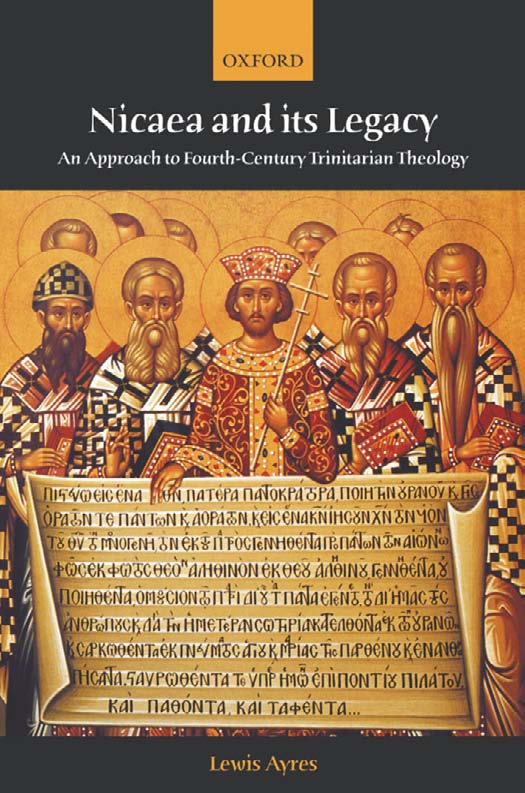
Nicaea and Its Legacy
This page intentionally left blank
Nicaea and Its Legacy
An Approach to Fourth-Century Trinitarian Theology
Lewis Ayres

Great Clarendon Street, Oxford OX 2 6DP
Oxford University Press is a department of the University of Oxford.
It furthers the University's objective of excellence in research, scholarship,
and education by publishing worldwide in
Oxford New York
Auckland Bangkok Buenos Aires Cape Town Chennai
Dar es Salaam Delhi Hong Kong Istanbul Karachi Kolkata
Kuala Lumpur Madrid Melbourne Mexico City Mumbai Nairobi
São Paulo Shanghai Taipei Tokyo Toronto
Oxford is a registered trade mark of Oxford University Press
in the UK and in certain other countries
Published in the United States
by Oxford University Press Inc., New York
© Lewis Ayres, 2004
The moral rights of the authors have been asserted
Database right Oxford University Press (maker)
First published 2004
All rights reserved. No part of this publication may be reproduced,
stored in a retrieval system, or transmitted, in any form or by any means,
without the prior permission in writing of Oxford University Press,
or as expressly permitted by law, or under terms agreed withthe appropriate
reprographics rights organization. Enquiries concerning reproduction
outside the scope of the above should be sent to the Rights Department,
Oxford University Press, at the address above
You must not circulate this book in any other binding or cover
and you must impose this same condition on any acquirer
BritishLibrary Cataloguing in Publication Data
Data available
Library of Congress Cataloging in Publication Data
ISBN 0–19–875506–6
For Medi
This page intentionally left blank
Preface and Acknowledgements
I did not know that I would produce this book when I did. I had intended to finisha book on Augustine's Trinitarian
theology first and then to turn to this project. Eventually it became apparent that this book was nearer completion and
would provide a context for the appearance of my more detailed treatment of Augustine. I would like to offer very
special thanks to those who read drafts of various chapters and who have been willing to talk through my sometimes
idiosyncratic ideas and prose at length. I think especially of Michel Barnes, Roberta Bondi, Catherine Chin, Brian Daley
SJ, Stephen E. Fowl, Stanley Hauerwas (who suggested I should write the book), Brooks Holifield, Luke Johnson,
Andrew Louth, Bruce Marshall, Daniel H. Williams, and Rowan Williams. Their advice, theological wisdom, and
sometimes their sheer skill at punctuation has been invaluable. Without the excellent editorial help of Brooks and
Roberta in the final months readers would have been subjected to considerably more text.
I owe much to many others who have offered their support and advice in many ways during the writing of the text. In
particular my parents have always offered their unconditional support as I pursue what must at times seem an odd
career choice. I would also like to mention Jonathan Beswick, Frank Black, Lenny Briscoe, J. Patout Burns, Robert
Dodaro, Mark Eliott, Carol Harrison, Stanley Hauerwas, Stephen Hildebrand, Augustine Holmes, Gareth Jones, John
Lee, Mary Mclintock-Fulkerson, Ian Markham, Robert Markus, Tom Martin, John Milbank, Rik van Nieuwenhove,
Jeffrey Steenson, Vincent Twomey, and Robert Wilken. They are not all named here, but among those to whom I owe
a debt are my former friends and colleagues at Trinity College Dublin and at the Pontifical College of Maynoothfor
providing an environment in which much of this text was thought through.
I am especially grateful to Michel Barnes for discussing all the topics covered in this book with me over the past few
years and for reading the manuscript closely in earlier drafts. His knowledge has made this a far better book than it
could otherwise have been and it should be read as a product of our ongoing conversation. Michel's understanding of
the necessity of television, film, and Coca-Cola products to the good life has also shaped me in ways that must,
viii PREFACE AND ACKNOWLEDGEMENTS
somehow, have worked their way into my reading of the fourth century. Elizabeth Clark was exceedingly generous with
her friendship, support, and advice during a year at Duke University—and since. From her scholarly and human
qualities—and it is by no means certain that excelling in one area entails excelling in the other!—I and many other
students of early Christianity have learnt much. I am also deeply grateful to Ian Markham (now Dean of Hartford
Seminary) for providing me withan academic environment in Liverpool during 2000–1. He is a true friend.
I also want to acknowledge the gratitude I feel towards Dean Russell E. Richey and my colleagues—too many to name
here—at the Candler School of Theology for welcoming me into their community and enabling the actual completion
of the manuscript. The care and attention they have shown to me and to my family over the past three years has been a
lesson in Christian virtue. Besides those named above I think especially of Stephen Gunter, Carl Holladay, Rod Hunter,
Steve Kraftchick, Charlotte McDaniel, Philip Reynolds, Karen Schreib, and Brent Strawn. Roberta Bondi has been a
wonderful colleague in Early Christian Studies over the past three years, not only in her discussion of my work and in
her efforts to teach me Syriac but also in her appreciation for a good pair of socks. Two graduate classes also offered
extremely helpful comment on some of the chapters and saved me from some particularly egregious assertions. Andy
Gallwitz and Annie Bullock have been particularly and persistently helpful. A number of research assistants, Denise
Kettering, Johnathan Lace, Leanne Montgomery, and most extensively Catherine A. Boothe did the hard work of
compiling the bibliography and standardizing my notes. Sandra Tucker and the staff of Candler Support Services were
invaluable towards the end. I would also like to thank my editors at Oxford, Hilary O'Shea and especially Lucy
Qureshi: they have both been extremely patient and wise. Enid Barker and Heather Watson guided the manuscript
through the editorial process with admirable skill and showed remarkable calm at my endless changes.
An earlier version of Chapter 13 was published in Modern Theology, 18 (2002), 445–74, while an earlier version of
Chapter 14 appears in Robert Dodaro and George Lawless (eds.), Augustine and his Critics (London and New York:
Routledge, 1999), 51–76. A draft of the narrative argument of Chapters 1–10 appears as chapter 38 of Frances Young,
Lewis Ayres, and Andrew Louth(eds.), The Cambridge History of Early Christian Literature (Cambridge: Cambridge
University Press, 2004), 414–63.
The book is dedicated to my wife Medi Ann Volpe. As friend, conversation partner, and mother of Anna and Thomas
I can see her
PREFACE AND ACKNOWLEDGEMENTS ix
only as a gift of the divine providence sent to display to me the love, power, understanding, and sheer wonderful
mystery of the Triune wisdom.
Atlanta
Easter 2004
This page intentionally left blank
Contents
Abbreviations xv
Introduction 1
I. Towards a Controversy
1. Points of Departure 11
Introduction: Where to Begin? 11
I: From Arius to Nicaea 15
II: Origen 20
III: Theology and the Reading of Scripture 31
2. Theological Trajectories in the Early Fourth Century: I 41
The Generation of the Son: Two Trends 41
Alexander, Athanasius, and Friends: Theologians of the True Wisdom 43
The ‘Eusebians’: Theologians of the ‘One Unbegotten’ 52
3. Theological Trajectories in the Early Fourth Century: II 62
‘Marcellan’ Theology: Theologians of the Undivided Monad 62
Western Anti-Adoptionism: A Son Born Without Division 70
Incarnation and Soteriology at 300 76
Heresy and Orthodoxy in the Early Fourth Century 78
4. Confusion and Controversy: AD 325–340 85
The Nicene Creed as a Standard of Faith 85
The Course of the Council 88
Ousia and Hypostasis in the Creed of Nicaea 92
Was there a ‘Nicene’ Theology in 325? 98
AD 325–342: Towards the Creation of ‘ Arianism’ 100
5. The Creation of ‘ Arianism’: AD 340–350 105
The Creation of ‘Arianism’ 105
The Orations Against the Arians. 110
The ‘Dedication’ Council of Antioch117
xii CONTENTS
The Council of Serdica: East vs. West? 122
Confusion and Rapprochement: AD 344–350 126
II. The Emergence of Pro-Nicene Theology
6. Shaping the Alternatives: AD 350–360 133
Constantius and the Rise of the Homoians 133
Athanasius and the Defence of Homoousios 140
Aetius and Eunomius 144
The Rise and Fall of the ‘Homoiousians' 149
Cyril of Jerusalem 153
The Events of AD 359–360 157
7. The Beginnings of Rapprochement 167
Introduction 167
Church and Emperor: AD 360–378 168
Athanasius and the Beginnings of Rapprochement 171
The Pro-Nicene Reaction in the West: AD 360–365 177
Hilary's Theology 179
Conclusion 186
8. Basil of Caesarea and the Development of Pro-Nicene Theology 187
Basil's Early Theology: Problems with homoousios 188
Basil's Developing Theology: Ἐπίνοια and Ιδιώματα 191
Οὐσία and ίδιώματα in Basil's Theology 198
Novelty and Tradition in Basil's Trinitarian Theology 204
The Unity of God and the Human Person 207
Developments in Technical Terminology 209
On the Holy Spirit and Pro-Nicene Pneumatology 211
Tradition and Contemplation 218
Conclusion 221
9. The East from Valens to Theodosius 222
Basil and his Contemporaries 222
Ephrem the Syrian 229
The Meaning of the Term ‘Pro-Nicene’ 236
The Accession of Theodosius 240
10. Victory and the Struggle for Definition 244
Gregory Nazianzen 244
Imperial Definition 251
The Council of Constantinople 253
CONTENTS xiii
The West: AD 365–400 260
On Not Ending the Story 267
III. Understanding Pro-Nicene Theology
11. On the Contours of Mystery 273
Culture, Habitus, and the Life of the Mind 274
Strategy I: Speaking of Unity and Diversity in the Trinity 278
Speaking of God 288
God and the Unity of Mind 289
Inseparable Operation and Appropriation 296
Conclusion 300
12. ‘The First and Brightest Light’ 302
Strategy II: Christology and Cosmology 302
Purification in Christ's Body 304
Existence in the Word 312
Interlude I: ‘Participation’ in Pro-Nicene Theology 321
13. ‘Walk Towards Him Shining’ 325
Strategy III: Anthropology, Epistemology, and the Reading of Scripture 325
Dual-Focus Purification 325
Rereading Scripture 335
Conclusion 341
Interlude II: Ascetic Portability 342
14.On Not Three Gods: Gregory of Nyssa's Trinitarian Theology 344
Introduction 344
The Polemical Context of Ad Ablabium 345
The Structure of the Ad Ablabium 347
Argument A: Creation and the Indivisibility of Natures 349
Argument B: Natures, Powers, Activities, and Knowledge 351
Conclusion: The Essential Nyssa 359
15. The Grammar of Augustine's Trinitarian Theology 364
Introduction: The Modern Attack on Augustine 364
The Early Augustine: Pro-Nicene or Platonist? 366
The Mature Augustine: Pro-Nicene Simplicity 372
Conclusion: Theology in the Word 381
xiv CONTENTS
16. In Spite of Hegel, Fire, and Sword 384
I. Narration from Modernity 384
II. The Forms of Systematics 392
III. Locating the ‘Revival’ 404
IV. After the Passing: A Theology of Theology 414
V. On the Development of Doctrine 425
Epilogue: On Teaching the Fourth Century 430
Bibliography 436
Index 465
Abbreviations
ACW Ancient Christian Writers
ANRW Aufstieg und Niedergang der römischen Welt
BA Bibliothèque Augustinienne
CAG Commentaria in Aristotelem Graeca
CAH Cambridge Ancient History
CCSG Corpus Christianorum Series Graeca
CCSL Corpus Christianorum Series Latina
CHHP Cambridge History of Hellenistic Philosophy
CPG Clavis Patrum Graecorum
CPL Clavis Patrum Latinorum
CSCO Corpus Scriptorum Ecclesiasticorum Orientalium
CSEL Corpus Scriptorum Ecclesiasticorum Latinorum
EOIMA Ecclesiae Occidentalis Monumenta Iuris Antiquissima
FoC Fathers of the Church
GCS Die griechischen christlichen Schriftsteller
JECS Journal of Early Christian Studies
JThS Journal of Theological Studies
LCC Library of Christian Classics
PG Patrologia, Series Graeca
PGL Patristic Greek Lexicon
PL Patrologia, Series Latina
RAC Reallexikon für Antike und Christentum
SC Sources Chrétiennes
SP Studia Patristica
TLG Thesaurus Linguae Graecae
TRE Theologische Realenzyklopädie
TU Texte und Untersuchungen
VigChr Vigiliae Christianae
ZNTW Zeitschrift für die neutestamentliche Wissenschaft
xvi CONTENTS
In many and various ways God spoke of old to our fathers by the prophets; but in these last days he has spoken to us by a Son, whom he appointed heir of all things, through whom also he created the world. He reflects the glory of God and bears the very stamp of his nature, upholding the universe by his word of power.
Hebrews 1: 1–3
For wisdom is more mobile than any motion; because of her pureness she pervades all things. For she is a breath of the power of God, and a pure emanation of the glory of the Almighty; therefore nothing defiled gains entrance into her. For she is a reflection of eternal light, a spotless mirror of the working of God, and an image of his goodness.
Wisdom 7: 24–6
Introduction
The fourth century of the Christian era witnessed a controversy that produced some of the basic principles of classical
Trinitarian and Christological doctrine, the most important creed in the history of Christianity, and theological texts
that have remained points of departure for Christian theology in every subsequent generation. This book explores that
controversy and is aimed at a variety of readers.
To students of early Christianity and late antiquity, I offer a new narrative of the Trinitarian and Christological disputes
that takes further the attempts of recent scholarship to move beyond ancient heresiological categories.1 The aim and
core of my argument is a paradigm that I offer for exploring the theologies that came to be counted as ‘orthodox’ at
the end of the century. This paradigm attempts to move beyond simplistic east/west divisions and to respect the
diversity of ‘pro-Nicene’ theologies better than available accounts. The paradigm also tries to show the interweaving of
pro-Nicene Trinitarian theologies with discussions of cosmology, epistemology, anthropology and—importantly—with
conceptions of how to read Scripture. For pro-Nicenes, theological accounts of Scripture—and of human speech
about God—provided the contexts for accounts of the Trinity itself. Eventually I will suggest that pro-Nicene
theology should be considered as a theological ‘culture’.
My second intended audience is modern Christian theologians.2 To these readers I suggest that recent Trinitarian
theology has engaged the legacy of Nicaea at a fairly shallow level, frequently relying on assumptions about Nicene
theology that are historically indefensible and overlooking the wider theological matrices within which particular
theological terminologies were situated. Chapters 11–14
1 The focus of the book is the Trinitarian and Christological disputes, which means that a number of other controversies between Christians during this century are not
covered. For example, I do not discuss the Donatist, Melitian, or Origenist controversies. I also do not discuss in any detail controversies between Christians and non-Christians.
2 Of course, here I speak mainly of theologians who consider detailed engagement with Nicaea to be a necessary part of good Trinitarian theology—a set that should include
all Catholic and Orthodox theologians, and those of many other communions. I hope that my arguments will also be of interest to theologians not so bound, in particular by showing how the complex theologies of pro-Nicenes involve an attention to Scripture that should claim the attention of all who define their faith as ‘scriptural’. 2 INTRODUCTION
attempt to demonstrate the need for a more detailed account of ‘Nicene’ Trinitarian theology by theologians wishing to
appropriate its dynamics. In the last chapter I argue that pro-Nicene theologies offer accounts of theological language,
of the reading of Scripture, of analogical reasoning, and of the doctrine of God itself that challenge modern Trinitarian
theologians to rethink some of their most cherished assumptions.
While a vast amount of scholarship over the past thirty years has offered revisionist accounts of themes and figures
from the fourth century, few clear summary narratives built on this scholarship have appeared. Accordingly, Parts I
and II of the book, Chapters 1–10, offer a narrative of Trinitarian and Christological thought between approximately
AD 300 and 383. In part, my aim has been to construct a narrative that will be useful for readers without much
familiarity withthis field. In these chapters I have tried, where possible, to refer to existing English translations and to
point to English-language scholarship that offers further useful discussion.
The fundamental problem in understanding the course of these controversies stems from the nature of our sources.
Above and beyond the usual difficulties in constructing any narrative of intellectual argument and development, the
documentary evidence from this period is, in many cases, fragmentary. For some important historical events (such as
the Council of Constantinople itself) we lack any detailed primary account and the writings of some leading figures
(suchas Arius and Marcellus of Ancyra) survive only in fragments. Even surviving accounts that seem less
fragmentary are deeply shaped by heresiological categories honed during the controversies—‘ Arian’, ‘semi-Arian’, and
‘neo-Arian’ being good examples. Such heresiological labels enabled early theologians and ecclesiastical historians to
portray theologians to whom they were opposed as distinct and coherent groups and they enabled writers to tar
enemies withthe name of a figure already in disrepute. Most famously some participants in the debate described
loosely related but clearly distinct thinkers as Arians. In fact, it is virtually impossible to identify a school of thought
dependent on Arius' specific theology, and certainly impossible to show that even a bare majority of Arians had any
extensive knowledge of Arius' writing. Arius was part of a wider theological trajectory; many of his ideas were opposed
by others in this trajectory: he neither originated the trajectory nor uniquely exemplified it. One further result of this
polemical move was to hide the ways in which the theologies typified as Arian draw on a variety of theological
trajectories and cannot be understood as springing from one source. The heresiological label thus covers up the
complexity of theological development. Given the
INTRODUCTION 3
increasing clarity with which we can trace the history of these heresiological terms, recent writers on the fourth century
have tried to narrate the period with greater sensitivity to the continuities and divisions that these labels seek to hide.
Throughout the book I will argue that we should avoid thinking of these controversies as focusing on the status of
Christ as ‘divine’ or ‘not divine’. They focus, first, on debates about the generation of the Word or Son from the
Father. Second, the controversies involve debates about the ‘grammar’ of human speech about the divine. Before
explaining these two points in a little more detail, I need to note that two common ways of presenting the controversies
are simply misleading. One often finds accounts of fourth-century theology arguing that these disputes are not ‘simply’
Christological or ‘simply’ Trinitarian, but it would be far better simply to avoid the categories. The writers considered in
these pages see questions about Christ's ability to reveal and act salvifically to be closely related to his status as the
Word of God. Indeed, the questions are so interrelated because the controversies originally focused on the nature and
consequences of the Word's generation.
For fourth-century theologians, understanding how one should read scriptural discussion of the Word of God or the
Son of God was at the heart of understanding the Christian gospel itself. Only in the context of an account of the
Word's relationship to God did these theologians articulate an account of redemption. Thus, behind the original
controversy lie conflicting approaches to the Word's generation: to what extent can we think of it as the emergence of
one distinct thing from another? How does one understand the distinction between God and Word, Father and Son: is
this the distinction of two separate beings? Are the two distinct in a way parallel to the seemingly necessary hierarchy of
source and product that we see in the creation? Or is this distinction analogous to that of a person who speaks his or
her word (the word being here only a dependent and temporary product of the speaker)?
These questions about the generation of the Son or Word—and consequently about the ontological status of the
generated Son—then have immediate repercussions for how one understands incarnation and redemption. Should we
understand the Incarnate Christ's revelation of God by thinking of the Word as an intermediary being, able to
communicate something of the divine character because of an inherent mutability that makes communication possible?
Even if we reject the Word's mutability and insist on its inseparability from God, how far can the Word reveal the
immutable source of all? In what ways can a Son generated as inferior to the Father act to effect closeness to the Father
of all? Different accounts
4 INTRODUCTION
of the Son's generation (in modern terms a Trinitarian question) were taken to have implications for accounts of the
incarnate Word (in modern terms questions of soteriology and Christology).
Such questions were central, in part, because fourth-century theologians read Scripture differently from modern
theologians. On the one hand, fourth-century assumptions about the Old Testament as Scripture provided points of
departure for reflection on the Word's generation that many modern theologians treat with suspicion. Thus fourth-
century writers treated texts suchas Proverbs 8: 22, Wisdom 7: 25–6 and 8: 1, Isaiah53: 8, Exodus 33: 18–23, Malachi
3: 6, James 1: 17 as fundamental points of reference and departure for discussing the divine being. On the other hand,
fourth-century theologians made assumptions about the analogical and imaginative resources provided by the language
of Scripture that, to many modern readers, seem only to rip terms or verses out of context. To appreciate fourth-
century theology and controversy we need to appreciate better how such reading attended to the imaginative resources
of Scripture. Before we assess the value of this reading practice against the standards of modern exegetical techniques,
we need to understand how early Christian exegetical practice functioned as a key cultural context for the fourth-
century disputes.
A second approach that we need to reject treats the fourth-century debates as focusing on the question of whether to
place the Son on either side of a clear God/creation boundary. The ease with which this distinction can be made by
modern theological readers is itself an achievement of the fourth century. Many fourth-century theologians (including
some who were in no way anti-Nicene) made distinctions between being ‘God’ and being ‘true God’ that belie any
simple account of the controversy in these terms. One of the key factors that enabled the achievement of a clear
distinction between God and creation (suchthat ‘true God’ is synonymous withGod) was the increasing subtlety and
clarity with which late fourth-century theologians shaped their basic rules or grammar for all language about the divine
life and action. As part of this grammar pro-Nicene theologians articulate a clear principle that whatever is God is
necessarily at one with the simplicity of divinity and admits of no degrees: at this point ‘true God’ is a phrase that
cannot be taken to imply the existence of lesser Gods.
Seeing how fourth-century questions initially concern the Word's generation from the Father also helps us to consider
whether and how we may speak of continuity in fourth-century accounts of God. I argue that one link between many
participants supposedly on different sides was an insistence that one must speak of the Son's incomprehensible
generation from the Father as a sharing of the
INTRODUCTION 5
Father's very being. Expressions of this position were initially varied, seemingly contradictory, and often highly
metaphorical. For some the position entailed recognizing the coeternity of the Son, for many it did not. Nevertheless,
because of this continuity, and over the course of the controversies, an account that was both more precise and which
could draw together many who had thought themselves opposed gradually emerged.
These narrative chapters are not intended to replace the standard large surveys by Richard Hanson and Manlio
Simonetti. My intention is to offer a narrative framework for the controversies that in some measure advances on their
texts, and which can form the basis for the consideration of pro-Nicene theology that occupies Parts II and III of my
text. This means that a number of figures who most certainly deserve treatment have not been accorded individual
treatment in the interests of space: I have in mind Marius Victorinus, Eusebius of Emesa, Epiphanius of Salamis, and
Didymus the Blind. Some, however, who do not usually receive sufficient consideration in the story of the fourth
century have been considered, Ephrem the Syrian being a good example. The English reader also lacks an extended
introduction to Basil of Caesarea's Trinitarian thought, and I have accordingly devoted considerable space to him. It is
also important to note that my intention has not been to offer complete portraits of the figures I discuss, but to trace
the story of the fourth-century controversies. In some cases major texts by authors are not extensively considered
where their influence is hard to trace. Thus the reader will look in vain for any extended treatment of Athanasius' On
the Incarnation: but the same reader will also look in vain for any substantive evidence that this treatise had any effect on
the later fourth-century readers I discuss.
The type of ‘historical theology’ represented by this book has been somewhat displaced by scholarly styles that
frequently locate doctrinal development as an epiphenomenon of political, cultural, and social contexts. Indeed, it is
important to recognize that placing doctrinal history against such background has been one of the central
achievements of scholarship on early Christianity in the last few decades. Nevertheless, unless one has an entirely
materialist understanding of intellectual development, this should not be taken to mean that the sort of theological
history offered here is no longer of importance. The practitioner of this style has, however, to bear in mind that his or
her account is always open to supplementation from other styles of investigation in the field. Questions of causation
will remain particularly contentious, implying as they do not merely decisions about causal factors in any given case but
wider debates about intellectual development as such. I have indicated places
6 INTRODUCTION
where the development of doctrine during the fourth century seems to have been driven by political events in the
empire: further study (and more space) would enable the indication of more points at which political and economic
contexts had important influence. The argument of this book is thus intended to be porous to other styles of study.
This is perhaps particularly the case with reference to material that would relate the theological shifts of the fourth
century to shifts in the intellectual life of the empire during the period. I have been able to undertake little of such
study here: such investigation will have to await future opportunity.
Chapters 11–15 turn to the shared contours of pro-Nicene Trinitarianism. By ‘pro-Nicene’ I mean those theologies,
appearing from the 360s to the 380s, consisting of a set of arguments about the nature of the Trinity and about the
enterprise of Trinitarian theology, and forming the basis of Nicene Christian belief in the 380s. Intrinsic to these
theologies were compatible (but not identical) accounts of how the Nicene creed should be understood. These
accounts constituted a set of arguments for Nicaea—hence pro-Nicene.3 All of these theologies build closely on and
adapt themes found earlier in the century, but none is identical with any original ‘Nicene’ theology apparent in the 320s
or 330s. Further, pro-Nicene theology was itself constituted by a collection of overlapping yet distinct theologies. Pro-
Nicene theologies share assumptions and practices that provided the context for the terminologies so frequently
treated as the single legacy of pro-Nicene theology. Throughout this part of the book I also argue that the East/West
or Greek/Latin division which is often used as a primary dividing marker between varieties of fourth- and fifth-
century Trinitarian theology is of far less significance than is usually thought. Chapters 14 and 15 look in detail at
probably the two most contested and frequently discussed pro-Nicene theologians: Gregory of Nyssa and Augustine. I
postpone these treatments until this point in the hope that the previous summary chapters allow for fresh narrations of
these figures.
Chapter 16 is a theological conclusion in which I explore ways in which modern theological cultures have failed to
engage pro-Nicene theology. Even modern theologies wishing to uphold a Nicene faith have frequently failed to
sustain the theological practices that shaped and made possible that faith. At the very end of Chapter 16 I consider
briefly the nature of doctrinal development. I do not offer here a model that allows one to assert a continuity
discernible or verifiable
3 I take up the question of terminology, with reference to scholarly debates about ‘Nicene’, ‘neo-Nicene’, and ‘pro-Nicene’ in Ch. 9.
INTRODUCTION 7
to any objective historical observer (as has been the function of many theories of doctrinal development in the past
two centuries). Instead I set out some perspectives within which the narration of continuity is possible and necessary
for Christian theologians—even though that continuity eludes our full comprehension—and in which the process of
historical investigation is ongoing and continually demanded of theologians and historians of theology. In many ways
the argument of my last chapter is not that modern Trinitarianism has engaged with pro-Nicene theology badly, but
that it has barely engaged with it at all. As a result the legacy of Nicaea remains paradoxically the unnoticed ghost at the
modern Trinitarian feast.
This page intentionally left blank
1 Towards a Controversy
This page intentionally left blank
1 Points of Departure
The whole power of the mysterious dogma is at once established by the one word homoousios, which was sovereignly
proclaimed at the Council of 318 [sic], because this word stands for both a real unity and a real distinction. It is
impossible to mention without reverent fear and holy trepidation that moment—infinitely significant and unique in
its philosophical and dogmatic importance—when the thunder of Homoousios first roared over the city of Victory . . .
And the single word homoousios expressed not only a christological dogma but also a spiritual evaluation of the
rational laws of thought. Here rationality was given a death blow.4
Introduction: Where To Begin?
In his wonderful dramatic prose Pavel Florensky epitomizes a centuries-old account of the Council of Nicaea: in one
decision and with one pronouncement the Church identified a term that secured its Trinitarian and Christological
beliefs against heresy and established a foundation for subsequent Christian thought. The narrative offered in Chapters
1–10 demonstrates why such older accounts are deeply mistaken and suggests a more credible alternative.5
The four decades since 1960 have produced much revisionary scholarship on the Trinitarian and Christological
disputes of the fourth century. It is now a commonplace that these disputes cannot simply be understood as the
product of the Church's struggle
4 Pavel Florensky, The Pillar and Ground of the Truth: An Essay in Orthodox Theodicy in Twelve Letters, tr. Boris Jakim (Princeton: Princeton University Press, 1997), 41. When he
speaks of the ‘Council of 318’ Florensky is referring to the legendary number of those present, not the date.
5 Three articles of recent years offer similar accounts of the century as a whole in the light of recent scholarship: André de Halleux, ‘La Reception du Symbole Œcumenique,
de Nicée à Chalcédoine’, Ephemerides Theologicae Lovaniensis, 61 (1985), 5–47 (repr. in Patrologie et Œcuménisme. Recueil d’études, Bibliotheca Ephemeridum Theologicarum Lovaniensum, XCIII (Leuven: Leuven University Press, 1990), 25–67); Michel René Barnes, ‘The Fourth Century as Trinitarian Canon’, in Lewis Ayres and GarethJones (eds.), Christian Origins:. Theology, Rhetoric and Community (London and New York: Routledge, 1998), 47–67; JosephT. Lienhard, ‘The Arian Controversy: Some Categories Reconsidered’, Theological Studies, 48 (1987), 415–36. The perspective of Barnes' is closest to my own.
12 1. TOWARDS A CONTROVERSY
against a heretic and his followers grounded in a clear Nicene doctrine established in the controversy's earliest stages.6
Rather, this controversy is a complex affair in which tensions between pre-existing theological traditions intensified as a
result of dispute over Arius, and over events following the Council of Nicaea. The conflict that resulted eventually led
to the emergence of a series of what I will term pro-Nicene7 theologies interpreting the Council of Nicaea in ways that
provided a persuasive solution to the conflicts of the century.
Pro-Nicene theologies combined both doctrinal propositions and a complex of intellectual theological strategies.
Together these doctrines and the strategies within which those doctrines were intended to be read constitute a
theological culture. By attention to this theological culture, I suggest, we best understand the theological propositions
typically identified as Nicene.8 My treatment is intended to contribute to a developing scholarly discussion of what it
means to speak of Nicene theology between 325 and 381. I say developing because while revisionary scholarship
during the past forty years has addressed the complexity of the term Arian, discussion of the term Nicene has been
muchmore restricted.9 In describing this period Richard Hanson's The Search for the Christian Doctrine of God (1988) and
Manlio Simonetti's La Crisi Ariana nel IV secolo (1975) remain essential points of reference—as I stated in the
Introduction. Simonetti is, it should be noted, considerably more successful as a piece of narrative history. Anyone who
attempts to narrate these controversies is also indebted to Hanns Christof Brennecke's Studien zur Geschichte der Homöer
(1988) for the later phases of the controversy. Most recently, Richard Vaggione's Eunomius of Cyzicus and the Nicene
Revolution treats the dispute as
6 Rowan D. Williams, Arius: Heresy and Tradition (London: DLT, 1987), 1–25, offers one of the best recent discussions of the way scholarship on this controversy has
developed. Ironically, Williams's excellent book still reflects something of an older concern in using Arius himself as the pivot for comments about the controversy as a whole. As we shall see, the direction of recent work has been to focus on Arius as a catalyst for a controversy within which his particular theology rapidly becomes marginal. Michael Slusser also offers a very useful summary of the history of 4th cent. historiography in his ‘Traditional Views of Late Arianism’, in Michel Barnes and Daniel H. Williams (eds.), Arianism after Arius (Edinburgh: T.&T. Clark, 1993), 3–30.
7 The term ‘pro-Nicene’ is defined and discussed in Ch. 9.
8 My use of ‘culture’ is discussed at the beginning of Ch. 11. The definition I give there may be helpful here: ‘a system of learned patterns of behaviour (including thought,
speech, and human action), ideas, and products that together shape conceptions of the order of existence and interactions with other cultures’.
9 There has been some discussion, but its focus has largely been the relationship between the ‘Nicene’ theology of Athanasius and the later theologies of the Cappadocians. I
criticize this approach in Ch. 9.
POINTS OF DEPARTURE 13
a whole, but through a focus on the Heterousian theologians Aetius and Eunomius.10
Existing descriptions of this period tend to emphasize differences between theologians and theological parties, mainly
for the sake of clarity. This historiographical tactic, however, all too easily blurs the differences between theologians
who may also share much in common and hides themes that will eventually result in new alliances. Speaking of
theological groups or parties is a descriptive move fraught with difficulty when we fail to recognize the particular
patterns of mutual interconnection and cohesiveness pertaining among members of any such party. Hence, my account
pays particular attention to the difficulties of identifying discrete parties and positions during the course of the
controversy. I have refrained from trying to construct a new typology of parties and movements, focusing instead on
the complex texture of the alliances that marked the period.
Many summary accounts present the Arian controversy as a dispute over whether or not Christ was divine, initially
provoked by a priest called Arius whose teaching angered his bishop, Alexander of Alexandria. Eventually, this
traditional account tells us, the controversy extended throughout the century—even after the decisive statements of the
Council of Nicaea—because a conspiracy of Arians against the Nicene tradition represented particularly by Athanasius
perpetuated Arius' views.11 Even when the century is understood as one of evolution in doctrine, scholars continue to
talk as if there were a clear continuity among non-Nicene theologians by deploying such labels as Arians, semi-Arians,
and neo-Arians. Suchpresentations are misleading in two very important ways.
First, this controversy is mistakenly called Arian. No clear party sought to preserve Arius' theology. Many who are
termed Arian justly protested their ignorance of his teaching or works: their theologies often have significantly
different concerns and preoccupations. Even those who initially supported Arius in his struggle with Alexander, the
bishop of Alexandria, may be misleadingly termed Arian, if what they recognized in the controversy over Arius was
not an attack on their teacher or main inspiration, but an attack on one who expressed ideas to which they (perhaps
only in part) subscribed.
10 Manlio Simonetti, La Crisi Ariana nel IV secolo, Studia Ephemerides Augustinianum, 11 (Rome: Augustinianum, 1975); Hanns Christof Brennecke, Studien zur Geschichte der
Homöer: Der Osten bis zum Ende der homöischen Reichskirche (Tübingen: J. C. B. Mohr, 1988); Richard P. Vaggione, Eunomius of Cyzicus and the Nicene Revolution (Oxford: Oxford University Press, 2000). Of older accounts, one of the very best available in English is Jean-Rémy Palanque et al., The Church in the Christian Roman Empire, tr. Ernest C. Messenger (London: Oates&Washbourne, 1949). The chapters on doctrinal history are by Gustave Bardy.
11 The extent to which one can speak of an original ‘Nicene theology’ is discussed in Ch. 4.
14 1. TOWARDS A CONTROVERSY
Many of Arius' earliest supporters appear to have rallied to him because they, like him, opposed Alexander's theology:
we have little information about their allegiance to the emphases of Arius' own theology. For these reasons some
scholars now simply refrain from using the term Arian other than as an adjective to describe Arius' own theology and I
shall follow that practice.12 The relationships between those termed Arian must be demonstrated, not assumed.
Second, it is misleading to assume that these controversies were about ‘the divinity of Christ’ if that implies either a
priori agreement about the meaning of ascribing divinity to the Son, or if it means that these controversies focused on
this specific question. Suggestions that the issue was one of placing Christ (and eventually the Spirit) on either side of a
well-established dividing line between created and uncreated are particularly unhelpful. At issue until the last decades
of the controversy was the very flexibility with which the term ‘God’ could be deployed.13 Many fourth-century
theologians easily distinguished between ‘God’ and ‘true God’. In discussions of the relations between the Son and the
Father, or between creation and generation, arguments about the ‘grammar’ for talking about God were also under
way.
The use of the term ‘grammar’ in theological and philosophical discussions has become both frequent and at times
confusing: when I use the term, I mean a set of rules or principles intrinsic to theological discourse, whether or not
they are formally articulated. If, for instance, a theologian argues that the Son is ‘God’ but not ‘true God’, that
argument implies the possibility of degrees of deity and a rule that will allow a flexible application of ‘God’. Similarly,
questions about whether or not the Logos was ‘breathed forth’ for interaction with the creation or just breathed forth
eternally also imply principles about whether the rules for speaking about God will allow some sort of semi-temporal
change in God's being. If not, then the Logos must be breathed forth eternally or in a pre-temporal state. Embedded
within exegetical and philosophical arguments were
12 There are a few figures active in the latter stages of the controversy among those condemned with Arius in the controversy's earliest stages: Euzoius, Homoian bishop of
Antioch in the 360s and 370s, is one of the most famous. However, there is little evidence that these figures presented themselves as his defenders or successors and there is little evidence that they follow the particular emphases of his thought. George, bishop of Laodicea and, for a while, a close associate of Basil of Ancyra (see Ch. 6), is an excellent example of an earlier supporter of Arius whose theology takes a very different turn.
13 Marianne Meye Thompson, The God of the Gospel of John (Grand Rapids, Mich.: Eerdmans, 2001), ch. 1, offers a very helpful discussion of the flexibility of ‘God’ language
in the Old and New Testaments. She is particularly helpful on noting the ways in which this term (in its various Greek and Hebrew forms) to some extent shifts its significance depending on context. Much of what she discusses there is directly relevant to the situation at the turn of the 4th cent.
POINTS OF DEPARTURE 15
different rules for speaking about divinity. In some cases, especially in the latter years of the fourth century, these issues
of ‘grammar’ become explicit topics for some theologians. Indeed, part of the solution to the fourth-century
controversies consists in an increased clarity about the grammar of divinity, in particular, an insistence that all speech
about Father, Son, and Spirit is governed by the same assumptions about the divine. Once these principles have been
articulated theologians used them as the basis for further arguments about the adequacy of particular ways of speaking
about God. Thus, throughout the century, one can understand accounts of the Son's role and nature only against the
background of the grammar of divinity that provides the context for those accounts.
Having considered how not to approach this story, we can now move to consider the origins of the dispute, exploring
four possible points of departure:
1. I will consider what initially might seem the most obvious point of departure: events concerning Arius up to the
Council of Nicaea in 325. To begin here, however, is to risk missing the context within which this dispute
occurred and why it came to interest so many across the Roman world.
2. Next I turn to the theology and legacy of Origen. Since Epiphanius in the late fourth century, historians have
pointed to Origen as the source of Arius' theology and hence of the controversy as a whole. While Origen
cannot be treated thus, his legacy was important in the theological debates of the early fourth century.
3. Then I consider exegesis in the period between Origen and the late fourth century, seeking to highlight the
extent to which particular understandings of theological practice ground and shape these disputes.
4. Finally, in Chapters 2 and 3 I use themes from the first three points of departure to lay out the fourth: the variety
of theological trajectories existing in tension at the beginning of the fourth century. One of my goals in offering
this fourth point of departure is to relativize the first: the controversy surrounding Arius was an
epiphenomenon of widespread existing tensions and understanding those tensions is essential to understanding
how the controversy developed in the decades that followed.
I: From Arius to Nicaea
From the first point of departure these controversies began with a dispute between the priest Arius and his bishop
Alexander in the city of Alexandria, AD 318 (but maybe as late as
16 1. TOWARDS A CONTROVERSY
probably in 322).14 Alexander taught that God was always Father and that the Son was always Son, thus implying the
eternal generation of the Son; as the Father's Word and Wisdom the Son must always have been with the Father. At
the same time, he taught that the Son is the exact image of the Father and thus able to reveal and represent him. Arius
saw his bishop's theology as implying two ultimate principles in the universe, and he thought that Alexander
compromised the biblical insistence on the Father's being alone God and alone immortal (1 Tim. 6: 16). For Arius, any
talk about Father and Son as coeternal ignored the hierarchy involved in the very language of Father and Son. Arius
saw the Son as a being distinct from and inferior to the Father, and he seems to have played down metaphorical
language that suggested continuity of being or existence between Father and Son.15 The Son imaged the Father, but
only by being created as a derivative copy of some of the Father's attributes.
Complex social issues were also at stake. The episcopacy of Alexander occurred during a time when the Church in
Alexandria was still moving towards acceptance of a ‘monarchial’ vision of episcopacy in which the bishop's authority
over matters of faith and practice was unique and exceeded all other authorities in the diocese. During the second
century and some of the third, it seems that the Alexandrian Church maintained a sense of the bishop as primus inter
pares (first among equals), as the head of the presbyters rather than as the one absolute authority in the diocese.
Through the second half of the third century and on into the fourth, the Alexandrian bishops gradually assumed a
more powerful role, copying a conception of episcopacy seemingly evident in most other eastern cities. Nevertheless,
even while Alexandria moved towards a monarchical model, it apparently maintained a tradition of independent priests
whose relationship with the bishop was complex.
Struggle over the role of the bishop may have been behind an earlier dispute in Egypt, known as the ‘Melitian
schism’.16 During the persecution of 303–13 Melitius, bishop of Lycopolis, seems to have aroused the anger of some
imprisoned fellow bishops because he ordained priests and interfered in dioceses without consulting the official visitors
(designated by bishops to act in their absence), most notably annoying Peter of Alexandria (who was probably in
hiding).
14 Socrates (Hist. eccl. 1. 5) and Sozomen (Hist eccl. 1. 15) both report the controversy as initially coming to a head in the context of discussion between Alexander and his
assembled clergy about the relationship of Son and Father. Theodoret (Hist. eccl. 1. 1) presents the origins much more cursorily, presenting Arius as teaching something new and immediately being opposed by his bishop, Alexander, who held ‘strongly to the doctrines of the Apostles’.
15 The theologies of Alexander and Arius are discussed in more detail in Ch. 2.
16 On the relations between these various disputes in Egypt see Rowan D. Williams, ‘Arius and the Melitian Schism’, JThSNS 37 (1986), 35–52.
POINTS OF DEPARTURE 17
At the end of the persecution Melitius seems to have taken offence at the leniency of Peter's regulations for
readmittance to the Church (Peter himself was only out of prison a short time before being martyred) and within a few
years Egypt had an alternative hierarchy of bishops. Although Peter's leniency was important here, it is clear that the
bishop's authority was also at issue. It is not likely, as was once argued, that Arius himself had an association with
Melitius, the disputes around Arius and Melitius were both interwoven with the rise in Alexandria of a monarchial
vision of episcopacy over against the independence of individual teachers.17 That Arius' disputes with his bishop began
against the background of struggles over ‘Melitians’ seems only to have made Alexander more determined to assert
control. At various times through the century Melitius’ supporters and non-Nicene Christians appear to have made ad
hoc alliances, but lack of evidence prevents us asserting doctrinal commonalities.
Alexander and the Alexandrian clergy condemned Arius after he refused to sign a confession of faith presented by
Alexander.18 Over the next few years Arius gained support from some bishops in Palestine, Syria, and North Africa,
especially Eusebius of Caesarea in Palestine and Eusebius of Nicomedia, near Constantinople. Many of his supporters
appear to have greatly valued the teaching of Lucian of Antioch, a priest and teacher in Antioch martyred in 312 and
some were Lucian's students. Although these supporters may have been wary of some aspects of Arius'
theology—especially his insistence on the unknowability of the Father—they joined in opposition to Alexander. For all
of them Alexander's theology seemed to compromise the unity of God and the unique status of the Father. Two small
councils, one in Bithynia, the other in Palestine, vindicated Arius, and Alexander may have refused a conciliatory
approachfrom Arius as involving insufficient concession.19 For some of this period Arius seems to have left (or been
expelled from) Alexandria and travelled to seek support; eventually he returned and openly opposed Alexander.
In 324 the Emperor Constantine, who had that year defeated
17 An excellent view of Athanasius' episcopate from this perspective is provided by David Brakke, Athanasius and the Politics of Asceticism (Oxford: Clarendon Press, 1995). One
should, however, be careful to differentiate this complex background to the dispute from the anachronistic and nonsensical attempt to present Arius as the upholder of a ‘democratic’ Christianity.
18 A helpful summary of the confusing events between 318 and 322 is provided by Richard P. C. Hanson, The Search for the Christian Doctrine of God: The Arian Controversy
318–381 AD (Edinburgh: T.&T. Clark, 1988), 134–5, largely reliant on the earlier work of Opitz. See also the slightly different reconstruction of events by Williams, Arius, 48–61. For our purposes detailed discussion of the differences between these two versions is not necessary. See also Simonetti, La Crisi, 25–41.
19 The letter is to be found at Athanasius, Synod. 16. The question here turns on whether or not one reads this letter as conciliatory!
18 1. TOWARDS A CONTROVERSY
Licinius, formerly his co-ruler in the east, and assumed control of the whole empire, took an interest in the dispute.20
Constantine wrote to Alexander and Arius telling them to stop quarrelling about what seemed to him to be such a
small matter. Soon, however, Constantine began to see their dispute as more serious. It is highly likely that a small
council took place in Alexandria, attended by Ossius the bishop of Cordoba in Spain who apparently acted in some
sort of advisory capacity to Constantine, and perhaps also served as his representative in these events. Soon afterwards,
Constantine decided that decisive action was necessary, possibly persuaded by Ossius.
A few months later, probably early in 325, a council took place in Antioch, possibly under the presidency of Ossius.
We know about this meeting because of the survival of a letter in Syriac (translated from a Greek original) probably
from Ossius, reporting the council's decisions.21 The meeting produced a statement of belief asserting that the Son is
generated from the Father himself in an ineffable manner and that the transcendence and ineffability of this generation
forbid us from speaking of the Son as in any way like the creation. The text distinguishes the language of the Son's
‘generation’ from language used about the ‘creation’ of the cosmos. This council also temporarily excommunicated one
of Arius' senior supporters, Eusebius of Caesarea. This excommunication was treated as temporary because the
Antiochene council knew that a larger meeting would gather within months.
This larger council met from late May to July 325 at Nicaea in Asia Minor. Constantine himself summoned the
bishops, demonstrating his determination to stop this divisive dispute getting worse.22 Originally Constantine seems to
have summoned the council to Ancyra (modern Ankara in Turkey), but he changed the venue, possibly to have the
bishops meet closer to the imperial capital. At Ancyra he would have had the support of Marcellus, bishop of Ancyra,
who was either already known to Constantine, or had at
20 The nature of Constantine's role at Nicaea is discussed in Ch. 4.
21 For the evidence see Hanson, The Search, 146–51; Alistair H. B. Logan, ‘Marcellus of Ancyra and the Councils of 325: Antioch, Ancyra, and Nicaea’, JThSNS 43 (1992),
428–46. The key sections of the text (translated from a reconstruction of the Greek original) are discussed in Ch. 2. Recently the nature of this meeting has been reconsidered and its very existence come under renewed attack in Holger Strutwolf, Die Trinitätstheologie und Christologie des Euseb von Caesarea: Eine Dogmengeschichte Untersuchung seiner Platonismusrezeption und Wirkungsgeschichte (Göttingen: Vandenhoeck&Ruprecht, 1999), 31–44. I remain unconvinced: it is unfortunate that Strutwolf does not consider Logan's articles on the subject.
22 This is the conjecture of Henry Chadwick, ‘Ossius of Cordova and the Council of Antioch’, JThSNS 9 (1958), 292–304. Part of the circumstantial evidence for this
interpretation is that Constantine seems to have attempted to exert some control over the Donatist split in the North African Church at its inception, without any success. Here he hoped to have more success.
POINTS OF DEPARTURE 19
least now been indicated as a strong opponent of the views held by Arius.23 Around 250–300 attended, drawn almost
entirely from the eastern half of the empire: Ossius probably presided.24 Although other business was also
considered—especially the problem of settling on a universal method for deciding the date of Easter—the crisis in
Alexandria seems to have taken centre stage.
The decision of the council against Arius found expression in a short statement of faith, the creed of Nicaea:
We believe in one God, Father Almighty Maker of all things, seen and unseen; and in one Lord Jesus Christ the Son
of God, begotten as only begotten of the Father, that is of the being of the Father , God of
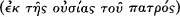
God, Light of Light, true God of true God, begotten not made, consubstantial with the Father, through
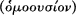
whom all things came into existence, both things in heaven and things on earth; who for us men and for our
salvation came down and was incarnate and became man, suffered and rose again the third day, ascended into the
heavens, and is coming to judge the living and the dead.
And in the Holy Spirit.
But those who say ‘there was a time when he did not exist’, and ‘before being begotten he did not exist’, and that he
came into being from non-existence, or who allege that the Son of God is from another hypostasis or
ousia , or is alterable or changeable, these the Catholic and Apostolic Church
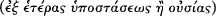
condemns.25
After the council Constantine exiled Arius along with two Libyan bishops who had strongly supported him. The
Emperor also exiled Eusebius of Nicomedia: it appears that Eusebius signed up to Nicaea but had then received into
communion some of Arius’ Alexandrian supporters, an action that angered Constantine. Others of Arius’
supporters—suchas Eusebius of Caesarea—signed the creed and survived unscathed (Eusebius thus succeeded in
getting his condemnation at the Council of Antioch reversed). Within two or three years, however, Arius and the
others exiled by Constantine were recalled, it seems at the behest of the Emperor, and readmitted to communion by a
small gathering of bishops.26
Those who assume that this narrative of Arius and his conflict withAlexander is the most important point of
departure for the fourth-century controversies interpret the events after Nicaea by narrating the emergence of an Arian
conspiracy to keep alive his
23 See Logan, ‘Marcellus of Ancyra and the Councils of 325’.
24 For surviving lists of those present see the new edition of H. Gelzer et al. (eds.), Patrum Nicaenorum Nomina (Stuttgart and Leipzig: Teubner, 1995).
25 This translation is Hanson's, at The Search, 163. His n. 42 on the same page gives references to surviving early texts of the creed.
26 These are murky events that need not detain us here: for reconstructions see Hanson, The Search, 172–8; Williams, Arius, 67–81; Simonetti, La Crisi, 99 ff. 20 1. TOWARDS A CONTROVERSY
theology, to oppose Athanasius, and to contend against Nicaea and its theology. In fact, little evidence for any Arian
conspiracy can be found. In these confusing events around and after Nicaea, we see the need to consider not simply
Arius and his fortunes but the wider context within which that particular controversy occurred. If we are to make
useful judgements about Nicaea's creed and about how the Christian community viewed the conflict over Arius, we
need to understand the theological options available in the 300–25 period. For example, the initial opponents of Arius
present him as distorting the Church's traditional faith; Arius argues, however, that Alexander's theology changes and
distorts the traditional catechetical teaching in Alexandria. We can only assess these claims by understanding the wider
context within which those claims were made. Indeed, through exploring this context we will find pre-existing deep
theological tensions at the beginning of the fourth century. Controversy over Arius was the spark that ignited a fire
waiting to happen, and the origins of the dispute do not lie simply in the beliefs of one thinker, but in existing tensions
that formed his background. I want to approach this discussion of origins slowly, first turning to two other possible
points of departure. The first is the theology and legacy of Origen.
II: Origen
The greater one's ability to place theologies within the traditions that nurtured them, the better one understands their
dynamics.27 The theology of Origen of Alexandria (c.185–c.251) lies beneath the surface of many early fourth-century
theologies. Scholars have long recognized his significance: for some over the last century Arius' own theology is a
direct result of Origen's ‘subordinationism’.28
27 Similarly, the more one narrates the history of theology as a diachronic illustration of unchangeable logics inherent in Christian thought (as sets of constant opposing
possibilities), the more one adheres to the ahistorical practices of modern ‘systematic’ theology and to a historiography that evolved in symbiosis with it. I have attempted to give some positive suggestions as to what should count as historical engagement in theology (partially reliant on Jauss's reading of Gadamer) in my ‘On The Practice and Teaching of Christian Doctrine’, Gregorianum, 80/1 (1999), 33–94. See also Ch. 16.
28 For this reason Basil Studer, Trinity and Incarnation: The Faith of the Early Church (Edinburgh: T.&T. Clark, 1993), 102–3, talks of the beginning of the 4th cent. as ‘the
Origenist controversy’. Simonetti, La Crisi, pursues the same argument. Studer talks of a twofold controversy between, on the one hand, Origenists themselves (Arius and Alexander) and, on the other hand, between these groups and those who stood outside the Origenist tradition, such as Marcellus of Ancyra. As long as one emphasizes the extent to which both ‘Origenist’ sides are only partially indebted to Origen and to an already transformed version of his theology this designation is helpful. I have avoided it because the phrase ‘Origenist controversy’ is already a well-established term for the debate over Origen's work at the end of the 4th cent. See Elizabeth A. Clark, The Origenist Controversy: The Cultural Construction of an Early Christian Debate (Princeton: Princeton University Press, 1992).
POINTS OF DEPARTURE 21
Sucha view is implausible for three reasons. First, Origen exercised influence on all sides in Alexandria, and on many
beyond Egypt and Palestine (the two areas where he wrote and taught).29 Second, no theologian adopted Origen's
system wholesale: his influence is always partial and usually hard to trace with precision.30 Origen's legacy is complex
because some aspects of his work—discussed below—were controversial within a few years of his death. As Rebecca
Lyman writes, ‘his Christian commitment was unquestionable, but his theological conclusions stimulated passionate
apologetic or repudiation; he was too right to be wrong, or too attractively wrong to be ignored’.31
Third, Origen's account of the Son as in some ways subordinate to the Father is in part simply that of his
contemporaries: the aspects that seem most his own push in different directions from those pursued by Arius. Indeed,
it is important to note the problematic status of the very term subordinationism. Insofar as it is understood to indicate
an intent to present the Son as being inferior to the Father it does not accurately describe the character of many pre-
Nicene and early fourth-century theologies. Consider, for example, a third- or fourth-century theologian who spends
considerable effort showing how the Son can be said to possess some of the Father's attributes or to image those
attributes because of the manner in which the Son is uniquely generated. In such a case describing the theologian's
intent as one of subordinationism directs our attention away from the concern to emphasize continuity of being
between the two. Consequently I have tried to reserve the term in this book for theologians whose clear intent is to
subordinate the Son to the Father in opposition to the gradual emergence of Nicene and pro-Nicene theologies.
Origen did not, however, simply offer to future generations new terminological choices and theological formulations:
his work as exegete helped to shape the character of theology and exegesis in the fourth century. Origen commented
on a huge amount of the biblical text and at every turn he was determined to display the capacity of the Scripture to
illumine the story of creation and redemption, and
29 In the West in the early 4th cent. his work seems to have exercised no discernible influence on the areas of theology with which we are concerned.
30 Perhaps the strongest recent repudiation of attempts to see Origen's work as the direct background to controversy over Arius is Richard P. C. Hanson, ‘The Influence of
Origen on the Arian Controversy’, in L. Lies (ed.), Origeniana Quarta, Innsbrucker theologische Studien, 19 (Innsbruck: Tyrolia, 1987), 410–23. As ever Hanson states his case a little too starkly: even here he ultimately notes the partial appearance of Origen's thought in a wide variety of contexts.
31 J. Rebecca Lyman, Christology and Cosmology: Models of Divine Activity in Origen, Eusebius, and Athanasius (Oxford: Oxford University Press, 1993), 39.
22 1. TOWARDS A CONTROVERSY
the ways in which the text draws Christians into a process of purification and salvation. For Origen the text yields its
message in degrees as purity of heart and attention to the Logos grows.32 To serve these he developed several styles of
intertextual practice, allowing texts throughout Scripture to illuminate each other and the whole. Many of these
interpretative practices are used throughout the fourth century.33
Turning to his account of Father and Son, we need to explore how Origen emphasizes both the unique status of the
Father and the ways in which the relationship of Father and Son is constitutive of the divine life.34 Father and Son are
distinct beings and yet Origen begins to think of the Son, the image who is ‘in’ the Father (John 14: 10), as constituted
by a mirroring of the Father's existence and as intrinsic to the nature of God. In part he negotiates this paradox by
means of his insistence that the Son is eternally generated from the Father. For Origen, he who is God's Wisdom and
Power must have always been with the Father.35 Introducing an argument that will be developed in the fourth century,
Origen argues that Father and Son are ‘correlative’ terms. The name Father implies the existence of a child, and if God
is truly called Father, the Son's generation must be eternal. The Son's existence thus seems to be essential to God's
32 On Origen's exegetical practice and his legacy in this area see Karen J. Torjesen, Hermeneutical Procedure and Theological Method in Origen's Exegesis (Berlin: De Gruyter, 1986);
Rowan D. Williams, ‘Origen: Between Orthodoxy and Heresy’, in W. A. Bienert and U. Kuhneweg (eds.), Origeniana Septima: Origenes in den Auseinandersetzungen des 4. Jahrhunderts, BETL CXXXVII (Leuven: Leuven University Press, 1999), 3–14; David Dawson, Figural Reading, the Fashioning of Identity and the Suppression of Origen (Berkeley: University of California Press, 2002); Bernhardt Neuschafer, Origenes als Philologe, 2 vols. (Basle: FriedrichReinhardt, 1987).
33 The first book of Origen's Comm. John is a paradigmatic text in this regard.
34 For literature on Origen see Henri Crouzel, Bibliographie critique d'Origène (The Hague: Nijhoff, 1971 (with suppl. 1982)), and his annual reports on Origenist scholarship in
the Bulletin de littérature ecclésiastique. For my account of Origen here I am greatly indebted to Rowan Williams, Arius, 131–48 and Michel René Barnes, The Power of God: in Gregory of Nyssa's Trinitarian Theology (Washington, DC: Catholic University of America Press, 2000), 111–24. See also Alistair H. B. Logan, ‘Origen and Alexandrian Wisdom Christology’, in Richard P. C. Hanson and Henri Crouzel (eds.), Origeniana Tertia (Rome: Edizioni dell'Ateneo, 1985), 123–9. For English-language readers very good summary material is also provided in John Behr, The Way to Nicaea, The Formation of Christian Theology, 1 (Crestwood, NY: St Vladimir's Seminary Press, 2001), ch. 7; Lyman, Christology and Cosmology, ch. 2; Mark Edwards, Origen Against Plato (Burlington, Vt.: Ashgate, 2002).
35 See Origen, Princ. 1. 2. 2: ‘And can anyone who has learned to regard God with feelings of reverence suppose or believe that God the Father ever existed, even for a single
moment, without begetting this wisdom? . . . Let h im wh o assigns a beginning to the Word of God or the wisdom of God beware lest he utters impiety against the unbegotten Father himself, in denying that he was always a Father . . . ’. On the use of the Father and Son's correlativity see Peter Widdicombe, The Fatherhood of God from Origen to Athanasius (Oxford: Clarendon Press, 1994), esp. chs. 3, 9, 10. One question that Widdicombe does not sufficiently address is the extent to which Father–Son correlativity is being discussed because of the Father–Son analogy itself, or because of the ontological principle it can be seen to deliver.
POINTS OF DEPARTURE 23
being what God from all eternity wills to be. Thus we see that while the Father is superior to the Son, Origen works to make the Son intrinsic to the being of God: subordinationism is an inappropriate word for describing this theological dynamic.
We better see the complexity of this dynamic by noting the importance of Wisdom terminology in Origen's theology.36
On a number of occasions he deploys a Christological exegesis which links Wisd. 7: 25–6 to Heb. 1: 3 and Col. 1: 15.
Origen uses the first text's description of Wisdom as ‘a pure emanation of the glory of the Almighty’ and as ‘a
reflection of eternal light’ to interpret the image language of Colossians and the description in Hebrews of the Son as
‘[reflecting] the glory of God’. Just as the light of the divine glory is eternal so too must be the radiance that comes
from that light.37 The Son is the image and revealer of the Father as light from light, or brightness from the Sun.38 By
the standards of the late fourth century these statements, which have what Michel Barnes calls an ‘X from X’ form,39
reinforce the idea that the Son shares the Father's existence or mode of existence. For example, ‘light from light’ is
easily read as equivalent to ‘true God from true God’, as the creed of Constantinople puts it in 381. In the early third
century it is not necessarily so. One might, for instance, read ‘light from light’ as a phrase describing the appearance of
a secondary and temporally consequent light from an original source of light.
Origen himself did not deploy language in this second way without reserve: for him, for instance, the Son is not
temporally after the Father. Nevertheless, Origen does consider the Son to be a distinct being dependent on the Father
for his existence. In On First Principles,
36 In making use of the book of Wisdom, Origen is also arguing for its canonical status. See Robert M. Grant, ‘The Book of Wisdom at Alexandria: Reflections on the History
of the Canon and Theology’, SP 7 (1966), 462–72. It is ironic that a terminology that seemed later to provide such a useful metaphorical base for envisaging the Son as sharing the Father's being should come into play precisely to combat modalism.
37 See Logan, ‘Origen and Alexandrian Wisdom Christology’.
38 Origen, Princ. 1. 2. 11: ‘In the third place, wisdom is said to be the brightness of the eternal light. The force of this expression we have explained in a previous passage,
where we introduced the illustration of the sun and the brightness of its rays . . . God's wisdom is the brightness of that light, not only insofar as it is light, but insofar as it is everlasting light. His wisdom is therefore an everlasting brightness, enduring eternally’; Princ. 1. 2. 2: ‘And in this subsistence of Wisdom there was implicit every capacity and form of the creation that was to be.’
39 Barnes, Power of God, 119: ‘All sides in the early stage of the Nicene controversy could (and did) comfortably describe the production of the second Person from the first as
an X from X causal relationship. Expressions like light from light or wisdom from wisdom occur in virtually everyone's writings. Clearly, in themselves, they do not specify that the cause reproduces its own nature or identity in the product. The value of X from X expressions turned upon the understanding one had of the meaning(s) of the two X's: were the two X's used in exactly the same sense, or were they used as a kind of homonym? Was X said of the cause in the same way that X was said of the effect?’ 24 1. TOWARDS A CONTROVERSY
in a passage again using the language of Wisdom 7. 25–6, Origen writes,
wisdom is a breathof the ‘power’ of God. Now the power must mean that by which he is strong, that by which he
both established and also preserves and controls all things visible and invisible . . . The breath, then, or if I may so
call it, the strength of all this power, comes to have a subsistence of its own; and although it proceeds from the
power itself as will proceeding from mind, yet nevertheless the will of God comes itself to be a power of God.
There comes into existence, therefore, another power, subsisting in its own proper nature, a kind of breath, as the
passage of Scripture calls it, of the first and unbegotten power of God, drawing from this source whatever existence
it has; and there is not time when it did not exist.40
Here Origen uses Wisdom's language about the ‘breathof the power of God’ to characterize the Son as Wisdom of
God. The Son is not the one power of God, but another distinct power dependent on God's power for its existence.
The Son is dependent on the Father and has an existence not intrinsic to the Father's existence in the sense of directly
sharing or participating in it.41
Indeed, Origen is constantly concerned to describe the relationship of Father and Son without falling into the (for him)
materialsounding language of a shared essence or nature. A few texts have, to some scholars, indicated otherwise, but
Origen directly denies that the Son can come from the Father's ousia, as this would imply a material conception of the
divine generation.42 One famous passage in which he seems to use the term homoousios (‘sharing the same being’) of th e
Father and Son may have been adulterated by later writers.43 Origen seems, on the one hand, to have associated the
term with the perceived materialism of some Gnostic writers and, on the other hand, to have understood it as
indicating two things to be co-ordinate members of the same class. If, as seems possible, Origen saw this latter sense of
the term as its basic sense, we can understand why he avoided it.44 Thus, ousia language in most forms seemed to
Origen unsuitable for application to the divine existence.
40 Princ. 1. 2. 9.
41 See Barnes, Power of God, 116 ff.
42 See Comm. John 20. 157: ‘Others, however, interpret the statement, “I proceeded from God,” to mean, “I have been begotten by God.” These must say consequently that
the Son has been begotten of the Father's essence, as one might understand this also in the case of those who are pregnant, and that God is diminished and lacking, as it were, in the essence that he formerly had, when he has begotten the Son.’ Here Origen's target is very clearly Gnostic theologies which seem to him unavoidably materialistic in their language. Cf. Comm. John 1. 24, 11. 23, 20. 18, Orat. 15. 1.
43 For discussion of this text, a fragment of Origen's lost commentary on Hebrews, see Williams, Arius, 134–7.
44 This is the suggestion of Williams, Arius, 134–5. The question of Origen's possible use of homoousios continues to be debated. For a recent positive assessment see Mark
Edwards, ‘Did Origen Apply the Word Homoousios to the Son?’, JThSNS 49 (1998), 658–70. Edwards's argument is a persuasive one, but the question remains in doubt. It is, however, noteworthy that Edwards's argument is ultimately that the term may have been used hesitantly here to expand on an analogy, not in a technical sense.
POINTS OF DEPARTURE 25
Origen's use of the term hypostasis opens a debate that continues throughout the fourth century: he used the term to
indicate ‘real existence’—as opposed to existence only in thought—but also as ‘individual, circumscribed existence’.
Origen used the term in the former sense a number of times: for instance, in his John commentary, he argues against
those who distinguish Father and Son only in thought (epinoia), not in hypostasis.45 In his Contra Celsum Origen also
speaks of Father and Son as two ‘things (πράγματα) in hypostasis, but one in like-mindedness, harmony, and identity of
will’.46 Here ‘in hypostasis’ seems to mean ‘in actual existence’. Origen is searching for a way to argue that Father and Son
and Spirit each have a distinct existence. He seeks a term that asserts the true existence of each: he has no interest in
offering a dense account of what Father or Son ‘is’, an account of what qualities and abilities mark an individual divine
being. Here fills that role—as it occasionally will throughout the fourth century. Elsewhere, at Commentary on
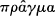
John 2. 75, Origen writes that ‘we are persuaded that there are three hypostases, the Father, the Son, and the Holy Spirit’.47
Here hypostasis indicates ‘individual circumscribed existence’.48 This is the only time Origen speaks of ‘three hypostases’
directly, but his usage appears to begin a tradition of using the term in this sense that—after muchargument and
clarification—became a part of pro-Nicene orthodoxy.
Origen's intention here is not to describe the three hypostases as ontologically equal in all senses. He is primarily
concerned to state that the three are equal in being distinct as individuals. The language of three hypostases evolves as
part of a continuing attempt to describe the participation and hierarchy existing among the three that are most
definitely three. The question that Origen's usage stimulates is: ‘if the three are truly three in distinct existence, by what
mode of participation or action are they together?’ His answer is not clear: difficult and often incompatible fragments
are scattered throughout his corpus. In a number of places Origen emphasizes the
45 Comm. John 10. 37. 212.
46 C. Celsum 1. 23. See the discussion of this text and parallels at Williams, Arius, 132.
47 On the place of the Spirit see Origen, Comm. John 2. 75: ‘We are, however, persuaded that there are three hypostases, the Father, the Son, and the Holy Spirit, and we believe
that only the Father is unbegotten. We admit, as most pious and true, that the Holy Spirit is the most honoured of all things made through the Word, and that h e is [first] in the rank of all things which have been made by the Father through Christ.’
48 This is a usage of the term Origen may have taken over from Gnostics writers. See Alistair H. B. Logan, ‘Origen and the Development of Trinitarian Theology’, in L. Lies
(ed.) Origeniana Quarta, Innsbrucker Theologische Studien, 19 (Innsbruck: Tyrolia 1987), 424–9.
26 1. TOWARDS A CONTROVERSY
transcendence of the Father over all things, including Son and Spirit.49 He argues in his Commentary on John that the
Father transcends the Son and Spirit more than they transcend the created world,50 an observation probably linked with
his insistence in Contra Celsum that the Father is ‘beyond (mind) and ousia’. His claim that the Father exceeds the
Son may, in the light of this comment, be more concerned with demonstrating the nature of the Father than with
arguing for the subordination of the Son. Although Origen elsewhere seems happy using the language of mind to talk
of God, he seems to have followed currents in Platonic thought in wanting to place the source of all beyond the realm
of thought and ideas.51 He associates that realm with the Son who contains all the structure of creation within himself.
As Rowan Williams argues, Origen finds himself here in something of a dilemma. His philosophical perspective
enables an exegesis of scriptural texts that emphasizes the Father's transcendence, but his commitment to the text
makes him insist on the Son's function as revealer of the Father.52
Rowan Williams also offers a discussion of Origen's understanding of the Son's knowledge of the Father that illustrates
the same dilemma. On the one hand, Origen presents the Son as contemplating the Father uninterruptedly and
unmediatedly; because of this contemplation the Son can function as agent of the Father in creation and redemption.
The Son, as truth and wisdom, transmits to us the ‘hidden things of the Father’ and contains in himself eternally the
intelligible form of all things. And yet, Origen seems also to regard the Father as containing in his own depth, in his
true simplicity (which the Son does not share) a mode of contemplation (θεωρία) which is reflected by the Son but not
simply shared. The Son, writes Williams, knows the Father ‘as an infinite depthnever fully to be sounded’.53 The
significance of Williams's argument lies in its highlighting of the tensions in Origen's presentation of the relationship
between Father and Son. Origen's account of shared but graded divine existence offers an initially clear, but complex
language to describe this relationship.
49 In his later works Origen may have moved to modify this account, making Father and Son closer.
50 Comm. John 13. 151–3: ‘(151) The Father exceeds the Saviour himself and the Holy Spirit as much (or even more) as the Saviour himself and the Holy Spirit exceed the rest
. . . (153) For he is an image of the goodness and brightness, not of God, but of God's glory and of his eternal light, and he is a vapour, not of the Father, but of his power . . . ’. Note once again the use of terminology from Wisd. 7. 25–6 in this text.
51 See Williams, Arius, 139 ff., 199 ff.
52 Williams, Arius, 140.
53 Rowan D. Williams, ‘The Son's Knowledge of the Father in Origen’, in L. Lies (ed.), Origeniana Quarta, Innsbrucker theologische Studien, 19 (Innsbruck: Tyrolia, 1987),
146–53, here 150.
POINTS OF DEPARTURE 27
On a number of occasions Origen deploys the idea that the Son is generated ‘as the will from the mind’.54 This
language serves not only to present the generation as non-material, but also to emphasize the Son's generation as an
intimate expression of the Father's existence. Origen's understanding that the Son has no origin except the
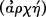
Father, including no origin in time, also emphasizes that the Son's existence is constituted by his imaging God from
eternity.55 The Son may not share the ousia of the Father, but the Son is constantly in the Father. Similarly, Origen's
insistence on the relationship of Father and Son offers a new argument in Christian tradition, an argument that depicts
this relationship as intrinsic to the life of God. The Son for Origen exists in a certain subordination to the Father, and
yet Origen's theology raises questions about the extent to which the Father's generation of this Word, this Son, is a
constitutive part of being God.
In Origen's insistence that the Son is a product of the Father's will, not his essence, we might seem to see the outline of
a key anti-Nicene argument in the fourth century: if the Son is from the will then he is not from the Father's essence.
Williams points out, however, that things may not be so simple for Origen. On the one hand, Origen hesitates, for
reasons we discussed, to talk of the Son as coming from the Father's essence. On the other hand, his sense of the
Father's eternal will gives to the results of that will a quasi-necessity, and the paradigmatic example of the Father's
eternal will is the Son's eternal existence. For Origen, to say that the Son is from the Father's will is to emphasize the
eternal status of the Son as expression of the Father.56
Similarly Origen seems to have spoken of the Son as created, as a κτίσμα.57 It is difficult to know how we should read
this. Origen says that the first act of creation, the creation of the original rational beings before the world as we know it
came into being, resulted from the immediate and unimpeded expression of God's will. This primary creation he may
have termed a κτίσμα as opposed to the κόσμος of our world. The Logos is the ‘beginning’ of this original creation and
the medium through which it came into being. Describing the Son as a κτίσμα is very different from describing the
material world as created.
In On First Principles Origen distinguishes the three hypostases by
54 e.g. Princ. 1. 2. 6; 1. 2. 9.
55 Comm. John 1. 16. 102–4: ‘ “In the beginning was the Word”, because what is said to be in the Father is in the beginning . . . Since the firstborn of all creation is the image of
the invisible God, the Father is his beginning.’
56 Williams, Arius, 140–1.
57 Princ. 4. 4. 1; Williams, Arius, 140.
28 1. TOWARDS A CONTROVERSY
attributing to them specific roles or activities in the world.58 The Spirit is found only in the saints, while the Son is ‘in’ all
rational beings. From one perspective this text might seem to reinforce the hierarchical side of Origen. And yet, his
statement reflects his insistence that the Son shares the Father's nature to the extent that we may speak of there being
one will, and that in the activity of three hypostases there is one ‘movement’. Once again, Origen's concern is to
distinguish Father, Son, and Spirit while maintaining the idea that the latter two reveal and bring to completion the one
divine will and action.
Origen's account is, then, complex. He speaks of the Son as inferior to the Father, and yet his explanation of this
inferiority turns, at many points, into an account of the necessity of the Son within the divine life. In On First Principles
Origen writes:
As regards the power of his works, then, the Son is in no way whatever separate or different from the Father, nor is
his work anything other than the Father's work, but there is one and the same movement, so to speak, in all they
do.59
Origen is here alluding to John 5: 19, which he took to mean that the Son does the works that the Father does because
he is an image whose birth is ‘as an act of [the Father's will] proceeding from the mind’. Once again we see the degree
of closeness within difference that Origen seeks in his descriptions: on the one hand, the Son's will is so like the
Father's that they can be said to be one;60 on the other, the Son is generated like the will from the mind. Elsewhere
Origen describes the Son as the image of the Father because his will directly mirrors the Father's.61 These arguments
reappear in a modified form in the later fourth century, when the common works of Father and Son are taken to
indicate a common nature. Origen does not quite say this; he comes close while remaining at a distance.
Origen was not the direct source of Arius, or even of Arius and his opponents. Origen's influence was piecemeal. This
is so in part
58 Origen, Princ. 1. 3. 5: ‘he “born again through God” to salvation has need of both Father and Son and Holy Spirit and will not obtain salvation apart from the entire Trinity,
and . . . it is impossible to become partaker of the Father or the Son without the Holy Spirit . . . The God and Father, who holds the universe together, is superior to every being that exists, for he imparts to each one from his own existence that which is each one; the Son, being less than the Father, is superior to rational creatures alone . . . the Holy Spirit is still less, and dwells within the saints alone.’
59 Princ. 1. 2. 12.
60 Cf. Comm. John 13. 228: ‘It is proper food for the Son of God when he becomes a doer of the Father's will, that is, when he wills in himself what was also the Father's will,
so that the will of God is in the will of the Son, and the will of the Son has become indistinguishable from the will of the Father, and there are no longer two wills but one. ’
61 Comm. John 13. 231.
POINTS OF DEPARTURE 29
simply because he did not exist in a vacuum. When Origen is presented as ‘the’ theologian in the third-century east and
as the quintessential ‘ Alexandrian’ thinker it is easy to see his thought as the one point of reference for subsequent
generations. Origen wrote within an existing tradition and so even those partial to his work came to it with ideas from
other writers and did not necessarily adopt it wholesale. He also met with a widespread critique in the second half of
the third century, which demands our attention if we are to see Origen's legacy as early fourth-century writers would
have done.
Particularly important was the suspicion that Origen's theology implied the eternal existence of the creation. This is a
charge raised by Methodius of Olympus, writing in the last years of the third century—and one of our few witnesses to
the period. In a dialogue that survives only in extracted fragments (probably called Xeno: On Created Things) Methodius
presented a discussion between two groups, one of whom represented an Origenist position. Under attack is Origen's
attempt to say both that all the first created spiritual things exist eternally in the Logos and that God is the beginning or
arche of all things.62 Methodius' ‘Origenists’ do not display the complexities of Origen's texts, they are a vehicle to
expose the implications of Origen's thought. Lloyd Patterson argues that Methodius’ critique reveals a great sensitivity
toward an implicit cosmological dualism found in many of the ‘heresies’ of his own time. Fear of dualism has led him
to emphasize the distinction between the one uncreated (the Father) and the creation, in ways that make him
suspicious of Origen's thought. It is unclear how Methodius views the Logos; he seems to speak of eternal generation,
but, as Patterson argues, the same language may indicate a generation at some point before the creation.63 Methodius’
doctrine of the Logos emphasizes that there is only one uncreated. His main concern is cosmological, but his
arguments raise questions about how one understands the relationship between Father and Logos and between Father
and world once muchof Origen's participatory talk has been abandoned.
Methodius and others also rejected Origen's understanding that Christ had a human soul preserved from the fall of all
other souls.64 For Origen, while other souls were embodied for God's redemptive purpose (and this world thus
created), Christ's soul remained in the
62 See Lloyd G. Patterson, Methodius of Olympus: Divine Sovereignty, Human Freedom, and Life in Christ (Washington, DC: Catholic University of America Press, 1997), chs. 4–6;
idem, ‘Methodius, Origen and the Arian Dispute’, Studia Patristica, 17/2 (1982), 912–23; Williams, Arius, 167–71.
63 Patterson, ‘Methodius’, 916–19; idem, Methodius, 214 ff.
64 Patterson, Methodius, 170–86.
30 1. TOWARDS A CONTROVERSY
spiritual realm until the incarnation. To abandon Origen's account of the creation and fall of souls, was to depart from
his view of the higher part of the soul, the , as a pre-existent reality not determined solely by this historical

existence.65 To abandon this theme, in turn, meant that one faced a challenge in describing the union of the Logos with
Christ. If one's was not that which ensured participation in the spiritual realm and hence enabled the human Christ
to be taken up by the Logos, then how did the Logos act in Christ? One solution was to make the Logos ontologically
less and mutable such that it could act in the human person, now devoid of a .

In all these cases, rejection of Origen's cosmology entailed consequences for the rest of his theology. In the absence of
that cosmology, the tensions in his account of the relationship between Father, Son, and creation intensified. While the
reaction against Origen in the later third century may have led some to emphasize the distinction between the Father
and the Logos, we can see, as Rowan Williams has argued, a separate and increasingly strong emphasis in Alexandria
on formulae that emphasize the closeness of Father and Son. One of these is the Origenist-sounding phrase ‘always
Father, always Son’ that Arius attributed to Alexander.66
Origen's theology thus encountered criticism but influenced many across the theological spectrum. His theology
shaped many of the theological trajectories found in the early fourth century. While Origen may, however, serve as a
temporal point of departure for understanding fourth-century theology, the constant ground of all fourth-century
theologies is a conception of the reading of Scripture and the practice of theology. Narrations of these disputes tend to
assume that readers are familiar with the exegetical practice of fourth-century Christians and understand how it may be
understood as the core of early Christian ‘theology’. This seems to me a considerable mistake.
65 Part of the complexity in interpreting Origen's account stems from the question of what follows from his insistence that souls are inseparable from bodies and that only God
is incorporeal. It seems that, at least, the original creation of the souls involved the creation of souls with already a certain form of body. A number of scholars have recently pushed further in a revisionary account of Origen and argued that he does not actually exhibit a two-stage account of creation and of the fall of souls in the way that his later detractors (and many modern scholars claim). This case is pursued with particular vigour in Edwards, Origen Against Plato.
66 Williams, Arius, 170; idem, ‘The Logic of Arianism,’ JThSNS 34 (1983), 56–81, here 57–66.
POINTS OF DEPARTURE 31
III: Theology and the Reading Of Scripture
Recent scholarship has argued that characterizing the fourth century as the culmination of Christianity's ‘Hellenization’
is misleading.67 This is especially so if Hellenization is understood as resulting in a philosophically articulated doctrinal
system only distantly related to the words of Scripture. The revisionary scholarship to which this book is indebted has
tried to demonstrate the ways in which exegetical concerns shaped the theologies with which we are concerned here.
Many of those scholars, however, who have themselves contributed to these post-Harnackian perspectives continue to
offer negative judgements about fourth-century exegesis. Richard Hanson contends, for instance, that ‘the expounders
of the text of the Bible [in the fourth century] are incompetent and ill-prepared to expound it’.68
These negative judgements have usually resulted from comparisons between early Christian and modern academic
exegetical practice, comparisons that assume the former is a deficient form of the latter. An implied comparison
between fourth-century exegesis and modern historical-critical modes is also frequently embedded in reference, for
instance, to post-Reformation divisions between allegory and typology,69 or to some ways of distinguishing
Alexandrian from Antiochene exegesis (particularly those which assume that Antiochenes were more interested in the
historical, that they were somehow more modern).70 Progress in understanding early Christian
67 Harnack's account of ‘Hellenization’ is considerably more complex than usually stated. Nevertheless, even his account (in which the universalizing spirit intrinsic to Hellenized
Judaism moves towards self-realization in Christianity) remains unable to treat exegetical questions in the evolution of doctrine as fundamental. For a summary of Harnack's position see William V. Rowe, ‘Adolf von Harnack and the Concept of Hellenization’, in Wendy Hellman (ed.), Hellenization Revisited (Lanham, NY: University Press of America, 1994), 69–98.
68 Hanson, The Search, 848. Similarly (p. 474), Hanson sees Hilary's treatment of Matthew as ‘a dreary jungle of empty fantasy’.
69 The modern division between ‘allegory’ and ‘typology’ arose in Reformation debates about medieval Catholic practice. While allegory was condemned as a foisting of
meaning upon the text to bolster Catholic ecclesial practices or to illuminate spiritual life without reference to the life of Christ, typology was explained as a closely governed attempt to show how events and prophecies described in the Old Testament were fulfilled in the events of the life of Christ. This polemical practice has been continued by a number of writers through the 20th cent. For those wishing to argue against the usefulness of the distinction Henri de Lubac's Histoire et Esprit: L'Intelligence de l'Ecriture d'après Origène (Paris: Aubier, 1950), and his article ‘ “Typologie” et “allegorisme” ’, Recherches de science religieuse, 34 (1947), 180–226, remain fundamental points of reference.
70 For example, Robert Wilken cites Kendrick Grobel's statement that if Theodore of Mopsuestia had been followed historical exegesis ‘might have emerged a thousand years
earlier than it did’. Robert L. Wilken, ‘In Defense of Allegory’, Modern Theology, 14 (1988), 197–212, here 197. For a recent account of Alexandrian and Antiochene exegesis by which I have been influenced see John O'Keefe, ‘ A Letter that Killeth: Toward a Reassessment of Antiochene Exegesis’, JECS, 8 (2000), 83–104.
32 1. TOWARDS A CONTROVERSY
exegesis and theology can be made only by struggling to describe that exegesis outside explicit or implicit comparison
with modern academic practices. Luckily we do not have to begin from scratch. Paralleling the rejection of Harnackian
narratives, has been a sophisticated reappraisal of Patristic exegesis.71 Some of the themes of this reappraisal help us to
see how early Christian exegetical practice shapes modes of theological rationality apparent in the period's
controversies. I begin by offering a terminology for discussing early Christian exegesis from Origen to the fifth
century.72
Patristic exegesis takes as its point of departure the ‘plain’ sense of the text of Scripture. I avoid the term literal sense
because it is frequently associated in modern discussion with the sense intended by the human author of a text or the
sense that a text had for its initial readers. The plain sense is ‘the way the words run’ for a community in the light of
that community's techniques for following the argument of texts.73 The plain sense is, then, the sense that a text had for
a Christian of the period versed in ancient literary critical skills.74 The plain sense is pluralistic in a number of ways.
First, a number of fourth- and fifth-century authors assume that one might understand ‘the way the words run’ in
different ways. Augustine, for example, argues that one can read Rev. 20: 4—which speaks of the Saints reigning with
Christ for a thousand years—as a prophecy of a literal thousand-year period or as a description of the Church's
symbolic thousand-year existence.75 The reading one adopts depends largely on which figure of speechone takes to be
present.
71 The following literature presents the major themes in this reassessment: Elizabeth A. Clark, Reading Renunciation: Asceticism and Scripture in Early Christianity (Princeton:
Princeton University Press, 1999), esp. ch. 4; Stephen E. Fowl, Engaging Scripture (Malden, Mass.: Blackwells, 1999); David Dawson, Allegorical Readers and Cultural Revision in Ancient Alexandria (Berkeley: University of California Press, 1992), esp. 1–17; idem, Figural Reading ; Wilken, ‘In Defense of Allegory’. One other sign of this interest is the ongoing translation of de Lubac's Medieval Exegesis.
72 When, in what follows I speak of ‘early Christian exegesis’ I refer only to the period designated in this sentence. My categories may or may not be useful for other periods.
73 Three essays illustrate this view of the plain sense: Brevard Childs, ‘The sensus literalis of Scripture: An Ancient and Modern Problem’, in H. Donner et al. (eds.), Beiträge zur
Alttestamentlichen Theologie, Festschrift für Walter Zimmerli zum 70 (Göttingen: Vandenhoeck & Ruprecht, 1977), 80–93; Kathryn Tanner, ‘Theology and the Plain Sense’, in Garret Green (ed.), Scriptural Authority and Narrative Interpretation (Philadelphia, 1987), 59–87. The phrase ‘the way the words run’ I copy from Eugene Rogers's essay ‘How the Virtues of an Interpreter Presuppose and Perfect Hermeneutics: The Case of Thomas Aquinas’, Journal of Religion, 76 (1996), 64–81, where he uses the phrase as a translation of Aquinas’ circumstantia litterae at De Potentia, q. 4, a. 1, c.
74 This does not of course mean that a less well-educated reader will simply not be able to discern the plain sense. The situation is directly parallel to the relative abilities of
formally and less formally educated English speakers reading a newspaper. Many skills formally taught are related to those reading strategies inherent in cultural practice more widely. Different dimensions of the plain sense will appear to readers with different degrees of education.
75 Augustine, Civ. 20. 7.
POINTS OF DEPARTURE 33
Some writers explicitly state that God providentially ordered the words so that they could be taken in different ways.
For virtually all the flexibility of the plain sense results from its speaking about realities that are beyond
comprehension.
Of course, early Christian readers do frequently equate the author's presumed intention with a text's plain sense. This
equation needs, however, to be qualified. On the one hand, it is qualified by the frequent claim that the ultimate author
of a text is God. By the shaping of events or the inspiration of human authors God may intend the words of a text to
carry a multiple plain sense. On the other hand, early Christian exegetes assume that the mind of the author is to be
discerned by a focus on elucidating the text, not by reconstructing the world within which the author wrote and by
assuming that such a world was marked by a symbolic universe and by social structures distinct from those of the
reader. This elision or lack of recognition of distinctions between the imaginative universe of reader and writer or text76
enables patterns in the text to serve as direct descriptors of the reader's world and community. The absence of modern
historicist and social scientific concerns gives a different texture to interest in authorial intention. While many modern
readers will, no doubt, see this difference as indicating a theoretical naïveté, one will better understand early Christian
exegesis the more one reserves judgement and considers how this ‘lack’ resulted in particular styles of attention to the
text.77
A second way in which the plain sense was pluralistic stems from assumptions that the scriptural text could have a
variety of functions in the education of the Christian mind. Almost all early Christian authors assume that one may
read the plain sense of many scriptural passages using different techniques and in different ways as a ‘figural’ resource
for the Christian seeking to grow in understanding of the mystery of God's action and the process of purification in
76 It is sometimes said that ancient exegetes do not have a modern historical sense. This statement is far too imprecise. These exegetes understood that they stood within a
tradition of Christians stretching back to the Apostles, but they did not presuppose a gap between their own imaginative worlds and those of the earliest Christians.
77 At times, for modern readers, it is the recognition of historical ‘distance’ that is taken to enable the interpretative ‘gap’ between text and reader that enables ongoing and vital
interpretation and dispute about meaning. Sucha person might ask, ‘On what basis did ancient readers feel the “gap” that enables interpretative dispute?’ The question is one that demands multiple answers. On the one hand, some points of departure may be indicated: the sense that a scriptural text is inherently mysterious and demands ongoing attention; the mere existence of interpretative dispute within one's tradition enables the possibility of continuing debate by offering new readings. On the other hand, ancient readers do recognize certain sorts of historical ‘gap’: for instance, a recognition that the text may contain references and terminology whose meaning may not now be clear. This historical sense may enable multiple interpretation even though the text is still read as speaking immediately to one's ‘imaginative universe’. 34 1. TOWARDS A CONTROVERSY
Christ. When we seek to understand this variety of ways of reading the text, it is more helpful to speak of different
reading practices than different levels of the text. The plain sense is not abandoned as the reader moves to different
levels of the text; the plain sense contains different senses. The ‘way the words run’ still governs the shape of the sense
discovered.78
Early Christian authors do sometimes use metaphors of ascent to describe the progress from one reading technique to
another, and they speak of uncovering what remains hidden. They did not necessarily believe, however, in distinct
levels of texts or that non-literal senses are to be discerned without reference to ‘the way the words run’.79 While they
deploy these terminologies of uncovering and ascending, they also insist that progress is made by learning how to
apply (when appropriate) different reading techniques to the plain sense. As we shall see, the words and flow of the
plain sense still shape and police figural readings.
Having contended that early Christian exegesis focuses on the plain sense, I suggest we now divide early Christian
exegetical/hermeneutical strategies into two categories, the grammatical and the figural.80 These categories are not
mutually exclusive: grammatical techniques are also used within figural practices. Grammatical techniques are,
however, the fundamental reading tools, essential for the good reading of Scripture.81 They are particularly important
when considering exegesis of Trinitarian and Christological texts, and they form the core of the exegesis that we will
discuss throughout this book.
78 Patricia Cox Miller, ‘Origen and the Witch of Endor’, in The Poetry of Thought in Late Antiquity: Essays in Imagination and Religion (Aldershot, Burlington, Vt.: Ashgate, 2001),
offers a particularly interesting attempt to note the complexity of the relationships between the different ‘senses’.
79 Such an assumption is frequently cited as a reason for rejecting the readings of these other senses by modern scholars arguing that Christians should abandon early Christian
exegetical techniques.
80 These terms owe something to Frances Young's division between rhetorical and philosophical exegesis, modes dependent on noting their non-Christian origins. See her
essay ‘The Rhetorical Schools and their Influence on Patristic Exegesis’, in Rowan D. Williams (ed.), The Making of Orthodoxy: Essays in Honour of Henry Chadwick (Cambridge: Cambridge University Press, 1989), 182–99. In this essay she argues that much of the ‘Antiochene’ critique of Origen is not a critique of his ‘allegorical’ method for neglecting the ‘historical’ dimension of the text, but a dispute between two different techniques for treating the ‘literal’ sense of a text. The term ‘figural’ is intended as a term that intentionally avoids the opposition between ‘allegory’ and ‘typology’. Its usage in modern writing always invokes the figure of ErichAuerbach. Auerbach, as Andrew Louth reminds me, assumed that this practice was long dead. In Dawson's work the term is defined with explicit acknowledgement of the legacy and of the need to understand the term beyond his usage.
81 For recent scholarship which takes this principle to be fundamental in understanding early Christian exegesis see Neuschafer, Origenes and Frances Young, Biblical Exegesis
and the Formation of Christian Culture (Cambridge: Cambridge University Press, 1997).
POINTS OF DEPARTURE 35
Grammatical techniques have at their core skills learned at the hands of the γραμματικός (or grammaticus).82 The
γραμματικός was broadly responsible for the education of children in the teenage years, but ancient education was
highly flexible: grammatical studies were, however, the foundation of any later studies.83 They provided students not
only withtechniques and skills for reading, but also witha sense of the appropriate order to be followed in applying
these techniques and of the ends of textual interpretation. A student was taught to begin with textual and manuscript
criticism, especially important in an age when texts were hand copied. Then came practice in reading a text aloud. In an
age without punctuation, this combination of literary critical and oral techniques enabled students to identify who was
speaking at a given point, and how to attribute passages to the characters speaking in the text. This literary technique
would have doctrinal significance, focusing the minds of Christian readers of Scripture on questions of who might be
speaking in Christologically significant texts, the Word, the incarnate Word, or the human being assumed by the
Word.84
Next, students learned to identify historical and literary references and to apply appropriate medical, scientific, or
philosophical knowledge to understand the vocabulary or argument. Of course, many of the figures considered in this
book received higher levels of technical education beyond what a γραμματικός would have taught. Others received
advanced training in exegetical technique through apprenticeship to Christian teachers. This would have included
advanced philosophical training, including skill in logic and dialectic but also additional areas of study suchas medicine.
While in some cases this material did teach new reading techniques (discussed
82 On the teaching of the γραμματικός see for introduction the classic study of H. I. Marrou, Education in Antiquity, tr. George Lamb (Madison: University of Wisconsin Press,
1956), 160–85, 274–91. See also Martin Irvine, The Making of Textual Culture: Grammatica and Literary Theory 350–1100 (Cambridge: Cambridge University Press, 1994).
Fundamental for current study of grammarians and their role in late antique society is Robert A. Kaster, Guardians of Language: The Grammarian and Society in Late Antiquity (Berkeley: University of California Press, 1988). Kaster's chs. 4 and 5 give the two extremely useful accounts of individual grammarians at work with a text. For an introduction to Jewishexegesis in this period and beyond see David Weiss Halvini, Plain and Applied Meaning in Rabbinic Exegesis (New York: Oxford University Press, 1991).
83 The flexibility of ancient educational practice is helpfully explored in Teresa Morgan, Literate Education in the Hellenistic and Roman Worlds (Cambridge: Cambridge University
Press, 1998), esp. chs. 5 and 6. See also Robert A. Kaster, ‘Notes on Primary and Secondary Schools in Late Antiquity’, Transactions of the American Philological Association, 113 (1983), 323–46.
84 For an example of how this technique influenced the development of Christological terminology see Hubertus R. Drobner, Person-Exegese und Christologie bei Augustinus
(Leiden: Brill, 1986). A summary is provided in his ‘Grammatical Exegesis and Christology in St. Augustine’, SP 18 (1990), 49–63.
36 1. TOWARDS A CONTROVERSY
below under ‘figural’ techniques), it mainly provided resources for an interpreter to expand on techniques learnt under
the γραμματικός.
Faced withdifficult passages, students would also learn to identify rhetorical techniques used and the plot and
direction of a text, its σκοπός or .85 When modern historical-critical scholars describe early Christian exegesis,
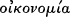
they often identify an apparent lack of interest in interpreting terms within their immediate textual context. While this
is by no means universally so, it is indeed true that Christian adaptation of ancient reading practices pushed Christians
in certain directions. On the one hand, when Christians talk about the σκοπός of Scripture (or its synonyms) they
usually refer to Scripture understood as a unit. Especially in the case of debate over fundamental doctrinal themes, they
took the text of Scripture as a resource enabling a consistent, unitary vision of God and the order of creation. The
function of Scripture for the Christian community pushes Christians to search for a canonical unity beyond that
provided by any one discrete passage. On the other hand, perception of the unity of scriptural teaching—as a
necessary result of Scripture's function in the economy of salvation—makes Christians attentive to the individual terms
used in Scripture. The function of Scripture as Scripture pushes Christians toward particular applications and
adaptations of grammatical practice.
The final stage of textual analysis as taught by the γραμματικός was judgement of a text, evaluating its moral content
and drawing its lessons. This was both the capstone and the foundation of grammatical study. Greek and Roman
children learned to treat this aspect of exegesis as its culmination and, from the very beginning of their education, to
absorb moral maxims that they could find illustrated in classical texts. Understanding this moral aspect of education
helps to clarify the ambiguous feelings of many intellectual Christians toward Roman education. Roman educators
wanted students to learn the right lessons from the right texts. Education in reading technique, therefore, became a
contested cultural area and Christians eventually if slowly sought to adapt these teaching techniques by focusing them
on Scripture. This feature of Roman education also helps to explain why Christians so naturally read scriptural texts as
shaping a form of life, and it reminds modern readers to be clear about the distinction between figural
practices—especially allegory—and moral readings.
Some readers will be puzzled by my inattention so far to parallels between Christian and Jewishexegesis. Suchparallels
can be found,
85 It is important to note that part of what a γραμματικός taught was how to recognize a textual element as ‘difficult.’ The γραμματικός taught students to notice obscure
references or unusual grammatical forms as appropriate subjects for interpretation.
POINTS OF DEPARTURE 37
for the origins of Christian exegesis lie within Second Temple Judaism, but by the fourth century very few Christians
had the detailed knowledge of Judaism that would enable Jewish practices to be a continuing source. In any case,
Jewish education itself drew on Roman and Greek models, although it continued to be centred around the study of
Jewish texts. Many early Christian exegetes, moreover, experienced higher levels of ancient education, especially in
rhetoric: the techniques learnt here supplemented the basic grammatical education, and thus I include them under
grammatical techniques.
Alongside grammatical techniques early Christians used figural reading practices. David Dawson has helped us see
how Christian figural techniques describe relationships between one scriptural text (usually from the Old Testament)
and an aspect of the incarnate Word's mission as described in the New Testament, using the former to inform a
reading of the latter.86 The phrase ‘an aspect of the incarnate Word's mission’ requires further discussion. For early
Christian readers the progress of purification or sanctification that constitutes Christian life is intrinsically connected to
the life, activity, and purpose of Christ, the incarnate Word. The mystery of the incarnation includes the mystery by
which members of the Christian community are united to the person of Christ and purified toward the vision of God.
Using a text from the Old Testament to illustrate the course and struggles of this mystery is of a piece with using Old
Testament texts to illustrate Christ's actions and life. The figural reader seeks figures within the text both to understand
the incarnate Word and to participate in the divine speech and action in creation.
For Dawson, these readings do not depend on a binary division between what texts literally say and what they non-
literally mean. In other words, they do not assert that (say) a given Old Testament text is ‘really about’ some event or
experience that can be clearly stated apart from that text without loss. The assumption that this is the formal structure
of figural practices has often prompted their rejection by post-Reformation scholars. Dawson argues, however, that for
figural readers the relationship between the particularities of one text and the event or text conjoined with it is
fundamental. Only by taking the two poles together can one engage in good exegesis: attention to the letter of the text
read figurally illumines the event or text being illustrated and explored.
Dawson does, however, distinguish figural from figurative
86 David Dawson, ‘Figural Reading and the Fashioning of Christian Identity in Boyarin, Auerbach and Frei’, Modern Theology, 14 (1998), 181–96.
38 1. TOWARDS A CONTROVERSY
exegesis, preserving the latter term for an exegesis that begins with the plain text but loses the link with it. I prefer to
speak more simply of figural and bad figural exegesis. The tendency for the figural to go bad is in some authors
constant, but discerning how and where the shift has been made is complex. Several Christians after Origen saw his
exegesis of Genesis as a key example of the figural going bad. Whether a given reading displays appropriate attention
to the words of the text—and the way those words ‘run’—cannot always be ‘objectively’ assessed. What counts as
good figural exegesis is established within a tradition's development and internal argument.
This sketch of scriptural reading techniques helps us understand the nature of theological practice in the period. Early
Christians did not distinguish ‘exegesis’ and ‘theology’ in the way that modern scholars tend to do. At the same time,
no one term designated the practice of talking and writing about the divine and about things in relationship to the
divine among Christians in this period, certainly none that can helpfully be translated by the modern English
‘theology’. Christians used a variety of terms—suchas φιλοσοφία, θεολογία, and θεωρία—all of which had long non-
Christian histories. We can, however, make some progress in understanding how the reading of Scripture functioned
for talking about God (and the world) by noting that the Christian adaptation of such words added distinct teleological
and epistemological concerns to their sense. When Christian authors use terms such as θεολογία, they understand talk
about God to be governed by a soteriological narrative. This narrative enables them to speak of the goal to which they
are heading (or are drawn), and it positions all talk about God at a point within the narrative.
The narrative structure of faith shaped Christian discussions of human nature and transformation in teleological
directions: discussions of human transformation came to be seen as appropriately focused on shaping progress toward
the goals of life with God and the (increasingly eschatological) contemplation of the divine being. This view stands in
some contrast to the ways in which ancient philosophical traditions sustained discussion about the ends of human
nature and the possibility of attaining them. At the same time those narratives also position talk about God and the
world by offering perspectives on human capacity and incapacity and the role of Scripture in aiding and shaping
human reflection: Christian narratives thus also shape epistemological concerns. Despite their constant debate about
human capacity, Christians insisted that the text of Scripture is, at this stage in the drama of redemption, the
fundamental resource for knowledge of God and a resource that shapes how we engage existing human perceptions of
the world and all it
POINTS OF DEPARTURE 39
contains. As we shall see, this understanding of Scripture attains new sophistication during the fourth-century
controversies as the extent to which the plain sense can be said to describe the divine being comes into question.
Thus, at this point in the divinely governed drama of redemption Christians explore and debate the transformation
that constitutes Christian life by attention to the scriptural text. Christians summarized the narrative and σκοπόζ of the
text in the ‘rule of faith’ or in the creeds that formed early Christian catechesis, and this received faith was the assumed
context for one's reading of Scripture. Of course, these expressions of faith were frequently unclear on some central
points of debate during the fourth century, and different local traditions favoured different expressions. Nevertheless,
in all contexts the perceived traditional faith was the guide for interpretation. The terminology and phraseology of
these statements of received faith were taken to reflect the content of Scripture and careful attention to ‘the way the
words run’ was taken to be the fundamental point of reference in discussion.
Reading the scriptural text to discern the character of God and the structure of Christian existence involved early
Christians in a constant discussion about which terminologies and philosophical resources are best suited to explicate
the plain sense. Christian writers negotiated between the text and other resources that seemed attractive and
persuasive. We might think of Scripture in the fourth century as the fundamental resource for the Christian
imagination. The phrase recognizes the existence of a variety of other resources and the necessity of negotiating
between competing attractions. To speak of the ‘Christian imagination’ is to indicate that Scripture provided a resource
for thinking about the structure of the world and our perception and understanding of it. The better we understand
the process of adapting (and transforming) technical terminologies and persuasive non-Christian ideas to read the
resource of the plain sense, the better we understand early Christian ‘theology’. The rest of this book provides a variety
of extended examples of this process of adaptation and transformation. In general terms, and in an essay that takes
Thomas Aquinas as its primary example, Bruce Marshall offers an outline applicable to fourth-century Christian
practice:
To say the plain sense is primary in the order of justification is to say that one does not take Scripture to be false,
although what we identify as its plain sense may at any given point be false . . . Wh en th e plain sense is th ough t of in
this way, it is possible to retain the primacy of the plain sense in the order of justification, while still allowing that
external arguments may lead to a change in the way the plain sense is construed. This is
40 1. TOWARDS A CONTROVERSY
because, while it is always possible for external arguments to foster a reconsideration of the plain sense, no
interpretation can count as an identification of the plain sense, no matter how well supported by external argument,
which fails to agree with the way the words go . . . Thus beliefs cannot be justified, as a criterion for the justification
of other beliefs, which do not agree with the way the words go, that is, which cannot count as or cohere with the
plain sense . . . So, when confronted with evident conflict between ranges of internal and external beliefs bothof
which we would like to hold true, there are basically two courses of action consistent with the justificatory primacy
of the plain sense—that is, with the requirement that beliefs held true be consistent with the way the words go: i) we
can revise our identification of the plain sense in light of external beliefs; ii) we can revise our estimate of our
external beliefs in light of the requirements of the plain sense.87
Thus, while it might seem that the mere prominence of scriptural material in texts would serve to indicate the biblical
character of fourth-century theology, I suggest that understanding what it means for fourth-century theologies to be
focused around the text of Scripture can best proceed by examining the range of functions of Scripture within fourth-
century theological cultures. Only by such a wider investigation could we see the many ways in which philosophical
traditions and terminologies were brought into an ongoing negotiation with—and about the sense of—the plain sense
of Scripture. These negotiations were at the very heart of Christian intellectual cultures throughout the period covered
in this book.88 Chapters 11–15 offer an extended discussion of how pro-Nicenes viewed such negotiations at the end
of the century; discussions of earlier theologians in previous chapters should offer some sense of the ways in which the
origin and source of these controversies is in one sense an emerging Christian culture or cultures focused around
engaging the plain sense of Scripture.
87 Bruce D. Marshall, ‘ Absorbing the World: Christianity and the Universe of Truths’, in Bruce Marshall (ed.), Theology and Dialogue: Essays in Conversation with George Lindbeck
(Notre Dame, Ind.: Notre Dame University Press, 1990), 69–102, here 94–5.
88 For the purposes of my argument the distinction between ‘Alexandrian’ and ‘Antiochene’ exegesis is irrelevant. Attempts to trace ‘ Arianism’ to a source in proto-Antiochene
exegesis (suchas one finds in Newman) are unsustainable. In particular they assume that it is possible to identify an ‘ Antiochene’ exegetical tradition as a virtually constant discrete tradition.
2 Theological Trajectories In the Early Fourth
Century: I
The Generation Of the Son: Two Trends
The first chapter discussed three different points of departure for the fourth-century controversies. In this chapter I
turn to my fourth point of departure. To understand how the story of Arius and Alexander quickly spread beyond
Alexandria we need to get some sense of the existing theological trajectories and tensions present in the early years of
the fourth century. I have set out four distinct theological trajectories through this chapter and the next, but by way of
introduction we can identify two distinct trends through these trajectories.89 In talking about the status of the Son (the
Spirit is, at least initially, much less a focus of attention), some prefer language that emphasizes the sameness of Father
and Son, while others emphasize diversity between the two. Most theologians combine these tendencies, but almost all
use one set as primary, as governing how the other should be understood.
Those who emphasize sameness frequently use language which predicates the same quality univocally of Father and
Son—for example, Father is God, Son is God; Father is light, Son is light. These theologians also use terminologies
that emphasize the Son derivatively sharing in almost all the Father's characteristics—for example, the Son is the
Father's Wisdom, Power, or Word. The language of the Son's ‘generation’ here implies not just a ‘mirroring’
89 My account of these two tendencies is based on that of Barnes, ‘Trinitarian Canon’, 50. BothBarnes and I are also engaging withJosephLienhard, ‘The Arian Controversy’.
Lienhard offers the terms ‘miahypostatic’ and ‘duohypostatic’ as descriptive of the two most basic trends in early 4th-cent. theology. One problem with this terminology is its simplicity: the nature and degree of shared theology and personal connection between the various Eusebians, on the one hand, and between Alexander, Athanasius, and Marcellus, on the other hand, is unknown to us. Nor can we paint a picture of theology in the second half of the 3rd cent. in terms of these categories without a great deal of speculation. A second problem with this terminology lies in its supposition that hypostasis is the decisive factor in the controversies. While this term is certainly the focus of muchdebate and confusion—and here Lienhard's thesis is a very useful heuristic tool—the focus of the debate lies in competing accounts of the Son's generation and in different understandings of the way that inherited terminologies and metaphors maintained or did not seem to maintain the unity of God. Debate over whether God is one or more hypostasis is, in part, only one feature of and, in part, an epiphenomenon of this wider debate. Hence, while I have found Lienhard's account helpful, I have avoided his terminology.
42 I. TOWARDS A CONTROVERSY
of the Father by the Son—as the reflection of an object shares only the appearance of that object—but a real sharing
of nature and qualities. These theologians also deploy analogical resources that liken the Son to one aspect or feature of
the Father's existence; for example, the Son may be conceived as the Father's Wisdom and the argument made that the
Son is eternal because a person can never be without their wisdom. Some of the analogies deployed here are also highly
material; following Wisd. 7: 25–6, the Son is often likened to the rays of the sun or to a stream that flows from a
spring.
Those who emphasize difference between Father and Son tend to make use of relational language, frequently of a
hierarchical nature. Thus, for example, such theologians speak of the Son as image and the Father as the archetype, or
of the Son as the first creature—or sometimes ‘a creature unlike the other creatures’—and the Father as the creator.
Father and Son language is, however, something of a special case. This language is sometimes used to indicate that
there must be a relationship of clear hierarchy between the two, but because of its usage by Origen to indicate eternal
correlativity such usage is less frequent than one might imagine.
Theologians who emphasize difference understand the Logos to be a subordinate and independent being. To
theologians emphasizing sameness Logos implies something intrinsically connected to that of which it is Logos. This is
especially so when Logos is understood to mean something like ‘rational capacity’. In disputes withmodalists and
monarchians running back to the late second century the use of Logos was controversial because these groups seem to
have taken the term to indicate something possessing a temporary status, as does a spoken word. In this context the
use of the term as governing metaphor seemed to imply a temporary reality dependent on, if not merely part of, the
One who speaks. Origen's argument that Logos must be understood in the context of other biblical titles for the
second person represents a key anti-monarchian reading. Many other terms were equally multivalent: the context of
their usage is all-important.
The difference between these tendencies can further be seen in the polemic strategies used by the two groups against
each other. When those who emphasize difference between Father and Son attack those who emphasize sameness,
they argue that the latter group speaks materially of God, implying a division of God's being in the Son's generation.
They also criticize what seems to be an envisaging of two eternal principles. On the other hand, when those who
emphasize sameness between Father and Son criticize those who emphasize diversity they tend to argue that the
implications of some key scriptural terminologies are being ignored—especially
THEOLOGICAL TRAJECTORIES: I 43
such terms as Word, Wisdom, and Power. They also see a fundamental impiety in speaking of the Son as in any way
like one of the creatures. Charges of using inappropriate language are, thus, at the heart of the matter. In fact, both sides
accuse each other of thinking materially about God. The clear difference and diversity spoken of by one camp seems to
the other to be the result of thinking about God as two (or three) distinct beings, separated like material entities.
Indeed, this concern to secure the language of diversity between Father and Son from being understood according to
the grammar of materiality will eventually become a focus of pro-Nicene theology.
Modern Trinitarian theologians often speak as if there have always been two basic tendencies, one which emphasizes
unity in God, one which emphasizes diversity. The division between sameness and diversity language may seem to be
repeating that commonplace: this is not so. To speak about unity and diversity in God, one must already have agreed
that Father and Son (let alone Spirit) are all ‘part’ of the one God. Theologians at the beginning of the fourth century
are still grappling with the problem of whether Father and Son are both ‘true God’, with the question of whether it is
possible to speak of degrees of divinity. The division I have tried to make here is between groups who favour different
primary metaphors and analogies for speaking about the relationship between God and Word, Father and Son.
Alexander, Athanasius, and Friends: Theologians Of the True
Wisdom
The first trajectory is found in Alexander of Alexandria and in the early Athanasius. This trajectory emphasizes the
eternally correlative status of Father and Son in ways close to Origen's understanding of eternal generation, but is also
resistant to speaking of three hypostases. This tradition is not limited to Alexandria, we can identify a number of third-
century predecessors and a few other early fourth-century representatives in Antioch, in Asia Minor, and in Thrace and
northern Greece.
Alexander's theology is best preserved in a letter sent to Alexander of Byzantium refuting the errors of Arius. There is
also an encyclical letter (known from its first two words as Henos somatos) sent to rally anti-Arian support, but possibly
drafted by his then secretary Athanasius. A brief text by Alexander is also to be found quoted in a section of
Athanasius' First Letter to Virgins.90 As he describes his teaching in the letter to his namesake of Byzantium, Alexander
insists that the relationship of Father and Son cannot be
90 This text is translated in Brakke, Athanasius and the Politics of Asceticism, 286–8.
44 I. TOWARDS A CONTROVERSY
conceived: this mystery is known to the Father alone. There is no distance (διάστημα) between the two, and the Son is
the brightness of the eternal light—Alexander using the language of Hebrews and seeming to allude to the language of
Wisdom 7. Alexander deploys this language in an argument that the Father's perfection is constituted by the eternal
begetting and presence of the Son: the Father is termed Father because of the Son's presence.91 To say that the Father's
Power or Word began and does not eternally complement the Father denigrates the character of the Father. Similarly, if
one denies the eternal presence of the brightness then the light itself cannot be eternal. In his encyclical letter Henos
somatos, Alexander argues that as Word or Wisdom the Son must be eternal or the Father would, nonsensically, have
been at one time bereft of both.92
In the letter to Alexander of Byzantium we also see some themes already shaped by debate with Arius. Alexander
insists, for instance, on the immutability of the Logos against Arius' claim that the Logos was not by nature immune
from error or sin. Alexander argues that Arius and his associates use scriptural texts that refer to the mutability of the
incarnate Word to describe the eternal Word as such. Alexander distinguishes between texts which refer to the Incarnate
Word alone and those that speak of the Word's eternal relationship to the Father.
Alexander also denies that one must either admit that the Son is created or that there are two unbegotten Gods. He
argues for a ‘great distance’ between the unbegotten Father and the created order, and then describes the nature (φύσις)
of the only-begotten Word as mediating between these two, ‘holding the middle place’ (μεσιτεύουσα).93 Alexander is
here at the limit of what his language will allow. He is clear that in his status as ‘exact and identical’ image
the Son lacks ‘only [the Father's] unbegotten character’.94 Yet, Alexander sees the
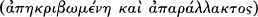
Son's quality as begotten implying a mediating role, but he does not want this role to indicate a subordinate ontological
status. He also understands the Son to have a distinct role in the creation. Nevertheless, Alexander
91 Alexander, Ep. Alex. 26: ‘But he is Father of the always present Son, on account of whom he is called Father; and with the Son always present with him, the Father is always
perfect, unfailing in goodness, who begot the only-begotten Son not temporally or in an interval or from nothing.’
92 Alexander, Ep. om. 3: ‘Or how is He unlike to the substance of the Father, who is the perfect image and brightness of the father . . . And h ow, if th e Son is th e Word or
Wisdom and Reason of God, was there a time when He was not? It is all one as if they said, that there was a time when God was without reason and wisdom.’
93 Ep. Alex. 45. This term carries the sense of something that occupies a mediating function. Some sense of its function will be gained from the entry in PGL.
94 Ep. Alex. 47.
THEOLOGICAL TRAJECTORIES: I 45
understands the character of this action to result from the Word's position ‘in the bosom of the Father’. The Word is
not (as for the Eusebians) an intermediate being necessary because the Father cannot directly act on the creation.
Alexander also insists (quoting Isa. 53: 8) that the Son's generation and nature are incomprehensible, and not to be
understood materially. Interestingly his reason for asserting the Son's incomprehensibility is that the Son shares the
Father's nature.95 The Son as true image shares the qualities of the one he reflects: this argument we will see again in
pro-Nicene theology.
Alexander clearly distinguishes Father and Son, but his terminology for doing so is not precise. At one point he speaks
of Father and Son being two φύσεις. Alexander also speaks of two πράγματα or things—a usage which some have seen
as owing to Origen's influence.96 Alexander also uses the term hypostasis, but in the majority of his uses—even where he
talks of the Son's hypostasis—the term seems to mean ‘existence’ or ‘nature’. We never find him using hypostasis as a
technical term for the individual existence of one of the divine persons, and he never speaks of there being two or
three hypostases.
We do not know if this lack of use of hypostasis in Origen's technical sense represents ignorance of Origen's usage,
active dislike, or simply continuing adherence to a tradition that never adopted Origen's suggestion. There are,
however, some features of his thought that do indicate a debt to Origen. To his use of Hebrews and Wisdom
terminology may be added his insistence on the Son's eternal generation. Alexander writes,
Therefore the characteristic high status must be preserved for the unbegotten Father by saying that no one is the
cause of his being. But the befitting honor must be assigned to the Son by ascribing to him generation without
beginning from the Father.97
Alexander's theology found its most famous advocate in his successor Athanasius. Athanasius' thought and career is
covered throughout the first eight chapters of this book; here I draw attention to some themes from his early writings.
While it is possible that even the earliest of Athanasius' writings was already shaped by dispute with Arius, we see clear
continuity with Alexander's theology as expressed in the Letter to Alexander of Byzantium and thus we
95 Alexander, Ep. Alex. 47.
96 Alexander, Ep. Alex. 37–8: ‘ . . . “I and the Father are one.” The Lord says this, not proclaiming himself the Father or explaining that the two φύσεις in the hypostasis are
one, but saying that the Son of the Father is disposed by nature accurately to preserve the Father's likeness.’ For the use of πράσματα see Ep. Alex. 15.
97 Alexander, Ep. Alex. 52.
46 I. TOWARDS A CONTROVERSY
can use these texts as witnesses to this theological trajectory. In his Against the Nations (probably c.335–8) Athanasius
follows Alexander in not linking the Word's appearance directly to the act of creation and in arguing that the Word is
the one in whom all things exist because of his closeness to the Father:
being present with Him as his Wisdom and his Word, looking at the Father He fashioned the Universe, and
organized it and gave it order . . .
Athanasius also follows Alexander in speaking of the Son as ‘unchanging image’ :
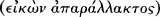
He is the unchanging image of his own Father. For men, composed of parts and made out of nothing, have their
discourse composite and divisible. But God possesses true existence and is not composite, wherefore his Word also
has true existence and is not composite, but is the one and only begotten God, who proceeds in his goodness from
the Father as from a good fountain . . .98
Athanasius played down Alexander's conception of the Word's mediating status, and avoided statements that implied
an intermediate ontological status. Athanasius argues both that the Word has a derivative existence from the Father,
and that the existence he is given comes from the Father's own being. Athanasius' account here is, however, still
inchoate: in the Against the Nations Athanasius never directly speaks of God's ousia, making use of a variety of
metaphors and biblical titles to emphasize the Son's closeness to the Father. Mostly importantly—and mostly clearly
revealing of how undeveloped his account is as yet—he frequently speaks simply of ‘the Word of the Father’ (Logos tou
patros).99
It should also be clear from the foregoing examples that Athanasius' most basic language and analogies for describing
the relationship between Father and Son primarily present the two as intrinsic aspects of one reality or person.
Nevertheless, Athanasius is not a modalist: he does not directly want to describe the Son as an aspect of the Father or
as a name for one way in which the Father appears. In the first of his Orations against the Arians Athanasius will write,
‘for the Father is ever Father and could never become Son, so the Son is ever Son and could never become Father’.100
In these earlier texts, however, Athanasius does not make use of the correlativity of Father and Son. Only as he began
to cast himself as the opponent of ‘ Arians’ at the end of the 330s did he turn to this resource—recovering an argument
deployed by his mentor Alexander. In Against the Nations and On the Incarnation Athanasius does speak of
98 Athanasius, C. Gen. 41. 1.
99 C. Gen. 27, 40, 42, 44, 47.
100 C. Ar. 1. 22.
THEOLOGICAL TRAJECTORIES: I 47
the ‘Son of God’ to indicate the Word's unique status, but he possesses no clear language for articulating the distinction
as yet.101
At this early stage in his theology Athanasius emphasizes the closeness of Word to Father by repetition and by the
accumulation of titles: most clearly in Against the Nations 46 he strings together intensifying adjectives to indicate that
the Logos is the Father's own and is in himself the various attributes Scripture accords him:
he is absolute wisdom, true word, and himself the Father's own power, absolute light, absolute truth, absolute
justice, absolute virtue, and indeed, stamp, effulgence, and image. In short, he is the supremely perfect issue of the
Father, and is also alone Son, the express image of the Father.
Athanasius here may be using material from Eusebius and Origen to emphasize the closeness of Son to Father,102 but
none of the terms expressing the Son's status as ‘absolute X’ ever achieves the status of a frequent and technical
terminology for him: he gives the impression of using whatever is to hand to emphasize closeness of relationship but
not yet of having a precise way of describing that relationship.
Athanasius also insists strongly and consistently on the distinction between the Creator and the creation.103 The
background to Alexander and Athanasius' usage may perhaps be the reaction against aspects of Origen's cosmology
discussed in the last chapter. For these two theologians Origen's attempt to present the Son as intrinsic to the life of
God has been taken up and followed through (without his worries about the use of ousia language in this context), but
that aspect of his account which was taken to link the eternal generation of the Son and the eternal generation of the
initial creation has been rejected. Generation and creation have become, for these theologians, entirely distinct
activities.
One of the distinguishing features of this theological trajectory can be seen in Athanasius' use of the term hypostasis. At
this stage in his writing Athanasius does not know or ignores the tradition stemming from Origen of using hypostasis to
designate the individual reality of Father or Son. Up to the mid-340s Athanasius never uses hypostasis to indicate the
individual existence of something and never uses the term in a technical sense to indicate the distinct persons. A key to
his early usage is given in Against the Nations 6. Athanasius is here discussing the Manichaean teaching that there are two
principles, one the source of Good and one the source of Evil. This doctrine proposes another hypostasis besides ‘the
Father of our
101 e.g. Athanasius, Incarn. 19–20.
102 Cf. Eusebius, Prep. 7. 10. 12; Eccl. theol. 1. 8.
103 This theme is the subject of Khaled Anatolios, Athanasius: The Coherence of his Thought (London and New York: Routledge, 1998).
48 I. TOWARDS A CONTROVERSY
Lord Jesus Christ’. Athanasius does not, however, show any consistent usage of the term at this stage: elsewhere in the
text hypostasis is used to describe the idea of actual existence, God brings things into hypostasis from nothing.104
Nevertheless, this text does help us to see that Athanasius' gut reaction is that there can be only one eternal reality and
source, and that proposing more than one hypostasis would imply a dualism. Interestingly, it is not quite accurate to say
Athanasius insists there is only one hypostasis in God: while that is a clear inference from his usage he never actually
uses the term to designate what is one in God. Indeed, even throughout the three Orations against the Arians Athanasius
never uses the term other than in direct quotation of, or in allusion to, Heb. 1: 3.
Alexander and Athanasius are members of a trajectory that is also found beyond Alexandria and that had a long
history. Later, during the 350s, Athanasius will point to the theology of Dionysius of Alexandria as a precedent for his
own.105 In a short work arguing against some ‘ Arians’ who have taken Dionysius’ talk of the Son being ‘created’ as a
precedent, Athanasius argues that his use of ‘created’ must be understood as secondary to Dionysius' assertion of the
Son's eternal relationship to the Father. He quotes Dionysius as saying
being the brightness of light eternal, certainly he is himself eternal, for as the light exists always, it is evident that the
brightness must exist always as well.106
For Dionysius, the Son's existence is not connected exclusively with the creating and maintaining of the created order.
Metaphors of light and water indicate closeness of relationship, the ability of the Son to reveal the Father, and the
eternal correlation of the two.
Athanasius also claims Theognostus, who taught in Alexandria in the latter half of the third century, as a predecessor.
He quotes the following:
The essence of the Son is not derived from outside, nor was he produced out of nothing, but issued from the
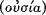
essence of the Father like radiance from light and like vapour from water; for
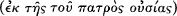
104 C. Gen. 40–1.
105 Hanson, The Search, 72, accepts the view that Dionysius was a possible forerunner of Arius because of his insistence that the Son was created; Williams, Arius, 149 ff:,
prefers to think of Dionysius as being not easily assimilable to one or other early 4th-cent. tradition but as also providing an indication that Athanasius' language was traditional in Alexandria and thus that Athanasius could plausibly claim Dionysius as his own. My own reading follows Williams rather than Hanson. Williams argues that κτίσμα (Dionysius' word) is significantly different from ποίημα in connotation and had a venerable history of being used to indicate the Son's generation without implying the same as poiema.
106 Athanasius, Sent. 15. On this text see now Uta Heil, Athanasius von Alexandria: de Sententia Dionysii, PTS 52 (Berlin: De Gruyter, 1999).
THEOLOGICAL TRAJECTORIES: I 49
neither the radiance, nor the vapour is the water itself or the sun itself, nor is the one alien to another, so too [the
nature of the Son] is an outflowing of the Father's essence, without the Father's essence being divided. For
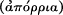
as the sun remains the same, and is not impaired by the rays poured forth by it, so neither does the Father's essence
suffer change, though it has the Son as an image of itself.107
It is a fascinating question whether Athanasius can fairly make a claim on Theognostus. Theognostus is criticized by
other fourthcentury writers (most notably Gregory of Nyssa) for teaching that the Son was created. We should,
however, note that here we have another case of a writer whose language about the Son's production seemed
dangerous to late fourth-century pro-Nicene ears, but may well have been less surprising in its immediate context.
BothDionysius of Alexandria and Theognostus use a terminology of ‘creating’ as one among a range of terms, and we
simply cannot be certain how this was heard in third-century Alexandria. This problem aside, Theognostus insists
clearly that the Son comes from the Father's being or essence. The metaphors on which Origen places so much weight
are here understood to imply that the Son comes from what the Father truly is.
One figure who may stand as an independent witness to a post-Origenist tradition that strongly emphasized the
closeness between Father and Son, is the late third-century writer Gregory Thaumaturgus. Gregory studied with
Origen in Caesarea and later became bishop of Caesarea in Pontus.108 Towards the end of the fourth century Gregory
was treated as a significant forerunner by the Cappadocians. Among his surviving works is a short discussion of the
unity of God and the distinctions between the persons.109 For Gregory God is a simple and indivisible unity. The Word
is comes forth without division, like the production of a word in the
107 Athanasius, Decr. 25. 2. The four fragments of Theognostus are collected and commented on by Adolf von Harnack, ‘Die Hypotyposen des Theognost’, Texte und
Untersuchungen, 9 (1903), 73–92. On Theognostus see Leslie W. Barnard, ‘The Antecedents of Arius’, Vigchr, 24 (1970), 172–88, esp. 179–82; Aloys Grillmeier, Christ in Christian Tradition, 2nd ed. (London: Mowbrays, 1975), 159–62. With this text should be compared the fourth fragment, which demonstrates a strong theology of the Son as the image of the Father's ousia.
108 There are a confusing number of Caesareas for the modern reader unfamiliar with ancient geography. Caesarea in Pontus is neither Eusebius’ Caesarea in Palestine nor
Basil's Caesarea in Cappadocia.
109 Gregory Thaumaturgus, To Philagrius [On Consubstantiality ] (c. 240–60). Accepting that the ‘On Consubstantiality’ section of the title is almost certainly a later addition, there
seem to be two reasons for accepting the authenticity of the text. First, there is no mention of any of the key disputed 4th-cent. terminology. Secondly, Gregory uses the metaphor of a spring and two rivers in a way that seems unimaginable by mid-or late 4th-cent. standards, especially in its en passant subordinationism. Other reasons for the authenticity of the text are reinforced by Michael Slusser in ‘The “To Philagrius On Consubstantiality” of Gregory Thaumaturgus’, SP 19 (1989), 230–5. 50 I. TOWARDS A CONTROVERSY
immaterial and indivisible soul. Gregory parallels this analogy with that of the sun and its rays, although he offers an
idiosyncratic version that eventually turns to the analogy of the eye and the ray of light which supposedly comes from
it in the process of vision. Gregory ends with the metaphor of two rivers flowing from a spring:
But also just as from a certain spring of water which ungrudgingly wells forth water like nectar . . . an abundant
stream . . . is carved into rivers which may be two as regards their stream, but have a single flow from the
beginning . . . even if each of the aforesaid rivers should seem to be defined for a long way, and to be very remote
from the spring, at least it has its beginning united to its origin . . . In very much the same way also, therefore, the
God of all good things . . . though he sent us as an intelligible grace a certain double flow of the Son and the Holy
Spirit, did not himself suffer anything as if damaged in substance . . .110
Gregory here deploys the traditional metaphor of a stream and a fountain to indicate that the Father gives from his
inexhaustible existence in generating Son and Spirit. No technical language of shared existence or being is present, but
the analogy itself points in a direction very different from that of Arius. Nevertheless, Gregory deploys this language
while still speaking of the Son and Spirit as ‘very remote from the Spring’. If this text is authentic then it indicates the
presence of something like this trajectory in third-century Asia Minor. In discussing Marcellus' theology in the next
chapter I will note possible links with ‘Monarchian’ and anti-Monarchian theologies in Asia Minor in the third century.
Those links provide further context for a variety of theologies emphasizing the unity of Father and Son in this region.
There are other indications that this style of theology was to be found far beyond Alexandria. First, there is the
synodical letter from the Council of Antioch early in 325. Alexander himself was not in attendance, and although his
influence must have been of importance at the council, we can also fairly read the text as demonstrating a very similar
theological tradition at work in Antioch. The text speaks of the only begotten Son as,
begotten not from that which is not but from the Father, not as made but as properly an offspring, but begotten in
an ineffable, indescribable manner, because only the Father who begot and the Son who was begotten know (for no
one knows the Father but the Son, nor the Son but the Father), who exists everlastingly and did not at one time not
exist. For we have learned from the Holy Scriptures that he alone is the sole image . . . we confess him to have been
begotten of the unbegotten Father, God the Word, true light, righteousness, Jesus Christ, Lord and Saviour of all.
For he is the image,
110 Gregory Thaumaturgus, Phil. 8.
THEOLOGICAL TRAJECTORIES: I 51
not of the will or of anything else, but of his Father's very qnômâ (hypostasis).111
This text makes no use of the ousia language that we see in Nicaea's creed. Instead it relies on a very strong image
theology. As ‘sole image’ of the Father the Son must be truly (and eternally) begotten from the Father. If we are right
to read hypostasis in the text here it probably alludes to Heb. 1: 3 and indicates the Father's nature, as it does in
Alexander. Against Arius the text also asserts very strongly that Father and Son know each other, even as far as both
knowing the manner of the Son's generation, which is incomprehensible to all others.
The text also uses the terminology of the Son as ‘true light’. We cannot identify with certainty the sources on which
this text draws, we can see here reference to John 1: 9’s reference to ‘the true light that enlightens every man’ and
possibly allusion to the importance of Christ as ‘true image’. It is not going too far, I think, to see behind this language
a soteriological concern: the Son's status as revealer of the Father, as light of the world and as saviour is seen as resting
on his being the true image eternally generated from the Father. Once again a strong assertion of the ability of the Son
to image the Father to the world is seen as requiring a strong statement of the Son's origin from or ‘in’ the Father's
being. If the Son is truly to reflect the Father then there is also a strong pull towards acknowledging the eternity of his
existence.
Alexander's Letter to Alexander of Byzantium indicates (unless we attribute simple naïveté to the bishop of Alexandria) that
he expected his theology to be recognized as orthodox by its intended audience. We may, thus, also be able to point to
northern Greece and Thrace as an area that followed this theological trajectory. The bishops of Thessalonica in the
early fourth century understood themselves to owe allegiance to the bishop of Rome and were strong supporters of
Athanasius: Alexander wrote in defence of Athanasius when he was deposed and his successor Aetius was an
important member of a council of ‘western’ bishops at Serdica in 343. Many of these ‘westerners’ were from Greece,
Thrace, and the Balkans. That the Emperor Theodosius was himself baptized by Acholius, bishop of Thessalonica,
and from there issued his famous edict defining Christian orthodoxy by reference to that taught in Rome and
Alexandria is probably no accident.112
111 The text is preserved only in Syriac. An English translation is to be found in J. Stevenson (ed.), A New Eusebius: Documents Illustrating the History of the Church to AD 337, rev.
W. H. C. Frend (London: SPCK, 1987), 334–5.
112 Were Alexander's letter to his namesake of Byzantium actually to Alexander of Thessalonica this would add greatly to these suppositions, but the case for that attribution is
not convincing. For Alexander's support of Athanasius see Athanasius, Apol. sec. 16 and 66. At Apol. sec. 16 Athanasius does admit that his opponents expected Alexander to take their side. But, however we should take that hint, note that at Apol. sec. 66, Alexander is happy to accuse Athanasius’ opponents of being ‘ Arians’, which seems to indicate an early willingness to adopt Athanasius’ heresiological terminology.
52 I. TOWARDS A CONTROVERSY
This is just one example of the diverse local theological traditions that existed, but it does enable us to point to an
important conclusion. Some writers still persist in assuming that theologies in the early fourth century can be divided
between east and west, the westerners resolutely ‘beginning’ from the unity of God, easterners somehow naturally
prone to a more diverse account of Father, Son, and Spirit. This is obviously rendered highly problematic by the
theology of Alexander and Athanasius, and nonsensical when we note the geographically widespread examples I have
discussed here.113
The ‘Eusebians’: Theologians Of the ‘One Unbegotten’
My second theological trajectory is the one in which we locate Arius himself. This loose alliance I will term ‘Eusebian’.
When I use this term I mean to designate any who would have found common ground with either of Arius' most
prominent supporters, Eusebius of Nicomedia or Eusebius of Caesarea. Using the term in this way reflects but
changes the early fourth-century phrase ‘those around Eusebius’. This phrase is first used to describe those who
supported Eusebius of Nicomedia in his theological and ecclesiastical policies by Alexander of Alexandria. Eusebius of
Nicomedia was a supporter of Arius and a bishop influential withthe Emperors Licinius, Constantine, and
Constantius. However, I will use the term ‘Eusebian’ more broadly and with a primarily theological reference: the
theological positions of Eusebius of Nicomedia and Eusebius of Caesarea are distinct and yet close enough for them to
be allied in opposition to Alexander.114 Many eastern bishops rallied around the Eusebii even while differing among
themselves. Eventually these differences became more marked and those who sought to inherit guiding roles in this
group found themselves on opposite sides of some key fences.
I begin here with three figures who share a common allegiance to the shadowy Lucian of Antioch, martyred around
312. The first of
113 One rarely finds in modern scholarship the older presentation of Alexandria as an ‘outpost of western theology’, and for good reason. Identifying ‘western’ as a type of
theology and then typifying comparable eastern theologians as actually ‘western’ has a wonderful illogicality.
114 My wide usage of ‘Eusebians’ mirrors that of Joseph T. Lienhard, Contra Marcellum: Marcellus of Ancyra and Fourth Century Theology (Washington, DC: Catholic University of
America Press, 1999).
THEOLOGICAL TRAJECTORIES: I 53
these is Eusebius of Nicomedia. Little survives of Eusebius' writing—one complete letter and a few fragments. Writing
to Paulinus the bishop of Tyre to encourage support for Arius, Eusebius writes:
[There is] one, the unoriginated, and one produced by him truly and not from his substance, not participating at all
in the unoriginated nature nor in his substance, but produced as altogether different in his nature and in his power,
being in complete likeness of disposition and power to him who made him . . .
There is, indeed, nothing of his ousia, yet everything that exists has been called into being by his will (βοαλημα) . . .115
For Eusebius the status of the Word does not stem from sharing in the divine attributes as the only one generated
from the divine being, but from a decision of the divine will. The theme of generation from the will we will meet many
time again: for many it served both to secure the generation of the Word against materialist division of God, and to
emphasize the unique character of the Father as true God. We do see some reference to the Son being like the Father,
but unfortunately this letter does not provide us with any information about how Eusebius made use of this theme.
The second figure is Asterius, known as the ‘sophist’. Asterius had sacrificed to the gods during the last great
persecution and was thus ineligible for ordination. Nevertheless, Asterius was an important defender of Arius before
Nicaea, and after Nicaea his theology became one of the main sparks for the continuing controversy as he attempted
to defend Eusebius of Nicomedia against the attacks of Marcellus of Ancyra: unfortunately only fragments of his
works survive. Asterius distinguishes between a number of distinct powers and wisdoms.116 God's own power and
wisdom is the source of Christ and of all things (it is God's own power and wisdom that Paul describes as being seen in
the creation at Rom. 1: 20), but Christ himself is a recent power and wisdom, the first and ‘only begotten’ of the many
powers created by the Father:
The blessed Paul said not that he preached Christ the power of God or the wisdom of God, but, without the article,
‘God's power and God's wisdom’;
115 Ed. Opitz, Werke, III/1, U.8.
116 For brief introductions to Asterius' theology see Hanson, The Search, 32–8; Thomas A. Kopecek, A History of Neo-Arianism, 2vols. (Philadelphia: Philadelphia Patristic
Foundation, 1979), I. 28–34; Lienhard, Contra Marcellum, 89–98. Markus Vinzent, Asterius von Kappadokien: Die Theologische Fragmente. Einleitung, Kritischer Text, Übersetzung und Kommentar (Leiden: Brill, 1993), offers an excellent edition and discussion of what remains. There is also a set of homilies on the Psalms that have by some been attributed to Asterius. I am persuaded by the argument of Wolfram Kinzig, In Search of Asterius: Studies on the Authorship of the Psalms (Göttingen: Vandenhoeck & Ruprecht, 1990), at least that it is extremely doubtful that these homilies are by Asterius and thus I have not referred to them.
54 I. TOWARDS A CONTROVERSY
thus preaching that the proper power of God Himself, which is natural to him and coexistent with him
unoriginatedly, is something besides.117
Asterius understands the terminology of power and wisdom in a manner directly opposed to that found in Alexander,
and in Athanasius, where Christ is the one power and wisdom of the Father. Asterius argues that the Son was
generated because the Father foresaw the inability of created nature to bear his direct touch.118 Asterius insists also that
Father, Son, and Spirit are three hypostases and he uses the logical formula that ‘the Father is truly Father, the Son truly
Son and the Spirit likewise’ to emphasize that the distinctions between the three are implied by the names we accord
them.
As Michel Barnes remarks, however, while we seem to see in Asterius a doctrine similar to Origen's insistence that the
Son is one of the many powers, it is noteworthy that Asterius uses this doctrine not to support an account of the Son's
separate existence from the Father, but to emphasize Christ's status as the first of many.119 Indeed, Asterius does clearly
emphasize the uniqueness of the Son's status as the first and as the one who can effect a transformation of all
created things. The Son is ‘Logos for the sake of rational things, and Wisdom for the sake of things endowed with
wisdom. . . . ’120
Eusebius of Caesarea quotes withapproval a fragment from Asterius of particular importance: ‘the only begotten
Logos (John 1: 18) and first born of all creation, the alone [begetting] the alone, perfect the perfect, King the King,
Lord the Lord, God [begetting] God, exact image of the being and will and power
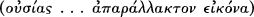
and glory’.121 Here Asterius shows himself happy to speak of the Logos as the image of the Father's ousia, presumably
because for him the term image carries a clear sense of difference and subordination. This text reappears at an
important council in 341, as we shall see in Chapter 5
The third figure is Arius himself. Again, little of his own writing survives.122 Arius insists that the Father is alone God,
simple and immutable. The Son is born from the Father before the creation and
117 Quoted in Athanasius, C. Ar. 1. 32 (Vinzent fr. 64).
118 Quoted in Athanasius, C. Ar. 2. 24 (Vinzent fr. 26): ‘The God of all, wanting to create originate nature, when he saw that it could not endure the untempered hand of the
Father, and to be created by him, makes and creates first and alone one only, and calls him Son and Word, that, through him as a medium, all things might thereupon be brought to be.’
119 Barnes, Power of God, 126–7.
120 Quoted at Athanasius, C. Ar. 2. 38.
121 Eusebius, C. Marcellus 1. 4.
122 Apart from some letters, we have only some fragments of Arius’ own theology from his Thalia. While the placing of Arius as one among a number of Eusebian theologies
may make the point obvious, it is worth noting directly that, unlike a number of accounts over the past 150 years, I have made no attempt to isolate one controlling theme or concept in his theology. The range of his concerns should emerge from seeing him against the background of his peers and immediate sources.
THEOLOGICAL TRAJECTORIES: I 55
although we cannot describe the Son's birth in temporal categories, we should not say that the Son is coeternal. Such
language circumvents the implications of the Son being born from the Father. In his Thalia (‘the banquet’, composed c.
323) he writes,
The one without beginning established the Son as the beginning of all creatures . . . He [the Son] possesses nothing
proper to God, in the real sense of propriety, for he is not equal to God, nor yet is he of the same substance
. . . there exists a Trinity in unequal glories, for their subsistencies (hypostases) are not mixed witheach
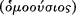
other . . . The Father is other than the Son in substance because he is without beginning . . . By God's
will the Son is such as he is, by God's will he is as great as he is, from [the time] when, since the very moment when
he took his subsistence from God; Mighty God as he is, he sings the praises of the Higher One with only partial
adequacy. To put it briefly, God is inexpressible to the Son . . . For it is impossible to search out the mysteries of the
Father, who exists in himself . . . What scheme of thought, then, could admit the idea that he who has his being
from the Father should know by comprehension the one who gave him birth.123
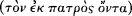
For Arius, the three hypostaseis have different levels of glory befitting their different status. The Son does not know the
Father and is unable fully to praise the Father. The Son exists because of the Father's will: and thus some of the central
characteristics that govern all products of the Father must govern the Son. In his Thalia Arius may also have asserted
that the Son is ‘from the things that did not exist ’.124 Although he later seems to have retracted such
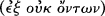
language, Arius seems to have continued to insist that the Logos is potentially changeable: only the Father is by nature
immutable (1 Tim. 6: 16). Arius also talks of two wisdoms and powers, speaking of a Logos that was not distinct from
the Father's hypostasis, after whom the Son is designated Word.
Arius still speaks of the Son as image, reflection (Heb. 1: 3), and light. Although the surviving fragments of Arius' work
do not contain a direct parallel, Athanasius reports that he copied Asterius' account of the necessity of a mediator for
the purpose of creation. In their 1981 book Early Arianism: A View of Salvation Robert Gregg and Denis Grohargued
that Arius was motivated primarily by soteriological concerns. They argued that for Arius the mutable Son becomes
incarnate, adopts a human life and thus provides a model for us of how to grow in moral excellence and holiness so
that we too may be adopted as ‘Sons’ of God. Gregg and Grohargued
123 The longest section of this work to survive is quoted by Athanasius at Synod. 15. The best translation (quoted here) and discussion is provided by Williams, Arius, 101 ff.
(see also Hanson's translation at The Search 14 ff.).
124 Athanasius, C. Ar. 1. 5.
56 I. TOWARDS A CONTROVERSY
that Arius’ account of the relations between Father and Son should be read as part of a fully rounded conception of
Christian existence. Nevertheless, in its details this thesis has met with only partial acceptance. Evidence is lacking for
the adoptionist Christology they describe (Gregg and Groh rely over-heavily on the ‘evidence’ of Athanasius'
description of Arius): there is also something very modern about explaining a cosmology as really about the
practicalities of soteriology. For Arius and his followers preserving an appropriate account of the true God and of the
Word may have been motivation enough.
Nevertheless, it does seem that Arius saw his opponents' account of the Word as distorting some central aspects of
Christian life and practice. Rowan Williams has pointed to a possible Alexandrian liturgical context within which we
might see Arius' views of the Son's status linked to concerns about prayer, worship, and the possibility of our
interceding withthe Father.125 In Alexandria it seems likely that the words of the sanctus were understood as the prayers
of the Son and the Spirit to the Father. The angels and the Christian community join in this act of praise because the
Son and the Spirit act as mediators. Against this liturgical context Arius may have seen his picture of the Son as having
important ramifications for how one understood the whole structure of Christian existence.
Williams also situates Arius' emphasis on the distinction between Father and Son within the context of late third-
century developments in philosophical understandings of participation. Williams does not argue that Arius had a
detailed knowledge of these categories, but some general awareness of the shifts that were occurring.126 During the
third century those whom modern scholars call ‘neoplatonists’ increasingly insisted on the transcendence of the One
over all other things and developed accounts of participation in which lower realms of being can only paradoxically
image features of higher realms: they represent the character of the activity of those higher realms but not their essence.
It is important to note that while much revisionary scholarship on the fourth century has focused on Arius himself,
Arius’ own theology is of little importance in understanding the major debates of the rest of the century. The Thalia,
appears, for instance, to have circulated only in Alexandria; what is known of him elsewhere
125 Rowan D. Williams, ‘Angels Unawares: Heavenly Liturgy and Earthly Theology in Alexandria’, SP, 30 (1997), 350–63.
126 Particularly in the third part of his Arius. The necessity of the move has not gone unchallenged, especially by Christopher Stead in his ‘Was Arius a Neoplatonist?’, SP, 33
(1997), 39–52. Stead denies that some of the philosophical shifts Williams identifies actually occurred, and locates Arius firmly within ‘middle Platonic’ tradition.
THEOLOGICAL TRAJECTORIES: I 57
seems to stem from Athanasius’ quotations. We also even have only sporadic evidence of his texts being used by later
‘ Arians’.
I have linked together these three Eusebians because of their relationship to the theologian and martyr Lucian of
Antioch.127 The ancient sources seem to identify a particular group of Eusebian theologians as ‘Lucianists’. Arius
himself writes to Eusebius of Nicomedia using the epithet ‘co-Lucianist’. The historian Sozomen reports that some of
the key Eusebians after Nicaea sought to cultivate Lucian's memory by presenting the 341 second Antiochene creed as
Lucian's.128 The ‘Heterousian’129 historian Philostorgius, writing in the early fifthcentury, presents Lucian as one of the
key sources for the non-Nicene tradition and is able to list his ‘students’ or followers among the supporters of Arius.
In some cases there, ‘students’ probably lived in Antiochfor a time and were actively taught by Lucian, but we should
be wary of imagining anything like a formal programme of study. In other cases a ‘student’ of Lucian may have had
only a small degree of actual contact withLucian, but liked to acknowledge a relationship of dependence.
Unfortunately so little survives of Lucian that we cannot know what his students learnt from him.130 We can fairly
assume that he emphasized three distinct hypostases and taught a theology of the Son as revelatory but subordinate
image. Much of Lucian's theology was probably available in other teachers as well and it seems best that we consider
Lucian a prominent exponent of a theology that did not originate with him. Interestingly, although Arius was able to
invoke a common bond with ‘Lucianists’, it also seems that he emphasized the transcendence of the Father in ways
that distanced him from the others: Arius’ teaching that the Son does not know the Father seems to have been at odds
with the theologies of other ‘Lucianists’—and withother Eusebians.
Moving on from these ‘Lucianists’ we come to the other Eusebius,
127 The fundamental text for the study of Lucian remains Gustave Bardy, Recherches sur Saint Lucien d'Antioche et son école (Paris: Beauchesne, 1936); for the most recent
summaries of Lucian see Williams, Arius, 162–7; Hanson, The Search, 79–84. Williams's account is the most careful, but Hanson is particularly clear on the basic problem here (79): ‘the practice indulged in by many scholars of first explaining Lucian by Arius and, then, this accomplished, Arius by Lucian, may suffice to amuse the learned but is a most unsatisfactory mode of procedure which has resulted in a good deal of erudite but useless speculation’. See also Hanns Cristof Brennecke, ‘Lukian von Antiochien in der Geschichte arianischen Streites’, Logos: Festschrift für Luise Abramowski (Berlin: De Gruyter, 1993), 170–92. Brennecke adds strongly to the case that the particular emphases of Arius’ theology were not shared by other ‘Lucianists’.
128 See below, Ch. 5 esp. p. 119.
129 A term defined in Ch. 6
130 As Hanson points out, The Search, 83, the one teaching that we seem to be able clearly to identify with Lucian is the belief that the Word assumed a body without a soul. 58 I. TOWARDS A CONTROVERSY
Eusebius of Caesarea, the historian and theologian.131 Eusebius knew Origen and drew on aspects of his thought. This
Eusebius was not, however, a ‘student’ of Lucian. He insists on the closeness of Father and Son (like a light and its
rays) and that the Son was created for the work of creation:
He subsists, not like the rest of begotten things, nor does he have life as the things begotten through him do; but he
alone was born of the Father himself and is life itself. It was fitting for the God above all, before everything that
came to be and before all ages, to bring forththe unique Begotten like a foundation or an unbreakable fundament
for the things that would come to be through him. So he begot the Son
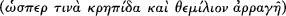
before all things that were going to be, like a ray of light and a source of life and a treasury of goods, ‘in
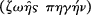
which all the treasures of wisdom and knowledge are hidden’.132
At the same time Eusebius presents the Son as the product of the Father's will, and thus not coeternal or distinct in
authority. The Son's existence as ‘life itself ’ is a delegated participation that does not infringe the eternity and self-
sufficiency of the Father:
He is not unbegotten, but is offspring of an unbegotten Father. He is only-begotten, Logos, God from God, put
forth from the being of the Father , not by a partaking or a cutting or a
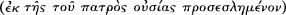
division, but unspeakably and, for us, unexplainably. He is from time or rather before all time. He has his being
f r o m t h e i n e x p r e s s i b l e a n d i n c o m p r e h e n s i b l e w i l l a n d p o w e r o f t h e F a t h e r
.133
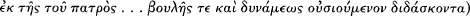
Eusebius' focus on the Father's will is subtly different from that of Arius: he describes the Son as ‘life itself ’ and as the
‘ray’ of the Father's ‘light’, expressions that have no place in Arius' surviving texts. The notion of the Father's will in
Eusebius shows both that the Son is not generated by a division of the Father's essence and how God gives himself in
the creation of the world: at one point he remarks that the will of God is the original material for all things.134
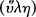
Eusebius clearly attributes to Father and Son different ontological status, envisaging the Son worshipping the Father
like other Eusebians
131 The usefulness and prominence of his Ecclesiastical History has led to his erroneously being considered a ‘historian’ rather than a ‘theologian’. Very useful introductory
descriptions of his theology with translated quotations are to be found in Colm Luibhéid, Eusebius of Caesarea and the Arian Crisis (Dublin: IrishAcademic Press, 1981), ch. 2 and ch. 5, pp. 83–97; Lienhard, Contra Marcellum, ch. 5. For his theology see also Hanson, The Search, 46–59; Barnes, Power of God, 129 ff.; Lyman, Christology and Cosmology ; Strutwolf, Trinitätstheologie.
132 Eusebius, Eccl. theol. 1. 8. 2–4 (Lienhard, Contra Marcellum, 114–15).
133 Eusebius, Dem. evang. 4. 3. 13 (Luibhéid, Eusebius, 36–7).
134 Eusebius, Dem. evang. 4. 1. 6–7.
THEOLOGICAL TRAJECTORIES: I 59
he speaks of two powers in God: the power of God unique to his nature and a second power, the Word, who is the
first principle of creation.135 Eusebius speaks of distinct hypostases but his use of this term is not consistent: he
sometimes uses hypostasis in other senses and occasionally, early on, speaks also of two οὐσιαι. The Father is true God
and the Son is appropriately called God: early in his career he is happy to speak of the Son as ‘a second God’ in a
clearly subordinationist sense. Nevertheless, he insists strongly that the Son is the image of the Father's ousia136 and
frequently turn to the image of perfume or fragrance to describe the Son's relationship to the Father:
Perhaps one might say that the Son originated like a perfume and a ray of light from the Father's unoriginated
nature and ineffable substance infinite ages ago, or
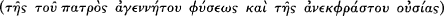
rather before all ages.
It is is noteworthy that this text occurs straight after Eusebius cites Isaiah 53: 8. Soon after this text Eusebius struggles
to define the Son's status:
[the Son] is the image of God, in a way mysterious and incalculable to us, the living image of the living God and
existing in its own right immaterially . . . but not like an image in our experience, when the form is distinct from the
image, but himself wholly the form, and assimilated in his own reality to the Father
, and so he is the most lively perfume of the Father,
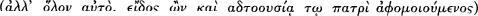
once again in a way mysterious and incalculable to us.137
Eusebius insists on the revelatory ability of the Son and characterizes the Son as possessing many of the Father's
qualities by the Father's gift. Particularly interesting is the clarity with which he thinks of the Son as mirroring the
Father's unity: as image the Son must mirror the Father's incomposite unity.138 In this doctrine he may well have
differed significantly from Arius, in whom the Son seems to have been a composite being not sharing the Father's
simplicity. And yet it is essential to Eusebius that the two are distinct and the status of the one unbegotten is preserved.
Eusebius of Caesarea is thus subtly different in his theology from Arius and perhaps from the other ‘Lucianists’.
Eusebius can speak of the Son
135 In Eusebius’ theology the role of the Spirit is defined in this context as a lesser power under the authority of the Son, presiding over the other lesser powers. But note that
even when Eusebius speaks of the Son as a second power, the ‘X from X’ language of power from power is understood as a real mode of participation, see Barnes, Power of God, 129 ff.
136 Indeed, Hanson describes this theme as ‘Eusebius' favourite doctrine’, The Search, 52.
137 Eusebius, Dem. evang. 5. 1. 18–21. For Eusebius' reference to the Logos as ‘the second God’ see prep. 7. 12–13.
138 Eusebius, Dem. evang. 4. 5.
60 I. TOWARDS A CONTROVERSY
being generated in language that relies on analogies of the Father's being and goodness overflowing into the Son, and
he can use the images of perfume or of a ray of light to describe the Son. This is of course always combined with a
consistent emphasis on not using imagery of God and of the Son's generation that implies any material division within
God or any change like that found in material creatures.
Nevertheless, it is also easy to see how and why Eusebius would have made common cause with the ‘Lucianists’
against Alexander. The acts of the second council of Nicaea in 787 preserve a letter of Eusebius written to Alexander c.
320 complaining about Alexander's treatment of Arius. Eusebius writes:
your letter accuses them as though they were saying that the Son has come into being as one of the created things . . .
they do not say this, but clearly determine that he is ‘not as one of the created things’ . . . You censure them for
saying that ‘he who is’ has begotten ‘he who is not’. I marvel that someone is able to say otherwise.139
Eusebius here takes as axiomatic that the Son's status is something which comes via the Father's gift and act, and that
it is consequently obvious that he was in some sense ‘created’. It has been argued that during the years of controversy
around Nicaea Eusebius gradually modified his position, increasingly subordinating the Son to the Father, dropping
the language of scent and perfume, and ever more clearly using the notion of the Son's incomprehensible generation
(Isa. 53: 8) to point to the error in theologies such as those espoused by Alexander and Athanasius. The evidence is,
however, unclear and fragmentary. All we can say with certainty is that when arguing against Alexander and that
bishop's associates, Eusebius found it easy to be clear about the distinction between Father and Son.
I have pointed here to only some of the most famous Eusebians: it is important to realize that many other bishops in
the east also took leading roles in the decades after Nicaea, bishops whose individual places within the broad Eusebian
trajectory (and the extent of their detailed theological knowledge) it is hard to judge. Indeed, over the decades after
Nicaea one of the most important shifts that occurs is within this broad ‘Eusebian’ trajectory. Some emphasize the
subordinate nature of the Son with increasing clarity, others discover that struggling to preserve the traditional
languages which still figure strongly in Eusebius of Caesarea's theology forces them along a different path and
eventually leads them to make a significant contribution to the formation of pro-Nicene orthodoxy. In the 330s and
340s many followed the ecclesiastical political lead of the
139 Opitz, Werke, III/i, U.7.
THEOLOGICAL TRAJECTORIES: I 61
‘Eusebians’ not primarily from theological conviction, but because they wanted to take a stand against Athanasius’
actions in his diocese and against western interference in their ecclesiastical business. In these decades it is also
important to note that the forces that came together under ‘Eusebian’ guidance would have included many who were
strongly united in their opposition to the theology of Marcellus of Ancyra, even while their theologies fully reflected the
diversity of Eusebian opinion that we have seen among a few more well-known figures. But that story is one we shall
tell in subsequent chapters.
3 Theological Trajectories In the Early Fourth
Century: II
‘Marcellan’ Theology: Theologians Of the Undivided Monad
My third theological trajectory is primarily associated with Marcellus of Ancyra. Indeed, while other figures can be
linked with this trajectory, the fragments of Marcellus' corpus constitute the bulk of the material surviving from it: he is
accordingly the focus of attention here.140 Marcellus was bishop of Ancyra by 314, he played a major role at Nicaea, and
was subsequently deposed, probably in 336. His theology was one of the central points of contention in the years
following Nicaea, as we shall see. His earliest surviving writing consists of fragments of a work written against Asterius:
the fragments survive because of Eusebius of Caesarea's extensive writing against this text. After the Contra Asterium,
Marcellus seems to have modified some of the more idiosyncratic aspects of his teaching, and thus we probably see
here his theology as it would have been before the post-Nicene disputes.
Marcellus was concerned above all to preserve the unity of God: to describe the relationship between Word and God
he deploys the analogy of a human person and her reason in ways that may have made even Athanasius blanch. Just as
a human person possesses a reasoning faculty that is intrinsic to her existence, so too does the Word eternally exist
withGod.141 One of his most idiosyncratic pieces
140 For Marcellus' surviving corpus see Markus Vinzent, Markell von Ankyra: Die Fragmente und Der Brief an Julius von Rom (Leiden: Brill, 1997). I have referred to the fragments
by Vinzent's numbering (which follows that of Seibt), and then by Klosterman's numbering in parentheses. An English translation is provided in Maurice James Dowling, Marcellus of Ancyra: Problems of Christology and the Doctrine of the Trinity, diss. (Queen's University, Belfast, 1987), 286 ff. Here I have followed Dowling's translation except for
minor changes. On Marcellus' theology see also Lienhard, Contra Marcellum, 49–68; Vinzent, Markell von Ankyra, xxvi–lxxvi; Klaus Seibt, Die Theologie des Markell von Ankyra, AKG 59 (Berlin: De Gruyter, 1994); idem, ‘Ein argumentum ad Constantium in der Logos- und Gotteslehre Markells von Ankyra’, SP 26 (1993), 415–20; Alistair H. B. Logan, ‘Marcellus of Ancyra, Defender of the Faith against Heretics—and Pagans’, SP 37 (2001), 550–64. See also the other articles by Logan in the bibliography.
141 e.g. Frag. 87 (61): ‘Just as everything that was made by the Father was made through the Word, so too the things that are spoken by the Father are proclaimed through the
Word . . . I believe this can be easily perceived by those who think logically . . . It is not possible for a man's reason to be separated from him as a power or as a hypostasis. For reason is one with a man and identical with him, and not to be distinguished from him in any other way except than as the energy of action .’
THEOLOGICAL TRAJECTORIES: II 63
of exegesis sees the ‘let us make’ of Gen. 1: 26 as describing the ‘internal’ conversation of God and his Word just as a
person might converse with her own reason!142 This may seem to present a modalism in which there are no true
distinctions in God. However, Marcellus should not be interpreted within the context of modern psychologies in
which the distinct existence of reason occurs only by way of logical abstraction. In some ancient psychologies one
could speak of distinct faculties within a whole. Thus, although we do not know which ancient psychology Marcellus
preferred, we do know contexts in which his strong insistence that he is not a Sabellian made sense.143
Marcellus knows Origen, but draws little from him: indeed Marcellus asserts the primacy of the title ‘Word’ over other
scriptural titles, perhaps directly refuting Origen's assertion in the first book of the commentary on John that one
understands the Son by interpreting ‘Word’ alongside the other scriptural titles.144 Thus, Marcellus sees any language
which separates God and Word as distinct beings either as illogical or as sacrilegious. He is particularly incensed at the
use of hypostasis or ousia in the plural. Marcellus has no theology of eternal generation: the Word does not come to be
distinct eternally but eternally is in the Father.
Marcellus' theology of creation and incarnation is difficult to decipher from the fragments. He speaks of the Word
‘coming out’ of God or ‘going forth’:
For before the world existed the Word was in the Father. When the Almighty God decided to make all things in
heaven and on earth, the coming into being of the universe required an accomplishing activity
. For this reason, since there was no one apart from God (for, as everyone agrees, all
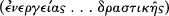
things were made by him), the Word came
142 Frag. 98 (58).
143 Frag. 44 (69): ‘For Sabellius, who had also slipped and fallen away from the right faith, understood correctly neither God nor his holy Word. For in that he did not know the
Word he was ignorant of the Father also. It says, indeed, “No one knows the Father except the Son”, that is, the Word. For the Word mediates knowledge of the Father through himself. ’
144 Frag. 3 (43): ‘thus, from every point of view, it is clear that for the eternal Word no other name is fitting than the one used by John, the most holy disciple and apostle of
God, at the beginning of his gospel. For whenever, following the assumption of the flesh he is called Christ and Jesus, or life, way, day, resurrection, door, bread . . . at th e same time we should not forget his first name, which was Word . . . . If there is a new and more recent name, it arose from the new and recent dispensation of his flesh.’ Cf. Frag. 7 (42): ‘For the Word “was in the beginning,” and was not anything else other than the Word . . . If anyone professes to be able to show that before the new covenant the name of Christ or Jesus was applied to the Word on his own, he will find that this is said prophetically . . . ’.
64 I. TOWARDS A CONTROVERSY
forth(προελθών) and became the maker of the universe, he who first of all prepared it in thought in his own
being . . .145
Marcellus seems to assume that the act of creation requires a certain activity—elsewhere he is happy to speak of a rest
or silence in God before this.146 In some sense the Word is this activity and may be said to ‘come forth’ in the
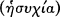
act.
Some scholars have linked the language of ‘act’ to fragments where Marcellus talks of power (δύναμις) and energy
in God:
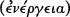
By saying, ‘in the beginning was the Word,’ he shows that the Word was in the Father as a power . . . By saying, ‘and
the Word was with God,’ he teaches that the Word was with God as an [or ‘in’] energy . . . And by saying that the
Word was God he teaches that one should not divide the Godhead, since the Word is in him and he is in the Word.
For he says, ‘The Father is in me and I am in the Father.’147
Noticing that Marcellus distinguishes δύναμις and and that he speaks of the Word coming forth from God as
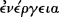
, Theodor Zahn in 1867 suggested this pair means potency and act in Aristotelian terms. This is unlikely:
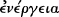
Marcellus clearly describes the Word's eternal existence in both terms. The Word does not become , this would
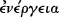
indicate for Marcellus a change in the eternal state of God.
It is better to interpret these terms separately. is not particularly frequent in the fragments of Marcellus,148 and
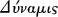
it seems likely that he uses the term because of its prominence in his Eusebian opponents. In order to show the
illegitimacy of two-power theologies he argues that as power (of reason) the Word must be intrinsic to God's existence.
, on the other hand, is a fairly frequent term and seems to bear a lot of weight. Because the term stops us
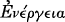
imagining being separate from the Father's existence, Marcellus finds the term acceptable for indicating both the Word's
eternal existence in the Father and the character of the Word's action when it ‘goes forth’. Nevertheless, we should be
careful about assuming that Marcellus uses the term in a technical philosophical sense: his actual usage bears further
discussion.
145 Frag. 110 (60).
146 Frag. 76 (103): ‘For before the world was created at all there was a certain silence —as one might expect, for the Word was in God. Now if Asterius has come to
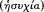
believe that God is the maker of all things, then obviously even he will acknowledge with us that God has always existed, that he never had a beginning to his being
, and that everything was brought into being out of nothing . . . Now if he accepts this he must also acknowledge with us that there was no other
apart from God. Therefore, the Word possessed his appropriate glory, as one who was in the Father.’
147 Frag. 70 (52).
148 Leinhard, Contra Marcellum, 54–6.
THEOLOGICAL TRAJECTORIES: II 65
In Fragment 70 (52) quoted above, Marcellus deploys the concept of energy to explain ‘the Word was with God’, a
clause whose conjunction ‘with’ is used by many fourth-century theologians to indicate the Word's presence with the
Father as a distinct being. Marcellus, however, deploys energy here to assert that the three clauses of John 1: 1 serve
together to assert the absolute unity of God.149 None of the fragments clearly reveals Marcellus using the term
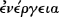
in light of a specific technical background: he uses the term because of a general sense of its rhetorical force. Thus we
can note that Marcellus sometimes combines with adjectives indicating effective action to emphasize the way
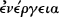
in which the Word is distinct from God in action. The phrases that Marcellus creates with do not seem to have
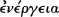
theological precedent: they have the appearance not of technical terminology but of ad hoc attempts to shape an
acceptable language for describing the Word.
Marcellus is clear that we cannot explain the mystery of the Word's ‘coming forth’ in action while God remains one.
He criticizes Asterius for using the language of Father and Son to emphasize the subordination of the Son and the
distinction of Father from Son. Marcellus wishes to apply this language solely to the relationship between God and the
incarnate Word: to apply it to the eternal nature of God is a result of inappropriately applying the categories of human
existence to God.150 This insistence on the unique nature of the divine existence is mirrored in Fragment 48 (67) where
Marcellus describes the ‘coming forth ’ of the Son as a ‘ hidden mystery being unveiled’
. Marcellus does not seem to mean that the Son's ‘coming forth’ is now
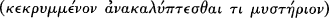
comprehensible, but that idea—the mystery—of God's ‘broadening’ or ‘dilation’ while still remaining one is revealed.
Marcellus does not use a consistent terminology for the Word's ‘going forth’. At times he follows biblical terminology,
at other times he uses verbs that appear to have no obvious technical context or scriptural reference. Marcellus seems
to be seeking an analogical language for speaking about an act that remains incomprehensible
149 Cf. Frags. 68 (51) and 6 (53) where Marcellus quotes the whole of John 1. 1 at once and describes the purpose of the verse as demonstrating ‘the eternity of the Word’. In
the latter fragment he writes, ‘It is for this reason that he begins with the eternity of the Word, saying, “In the beginning was the Word, and the Word was with God, and the Word was God.” He wishes to declare the eternity of the Word by means of three pieces of testimony one after the other.’
150 e.g. Frag. 85 (63): ‘ “for there are two hypostases, the Father and the Son,” [Asterius] says as he considers the human flesh which the Word of God assumed, and through
which he thus manifested himself. Thus he separates the Son of God from the Father, just as the son of a man might be distinguished from his natural father.’ Cf. Frag. 1 (65). One confusing aspect of Marcellus' theology is that he uses Father as a synonym for God while denying that Son is a title applicable before the Incarnation.
66 I. TOWARDS A CONTROVERSY
because it is always to be confessed within the context of the unity of God.
In two places Marcellus speaks of a ‘monad’ expanding into a ‘triad’:
in this text [John 16: 13] we have a plain reference to the monad which expands to form a triad while in no way
allowing itself to be divided . . . unless the undivided monad expands (πλατύνοιτο) to a triad how
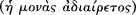
could [Christ] say at one point of the Spirit, ‘He proceeds out of the Father’?151
If our consideration were of the Spirit only, then the Word would rightly appear to be one and the same with [or ‘in’]
God; but if the addition of the fleshbe considered, then it seems (δοκει) that the Godhead expanded in energy
alone, so that it is rightly [said to be] a monad which is indeed undivided .152
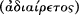
Marcellus here does not speak of the one God changing to become a triad. In both texts he emphasizes that the
‘undivided monad’ remains such even as the going forth of the Son and the Spirit occurs ‘in energy’. It is evident also
in this text that Marcellus did have a theology of the Spirit. I have not here discussed Marcellus' hints about the role of
the Spirit, for our purposes we need only to note that the same language of going forth in energy is used for the Spirit
as was used in the case of the Son.153
Marcellus' eschatology became particularly notorious in the fourth century. He interprets 1 Cor. 15: 28 to indicate that
at the end of the process of redemption Christ's kingdom comes to an end. The kingdom of Christ is a partial state,
only a part of the true rule of God.154 Once Christ's purpose has been accomplished at the judgement this partial rule
will end and God will be ‘all in all’. For Marcellus this must necessarily involve a return of the Word to its pre-‘going
forth’ status. Marcellus does not mean that the Word's distinctive existence ends: the Word is eternally ‘in’ the Father.
He is most concerned to uphold God's rule as complete and unmediated, and thus the kingdom of Christ must end.
Scholars have rarely noted that Marcellus realizes his account begs many
151 Frag. 48 (67).
152 Frag. 73 (71). Translation of this fragment is difficult, and my version differs from that of Dowling considerably.
153 In Frag. 47 (66) Marcellus also links Son and Spirit as being the only things characterized by a ‘oneness’ withGod.
154 Frag. 107 (119): ‘ And if it is clear that he assumed [flesh] for our sake, and all things in our world by his planning and working will arrive at their end at the time of judgment,
then there will no longer be any need for this partial kingdom.’ That the Kingdom under discussion is that of the incarnate Word or the man assumed by the Word is apparent from 78 (105): ‘The man received authority not only over things on earth but also over those in heaven, as was fitting.’
THEOLOGICAL TRAJECTORIES: II 67
questions: One of his clearest statements in this regard turns to 1 Cor. 13: 12:
And if anyone should ask what happens to [Christ's] flesh which has become immortal in the Word, how should we
answer him? . . . For now [th e Apostle] says we see through a mirror dimly, but then face to face. Now we know in
part, then we shall know just as we are known. Do not ask me about things that I have not clearly learned from the
sacred Scriptures. Rather, I believe the sacred Scriptures, that there is one God and that God's Word came forth
from the Father so that ‘through him all things’ might be made. And after the time of judgment, the restoration of
all things and the destruction of the opposing power, ‘he will then be subject to the one who subjected all things to
him’, ‘to God and the Father’, so that the Word might be in God just as he was at first before the world existed. For
there existed nothing at first save God alone; and as all things were to be brought into being through the Word, the
Word went forth as an accomplishing energy, and this Word was the Father's.155
It is not clear here how Marcellus understands the created order after the judgement. He both envisages the
incarnation as resulting in a transformation of Christ's human fleshinto an immortal form, and sees the creation itself
as having a τέλος finally accomplished at the judgement.156 Marcellus seems to rely on appeal to mystery. Unfortunately,
none of the surviving sources offers us a clear statement of how Marcellus would have narrated the whole of creation
and salvation history. We should note, in conclusion, that after 336 Marcellus seems to have abandoned the more
idiosyncratic aspects of his eschatology—though lack of evidence makes it impossible to describe his later views.
Although it is difficult to place Marcellus' theology in an immediate context, some suggestions can be made. His
account of the ending of the Son's kingdom represents the most idiosyncratic aspect of his theology, but much of the
rest finds extensive parallels in the second-century Apologists. This is especially so in the case of his understanding of
the ‘Word’ being present somehow in the Father eternally but coming forth in connection with the creation. Indeed,
this link is not seen only in Marcellus: taking examples from very different trajectories examined in these two chapters,
both the early theology of Hilary of Poitiers and that of Eusebius of Caesarea seem to envisage a state in which the
Logos is ‘in’ the Father ‘before’ being generated. Marcellus seems to have emphasized this theme considerably more
strongly than they and to have spoken more openly about the quasi-temporal point at which the Son's
155 Frag. 109 (121).
156 For the latter idea see Frag. 107 (119).
68 I. TOWARDS A CONTROVERSY
going-forth occurred, but the basic position has a long history and many contemporary adherents in the early fourth
century.
Scholarship has also consistently linked Marcellus with ‘Monarchian’ theologies. Monarchian theologians in the second
and third centuries appear to have focused on the unity of God centred in the person of the Father. By their opponents
they are accused of teaching that the Son and the Spirit do not have real independent existence and are in fact simply
modes of the Father's being. Unfortunately none of the opponents of Monarchians offers extensive quotation of their
texts and so we are at a loss to describe their doctrine in any detail. Some scholarship has seen this theological tendency
as a strong and persistent theological voice, both in Rome and in Asia through the third century, with Marcellus as the
last prominent Monarchian voice.157 Marcellus cannot be equated withMonarchian theologies—or at least with their
opponents' description of them—in one important respect. Marcellus considers the Word to be eternally with the Father, and
uses this belief to differentiate himself from his account of Sabellius, who is taken not to believe in the Word of the
Father. Perhaps then Marcellus represents a theological tradition that had long engaged in debate with
‘Monarchians’—both rejecting some of their emphases and adopting others.158
We can identify others who had more in common with Marcellus in doctrine than they did with the tradition of
Alexander and Athanasius and we can also identify a continuing body of supporters of Marcellus himself well into the
370s. Photinus of Sirmium we will discuss in later chapters, and we will also mention again a continuing body of
Marcellans writing to Athanasius in the early 370s. Eustathius, bishop of Antioch,159 was deposed from his see soon
after Nicaea,
157 Advocated most strongly in recent writing by Reinhard M. Hübner, Der paradox Eine: Antignosticher Monarchianismus im zweiten Jahrhundert, ed. Markus Vinzent (Leiden: Brill,
1999).
158 For instance, one might read his insistence on the Son's return to the Father as an attempt to resist Monarchian charges that the theology of the Apologists involves a
division in the being and unity of God that is unacceptable. In response Marcellus (or his predecessors) have developed an account of the Son's going forthdesigned to forestall such charges at a number of points, including by insisting that the Son ultimately returns to his primordial state of being ‘in’ the Father. This is, however, only conjecture.
159 On Eustathius see Hanson, The Search, 208–17; R. V. Sellers, Eustathius of Antioch (Cambridge: Cambridge University Press, 1928); Michel Spanneut, Recherches sur les écrits
d'Eustathe d'Antioche (Lille, 1948); idem, ‘La Position théologique d'Eustathe d'Antioche’; JThSNS , 5 (1954); 220–4; Rudolf Lorenz, ‘Die Eustathius von Antiochien zugeschreibene Schrift gegen Photin’, ZNTW 71 (1980), 109–28. One should now also consult the excellent edition of Eustathius and extensive introduction by José Declerck in CCSG 51. Hanson, The Search, 213–14, translates Frag. 38 (107) as follows (and presuming hypostasis stands behind qnôma ); ‘in this [hypostasis ] both[Father and Son] accomplish wonders. The divine books over and over again refer their majesty to One, so that they produce duality out of singularity or declare singularity from duality, because there is one hypostasis of the Godhead.’ Commenting on Deut. 13: 1–3 in De Engastrimytho 24 (65), Eustathius also writes, ‘Here [the text] presents the Dyad of the Father and the only-begotten Son; naming one of them as the Lord who proves, but the other as well as this one as the Lord and God who is loved, so that it teaches the one Godhead out of the Dyad and the true divine begetting.’
THEOLOGICAL TRAJECTORIES: II 69
probably in 327, having been bishop only since 325. Nevertheless, Eustathius left behind a community preserving his
doctrine that persisted into the 370s: the long survival of this community most likely reveals that its theology was well
established in Antioch before Eustathius short tenure of office. The fragments of Eustathius that survive present a
doctrine that is close to Marcellus, and to Alexander and Athanasius. Eustathius insists there is only one hypostasis. He
speaks of a dyad being produced out of singularity (or a monad) even while the singularity is declared in the dyad. In
such expressions Eustathius appears similar to Marcellus in his hesitancy about deploying terms that might deny the
constant unity of God. On the other hand, he seems to use the terms Father and Son in ways that Marcellus would
not: ‘Son’ for Eustathius appears to have some sort of eternal reference. We also see him describing the Son as image
of the Father's substance. Nevertheless, Eustathius did not follow the Alexandrian/Athanasian pattern of using genetic
metaphors to express the generation of the Word or Son, but preferred to insist on the Word or Son's eternal presence
in the Father.
Even though we can identify a wider context for Marcellan theology, it is not at all clear that those we can link with
Marcellus shared the idiosyncracies of his early theology. Grasping the peculiarities of his theology is important for
understanding why he became such an object of condemnation in the decades after Nicaea. At the same time, in his
fundamental emphases he is the most prominent witness of a wider theological trajectory. The characteristic emphasis
of this trajectory is the insistence that discussion of Word and Spirit must manifest the constancy and eternity of the
divine unity. Terminologies which speak of generation and of subordinate degrees of existence of Word and Spirit are
taken to be breaches of that unity. In this we see perhaps the strongest point of tension between Marcellan theology
and that of Alexander and Athanasius, even while Marcellus, Eustathius and Alexander were able to make common
cause against the Eusebians, and even while Athanasius and Marcellus could come together in Rome. The perception
that these two trajectories held to very similar beliefs would help to shape widespread eastern antipathy to both in the
years after Nicaea.
Western Anti-Adoptionism: A Son Born Without Division
70 I. TOWARDS A CONTROVERSY
All three of the trajectories I have so far outlined are found primarily in the eastern half of the empire. It is often said
that Latin-speaking theologians ‘began’ with the unity of God, insisting that there was only one substantia or substance
in God. It was also once a common assertion that, because of this commitment to the unity of God, westerners were
naturally sympathetic to Athanasius and Nicaea. Ossius of Cordoba has sometimes been credited with introducing
homoousios as a term that reflected this traditional western emphasis.
In actual fact our knowledge of Latin Christology and Trinitarian theology between 250 and 360 is extremely limited
and certainly not such that we can make any certain judgements about its overall character. It is noticeable that
attempts to describe the character of western theology in the early decades of this crucial century have been few and
far between during the recent decades of scholarly activity on the fourth century; the standard summary accounts
frequently ignore the question. Thus, for example, Meslin's Les Ariens d'Occident offers no consideration of the period,
and Hanson's The Search for the Christian Doctrine of God offers only a few sentences.160 Nevertheless, I suggest we can
sketch some common themes among western writers in the 250–350 period and so identify what may have been the
concerns of many western bishops when they began to encounter the energizing conflict between eastern theological
trajectories. In so doing, however, I am not characterizing all western theology: these themes evolved against other
western trajectories, monarchian and then adoptionist, and eventually found themselves in competition with western
non-Nicene theologies.
The main Latin theologians writing in the 250–350 period with whom we can usefully compare the Latin theology that
survives from the late 350s are Novatian (fl. c.250) and Lactantius (c.250–c.325). To this list we can add a few fragments
of early fourth-century writing and Hilary's own commentary on Matthew written probably c.350. I will first consider
Novatian and Lactantius; second, their relationship to Tertullian; and, third, Hilary's own early work.161 Looking at
Novatian and Lactantius for evidence of Latin theology in this period does not seem promising. In mid-career
Novatian left the mainstream Church and founded a rigorist group
160 Hanson, The Search, 169 writes ‘The western theological tradition which Ossius represented at the Council (if anyone did) was largely dependent upon Tertullian.’ Some
useful material is contained in the introduction to Evans, Tertullian's Treatise Against Praxeas.
161 I have excluded Cyprian (c. 200–58) from this discussion because the details of his Trinitarianism remain unclear. Some hints can be extracted from his surviving collection
of scriptural testimonia against the Jews.
THEOLOGICAL TRAJECTORIES: II 71
that continued for a number of centuries. Modern scholars have treated Lactantius' theology as idiosyncratic and
Lactantius as ignorant of other Latin theology. Nevertheless, Novatian's work on the Trinity seems to have been of
influence even among those who rejected his schism. At the same time, the standard scholarly account of Lactantius as
primarily indebted to non-Christian philosophy has long needed reconsideration: he may also be read as an admittedly
eccentric witness to the Latin theological traditions of his day.
For both of these writers the theology of Tertullian (fl. c.200) is a fundamental source, but their adaptation of his
theology demonstrates the different polemical concerns of the mid-third to mid-fourth century. Chapter 31 of
Novatian's On the Trinity (c.250) speaks of the Son or the Word being understood, ‘[but] not as a sound that strikes the
air nor the tone of the voice forced from the lungs, but rather . . . in the substance of a power proceeding from God
(sed in substantia prolatae a Deo virtutis agnoscitur).’162 The Father, who has no origin, necessarily precedes the Son, and the
Son—who is also God—receives his being only from the Father who is the one God.163 The Son receives his being in a
manner which does not compromise the divine unity and which involves an eternal connection between Father and
Son. Novatian does not possess a theology of eternal generation: the Word is eternally ‘in’ the Father and at some stage
the Word comes forth from the Father.164 Novatian is clear that,
whether he is the Word, whether he is Power, whether he is Wisdom, whether he is Light, whether he is the
Son—whatever he is of these, he is not from any other source but from the Father . . . Owing his origin to the
Father, he could not cause any disunion in the Godhead by making two Gods.165
162 Novatian, Trin. 31. 2.
163 Novatian, Trin. 4. 6.
164 Novatian, Trin. 31. 3–4: ‘He then, since He was begotten of the Father, is always in the Father. And I thus say always, that I may show Him not to be unborn, but born. But
He who is before all time must be said to have been always in the Father; for no time can be assigned to Him who is before all time. And He is always in the Father, unless the Father be not always Father, only that the Father also precedes Him, in a certain sense, since it is necessary—in some degree—that He should be before He is Father. Because it is essential that He who knows no beginning must go before Him who has a beginning; even as He is the less as knowing that He is in Him, having an origin because He is born, and of like nature with the Father in some measure by His nativity, although He has a beginning in that He is born, inasmuch as He is born of that Father who alone has no beginning. He, then, when the Father willed it, proceeded from the Father, and He who was in the Father came forth from the Father; and He who was in the Father because He was of the Father, was subsequently with the Father, because He came forth from the Father, that is to say, that divine substance whose name is the Word (substantia . . . divina, cuius nomen est verbum ), whereby all things were made, and without whom nothing was made.’
165 Novatian, Trin. 31. 12–31.
72 I. TOWARDS A CONTROVERSY
Novatian is sensitive to the possibility that this account of the Son might seem to indicate two eternal realities (thus
indicating that Arius' charge against Alexander was not a new fear). Immediately before the passage quoted in the
previous paragraphhe writes:
Assuredly God proceeding from God (Deus utique procedens ex Deo), causing a person second to the Father as being
the Son, but not taking from the Father that characteristic that He is one God. For if He had not been born (natus)
as unborn He would have been compared with Him who was unborn (Innatus comparatus cum eo qui esset innatus).
Since an equality would have appeared in both, He would have constituted a second unborn, and thus two Gods. . . .
Had He been formed without beginning as the Father, and He Himself the beginning of all things as is the Father,
this would have made two beginnings, and consequently would have shown to us two Gods also . . . Had He been
invisible, as compared with the Invisible, and declared equal, He would have shown forth two Invisibles, and thus
also He would have proved them to be two Gods. If incomprehensible, if also whatever other attributes belong to
the Father, reasonably we say, He would have given rise to the allegation of two Gods, as these people feign.166
In this text we see something of Novatian's Christology. The Son, having come forth, is the visible God as opposed to
the invisible Father. The origins, persistence, and eventual transformation of this theme need not concern us, but we
must consider Novatian's insistence that the visible Son nevertheless receives his being from the Father and is rightly
called God.
Novatian appears to have been particularly concerned about ‘adoptionism’. ‘ Adoptionists’ seem to have spoken of the
Son as assumed for a salvific function by the divine power. By such means ‘ Adoptionists’ protected the unity of God
and avoided attributing the suffering of Christ to God. For Novatian such theologies misunderstand the Son, failing to
distinguish between the different natures of Christ (although here Novatian struggles to find an adequate vocabulary).
Thus, in anti-adoptionist contexts we see strong assertions that the Son receives his being from the Father but without
the Godhead being divided. Thus the unity of God does indeed occupy much of Novatian's attention, but it partially
does so in order to enable a careful distinguishing of Father from Son.
Sixty years later, the fourth book of Lactantius’ The Divine Institutes (c.310) offers an extensive account of the Son's
generation. At 4. 6–9 the manner of the Son's generation is unknown, as is his true name, but from the Scriptures we
can speak of the Son as the Word of the Father (citing Pss. 32: 6 and 44: 2). Lactantius differentiates the Word from the
angels by speaking of the angels as the
166 Novatian, Trin. 31. 6–11.
THEOLOGICAL TRAJECTORIES: II 73
‘breathings’ from the Father's nose, while the Son is the intelligible Word from the mouth of the Father, representing
the mind of the Father.167 The Word's role is closely linked with creation, and there is no understanding of eternal
generation—although the speaking of the Word creates a Word that is then necessarily eternal.
Lactantius asks how it is that we speak of two—God the Father and God the Son—but do not speak of different
Gods. He insists first on the correlativity of Father and Son as terms, and then on X from X language to show their
inseparability:
When we speak of God the Father and God the Son, we do not speak of different things and do not separate the
two, as neither can the Father be separated from the Son nor the Son from the Father. Since, therefore, the Father
makes the Son and the Son the Father, there is one mind in each (una utrique mens), one spirit, one substance (una
substantia): but the one is as an overflowing fount (exuberans fons), the other as though a stream flowing (defluens) from
that, the one a sun, the other a direct ray from the sun.168
A few sentences later we hear that ‘whatever is in the Father flows (transfluit) to the Son, and whatever is in the Son
descends from the Father’. Lactantius' account of the Son is strongly focused around the Son's revelatory and
mediatorial role, and he insists on the closeness of the two to ensure that the Son truly reveals the Father. Lactantius
differs from Novatian in treating the Son as incomprehensible like the Father, as invisible and as known only to the
Father. However, they both emphasize the origin of the Son in the Father and the dependence of the Son's being on
the Father's breath or overflowing. Both authors also take these to preserve the unity of God.
Novation and Lactantius share a similar debt to Tertullian and yet also differ from him in similar ways. In his Against
Praxeas (c.210) Tertullian presents the Son as a ‘substantial’ word because nothing insubstantial can come from the
Father.169 Although, for Tertullian,
167 Inst. div. 4. 8: ‘Rightly, therefore, he is called the speech and Word of God, since God comprehends the vocal spirit proceeding from his mouth which he had conceived, not
in the womb, but in the mind by a certain unfathomable strength and power of his majesty into an image, which has life and power by its own proper knowledge ( . . . in effigiem, quae proprio sensu ex sapientia vigeat . . . ).’
168 Inst. div. 4. 29.
169 On Tertullian's Trinitarian theology see Eric Osborn, Tertullian, First Theologian of the West (Cambridge: Cambridge University Press, 1997), ch. 6; Joseph Moingt, Théologie
Trinitaire de Tertullian, 4 vols. (Paris: Aubier, 1966–9), esp. the discussion of Adv. Prax. at i. 225 ff.; Ernest Evans, Tertullian's Treatise, 38 ff. I have not offered an extensive discussion of Tertullian's Trinitarian terminology here. Tertullian did not, as is sometimes assumed, deliver to later Latin thought a fixed and specific Trinitarian terminology. On the one hand, there are later writers for whom his terminology was simply not that important (e.g. Hilary) and, on the other hand, his own terminology is fluid (e.g. he uses substantia to designate that which Father and Son share, that which distinguishes them, and to distinguish the two natures in Christ).
74 I. TOWARDS A CONTROVERSY
the Son is second in order and comes from the Father in connection with the Father's decision to create, he also insists
that the Son was always in the Father: the same two-stage conception we find in our two later Latin writers.170 Tertullian
also describes the relationship between Father and Son as being like that between a tree and its root, a river and a
fountain, or a ray and the sun. He also insists that because the Son gets everything that he has from the Father the
unity of the Godhead is not destroyed.171 Tertullian's targets here are Monarchian theologians for whom the Word does
not exist as a distinct existing thing. Thus, ironically, an anti-monarchian, anti-‘modalist’ polemic fundamentally shapes
these early Latin theologians, and that is taken so often to be determining the future course of a unitary western
theology!172 We can note two important differences between Tertullian and Lactantius and Novatian. Neither Novatian
nor Lactantius is a materialist in Tertullian's sense (thinking of God as an infinitely diffuse intelligent matter). Both
Novatian and, I suggest, Lactantius are concerned to oppose adoptionism. Although Lactantius makes no overt
reference to adoptionism, he condemns a heretical (not pagan) group who could not understand how God could be
confined in a woman's womb or subject to contempt and crucifixion. Condemnation of this group seems also to be
involved in Lactantius' Christological insistence that the Son undergoes a double birth: because the distinct Son is truly
born as Word and in the flesh, we have real access to the Father.
As Ernest Evans remarks in his discussion of the ways in which Novatian adapts Tertullian's account of the Son,
what [Tertullian] uses to prove that the Son is a second divine Person beside the Father, Novatian (whose
adversaries admit Christ's personal existence) finds equally apposite to prove his deity (which Tertullian's
adversaries did not deny).173
170 Tertullian, Adv. Prax. 5: ‘ . . . even before the creation God was not alone, since He had within Himself both Reason, and, inherent in Reason, His Word, which he made
second to himself by agitating it within Himself.’
171 Tertullian, Adv. Prax. 8: ‘ . . . the tree is not severed from the root, nor the river from the fountain, nor the ray from the sun; nor indeed is the Word separated from God.
Following, therefore the form of these analogies, I confess that I call God and his Word—the Father and His Son—two. For the root and the tree are two things (res ) but joined (coniunctae ), and the spring and the river are two species but joined . . . Everything that proceeds from something (omne quod prodit ex aliquo ) must of necessity be another beside that from which it proceeds, but it is not for that reason separated . . . In this way the Trinity, proceeding by intermingled and connected degrees from the Father, in no respect challenges the monarchy, while it conserves the state of the economy.
172 It is also worth noting clearly that the idea of persona as a term in Latin theology leading always towards a certain modalism because of its root meaning of ‘mask’ is
nonsense. In the Christian era the term did not carry this connotation. Prestige in 1936 could describe this reading as ‘a legend’, but for some reason the legend continues!
173 Evans, Tertullian's Treatise, 27.
THEOLOGICAL TRAJECTORIES: II 75
Tertullian argues for the true existence of the Son as a distinct reality, Novatian argues that in Christ a distinct divine
reality truly became incarnate: the same texts serve both purposes. The adoptionism of the later third and early fourth
centuries is in some ways related to the Monarchianism opposed by Tertullian. Both had great problems speaking of a
distinct divine reality being present in the man Jesus. In the adaptation of anti-Monarchian polemic to antiadoptionist
purposes Novatian and Lactantius emphasize that the distinct Son is truly born from the Father and that this birth
does not involve a destruction of the divine unity or monarchy. It is also only on the basis of the Son's being a
substantive word to whom the Father has given divine being that Novatian can make sense of the Son's incarnate role.
In these theologies the closeness of the Son to the Father is central to the process of salvation.
Daniel Williams, following the work of Jean Doignon, has recently argued that Hilary's early Commentary on Matthew (c.
350) is strongly marked by anti-adoptionist, rather than anti-‘ Arian’ concerns.174 Hilary's theological position and
polemical context in this work is very different from his later On the Trinity: Hilary here seems to hold a two-stage
Logos theory, rather than a theory of eternal generation, and is most concerned to argue against those who see the
infirmities of Christ's flesh preventing our according him the true powers of divinity. Hilary argues that this is seen as
the blasphemy against the Spirit and endangers salvation itself. The language and concerns evident in Hilary's account
are, Williams argues, paralleled in the acts of a small Gallic council of 345 or 346, when one Eufrata was condemned
for a form of adoptionism and hence for blaspheming the Spirit.175 There various anti-adoptionist theologies are not
best described as interested in the unity of God more than in the distinctions between the persons. Such a view fails to
see how far a polemical need to distinguish the persons clearly has shaped their adaptation of previous tradition. It is
also important to note that these Latin theologians have as far to travel towards later pro-Nicene theology as the
eastern trajectories examined in this and the previous chapter. Questions of eternal generation, questions about
degrees of divine being, and about the very character of divine being are handled in a very different manner from the
strategies we will find at the end of the fourth century. However, a key emphasis here is on a mode of generation that
sees the Son's role as Saviour as dependent on the Son's existence stemming directly from the
174 Daniel H. Williams, ‘Defining Orthodoxy in Hilary Poitiers' Commentarium in Matthaeum’, JECS, 9 (2001), 151–71; Jean Doignon, Hilaire de Poitiers avant l'exil (Paris:
Études Augustiniennes, 1971).
175 Willims, ‘Defining Orthodoxy’, 164–5.
76 I. TOWARDS A CONTROVERSY
Father. The use of the language of light and ray, spring and fountain alongside the language of the Son ‘flowing’ from
the Father to describe this generation may help us to see why many western theologians had difficulty withmany
Eusebian emphases in the early fourth century.
Incarnation and Soteriology At 300
Third-century theological disputes concerning soteriology provided little clarity or resolution for fourth-century
theologians. A brief discussion of this legacy will help to make clearer the complexity of early fourth-century theology
and provide a foil for the soteriological discussions of Chapter 12. As we have seen, the structure and possible
implications of Origen's theology provided one focus of debate in the east during the last decades of the third century:
one other significant source of controversy in those years was the Christology of Paul of Samosata, deposed by a
council in Antiochin 268/9.176 Although it is no longer possible to speak with certainty about Paul's theology, it seems
that his opponents were unhappy with his insistence that Christ possessed a human soul and body and that the union
of natures in Christ was not comparable to the union of soul and body in a human being. To his opponents, insisting
that Christ had a soul meant that the Logos never truly entered into the man. For his opponents this theology could
only result from semimodalism. Paul is understood to have seen the Logos as God's own inner Word and not as a
distinct separate being: he could not subsequently envisage that the Logos really became one with a human person.
There is also some evidence that he did not think of the Word as ‘Son’ until the incarnation, in ways that do
interestingly prefigure Marcellus of Ancyra (although wider associations made between these two for heresiological
purposes in the fourth century reveal very little about Paul himself).
When we turn to the beginning of the fourth century, we find that for Arius the Logos was able to act as mediator
because it was in some sense visible and changeable. In this Arius seems to be part of a tradition present in Paul's third-
century opponents and also visible in Eusebius of Caesarea. But, for this tradition, while the mutability of the Logos
enabled union with a human being, any such union involved the Logos replacing the human soul. In Eustathius of
Antiochwe do in fact find one thinker who criticized the Eusebians
176 On Paul see Hanson, The Search, 70–2, and the literature in his n. 50. A particularly useful account of Paul, especially as he is used as a heretical topos in later controversies,
is to be found in Behr, The Way to Nicaea, ch. 8. See also Uwe Lang, ‘The Christological Controversy at the Synod of Antioch in 268/9’, JThSNS 51 (2000), 54–80.
THEOLOGICAL TRAJECTORIES: II 77
for not allowing Christ a human soul.177 We may also be able to attribute a belief in Christ's human soul to Marcellus of
Ancyra.178 Thus, strangely to modern ears, there were many at the beginning of the fourth century who thought that
confessing Christ to have a soul indicated a semi-modalist theology. It is also possible that emphasis on Christ not
possessing a human soul was a reaction against Origen's very strong emphasis on eternal souls as the mediating
principles between the Logos and the material world.179 As this theology became the subject of a sustained critique, the
Logos itself was treated as the eternal mediating principle and hence understood to replace Christ's human soul.
Although it is difficult to argue that the human soul of Christ plays much role in Athanasius' thought, it is clear that the
closeness of the Logos to the Father is emphasized as the basis for the structure of salvation. Athanasius emphasizes
God's unmediated action in the material world, and sees the Arian/Eusebian emphasis on the intermediate nature of
the Logos as serving to prevent this connection, however intimate the union between the Logos and the human body
of Christ that they envision. In the last chapter I discussed Gregg and Groh's attempt in their Early Arianism: A View of
Salvation to show that, against ‘ Arian’ exemplarism, Athanasius offers a soteriology in which the Logos is active in the
world transforming and redeeming without the need for any mediation.180 Whether or not their account of ‘Arianism’
can be sustained, their picture of Athanasius has a high degree of cogency—and is based on a long tradition of
scholarship. Thus, Athanasius' theology is not easily located; while one might have expected him to accord Christ a
human soul, he may have followed an Alexandrian post-Origenist tradition of seeing the Logos itself as replacing the
human soul.
The situation is, then, both complex and confusing. On the one hand, according Christ a human soul seemed to many
at the beginning of our period highly problematic and incompatible with a real distinction between Father and Son. On
the other hand, one of the
177 Grillmeier, Christ, 1. 299, translates a section of frg. 19 (Declerk) Eustathius as follows: ‘Why do they [Arians] think it so important to show that Christ took a body without
a soul, fabricating such gross deceptions? So that if only they can induce some to believe this false theory, they may then attribute the changes due to the passions to the divine pneuma and thus easily persuade them that what is changeable could not have been begotten from the unchangeable nature.’
178 This question is also in dispute. My statement here is based on his insistence that the incarnate Christ willed in ways that did not accord with the will of the Father (Frag. 75
(74) among others). The question remains highly complex.
179 On this question see Rowan D. Williams, ‘Origen on the Soul of Jesus’, in Richard P. C. Hanson (ed.), Origeniana Tertia (Rome: Edizioni dell'Ateneo, 1985), 131–7.
180 See, for example, Robert C. Gregg and Denis E. Groh, Early Arianism: A View of Salvation (Philadelphia: Fortress Press, 1981), esp. the discussions in ch. 4 and at 177–83. 78 I. TOWARDS A CONTROVERSY
themes of those who resisted Eusebian theologians in which the Son acted as mediator between God and the creation
was that God's Word was truly God acting in the world. As true Word and exact image of the Father, the Word's
redemptive action was that of the one God. However, developing this theology of redemption and transformation
while according Christ a human soul took a number of decades. The understandings of salvation which flowed from
the different accounts of the Son's generation espoused in this century were constantly in dispute, although only rarely
the direct focus of attention until well into the 360s.
Heresy and Orthodoxy in the Early Fourth Century
Many readers will ask if we can identify in or between these four trajectories a Christian ‘orthodoxy’ against which we
may judge the theologies competing in Alexandria and even the original decisions of Nicaea. Older narratives tended
to assume that ‘heresies’ were novel creations divergent from a pre-existing orthodoxy. In such narratives what is later
defined as orthodox comes to be projected back into earlier controversies to enable a clear narrative of an unchanging
orthodoxy ever victorious against novel heresies. Thus, for example, we still sometimes find Athanasius presented
both as the upholder of the Church's unchanging tradition and as (necessarily) the representative of late fourth-century
‘Nicene’ orthodoxy—itself taken to be simply a restatement of the ‘ Apostolic tradition’. The problems with reading
early Christian thought from this perspective were identified withparticular clarity in Walter Bauer's seminal text from
1934, Orthodoxy and Heresy in Earliest Christianity.181 Bauer's book concerns the struggle over Gnosticism in the second
century rather than the fourth-century controversies, and the specifics of his treatment have been much contested.
Nevertheless, at least one general point from Bauer's book has now become a key principle of critical scholarship: what
later counts as heretical at times preceded what came to be counted as orthodoxy, and was itself seen as orthodox at
that earlier stage.
In recent scholarship this principle has been modified away from the idea that the development of orthodoxy necessarily
involved a wholesale reversal. Recent scholarship has come to see late fourth-century orthodoxy, in particular, as
emerging from tensions among existing Christian theologies. These tensions lead to conflicts from which emerge
positions counted as orthodox and others typified as
181 Bauer, Orthodoxy and Heresy in Earliest Christianity, tr. and ed. Robert A. Kraft et al. (Philadelphia: Fortress Press, 1971).
THEOLOGICAL TRAJECTORIES: II 79
heretical. Thus, within the tensions of pre-existing Christian belief are found the precursors both of what will come to
be counted heretical and what will come to be counted orthodox. In the course of these controversies what will count
as orthodox emerges and defines the heretical in contradistinction to itself.182 The complexity of this process makes the
task of identifying continuities in belief and all questions about the orthodoxy of options that are later counted as
heretical extremely complex.
Understanding the nature of orthodoxy and heresy during the fourth century is further complicated by the need to
note not only shifts in the content of Christian belief concerning Trinitarian and Christological issues, but also
considerable change in the structures and practices within which right belief is assessed. When theologians in the early
fourth century debate questions of right belief they accuse their opponents of misreading the Scriptures, of failing to
deploy appropriately scriptural texts taken to be hermeneutical keys, of belonging to an existing group or geneaology
designated as heretical, and of going against the inherited rule of faith.183 However, in the early stages of this
controversy appeals to the rule of faith, to ‘apostolic’ or ‘evangelical’ faith—even when couched in terms of an appeal
to baptismal creeds and the faith they symbolize—are frequently appeals to the implications of short summaries that by
themselves say little of direct relevance. Appeal to this faith is, then, often an appeal to what may have been tacitly
understood in a given community; sometimes it may be an appeal to the way that local traditions or famous teachers
have explicated shorter summary statements; sometimes it may be a sophisticated attempt to convince one's home
audience that a newly developed position should be read as reflecting tacit belief. Suchappeals succeed or fail by their
ability to invoke the ‘fittingness’ of a given position with an audience's sense of the overall structure of Christian faith
and the text of Scripture. Even in the very rare cases where appeal could be made to earlier conciliar decisions or
controversies (suchas the Council of
182 But note the extent to which ‘heresy’ may be defined in different ways as within or without the Christian fold, and via a range of different images. Here the recent work of
Rebecca Lyman offers a useful point of departure. See esp. her ‘ A Topography of Heresy: Mapping the Rhetorical Creation of Arianism’, in Michel Barnes and Daniel H. Williams (eds.), Arianism after Arius (Edinburgh: T. & T. Clark, 1993), 45–62; eadem, ‘ Ascetics and Bishops: Epiphanius on Orthodoxy’, in Susanna Elm, Eric Rebillard, and Antonella Romano (eds.), Orthodoxie, christianisme, histoire (Rome: École Française de Rome, 2000), 149–61.
183 On the heresiological strategies of the 2nd and 3rd cent. see A. Le Boulluec, La Notion d'hérésie dans la littérature Grecque IIe–IIIe siècles, 2 vols. (Paris: Études Augustiniennes,
1985). In this context one would need also to note recent debate about the ‘rule of faith’ in recent writing. See esp. Paul M. Blowers, ‘The regula fidei and the Narrative Character of Early Christian Faith’, Pro Ecclesia, 6 (1997), 199–228, and Young, Biblical Exegesis.
80 I. TOWARDS A CONTROVERSY
Antioch in 268 or the controversy between the two Dionysii), there was no clear structure for such appeals.
Nevertheless, this flexibility occurred within a deeply traditioned context. In the case of every theological trajectory
discussed here particular terminologies or scriptural texts came, over time, to be particularly significant as
hermeneutical keys. Indeed, Richard Vaggione has helpfully pointed out that throughout the fourth-century disputes
theologians have a highly differentiated sense of theological terms, some being treated as flexible, others as
fundamental in defining orthodox belief. Frequently conciliar credal terminology falls into the former context, while
inherited terms and analogies, sometimes traced to venerated teachers (and always terms taken to be either scriptural
or implications of Scripture), fulfil the latter role.184 Those terminologies taken to be of particular significance did not
have credal warrant (as such a concept did not yet exist) and vary from trajectory to trajectory. Appeal to such
terminologies should always be heard as the invocation of a particular tradition as the most fitting expression of
Christian faith.
Thus, the gradual diffusion and reception of principles established in earlier polemical contexts had gradually come to
provide dense traditioned contexts withwhichthe rule of faithand baptismal creeds were understood. In many cases
the boundaries of right belief remained fluid; the status of the Son providing an excellent example. In such contexts the
boundaries of right belief could only be established by polemical interchange and by the attempted performance of a
theology's unity within the community of belief. Thus, what (to modern historicist eyes) may appear to be simply
undifferentiated and unconvincing appeals to a unitary apostolic tradition, are also invocations of particular historical
traditions taken to best represent that apostolic faith.
By the end of the fourth-century theologians had not abandoned these styles of defining right belief, but they had
developed a further range of tools for such acts of definition. After 381 theologians are able not only to appeal to the
terminology and logic of a creed, but also to sets of logical principles concerning unity and differentiation in the Trinity
that had emerged as principles of agreement between different traditions over the 360–80 period. Suchstatements
even appear as key principles of definition in imperial legislation.185 Traditional terminologies and favoured scriptural
images are now interpreted and understood by pro-Nicene theologians within these new sets of logical principles and
credal formulae. Definitions of
184 Richard P. C. Vaggione, ‘ : Some Aspects of Dogmatic Formulae in the Arian Controversy’, SP 17 (1982), 181–7.
185 e.g. Theodosius, C.Th. 16. 1. 1–3.
THEOLOGICAL TRAJECTORIES: II 81
orthodoxy now also occasionally involve direct appeal to a set of authoritative theologians.186 Thus it is not that
discussion of right belief has utterly changed during the fourth century and now may be said to revolve around precise
credal statements: such a reading misses the complexity of the context within which creeds exist. Rather, these new
strategies exist alongside and offer a dense context for continuing direct appeals to the ‘ Apostolic faith’ and to the
Scriptures.
The evolution of pro-Nicene theology also involved the evolution of new modes of ‘performing’ orthodoxy. In using
the term ‘performance’, I have two senses in mind. First, the development of pro-Nicene orthodoxy involved the
evolution of styles of or strategies for performance and narration of orthodoxy within different literary forms. One
might point, for example, to particular strategies for combining statements of the divine incomprehensibility with
discussion of the relations between Trinitarian persons. Note that my concern here is not so much with open and
public ‘performance’ of one's subscription to the Nicene creed or its terminology but with the display in speech and
writing of interconnected principles and combinations of ideas that enable hearers and readers to recognize an
orthodox theology even when terminology differs.
Second, a number of recent writers have demonstrated that the evolution of theology in the fourth century is also tied
to an evolution in the culture of the Church and its role within wider late antique culture. One aspect of this evolution
is the development in patterns of social interaction taken to be appropriate for bishops; development in what it means
to perform the role of a bishop in the changed situation of the imperially sanctioned Church. A number of aspects of
such performance have been considered in recent scholarship, from shifts in how bishops function in relation to civil
authorities to how the performance of orthodoxy is possibly tied to particular patterns of gender performance.187 For
my purposes the
186 e.g. Theodosius, C.Th. 16. 1. 3. Note that the construction of such authoritative theologians is seen not in the evolution of a clear style of citing other authors, but initially in
the elevation and ‘canonization’ of particular 4th-cent. figures in the ecclesiastical historians and in texts such as Nazianzen's oration on Athanasius. We should be wary of assuming that this process immediately resulted in the large-scale citation of previous authors as authoritative per se. See, with regard to Augustine's development in this regard, the helpful discussion of Eric Rebillard, ‘A New Style of Argument in Christian Polemic: Augustine and the Use of Patristic Citations’, JECS 8 (2000), 559–70.
187 For examples of such scholarship see Peter Brown, Power and Persuasion in Late Antiquity: Towards a Christian Empire (Madison: University of Wisconsin Press, 1992);
Susanna Elm, ‘The Diagnostic Gaze: Gregory of Nzaianzus' Theory of Orthodox Priesthood in his Orations 6 De pace and 2 Apologia de fuga sua ’, in Elm et al. (eds.), Orthodoxie, christianisme, historie, 83–100; Richard Lim, Public Disputation, Power and Social Order in Late Antiquity (Berkeley: University of California Press, 1995); Virginia Burrus, ‘Begotten, not made’: Conceiving Manhood in Late Antiquity (Stanford, Calif.: Stanford University Press, 2002). In general Averil Cameron, Christianity and the Rhetoric of Empire: The Development of Christian Discourse (Berkeley: University of California Press, 1991) provides an excellent introduction to a series of fundamental questions about how the shape of Christian discourse changes during our period: some of these themes are of direct relevance to an examination of the multidimensional nature of the evolution and performance of pro-Nicene orthodoxy.
82 I. TOWARDS A CONTROVERSY
aspect of this process that is most directly of interest are developments in how bishops understand their own
performance of the Church's unity in local contexts and in the Church more widely. Rowan Williams has indicated the
importance of epistolary contact between bishops in the pre-Nicene period. In the later fourth century we see similar
structures of inter-diocesan relationship understood as an intrinsic part of the performance of orthodoxy among
bishops:188 the practical performance of the unity of the body of Christ. These practices of orthodox performance
include epistolatory forms, forms of behaviour at regular conciliar meetings, and forms of communication and
interaction with other bishops.
How then can we proceed when we ask if a given figure in the early fourth century is or is not ‘orthodox’? Is th e
question even a useful one? When the question is posed with the assumption that there are dense standards of
judgement—even suchas are found in the 380s—against which we can understand the relative standing of the various
theologies in competition, it is better not asked. There are, however, some more complex questions that may be
helpfully asked. One might be, ‘given the structure of appeals to right belief in the early fourth century, are there
individuals or trends whose emergence or development has significantly hampered the possibility of their existing
(even in tension) with the wider range of contemporary traditions throughout the broader Christian community?’
Asking such a question serves a number of useful purposes. On the one hand, attempting to answer the question may
reveal the development of tensions that stretch existing patterns of theological coexistence such that we can
understand more clearly how a particular controversy becomes widespread. On the other hand, learning to ask such
questions can help us attend better to the historical complexity of the development of orthodoxy. These questions do
not rely on attempting to assess deviation from a previous orthodoxy, rather they attempt to highlight the possibility of
considering the place of thinkers within a shifting community that is itself part of a dynamic tradition.
I want to draw together these remarks by discussing a recent argument offered by Rowan Williams in an essay on
Origen's
188 And although in this paragraph for the sake of clarity I consider only bishops, similar questions occur when we consider the place of other members of the Christian
community.
THEOLOGICAL TRAJECTORIES: II 83
theological practice.189 Williams suggests that if we are to understand what Origen maght have meant by orthodoxy we
need to see the centrality of Origen's concern to display the unity of the Scriptures—and hence of God's action—in his
exegesis. For Origen, one of the most basic intellectual and spiritual problems facing the rational being is to perceive a
rational and harmonious unity in the multiplicity that confronts us. For Christians this problem is immediately also one
of theodicy: how can one see the unity of divine purpose and order in the disjunctions and seeming chaos of the
temporal world?
Williams suggests that we view Origen's understanding of exegesis as in part a response to this perceived need: with
divine assistance the exegete demonstrates the unity of scriptural teaching, and in so doing demonstrates the rational
ordering and saving work of the Logos. Appropriate deployment of grammatical and figural techniques plays the score
of Scripture into a harmonious unity. The exegete thus demonstrates the shape, bounds, and style of Christian speech
through displaying how the text should be read. For Origen, though, this display is always an indication that each
Christian may make the journey, not a statement that the revelation of truth has now been achieved for all. For
Williams, Origen's deep concern for the demonstration of this unity also partly stems from his early experience of a
time of crisis in Alexandria when a multiplicity of Christian and para-Christian groups in the city served to hide the
vision of divine unity for which Origen strived.
Williams goes on to suggest that this perception of the exegete's task may also partially account for suspicion of Origen
in the fourth century. Origen's account of the unity of orthodoxy resting in the possibility of a display of the unity of
Scripture by the spiritually aware exegete had become unintelligible for two reasons. On the one hand, the fourth-
century Church became increasingly reliant on short, synchronic, and institutionally enforced statements of orthodoxy.
On the other hand, the changing social situation of the Church meant that bishops made increasingly concerted
appeals to a nonelite audience in ways that made Origen's sense of a necessary intensive spiritual pedagogy for the
comprehension of Christianity seem unworkable.190 At this point I suggest we should beware of following Williams's
argument too easily.
I will argue in Chapters 11–13 that pro-Nicene theology is best understood as a theological culture. One of my reasons
for taking
189 Williams, ‘Origen: Between Orthodoxy and Heresy’.
190 Williams also notes that many of Origen's accusers in this period also accuse him of excessive plurality in his theology and argue for greater unity—exactly mirroring
Origen's own self-perception.
84 I. TOWARDS A CONTROVERSY
this approach is the evidence that pro-Nicene authors realized the difficulty of defining ‘orthodoxy’ by reference to
individual terminologies and credal formulae. Instead they pointed to sets of terminologies embodying similar logics,
and assumed that such terminologies were read in the context of a set of wider theological assumptions and practices.
Thus any easy contrast between Origen's exegete performing the unity of Christian faith through the crafting of
intertextual harmony and a later (frequently episcopal) authority simply reproducing the statements of credal definition
is to be resisted. We should perhaps think, instead, of slow and subtle modifications to the structure of a particular
cultural vision occurring throughout this period.
4 Confusion and Controversy: AD 325–340
The Nicene Creed as a Standard Of Faith
In Chapter 1 I told the story of a conflict in Alexandria that came to involve many prominent bishops and theologians
in the eastern half of the empire. This story reached its culmination at the Council of Nicaea in 325. I then argued that
we needed to begin again and see this controversy as occurring within and because of tension between existing
theological trajectories. It is now time to resume the narrative: as my point of departure I will return to the Council of
Nicaea.
Many modern readers assume that the Nicene creed was intended at its promulgation to stand as a binding and
universal formula of Christian faith with a carefully chosen terminology defining the fundamental Christian account of
the relationship between Father and Son. The idea that the creed would serve as a universal and precise marker of
Christian faith was unlikely to have occurred to anyone at Nicaea simply because the idea that any creed might so serve
was as yet unheard of.191 All the bishops at Nicaea would have understood their local ‘baptismal’ creed to be a sufficient
definition of Christian belief and summary of the faith Scripture taught. Baptismal creeds were central both to the
process of catechesis and to the rite of Christian initiation. In those areas for which we have evidence baptismal creeds
formed the focus of the catechetical teaching given to candidates in the weeks or days before baptism. During the
fourth century the baptismal rite itself developed and in an increasingly important and formal section of the ritual
candidates would recite, in response to questions, the creed they had learnt.
Local baptismal creeds were handed down through a community's liturgical practice and sometimes associated with the
name of a local saint or church founder. A variety of comparable creeds were in use, but the identity of the faith they
instantiated was assumed where the communities who used them could remain in contact and mutual recognition.
Communication between leaders of local Christian communities and gatherings of bishops was thus vital. In this fluid
context precise credal formulae were not used for
191 On creeds see J. N. D. Kelly, Early Christian Creeds, 3rd edn. (London: Longman, 1972). On the course of discussion at Nicaea see Hanson, The Search, 157–72; Williams,
Arius, 67–71; Simonetti, La Crisi, 77–87; Strutwolf, Trinitätstheologie, 44–61.
86 I. TOWARDS A CONTROVERSY
defining the boundaries of acceptable belief. Bishops were not expected to sign a universal statement of faith and, prior
to Nicaea, there are only two documented uses of credal-type documents being used as conciliar tools for defining
right belief. Both of these occurred in Antioch: in 268 a credal definition seems to have played some role in the action
taken against Paul of Samosata, and a few months before Nicaea, we have the Antiochene creed of 325. It is also
important to note that even up until the beginning of the fifthcentury, when Nicaea's position became more clearly
established in liturgical contexts, local creeds continued to be used in catechesis, simply interpreted and taught within
the terms of a pro-Nicene theology.192
Throughout the first forty years of the controversy councils of bishops formulated a number of creeds in words
different from those used at Nicaea. While some were constructed by those who opposed Nicaea, others were
understood as compatible with it. That one might, on an ad hoc basis, produce a creed which put the same faith a little
more clearly was a near-universal assumption. Indeed, as we shall see, the idea that Nicaea would serve as a universal
standard of faith, and as one whose precise wording and terminology was itself definitive, evolved through the fourth
century, and was still evolving at the century's end.
Even if the use of credal formulae in a conciliar context was new, the holding of councils was not. Hamilton Hess
nicely summarizes the evidence for pre-Nicene councils in the second edition of his classic text on the Council of
Serdica. Although we can trace different types of gatherings of Christian members and leaders from the New
Testament period, it is only in the third century that we have clear evidence of fairly regular meetings of bishops to
discuss doctrinal and administrative questions. It is, however, a mistake to think of these councils as consisting only of
bishops: in many cases large numbers of lay people and other clergy we present and seem to have taken a full part.
Many of these debates still seem to have seen themselves as discussions on the model of the philosophical schools
rather than deliberative assemblies with legal powers. Only from around 250–70 do we hear of councils acting in a
more clearly parliamentary manner, hearing evidence on a question, reaching decisions, and expecting those decisions
to be executed in local churches. As councils became more formal bodies they seem to have adopted methods of self-
governance modelled on procedures used
192 See Daniel H. Williams, ‘Constantine and the “Fall” of the Church’, in Lewis Ayres and GarethJones (eds.), Christian Origins: Theology, Rhetoric and Community (London:
Routledge, 1998), 117–36; Kelly, Early Christian Creeds, 254–62. See also Ch. 13.
CONFUSION AND CONTROVERSY: AD 325-340 87
at a number of levels of Roman government, from the Senate in Rome down to provincial assemblies.193 Thus by the
time Nicaea met Church leaders accepted the idea of a council as a deliberative forum, but they had no precedent for
the idea of a council that would legislate for the Church as a whole. The procedures of a council modelled on methods
of Roman governance would have been familiar to Constantine, and we can assume that he saw it as the natural means
to achieve consensus within the Church. We should also note that even at Nicaea not all of those invited were bishops:
it is as we go through the fourth century that we see the emergence of the solely episcopal gathering.
The council was widely known in the east in the decades that followed, at least initially because of its sheer size and
because of Constantine's role in organizing the council and in enforcing its decrees. Both Constantine himself and
Eusebius in his life of Constantine emphasize the importance of convening so many bishops in such a large meeting.194
In the west detailed knowledge of Nicaea was far patchier. In all cases, however, we should not necessarily identify
knowledge of the council with detailed knowledge of its creed.195 In a context when councils were not expected to
produce precise statements of belief, there is no reason to think that Nicaea would be remembered for its creed in the
years which immediately followed. We might say that the judgements of Nicaea could be known, while the terms in
which those judgements were expressed were of only secondary interest.196 We should note also that Nicaea's canons
concern many organizational issues far beyond the crisis over Arius.
Constantine himself had become sole emperor only in 324 (after having ruled the western half since 310–12), and he
seems to have promoted Christianity as a unifying religion for the empire (although his personal beliefs will almost
certainly remain unclear). Unity of Christians as a body was of as much concern to Constantine as any doctrinal issue
involved: and it initially took the efforts of
193 Hamilton Hess, The Early Development of Canon Law and the Council of Serdica (Oxford: Clarendon Press, 2002), chs. 1–3.
194 Eusebius of Caesrea, Vit. Const. 3. 6; Constantine at Opitz, Werke III/2, U. 32.
195 Hess, Canon Law, 124 ff. shows that in the west the canons of Serdica 343 were frequently treated as those of Nicaea. This nicely demonstrates the lack of detailed
knowledge of the council in the west. In general on the reception of Nicaea's theological terminology in the west see Jörg Ulrich, Die Anfänge der Abendländischen Rezeption des Nizänums (Berlin: De Gruyter, 1994).
196 There is still much to be learnt from H.-J. Sieben's Die Konzilsidee der Alten Kirche (Paderborn: Schöningh, 1979), ch. 1. His discussion of how, in Athanasius' writing,
Nicaea goes through various stages on the road to its full status as ‘ecumenical’ council, from being a universal judgement against Arius towards a sufficient summation of the Church's faith, is an excellent point of departure for a wider consideration of the status of Nicaea in a range of writers through our period.
88 I. TOWARDS A CONTROVERSY
bishops like Ossius and Alexander of Alexandri to persuade him that anything significant was at issue in Alexandria.
We should not simply put this down to theological ignorance. On the one hand, Constantine's attitude reflects deeply
embedded Roman attitudes about the social function of religion which were at odds with the increasing importance
Christians placed on orthodoxy of belief. On the other hand, as Robert Markus noted, Constantine's attitude itself may
actually reflect an older Christian attitude to the virtue of unity under threat of persecution, the partisans at Nicaea
reflecting the emergence of a more fractious attitude.197 These ideas are intriguing, but will remain conjectural in the
face of our lack of evidence. We do know that Constantine took a deep interest in the council, and issued a number of
letters attempting to enforce its decisions. Despite this interest, as we shall see there is no indication that even
Constantine saw the creed as anything other than a statement designed to solve the current rift in the Church.198 In
general then we have to say that the creed stood as a particular statement of faith designed for a particular purpose: any
further status it might have would be a subject for argument in the following decades.
The Course Of the Council
In older narratives of the fourth century it was reasonably easy to understand why the Nicene creed was agreed with
little dissent: only the few ‘heretics’ would refuse such a clear acknowledgement of the Church's constant faith.
Without this older narrative, matters are more complex. Unfortunately, we have no surviving detailed acts of the
proceedings at Nicaea. Indeed, it is unlikely that detailed minutes of the council were kept, as happened at later
councils.199 Hence we have to construct an account of the debate from some surviving scraps of evidence. We can
certainly see that Eusebians of all types were under pressure and seem to have been on the defensive. It is at least
possible that Eusebius of Nicomedia made an opening speech to the Emperor, but the direction of the council was
very clearly in
197 Robert Markus, ‘The Problem of Self-Definition: From Sect to Church’, in E. P. Sanders (ed.), Jewish and Christian Self-Definition, i: The Shaping of Christianity in the Second and
Third Centuries (London: SCM, 1980), 1–15.
198 We should avoid reading Constantius' attitude to credal formulae back into the intentions of his father Constantine without further evidence (see below, Ch. 6). It is true
that the Council of Nicaea had also been called to settle on a universal date for the celebration of Easter, and in this regard Constantine clearly saw the council as having a universal function. But this does not necessarily mean that the creed of Nicaea was intended as a universal statement of faith. For Constantine's letter to Alexander and Arius (c. 324) see Opitz, U.17.
199 Hanson, The Search, 158 and passim 157–63, for accounts of the surviving evidence, and Simonetti, La Crisi, 77–95. On the arguments at the council Kelly, Early Christian
Creeds, ch. 7 is also helpful.
CONFUSION AND CONTROVERSY: AD 325-340 89
the hands of others. Ossius of Cordoba probably chaired the meeting; Eustathius of Antioch, Marcellus of Ancyra, and
Alexander must all have been key players in the discussions. Tension among Eusebian bishops was caused by
knowledge that Constantine had taken Alexander's part and by events at the council of Antioch only a few months
before.
However, despite the prominence of Ossius, Eustathius, Marcellus, and Alexander, Eusebius of Caesarea must still be
counted as one of the most senior and influential bishops present. Eusebius reports that he read a creed and appended
explanatory text to the assembly—which he quotes for us—and he tells us that this was accepted wholeheartedly.200
The text Eusebius read is in fact extremely cautious and offers very little description of, or terminology for, the Son's
generation other than to say that the Son was ‘begotten from the Father before all ages’. A fragment from Eustathius
of Antiochreports a ‘Eusebius’ reading a text which was then very badly received.201 Unless we think that either
Eustathius or Eusebius of Caesarea is simply lying, then it seems Eustathius must be referring to the other Eusebius,
Eusebius of Nicomedia (a view reinforced by Ambrose of Milan writing in the 380s).202 Thus, at some point it seems
that Eusebius of Nicomedia failed to get approval for his theology. Once the creed itself was being drafted it also seems
likely that an attempt was made to argue against the direction of events—and maybe the term homoousios was
particularly criticized—but this too was rebuffed.203
Thus we see the Eusebians under pressure, some willing to compromise, others not. The role played by Constantine
himself is uncertain. The Emperor certainly opened the meeting and attended at least some sessions. In his opening
address he was clear that an agreement about the structure of Christian faith was his goal. This imperial pressure
coupled with the role of his advisers in broadly supporting the agenda of Alexander must have been a powerful force.
When, however, we ask if we can also imagine a majority of those present personally belonging to non-Eusebian
trajectories the answer must be tentative. We simply do not know in individual cases whether subscription to Nicaea's
creed reveals personal
200 Eusebius of Caesarea, Ep. Caes. 4–6. Some have taken Eusebius to assert here that the creed of Nicaea was really the creed he presented with a few additions. This claim is
not sustainable; see Kelly, Early Christian Creeds, 211–26. However, as Kelly points out, we do better to read Eusebius as saying that the doctrine represented by Nicaea is the same as that of Caesarea.
201 Theodoret, Eccl. hist.I . 7. 43–4.
202 Ambrose, De fide 3. 15. 125.
203 Theodoret, Eccl. hist.I . 7. 33. I follow Williams, Arius, 67 in identifying this as a separate event from Eusebius of Nicomedia's attempt to get his orthodoxy confirmed. But
the evidence here is uncertain.
90 I. TOWARDS A CONTROVERSY
commitment or willingness to follow the pressure of the Emperor's presence and the direction of the council's leaders.
Many of those attending were probably unaware of the detailed issues involved in the controversy over Arius and
willing to follow the lead of either local leaders or those whose theology seemed best to resonate with their own local
theological traditions or favoured terminologies. Even among those who we might think of as more committed to
Eusebian language there may have been many willing to agree that the sort of gloss put on the creed by Eusebius of
Caesarea writing to his own diocese after the council would be the prudent course. In general, we do not possess the
evidence to identify the allegiances of those present, nor can we suppose that the disposition of bishops at Nicaea
reflected the disposition of theological trajectories more widely in the Christian world. Throughout the century large
councils suchas Nicaea were not constituted as a representative selection of bishops.
It does seem clear that those who carried weight were determined to have Arius’ theology condemned.204 Indeed, the
choice of the term homoousios seems to have been motivated in large part because Arius was known to reject it.
Athanasius, in later accounts of the council, tells us that those running the council originally proposed describing the
Son as ‘like’ the Father or ‘exactly like the Father in all things’ and as being ‘from God’.205 But these terms would not
serve because everyone could agree to them—Arius' supporters could find parallel statements in the Bible describing
aspects of the creation and the phrase ‘from God’ could also be used of created things, and to mean ‘from the will of
God not his essence’. Hence, homoousios and ‘from the essence of the Father’ were chosen specifically to exclude Arius'
supporters. Athanasius' reports offer a plausible account of a discussion attempting to produce a compromise formula
that will exclude some positions and yet still achieve a majority. But if something like this did occur, everyone would
have known what they excluded; nobody needs to have been able to define what they positively included.206
Eusebius, in his Letter to his Diocese written in 326, writes that Constantine himself spoke, endorsing the term homoousios,
but insisting that it did not imply any material division in God. Eusebius also reports that he himself secured clarity
that the phrase ‘from the essence of the Father’ did not mean ‘is part of the Father's
204 Arius himself may have been in attendance, but there is no evidence that he took any part in the proceedings, and it seems unlikely.
205 Athanasius, Decr. 20; Ad Afros 5. It is only in the latter text that he mentions the phrase ‘from God’.
206 For futher discussion of Athanasius' argument see Ch. 6.
CONFUSION AND CONTROVERSY: AD 325-340 91
substance’. It is noticeable that in Eusebius' reading of the text it is still possible to read Nicaea as implying a certain
subordinationism; the creed's technical terms are all interpreted to mean that the Son is like the Father, and is truly
from the Father. Eusebius interprets Nicaea's anathema against those who say ‘before he was begotten he was not’ to
mean that the Son existed potentially in the Father before his actual begetting by referring to Constantine's own
opinions (although it seems likely that he does not mean opinions expressed at Nicaea).207 By suchmeans Eusebius
avoids the notion of eternal generation so dear to some of his opponents.
Whether or not one believes Eusebius' account of Constantine's interventions, his text does give us a very plausible
account of how someone within his theological trajectory could have interpreted Nicaea's terms. Emphasis on the
incomprehensibility of the Son's generation was important to all the trajectories I have discussed and it is no surprise
that we find it being emphasized to placate Eusebians. All trajectories could agree on this principle, even if they could
not agree on the consequences of its incomprehensibility! Eusebius' discussion nicely demonstrates the extent to which
the promulgation of homoousios involved a conscious lack of positive definition of the term.
Of course, those who were broadly in the same trajectory as Alexander would have easily been able to sign up to
Nicaea's terms but would have read them in a very different manner, although not necessarily one dependent on a
more careful definition of their sense. They desired to secure the condemnation of Arius and to that end saw as
essential a clear statement that the Son was produced from the Father's essence. In this they succeeded, but at the cost
of a creed that could still be acknowledged by some Eusebians and which is simply vague on some key points. It is
noticeable, for example, that the Son is not described as eternally begotten, probably reflecting the impossibility of
getting agreement on this still contested term. Thus it is not quite accurate to say that the creed reflects the beliefs of
those who held the initiative at Nicaea. Rather, the creed shows the extent to which those who held the initiative could
push their perspective while still achieving sufficient support for victory at the council. These bishops assumed that
they had every right to
207 Eusebius, Ep. Caes. 16: ‘Already our Emperor, the most beloved of God, affirmed in a discourse that even according to his divine generation he was before all the ages,
since even before he was begotten in actuality, he was in the Father ingenerately in potentiality . . . ’. Eusebius may well be referring to the Oratio ad Sanctos (CPG 3497)
attributed to Constantine, some indications of a parallel doctrine may be found there. There is now considerable scholarship on this text: for a discussion which offers some evidence compatible withmy suggestion here see Mark Edwards, ‘The Arian Heresy and the Oration to the Saints’, VigChr 49 (1995), 379–87.
92 I. TOWARDS A CONTROVERSY
take the council's decisions as licensing their own theologies as expressions of orthodox faith. In the years which
followed Nicaea these bishops were to find that this was a matter still very much open to dispute. Nicaea's terminology
is thus a window onto the confusion and complexity of the early fourth-century theological debates, not a revelation
that a definitive turning-point had been reached. My conclusions here are close to those of Richard Hanson when he
writes,
The evidence available does not admit of our forming ingenious, elaborate and highly nuanced theories about the
council of Nicaea . . . It is improbable that all of the people who had previously seen nothing offensive in the
doctrine of Arius should have surrendered tamely to an openly Sabellian creed. It is improbable that the heirs of any
side of Origen's thought should have abandoned a doctrine of three hypostases. As N. [sic] does not openly mention
the eternal generation of the Son, so it does not openly declare that there is only one hypostasis in the Godhead. The
homoousion was probably not a flag to be nailed to the masthead, a word around which self-conscious schools of
theology could rally. But it was an atropopaic formula for resisting Arianism . . .208
Ousia and Hypostasis In the Creed Of Nicaea
One of the most striking aspects of Nicaea in comparison to surviving baptismal creeds from the period, and even in
comparison to the creed which survives from the council of Antioch in early 325, is its use of the technical
terminology of ousia and hypostasis.209 There is, however, a huge difference between deploying terms that appear to fulfil
a technical clarifying function, and understanding those terms clearly. There is in fact evidence that these terms had
been the subject of debate and confusion since the mid-third century. Hence, it is important to attempt to understand
what meaning was attributed to these terms at the time of Nicaea. By way of a general warning, it is important to note
that any attempt to define fourth-century theological terminologies by reference solely to their philological origins or to
a history of non-Christian philosophical development runs the constant danger of resulting in an artificial clarity that is
not reflected in actual theological usage. Rather, we need to be attentive to the histories of theological use of these
terms prior to Nicaea.
208 Hanson, The Search, 172.
209 For further introductory discussion of these key terms see Hanson, The Search, 181–207; G. Christopher Stead, Philosophy in Christian Antiquity (Cambridge: Cambridge
University Press, 1994). Hanson's notes list the appropriate German and French literature to 1988. Of this see in particular H. Dörrie, ‘Hypostasis, Wort- und
Bedeutungsgeschichte’, Nachr. Akad. Göttingen, 3 (1955), 35–92; J. Hammerstaedt, ‘Hypostasis’, RAC 16 (1985), 986–1035.
CONFUSION AND CONTROVERSY: AD 325-340 93
I will begin withNicaea's use of ousia language. The creed uses this terminology at three crucial points.210 First, the
description of the Son as ‘only-begotten’ is glossed with the immediately following phrase ‘that is, of the ousia of the
Father’. Second, Father and Son are subsequently described as homoousios. Third, those people are anathematized who
understand the Son as being ‘of another hypostasis or ousia’. Of the three uses of ousia language the term homoousios has
generated the most discussion, in large part because of its later significance.211 As will become clear through this and
the next chapter, it is not at all clear that at Nicaea the term homoousios was understood to be the technical focus of the
creed. The term was adopted in the second century by Gnostics, probably to indicate ‘same ontological status’ or ‘of a
similar kind’. In this context, however, the term was used alongside notions of emanation and derived being which
described the ontological links between the highest deity, lower deities, and that within the human being which enabled
union withthose deities.212 The term was also used to describe the products of acts of creation in which semi-divine
beings are made out of pre-existing (semi-material) substances.213 For Christian writers such notions seemed
irredeemably materialist, and made it easy for them to suppose that the mere use of homoousios implies a certain
materiality. By the fourth century—and withsome basis in fact—Manichees were also taken to teach a cosmology in
which creation of deities happens through a semi-materialist division of divine being. Although we do not know of
Manichees actually using the term homoousios, Nicaea's supporters are accused of ‘Manichaeism’ even before the council
met.214
Homoousios was also conditioned by its use in theological contexts. As we saw in Chapter 1, Origen may have rejected
the term or possibly used it in a carefully analogical sense. Only a decade after his death, homoousios appears in two
disputes. In a dispute between Dionysius, bishop of Rome, and Dionysius, bishop of
210 It used to be assumed that Aristotle's account of two key senses of ousia was determinative for 4th-cent. Christians: while this would enable an easy description of usage,
there is no evidence that this distinction was at all frequently employed. This point is now so well established in scholarship that I have not discussed it further. See Stead, Divine Substance (Oxford: Clarendon Press, 1977).
211 Muchrelevant material is gathered at Hanson, The Search, 190–202 and his summary is helpful (n. 49 cites the other main literature). See Stead, Divine Substance, chs. 7–9;
idem, ‘ “Eusebius” and the Council of Nicaea’, JThSNS 24 (1973), esp. 88–92.
212 Origen, Comm. John 13. 25. 148. it should, however, be noted that later Christian assumption that a doctrine of emanation implies inherent materialism is, in many cases,
unwarranted. Doctrines of emanation—as the history of later Platonism demonstrates—may be highly complex and look remarkably like doctrines of an incomprehensible creatio ex nihilo.
213 e.g. Irenaeus, Adv. haer. I . 5. I . Epiphanius, Panarion 33. 7. 8.
214 e.g. in Arius' Ep. Alex.
94 I. TOWARDS A CONTROVERSY
c.Alexandria, 260, the term appears to have been something that Dionysius of Alexandria had denied but was then
persuaded by his namesake of Rome to accept.215 We cannot give a clear account of this dispute: it seems at least likely
that Dionysius of Alexandria, in a campaign against some local Sabellians had denied the term to emphasize the Son's
secondary status. Dionysius of Rome criticized this position and claimed that Father and Son were homoousios.216 From
what we saw of third-century Latin theology in the last chapter, Dionysius of Rome probably sought to emphasize that
the Son shared the divine existence, not that Father and Son were one thing. Dionysius of Alexandria seems to have
responded and admitted that the term was acceptable, but only when it is understood as synonymous with the term
δυογενής (‘belonging to the same class’) used of a Father and a Son, a plant and a root, or a river and a well. He also
seems to have insisted that the term should not be understood to imply any materialist diminution in the Father when
the Son is generated.
The council that deposed Paul of Samosata in 268 condemned the use of homoousios. The condemnation of homoousios
by this well-known council caused embarrassment to a number of figures in the fourth century, but it is unlikely we
shall ever know clearly what was at stake. Paul may have used the term when arguing that the Word was from God and
distinct from the man Jesus, thus breaking any identification of Christ with the Word of God. For Paul the term may
have indicated the closeness of God and Word: to his opponents his usage seemed materialistic.217 In the years
immediately before Nicaea Arius himself rejected the term, assuming that it implied a materialistic division in God and
Eusebius of Nicomedia also condemned the term as implying two eternal co-ordinate realities.218 In continuity withthis
earlier evidence the term is criticized later in the fourth century, both for implying that two things described as
homoousios must be of the same ontological status, and for being inherently materialistic, implying that the co-ordinate
terms came from an underlying material.
Summing up this evidence, we can suggest the following. A standard connotation of the term homoousios was
membership in a class, a
215 The best account of this dispute is Williams, Arius, 150–3.
216 There is, however, no evidence that the term homoousios was a term highly valued in Latin theology through the 3rd and 4th cents. It does not appear, as was once argued, to
have been a distinctively western term.
217 We do not know if Paul used the term before this council or only in response to accusation against him. As John Behr points out, the council's condemnation of the term
must have been highly qualified as the acts and decisions were sent on to Dionysius of Rome! See Behr, Way to Nicaea, 220.
218 Arius, Ep. Alex. 3, 5; Eusebius of Nicomedia apud Ambrose, De fide 3. 15 (Opitz, Urkunde, 21).
CONFUSION AND CONTROVERSY: AD 325-340 95
generic similarity between things that were, in some sense, co-ordinate. The term was used loosely to point to markers
of commonality and did not at all exclude relationships between realities that were hierarchically distinct in other ways.
The use of the term in Gnostic and Christian contexts meant that it was inextricably linked with the question of the
derivation of the Son from the Father. This derivative or genetic sense derived from a biological or material analogical
base. Thus, for some theologians, the term emphasized that the Father's generation of the Son was more like the
generation of a human son by a human father, than like the creation of all other things. For their opponents the very
genetic and materialistic connotations that rendered the term useful indicated the term's problematic status. Such
theologians could bring to bear in their polemic all of the term's materialistic connotations as well as its implication that
the realities described as homoousios were co-ordinate realities.
Johannes Zachhuber, in discussing Athanasius' and Apollinaris' defence of homoousios in the 350s, notes a possible
parallel in third-century Neoplatonic writers.219 Plotinus and Porphyry both argue that ousia is not a genus in Aristotle's
sense as things that share ousia are ontologically prior and posterior. Ousia can, they argue, only be a category in the
specific sense that a family or a race of people derive from a common founder. Calling things related by descent
homoousios might thus be taken to indicate that they are members of a class, but not simply in the sense of being co-
ordinate realities.220 It is, however, unlikely that this philosophical development had much impact on Christian thinkers
before the later fourth century. Whether or not this philosophical debate influenced theologians at the time of Nicaea,
discussion of the manner in which homoousios could be used to indicate derivative or genetic relationship was already
embedded in theological tradition. Thus, a loose generic sense existed alongside a tradition of reflection on how it
might serve when applied to the relationship of Father and Son.
This tradition of reflection probably helped to make the term acceptable to the architects of Nicaea. It is unlikely that
Alexander or Ossius would have chosen the term intending a simple co-ordinate sense even removed of materialist
connotations: this would have played into the hands of those arguing that Alexander taught two eternal principles.
Marcellus and Eustathius also seem likely to have endorsed homoousios because of the notion of shared being that was
an accepted part of its semantic range, but not because they
219 This topic is discussed in more detail in Ch. 8.
220 Johannes Zachhuber, Human Nature in Gregory of Nyssa: Philosophical Background and Theological Significance (Leiden: Brill, 2000), 37–8.
96 I. TOWARDS A CONTROVERSY
thought it implied two distinct eternally co-ordinate realities. In the context of Nicaea's creed all the theologians
mentioned in this paragraph also probably saw homoousios as expanding on and secondary to the phrase ‘from the ousia
of the Father’, the sense of the term thus being governed by the genetic relationship indicated there. This last point
finds an interesting parallel in Eusebius' Letter to his Diocese. When Eusebius writes that he asked for clarification
regarding homousios and ‘from the ousia of the Father’, the latter phrase is the focus of his account. Eusebius tells us that
once he had been assured that this phrase served only to indicate that the Son was truly from the Father he could agree
even to homoousios.221 Although we have no extended explanation of homoousios from the early fourth century, we see the
same position in Athanasius' defence of the term in the early 350s. Athanasius presents homoousios as a supplement to
‘from the ousia of the Father’, which in turn defends the traditional language of Word and Wisdom. Thus, the
cumulative evidence seems to indicate that later focus on homoousios as a stand-alone term is a shift from its use at
Nicaea: at the council it served to qualify ‘from the ousia of the Father. ’
Richard Vaggione has argued recently that Eusebius and Athanasius repeat both versions of an ‘official’ interpretation
of Nicaea promoted by Constantine himself.222 In actual fact Eusebius directly ascribes to Constantine only an emphasis
on understanding homoousios without reference to material division or the sorts of change associated with corporeal
existence. It seems, then, more likely that there was not an official interpretation of the creed's terms, but merely that
Constantine interceded on behalf of those unhappy with homoousios, insisting on the importance of understanding the
term without material connotation. The rest he left, and may have wished to leave, vaguely defined.223 We should note
also that after Nicaea homoousios is not mentioned again in truly contemporary sources for two decades. In part, our
surprise at its absence reflects later insistence on its importance: it may not be discussed simply because it was not seen
as that useful or important. This lack of usage also results from the association of Nicaea with the theology of
Marcellus of Ancyra. As we shall see, the language
221 Eusebius, Ep. Caes. 12–13.
222 Vaggione, Eunomius of Cyzicus, 58: ‘ As explained by the emperor, that sense was that all thoughts of passion, division or separation were to be excluded and homoousios was
to be used to express three things and three things only: that the Son is not similar to any created being; that he is similar to the Father in every particular; and that he derives his existence, not from any alien substance or essence, but from the Father alone.’
223 Eusebius, Ep. Caes. 7. No further evidence is provided by Constantine, Ep. Nic. 1–2 (Opitz, U.27). On this question see Ch. 6 and my ‘ Athanasius’ Initial Defence of the
Term ὁμοούσιος : Re-reading the De decretis’ JECS, 12 (2004), 337–59.
CONFUSION AND CONTROVERSY: AD 325-340 97
of that creed seemed to offer no prophylactic against Marcellan doctrine, and increasingly came to be seen as implying
suchdoctrine.224
The phrase ‘from the ousia of the Father’ also had a complex history of use before Nicaea, much of which revolved
around its seemingly materialistic or inappropriately genetic implications.225 Origen treats this phrase as implying
something like a human birth and thus a materialistic understanding of divine being.226 Eusebius of Nicomedia
criticizes the phrase both for implying a materialist view of the Son's generation and for implying that the Son shares
the nature of the Father. To share this nature would mean that the Son was unbegotten as is the Father. Eusebius
insists that nothing is ‘of the Father's ousia’: things that are begotten or created do not share the Father's mode of
existence.227 Eusebius of Caesarea, also writing before Nicaea, demonstrates similar worries that the phrase implies a
materialistic diminution of the Father's being in the generation of the Son. He also offers an interpretation of the
phrase he finds acceptable, but it is hedged by his typical insistence on the incomprehensibility of the generation and
alongside the analogy of the fragrance and the ray of light.228 It is, then, no surprise that talk of the Son coming from
the Father's ousia, or from the Father himself was also unacceptable to Arius. The phrase seems to have been used at
Nicaea both to characterize the Son's generation as being distinct from the process by which all other things came to
be, and to invoke a sense—which the previous tradition had done little to clarify—that the Son or the Word shared
some aspects of the Father's mode of existence. Invoking such an inchoate notion of the Son's participation in the
divine existence was to cause muchcontroversy in the decades whichfollowed.
The creed condemns anyone who says that the Son is from (ἐκ)
224 Alleging that there was suspicion of homoousios because of its association with Marcellus is not dependent on the assumption that the term by itself indicates identity of
being, that Father and Son were ‘one thing’. Even though it seems unlikely that anyone assumed this basic meaning for the term, when read against the background of Marcellus' strong support for Nicaea it may well have seemed that he was implying a (temporary) materialistic division of the divine being. Thus throughout the century we have to be careful to see where an accusation is aimed at the term itself or at someone's theology as a whole, in which the term itself plays a small role. This complexity often lies at the heart of why the term seems to be the subject of so many different accusations.
225 On this phrase see the very helpful discussion of Stead, Divine Substance, 223–33.
226 Origen, Comm. John 20. 157–8: ‘These must consequently say that the Son has been begotten of the Father's essence, as one might understand this also in the case of those
who are pregnant, and that God is diminished and lacking, as it were, in the essence that he formerly had, when he has begotten the Son. These people must also say, as a consequence, that the Father and the Son are corporeal, and that the Father has been divided.’
227 Eusebius of Nicomedia, Ep. Paul. 3.
228 Eusebius, Dem. evang. 4. 3. 13 (quoted in Ch. 2).
98 I. TOWARDS A CONTROVERSY
anything else than the ousia or hypostasis of the Father. Christopher Stead offers a convincing argument that the phrase
was intended as a reinforcement of ‘from the ousia of the Father’ and homoousios.229 For Stead, the phrase invokes a
traditional (and muddled) set of oppositions between the Son being ‘from God’ or being from nothing or from some
other divine source. Nicaea thus reinforces its earlier phraseology by further insisting that the Son is ‘from God’: th e
‘from’ (ἐκ) here provides the key to understanding the anathema. Even if this provides a relatively convincing
explanation of the anathema it is still obvious that continuing terminological confusion is reflected in the seeming
equation of ousia and hypostasis. It is only much later in the century that the two are more clearly distinguished by some.
We have already seen that, following Origen, some eastern theologians used hypostasis, bothin a specific sense to
designate a circumscribed individual reality and in a range of other senses. At the same time there are other theological
trajectories for whom hypostasis did not function as a technical term. Those who formulated Nicaea's creed appear to
demonstrate at least a lack of interest in the technical Origenist sense of hypostasis and possibly deep hostility to it.
Thus we can identify a broad range of possible meaning for each of Nicaea's three uses of a technical terminology, and
in eachcase we can also demonstrate major issues that remain unresolved. This use of terminology demonstrates the
(temporary) victory of one side in early fourth-century debate over ousia language, but it does not demonstrate any
substantial advance towards a resolution of that debate.
Was There a ‘Nicene’ Theology In 325?
In what sense can one speak of an original ‘Nicene’ theology? It is worth observing that while modern scholars are
often very sophisticated in their understanding of the difficulties involved in speaking of ‘ Arians’ as a unified group, far
fewer display the same sophistication when speaking of ‘Nicenes’. Much of this book constitutes an exploration of the
complexity of the label ‘Nicene’: in these paragraphs I concern myself only with the state of affairs in 325 and in the
immediate aftermath of the council. I suggest that we can speak of an original ‘Nicene’ theology in the sense that we
can point to some common themes apparent in texts from those most directly responsible for Nicaea's language. We
can point to Alexander of Alexandria's letter's to Alexander of Byzantium, some fragments of
229 Stead, Divine Substance, 233–42.
CONFUSION AND CONTROVERSY: AD 325-340 99
Marcellus of Ancyra, the creed of Antioch 325, some fragments of Eustathius of Antioch, and the few fragments
giving Constantine's own opinions.230 To these we might add the Athanasius of Contra gentes and De incarnatione. In these
he writes before ‘ Arianism’ seems to be of any significance to him, and in a large degree of continuity with Alexander's
writing.
To some this list will seem strange precisely because of its diversity. However, by suggesting that these texts represent
the theology of Nicaea 325 I do not mean that they embody a unitary and clearly defined theology. I have argued that
Nicaea's creed was not designed to do muchmore than: (a) earn the approval (however grudging) of a majority present
and (b) make it clear that certain perceived errors of Arius and his early supporters were unacceptable. If this is so then
perhaps Nicaea's creed was both intended to reflect the views of the coalition who framed its distinctive terminology,
and yet had to hide some of their idiosyncrasies in order to provide a common front and to achieve wider consensus at
the council.
Note that I point to a set of texts rather than trying to isolate a theology supposedly embodied in the creed itself and
acknowledged by the signatories of Nicaea. Such a tactic would have been problematic because there were clearly many
signatories of Nicaea who did not hold to the theological positions of those who framed the creed, even if they were
able to agree to it. Far too muchtraditional discussion about the disputes immediately after Nicaea takes at face value
the fourth-century polemical accusation that a given opponent is distorting Nicaea or its intention. Such tactics hide
the pluralistic nature of this original Nicene theology. Athanasius and Marcellus can and should both be counted as
‘original Nicene’, but there are considerable differences between their theologies. In the controversies which erupted
over Eustathius of Antioch and Marcellus after Nicaea, both thought their theologies faithful to Nicaea—and they had
good grounds for so assuming. Bothwere influential at the council, and Nicaea's lapidary formulations were never
intended to rule out their theological idiosyncrasies. Thus, original Nicene theology was a fluid and diverse
phenomenon, and one that kept evolving. We can perhaps view both the ‘western’ text from Serdica (discussed in
Chapter 5) and Athanasius' early anti-‘Arian’ writings as attempts to enlarge on and offer a convincing version of that
original Nicene theology. It was to be many years before those attempts evolved into what I shall term pro-Nicene
theology, or even
230 We might be able to add Ossius of Cordoba to the list had we sufficient surviving material. As it is we can only suppose.
100 I. TOWARDS A CONTROVERSY
before that theology even loosely centred around an explicit defence of Nicaea's own terms.
AD 325–342: Towards the Creation Of ‘Arianism’
During the years 325–42 neither Arius nor the particular technical terminology used at Nicaea were at the heart of
theological controversy. Although the council was probably widely known, within a few years there is a near-fifteen-
year absence before the creed is mentioned again.231 The fact that those around whom debate was now to focus had
been strong supporters of Nicaea gives us one obvious reason why Nicaea's creed seemed problematic if not useless to
many. At the same time, we must bear in mind that, as yet, the idea of one precise credal formula functioning as a
universal standard of faithwas some way off.
The story of debate over Arius himself after Nicaea need not detain us long.232 Arius and most of his supporters were,
at Constantine's request, readmitted to communion within two or three years of the council. Arius submitted a bland
confession of faith to constantine and in return the Emperor appears to have instructed a council of bishops (probably
of a Eusebian turn of mind) to readmit him.233 The bishops exiled after Nicaea were allowed back to their sees and
Eusebius of Nicomedia quickly rose again to a position of importance, baptizing Constantine on his death-bed in 337
and becoming bishop of Constantinople in 338 or 339. Arius himself did not fare so well. Unfortunately for him
Alexander and his successor as bishop, Athanasius (who took office in 328 while still only in his early thirties), refused
to readmit Arius to communion in Alexandria. Arius eventually seems to have felt somewhat abandoned by his
erstwhile supporters and made the mistake of writing to the emperor asking for redress and emphasizing the strength
of his following in Libya. In 333 Constantine wrote to Arius with the anger he seems to have reserved particularly for
those who threatened unity. Constantine also sent an edict with the letter ordering Arius' works to be burnt. Very
quickly Constantine seems to have
231 After the debate in 326–7 mentioned by Sozomen and Eusebius' Ep. Caes. the first text that might contain a mention of the creed is Ossius' letter to Julius of 343 or 344
(mentioned again in Ch. 5). Even in this text Ossius is concerned to show that the ‘western’ text from Serdica does not attempt to overturn Nicaea in general; he demonstrates no interest in the particular words of the Nicene creed itself.
232 The period 325–36 is most clearly described by Williams, Arius, 67–81. See also Hanson, The Search, 172–8. Hanson's account largely repeats that of Simonetti, La Crisi,
99–134.
233 From Socrates, Hist. eccl. 1. 25, and Gelasius, Hist. eccl. 3. 15. 1, it seems that Arius was asked to agree to the Nicene creed and that he did so at this point. Unfortunately we
know little about what exactly he would have been asked to agree to and in what format.
CONFUSION AND CONTROVERSY: AD 325-340 101
returned to his former conciliatory position, and in 335 encouraged Arius to present his case to a synod of bishops
assembled to consecrate a new church in Jerusalem.234 We shall return in a moment to the end of Arius' story, but it is
important to notice first the appearance of a much wider conflict that forms the background to Arius' last appearance
on the stage.
The fifth-century ecclesiastical historian Sozomen reports a dispute immediately after the council, focused not on
Arius, but on the correct interpretation of Nicaea and on the possibility of reading the creed in a semi-modalist way:
. . .the bishops had another dispute among themselves, concerning the precise meaning of the term homoousios. Some
thought this term could not be admitted without blasphemy; that it implied the non-existence of the Son of God;
and that it involved the error of Montanus and Sabellius. . . Eusebius [of Caesarea] and Eustathius, Bishop of
Antioch, took the lead in this dispute. They both confessed the Son of God to exist hypostatically, and yet
contended together as if they had misunderstood each other. Eustathius accused Eusebius of altering the doctrines
ratified by the council of Nicaea, while the latter declared that he approved of all the Nicaean doctrines, and
reproached Eustathius for cleaving to the heresy of Sabellius.235
In this incident (probably in 326 or 327) Eusebius of Caesarea and Eustathius of Antioch play out for us the tensions
between their respective theologies. Arius is not being discussed here: Nicaea has been a catalyst for conflict between
pre-existing theological trajectories. Eustathius lost this battle and was deposed, at some point between 326 and 331, in
a council presided over by Eusebius. Eustathius had been bishop of Antioch only since 324, but his reputation and,
one must presume, the existence of a tradition in Antioch that valued his theology, ensured that his followers in
Antiochwould preserve a ‘Eustathian’ community into the 370s. This event was only one part of the conflict that now
began. Asterius, whom we met in Chapter 2, had written in defence of Eusebius of Nicomedia's Letter to Paulinus. This
letter appears to have become widely known and may even have been the statement by Eusebius read—and
rejected—at Nicaea. Marcellus of Ancyra then wrote against Asterius c.330. In the next few years Eusebius of Caesarea
produced his Against Marcellus and then the Ecclesiastical Theology, not in
234 For Constantine's letter of 333 see Opitz, U.34. The confession of faith from Arius and Euzois printed by Opitz as u.30 may have been presented to Constantine around this
time, but is more likely to date from his rehabilitation in 327
235 Sozomen, Hist. eccl. 2. 8. This text, if accurate in its description of the conflict, may be the one exception to my earlier comment about the absence of reference the term
immediately after 325.
102 I. TOWARDS A CONTROVERSY
order to defend Eusebius of Nicomedia or Asterius, but to attack Marcellus' own doctrine.236 The controversy over
Arius had already revealed that many Eusebians were prepared to make common cause against a theologian of
Alexander's stripe. In the years after Nicaea we see how the theology of Marcellus and Eustathius, which skirted
Sabellian and Monarchian waters much more closely than Alexander's, was able to provoke a strong and sustained
reaction from the Eusebians, and one that seems to have gained wide support throughout the east. In the narrative that
follows it is important not to forget that for many eastern bishops the controversy over Marcellus is much more
foundational than prior conflict over Arius.
At the same time as this new debate was raging around Marcellan theology, Athanasius was attempting to consolidate
his position as bishop of Alexandria.237 Athanasius' election as bishop is shrouded in rumour and the details need not
concern us. Hanson nicely sums up the best we can say about it: ‘ Athanasius was indeed elected, but not by immediate
and unanimous acclamation, and not without suspicion of sharp practice.’238 After his election Athanasius pursued a
campaign against the Melitians in Egypt with great force. At Nicaea Alexander had come to an agreement with the
Melitians to reincorporate them into a unified Egyptian Church. Athanasius seems to have been unhappy with this
arrangement—and it is not at all clear that the Melitians were happy to concede either. Athanasius seems to have
encouraged his supporters to act violently towards Melitians, on occasion barring them from churches, having some
arrested, and at least acquiescing in the beating of some. Although in one notable case a Melitian charge that
Athanasius had endorsed murder was refuted (by production of the victim), it is noticeable that in the face of
considerable evidence Athanasius earned the opprobrium of many eastern bishops and seems to have made little direct
attempt to defend himself from the accusations. At some point in the early 330s the Melitians, as part of a campaign to
elicit support against Athanasius, found an ally in some of the Eusebians and probably in Eusebius of Nicomedia
himself.
After refusing to appear before a council in Caesarea, Athanasius was summoned with imperial support to Tyre in
Palestine in 335. The council immediately focused on the charges of Athanasius' use of violence, even sending a
commission to the Mareotis region of Egypt to investigate charges. It is noteworthy that this commission involved a
number of figures clearly opposed to Athanasius on
236 For analyses of these works see Lienhard, Contra Marcellum, chs. 3–5.
237 On Athanasius' career to 340 see Hanson, The Search, 246–69; T. D. Barnes, Athanasius and Constantius (Cambridge, Mass.: Harvard University Press, 1993), 19–33.
238 Hanson, The Search, 249.
CONFUSION AND CONTROVERSY: AD 325-340 103
theological grounds, whatever would be found in Egypt. When the commission returned and upheld some charges,
Athanasius was deposed. Athanasius himself left Tyre under cover of darkness and fled to Constantinople to press his
case directly before the Emperor. Initially, Athanasius seems to have had some success, but when his enemies also
charged him with interrupting the grain supply from Egypt Constantine turned against him: Athanasius was exiled to
Trier. While the commission sent from Tyre to Egypt was away on its mission, many of the same bishops had
adjourned to Jerusalem for the dedication of the new Church of the Holy Sepulchre. While they were there a letter was
received from Constantine asking that Arius, who had made a new profession of his faith, be readmitted to
communion. It seems likely that this meeting did so. Soon after, late in 335 or early in 336, Arius died, apparently while
trying to have this decision practically acknowledged in Constantinople.239 The death of Arius marks, however, no
significant turning point in the story of these years. By this time the focus was elsewhere. Marcellus was possibly one of
the subjects discussed at Tyre in 335 but appears not to have been present. Similarly he was not at Jerusalem later that
year—and unsurprisingly rejected its decisions. It was in this year that he presented his work against Asterius to
Constantine (we cannot be sure of its true title) and met withno success. In 336, and possibly after failing to fulfil a
promise to burn this book, Marcellus was condemned and deposed by a meeting of bishops in Constantinople. Unlike
Athanasius, Marcellus was clearly deposed for theological reasons.
In May 337 Constantine died and many things changed. Constantine appears to have wanted both his own three sons
and some descendants of his stepmother Theodora to share in the dynastic inheritance.240 During the summer of 337,
probably at the behest of Constantius, Constantine's middle son, Theodora's descendants were massacred—the future
emperor Julian being one of the few to escape.241 At the end of the summer Constantine's three sons agreed on the
division of the empire. Constantius controlled the east as he had done over the past few years (but now with the
addition of Thrace). The eldest son, Constantine II, continued in control of Gaul, Spain, and Britain. The youngest,
Constans, who was only a
239 The reconstruction here largely follows Barnes, Athanasius and Constantius, ch. 3. The reader unaware of the details of Arius' death, as narrated by Athanasius and copied by
Epiphanius, should certainly seek them out: see Epiphanius, Panarion 68. 6. 9.
240 For a brief account of this division see Averil Cameron and Peter Garnsey (eds.), Cambridge Ancient History, xiii: The Late Empire AD 337–425 (Cambridge: Cambridge
University Press, 1998), ch. 1.
241 Constantius' career is considered in a little more detail at the beginning of Ch. 5. He is sometimes referred to as Constantius II, Constantius I being Constantine's father. 104 I. TOWARDS A CONTROVERSY
teenager, received Italy, Africa, and much of the Former Yugoslavia (Illyria and Moesia). As we shall see, the three sons
did not pursue the same ecclesiastical policies and their personal rivalry soon came to influence the course of the
emerging controversy. After Constantine's death, all exiled bishops were allowed to return to their sees, Constantine II
writing personally to the Alexandrians about Athanasius during the summer of 337. Not for the first or the last time in
the fourth century we see a fascinating dislocation between civil and ecclesiastical authority. The civil banishment of
these bishops was revoked, but their ecclesiastical, conciliar depositions remained in force. Bishops who wished to
ignore the latter frequently chose to take advantage of the former. Participants from all sides in the debate could and
did complain to whichever authority best served their purposes. In 338 Athanasius held a council in Alexandria which
circulated a dossier directed against his enemies but to no avail. In 339 imperial soldiers arrived to enforce Constantius'
approval of the Eusebians' reiteration of Athanasius' deposition at a council in Antioch which had met during the
winter of 338/9. Athanasius made his way to Rome, as did Marcellus, who had also been deposed again.
5 The Creation Of ‘Arianism’: AD 340–350
The Creation Of ‘Arianism’
Were the depositions of Eustathius, Athanasius, and Marcellus the result of a conspiracy by the Eusebians against the
architects of Nicaea?242 While Athanasius came to represent the events of 325–35 as such, we cannot take his account
at face value. From 325 to 327 Eusebius of Nicomedia, supposedly one of the architects, was in exile and can hardly
have masterminded a conspiracy. We have no evidence that the same Eusebius controlled events at Tyre 335, or the
deposition of Marcellus. Assuming such a simple conspiracy also overlooks the central differences between the
deposition of Marcellus and Eustathius, on the one hand, and Athanasius, on the other: Athanasius was not deposed
for heresy. Nevertheless, theological conflicts must have been interwoven with all that happened, and we can fairly see
Nicaea as focusing this conflict. Conflict between Eusebians and Marcellans in the wake of Nicaea could hardly be
unexpected and is not simply an epiphenomenon of the previous conflict in Alexandria. That theologians in the
tradition of Marcellus and Eustathius presented their theologies as the natural context for Nicaea's creed and
judgements can only have made the Eusebians determined to demonstrate the unorthodoxy of Marcellus and
Eustathius. When the occasion arose we have, however, no indication that Athanasius made any immediate protest
against the deposition of Marcellus or Eustathius.
It seems, however, also inescapable that many Eusebians would have jumped at the chance to intrigue against
Athanasius, a close confidant of Alexander who was present at Nicaea and later the focus of resistance to the
readmittance of Arius. News of Athanasius' tactics against the Meletians can have been nothing other than music to
the ears of the Eusebians. We know that a number of other bishops were deposed from their sees during the decade
after Nicaea, but lack of evidence makes it almost impossible to say why in most cases.243 In some events we can trace
the hand of Eusebius of
242 The evidence for a conspiracy is rejected by Hanson, The Search, 274–84; see also Williams, Arius, 75–81; Simonetti; La Crisi, 99 ff.
243 Chief among these are Asclepas of Gaza and Paul of Constantinople. Hanson, The Search, 274 ff.
106 I. TOWARDS A CONTROVERSY
Nicomedia after he returned from exile, but it is important to realize that there is a great difference between an attempt
to shape ecclesiastical affairs in the light of a theological trajectory and an attempt to do so as part of an overt
conspiracy to perpetuate the theology of Arius. So, while the events of these years are not the result of one intentional
‘conspiracy’ by ‘ Arians’, there very probably were particular theological conflicts behind many depositions, and
theological motives added to the eagerness with which the Eusebians turned on Athanasius when occasion permitted.
Events in Rome during the 339–40 period are of importance for our story because it is here that the exiled Athanasius
and Marcellus made common cause against their eastern opponents. They may already have met at the Council of Tyre
in 335 which deposed Athanasius, but we have no evidence that they considered themselves allies until their meeting in
Rome. Although Athanasius’ theology was by no means identical with Marcellus’, the overlaps were significant enough
for them to be at one on some of the vital issues—especially their common insistence that the Son was intrinsic to the
Father's external existence. Just as Marcellus, Eustathius, and Alexander had worked together at Nicaea, Athanasius
and Marcellus now seem to have made common cause again those who insisted on distinct hypostases in God. Marcellus
himself also seems to have modified his theology a little by this time, in particular abandoning his account of the end of
Christ's kingdom. Once this happened differences might have appeared even less marked. It is, in fact, no longer clear
that Athanasius ever directly repudiated Marcellus, and he certainly seems to have been sympathetic to Marcellus’
followers through into the 360s.244
We know little of the interaction between Athanasius and Marcellus in Rome: it seems that from Marcellus Athanasius
learnt to argue that Prov. 8: 22 referred to the incarnate Word, not to the Word as such and he was to deploy this
exegesis in his Orations against the Arians. Whatever Athanasius took from Marcellus was woven into an increasingly
sophisticated account of his enemies as ‘ Arians’ seeking to perpetuate a theology stemming from Arius. It is thus in
these years that we see the full flowering of a polemical strategy that was to shape accounts of the fourth century for
over 1,500 years.245 Thus, Athanasius’ engagement withMarcellus in Rome seems to have encouraged Athanasius
towards the development of a richer and
244 See JosephT. Lienhard, ‘Did Athanasius Reject Marcellus?’, in Michel Barnes and Daniel H. Williams (eds.), Arianism after Arius: Essays on the Development of the Fourth Century
Trinitarian Conflicts (Edinburgh: T. & T. Clark, 1993), 65–80.
245 On Athanasius' use of ‘Arian’ against the background of other 4th-cent. heresiological techniques see Lyman, ‘A Topography of Heresy’.
THE CREATION OF 'ARIANISM' AD 340-350 107
richer account of his enemies’ fundamentally theological motivations. The result is a masterpiece of the rhetorical art:
Athanasius draws together a complex genealogy of the ‘Arian’ heresy stemming from Arius himself. With this strategy
Athanasius redescribes the controversies we have seen developing since 325.
An early version of this emerging Athanasian genealogy is to be found in the first of his three Orations Against the
Arians, written 339–40. Athanasius' account begins by presenting Arius as the originator of a new heresy and all later
proponents of sucha theology as appropriately designated ‘ Arians’. To this end Athanasius quotes extensively from
Arius’ Thalia. Athanasius parallels ‘ Arians’ and Manichees as both named not for allegiance to Christ but from the
founder of their particular heresy.246 The choice of Manichaeism is not random: Manichaeism was the archetypal heresy
for early fourth-century Christian polemicists and so Athanasius also likens supposed ‘Arian’ materialism to
Manichaean materialism. Because, Athanasius argues, Alexander expelled Arius from the Church he and his followers
are no longer Christians but Arians. If one remains in the Church one does not take the name of one's catechist or
teacher, but that of Christ.247 Athanasius presents himself as the preserver of the one theological tradition that is
equivalent withscriptural orthodoxy.248 Note that while Arius is the fount of all subsequent ‘ Arians’, Athanasius uses
the picture to attack contemporary opponents whose theologies were distinct from Arius’. Thus, he both names in
passing Eusebius of Nicomedia as the partial author of ‘Arianism’ and spends most of his time refuting Asterius who is
treated as the standard-bearer of ‘ Arianism’.
In shaping this account Athanasius draws on what seems to have been a reasonably well-established presentation of
Eusebius of Nicomedia as the mastermind behind an ecclesiastical grouping: Alexander himself speaks collectively of
‘those around Eusebius’ in the years before Nicaea to indicate the party of those who follow Eusebius.249 At the same
time Athanasius’ use of the language of ‘ Arian’ and ‘ Arian madmen’ or ‘Ariomaniacs' (Ἀρειομανίται) seems to have its
origin in Eustathian or Marcellan circles. In a surviving fragment from a homily on Prov. 8: 22 Eustathius identifies as
‘ Arian madmen’ those who secretly supported Eusebius but were prepared to sign to Nicaea when they saw how
Eusebius' statement of faithwas received.250 Unfortunately Eustathius' extensive writings against
246 C. Ar. 1. 3.
247 C. Ar. 1. 3.
248 C. Ar. 1. 9–10 shows Athanasius presenting the controversy as between two theologies.
249 Alexander, Ep. om. 11.
250 Theodoret, Eccl. hist. 1. 7. The date of Eustathius’ death is unknown, but it seems most plausible that he died before 337 (Declerk frg. 79). If he were to have lived through
the 340s and 350s, as some have alleged, then this fragment is of much less interest here.
108 I. TOWARDS A CONTROVERSY
‘ Arians’ survive only in fragments and so we cannot assess the extent to which he enlarged on the same terminology
there.251
The development of Athanasius’ own polemical strategy seems to have begun only after his return from his first short
exile (November 335–mid-337). He refers once and for the first time to his opponents as ‘ Arian madmen’ in his festal
letter for 338. Then, in 339, the encyclical letter resulting from the council held in Alexandria speaks of a conspiracy by
those who deposed Athanasius at Tyre dating back to Nicaea and perpetrated by a group of ‘ Ariomanitai’ who take
their name from Arius. Their conspiracy is motivated solely by theological concerns and by Athanasius' strong
opposition to Arius (but, subtly, narration of this conspiracy theory is offered alongside a refutation of the actual
charges against Athanasius). The constant thrust of this refutation is the narration of a conspiracy: ‘the subject of the
drama was a contest of Arians . . . [in order that] the supporters of the Arians in the garb of judges might drive away
the enemies of their impiety . . . ’.252 It is also noticeable that Athanasius speaks of Eusebius and his supporters both as
‘ Arians’ and as supporting the ‘Arians’: his terminology remains fluid. In the same text Nicaea itself is referred to as the
‘ecumenical’ council253 in opposition to all subsequent councils, especially those at which Athanasius was condemned.
The argument is a strange one: those councils were appropriately constituted, and, one might say, were so on the basis
of Nicaea's own insistence that regular provincial meetings be held. Having seen the story of Nicaea itself it is difficult
to typify Tyre as not truly a council because of imperial support and involvement! Athanasius' argument demonstrates
the difficulties inherent in arguing for the superiority of any one council at this point in the fourth century. These
various themes emerging in the late 330s find their full expression during and immediately after Athanasius' time in
Rome—as we saw in the first of the Orations Against the Arians. It is then no accident that Athanasius' account of
‘ Arians’ was of considerable importance in the west.254 As we shall see with the ‘Cappadocians’,255 there were some areas
of the Mediterranean where this strategy is rarely found, and others deployed. In these areas Arius’ own writings are
rarely quoted and he is treated largely as one
251 We are unsure if ‘Arians’ were mentioned in the original title of Eustathius’ work. It may be that directly or via Marcellus Eustathius played an important role in the creation
of ‘Arianism’.
252 Athanasius, Apol. sec. 17.
253 See Henry Chadwick, ‘The Origin of the Title Oecumenical Council’, JThS 23 (1972), 132–5
254 See Barnes, ‘Trinitarian Canon’, 56–8.
255 My use here of the modern term ‘Cappadocians’ should not be taken to presuppose complete agreement among these three.
THE CREATION OF 'ARIANISM' AD 340-350 109
half of a formal pairing of extremes: ‘orthodoxy’ avoids bothArius and Sabellius.
Athanasius appealed to Julius of Rome in 339–40 by using his strategy of narrating a theological conspiracy of ‘ Arians’.
His success had a profound impact on the next few years of the controversy. The encyclical letter from the Alexandrian
council of 339 may already have been addressed to Julius in Rome. Julius appears to have sent envoys to Antioch to
suggest a council in Rome to investigate the charges against Athanasius, a proposal that was rejected. The order of
events here is not entirely clear, but following the arrival of Athanasius in Rome and the arrival of a delegation from his
supposed replacement in Alexandria, Gregory, Julius decided to hold his council anyway. The council was a small
affair, consisting of around fifty bishops, and it quickly vindicated Marcellus and Athanasius. Julius wrote to the east in
341 in a letter which shows the strong influence of the emerging Athanasian account of ‘Arianism’.256
Julius addresses ‘those around Eusebius’, charging them with accepting ‘ Arians’ into communion despite their
condemnation at Nicaea. Julius has used Athanasius’ account of a Eusebian conspiracy to draw together the cases of
Athanasius and Marcellus. Much of the argument in the first half of this extremely long letter focuses on the perceived
attempt of the Eusebians to ignore or even overturn the decisions and canons of Nicaea. The status of Nicaea
remained, however, uncertain. It is clear both that there had been much argument about one council overturning the
results of another, and that there existed little precedent on which to decide the issue. Julius also claims that it is
customary for decisions about Alexandria to be referred to him: while this claim may reflect botha long-standing
relationship between the two sees and the growing claim of the bishop of Rome, it is one that few would have accepted
without question.
Relations between Rome and the Eusebians were shaped for many years by Athanasius’ account of events. Once Julius
had acted we begin to see divisions between the Church in the eastern and western halves of the empire emerging. We
should, however, be cautious in our reading of these divisions. The divisions we initially observe are between one
group of eastern bishops taking their lead from Eusebius of Nicomedia and Julius and his immediate associates. We
256 See Athanasius, Apol. sec. 21–35. On the council see Hanson, The Search, 270 ff., Simonetti, La Crisi, 145 ff., Hans Christoph Brennecke, Hilarius von Poitiers und die
Bischofsopposition gegen Konstantius, ii: Untersuchungen zur dritten Phase des arianischen Streites (337–361) (Berlin: de Gruyter, 1984), 7 ff.
110 I. TOWARDS A CONTROVERSY
must be wary of reading this as reflecting a simple division between eastern and western theology. Even when just such
a division appears to come clearly into the open at the Council of Serdica in 343, even there the participants cannot
usefully be divided in purely geographic terms. The divisions that occur between Julius and ‘those around Eusebius’
also have an important extra-ecclesial political dimension. Early in 340 Constantine II invaded northern Italy, part of
the territory governed by his youngest brother, Constans, according to the agreement of 337. Constantine himself was
killed and Constans gained control of the western provinces as a whole. Tensions between Constans and Constantius
soon began to affect the growing ecclesial conflict. Constans soon seems to have offered some support to the anti-
Eusebian forces in Rome. We could read this support as simple theological commitment, but it seems far more likely
also to reflect Constans’ realization that this cause could play a role in thwarting his brother's ambitions. Before
following the events of 341–3 further, however, I want to consider Athanasius’ Orations in more detail.
The Orations Against the Arians
Athanasius’ creation of a genealogical rhetoric of ‘ Arians’ and their relationship to Arius should not lead us to overlook
that side of the Orations that consists of an attack on the theology of Eusebians engaged in the post-325 (in many ways
‘post-Arian’) controversy.257 In the Orations Athanasius both constructs a genealogy of ‘Arianism’ for ecclesio-political
reasons and enters an existing theological debate with some force. The third Oration is later than the other two,
although we cannot be certain by how much: here I assume it was written c. 345 and treat its theology with that of the
other two.
Once the genealogy of ‘ Arianism’ is established in the first sections of the First Oration, Athanasius offers a refutation
of the basic
257 On the Orations see Charles Kannengiesser, Athanase d'Alexandrie évêque et écrivain: Une lecture des traités contre les Ariens, Théologie historique, 70 (Paris: Beauchesne, 1983); E.
P. Meijering, ‘ Athanasius on the Father as the Origin of the Son’, God, Being, History: Studies in Patristic Philosophy (Amsterdam: NorthHolland, 1975), 89–102; Widdicombe, Fatherhood, chs. 8–11; Anatolios, Athanasius, chs. 3, 4, and 9; Martin Tetz, ‘Markellianer und Athanasios von Alexandrien: Die markellianische Expositio fidei ad Athanasium des Diakons Eugenios von Ankyra’, ZNTW 64 (1973), 75–121. Kannengiesser's discussion of the structure of the Orations is extremely useful. He argues, however, that the third is by Apollinaris (or his school), rather than by Athanasius. His arguments have not generally been accepted: I also am not convinced. His arguments seem only to demonstrate some stylistic differences between the third and the previous two. This may indicate a later date for the third, but my suggestion of a fairly short period of 339–45 for the set is based on Athanasius' consistent focus throughout on refuting Asterius. This tactic seems to have most force during Asterius' lifetime or shortly thereafter. The argument, of course, is extremely circumstantial.
THE CREATION OF 'ARIANISM' AD 340-350 111
principles of ‘ Arian’ theology and then refutes ‘ Arian’ exegesis of some key texts. It is the last task which occupies half
the first and all of the second and third Orations. But if we can say that the purpose of the first half of the first Oration is
to establisha foundation for the category ‘ Arian’, then the purpose of the rest of the series is to refute Asterius as the
chief theologian of the ‘Arians’. Asterius is described in the Third Oration as ‘the retained pleader for the heresy’ and as
‘the advocate for the heresy’.258 Asterius is first quoted at I. 32 and takes centre stage until the end of the Third Oration.
In Chapter 2 I discussed some themes from the First Oration in the course of sketching the theological trajectory to
which Athanasius belonged: here three more themes should be noted.
Imagining Father and Son
Athanasius shapes the second half of his initial refutation of ‘ Arian’ theology in the first Oration around questions raised
by ‘Arians’.259 Four questions are discussed: one concerns the Son's mutability, while three attempt to demonstrate the
Father's priority over and before the Son's existence. Athanasius’ tactic is to refuse the alternatives these ‘ Arian’
questions offer and to accuse his opponents of only thinking the questions to have force because of assumptions about
God that are overly reliant on human or created analogies. Thus, for example, Athanasius refutes the ‘ Arian’ question,
‘did God make him who was not from nothing or from something pre-existing?’ by critiquing ‘ Arian’ habits of
thought. For Athanasius the question, to which Arians intend us to reply ‘from nothing’, relies on the assumption that
God's ‘making’ must be subject to the same logic as our own. At the same time, ‘ Arians’ do not consistently apply this
direct analogical logic: they deny the ‘obvious’ consequences of Scripture's Father and Son language. Athanasius argues
that we should, in fact, begin by reflection on God's Fatherhood (understood as unique and as the type of human
fatherhood). God the Father is then presented as eternal and immutable, eternally with his Word and Wisdom, the
radiance of the eternal divine sun. Thus, the argument fights on more than one front: Athanasius’ suggestion that
‘ Arians’ arbitrarily use analogies from the created order without attention to when those analogies actually help us
speak of the divine existence is combined with a continual attempt to
258 Athanasius, C. Ar. 3. 2, 60. There may be some truth in Athanasius’ claim that Asterius was viewed as one of the chief theological minds by some major Eusebians,
especially Eusebius of Nicomedia, and that he had travelled widely to promote Eusebian theology. See, Athanasius, Synod. 18, Eusebius of Caesarea, Marcell. 1. 4. 48, Socrates, Hist. eccl. 1. 36.
259 C. Ar. 1. 22 ff. The first half of his initial refutation offers an account, against Arius’ Thalia, of the Son's existence as proper to the Father.
112 I. TOWARDS A CONTROVERSY
persuade his readers that Athanasius’ favourite analogies are more appropriate.260
In the very next section of the text Athanasius considers more directly how one should appropriately deploy analogical
resources. Reflection on analogies that seem to suggest themselves on the basis of scriptural terminology or its
implications must proceed from an appropriate sense of the divine nature. It is on the basis of this conception that
inappropriate analogical connotations are avoided. Thus, in the case of analogy between the Father and the Son and
human fathers and sons, Athanasius argues that the core of the language is to convey a genetic relationship in which
the son is ‘from’ the father in a unique sense. In the case of God we understand the divine being to be simple,
indivisible, eternal, perfect, and immutable. Therefore we can speak of the Father generating the Son without being
worried about the notions of passion and division which might seem to be invoked by such language. We can further
proceed to assume the eternal generation of the Son because of the nature of divine being. Alongside this use of Father
and Son terminology Athanasius again deploys the analogy of a person and his ‘word’: here also we have generation
without passion or division.261
We may take this further and say that throughout the Orations Athanasius constantly interrelates three arguments. The
first offers an account of Father and Son language as the primary scriptural motif for articulating what it means when
he speaks of the Word of God.262 The second describes the uniqueness of the divine nature, while the third deploys the
analogy of a person and their word or wisdom.263 In a manner that demonstrates one of the fundamental continuities in
his thought, Athanasius assumes that this analogy serves as the best illustration of the closeness indicated when Father
and Son language is predicated of the eternally generative immutable divine existence, and that it should qualify texts
that seem to indicate co-operation between Father and Son as distinct entities. When Athanasius comes directly to the
‘ Arian’ question as to whether there is one unoriginate or two, we see these interrelated arguments at work. Athanasius
first distinguishes different senses of ‘unoriginate’, treating the two Greek terms and as synonyms.
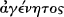
Then he identifies the sense in which both Father and Son are so: the Son is also unoriginate if one means by that ‘what
is
260 C. Ar. 1. 24–5.
261 C. Ar. 1. 26–9.
262 The centrality of this language is clear from C. Ar. 2. 5; ‘ . . .when persons ask whether the Lord is a creature or a work, it is proper to ask of them this first, whether he is
Son and Word and Wisdom. For if this is shown, the surmise about work and creation falls to the ground at once and is ended.’
263 This theme is the subject of extended discussion at C. Ar. 2. 36 ff.
THE CREATION OF 'ARIANISM' AD 340-350 113
not a work and always was’. If by the term one means ‘existing but not generated of any nor having a father’ then only
the Father is ungenerated.264 Athanasius makes this argument against the background of his insistence on the priority
of Father and Son language understood as revealing an eternal generation. At the same time we hear that the unique
nature of God involves God existing with his eternal power and wisdom: it is this triangulation of arguments that both
forces us to ask how we understand confession of the uniqueness of the divine nature to govern our habits of speech
and that attempts to persuade us that only Athanasius' answer is appropriate.
I draw attention to Athanasius' discussion of ‘unoriginate’ because of its increasing prominence in some ‘non-Nicene’
theology over the next thirty years. Thomas Kopecek has argued that Athanasius' focus on the term and his decision
to argue that the Son too is unoriginate in one sense actually stimulated some of his opponents to develop the theme of
God's unoriginate nature more strongly.265 While we lack sufficient evidence to show that this is definitely the case,
there may be some merit in Kopecek's argument. Athanasius' discussion does show him drawing attention to a key
theme in much Eusebian theology, especially in the theology of the more subordinationist Lucianists. Indeed,
consideration of the term ‘unoriginate’ in the Orations also reflects a tradition we can trace back to the dispute between
Alexander and Arius.266 Athanasius' increasing clarity in treating the Son as intrinsic to the Father's being begins to
make the lines of theological division more stark.
The Son's Divine Activity
Through the Orations Athanasius also appeals to the unity of action between Father and Son and hence to the truly
divine nature of the Son's redemptive and ‘deifying’ activity. We can see this theme appearing in Athanasius' arguments
against ‘ Arian’ exegesis through the first and second Orations. All the texts he discusses appear to indicate the Son being
created or changing status at some discernible point, Prov. 8: 22 being the subject of particularly extended
consideration. One of Athanasius' basic strategies is to distinguish between passages that speak of the Word and those
that speak of the body assumed by the Word and of the Word's
264 C. Ar. 1. 30 ff. See also C. Ar. 2. 37–8. Athanasius treats the two terms and as synonyms, using the latter far more frequently and distinguishing a
range of meanings for them. His most extensive use of is at 2. 37, but in 2. 38 he seems to treat as synonymous. Soon the two terms become more clearly distinguished. At the end of the 4th cent. pro-Nicenes assume that distinction: the Father alone is (ungenerated) while all three divine persons are αγένητος
(uncreated). For a later summary of the distinction see John Damascene, Fid. orth. 1. 8.
265 Kopecek, Neo-Arianism, I. 88 ff.
266 See Alexander, Ep. Alex. 4, 12.
114 I. TOWARDS A CONTROVERSY
‘economy’.267 In the course of building up to his reading of Prov. 8: 22, Athanasius insists that this verse cannot refer to
the ‘creation’ of the Word as such because the Word is intrinsic to the Father's action. The Word is not a mediator
because the world cannot bear God's touch: rather, the Father creates and makes immediately through his Word.268
There is no difference in willing, no communication between the two before any action occurs, the Word is the Father's
will, intrinsic to the divine mode of action.269 Athanasius' argument speaks not of two realities engaged in a common
activity, but develops his most basic sense that the Son is intrinsic to the Father's being.270 It is also, for Athanasius,
because the Word and Son is proper to the Father's essence that redemption is possible in Christ. At 2. 70 Athanasius
argues, first, that only ‘true God’ could overcome the created devil, and, second, that only one who was ‘natural and
true’ Word could draw us into the Father's presence. Salvation is a union effected between created human beings and
God that must be accomplished by a ‘mediator’ who is proper to God's essence. In these texts we see Athanasius
repeating themes found in his On the Incarnation, but we see him—stimulated by the anti-Asterian polemical
context—drawing out with increased clarity the necessity of the Word being the direct hand of God, the immediate
mediator.271
This focus goes along with some new technical terminology used in the Orations to emphasize the closeness of Father
and Son. In the latter half of the On the Incarnation Athanasius had made use of the term idios (‘proper’ or ‘own’) to
describe various qualities and activities as ‘proper’ to human nature and hence as possessed by the Incarnate Word. In
the Orations the term is frequently used to describe the Son as (‘proper’) to the Father, a usage rare before this
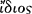
point.272 At the same time Athanasius also seems to turn to ousia language, and, especially in the first two Orations, to the
phrase (‘from the essence of ’), used at Nicaea. In fact when Athanasius uses this phrase it is almost
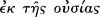
always associated withthe term as .273 Thus while many scholars rightly note the one
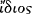
267 See J. Roldanus, Le Christ et le homme dans la théologie d'Athanase d'Alexandrie (Leiden: Brill, 1968).
268 C. Ar. 2. 24 ff. Here Athanasius quotes Asterius, Vinzent fr. 26; see Ch. 2, p. 54.
269 C. Ar. 2. 31.
270 Cf. C. Ar. 3. 11: ‘ . . .when the Son works, the Father is the worker, and the Son coming to the saints, the Father is he who comes in the Son’.
271 Cf. Incarn. 20. Incarn. has not received much discussion in this book for the simple reason that it is extremely difficult to show that it was influential on the course of 4th-
cent. theology outside Egypt.
272 Twice of this relationship at C. Gen. 2, 40 and twice more at Incarn. 3, 32.
273 e.g. C. Ar. 1. 15, 16, 36; 2. 2, 32, 41, 51, 57, 70. Some of these citations involve clear reference to the phrase even if it is not fully quoted. On the use of language see

Andrew Louth, ‘The Use of the Term in Alexandrian Theology from Alexander to Cyril’, SP, 19 (1987), 198–202.
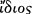
THE CREATION OF 'ARIANISM' AD 340-350 115
appearance of homoousios in the Orations as evidence of Athanasius’ lack of commitment to Nicaea's terminology at this
stage of his career, we need also to note the character of his growing engagement with Nicaea's creed.274 In the context
of anti-Eusebian polemic and in the context of his construction of the ‘ Arian’ genealogy Athanasius has seen the
virtues of ousia language to emphasize the closeness of the Son to the Father, especially the phrase ‘from the ousia of
the Father’. It is noticeable, however, that Athanasius never bothers to claim this terminology as credal; such a style of
reference did not yet exist. Nevertheless, we do see here an engagement with Nicaea, a realization that the language
used there serves an ongoing purpose. It is also noticeable that his interest in ousia language occurs at the same time as
his growing use of in the same contexts. Initially used to indicate that certain qualities and activities are intrinsic to
being human, the use of the term to indicate that the Son is to the Father's ousia serves to reinforce his tendency to

present the Father/Son relationship as most like that of a person and their faculties. Thus while this language is an
important tool in Athanasius’ armoury it probably served only to reinforce his opponents’ sense that the use of ousia
language could only serve to confuse the clear distinction between Father and Son, God and Word.
Unity and Distinction in God
The third theme concerns Athanasius’ refutation of charges that his theology implies either two unbegottens or only
one reality. In the Third Oration, possibly written c.345, Athanasius turns to texts from the Gospels, notably John. One
of the most important discussions concerns John 14: 10: ‘I am in the Father and the Father is in me’. Athanasius
argues that Asterius reads the text materially and so interprets it as meaning only that the Son follows the Father's
desires and works in the Father's power. Developing themes from the First Oration, Athanasius argues that just as the
Father is perfect, so too the Son is the ‘fullness of the Godhead’. The Father is thus not ‘in’ the Son because of the
Son's lack, not ‘in’ him in order to give life or sustain him in existence. Rather, he writes:
For the Son is in the Father, as it is allowed us to know, because the whole being of the Son is proper to the Father's
essence, as radiance from light and stream from fountain; so that whoever sees the Son sees the Father, and knows
that the Son's being, because from the Father is therefore in the Father.
274 Already Athanasius’ 339 Festal Letter speaks of the importance of Nicaea because of its size, but the creed is not yet mentioned.
116 I. TOWARDS A CONTROVERSY
Athanasius explains that there are two, but not in such a way as to compromise the divine unity:
. . .they are two, because the Father is Father and is not also Son, and the Son is not also Father; but the nature is
one (for the offspring is not unlike its parent for it is its image), and all that is the Father's is the Son's . . .if
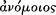
the Son be other, as offspring, still he is the same as God; and he and the Father are one in propriety and peculiarity
of nature, and in the identity of the one Godhead. For the radiance also is light, not second to the Son. . .So also the
Godhead of the Son is the Father's; whence also it is indivisible; and thus there is one God.275
Once again, Athanasius’ position develops from his basic principle that the Son's existence is intrinsic to the Father's
nature and flows from the Father's existence. But here Athanasius is able to demonstrate a little more clearly than
before that Father and Son are clearly distinct. It is, however, characteristic of Athanasius that he does not make use of
any technical terms for identifying Father and Son as two: hypostasis, πρόσωπον, and are absent. While these
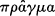
themes show the third Oration to be following a direction sketched in the first two, they also show that the third seems
to have been written a little later, responding more carefully to some of the hardest hitting accusations about
Athanasius theology.
Throughout all three Orations Athanasius condemns Asterius’ theology as itself implying some of the very same
problems that Asterius sees in Athanasius. For example, in the second Oration Athanasius argues that if Asterius sees
his account of God and his own proper Word and Wisdom as implying two unbegottens, then the same must be true
of Asterius’ account of the true Wisdom of God which is distinct from the Wisdom found in the Word.276 In many
ways this argument misses its mark: Asterius would, I imagine, simply argue that in the case of God and God's intrinsic
Wisdom we cannot imagine a distinction between two individuals. In texts such as this we see one of Athanasius’
earlier efforts to distinguish Father and Son. Criticizing the idea that Christ is a derivative Wisdom and not God's own
wisdom he writes:
Moreover, what folly is there in that thought of theirs that the unoriginate wisdom coexisting with God is
God himself, for what coexists does not coexist with itself, but with someone else
.
275 C. Ar. 3. 3–4. Cf. 3. 6: ‘ . . .he [the Son] is in that One, and First and Only, as being of that One. . .And he too is the First, as the fullness of the Godhead of the First and
Only, being whole and full God. This then is not said on his account, but to deny that there is other such as the Father and his Word.’
276 e.g. C. Ar. 2. 37–40. Note that here too Athanasius is concerned with the unity of operations between Father and Son.
THE CREATION OF 'ARIANISM' AD 340-350 117
Throughout the Orations Athanasius already prefigures key elements of later pro-Nicene theologies. He is increasingly
clear that, beyond stating the logical distinction of Father from Son, charges of modalism and materialism are most
appropriately resisted by focusing attention on the character of the divine existence as unique and beyond
comprehension. As we have seen, Athanasius is particularly clear in the Third Oration that the Father and the Son are
logically distinct and that his position is not Sabellian because of the unique nature of the divine existence in which we
must confess the perfect Son of the perfect Father in a simple and indivisible existence.
In summary, then, I suggest three statements. First, the Orations represent the first full appearance of the fourth
century's consummate act of heresiology: the wide-ranging controversy and tension between existing theological
strategies is sold to his readers as a conspiracy by a group of ‘ Arians’ seeking to perpetuate the novel theology of a
condemned heretic. Second, the Orations constitute one of the key early anti-Eusebian theological manifestos. Third, we
have as yet seen little about the extent to which this narrative or this theology was taken on board by other theologians.
We can show that Athanasius’ heresiological genealogy was taken up by Julius and by some others who followed his
lead. Our knowledge of the impact of Athanasius’ theology in these years is, however, unclear. As we shall see
throughout the fourth century Athanasius’ influence on events is something on which we should hesitate to pass too
quick a judgement.
The ‘Dedication’ Council of Antioch
I left the narrative of events with Julius' support for Athanasius and Marcellus. Julius' letter to ‘those around Eusebius’
met withan immediate response. In 341 a group of bishops present in Antiochostensibly to dedicate a churchbuilt by
the Emperor Constantius also considered Julius’ decision to vindicate Athanasius and Marcellus. Around ninety
bishops were present in Antioch, including Eusebius formerly of Nicomedia who had recently been translated to
Constantinople and Acacius of Caesarea who had succeeded Eusebius after his death c.339–40. Asterius and the
Emperor Constantius were also present. From this council in Antioch and its immediate aftermath four credal-type
documents emerged. The first occurs in a letter which begins with a preamble making clear one point that had come to
anger the Eusebians: ‘we have not been followers of Arius—how could bishops, such as we, follow a presbyter—nor
did we receive any other faith beside that which has been
118 I. TOWARDS A CONTROVERSY
handed down. . . ’.277 The bishops also assert that they were within their rights to judge the faith of Arius and admit him
to communion. This short text seems to have been issued as an immediate response to Julius. It has an urgency that
reveals something of the propaganda campaign already under way.
The second text is of considerable importance in our story. This creed seems to have been composed as a formal
extended statement of faith by the council, and is known as the ‘Dedication’ creed. Its significance demands that it be
quoted in full:
Following the evangelical and apostolic tradition, we believe in one God Father Almighty, artificer and maker and
designer of the universe:
And in one Lord Jesus Christ his only-begotten Son, God, through whom are all things, who was begotten from the
Father before the ages, God from God, whole from whole, sole from sole, perfect from perfect, King from King,
Lord from Lord, Living word, Living Wisdom, true Light, Way, Truth, Resurrection, Shepherd, Door, unchanging
and unaltering, exact image of the Godhead and the ousia and will and power and glory of the
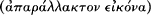
Father, first-born of all creation, who was in the beginning with God, God the Word according to the text in the
Gospel, ‘and the Word was God’, by whom all things were made, and in whom all things exist; who at the end of
the days came down from above and was born of a virgin, according to the Scriptures, and became man, mediator
between God and men, the apostle of our faith, author of life, as he says. . .(John 6: 38), who suffered for us and
rose again the third day and ascended into heaven and is seated on the right hand of the father and is coming again
with glory and power to judge the living and the dead:
And in the Holy Spirit, who is given to those who believe for comfort and sanctification and perfection, just as our
Lord Jesus Christ commanded his disciples, saying. . .(Matt. 28: 19) obviously (in the name) of the Father who is
truly Father, and the Son who is truly Son and the Holy Spirit who is truly Holy Spirit, because the names are not
given lightly or idly, but signify exactly the particular hypostasis and order and glory of each of those who are named,
so that they are three in hypostasis but one in agreement .
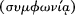
Since we hold this belief, and have held it from the beginning to the end, before God and Christ we condemn every
form of heretical unorthodoxy. And if anybody teaches contrary to the sound, right faith of the Scriptures, alleging
that either time or occasion or age exists or did exist before the Son was begotten, let him be anathema. And if
anyone alleges that the Son is a creature like one of the creatures or a product (γέννημα) like one of the products, or
something made (ποίημα) like one of the things that are made, and not as the Holy Scriptures have handed down
concerning the subjects which have been treated one after another, or if anyone teaches or preaches anything apart
from what we have laid down, let him be anathema. For we
277 Athanasius, Synod. 1. 22. All the relevant texts are to be found in subsequent sections of Synod. See also Hanson, The Search, 284–92.
THE CREATION OF 'ARIANISM' AD 340-350 119
believe and follow everything that has been delivered from the Holy Scriptures by the prophets and apostles truly
and reverently.278
The creed is divided into two halves, the first invoking a number of traditional images, the second section attempting
to offer a more technical gloss. We can identify sources for a number of phrases in both halves of the creed. The
reference to three hypostases being one in seems to go back to Origen, Contra Celsum 8. 12. The insistence that
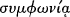
the Father is ‘truly Father’ and the Son ‘truly Son’ directly mirrors Asterius' fragment 20 and the creed that Eusebius of
Caesarea presented to Nicaea.279 The phrase describing the Son as ‘exact image of the Godhead and the ousia and will
and power and glory of the Father’ is remarkably close to a fragment of Asterius discussed in Chapter 2. Asterius has
the titles in a slightly different order, but the conclusion seems unavoidable that Asterius had a significant role in
framing the Dedication creed. For some ancient authorities this creed was originally produced by Lucian of
Antioch—at least they knew that its authors claimed such a provenance. Unfortunately there is no evidence with which
we might verify this claim, and it would anyway be unsurprising if its authors claimed their formulation embodied the
‘faith’ of Lucian as part of their own propaganda.280
The creed has a clear anti-Sabellian and anti-Marcellan thrust. It has been noted that the creed does not include a
phrase insisting that the Son's kingdom ‘has no end’. Such a phrase appears in the first creed discussed above, and
becomes a standard anti-Marcellan assertion. It is indeed an odd omission, but little should be made of it. The creed
clearly and strongly argues against Sabellian emphases and those emphases were associated with Marcellan theology.
We see these emphases, for instance, in the insistence that there are three names which ‘signify exactly the particular
hypostasis and order and glory of each’.
It is not clear if this text directly aims at supplanting Nicaea. Given the lack of a formal credal tradition at this point we
need to ask ourselves what we would mean by ‘supplanting’. The Dedication creed almost certainly intended to offer a
better and clearer affirmation of faith than Nicaea, and certainly represents the views
278 This translation is that of Hanson, The Search, 286–7, withsome modifications.
279 See also Eusebius, Marcell. 1. 4.
280 Thus I suggest we avoid the term ‘Lucianic creed’ to describe this text: such a name is the product of wishful thinking. For instance, Lienhard, Contra Marcellum, 96–7
presents the Asterius fragment as copying from the Lucianic creed and thus being forced, because of the creed's authority, to modify some of his most subordinationist emphases. There is no evidence—other than the claims of its own partisans reported at second hand—that the creed pre-dated 341.
120 I. TOWARDS A CONTROVERSY
of those unhappy with some of the key architects of Nicaea. But we cannot be certain that even its own architects
thought of Nicaea as having a universal status that might make necessary any such ‘supplanting’. Some similarities and
differences between the two creeds are, however, clearly apparent. Missing entirely is Nicaea's insistence on the Son
being from the Father's ousia: the already contested nature of this theology in 325 can only have been enhanced by
controversy over Marcellus. The 341 creed does anathematize doctrines associated by Nicaea with Arius. Thus, the
Son's generation is not to be considered as preceded temporally in any way and he is not to be considered a creature
‘like one of the creatures’. This second point is of course open to wide interpretation and probably all of those
associated with Arius himself would have been happy to agree. The use of συμφωνία to describe the unity of the
persons will of course seem wholly inadequate by the standards of later orthodoxy, but here we should probably note
its minimalism: it is a term open to wide interpretation.
Positively, the creed focuses on the Son's revealing of the Father in a manner that reflects the theological trajectory we
saw in Eusebius of Caesarea. The creed uses X from X terminology to indicate the unique nature of the Son and his
relationship to the Father—he is God from God, whole from whole, perfect from perfect. The status of the Son as
revealer of the Father is particularly clear in the phrase ‘exact image of the Godhead and the substance and will and
power and glory of the Father’. ‘Exact image’ had a widespread usage beyond ‘Eusebian’ circles: Alexander and
Athanasius both make use of it. The creed also deploys a variety of titles to emphasize Christ's revelatory
function—suchas ‘Living Word, Living Wisdom, true Light, Way, Truth, Resurrection, Shepherd, Door’.
Thus, it is difficult to pin down the theological origins of the creed: we have seen that it owes debts to Asterius (and
possibly to the mysterious Lucian), to Eusebius of Caesarea and to some aspects of Origen's legacy. But it does not
push the theological emphases of Arius. Richard Hanson describes it thus: ‘[The creed] represents the nearest
approach we can make to discovering the views of the ordinary educated Eastern bishop who was no admirer of the
extreme views of Arius but who had been shocked and disturbed by the apparent Sabellianism of Nicaea. . . ’.281 I
disagree withsome of Hanson's phrasing: ‘Eastern’ is too broad a category. I do, however, agree that the creed shows
us that many in Asia Minor, Syria, and Palestine followed a broad ‘Eusebian’ line without necessarily
281 Hanson, The Search, 290.
THE CREATION OF 'ARIANISM' AD 340-350 121
having any great time for the particulars of a theology like Arius'. In the decades that followed this creed was read in
many different ways. Indeed, just because the text commanded wide support—perhaps wider support than Nicaea in
the east—does not mean that it was clearer in expression. The reference to vague traditional expressions in the first
half and the minimalist nature of the more technical last sections may actually have enabled its wide-ranging appeal.
For Athanasius, this creed is ‘ Arian’. Around 360, however, Hilary of Poitiers treats it as pro-Nicene, arguing that its
primary intention is anti-modalist.282 Hilary's account is somewhat anachronistic: the writers of the Dedication creed
were not attempting to argue for Nicaea. However, Hilary's account is important. He offers a narration of credal
history appropriated from one of the parties that made a major contribution to the final emergence of pro-Nicene
theology. In this context Hilary saw continuity between his own theology in the early 360s and a tradition within which
the Dedication creed was of great significance. The creed was thus able to represent a variety of eastern theologies that
eventually followed separate paths. But this is to jump ahead of our narrative.
The third creed from this meeting need not concern us, it is simply a personal statement of faith made by a certain
Theophronius whose faith had been called into question. The so-called ‘fourthcreed’, however, needs attention. This
document was composed after the council as a short summary to be sent west with messengers to the Emperor
Constans.283 It reads:
We believe in One God, the Father Almighty, Creator and Maker of all things; from whom all fatherhood in heaven
and on earth is named. And in his only-begotten Son, our Lord Jesus Christ, who before all ages was begotten from
the Father, God from God, Light from Light, by whom all things were made in the heavens and on the earth,
visible and invisible, being Word, and Wisdom, and Power, and Life, and True Light; who in the last days was made
man for us, and was born of the Holy Virgin; who was crucified, and dead, and buried, and rose again from the
dead the third day, and was taken up into heaven, and sat down on the right hand of the Father; and is coming at
the consummation of the age, to judge the quick and the dead, and to render to everyone according to his works;
whose kingdom endures indissolubly into the infinite ages; for he shall be seated on the right hand of the Father,
not only in this age but in that which is to
282 Hilary, Synod. 32–3. See also Sozomen's puzzlement at the phrase ‘exact image of the essence of the Father’ at Hist eccl. 3. 5. For an ‘anti-Arian’ historian such as Sozomen
it can only seem strange that such a phrase occurs.
283 Athanasius (Synod. 25) suggested a separate meeting in Antiochcomposed the creed before sending it west. Socrates (Hist. eccl. 2. 17) and Sozomen (Eccl. hist. 3. 10)
present the three ambassadors as making up the creed for their own purposes during the embassy rather than delivering the second creed. Athanasius' story has more of a plausible ring.
122 I. TOWARDS A CONTROVERSY
come. And in the Holy Ghost, that is the Paraclete; which, having promised to the apostles, He sent forth after his
ascension into heaven, to teach them and to remind them of all things; through whom also shall be sanctified the
souls of those who sincerely believe in him. But those who say that the Son was from non-existence, or from a
different hypostasis and not from God, and, there was time when he was not, the Catholic Church regards as aliens.284
It is noticeable that this creed uses no ousia or image language. Further, it has added a direct anti-Marcellan reference:
the Son's kingdom has no end. Whoever drew up this creed seems to have been caught between a desire to be
conciliatory to the west and personal inclination to prefer a more subordinationist creed than the Dedication creed.
Over the next twenty years many creeds emanating from the Eusebians and their successors were deeply indebted to
its still ambiguous formulations.
The ambassadors from Antioch presented this fourth Antiochene creed to Constans, and both Socrates and Sozomen
report that the ambassadors were vigorous in their attempts to demonstrate their orthodoxy. Unfortunately their
mission was not purely a matter of seeking doctrinal agreement; they were also attempting to get Constans and key
western bishops to see that Athanasius' and Julius' charges against them were false and that Athanasius had rightly
been condemned for malpractice: these attempts came to naught. The deeply interwoven doctrinal and ecclesio-
political questions at issue resisted any simple solution.
The Council of Serdica: East vs. West?
During these years dispute between Constans and his brother Constantius plays an important role. In later years, after
Constans was dead, Athanasius had to defend himself to Constantius against charges that he had, in 342–3,
encouraged Constans to oppose his brother. In his Apology to Constantius Athanasius claims that he never met with
Constans alone, but he does tell us that ‘certain bishops’ encouraged Constans to write to his brother suggesting a joint
council to resolve the disputes that had arisen.285 Constantius was at war withthe Persians and in a mood to be
conciliatory. Invitations were sent out (we do not know how widely) to a council that would meet in 343 at Serdica
(modern Sophia), a city near the
284 Athansius, Synod. 25. The fact that the penultimate anathema condemns only those who think of the Son as coming from a different hypostasis, and does not parallel ousia is
probably not significant. It may even serve as backing for the idea that the two terms in Nicaea's anathema were understood as synonymous.
285 Athanasius, Apol. 3–4.
THE CREATION OF 'ARIANISM' AD 340-350 123
border between Constans’ half of the empire and Constantius’. Constans himself attended.
The council was a disaster: the two sides, one from the west and the other from the east, never met as one. Before
seeing why, we must consider the nomenclature of ‘western’ and ‘eastern’ used to describe the two parties. We cannot
identify with certainty those who constituted the approximately 95 bishops who are counted as ‘western’, but we can
make some progress.286 Of these 95 we can identify 33 as coming from modern-day Greece, around 10 from the
modern Balkans southof the Danube (Moesia, Pannonia, Dacia), and 5 from further east and south (including
Athanasius and Marcellus). Fifteen of the remaining half came from Italy, the majority from northern Italy: the Gallic
and Germanic provinces seem to have delivered only 2 or 3 bishops. These figures must remain tentative: around 20
of the 95 probable attendees are not identifiable. Nevertheless, clear conclusions can be drawn: at least half of those
attending the ‘western’ meeting were from areas to the east of northern Italy and the largest single block of attendees
were the Greek and Balkan bishops. The ‘western’ council was as localized as most during this century. The
demographics of the council demonstrate the errors of assuming that Greek-speaking areas of the east divided clearly
in theology from the Latin-speaking west. Just as northern Italy and the area of the former Yugoslavia sustained a
strong anti-Nicene presence through the second half of the century, the area of modern-day Greece sustained a strong
tradition of support for anti-Eusebian theologies. ‘East’ vs. ‘West’ is far too clumsy a tool of analysis for almost
anything in the fourth century.
While Constans promoted the interests of the anti-Eusebian bishops who had prompted him to the idea of a council
(he perhaps hoped to influence ecclesiastical affairs across the empire), so too Constantius attempted to assert his
authority, sending imperial officials with the bishops who headed unwillingly towards Serdica. These bishops made
their way to Philippopolis, 100 miles south-east of Serdica, and at the furthest edge of the area under Constantius'
control. En masse they travelled to Serdica, and were quartered in
286 On the council see Hanson, The Search, 293 ff.; Simonetti, La Crisi, 161 ff.; Hess, Canon Law ; Leslie W. Barnard, The Council of Serdica, 343 AD (Sofia: Synodal Publishing
House, 1983). The list of attendees at the ‘western’ council remains uncertain: four lists survive: at Athanasius, Apol. sec. 48; Hilary, C. ant. Par. B. 2. 3–4; in a letter from the council to the church of the Mareotis and in a letter from Athanasius to the same church, see EOMIA 1/2. 658, 660. See also the discussion of J. Zeiller, Les Origines Chrétiennes dans les provinces danubiennes de l'empire romain (Paris: De Boccard, 1918), 233 ff. For the best reconstructed texts and discussion of the ‘western’ creed see Martin Tetz, ‘Ante omnia de sancta fide et de integritate veritatis: Glaubensfragen auf der Synode von Serdica (342)’, ZNTW 76 (1985), 243–69.
124 I. TOWARDS A CONTROVERSY
the imperial palace there. Two of their number changed sides, but the majority refused to meet with the ‘westerners’
who wished Athanasius and Marcellus to be allowed normal participation in the meeting. The ‘easterners’ had no
intention of allowing the ‘westerners’ to revoke the decisions of their councils. After much manoeuvring the ‘eastern’
bishops wrote what amounts to an apology and a statement of faith, excommunicated all the ‘western’ leaders at
Serdica, and retreated to Philippopolis, where these documents were formally promulgated. The statement issued by
the ‘easterners’ consists of the fourth creed of Antioch with its anathemas and an extra clause aimed at a variety of
positions, including ‘those who say. . .that Christ is not God’.287 This addition is obviously enough aimed at ‘western’
fears that the ‘easterners’ were ‘ Arians’, but its ambiguity also reminds us of the variety of ways in which the term
‘God’ could be deployed at this point. While this statement of faith is of interest, the letter by which it is prefaced
reveals much about how the ‘easterners’ viewed events at Serdica. The letter begins by condemning Marcellus, accusing
him of stating that Christ becomes image, bread, door, and life only with the incarnation (in such accusations we see
how the mere list of titles in the Dedication creed could itself be understood as anti-Marcellan polemic). Marcellus has
also been legitimately deposed by a council in Constantinople at which Constantine himself was present (no doubt
there is here a not so subtle jab at claims about Nicaea's condemnation of Arius). Only then does the letter turn to
Athanasius, focusing on his tyrannical behaviour and previous condemnation. Finally, the ‘easterners’ justify their
excommunication of the chief ‘westerners’ and reject their council ‘made up of this curdled blend of lost souls’.
The ‘western’ bishops issued a number of documents,288 the most important for our purposes being a long profession
of faith. It is not clear that this text was a formal statement promulgated by the whole meeting, it seems more likely
that some of the council's leaders drew up the text in response to a statement which does not survive from Ursacius
and Valens, two members of the eastern council. These two were from the Roman region of Illyria (very roughly
covering the area of former Yugoslavia). They had been present at Tyre when Athanasius was condemned and quickly
gained a reputation for promoting the ‘ Arian’ cause. It is at least intriguing to note that Arius himself was exiled to their
homeland. The Serdican statement that they were ‘born from the Arian asp’ may reflect knowledge of actual contact
with Arius. We shall meet them again over the next
287 For the ‘eastern’ text see Hilary, C. ant. Par. A. 4. 1.
288 Hanson, The Search, 299 provides a list. The profession of faith produced by the western council is most easily found at Theodoret, Eccl. hist 2. 8. The Latin original does
not survive.
THE CREATION OF 'ARIANISM' AD 340-350 125
twenty to thirty years in promoting theologies which seem to owe much to ‘Eusebian’ influence, although their
pragmatism led them to seek agreement with Athanasius when circumstances demanded.289
The statement itself refutes three ‘ Arian’ arguments supposedly put forward by Valens and Ursacius: Christ is not true
God and has a beginning before time;290 the Logos suffered and died; the hypostases of Father, Son, and Spirit are
different. The statement tells us that Father, Son, and Spirit have only one hypostasis or ousia. The Son has no beginning
or end in time and exists eternally, the Son is from the Father as the Father's ‘true’ Wisdom and Power and Word. The
Logos is only-begotten ‘[because] he always was, and is in the Father’. The names Father and Son indicate their
correlative inseparability and yet there is one Godhead in both. The text goes on to insist that the two are distinct
because ‘the Father is Father, and the Son is the Father's Son’ and also that the Father is superior to the Son ‘not
because of difference, but because the very name itself of the Father is greater than that of the Son’. One of the
oddities of this text is its seeming lack of any doctrine of the Spirit: although Father, Son, and Spirit are all named and
said to share a hypostasis, elsewhere the statement speaks as if the Spirit were identical with the Logos and once
describes the Son as ‘Logos-Spirit’ . The statement offers no technical terminology for identifying what
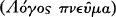
Father and Son are as distinct. One of the only helpful technical distinctions it makes clear is to distinguish carefully
‘begotten’ (γέννητος) and ‘created’ (γένητος): those who interpret begotten by means of created are condemned.
‘ Arianism’ is also defined in such broad terms that almost any theology which was willing to insist on there being more
than one hypostasis was in error.291
The fact that the letter openly invokes the name of Arius to describe the eastern bishops is one indication that an
Athanasian account of the conflict had been influential. The text then does not simply serve as a window onto western
theology in the early 340s. It does, however, serve as a window onto the increasingly divergent concerns of the
theological trajectories now in conflict. Concerns
289 Michel Meslin, Les Ariens d'Occident (Paris: Éditions du Seuil, 1967) asserts that as a border region, Illyria was influenced by both sides. This is unsustainable: to the east and
south it seems likely that Illyria was bordered by regions that strongly supported what Meslin would think of as ‘western’ theologies. On the place of Valens and Ursacius in anti-‘Arian’ polemic see Barnes, ‘Canon’, 58.
290 This clause oddly attributes both beginning and end to Christ: my account follows Hall's gloss and explanation of what is meant, Stuart Hall, ‘The Creed of Sardica’, SP 19
(1989), 178–9.
291 Here I adapt Kopecek, Neo-Arianism, I. 85: ‘it issued an encyclical which defined Arianism so broadly that nearly every easterner who had ever heard of Origen was
considered Arian’.
126 I. TOWARDS A CONTROVERSY
among Eusebians about the Father's transcendence pushed in very different directions from theologians whose main
concern was to show a direct continuity of being between Father and Son. Confusion and misunderstanding in
terminology was accompanied by deep disagreement over models of participation and generation: conflict had the
effect of highlighting long-existing tensions.
This text also tells us a little more about perceptions of Nicaea among its own partisans. Bishops such as Ossius,
Athanasius, and Marcellus were present at Serdica and yet willing to turn to an alternative statement of faith, just as
many of their eastern counterparts had done at Antioch two years before. This reflects not an attempt to overturn the
decisions of Nicaea, but a context in which conciliar formulations were not seen as fixed. After the council Ossius and
Protegenes the bishop of Serdica wrote to Julius of Rome. The letter begins by saying that while circumstances
demanded a supplementary statement they in no way intended to alter Nicaea's decrees (and here we perhaps find the
first direct mention of Nicaea's creed since 326–7).292 Nicaea's specific terminology was not treated as the obvious
starting point for setting out the theology it was taken to indicate as orthodox.
Confusion and Rapprochement: AD 344–350
The remainder of the 340s requires much less discussion. Richard Hanson rightly characterizes this period as one in
which the failure of Serdica eventually prompted attempts at rapprochement.293 These years do demonstrate that few as
yet shared Athanasius' rhetorical presentation of this controversy as revolving solely around two opposed theological
options. While some saw a clash between different theological trajectories, many others also assumed that political
motives were behind much of what had happened in the previous fifteen years, and that some middle ground could be
found.
Once again Constans appears to have taken a lead in events. Philostorgius and Socrates even quote from what they
allege are letters in which Constans threatens his brother with civil war if he will not permit Athanasius to return to
Alexandria.294 There is a good chance that these letters are forgeries, it being unlikely that
292 See EOMIA I. 644, tr. Hall, ‘Sardica’, 174. The relevant section runs, ‘We remember and hold and keep that statement which contains the Catholic Faith composed at
Nicaea, and all the bishops present agreed. But since the disciples of Arius stirred up blasphemies. . .we set out a fuller and longer (faith) agreeing withthe first. . . .They [the bishops at Serdica?] decided that the former should be firm and fixed, and that these are to be worded more fully with a sufficiency of truth. . . ’
293 Hanson, The Search, 306–14.
294 See Socrates Hist. eccl. 2. 22–3, Sozomen, Hist. eccl. 3. 20.
THE CREATION OF 'ARIANISM' AD 340-350 127
Constans would have threatened war over Athanasius but the general impression that Constans was keen to assert his
own ecclesiastical policy seems to be borne out by events. In 344 a delegation of three bishops made their way to
Antioch to seek agreement. This meeting came to naught, largely because of the machinations of Stephen, the bishop
of Antioch. For his part in this affair—which reads like a plot from an afternoon soap opera—Stephen was deposed.295
His successor Leontius encouraged attempts at rapprochement and, in the very next year, we find an embassy from
Antioch heading west with another credal statement. This statement is considered below. In the summer of 345
Constantius permitted Athanasius back to Alexandria, probably in the knowledge that the Gregory who had replaced
Athanasius in 339 was dying. Athanasius made his way back cautiously, visiting Constantius, and did not arrive until
346. Probably in 345 and 347 we even find the two bishops Ursacius and Valens willing to enter into communion with
Athanasius (although we have no knowledge of what this, if anything, meant in practice).296 Athanasius' arrival in
Alexandria marked the beginning of the longest stretch of his episcopate spent in possession of his see: he remained
until 356.
The formula of faith brought west in 345 now demands our attention. This document, known as the ‘Macrostich’
creed (‘long-lined’), consists of a slightly changed version of the fourth Antiochene creed with a long explanation.297
While the Macrostich (‘long-lined’) creed appears to have been composed by theologians unhappy with the ousia
language deployed in the Dedication creed, it also goes to considerable lengths to demonstrate that there is some sort
of continuity of being between Father and Son. This paradox is clearest in the middle of the text where we find a
concerted attempt to steer between presenting Christ as ‘God before ages’ and what is described as Paul of Samosata's
teaching that Christ became God: ‘though he be subordinate to his Father and God, yet, being before ages begotten of
God, he is God according to his perfect and true nature ’. The text argues
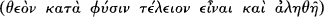
against Marcellan doctrines which (echoing Origen's presentation of Monarchian doctrine in his Commentary on John)
treat the Word as ‘mere word of God and unexisting, having his being in another’ . Not only
Marcellus is named, but also his disciple Photinus. Photinus had recently become bishop of Sirmium
295 Theodoret, Eccl. hist. 2. 7–8. Stephen attempted to hide a prostitute in the bishops’ quarters hoping to discredit their embassy.
296 See Athanasius, Apol. sec. 58, Hilary. C. ant. Par. B. 2. 6 and 8.
297 Hanson, The Search, 309–12. The text may be found at Socrates, Hist. eccl. 2. 19 and Athanasius, Synod. 26.
128 I. TOWARDS A CONTROVERSY
(modern Mistrovica in Serbia). He is of importance here because his theology seemed to many Latin theologians to
imply a form of adoptionism and thus helped to secure some measure of western suspicion of Marcellus.
Against this theology the Macrostich confesses the Son as ‘living God and Word, existing in himself ’.
. The Son, in a phrase that will have a long history in the fourth century, is ‘like in all
things to the Father’ . Twice here the Son is also presented as ‘image’ of God, but
the language is not deployed as a central terminology (again in contrast to the Dedication creed). This position is
followed by condemnation of those who treat Father, Son, and Spirit as three names of one reality (πράγμα) or person
(πρόσωπον). Interestingly, this doctrine is described as the teaching that ‘Romans call Patripassianism’: that the writers
go out of their way to demonstrate that what they condemn is also condemned in Rome shows the apologetic aim of
the text.
The early sections of the Macrostich insist that the Son is not coingenerate and the Father alone is unbegun and
ingenerate. That the text places this assertion so near its beginning leads Kopecek to read the Macrostich as a direct
response to Athanasius' discussion of ingeneracy in his First Oration.298 While this may well be the case, we have no
direct evidence. The text goes on to argue that there are three realities (πράγματα) or persons (πρόσωπα), but makes no
mention of hypostases. This does not, we are told, mean three Gods because there is only one ingenerate, unbegun and
because the Father ‘who alone has existence from himself, and alone gives this abundantly to all others'
. This phrasing is confusing: the text describes some sort of shared
being stemming from the Father as the guarantor of unity, but as throughout this text, the verb is used substantively in
place of the noun ousia. By sucha tactic the creed's framers bothavoid any connotations that a material division in God
is intended or that there are two divine principles. At the same time the substantive use of the verb leaves much
ambiguous, the existence bestowed can much more easily be understood as secondary and in some ways inferior. The
text does, however, endeavour to show that the three are not separated in any simplistic sense. At the end of the text
we find that Father and Son ‘are united with each other without mediation or distance ’ and
that they ‘exist inseparably ’,
298 One might also note the text's citation of Prov. 8: 22 to indicate the Son's subordination. But this text has a long history of being used thus and cannot be seen as directly
anti-Athanasian here without further evidence.
THE CREATION OF 'ARIANISM' AD 340-350 129
all the Father embosoming the Son, and all the Son hanging and adhering to the Father. Again they are not two Gods,
beca u s e ther e is ‘ one d ignity of G od hea d , a nd one ex a ct ha r m ony of d om inion ’
.
The text clearly moves beyond the theology of some of the earlier ‘Lucianists’ in not insisting that only the Father is
true God and that assertions of unity in God are about the Father's status alone. For this document the Son is
generated in such a way that the unity of God somehow encompasses Father and Son as distinct beings. In traditional
Eusebian fashion, we read that the Son is generated from the Father's will as the only alternative to being generated by
necessity. While this insistence is clearly aimed at presentations of the Son as intrinsic to the Father's being, it is notable
that the text does not use generation by will to emphasize that the Father's nature is not shared. Once again the
conciliatory tone of this text is clear.
This text is still far from later pro-Nicene orthodoxy, but it is noticeable that the two points at which it demonstrates
the most development within its own trajectory form two constant areas of discussion over the following decades.
First, the Macrostich searches to find ways of defining the Father's generation of the Son as a sharing of the divine
existence, but without compromising the unity of God and without materialist connotation. The result is not
particularly successful and the hierarchical scheme within which this occurs remains unaltered. Second, the text focuses
quite directly on the logic of asserting three distinct ‘realities’ while still finding a way to indicate their unity: distinction
need not mean a differentiation parallel to that found in creation. Hypostasis language is avoided in the hope of
convincing westerners that a plurality of divine beings is not intended, but the continued strong hierarchy and refusal
of eternal generation were no doubt central reasons why its intended audience seems to have refused the olive branch
that was being offered. The creed was presented at a council in Milan in 345, but the easterners were required to
condemn Arius before their creed could be discussed. This insult had a predictable result and the embassy returned
east.
At the end of the 340s we have, then, a confusing situation. Political tensions between Constans and Constantius have
shaped a controversy between a key group of eastern bishops and their Roman, Balkan, and some other ‘western’
counterparts. That controversy is indeed partly theological, in that controversies between Marcellan and Eusebian
theology, and then between Eusebian theology and the theology expressed in the ‘western’ letter from Serdica have
brought into renewed conflict the tensions between the trajectories we saw in
130 I. TOWARDS A CONTROVERSY
the early part of the century. At the same time the conflict of the 340s is also deeply political, both in ecclesial terms
(what form of appeal is possible following conciliar condemnation? can eastern and western councils interfere in each
other's business? can one appeal to Rome?) and in extra-ecclesial terms. In the last years of the 340s not all saw the
controversy in the simple terms offered to us by the Orations against the Arians. Indeed, when circumstances permitted,
Athanasius himself could come to terms with Constantius, the Eusebians could try to explain themselves to westerners
and Constans, and Serdica could be to some extent overlooked. But this period of rapprochement resolved nothing:
the tensions remained.
This page intentionally left blank
This page intentionally left blank
II The Emergence of Pro-Nicene Theology
6 Shaping the Alternatives: AD 350–360
Constantius and the Rise of the Homoians
Over the period AD 351–3, and after a complex civil war, the eastern Emperor Constantius achieved complete control
of the whole empire.299 Constantius' brother Constantine II had been killed in 340 during an attempt to encroach on his
brother Constans' agreed area of influence. In early 350 one of Constans' leading generals, Magnentius, was proclaimed
Augustus. Constans was killed, but Constantius rejected Magnentius' attempts to come to terms politically. Two other
figures withconnections to the Constantinian dynsaty were soon after also declared emperor: one, Nepotianus, was
defeated and killed by Magnentius; the second, Vetranio, was able to keep Magnentius out of the Balkans, eventually
gave way to Constantius and retired. Magnentius himself was able to hold off Constantius' forces for some time.
Constantius was fighting the Persians when news of the rebellion came to him and was unable to head west until the
latter months of 350. Constantius, after some setbacks, eventually pushed Magnentius out of Italy in 352 and then, in
353, he defeated Magnentius in Gaul and the usurper committed suicide. At this point Constantius found himself sole
ruler of the Roman world and with the ability to push for a unified religious policy throughout his domains in a way no
emperor had been able to do since the death of his father in 337. These political events had a profound effect on the
course of the ecclesiastical controversies we have been following. The policies Constantius now pursued in the west
were, in part, responsible for the emergence of a clearer theological conflict and—by the end of the decade—for
pulling together many of those who together shaped what would come to be recognized as ‘Nicene’ orthodoxy during
the early 380s.
Constantius has frequently been seen as a ruthless and brutal ruler and was painted by later pro-Nicene writers as a
persecuter of supporters of Nicaea. The true picture is more complex: within the fourth-century context Constantius
was a fairly mild ruler.300
299 The story is introduced in CAH xiii, ch. 1. See also Hanson, The Search, 315–25.
300 See Richard Klein, Constantius II und die christliche Kirche (Darmstadt: Wissenschaftliche Buchgesellschaft, 1977). Klein's account is overly partial and should be
supplemented withBarnes, Athanasius and Constantius.
134 II. THE EMERGENCE OF PRO-NICENE THEOLOGY
However we present his character, Constantius was certainly deeply interested in the affairs of the Church. As his
control over the empire grew Constantius pursued a policy of encouraging rapprochement between ecclesiastical
groups, but within the framework of the Eusebian theology that was so influential in the east. Although Constantius
worked for the acceptance of some very precise ecclesio-political decisions—especially, for much of his reign, the
condemnation of Athanasius—his policies were in general pragmatic. He seems to have desired a basic formulation of
the theological issues at stake that would (within some bounds) enable as many as possible to agree, and he was not
beyond subterfuge and force to achieve public agreement between factions. In this initial section of the chapter I want
to sketch the course of the 350s by focusing on two councils that met as Constantius' control over the west grew.
The first council met at Sirmium in 351 while Constantius was present in the city on his way west.301 The focus of this
council was the examination and condemnation of Photinus, bishop of Sirmium. As perhaps the most visible
representative of a Marcellan theology in these years Photinus had already been condemned at a number of councils
during the latter half of the 340s. He seems to have been popular in Sirmium and to have successfully resisted his
deposition for some years. The purpose of this council on Photinus' own territory seems to have been to enforce the
deposition that had not followed those previous condemnations. Photinus' main accuser at the 351 council was Basil
of Ancyra. Basil had succeeded the deposed Marcellus in 336 and came to play a highly significant role during this
decade (his own theology will be discussed shortly). The creed issued by this council is of importance for our narrative,
and is largely a copy of the fourth Antiochene creed with a series of anathemas attached. Two of these strongly
condemn some uses of ousia language. From these anathemas it seems that the signatories to the creed were
particularly worried that linking the Son and Father with ousia language implies the Father's being is ‘extended’
(πλατύνεσθαι) in the generation of the Son. There are also a number of attacks on the idea that Father and Son are
coeternal or two (equal) Gods. While the Son is ‘before the ages’ he is not unbeginning or without origin, and is
subordinate to the Father.302
301 Hanson, The Search, 325–9, Simonetti, La Crisi, 202–6.
302 For the creed see Athanasius, Synod. 27, Socrates, Hist. eccl. 2. 30. The sixth and seventh anathemas read, ‘(6) Whosoever shall pretend that the essence of God is dilated or
contracted, be he anathema. (7) Whosoever shall say that the essence of God being dilated made the Son, or shall name the dilation of His essence Son, be he anathema.’ For the subordination of the Son, the eighteenth anathema says, ‘ . . .For we do not place the Son in the Father's order, but as subordinate to the Father.’
SHAPING THE ALTERNATIVES AD 350-360 135
Some scholars have seen in the anathemas a direct attack on the language of Nicaea itself. We cannot be certain that
this is so, but the combined attack on uses of ousia language that have materialistic implications and on the conception
of two coeternal ‘Gods’ begs a number of questions. While the former seems aimed at Photinus, the latter seems to be
aimed at other theologies that seem to exhibit Marcellan tendencies. We may at least see this as an only partially cloaked
attack on Athanasius and the theologies of other early partisans of Nicaea. Photinus’ ‘materialism’ is seen to be part of
a range of problems, problems that we see combined as early as the attacks on Alexander by Arius' supporters. Those
attacks now seem to be more clearly focused around the ousia language used at Nicaea. That an attack on ousia language
in general should follow from anti-Photinian and anti-Marcellan concerns nicely illustrates why there was such strong
resistance to Nicaea even among those who eventually came to recognize that they were travelling roads parallel to that
of Athanasius—such as Basil of Ancyra himself. The opinions opposed in the 351 anathemas are the same as some of
those opposed in the Macrostich; but here there is no conciliatory olive branch and the opposition itself is more
directly and clearly stated.
The council of Sirmium in 351 set the trend for a series of councils in which Constantius attempted to get the
condemnation of Athanasius and probably some sort of theological statement accepted throughout the west.303
Timothy Barnes argues that the decisions of Sirmium 351 formed the basis for the decisions Constantius wished
westerners to agree to at these subsequent meetings.304 The evidence for such a precise link is not conclusive, but as his
control over the west grew Constantius increased his attempts to get bishops to agree to the key eastern decisions of
the previous few years. Constantius may also have sent the decisions of councils in Arles (353) and Milan (355) to non-
attending bishops, forcing them to sign on pain of exile.
In most older presentations, ‘western’ bishops were taken to be natural and stalwart defenders of Nicaea throughout
the fourth century. The 350s show how Nicaea only slowly came to be of importance in the west. We do not know
how well the Nicene creed was known in the west between 325 and 350. We do know that some western Church
leaders revered Nicaea's ‘judgements’, if not the
303 We cannot be certain that a doctrinal statement always accompanied Constantius’ demands for the condemnation of Athanasius. Hanson, The Search, 329–31 makes a
strong case, based on a variation of the arguments in Klaus Martin Girardet, ‘Constance II, Athanase et l’édit d'Arles (353): A propos de la politique religieuse de l'empereur Constance II’, in Charles Kannengiesser (ed.), Politique et Théologie chez Athanase d'Alexandrie (Paris: Beauchesne, 1974), 63–91. The evidence of Sulpicius Severus, Chron. 2. 39 is important.
304 See Barnes, Athanasius and Constantius, 109 ff.
136 II. THE EMERGENCE OF PRO-NICENE THEOLOGY
wording of the creed: as we saw in the case of Ossius and Protogenes. Through the 350s, however, we seem to see a
growing opposition to Constantius’ attempts to force western councils to agree to the decrees of Sirmium 351, and at
the core of this opposition are figures later central in the formation of Latin pro-Nicene theology. It seems unlikely that
previous adherence to Nicaea motivated their growing opposition: it is much more likely that events in the second half
of the decade prompted a turn to Nicaea as a focus for their already strong opposition. This opposition was both
theological and political, and remained both even as the theological alternative became clearer in the 350s and 360s.
Julius of Rome died in 352 and was succeeded as pope by Liberius (352–66). A letter from Liberius to Constantius,
written after the council at Arles in 353, demonstrates that the new Pope soon attempted to resist Constantius’ policies.
Liberius explains that although the easterners have condemned Athanasius he knows of a larger council of eighty
Egyptian bishops in Alexandria that has vindicated him. It thus seems inappropriate to follow only the smaller
gathering. Moreover, he notes, some of those in charge of the current ‘eastern’ strategy have shown themselves
worryingly unwilling to condemn Arius' views. Liberius then calls on the Emperor to summon a council as his father
Constantine had done.305
Liberius was not alone in his resistance. He sent the letter to Constantius with Lucifer, bishop of Cagliari. At the same
time he wrote to Eusebius, bishop of Vercelli, encouraging him to take a similar stand. Both of these bishops seem
already to have been important voices in Italy, and established defenders of Athanasius. In his letters Liberius is
disturbed that even bishops he knows well agreed to the condemnation of Athanasius at Arles and, by implication,
have consorted with those of Arian tendencies. Western bishops had been both willing to sacrifice Athanasius when
threatened and either did not yet see the easterners as Arian or were ignorant of the theological undercurrents at work.
Liberius' request for a council was granted and Constantius summoned all western bishops to Milan for 355.
In the first session of this meeting Eusebius of Vercelli attempted to divert the council from condemning Athanasius,
Marcellus, and Photinus by demanding that all agree on the Nicene creed before other business.306 The leaders of the
‘easterners’, including Valens and Ursacius, prevented this happening and either persuaded the council to issue or with
a group of others issued decrees in the name of the council condemning Athanasius and the others. Eusebius and
305 Liberius’ letter is in Hilary, C. ant. Par. A. 7. 6
306 Daniel H. Williams, Ambrose of Milan and the End of the Arian—Nicene Conflicts (Oxford: Clarendon Press, 1995), 52 ff.
SHAPING THE ALTERNATIVES AD 350-360 137
Lucifer were exiled, along with Dionysius the bishop of Milan. Eusebius and Lucifer were sent east, where they were
able to maintain some measure of correspondence with their allies and learn more about the theological situation
outside Italy.
This last clause is of importance: as we shall see, both eventually returned to Italy having developed considerably. In
this they were not alone. We have not so far mentioned Hilary, bishop of Poitiers, another victim of the new order in
the west. Hilary was exiled to Phrygia in Asia Minor in 356 at a small council in Bitterae, which also met as part of this
sequence of councils called to implement Constantius’ policies. Although modern accounts have often presented
Hilary as already an anti-‘ Arian’ champion, there is no evidence for this. A compelling case has been made that Hilary
fell foul of Saturninus, bishop of Arles, one of Constantius' main advisers in Gaul on largely political grounds.307 Hilary
demands mention here, however, because he is the most famous example of a bishop who returned from exile to play
a significant role in the evolution of Latin pro-Nicene theology. Hilary was also present at Milan, and he claims that it
was there he first heard the Nicene creed recited.308 The statement need not mean he had not heard of the creed before
that date, but that he had not heard the creed recited in a public context as an authoritative statement of faith.
We need now to move forward to another meeting of bishops at Sirmium in 357. Here we see a significant turning
point, leading to deep shifts in allegiance and the emergence of new alliances and oppositions. This meeting was
attended by only a few bishops,309 and it is not clear whether we should think of it as a formal council or as a small
gathering of like-minded bishops that offered a summary confession as a contribution to the ongoing theological
struggle. The ‘manifesto’ was probably composed by Ursacius and Valens, possibly withPotamius, bishop of Lisbon. It
is striking to note that Hilary presents Ossius of Cordoba as partly responsible.310 Hilary's attribution seems to reflect
anger at the aged Ossius (who may well have been approaching his hundredth year), rather than a likely supposition.
Under considerable pressure Ossius signed, having resisted agreeing to the deposition of Athanasius for some years.
One of the notable things about the fourth Antiochene creed of 341, on which this document unsurprisingly draws, is
the absence of
307 See Daniel H. Williams, ‘A Reassessment of the Early Career and Exile of Hilary of Poitiers’, Journal of Ecclesiastical History, 42 (1991), 202–17.
308 Synod. 91.
309 Hanson, The Search, 343 ff. and Simonetti, La Crisi, 227 ff. indicate the confusion in the sources. On the role of Liberius and the theology of 357 see also Brennecke,
Hilarius, 292–334.
310 Hilary, Synod. 11; C. Const. 23.
138 II. THE EMERGENCE OF PRO-NICENE THEOLOGY
ousia terminology (which some have read as a pointed absence). Sirmium 351 had not only omitted ousia language, but
positively condemned some uses of that language. The confession of 357 even more strongly argues against ousia
language, condemning use of it tout court:
But as for the fact that some, or many, are concerned about substance (substantia) which is called ousia in Greek, that
is, to speak more explicitly, homoousion or homoiousion, as it is called, there should be no mention of it whatever, nor
should anyone preach it.311
Strong ambivalence to Nicaea, or a wish to ignore its terms, has turned to direct opposition. This text demonstrates
growing clarity among some theologians that resulted in the emergence of ‘Homoian’ theology.312 Ecclesiastical parties
are complex and often fluid entities—and the Homoians were particularly so.313
Over the next two or three decades Homoian theologians come in different varieties, but are united in their strong
resistance to any theologies that see commonality of essence between Father and Son. Homoians were willing to talk of
Son being ‘like’ ( —homoios) the Father, or ‘like according to the Scriptures’, but all further technical terminology
was avoided—although a clear subordination emphasis was understood to be implied by ‘like’. The leadership of this
alliance was always diverse. In the east Acacius of Caesarea (bishop from 340 to c.365), the successor of Eusebius of
Caesarea, was a powerful figure, and a bishop who had significant influence withConstantius.314 Eudoxius, bishop of
Antiochfrom 357 and bishop of Constantinople 360–70, was also prominent.315 It included bishops of different stripes
united by the desire to find a solution to the ongoing controversy that would rule out any theologies seemingly tainted
withMarcellan emphases. Homoians are found in east and west, but Greek- and Latin-speaking Homoians follow
different
311 Hilary, Synod. 11, this translation is that of Hanson, The Search, 344–5.
312 Hanson, The Search, 557–97, offers an account of Homoian theology. Unfortunately Hanson does not differentiate eastern and western Homoianism. See also Roger
Gryson, Scolies Ariennes sur le Concile d'Aquilée, SC 267 (Paris: Éditions du Cerf, 1980) 173–200; Brennecke, Geschichte der Homöer.
313 For some scholars it is inappropriate to speak of Homoians until the Dated creed of 359 on the twin councils of that year. Such is the position of Daniel Williams in Ambrose
of Milan. Such a strict dating may make us forget the slow emergence of this theological grouping during the 350s, let alone the presence of likeness language throughout the first half of the fourth century, and its presence in such credal documents as the Macrostich.
314 For Acacius see JosephT. Lienhard, ‘Acacius of Caesarea: Contra Marcellum. Historical and Theological Considerations’, Cristianesimo nella Storia, 10 (1989), 1–22; J. M.
Leroux, ‘ Acace évêque de Césarée de Palestine (341–365)’, SP 8 (1966), 82–5.
315 Eudoxius initially supported the most radically subordinationist Homoians (see the discussion of Aetius and Eunomius later in the chapter), but broke withthem and
became a significant influence on the emperor Valens in the 360s.
SHAPING THE ALTERNATIVES AD 350-360 139
lines of development. In particular, Latin Homoians managed to contain some of the distinctions that resulted in
distinct groupings in the east.
Even as it formed, this group found itself fracturing with the emergence of those who push the subordinationist
impulse of Homoian theology even further and increasingly interpret ‘likeness’ as indicating a fundamental distinction
in essence (those whom we will term Heterousians). Once we have grasped the rifts between Sirmium 351 and
Sirmium in 357 we can understand more clearly how theological opinion was now beginning to be more clearly divided
and focused. Constantius’ seeming support for this broad trajectory encouraged some of its partisans to push a
subordinationist agenda withincreasing clarity.316 At the same time, as we shall see shortly, the same imperial support
seems to have encouraged some opponents to turn to Nicaea as the only other possible standard of faith. Thus, with
the emergence of Homoian theology the stage is set for the emergence of the groups who were to develop the solution
to the controversies as a whole.
It is important to note the extent of western reactions to the Sirmium 357 manifesto. We have already seen the
beginnings of attempts on the part of a few to turn to Nicaea as a standard against the direction of Constantius’
policies. Events of 357 deeply shaped this movement. We have a number of surviving texts written in response:
Phoebadius bishop of Agen in southern France wrote a short Contra Arianos in direct reaction and Hilary of Poitiers
wrote his De synodis (discussed in the next chapter) partly in response.317 The appearance of this literature seems to have
further helped to raise consciousness in the west of the doctrinal issues that now seemed to be increasingly at stake.
From the discussion of Chapter 4 it will already be clear that the character of adherence to Nicaea changed significantly
through the century: in the same way there is no single theology of opposition to Nicaea. Many of the theologies we
have considered so far are non-Nicene more than anti-Nicene: only in the 350s do we begin to trace clearly the
emergence of directly anti-Nicene accounts. It is because of this fluidity that I cannot follow Richard Vaggione in his
excellent Eunomius of Cyzicus and the Nicene Revolution when he suggests
316 One of the most striking examples from the late 350s concerns Eudoxius’ arrival in Antioch in 357. He claimed authority for his presence from Constantius and proceeded
to support Aetius. Such actions created the impression of a logical direction to the Homoian programme, but also reveals the fluidity of this alliance.
317 It is sometimes alleged that the second book of Marius Victorinus’ anti-Arian writings, the first Letter to Candidus was stimulated by the Sirmium manifesto. There is no
evidence to support this claim. It seems more likely that the whole collection was composed after Basil of Ancyra's 358 council.
140 II. THE EMERGENCE OF PRO-NICENE THEOLOGY
that we can conceive of the various theological strands of the fourth century as fitting into two ‘interpretive
frameworks’, the Nicene and the non-Nicene.318 While Vaggione handles the evidence with subtlety, allowing this
architectonic assumption to stand gives a cast to the narrative that fights against attempts to explore the differences
between different Nicenes and non-Nicenes. At the present moment in scholarship on the century it is far better to
resist suchgeneral classifications.
Athanasius and the Defence of Homoousios
Constantius’ religious policies, and the 357 Sirmium ‘manifesto’ also provide important background to developments
in the thought of Athanasius. Athanasius' fortunes in the years between 335 and 361 frequently changed: he had first
been in exile (mostly in what is now Trier in Germany) between 335 and the end of 337, and we saw him earlier during
his second exile between 339 and 346.319 Once Constantius was in sole charge of the empire, Athanasius' fortunes
turned again, and he was probably deposed both at a small council in Antioch in 349 and at the 351 Sirmium council.
However, it was not until 356 that Constantius sent troops to Alexandria to remove him. From the beginning of 356 to
the end of 361 Athanasius could not openly occupy his see, and spent most of these years in hiding in Egypt.
During the 350s Athanasius honed his polemic, in particular developing a detailed defence of Nicaea's terminology. We
see these developments first in Athanasius' letter De decretis (On the Decrees of Nicaea). The work is difficult to date, but
was probably composed in either 353 or 355–6. It is addressed to an unknown correspondent (possibly Julius of
Rome320) and attempts to refute questions raised by associates of Acacius of Caesarea about Nicaea's use of homoousios
and ‘of the ousia of the Father’. Athanasius begins by arguing that Acacius' predecessor Eusebius of Caesarea had
himself interpreted Nicaea's language in a non-modalist, non-materialist sense.321 As we shall see, this observation
provides an important clue
318 Vaggione, Eunomius, 49–50. Rowan Williams, in his review of Hanson, The Search (Scottish Journal of Theology, 45 (1992), 101–11), comments on Hanson's tendency to allow
the story to be one of two opposing sides despite his attempt to show the diversity of the story. Hanson even goes so far as to provide a general account of the shape of ‘ Arian’ dynamics that seem rarely to be borne out. Vaggione's account is far subtler, but in some ways similarly problematic.
319 See Barnes, Athanasius and Constantius, 89–90.
320 Such is the hypothesis of Barnes, Athanasius and Constantius, 110–11. The suggestion makes much sense, but it remains conjecture.
321 Decr. 2–5.
SHAPING THE ALTERNATIVES AD 350-360 141
to the structure and sources of Athanasius' argument. At the same time Athanasius argues that Acacius' own theology
is just another version of the theology of Asterius and Arius.322 He then sets out an account of the Son's generation
which emphasizes its immaterial character, and which tries to show that the Son is eternally with the Father and an
eternal partner in the Father's action. Much here relies on the argument of the Orations. This discussion offers one of
Athanasius' clearest statements that we must understand the generation of the Son within the context of the divine
immateriality and simplicity.323
When Athanasius comes to defend the ousia language of Nicaea, his main strategy is to present it as necessary if the
sense of scriptural titles for the Son such as Power, Wisdom, and Word is to be safeguarded. First Athanasius
considers Nicaea's ‘from the essence of the Father’. He begins by stating that the Word is the instrument of the
Father's creative activity and the Lord of all creation, not part of it. The Son alone is ‘from the Father’. Thus, Nicaea
speaks of the Son as being ‘of the essence of the Father, that we might believe the Word to be other than the nature of
things originate, being alone truly from God’.324 Then, in the second section of the argument Athanasius tell us that a
number of phrases were suggested at Nicaea to describe the status of the one who was truly ‘from God’: ‘true power’,
as ‘exact image of the Father’, as ‘in [the Father] without division’, and as ‘existing everlastingly with the Father, as the
radiance of light’. But, Athanasius claims, these phrases were intentionally misread by Eusebians, who argued that
human beings are also the image of the Father or powers in some sense. Thus, in order to indicate the overall intention
of these terms, and ‘gathering up the sense of the Scriptures’, homoousios was used, expanding on ‘from the essence of
the Father’. Homoousios safeguards the point that the Son's generation is unlike the generation of human beings and
does not involve the creation of one thing that may be separated from its originator. Homoousios renders impossible
descriptions of the Son as created and rules out such phrases as ‘there was a time when he was not’.325 Thus,
throughout this
322 Decr. 6 ff.
323 See esp. Athanasius, Decr. 10 ff.: ‘Is then the Son's generation one of human affection? . . .in no wise; for God is not as men, nor men as God. . .And if so be the same terms
are used of God and man in divine Scripture, yet the clear-sighted, as Paul enjoins, will study it, and thereby discriminate, and dispose of what is written according to the nature of eachsubject. . . ’.
324 Decr. 19.
325 Decr. 19–23: ‘(19) For neither are other things as the Son, nor is the Word one among others, for he is Lord and Framer of all; and on this account did the Holy Council
declare expressly that he was of the essence of the Father, that we might believe the Word to be other than the nature of things originate, being alone truly from God. . .(20) For bodies which are like each other may be separated and become at distances from each other, as are human sons relatively to their parents. . .but since the generation of the Son from the Father is not according to the nature of men, and not only like, but also inseparable from the essence of the Father, and He and the Father are one, as He has said Himself, and the Word is ever in the Father and the Father in the Word, as the radiance stands towards the light (for this the phrase itself indicates), therefore the council, as understanding this, suitably wrote “one is essence” . . .(23) For the saints have not said that the Word was related to God as fire kindled from the heat of the sun, which is commonly put out again, for this is an external work and a creature of its author, but they all preach of Him as radiance, thereby to signify His being from the essence, proper and indivisible, and his oneness with the Father.’
142 II. THE EMERGENCE OF PRO-NICENE THEOLOGY
discussion the core of Nicaea's terminology is the phrase ‘from the ousia of the Father’—homoousios is only
comprehensible as a necessary supplement.
Athanasius next adds a key argument. God is simple , uncompound, and terms suchas ‘God’ and ‘Father’
must therefore denote the essence of God. There are, for Athanasius, no qualities (συμβέβηκοι) in God and thus God's
name and essence are not distinct. But, when we speak of God's essence we do no more than say that God is, we do
not know what God is:
For though to understand what the essence of God is be impossible, yet if we only understand that God is, and if
Scripture indicates Him by means of these titles, we, with the intention of indicating Him and none else, call Him
God and Father and Lord. When then He says, ‘I am th at I am’, and ‘I am the Lord God’, or when Scripture says,
‘God’, we understand nothing else by it but the intimation of His incomprehensible essence Itself, and that He Is,
who is spoken of.326
Athanasius here describes with increasing clarity how speaking of God's ‘essence’ may have an important ‘logical’ or
‘grammatical’ function, helping to make clear the logic of the relationships implicit in looser language. Thus,
Athanasius goes on to argue again that describing the Word as ‘of the essence of God’ is the same as saying that the
Word is ‘of God’. If the Son is truly a Son of the Father and not just the same as any other created thing then he should
be spoken of as truly generated ‘from God’. Similarly, the metaphor of light and its radiance indicates a closeness of
relationship in generation that is best grasped by speaking about the Son being ‘from the essence of the Father’ and as
‘homoousios with the Father’. Essence language serves to rule out what Athanasius sees as intentional ‘ Arian’ misreading
of this scriptural language, but it does not inappropriately detract from the equally vital scriptural insistence that God's
nature is unknown to us. Homoousios is thus defended not by reference to a detailed understanding of what the term
implies in
326 Decr. 22.
SHAPING THE ALTERNATIVES AD 350-360 143
itself, but by arguing that it is an important cipher for other terms and phrases.
Athanasius' arguments here rest on some unexpressed assumptions. Most importantly, his assumption of a complete
break between the created and the uncreated undergirds his reading of what is implied when Eusebius and others
speak of Christ as ontologically inferior to the Father. This assumption comes greatly into play in the last sections of
the De decretis when Athanasius considers the use of ‘unoriginate’ to distinguish Father and Son. There Athanasius
reads ‘Arian’ intention in using this term as placing the Son on the created side of the boundary between created and
uncreated.327 Even though Athanasius does not spend much time openly defending this ontological distinction, his
constant and subtle deployment of it may well have led some to see its virtues. Whether or not later writers learnt
directly from Athanasius,328 the deployment of such a clear distinction between Creator and creation and the placing of
all talk about the Word on the uncreated ‘side’ of the boundary will become a central plank of pro-Nicene theologies in
the 360s.
Athanasius seems not only to allude to, but also to build on, the argument of Eusebius of Caesarea in his Letter to his
Diocese written in 326. While Athanasius clearly argues against Eusebius' support for ‘ Arians’, it is noticeable that he
never argues directly against the letter although he refers to it and appended the text to the De decretis. I suggest that
Athanasius actually directly draws on the basic structure of Eusebius’ account of how homoousios is only intended to
emphasize that the Son is ‘from God’. Of course, his adoption of Eusebius' argument is also a careful adaptation: he
has a very different understanding of what ‘from God’ entails.329 Lastly, we should note that the De decretis fails to offer
any terminology for the distinctions between the persons, while Athanasius is clear en passant that the Word subsists
and exists eternally, his account still fails to move in any way towards a clearer terminology.
There are a number of ways in which we can read the De decretis as responding to the events of the 350s. Athanasius
was probably in
327 Decr. 28–32.
328 Tracing the actual influence of Athanasius on his contemporaries is difficult, and a scholarly task that would benefit from much new consideration. While he may have
influenced Basil of Ancyra (see below), his influence on the Cappadocians is much more difficult to demonstrate (see Ch. 8).
329 For a more extensive version of this argument see my ‘ Athanasius’ Initial Defense of the Term : Re-reading the De decretis Vaggione, Eunomius, 58, argues that
Athanasius points to Eusebius’ letter because it states an officially agreed interpretation of the term homoousios promoted by Constantine. Evidence for suchan ‘official’ interpretation is weak, and if we can speak of one it seems to have concerned only the point that homoousios did not imply material division.
144 II. THE EMERGENCE OF PRO-NICENE THEOLOGY
part responding to a council in Antioch in 349, which had again condemned him,330 but the text also seems to respond
to later events. If we date this text to 353, just after the Sirmium council of 351, then we might be able to say that
Athanasius constructed the De decretis as a response. If we date the text later, around 355–6, then he can be taken to be
using the De decretis to respond to the situation at the time of Sirmium 357. Thus, in either case, Athanasius' decision to
make Nicaea and homoousios central to his theology has its origins in the shifting climate of the 350s and the structure of
emerging Homoian theology. In the final sections of the De decretis Athanasius spends considerable time arguing against
‘ Arian’ use of ‘ingenerate’.331 His account here largely copies, sometimes word for word, the discussion we saw in
Athanasius’ first Oration. His decision to draw attention again to this pair of terms reflects the
continued presence of the term in Eusebian theology and polemic, and perhaps marks an increased significance
‘ingenerate’ had in the late 340s and early 350s. It is noticeable, for instance, that the Macrostich creed of 345 places
considerable emphasis on the Father's status as sole ingenerate (and consistently using ). We do not know if
Athanasius is directly responding to this text (as Thomas Kopecek thought), but the arguments of the Macrostich
combined withthe final sections of the De decretis do indicate that the Father's status as ‘ingenerate’ was an increasingly
prominent topic for debate. Kopecek also offers an extended argument that it was Athanasius' continued emphasis on
this question that prompted some of the most starkly subordinationist Homoians to make this term even more central.
The argument remains unproven, but it does seem clear that the debate over ‘Ingenerate’ we see in these years played a
role in stimulating the theological clarity displayed in those thinkers to whom I must now turn.
Aetius and Eunomius
One of the most significant signs of the tensions within the Homoian alliance is the emergence of ‘Heterousian’
theology. Heterousians emphasized the differences between the ousia of Father and Son and thus had a significantly
different account of the ways in
330 See Barnes, Athanasius and Constantius, 94–100.
331 Athanasius, Decr. 28–32. Kopecek's analysis is at Neo-Arianism, i. 116–20. Kopecek sees Athanasius in the Decr. as directly responding to the Macrostich. I am
unpersuaded by this argument; for example Athanasius' discussion of the ‘likeness in all things’ at Decr. 20 is likely to be aimed as much at the Dedication creed as at the MacrostichThe evidence does not allow us Kopecek's precision.
SHAPING THE ALTERNATIVES AD 350-360 145
which the Son was an image of and represented the Father. The two key Heterousian figures were Aetius and
Eunomius—these two were prominent for Heterousians in a way that no individual figures were for Homoians.332
During the late 350s the appearance of Aetius' theology within the Homoian alliance was a significant factor in
prompting some to reject it. To some who had broadly supported the emerging Homoian position, Aetius came to
seem its logical and unacceptable end.
As elsewhere in this century we face a terminological problem. The habit is still widespread of calling this movement
‘neo-Arian’. There are, however, significant differences between Arius' theology and that of Aetius and Eunomius, and
neither ever appears to have made any claim on Arius' legacy. Their most persistent and important opponents, the
Cappadocians, do not engage in an ‘ Athanasian’-style attempt to cast Aetius and Eunomius as new Ariuses.333 Another
term frequently used for them is ‘Anomoians’—those who teach the ‘unlikeness’ of Father and Son. This term was
coined by their opponents and both were keen to defend themselves against it, insisting that their concern was to teach
‘unlikeness according to essence’: there were many other ways in which Father and Son were alike. I have thus opted to use
the term ‘Heterousian’ because of its precision in indicating exactly where they saw the key difference between Father
and Son.
Aetius' biography need not concern us: we need only to note that he was educated in theology by two or three figures
who appear to have been among Arius' supporters in the 320s.334 Even in these circles he seems to have gained a
reputation for pushing a strong subordinationism. Aetius' theology is highly dense and makes use of
332 On Aetius and Eunomius see Hanson, The Search, ch. 19. His biographical sketches are very helpful: his summary of Eunomius' theology is weak. Now fundamental to the
study of these figures is Vaggione, Eunomius. On Eunomius' theology see especially Barnes, Power of God, ch. 5; Raoul Mortley, From Word to Silence, ii: The Way of Negation, Christian and Greek (Bonn: Hanstein, 1986), ch. 8; Vaggione, Eunomius, esp. ch. 5; Elena Cavalcanti, Studi Eunomioni (Rome: Pontificium Institutum Orientalium Studiorum, 1976).
333 Using the term ‘ Arius’ as a term of abuse—as they do—is very different from making a detailed attempt to relate one's opponent to Arius’ own words. At this point an
interesting question arises. The ‘Cappadocians’ do not focus at any lengthon representing Eunomius as Arius redivivus and Eunomius seems to make no claim on Arius. However, the early 5th-cent. Heterousian historian Philostorgius constructed a narrative in which Aetius and Eunomius are the true heroes, preserving the legacy of Lucian of Antioch and correcting the errors of others who almost saw the truth—Arius included. When we notice the importance that Philostorgius’ account plays in the reconstruction of even such a detailed and scholarly account as Richard Vaggione's recent Eunomius, we need to return in some detail to scrutinizing Philostorgius himself: how much of the standard reading of non-Nicene history did he himself invent?
334 The evidence for Aetius’ early years is collected in Kopecek, Neo-Arianism, vol. i, ch. 2, Vaggione, Eunomius, 14–26.
146 II. THE EMERGENCE OF PRO-NICENE THEOLOGY
certain types of syllogism and logical argument.335 In his one surviving work, the Syntagmation (‘little book’), he refers to
those who countenance either homoousios or (a term we meet later in this chapter) as χρόνιται, a term
which Philip Amidon nicely translates as ‘temporists', those who speak about God in temporal terms. For Aetius the
essence of God lies in being ingenerate (for which Aetius and Eunomius both consistently use ), which also
involves not consisting in a compound essence. If God is truly ‘not generated’, he argues, then no logical sense can be
given to an act of generation that results in one who is either homoousios or homoiousios withGod. All that is generated
and all that generates from its own substance must be compound. God, not being compound, cannot generate in this
way, but only by God's will or authority.336 The Son is thus the product of God's will. Aetius was also highly suspicious
of using Father and Son language to show that the generation of the Word involves a generation from God's essence.
‘Father’ is used only towards the end of the Syntagmation and only to indicate the relationship of Son to God: the term
‘Son’ is used much more frequently of the one generated and is taken to indicate that he is essentially subordinate.
Eunomius was around 25 years younger than Aetius and functioned for some years as a secretary to him (from about
355). He was made bishop of Cyzicus in 360, probably through the influence of Eudoxius.337 Eunomius then appears
to have fallen out with Eudoxius, possibly over Eudxoius’ failure to support Aetius, and abandoned his bishopric. At
some stage during the next decade Aetius and Eunomius together began setting up an alternative episcopate in areas
where they had supporters. This ‘Eunomian’ Church survived well into the next century. Eunomius' writing survives a
little more extensively than Aetius', and of particular importance is his Apology, a text that may originally have been
delivered as a speech in his defence. In many sections of the Apology Eunomius uses arguments that are
characteristically Homoian, and arguments we have seen in Aetius.
For example, at Apology 10–12 Eunomius argues that Father and Son must be distinct because the mere fact of the Son
being ‘begotten’ signifies that his essence cannot share the Father's simplicity. Eunomius also appeals to Christ's own
confession of the Father's superiority at John 14: 28. These arguments seem to have been taken
335 Aetius’ Syntagmation is preserved at Epiphanius, Panarion 76. 11. 1 ff. On Aetius see Lionel Wickham, ‘The Syntagmation of Aetius the Anomean’, JThSNS 19 (1968),
532–69; Kopecek, Neo-Arianism, vol. i, ch. 4.
336 Aetius, Synt. 5–7.
337 Eunomius died at Dakora near Cappadocian Caesarea in 394 or 395.
SHAPING THE ALTERNATIVES AD 350-360 147
up withenthusiasm by many Homoians. In the same passage Eunomius also gives great weight to ingenerate as a term
summing up the character of God's essence: Aetius' influence on this basically Homoian theology is clear. We could
also note Eunomius' allusion to some key Homoian formulae: he describes the Son as ‘like [the Father] according to
the Scriptures’, a phrasing embodied in the Homoian creed of 360 that we shall see towards the end of this chapter.338
Eunomius deploys the same argument as Aetius to explain why the Son cannot come from the Father's essence. He
distinguishes between generation from essence and generation by will.339 Anything generated from the essence shares
the essence of that from which it is generated, and it is simply illogical to imagine that any generated thing shares God's
ingenerate nature.340 As generated by will the Son has a clearly subordinate status; Eunomius assumes that ingenerate
defines God in a unique way: God's unity and simplicity imply that ingenerate is the only characteristic of God. At this
point we see a distinction between Eunomius and the Homoians. Although they also would have spoken of the Father
as the only ungenerate, the term had a philosophical significance and range of implication for Eunomius that were very
muchhis and Aetius'.
It is sometimes argued that Heterousian use of ‘ingenerate’ was directly dependent on earlier ‘ Arian’ use back to Arius'
own in the Thalia. This argument has come under suspicion because Alexander of Alexandria never expresses
disapproval of Arius' use of the term and he uses it himself to describe the Father. Rowan Williams even suggests that
use of the term begins withAlexander.341 Charges that Alexander teaches ‘two unbegottens’ appear a number of times in
his opponents, and it may be that his seeming to imply that Father and Son both shared the title caused some
Eusebians to focus on it. It needs, however, to be noted that in this early usage we do not see any of the developed
reflection found in Aetius and Eunomius. Following from the discussions we have seen in Athanasius’ Orations, the
Macrostichcreed, and Athanasius’ De decretis, it seems best that we imagine a slow development in reflection on the
term ‘ingenerate’, a development perhaps stimulated both by Eusebian recognition of its polemical utility and
Alexander's own slightly confusing usage. The reflections of Athanasius and then the thought of Aetius and Eunomius
reflect increasingly sophisticated usage (and, as we shall see, perhaps retrieval). The term is now deployed in denser
theological and philosophical contexts.
338 Apol. 22.
339 Apol. 15.
340 Apol. 9, 11.
341 Williams, ‘Logic of Arianism’, 57. See also G. Christopher Stead, ‘The Platonism of Arius', JThSNS 15 (1964), 17.
148 II. THE EMERGENCE OF PRO-NICENE THEOLOGY
Eunomius does describe the Son as created, but he is concerned to show that the Son is distinct from the creation we
inhabit: the Son is a product unlike other products and stands in the relationship of maker to all other things.342 The
Son holds a unique status because he is a uniquely direct product of the Father's will.343 Again, Eunomius carefully
distinguishes activity and will from essence. He makes use of a causal hierarchy to consider the relationships
between the persons that we can schematize as essence—activity—product. In this sequence Eunomius is at pains to
argue that activity is not coterminus with essence: an activity is distinct from an essence and is temporary. Only by
understanding that God's activity is an effortless willing without any consequences for his existence can we
appropriately preserve the unity and simplicity of God. The Son is thus a product of the Father's will and is the image
of the Father's will: but he is the Father's power only in being an image of his power and activity.344 The Spirit is
understood on the same schema, not as an activity of God that is somehow also an essence, but as a product of the
divine will created through the Son and inferior to the Son.345
This complex system has frequently been understood as philosophically motivated and alien to earlier Christian
thought. It may be, however, that Eunomius not only provides new sophistication to the concept of ingeneracy in the
fourth-century debates but that he does so partly via an act of retrieval. Michel Barnes points to a number of third-
century parallels for Eunomius' usage. Although the particular position that ungeneracy defines God's essence is hard
to find elsewhere in the fourth century—and it seems absent from earlier non-Nicenes—Dionysius of Alexandria
seems to have held the doctrine.346 The fragment of his work in which this doctrine is preserved occurs as part of
Eusebius of Caesarea's arguments for creatio ex nihilo in his Preparation for the Gospel. These arguments draw on debates
from the second half of the third century concerning
342 Apol. 24, 15, 28.
343 Apol. 15: ‘ . . .on the basis of the will of the one who made him we establish a distinction between the Only-begotten and all other things, affording him the same pre-
eminence which the maker must necessarily have of his own products.’
344 Apol. 24: ‘Accordingly, if this argument has demonstrated that God's will is an action, and that this action is not essence but that the Only-begotten exists by virtue of the
will of the Father , then of necessity it is not with respect to the essence but with respect to the action (which is what the will
i s ) t h a t t h e S o n p r e s e r v e s h i s s i m i l a r i t y t o t h e F a t h e r
.’ On this hierarchy see Barnes, ‘Eunomius
of Cyzicus and Gregory of Nyssa: Two Traditions of Transcendental Causality’, VigChr 52 (1998), 59–87.
345 Apol. 25.
346 See Barnes, Power of God, 181–9. The fragment of Dionysius is preserved at Eusebius, Prep. 7. 19. 3.
SHAPING THE ALTERNATIVES AD 350-360 149
Origen's perceived belief in the eternity of the creation. Eusebius even quotes a passage from Methodius of Olympus
that argues that actions or accidents come into being when an agent is present, but cease when the agent is absent. An
activity is also described as a work of an essence. Thus it seems as if some of the distinction Eusebius uses in his
attempt to distinguishGod from all the ‘products’ may have a long history in theological contexts, although there is
still muchscholarly work to be done here.
One Eunomian theme that has gathered much attention is his insistence that names are related to things not by
convention but by nature. Thus Eunomius is able to claim a strong degree of knowledge about God's essence through
the name ‘ingenerate’. Indeed, Socrates writes that for Eunomius God knows God's essence no better than we do. It is
likely that this ‘quotation’ is put into Eunomius' mouth: his insistence that names are given by God most probably
served the function of allowing him to critique those who emphasized the incomprehensibility of the divine nature.347
At the same time Eunomius was able to identify ‘ingenerate’ (and other synonymous terms such as ‘the one who is’) as
providing a dependable knowledge on which we can base our discussion of God.348 In these developments we see
Eunomius differing from Arius’ insistence on the incomprehensibility of God while developing in a unique manner
Eusebian and Homoian insistence that God is not in any way constituted by the generation of the Son. These
complexities help to reveal ever more clearly how the distinct theology of Eunomius was for many seen as the natural
term of Homoian theology.
The Rise and Fall of the ‘Homoiousians’
The emerging shape of Heterousian theology prompted a strong reaction from many who had broadly supported
Constantius’ policies. In the winter of 358, soon after the Sirmium 357 meeting, a
347 The likelihood of this reading is increased when we see Epiphanius ascribing a very similar statement to Aetius at Panarion 76. 4. 2.
348 Which thus indicates a soteriological concern in Eunomius’ position. Something like this position is argued by Vaggione, Eunomius, and by Maurice Wiles ‘Eunomius: Hair-
Splitting Dialectitian or Defender of the Accessibility of Salvation?’, in Rowan Williams (ed.), The Making of Orthodoxy: Essays in Honour of Henry Chadwick (Cambridge:
Cambridge University Press, 1989), 157–72. On the question of the philosophical sources for Eunomius' account of language see Jean Daniélou, ‘Eunome l'Arien et l'exégèse néο-platonicienne du Cratylè’, Revue des Études Grecques, 49 (1956), 412–32. Danielou is criticized by Mortley, From Word to Silence, ii. 146 ff. Kopecek, Neo-Arianism, ii. 331, suggests that we do not need to suppose a Neoplatonic context for this theory, seeing clear parallels in Albinus' middle Platonism. Much depends on how clearly we accept modern scholarly distinctions between ‘Middle’ and ‘Neo’ platonism.
150 II. THE EMERGENCE OF PRO-NICENE THEOLOGY
small council met at Ancyra at the invitation of its bishop Basil. This meeting seems to have had both immediate and
longer-term causes. Most immediately, the meeting was prompted by the teaching of Aetius in Antioch. Eudoxius
became bishop of Antioch in 357 and Aetius followed him from Alexandria and began teaching there. Eudoxius had
also convened a council that had endorsed the Sirmium ‘manifesto’ of 357.349 The longer-term cause of this event
seems to have been the realization that many of those shaping Constantius' policies during the 350s were pushing an
agenda that was strongly and intentionally subordinationist. Basil and his supporters saw other themes running
between the Dedication creed, the fourth Antiochene creed, and the credal activity of the early 350s that pointed
towards their own theologies. The emergence of radical Homoians—who themselves saw the same credal activity as
pointing in their direction—forced upon the ‘Homoiousians’ the need to identify their own position far more clearly.
From this gathering at least one extensive letter survives, written by Basil of Ancyra himself.350 Although Basil made ad
hoc alliances with theologians such as Acacius against Photinus and Marcellus, he was heir to a tradition in eastern
theology that strongly emphasized the Son's nature as image and revealer of the Father. Basil himself emphasizes the
ineffable depth of the Father's self-gift in generating the Son. Such a theology found more subordinationist Homoian
theologies to be acceptable partners in anti-Marcellan contexts but theologically insufficient in themselves. Basil's
theology is usually described as ‘Homoiousian’ (and I will continue to use this term), but the title is misleading if it
leads us to understand Basil's theology as focused around defending a compromise term for the relationship between
Father and Son. Homoiousian theology has also frequently been termed ‘semi-Arian’, again indicating that Basil should
be read mainly as a compromise figure in the 350s rather than as a representative of a significant and persistent strand
in earlier eastern theology. In fact, the term homoiousios plays no role in Basil's surviving texts, although condemnation
of it in the ‘manifesto’ of
349 Sozomen, Hist. eccl. 4. 13. Sozomen notes the presence of Acacius of Caesarea. This action can only have served to reinforce the sense that the emerging Homoian position
led inexorably towards Aetius.
350 The text is preserved in Epiphanius' Panarion 73. 2. 1 ff. Central to the study of Basil is now Jeffery N. Steenson, ‘Basil of Ancyra and the Course of Nicene Orthodoxy’, D.
Phil. diss. (Oxford, 1983). Some of Steenson's approach can be seen in his ‘Basil of Ancyra on the Meaning of Homoousios ’, in Robert C. Gregg (ed.), Arianism: Historical and Theological Reassessments, Patristic Monograph Series, 11 (Philadelphia: Philadelphia Patristic Foundation 1985), 267–7. There is also some useful historical material in WinrichLöhr, Die Entstehung der homöischen und homöusianischen Kirchenparteien. Studien zur Synodalgeschichte des 4. Jahrhunderts (Bonn: Wehle, 1986).
SHAPING THE ALTERNATIVES AD 350-360 151
Sirmium 357 shows that some had begun to suggest it in the mid-350s, and it is present in some other Homoiousion
texts.
In many ways Basil's contribution to these controversies (as we find it in the 358 letter351) is best approached via his
epistemology. Basil frequently links the process of doctrinal formulation with the formation of appropriate ‘concepts’
( —epinoiai).352 We develop appropriate when, on the one hand, we know which scriptural terms most
closely deserve our attention and, on the other hand, when we know how to grasp those concepts apart from any
materialistic or temporal connotations. Appropriate doctrinal conceptions should also follow Paul's avoidance of
‘rationalizing’ or ‘wise’ speech: Basil takes this to imply that doctrinal discussions of the Son's generation should offer
no directly descriptive accounts of the mode of generation.
Against this background, Basil argues that the language of Father/Son indicates something distinct from the language
of Creator and creature, but not something that we can directly grasp. Once we remove the corporeal connotations of
the Father/Son relationship then we are left with ‘only the generation of a living being like in essence’.353 Thus we must
confess Father and Son to be like according to essence if we are not to mistake the Father/Son
relationship for a Creator/creature relationship.354 When Basil demands that the language of essence is necessary if we
are to form appropriate concepts of the relationship between Father and Son, he does not think that God's essence is
comprehensible to us and that we are consequently able to judge this known essence to be shared. Rather, talk of
likeness in essence is necessary to indicate the closeness that Father/Son language must indicate in a non-material
context. ‘Essence’ language is thus the necessary way of symbolizing a relationship that remains unknown.
Basil makes interesting use of (energy) language here. On the one hand, he rejects the idea that the Son is an
energeia by
351 Basil's own background and possible other surviving writings deserve note. According to Jerome (Vir. ill. 89), Basil was originally a physician. There exists a De virginitate
(PG 30. 669–809) that was attributed to Basil by F. Cavallera in 1905, but many have doubted its authenticity. The treatise is analysed in Susanna Elm, ‘Virgins of God’: The Making of Asceticism in Late Antiquity (Oxford: Clarendon Press, 1994), 113 ff. Elm's argument, in this otherwise excellent book, is that there was a distinctively
Homoiousian form of asceticism associated particularly with Eustathius of Sebaste. The argument is problematic because of the way Elm understands the Homoiousians to have constituted a firm and continuous ‘party’: what she does identify is an association between some of the main Homoiousians and some ascetic emphases. Whether these can be read as clearly opposed to a ‘Nicene’ asceticism seems unlikely.
352 This concept and its origins are discussed much more fully in Ch. 8, pp. 191–4.
353 Epiphanius, Panarion 73. 4. 2.
354 The way in which Basil distinguishes Father/Son relationships from Creator/creature relationships is the core of Hanson's account of Basil at The Search, 352–3. 152 II. THE EMERGENCE OF PRO-NICENE THEOLOGY
insisting that the Father is the Father of an ousia that exists according to the Father's .355 This is an anti-
Marcellan argument focusing on the substantive existence of the Son. On the other hand, Basil uses the term in a
number of passages to argue that likeness in activities indicates likeness in essences. Offering an argument parallel to
that offered by Athanasius in his Orations, Basil argues a number of times that the Son is like the Father in both activity
and essence and that likeness in certain activities indicates likeness in essence.356 Basil seems to argue, though he is by
no means clear, that the Son demonstrates the sort of activities intrinsic to the divine nature that should draw us to
recognize the Son's likeness to the Father. It is noticeable that in these uses of language Basil still wants to
speak mainly of essences possessing activities that are alike: he does not yet speak of common activities revealing the same
essence.
Basil also uses his account of God's incorporeality when he speaks of Christ as Word and Wisdom. The Father has
wisdom in an incomposite way, and the Son is wisdom from the incomposite wisdom; we can do no other than speak
of the two having a likeness in essence and wisdom even though the manner of this generation is unknown to us. Basil
argues that if the Father gives the Son to have life in himself (John 5: 26), and if the Father's life is life itself without
composition or generation, then the Son must have the same life and thus have ‘everything according to essence and
absolutely as does the Father’.357 Basil's strong emphasis on Father and Son language can also be seen in his insistence
that the New Testament (and especially Paul) supplements Old Testament discussion of the Creator in every case with
language that indicates the closeness of Father and Son. In distinguishing himself from Heterousian theology, Basil
argues for a sharing of the existence in the Son's relationship to the Father. He argues for a sharing of existence in the
Father's generation of the Son, but insists that this sharing does not involve material division or any sort of change in
God.
Basil's council sent a delegation to the Emperor Constantius, who was at Sirmium, and this embassy met with
success.358 The Emperor wrote to the Church of Antioch condemning Eudoxius for taking
355 Epiphanius, Panarion 73. 4. 4, See Steenson, Basil of Ancyra, 174–5. While Kopecek, for one, has argued for direct influence of Athanasius on Basil, there is no clear proof,
and while it is certainly possible it is just as likely that his theology is primarily a development of earlier Eusebian tradition.
356 Epiphanius, Panarion 73. 8. 6, 9. 4, 11. 2.
357 Epiphanius, Panarion 73. 6. 7.
358 See Hanson, The Search, 357 ff. Barnes, Athanasius and Constantius, 232, attempts to deny the existence of this meeting altogether. His arguments are strong, but not
conclusive. Simonetti, La Crisi, 234 ff., offers a useful account of these events, and assumes the existence of the 358 Sirmium ‘council’.
SHAPING THE ALTERNATIVES AD 350-360 153
the see under the pretext of Constantius' support and for promoting Aetius and his teaching. Eudoxius, Aetius, and
Eunomius were all exiled and in the letter Constantius writes, ‘when we first made a declaration of our belief. . .we
confessed that our Saviour is the Son of God, and of like substance with the Father ’.359
This might seem a fascinating volte-face on the part of Constantius, but it seems very likely that Basil had been able to
convince Constantius that his statement was the natural implication of the Dedication creed, which might be
understood as the first declaration by Constantius. At the same time, he probably argued that creeds drawing on the
fourth Antiochene creed were themselves summaries of the Dedication creed and that it was the radical Homoians or
Heterousians that were abandoning Constantius' own established tradition. Basil may also have connected this
‘extremism’ with civil disorder, at least in the sense of noting that Eudoxius was illegitimately claiming imperial
support.360 This meeting with Constantius appears also to have drawn up a dossier of key texts dating from the
Dedication creed to circulate among other bishops and Basil wrote a letter, which is not extant, on the difference
between homoousios and homoiousios. This letter was circulated west, however, and was one way in which Homoiousian
theology became more widely known. Basil's influence was at its height.
Cyril of Jerusalem
Before moving on to the events of 359–60, it will be helpful to consider one figure who is difficult to place in the
standard categories of the fourth century. The difficulty we have in placing Cyril, bishop of Jerusalem from 348 until
his death in 386 or 387, should help us to recognize that many bishops would have found themselves without direct
‘party’ commitment and able to shift allegiance as long as they felt their favourite terminologies and principles were
upheld. Cyril's theology also shows us something further of how many could find themselves against the Athanasian/
Marcellan theologies in the 340s and 350s—and thus suspicious of Nicaea's terms—but would eventually shift
allegiance withthe emergence of a more clearly
359 Sozomen, Hist. eccl. 4. 14.
360 Although we can make some general suppositions about Constantius' theological preferences, we can only guess about his development during these years. Moreover,
although we can see that Constantius seems to have favoured certain bishops as advisers during his reign (on the question of whether some bishops were permanently in attendance, whether there were so-called ‘court bishops’ see E. D. Hunt, ‘Did Constantius II Have “Court Bishops”?’, SP 21 (1989), 86–90), we know little about the details of who was and who was not in favour at court.
154 II. THE EMERGENCE OF PRO-NICENE THEOLOGY
expressed Homoian position and particularly with the emergence of Heterousian theology.361
Cyril's episcopal career was turbulent. He was initially promoted by Acacius of Caesarea, although he seems previously
to have had the support of the preceding bishop of Jerusalem, Maximus, who was a supporter of Athanasius. Jerome
tells us that Maximus had consecrated one Heraclius on his death-bed. Cyril had been installed as bishop in a counter
move by Acacius, on condition that he renounced his previous allegiance to Maximus and to his predecessor
Macarius.362 Following these events doubts about the legitimacy of Cyril's tenure of the see seem to have frequently
surfaced. Cyril eventually lost Acacius' support and was deposed in 357 (on the charge of selling Church furniture for
poor relief!). He was reinstated by the majority at the Council of Seleucia (who, as we shall see, opposed Acacius and
the Homoian creed) but then exiled in 360 along with the many deposed at that stage. Socrates and Sozomen present
Cyril as a Homoiousian at this stage, although this probably means little more than that he voted with the majority. He
was back in Jerusalem from 361 to 365 or 366 and then sent into exile again by Valens. At some point he seems to
have returned and was probably back in charge of his see in 378. He was on the pro-Nicene side at Constantinople and
lived to 386 or 387. The complexity of his career has often made him seem a maverick figure, or a ‘moderate’.
However, I suggest that it is actually more accurate to read him as one of those who held strongly to the emphases we
see in many Eusebians (although he was happy to speak of the Son's eternal generation, unlike either Eusebius of
Caesarea or Eusebius of Nicomedia) and in the Dedication creed. At the same time, his theology also has some strong
parallels to that of Alexander of Alexandria, although he never seems to have been a supporter of Athanasius. Cyril
demonstrates the problematic status even of the flexible categories I have tried to outline.
From his small surviving corpus the text that best displays his Trinitarian theology is his series of Catechetical Lectures
possibly delivered in Lent 348 or 350. Cyril's doctrine of God is best
361 Scholarship on Cyril's Trinitarian theology has frequently focused around the attempt to place his theology in unhelpful categories. See Hanson, The Search, 398–413; A. A.
Stephenson, ‘St. Cyril of Jerusalem's Trinitarian Theology’, SP 11 (1972), 234–41; J. Lebon, ‘La Position de Saint Cyrille de Jerusalem dans les luttes provoquées par l'arianisme’, Revue d'Histoire Ecclésiastique, 20 (1924), 181–210, 357–86; Robert C. Gregg, ‘Cyril of Jerusalem and the Arians’, in Gregg (ed.), Arianism: Historical and Theological Reassessments, 85–109. Alexis Doval, Cyril of Jerusalem, Mystagogue (Washington DC: Catholic University of America Press, 2001), provides a great deal of useful
material in the course of considering the authorship of the mystagogical catecheses.
362 See Jerome, Chronicle, sub. Ann. Constantius XII. Hanson, The Search, 398–400 sets out the problem well.
SHAPING THE ALTERNATIVES AD 350-360 155
understood by beginning where he begins: with the unity and transcendence of the one God, the Father. Cyril is
insistent that there is one God, ‘alone, unbegotten, without beginning, immutable, unchangeable. . . ’. This God ‘is not
circumscribed (περιγέγραπται) in any place. . .He is in all things and about all’.363 These quotations are from the fourth of
the lectures, where Cyril summarizes his theology around ten key points of doctrine; in Lecture 6, he discusses God's
μοναρχία, and gives a longer, but similar account:
(7). . .[God] is One, a God who is, who is eternal, who is ever the self-same . . .Who is honoured under many
names, is all-powerful, and uniform in hypostasis . . . (9) He is one, everywhere present,
seeing all things, understanding all things, fashioning all things through Christ. He is a fountainhead of all good,
immense and unfailing, a stream of blessings, light eternal shining unceasingly. . .364
Cyril is also clear that the one God, the divine hypostasis, is incomprehensible,365 he is the ‘unsearchable’.
When Cyril speaks of ‘the one God’ he is very clear that he is speaking of the Father.366 Indeed, God is eternally Father
and the name ‘Father’ refers to God's essence.367 Thus, for Cyril, to speak of the one God is immediately to speak of
Father and Son; ‘Father’ implies the eternal existence of the correlative ‘Son’. Although the Father is the ‘sole principle’
for Cyril, he consistently speaks of the Son as sharing the ‘dignity of Godhead’ withthe Father. To understand
this paradox we need to grasp how Cyril deploys the principle that the incomprehensible generation of the Son occurs
in the context of the Father's immateriality and immutability.
In the eleventh of his lectures Cyril writes ‘[think of “Son”] in a true sense, that is, a Son by nature. . .a Son begotten
from all eternity by an inscrutable and incomprehensible generation’.368 Immediately following this quotation Cyril
argues that although the Son is ‘first-born’ we cannot interpret this on a parallel with human first-borns whose birth
involves a change of status: ‘He was not begotten to be other than He was before. ’ Once again Cyril argues
363 Cat. lect. 4. 4–5.
364 Cat. lect. 6. 7–9.
365 Cat. lect. 6. 5.
366 Cat. lect. 4. 4–5, 7. 1–2. He insists that the name ‘Father’ distingushes Christian from Jewish faith.
367 Cat. lect., 7. 1–5: ‘ . . .let us now. . .take up the saving doctrines of the true faith, joining to the dignity of the Unity of God that of the Fatherhood, and believing in One God,
Father . . .(2) Thus our thought will rise to a higher plane than that of the Jews who, while they teach that God is One. . .do not admit that He is also Father of our Lord Jesus Christ. . .(4) The very mention of the name of the Father suggests the thought of the Son, just as, in turn, the mention of Son implies the thought of the Father. (5). . . He did not attain Fatherhood in the course of time, but He is eternally Father of the Only-begotten. Not that he was Sonless before and afterwards became a Father by a change of purpose, but before all substance and all intelligence, before times and all the ages, God has the prerogative of Father. . . ’.
368 Cat. lect. 11. 4.
156 II. THE EMERGENCE OF PRO-NICENE THEOLOGY
that the generation of the Son occurs in the context of the Father's immutability and eternity. A few lines later he
writes:
As the Son of David, He is subject to time, and He is palpable and his descent reckoned; but in His Godhead He is
subject neither to time nor place nor genealogical reckoning. For ‘Who shall declare his generation?’ ‘God is Spirit’;
He who is spirit begot spiritually, being incorporeal, by an unsearchable and incomprehensible generation
. For the Son Himself says of the Father: ‘The Lord said to me, “you are my Son; this day I
have begotten you (Ps. 2: 7)”.’ Now ‘this day’ is not recent, but eternal; ‘this day’ is timeless, before all ages. ‘From
the womb before the daystar I have begotten you.’369
Cyril also repeatedly uses X from X language—drawn from the creed of Jerusalem—to explain what it is for the
generation of a ‘true’ Son to occur from the unchangeable and eternal Father. At 11. 4, explaining what it means for
the Son to be Son eternally Cyril has already written,
. . .He was begotten Son from the beginning, Son of the Father, like in all things to his Genitor, begotten Life of
Life, Light of Light, Truth of Truth, Wisdom of Wisdom, King of King, God of God, Power of Power.
Then at the end of 11. 8 we read,
. . .He has the Son eternally, having begot Him not as men beget men, but as He Himself alone knows who begot
Him before all ages, true God. (9) Since the Father is true God He begot the Son like to Himself, true God. . .
It is noticeable, however, that Cyril attempts to gloss his usage of X from X terminology; a little later in the same
lecture he insists that the result of this generation is that the ‘characteristics (χαρακτήρες) of the Godhead are in the Son
without variation ’.370 Thus, for Cyril X from X phraseology points to a continuity of attributes between
Father and Son, not simply a derivation of lesser from greater: indeed he seems to see this X from X quality as itself
indicating that the generation must be incomprehensible (and hence that it cannot be understood on analogy with
material generation). It is thus through deploying an account of the Son's incomprehensible generation and God's
immutability that Cyril argues for the closeness of Father and Son.
In his interpretation of X from X language we also see how Cyril tries to prevent the Son from being considered as a
second God. At 11. 17 Cyril writes ‘Therefore the Son is true God, having the Father in Himself, not changed into the
Father. . . ’. Following
369 Cat. lect. 11. 5.
370 Cat. lect. 11. 18.
SHAPING THE ALTERNATIVES AD 350-360 157
through his insistence that the Father remains the one principle , Cyril here characterizes the Son as being God
because of the Father's presence or self-gift. At 6. 1 Cyril also speaks of the Son's glory as ‘flowing’ from the Father's.
Thus the character of the Son's dependence on the Father as typified by X from X language serves to preserve the
Father's μοναρχία.
Cyril constantly returns to the incomprehensibility of the Son's generation. At 11. 11 he culminates his argument that
the Son is ‘true’ Son and his generation unlike any seemingly analogous generation we can think of by insisting that no
one can speak of the hypostasis of the Father, not even the angels (hypostasis here seems to be used with the sense of
‘nature’ or ‘being’).371 Following Isaiah 53: 8, we can only say what it is not. Cyril seems to envision the catechist
shaping patterns of thought and speech that will promote continual awareness of where and how we speak, following
Scripture, of that which is beyond comprehension. Sabellian accounts that confuse the Father and Son (Cyril probably
has Marcellus in mind) insufficiently respect the true Sonship, while accounts that distinguish the two by the
application of inappropriate material or temporal language claim too much by ignoring the nature of the divine
existence.
This account of Cyril's concern with right speech seems borne out when we notice that he makes little use of any
technical terminology for distinguishing Father and Son, but focuses on repeating the logic of the relationship:372
Of One Only Father there is One Only-begotten Son: neither two unbegotten, nor two only-begotten; but one
Father, unbegotten; and One Son, eternally begotten of the Father . . . Neither thinking to honour the Son, let us
call him the Father, nor from thinking to honour the Father, imagine the Son to be one of the creatures. But let One
Son be worshipped through One Son, and let not their worship be separated.
The Events of AD 359–360
In AD 359 Constantius decided to emulate his father's action in calling Nicaea and summon a general council.373 We do
not know whether the idea for the council itself was his: he seems to have been
371 At Cat. lect. 7. 5 Cyril also insists that the Father is only truly Father of the Son, and the divine Fatherhood is spoken of elsewhere only by extension. Once again Cyril
emphasizes that language which seems to provide an account of or an analogical basis for describing the Son's generation fails so to do.
372 Ousia language is almost entirely absent. Cyril does use hypostasis to indicate ‘truly existing as a distinct reality’ (e.g. at Cat lect. 11. 10–11, see quotation above), but seems
resistant to using it as a technical term for the persons because he does not think it is so used in Scripture (Cat. lect. 16. 24).
373 Sozomen, Hist. eccl. 4. 16.
158 II. THE EMERGENCE OF PRO-NICENE THEOLOGY
prompted at least in part by Valens and Ursacius. Eventually—in consultation withBasil—he decided to hold twin
councils in east and west. A small group of bishops met at Sirmium to draw up a draft creed for discussion.374 Those
present included not only Basil, but also some who were far more suspicious of ousia language. The creed on which
they finally agreed asserts, on the one hand, that the Son is ‘like the Father in all respects, as the Holy Scriptures also
declare and teach’. On the other hand, it asserts that all ousia language should be avoided, because it was inserted in the
creed of Nicaea ‘though not familiar to the masses’, because it caused ‘disturbance’, and because it is unscriptural.
The creed caused Basil of Ancyra some difficulty and he only signed by adding, after his name, that this ‘likeness’ was
also according to ‘being’ . Thus, although Basil of Ancyra was influential with the imperial authorities at one
point during 358–9, it was not for long, and he never seems fully to have overcome long-standing Homoian influence
at court.375 Basil (and perhaps Constantius) may well have thought that a compromise could be reached between Basil's
party and the more radical Homoians such as Acacius: in retrospect this creed seems to show how unlikely such a
compromise already was. This creed is known as the ‘Dated creed’ because the prologue identifies the date of its
promulgation and later pro-Nicene writers—taking every polemical opportunity afforded them—ridiculed the idea
that a true creed had a date and was not simply true for all time!
Immediately following the letter from Basil of Ancyra that he preserves, Epiphanius also preserves a letter probably
composed by George of Laodicea (or by George and Basil). The question of authorship may be an impossible one to
settle with certainty, but the text was clearly written between the Dated creed and the opening of the Council of
Seleucia in the autumn of 359.376 In this letter, George primarily attacks the emerging Heterousians, but treats them as
the logical term of the emerging Homoian theology. Towards the end of the text he sums up his opponents' teaching
withthe pithy ‘like in
374 The creed was originally published in Latin, but survives only in Greek at Athanasius, Synod. 8 and Socrates, Hist. eccl. 2. 37. See Hanson, The Search, 363–4.
375 For an account of the influence Basil did have see Winrich Löhr, ‘ A Sense of Tradition: The Homoiousian Church Party’, in Michel Barnes and Daniel H. Williams (eds.),
Arianism after Arius (Edinburgh: T. & T. Clark, 1993), 81–100.
376 The letter is preserved at Epiphanius, Panarion 73. 12. 1 ff. This precise dating appears probable on two pieces of internal evidence. First at 73. 14. 8 George speaks of
‘those from the east who went up to Sirmium last year’ refuting the Heterousians: this can only refer to the 358 meeting of Homoiousians with Constantius. Second, at 73. 22. 5 George refers clearly to the signatories of the ‘Dated’ creed, insisting that they signed up to ‘like the Father in all things’, whatever they actually professed. This charge would have little force once the creed of Niké/Constantinople was in effect at the end of 359 without this phrase.
SHAPING THE ALTERNATIVES AD 350-360 159
will, unlike in essence’ and argues that it is on the basis of this teaching that they seek to remove the word essence from
discussion.377 George then argues that this is illogical given that they have signed a creed that describes the Son as ‘like
the Father in all respects’.378
George also offers an extensive defence of essence language and an account of the Father/Son relationship that shows
how close the Homoiousians had come to the language of pro-Nicene orthodoxy that we will examine in later
chapters. While ousia is not used of God in Old or New Testaments, it is, he argues, implied throughout the Scriptures.
The term has been drawn out explicitly because Paul of Samosata and the Sabellians denied the real existence of Father
and Son. Thus George presents Heterousians as misunderstanding the prophylactic value of the term and sets the
stage for showing how they too misunderstand the relationship of Father and Son.379 Father is a name superior to that
of ‘ingenerate’ because it signifies the power of God in generating a Son, not only that the Father has not been
begotten. The Son was begotten ‘perfect from perfect, before every concept and all processes of reasoning and times
and ages’. In an attempt to defend the terminology of ‘three hypostases’ George argues that the easterners who use this
terminology speak of God as ‘one divinity and one kingship (βασιλεία) and one principle’, but also ‘recognize the
persons (πρόσωπα) in the properties (ἰδιότητες) of th e hypostases’. The one godhead ‘encompasses’ all things through the
Son in the Spirit .380 Muchof this terminology we will meet again
shortly in Basil of Caesarea: here we need to note here only that George struggles to offer a coherent account of the
equality and differences between the persons.
In the following passage, which comes just a little later in the letter, one can almost sense the struggle for a clarity not
yet achieved:
. . . inasmuch indeed as he is spirit from spirit, [he] is the same as the 〈Father〉 (just as inasmuchas he is flesh
from Mary's flesh 〈he is the same as human beings〉), but inasmuch as he was begotten from the Father without
effluence, passion and partition he is like the Father and is not himself 〈the Father just as also〉 the Son in the
flesh is in the likeness of men and is not himself in every respect man.381
George goes on to say that as far as the ‘concept’ ( —ennoia, a term we can take as virtually synonymous with
) of spirit goes
377 Epiphanius, Panarion 73.22.1–3.
378 Epiphanius, Panarion 73.22.5 ff.
379 Epiphanius, Panarion 73.12.1–6. Note also that at 73.19.3 George also insists on the correlativity of the terms Father and Son over against ingenerate and generate.
380 Epiphanius, Panarion 73.16.3–4.
381 Epiphanius, Panarion 73.17.5.
160 II. THE EMERGENCE OF PRO-NICENE THEOLOGY
the Son is the same as the Father, just as according to the of flesh he is the same as us. In statements such as this
George reveals himself to have something like a later two-natured Christology, but also that he has difficulty defining
in what way the Father and Son are ‘alike’.
Like Basil of Ancyra, George emphasizes the real sharing of existence in the generation of the Son but also the
distinction between Father and Son. He does not seem to contemplate later insistence that at the level of personal
properties the persons are distinct, while sharing in one essence. The Homoiousians could not yet see how the order
and distinction of the persons could be maintained if they were the same in essence. They seem to have been worried
that ‘sameness’ of essence implies a material notion of division and identity of substance.382 It is noticeable that even
while George deploys the language of three hypostases but one divinity he struggles to articulate an order among the
persons that will ensure the Father's superiority to Son and Spirit. There seems for George to be a sense in which
because the Son shares the Father's attributes derivatively the Father remains ontologically superior.
The two councils met in 359: the eastern council at Seleucia in Cilicia (near Antioch), the western at Ariminum in
northern Italy (modern Rimini).383 The western council met first, towards the end of May 359. Valens and Ursacius
tried to get the council to adopt a creed virtually identical to the Dated creed without success: a majority of those
present voted in favour of retaining the creed of Nicaea and not introducing any new creed. We should be careful of
assuming that this preference reveals a detailed understanding of Nicaea: it probably reflects a growing suspicion that
those who were pushing the Dated creed understood its somewhat vague terminology in subordinationist senses they
found unacceptable. Nicaea was the obvious alternative, the most appropriate cipher for their own sensibilities. The
council possibly also condemned the temporal
382 See Steenson, ‘Basil of Ancyra on the Meaning of Homoousios ’ for this problem. Part of the difficulty stems from the comment of Sozomen, Hist. eccl. 3. 18, that the
Homoiousians thought that spiritual substances could only be ὅμοιος, not homoousios. Sozomen probably means that Homoiousians saw homoousios as a term which appropriately describes material beings of the same class and is thus inappropriate in non-material contexts. On this basis Steenson argues that ‘identity’ means sharing the same ontological status, not being the same ‘thing’. As I have argued at a number of points in the book, while Steenson is certainly right in some circumstances, critique of homoousios was interwoven with critique of those of Nicaea's supporters (such as Marcellus) who seemed to give Nicaea's terms a modalist twist: this may have led to
homoousios also being criticized as implying the identity of Father and Son.
383 See Hanson, The Search, 371–86, Simonetti, La Crisi, 313–49. The best account of the Council of Ariminum is in Williams, Ambrose of Milan, 18 ff. See also Brennecke,
Geschichte, 23 ff.
SHAPING THE ALTERNATIVES AD 350-360 161
generation of the Son and adoptionism.384 Valens, Ursacius, and their associates were excommunicated and the council
then sent a delegation to the Emperor in Adrianople. Those of the minority party sent their own delegation.
Constantius kept this delegation waiting for some weeks in mid-summer and eventually had them moved to the town
of Niké in Thrace, apparently because of its resemblance to ‘Nicaea’. After much pressure the delegates of the majority
at Ariminum accepted the Dated creed excepting only the phrase ‘in all things’ used to qualify the Son's likeness to the
Father. The delegates returned west and much time was spent convincing the majority to change their minds. After a
few weeks the opposition to this creed was very small. How did this reversal come about? Two factors help to explain
what happened.
First, the lack of a clear sense that Nicaea was a unique cipher for orthodox theology meant that they were susceptible
to the argument that the newly proposed creed might serve as a cipher for that very same theology. Second, deceit and
imperial pressure combined to influence the bishops. We know that Constantius made it clear he was willing to exile
those who resisted, and it seems also that the bishops were told that the eastern council had already agreed to this new
creed.385 At the same time, there seems to have been an important case of fraud perpetrated, in this case by Valens.
During this second session of the council Valens publicly professed a series of anti-‘ Arian’ anathemas, in particular
insisting that he did not think the Son to be a creature. This profession helped to reassure some that the new creed was
not intended as a cipher for such positions, but Valens is reported to have later insisted that he meant only that the Son
was not a creature like the other creatures. This small incident seems to confirm the view common in the west very soon
after the council that those who originally wanted to hold to Nicaea had been duped: the new creed could be
interpreted as representing the concerns of these western bishops, but that was not the intention of its framers.
The eastern council met in September of 359 and was divided between those around Acacius and Eudoxius who were
keen to promulgate a new creed as the universal faith of the empire, and a larger party (if the later historians are to be
trusted) sympathetic to those
384 See Y. M. Duval, ‘Traduction latine inédite du symbole de Nicée et une condemnation d'Arius à Rimini: Nouveau fragment historique d'Hilaire ou pièces des actes du
concile?’, Revue Bénédictine, 82 (1972), 7–25; Williams, Ambrose of Milan, 24–5.
385 On the question of fraud surrounding this second session of Ariminum see Williams, Ambrose of Milan, 26 ff.; Y. M. Duval, ‘La “Manœuvre fraudulense” de Rimini à la
recherche du Liber adversus Ursacium et Valentem,’ in Hilaire et son temps: Actes du colloque de Poitiers, 29 septembre – 3 octobre (Paris, 1969), 51–103.
162 II. THE EMERGENCE OF PRO-NICENE THEOLOGY
bishops who had recently stood with Basil of Ancyra.386 Basil himself was not initially one of the leaders at the council:
in circumstances that remain unclear Basil had been accused of a misdemeanour of some sort which prevented his
participation in the initial discussion—or he failed to arrive at the first session to forestall suchan accusation. Hilary of
Poitiers was present and provides us with a few more details, insisting that there were also a number of Egyptian
bishops present who favoured the homoousios, and that among the Homoians there were also some with Heterousian
sympathies.387
In the initial discussion a majority affirmed the Dedication creed of 341. A couple of days later Basil joined the
discussion against the protestations of Acacius’ party. Acacius himself then presented a creed very much like the Dated
creed. The text begins with an affirmation of the acceptability in principle of the Dedication creed, but goes on to state
the importance now of moving beyond dispute over ousia terms—homoousios, homoiousios, and (dissimilar) are all
mentioned. Presumably the Dedication creed is seen as unsuitable because of its description of the Son as image of the
ousia of the Father. The final sentence of the introduction holds up as an alternative and quotes Col. 1: 15 in
support.388 The creed ends by stating its own compatibility with ‘[that] which was published recently at Sirmium’—that
is, the Dated creed—but unlike that creed contains a list of titles: ‘Word . . . light, life, truth, wisdom power’. This list
seems intentionally to echo the style of the Dedication creed. The complex moves and negotiations described here
present a wonderful example of the attempts of these two evolving ‘parties’ to exert a claim over a common past.
We also see here the very fluidity of credal formulation in the early fourth century becoming an open point of appeal.
Acacius claims that his opponents’ appeal to the Dedication creed as a fixed point of reference makes little sense.
Socrates reports Acacius as saying, ‘since the Nicene creed has been altered not once only, but frequently, there is no
hindrance to our publishing another at this time’.389 Socrates then reports a telling comment by Eleusis of Cyzicus (a
prominent Homoiousian bishop): ‘the synod is at present convened not to learn what it had no previous knowledge of,
nor to receive a creed which it had not assented to before, but to confirm
386 Brennecke, Geschichte, 40 ff. is particularly helpful on Seleucia.
387 Hilary, C. Const. 12.
388 The linkage implied is, presumably, that most accurately captures the import of at Col. 1: 15.
389 Socrates, Hist. eccl. 2. 40.
SHAPING THE ALTERNATIVES AD 350-360 163
the faith of the fathers . . . ’.390 The response is in part a lame one. Eleusis cannot offer a refutation of Acacius' basic
point, he can only shift the ground of the argument, questioning whether or not Acacius' creed reflects ‘the faith of the
fathers’, the ultimate point at issue.
Acacius' mention of Nicaea leads to the topic of how Nicaea itself was perceived at this council. The question is
important because Socrates presents the initial discussion as a dispute over Nicaea: while Acacius opposed Nicaea, the
other faction concurred ‘in all the decisions of Nicaea, but criticized its adoption of homoousion’.391 This is a difficult
statement to interpret: it seems unlikely that the ‘Homoiousians’ introduced the Nicene creed for discussion. Socrates’
also seems dependent on Athanasius’ very similar description at De synodis 12. In that text, as we will see in the next
chapter, Athanasius had already begun to cast Ariminium/Seleucia as an attempt to overturn Nicaea, and he had
already begun to shape an account of the Homoiousians as willing to acknowledge Nicaea apart from a (misguided)
reservation about homoousios.
Nevertheless, it seems clear from Acacius’ words that the status of this meeting in distinction to that of Nicaea was in
some way at issue. Given that these two councils were understood by Constantius and presumably by his ecclesiastical
advisers as mirroring Nicaea, it is not unlikely that some of the Homoiousians did argue that the Dedication creed was
not simply the best available summary of the faith but that it was itself just a restatement of Nicaea. Such an argument
would have been only a short step from their previous attempts to present their own theology genealogically as
preserving the legacy of Antioch 341. Thus, I suggest we hear in our sources echoes of a debate about the credal
direction of the previous few decades and about the relationship of this process to Nicaea itself. That the question of
Nicaea appeared at this point is not surprising given the events of the preceding decade: the emergence of a Homoian
theology that rejected all ousia language; the increasingly sophisticated defence of Nicaea's terminology in Athanasius;
the turn to Nicaea among some western theologians in the face of Constantius’ policies.392
390 Socrates, Hist. eccl. 2. 40. Socrates here is openly relying on the now lost collection of texts compiled by Sabinus of Heracleia, who had access to the acta of the council.
391 Socrates, Hist. eccl. 2. 39.
392 I further suggest (a ) that Athanasius’ presentation of the Homoiousians at the council as agreeing with Nicaea save the homoousion may actually reflect their own genealogical
arguments in this context or in the months before: not in the sense that they wanted to introduce Nicaea's creed, but that they presented themselves as upholding the ‘faith’ represented, however insufficiently, by Nicaea; (b ) that Hilary's description of the Homoiousians as being acceptable because of their insistence that the Son's generation ‘from God’ should be understood as ‘from the substance of God’, may reflect another aspect of the discussion around Seleucia: the Homoiousians may well have presented this conception as the core insight, going back to Nicaea itself, that their theology preserved.
164 II. THE EMERGENCE OF PRO-NICENE THEOLOGY
Returning to the story of the council: Acacius' creed was ultimately rejected by the majority of those present. The next
day one of the imperial officials overseeing the council attempted to dissolve it, to no avail. The majority met,
ostensibly to adjudicate a dispute between Acacius and Cyril of Jerusalem, but Acacius and his supporters refused to
attend. This meeting then deposed Acacius and a number of other bishops. Each group sent embassies to the
Emperor in Constantinople. The Homoian delegation arrived first and agreed to a modified version of the Dated
creed. After much pressure, in part involving assuring the bishops that the western council had unanimously agreed to
this creed, the Homoiousian delegation finally agreed on the last night of 359.
Early in 360 a small council was held in Constantinople to ratify the decisions of Ariminum and Seleucia. This council
was presided over by Acacius and seems to have been composed of mostly local bishops.393 The main act of the
meeting beyond ratifying the creed was to depose a series of figures, especially those associated with Basil and the
Homoiousians. At this point Eudoxius became bishop of Constantinople after Macedonius was deposed and
Eunomius was made bishop of Cyzicus. The Homoian creed of Niké/Constantinople ran as follows:
We believe in one God, Father Almighty, from whom are all things; And in the only-begotten Son of God, begotten
from God before all ages and before every beginning, by whom all things were made, visible and invisible, and
begotten as only-begotten, the only from the only Father, God from God, like to the Father who generated him,
according to the Scriptures; whose origin no one knows, except the Father who generated him. As we know, this
only-begotten Son of God came forth from the heavens, as it is written, for the undoing of sin and death, and was
born from the Holy Spirit, and from Mary the virgin according to the flesh, as it is written, and taught the disciples
and fulfilled the whole economy according to the Father's will, was crucified, died and was buried, and descended
into the underworld, at whom Hades itself shuddered; who also rose from the dead on the third day and lived with
the apostles, and when forty days were fulfilled was taken up into heaven and sits on the right hand of the Father to
come in the last day of the resurrection in the Father's glory, to give to each according to their deeds.
And [we believe] in the Holy Spirit, whom the only-begotten Son of God, the Christ, the Lord and the God of us
promised to send to the race of men as Paraclete, as it is written; ‘the Spirit of truth’ whom he sent to them when he
ascended into the heavens.
393 See Sozomen, Hist. eccl. 4. 24–6; Socrates, Hist. eccl. 2. 42; Brennecke, Geschichte, 48 ff.
SHAPING THE ALTERNATIVES AD 350-360 165
But the word ousia, which was simplistically put down by the Fathers, being unknown to the people, has become a
scandal, because the Scriptures do not contain it, we have decided should be removed and that there should be
absolutely no mention of it at all, since the Holy Scriptures never mention the ousia of the Father and the Son. For
neither should hypostasis concerning the Father, the Son, and the Holy Spirit be used. But we say that the Son is like the
Father as the Holy Scriptures say and teach. And all the heresies, those which have already been previously
condemned, and any others which have recently begun, contrary to the creed set out here, let them be anathema.394
From this creed the phrase ‘in all things’ that appeared in the Dated creed has disappeared. All ousia language is
strongly rejected. The creed also seems to move against the fourth Antiochene creed. The fourth Antiochene creed
used traditional X from X language, especially ‘God from God, light from light’. While this new creed uses ‘God from
God’, the only other use of X from X language seems designed to indicate the difference between Father and Son.
Thus ‘the only from the only Father’ uses as its common term μόνος (alone or only) to emphasize that the generation
of the Son results in two distinct beings. In this context, other key terms such as ‘only-begotten Son of God’, function
to distinguish the Son very clearly from the Father. It seems most likely that this is an anti-Homoiousian credal tactic.
The Homoians appear to have recognized both the ambiguity in traditional X from X language and that the
Homoiousians were making a claim on the past two decades of eastern credal tradition very different from their own.
The creed of 360 is a deliberate attempt to render unorthodox any other way of construing that tradition than their
own.
The events of 359–60 in part mark the victory of Homoian theology. Despite the turmoil of the next few years, this
creed remained the imperially sanctioned statement of orthodoxy for almost two decades (especially clearly in the east).
Nevertheless, this ‘victory’ was achieved in the face of widespread resistance. The attempts of eastern Homoians at
Constantinople 360 to follow up their victory with depositions of those who seem to have represented the majority at
Seleucia can only have served to reinforce the perception that whatever the supposed compromise qualities of this
creed it was not so intended by its framers. The victory was thus a Pyrrhic one whose main effect may have been to
promote increasingly clear thinking about the issues that divided the Homoians from a whole variety of different
trajectories and thinkers: Athanasius; many western theologians; the Homoiousians. That this division had
394 Athanasius, Synod. 30.
166 II. THE EMERGENCE OF PRO-NICENE THEOLOGY
become increasingly clear was one thing: whether those groups would be able to find sufficient common ground and
willingness to overcome the conflict of the previous decades and make common cause was as yet unclear.
7 The Beginnings of Rapprochement
Introduction
A year after the Homoian triumph of 360 much suddenly changed. Constantius died from a sudden illness as he
moved west to suppress a rebellion by his cousin Julian. He was only 44. Just as Constantius' control over both east
and west shaped the course of the controversies considerably during the 350s, so his death radically changed their
course at the beginning of the new decade. But even without Constantius' death, the architects of Homoian theology
do not seem to have had the widespread support that would have enabled them to gain wide-ranging acceptance of the
360 creed. Many were unconvinced by claims that this creed was a compromise enabling an end to the controversies of
the previous decades. The course of the 350s seemed to demonstrate that the Homoian leaders intended to use the
creed as a cipher for a highly subordinationist theology that excluded not only Athanasian theologies but also
theologies of a broadly Homoiousian nature. Under the ‘Homoiousian’ banner we can, as I argued in the last chapter,
place many of those who voted with them at Seleucia, agreeing with their view of tradition and valuing the same
traditional phraseology, but not necessarily having anything invested in homoiousios as a credal term. Thus, just as we see
a Homoian victory, we also begin to see an increasing number willing to adopt Nicaea as a standard during the early
360s. These years also see shifts in understandings of what it means to adopt a creed as a standard. Constantius'
policies focused attention much more clearly on the precise wording of creeds and on their possible function as
binding identifiers of orthodox belief. Although there was much development still to come, these years begin to see the
emergence of a sense of credal function very different from anything imagined in 325.
In the period after 360, we also begin to see the emergence of what I have termed throughout the book so far ‘pro-
Nicene’ theology: theologies which contain new arguments for or pro Nicaea. Towards the end of Chapter 9 I define
the term more carefully: for the moment three points will suffice. First, I use the term primarily to describe the full
flowering of this theology in the 380s. Second, I also use the term to refer to the precursors of that theology which
168 II. THE EMERGENCE OF PRO-NICENE THEOLOGY
emerged during the late 350s and 360s and developed during the 370s. Third, I take this theology to be in continuity
with many previous emphases, but not to be simply the continuation of a one original Nicene theology surviving
unchanged since 325. In some cases pro-Nicene theologies emerge from older Nicene theologies, in other cases these
theologies emerge from traditions originally opposed to those older Nicene theologies.
Before we embark on the story of these developments, we need to note that the course of theological development
during the period from 360–80 is frequently uncertain. Surviving records during this period are particularly unclear
and difficult to synthesize. At least in part this is because the fifth-century ecclesiastical historians did not narrate the
process by which their heroes (such bishops as Basil of Caesarea) developed their support for pro-Nicene theology.
Rather, these later historians present such figures as always holding to their mature opinions, even when they leave us
enough hints to know that this is not so.
Through this chapter and the next two, some sections characterize the period in fairly general terms, while others focus
on significant events about which we are better informed and which can serve as windows onto the wider nature of the
developments in this period. In this way I hope to make clear the complexity of the historiographical choices that must
be made when one moves from narrating these particular episodes to offer general characterizations. My own account
chooses in particular to emphasize the slow process of rapprochement between parties that seems to mark these two
decades. In this chapter, after a general sketch of imperial politics during these years, I turn to Athanasius' work and
activities after 359–60, events in the west, and to the work of Hilary of Poitiers.
Church and Emperor: AD 360–378
When Constantius died in 361 his immediate successor was his cousin Julian.395 Julian had been appointed by
Constantius to rule the western half of the empire at the end of 355 as Constantius' subordinate Caesar but had, in
360, proclaimed himself co-emperor (Augustus). In a move that prevented further war, Constantius bequeathed the
empire to Julian on his death-bed. As Emperor, Julian soon became an active non-Christian, repudiating the
Christianity that he had earlier professed. In his attempt to undermine the Church Julian tried to foment dissension
between groups in the
395 Julian's reign is described in CAH, xiii, ch. 2, pp. 44–77. See also G. Bowersock, Julian the Apostate (Cambridge, Mass.: Harvard University Press, 1978).
THE BEGINNINGS OF RAPPROCHEMENT 169
Church—initially by recalling all bishops who had been banished under Constantius.
After Julian's death in 363 (and the sudden death of his immediate successor Jovian, who briefly seemed to many to
support the pro-Nicene cause), Constantius' most powerful successors emerged: in the east the Emperor Valens
(364–78); in the west the Emperor Valentinian (364–75).396 While Valens supported a broadly Homoian position,
Valentinian had much greater sympathy for the Nicene position, but also took a light-handed approach, refusing to
support strongly even the party he favoured. Although Valens, like Constantius, has gone down in history as an ‘ Arian’
emperor he, again like Constantius, was a pragmatic ruler prepared to promote Homoians when possible, but not at
any great cost to his civil administration.397 Valens' pragmatism is evident in his eventual acceptance of Athanasius'
position in Alexandria and in his ambiguous relationship with Basil of Caesarea, accepting Basil's significant role in the
Church of Asia Minor while still offering support to the Homoian interests that worked against his growing influence.
Valens was considerably more hostile towards Heterousian theology. At least in part this hostility must reflect the
opinions of his theological advisers—bishops such as Eudoxius and Acacius. While we read the fourth century so
easily in terms of a battle between Nicenes and their opponents, it is important to remember that differences between
non-Nicenes were equally important.398
In 365–6 Valens faced a serious military revolt by one of Julian's generals, Procopius. During this rebellion Valens
recalled bishops that had been exiled (including Athanasius) in the hopes of securing wider support. In such
circumstances pragmatism overcame general support for the Homoians. Valens' pragmatism provides an important
key for understanding theological developments in this period. Open and large-scale challenge to the Homoian creed
would have been impossible in the east: the creed of 359–60 was maintained as a
396 For an introduction to Valens and Valentinian see CAH, xiii. 80–101. On the relations between Valentinian and western bishops see Williams, Ambrose of Milan, ch. 3. The
events surrounding the death of Valens in 378 are covered in Ch. 9.
397 Central to interpreting Valens' religious policy is now Brennecke, Geschichte, 181–242. Brennecke strongly emphasizes the pragmatism of Valens in contrast to what he sees
as the exclusivism of his successor Theodosius.
398 It is, of course, extremely difficult to try and give any account of the relative strengths of the various parties and the regions in which they were strongest. In part this is
simply because many bishops in smaller cities seem to have avoided too strong or open a commitment to changing parties and were able to negotiate a position that enabled them to withstand changes in ecclesiastical and imperial regimes. We can with some certainty identify the Heterousians as the smallest of the parties. Brennecke, Geschichte, 186–201 brings together much of the surviving evidence and sketches the disposition of forces. Brennecke's account is useful but still problematic precisely because of the paucity of evidence.
170 II. THE EMERGENCE OF PRO-NICENE THEOLOGY
universal standard. However, underneath or alongside this public Homoian ascendancy theological discussion
continued and the period saw a steadily strengthening group of those who recognized the creed of Nicaea as a superior
standard to Constantius' creed. Local and provincial councils continued to be held, and we know that at some the
Nicene creed was adopted as a standard of faith. Thus, in considering this period we should remember that the
dislocations of Julian's reign meant that Valens' attempt to impose the Homoian creed after 363 was considerably more
difficult than it might have been for Constantius had he lived. There had been no time for the Homoians to
consolidate their power and Julian had afforded their opponents every opportunity to regroup and realign.
One key example of the shifts in allegiance and self-understanding that mark this period—and of the fluid nature of
those shifts—is found in the fate of the Homoiousians after 360. Sozomen reports that after the death of Constantius
some Homoiousians held a number of councils which affirmed the creeds of 341 and condemned Acacius and the 360
creed.399 After the death of Julian a council of Homoiousians met at Lampsacus.400 This council decided to send a
deputation to Valentinian (who was technically the senior emperor) to seek the reversal of Constantinople 360.
Although they were unable to meet with Valentinian, they travelled to Rome and made peace with Liberius. They did
so by wording a confession of faith including the Nicene creed and its anathemas.401 Liberius sent withthem a letter
that was read and accepted at a council held (probably) in 366 at Tyana in Cappadocia, which also endorsed Nicaea.402
The leaders at Tyana then tried to convene a larger council in the east at Tarsus following this meeting but were
prevented by Valens under the advice of Eudoxius.
These events demonstrate that many of the leading Homoiousians saw that the time was ripe for realignment and were
prepared to go to some lengths to gain support against the Homoians. We should, however, be wary of assuming that
the acceptance of Nicaea documented here represents a permanent or even a majority decision. Some Homoiousians
were prepared to acknowledge Nicaea to gain friends against the Homoians, but that does not mean they yet saw
Nicaea's terminology as preferable to that of the Dedication
399 Sozomen, Hist. eccl. 5. 14.
400 The dating of this council is difficult: see Hanson, The Search, 763 n. 128; Brennecke, Geschichte, 206 ff.
401 The text carried west by this embassy and Liberius' reply are preserved at Socrates, Hist. eccl. 4. 12.
402 See Socrates, Hist. eccl. 4. 12; Sozomen, Hist. Eccl. 6. 11. Only Sozomen refers to Tyana, listing those present (including Gregory Nazianzen the elder). See also Jospeh
Hefele, Histoire de Conciles, i/2 (Paris: Letouzey et Ané, 1907), 973–9.
THE BEGINNINGS OF RAPPROCHEMENT 171
creed. Some would later repudiate Nicaea when opportunity arose in the mid-370s, others would gradually become
defenders of Nicaea. The complex shifts in allegiance among the Homoiousians that we see in these events are both a
general indication of the realignment under way and, in particular, the creation of a basis for new alliances to emerge.
Athanasius and the Beginnings of Rapprochement
Over the years 359–61 Athanasius wrote his De synodis (On the Councils of Ariminum and Seleucia). During these years,
Athanasius was in hiding in Egypt but seems to have been able to communicate easily with his supporters. The first
two-thirds of the De synodis describe events at the twin councils of Ariminum/Seleucia and locate those events as the
culmination of a story that began with Arius. This section of the text may well have been written sometime in 359–60
and then revised later when the final section was added, perhaps in 361, after the final results of the councils and the
anti-Homoiousian action of 360.
In the first section of the text, the majority of those present at Seleucia are represented as being opposed to Acacius, as
willing to accept Nicaea except for doubts about homoousios, and Athanasius specifically mentions George of
Laodicea.403 At this point Athanasius is disparaging about their actions at Seleucia and their willingness to co-operate
withthe ‘Arians’ under Acacius. However, in the last section of the De synodis Athanasius takes a more eirenic line, and
claims that he and they fundamentally teach the same doctrine.404 In this section of the text Athanasius both argues
against ‘Arians’ and reaches out to the Homoiousians by attempting to refute their objections to Nicaea's two uses of
ousia language, ‘of the Father's ousia’ and homoousios. His argument follows the path laid out in the De decretis.405 The
phrase ‘of the Father's ousia’ is again the focus of discussion and Athanasius again argues that it protects the difference
between the generation of the Son as it is described in Scripture and the creation of all else.406Homoousios is defended as
a necessary consequence of the phrase ‘of the Father's ousia’. Athanasius then seeks to expose as hypocrisy the charge
that this
403 Athanasius' pragmatism needs to be noted. Some theologians were unwilling to go this far. Marius Victorinus, for example, although possibly writing before Constantius'
death, attacks Homoiousian theology mercilessly, e.g. Adv. Ar. IA, III, 1 ff.
404 Athanasius, Synod. 12.
405 See Ch. 6.
406 e.g. Athanasius, Synod. 35: ‘ . . . it is all one to say rightly “from God”, and to say “from the essence”. For all the creatures, though they be said to have come into being from
God, yet are not from God as the Son is . . . ’.
172 II. THE EMERGENCE OF PRO-NICENE THEOLOGY
terminology is non-scriptural, because Acacius and Eusebius of Caeasarea were willing to sign up to ‘exact image of
the Father's ousia’ in the Dedication creed of 341.
At De synodis 41, Athanasius argues that those ‘who accept everything else that was defined at Nicaea, and doubt only
about homoousios’ are not to be condemned as ‘ Ariomaniacs’. He continues withthis fascinating argument:
For confessing that the Son is from the essence of the Father , and not from another
subsistence (hypostasis), and that he is not a creature (κτίσμα) nor work (ποίημα), but His genuine and natural
offspring, and that He is eternally with the Father as being His Word and Wisdom, they are not far from accepting
even the phrase homoousios. Now such is Basil, who wrote from Ancyra concerning the faith. For only to say ‘like
according to essence’ is very far from signifying ‘of the essence’ . . . But since they say that he is
‘of the essence’ and ‘like in essence’, what do they signify by these but homoousios?407
Athanasius also notes that this party insists terms used of God are not used with any material connotation.408
If Athanasius is speaking of Basil's 358 synodal letter (and although we see strong echoes of that letter, we cannot be
certain), then we should note that the 358 letter never speaks of the Son being born ‘of the Father's ousia’. Basil speaks
of the Father being a Father ‘of an essence like himself ’ 409 and seems consciously to avoid
Nicaea's terminology (Epiphanius, in his commentary takes this phrase to be an intentional denial of homoousios
although he too sees Homoiousian theology as almost pro-Nicene).410 It is also noticeable that Athanasius studiously
avoids commenting on the 358 letter's direct anathematization of homoousios.
However, in what is for him an extremely charitable reading, Athanasius has grasped a central dynamic of Basil's
argument. We
407 Athanasius, Synod. 41.
408 For an example of this standard Athanasian argument here see esp. Athanansius, Synod. 41–2: ‘For the Son is the Father's Word and Wisdom; whence we learn the
impassibility and indivisibility of such a generation from the Father. For not even man's word is part of him, nor proceeds from him according to passion; muchless God's Word; whom the Father has declared to be his own Son, lest, on the other hand, if we merely heard of “Word”, we should suppose him, such as is the word of man, impersonal; but that hearing that He is Son, we may acknowledge Him to be living Word and substantive wisdom. (42) Accordingly, as in saying “offspring”. We h ave no human thoughts, and, though we know God to be a Father, we entertain no material ideas concerning Him, but while we listen to these illustrations and terms, we think suitably of God, for He is not as man, so in like manner, when we hear “co-essential” we ought to transcend all sense, and, according to the Proverb, “understand by the understanding what is set before us” (Prov. 23: 1).’
409 e.g. at Epiphanius, Panarion 73. 4. 4: ‘ . . . “Father” does not mean the Father of an activity but of an essence (ousia ) like himself, whose subsistence (hypostasis ) corresponds
witha particular activity .’
410 Epiphanius, Panarion 73. 36. 1.
THE BEGINNINGS OF RAPPROCHEMENT 173
can see that dynamic in one place where Basil does comes close to saying ‘of the Father's ousia’:
(7.6) as Wisdom is Son of the Wise one, essence of essence , in this way the image of an essence is like
it.411
Basil here argues that essence language is the most appropriate way to defend one of the very terms for the Son that
Athanasius himself had long argued can only be protected by essence language. Basil and his supporters developed
such arguments because the more radical Homoians seemed to be directly contradicting the long-standing insistence
on the part of many eastern theologians that the Father's generation of the Son enabled a mirroring or even sharing in
the Father's existence. Athanasius thus accurately reads Basil as following a theological path increasingly parallel to his
own and is prepared to look beyond the large terminological difference between them. Athanasius’ shift in the last third
of the De synodis involves the rewriting of his own narrative of events since the 340s—although he never acknowledges
that this is so even as he continues to narrate the history of the ‘Arian’ conspiracy: he now simply separates one group
as only belonging to that tradition for political reasons. Narrative is, as ever, a subtle tool in Athanasius' hands.
After returning from exile in 361 (following Constantius' death), Athanasius called a council in Alexandria in 362.412
Two documents survive from this council, showing us another stage in Athanasius' strategy of rapprochement. The
first is the ‘Catholic Epistle’, only recently identified as a genuine document from the council. This text sets out some
basic rules for re-establishing communion with bishops who had subscribed to the decisions of Ariminum and
Seleucia. The council took the pragmatic decision to set fairly minimum conditions focused around subscription to
Nicaea and an acknowledgement of the spirit's divinity.413 This strategy follows the realization that many had
subscribed to the Homoion creed without great conviction. This new policy recognizes both that Nicaea was the only
obvious rallying point in opposition to the Homoion creed, but it also recognizes that Nicaea would have to draw
together a number of different theologies as yet only heading towards convergence. The council designated bishops to
carry its decisions to as many eastern and western bishops as possible, and that appears to
411 Epiphanius, Panarion 73.7.6. Cf. 73.8.7.
412 These events will probably remain confusing; see Hanson, The Search, 639 ff.; Barnes, Athanasius and Constantius, 155 ff.; Simonetti, La Crisi, 358 ff. Barnes offers the more
nuanced account of the events (if not of the theology).
413 For text and German translation see Martin Tetz, ‘Ein enzyklisches Schreiben der Synode von Alexandrien (362)’, ZNTW 79 (1988), 262–81. Athanasius' letter to
Rufinianus describes the reasons for the council's pragmatism.
174 II. THE EMERGENCE OF PRO-NICENE THEOLOGY
have been carried out with some success (events in the west are discussed later in this chapter).
Immediately after this council Athanasius and others wrote a letter to the Church in Antioch known as the ‘ Antiochene
Tome’. In this text Athanasius makes a significant move beyond the De synodis. He accepts that not all those who teach
three hypostases imply three hierarchically ranked beings, of which only one is true God. Thus, Athanasius admits that
hypostasis might primarily indicate a logical distinction: indicating only that the persons are truly and eternally distinct,
and doing so in the context of a belief that whatever is God is immaterial and simply God. The relevant section of text
presents the Alexandrian council as questioning two groups from Antioch: first those who confess three hypostases are
examined:
For as to those whom some were blaming for speaking of three hypostases, on the ground that the phrase is
unscriptural and therefore suspicious, we thought it right indeed to require nothing beyond the confession of
Nicaea, but on account of the contention we made enquiry of them, whether they meant, like the Arian madmen,
hypostases foreign and strange, and alien in essence from one another, and that each hypostasis was divided apart by
itself, as is the case with other created things and with those who are begotten of men . . . They assured us in reply
that they neither meant this nor had ever held it . . . [they said they used this expression] because they believed in a
Holy Trinity, not a Trinity in name only, but existing and subsisting in truth , ‘botha Father
truly existing and subsisting, and a Son truly substantial and subsisting, and a Holy Spirit subsisting and really
existing do we acknowledge’, and that neither had they said there were three Gods or three beginnings . . .
but one Godhead, and one beginning, and that the Son is homoousios with the Father, as the Fathers said; while the
Holy Spirit is not a creature, nor external, but proper to and inseparable from the Father and the
Son.414
Athanasius then parallels this admission with an insistence that those who confess only one hypostasis are doing so only
to indicate that the divine is one reality distinct from the created order and not indicating a belief that Son and Spirit are
not truly existent realities:
. . . we made inquiry of those blamed by [the party adhering to the terminology of three hypostases ] for speaking of
one hypostasis, whether they use the expression in the sense of Sabellius, to the negation of the Son and the Holy
Spirit . . . But they in their turn assured us that they neither meant this nor had ever held it, but ‘we use the word
hypostasis thinking it the same thing to say hypostasis or ousia’; ‘but we hold that there is one because the Son is of the
essence of the Father , and because of the identity of nature . For we believe
that there is
414 Athanasius, Tom. 5.
THE BEGINNINGS OF RAPPROCHEMENT 175
one Godhead (θεότητα), and that it has one nature (φύσιν), and not that there is one nature of the Father, from
which that of the Son and of the Holy Spirit are distinct.’415
Athanasius then exhorts the addressees of the letter to accept any who explain their theology in either of the ways
described here. Once these minimum conditions have been met both parties should cease fighting over terminology
and should also cease inquiring further about each other's opinions. Both sides should seek nothing beyond
subscription to the Nicene creed for the sake of peace. The pragmatism of the text is here evident in its failure to
produce a theological solution to these differences. Athanasius finds a way in which both sides can recognize each
other, using Nicaea as a point of reference but without trying to seek unanimity.
Importantly, the text recognizes that theological terminology may indicate grammatical or logical principles: Athanasius
recognizes that both sides here use different terminologies to protect common principles of unity and division. In
order for Nicaea to become a standard point of reference for those opposed to the Homoian creed Athanasius has
begun to consider a wider set of theological principles within which Nicaea can be understood as not Sabellian in
intention. For the first time we have considered a text that offers the logic of unity at one ‘level’ and distinction at
another as the context within which to understand the Son's generation. Of course, from this text we do not get any
clear sense of the particular theology of divine unity behind the language, but a fundamental move appears to have
been made. This text is not the first to make this distinction (other candidates are considered in Chapter 8) but it is one
of the most important. The technique of subscription to Nicaea as a minimum condition for communion had a wide
influence: and the decision to follow this course represents one of Athanasius' most important contributions to the
course of these years.
We need now to consider the identity of the two groups discussed in this letter to Antioch. The Church in Antioch was
frequently divided during the fourth century. The removal from office of Eustathius in the aftermath of Nicaea
initiated a series of divisions in the Christian community there. In 361 Meletius, a bishop who had previously occupied
sees in Armenia and Syria, was consecrated bishop of Antioch with the support of Eudoxius, now bishop of
Constantinople.416 Meletius delivered a sermon in front of the Emperor that seemed Homoiousian in tone (even
though it makes no use of ousia language) and he was deposed by
415 Athanasius, Tom. 6.
416 On these events see Hanson, The Search, 382–4.
176 II. THE EMERGENCE OF PRO-NICENE THEOLOGY
those who had supported him, possibly within a month of his consecration.417
Meletius' views seem to have soon shifted to a point where he was able to accept Nicaea as a standard of faith and he
eventually received the support of many bishops throughout Asia Minor and Syria, most noticeably Basil of Caesarea.
However, many of those in the Antiochene Church who had kept faith with the memory of Eustathius would not
support Meletius, at least in part because of his initial Homoian support, and also because of his sympathy for the
terminology of ‘three hypostases’. The leader of the ‘Eustathians’ in Antioch during the 360s was one Paulinus who
received the support of the bishop of Rome and a number of eastern bishops.418 Thus, during the 360s and 370s there
were two parties in Antioch, both of whom ostensibly were agreed to Nicaea. As well as these two parties in Antioch
there was also a sizable Homoian community. Athanasius’ letter to the Antiochenes was almost certainly designed to
reconcile the party of Meletius and the party of ‘Eustathians’.
The importance of Athanasius’ attempts to reconcile these parties is clear when we realize Antioch was a cause of
conflict for many throughout the empire. The Antiochene Tome did not resolve the situation, and different ‘Nicene’
sides attracted the support of different groups. Of especial importance was the long-standing refusal of westerners to
accept the orthodoxy of Meletius despite—and perhaps because of—his strong support in the east. Similarly,
Athanasius' antagonism towards Meletius—despite willingness to recognize his orthodoxy—made it difficult for
Athanasius and Basil of Caesarea to achieve common purpose (I return to this topic in Ch. 9). Thus, while I have
offered Athanasius' attempts at rapprochement as an excellent example of developments in the early 360s, it
417 The sermon is preserved by Epiphanius within his refutation of Homoiousians at Panarion 73.29.1–33. 5; here 30.4–7: ‘ . . . we confess that the Son of God is God of God,
One of One, only begotten of Ingenerate . . . the Word, Wisdom and Power of Him who transcends wisdom and power . . . He is the perfect and abiding offspring of Him who is perfect, and abides the same—not an overflow of the Father or a bit or piece of the Father, but come forth without passion and entire, from him who has lost none of what he had. And because the Son 〈is〉, and is called the Word, he is by no means to be conceived of as the Father's voice or verbal expression. For he subsists in himself and acts, and by him and in him are all things . . . an Offspring who is like the Father and bears the exact impress of the Father. For the Father, God, has sealed him; and he neither inheres in another nor subsists by himself, but 〈is〉 an Offspring at work, who has made this universe and preserves it.’ For a useful discussion of the homily see Kelly McCarthy Spoerl, ‘The Schism at Antioch since Cavallera’, in Michel Barnes and Daniel H. Williams (eds.), Arianism after Arius: Essays on the Development of the Fourth Century Trinitarian Conflicts (Edinburgh: T. & T. Clark, 1993), 101–26.
418 Paulinus was consecrated bishop by Lucifer of Caligari, the extreme western pro-Nicene in 361. Events here are confused. Even though he was not yet a bishop, Paulinus
seems to have been officialy represented at the council of Alexandria, while Meletius' name is never mentioned. See Hanson, The Search, 642–4 for a helpful review of the problems.
THE BEGINNINGS OF RAPPROCHEMENT 177
also stands as the most important example of the difficulties in the pathof suchdevelopments. Common cause against
Homoians and Eunomians was not sufficient to overcome the fundamental distrust shaped by decades of controversy.
Only over many years could these still developing theologies come to recognize each other's theologies fully.
The Pro-Nicene Reaction in the West: AD 360–365
In the west we can trace a parallel realignment and turn to Nicaea, but one partly rendered easier by the lack of a
Homoiousian party. Events following the councils of 359–60 are interwoven withthe gradual rise to power of Julian.
As Julian moved towards declaring himself emperor a political space was created in which open reaction against the
Ariminum creed became possible. At the same time, these years also saw the return of a number of prominent exiles.
At some point in 360, Hilary returned west. It does not seem that he did so with permission from Constantius: Daniel
Williams suggests that he did so having lost hope that the Homoiousians might prevail with Constantius, and in the
knowledge that Julian had now raised his standard in the west.419 Hilary possibly passed through Rome to discuss with
Liberius the Pope's own recent return from exile under very different circumstances, and began to act as a standard-
bearer for the pro-Nicene cause.420
Hilary had already begun his Against Valens and Ursacius at some point before 359: before his death in 367 he added to
that text further documentation of the pro-Nicene campaigns of the early 360s.421 Although Hilary's movements during
the 360–67 period are difficult to trace, we see from this collection of texts that he was an important influence at a
council in Paris sometime in 360 or 361. This council issued a statement of faith in favour of Nicaea and the term
homoousios. The statement is in language that closely reflects that used in the initial books of Hilary's On the Trinity, a text
discussed in more detail later in this section. We also find a careful
419 Williams, Ambrose of Milan, 41 ff. On these years, Williams' ch. 2 offers the most helpful current study.
420 After his election in 352 Liberius had tried to steer a course between the parties, at first overturning his predecessor's support for Athanasius. He soon reversed his policy,
resisted Constantius' policies, and was exiled to Thrace in 355. In 358 Liberius signed the ‘Blasphemy of Sirmium’, renounced Athanasius again, and was allowed to return to Rome. Once he had re-established himself there he seems to have returned quickly to his anti-Eusebian/Homoian position. His contemporaries were somewhat suspicious of these changes of mind, but Athanasius himself was surprisingly indulgent (Apol. sec. 89).
421 The story of the compilation and modern editing of this text is highly complex. An excellent summary is to be found in the introduction to the translation by Lionel
Wickham used here.
178 II. THE EMERGENCE OF PRO-NICENE THEOLOGY
account of the Son's distinction from the Father—the Son's birth indicates both his unique status and his real
existence—and a refutation of Marcellan doctrine. These emphases probably demonstrate some of the care Hilary has
taken to adapt western theology to the concerns of eastern pro-Nicenes. The statement also presents ‘the many who
fell at Ariminum’ (to use Eusebius of Vercelli's colourful phrase) as having done so through deceit and ignorance of
the issues.
This council may have received official support from Julian's government: it is unlikely that it could have happened in
Italy, where Constantius still held power. By the summer of 361 Julian had gained full control of Italy and the situation
there also changed. Again it is difficult to offer a clear narrative, but Hilary provides us withsome important
documentation. The first is a letter from Liberius (who had now come to his pro-Nicene senses) to bishops in Italy (c.
363), asking that those who wished to be accepted back should be asked nothing more than a commitment ‘to the
apostolic and catholic creed up to and including the meeting of the synod of Nicaea’.422 This policy—for the laxity of
which Liberius feels the need to offer some apology—was exactly that recommended by Athanasius and it had
probably been conveyed to Liberius by Eusebius of Vercelli, who was commissioned by the Alexandria council to carry
its decisions west. The second text is a letter from a council of Italian bishops to pro-Nicene bishops in Illyricum,
probably from 363, claiming that ‘the whole extent of Italy . . . has returned to the fathers' faith of old’. Th e ‘ Aetian’
heresy is also condemned. The bishops call for subscription to Nicaea and a clear repudiation of Ariminum.
Although Hilary is the most well-known Latin pro-Nicene figure from these years, Eusebius of Vercelli was also of
great importance. Towards the end of 362 he met with Hilary and the two travelled together in Gaul, Italy, and east as
far as Sirmium promoting the pro-Nicene cause.423 When Julian inherited the Empire as a whole his antagonism to the
Church as a whole became much more apparent.
422 Hilary, C. ant. Par.
423 Eusebius is traditionally said to have died in 370, although it could have been any time in the late 360s. Assessing the importance of Eusebius in this story in part depends on
whether or not we attribute to him the first seven books of the De trinitate edited by Bulhart in CCSL 9 (1957). Williams, Ambrose of Milan, 239–42, attempts to remove objections to his authorship of this document, while admitting that the case remains weak. If Eusebius is credited as the author then he stands as another key Latin pro-Nicene. A problem, however, not faced by Williams concerns the difficulty of demonstrating that this text had any influence on Latin pro-Nicene writing over the 360–80 period. We can trace the appearance of Hilary, Phoebadius, and Gregory of Elvira, but why not this text? This lack may by itself cast further doubt on the attribution to Eusebius.
THE BEGINNINGS OF RAPPROCHEMENT 179
On the one hand, Julian's lack of support for any one church grouping allowed resistance to the Homoian creed to
continue to coalesce. On the other hand, pro-Nicenes could expect no government support for their programme. In
Chapter 9 I return to the course of events in the west after Julian's death in 363.
Hilary's Theology
As an example of the gradual development of Latin theology during these years, I want to consider Hilary's own
development. Hilary's theology is deeply indebted to earlier Latin theology, placing great importance on understanding
how the Son's birth from the Father guarantees a sharing of essence and yet real distinction (an anti-adoptionist tactic
we saw in Chapter 3). At the same time Hilary demonstrates new concerns stemming from his growing knowledge of
theological debates in the east. His Trinitarian theology is mainly contained in two texts, On the Synods and On the
Trinity.424 The On the Synods was begun in 358–9 (after Basil's synod in Ancyra, but before the council of Seleucia) and
completed after his return from exile. It takes the form of an extended letter written to bishops in the west concerning
developments in the east. Hilary is particularly concerned to argue for the orthodoxy of the Homoiousians.
Hilary's point of departure is the ‘blasphemy of Sirmium’, the 357 manifesto, and he seeks to convince his audience
that most easterners have long condemned such doctrines. Hilary offers a genealogy of eastern credal history since the
Dedication creed, emphasizing that anti-Sabellian concerns lie behind some of the texts that will seem most suspicious
to his western brethren.425 There are times at which his exposition seems a little strained, especially when he discusses
the anathemas attached to the Sirmium 351 creed. Nevertheless, he provides further evidence that some easterners
could read a straight line from 341 to 351 but see a clear break occurring after the 357 manifesto. Throughout the text
Hilary speaks of Father and Son as possessing a likeness that means ‘perfect equality’. By suchmeans Hilary attempts
to show that Father and Son are not one
424 The original title of the book was almost certainly De fide, De trinitate being a later attribution. There is little useful to read on the theology of Hilary's De trinitate and De
synodis in English: Hanson, The Search, 471 ff. is deeply unsatisfactory; but see Paul Burns, ‘Hilary of Poitiers' Confrontation withArianism’, in Robert C. Gregg (ed.), Arianism: Historical and Theological Reassessments, Patristic Monograph Series, 11 (Philadelphia: Philadelphia Patristic Foundation, 1985), 287–302. The baseline for work on his theology remains the corpus of the late Jean Doignon: see also the extensive introduction to Figura and Doignon in SC 443 and the bibliography at 192 ff. (which references all of the important material by Doignon). There is also a useful summary at Simonetti, La Crisi, 298–312.
425 Synod. 37, 51.
180 II. THE EMERGENCE OF PRO-NICENE THEOLOGY
thing.426 Hilary also relies heavily on the notion of the Son's unique generation from the Father to point to a shared
being even while there is distinction. Thus, at On the Synods 71, Hilary writes that,
the one substance must be derived from the true character of the begotten nature (ex naturae genitae proprietate), not
from any division, any confusion of persons, any sharing of an anterior substance.
We can best see how Hilary's thought marks a development in Latin pro-Nicene theology by turning to his On the
Trinity, and by comparing his accounts of the Son's birth in book 2 and book 7. Books 1–3 (withthe exception of some
obviously later sections of the first book summarizing the whole twelve) were probably constructed first and have their
own unity. Here we see Hilary learning from contemporary eastern concerns while still turning constantly to his own
Latin traditions.427 In both book 2 and 3 Hilary begins by trying to talk of the unity of Father, Son, and Spirit. The
Father is the one from whom all things come, and is treated as the source of the Son and the Spirit, but at the same
time Hilary clearly speaks of a perfection (consummatio) existing in Father, Son, and Spirit.428 God is perfect in being a
trinity of persons. The idea is one we encounter increasingly among pro-Nicenes and seems to be a development of
analogies that see the Word and Spirit as necessary to the Father being the Father. It is a short leap from saying that the
Word must be with the Father (for who can be without her Word?) to saying that Father and Word (and Spirit) express
the perfection of God. There is also an order here based on powers and merits, but this seems intended to point to the
significance of the Father as the one power from whom all things come rather than to identify the Son as a distinct
lesser power. Son and Spirit are ‘ranked’ by their respective functions as image of the Father's power and as the gift of
hope in the Father.
Hilary is concerned at the beginning of book 2 to resist both ‘Sabellians’ who do not treat the three names as indicating
three realities, the three ‘names of the nature’ (naturae nomina), and some ‘in this present age’ who think that the Son
was created from
426 Synod. 27. 68: A vero si idcirco unius substantiae Pater et filius dicatur, ut hic subsistens, sub significatione licet duum nominum, unus ac solus sit: confessum nomine Filium conscientia non tenemus, si
unam substantiam confitentes ipsum sibi unicum ac singularem et Patrem esse dicimus et Filium. 27. 73: Perfectae aequalitatis significantiam habet similitudo . . .
427 Dating here is complex: I assume that the three books were either drafted before exile and completed there or written early in his exile—thus being initially composed before
the De Synod.
428 De trin. 2. 1. Later, at 7. 22 Hilary writes ‘the birth of God perfects God’ (nativitas Dei Deum perficit ). A few sentences later he adds ‘The birth, therefore, maintains the
nature from which it subsists’ (tenet itaque nativitas eam ex qua subsistit naturam ). Here the birth of the Son guarantees that the Son will maintain the same nature as the Father.
THE BEGINNINGS OF RAPPROCHEMENT 181
nothing and thus introduce a division of substances by using the differences in the names to divide the nature.429 In
using this tactic of presenting orthodoxy between the extremes of Sabellius and Arius—to which I shall return
below—Hilary seems to be adopting an eastern polemical strategy emerging in just these years. When Hilary returns to
the topic of the unity at the beginning of book 3 he begins with John 14: 11, ‘I in the Father and the Father in me’:430
. . . the eternity of God . . . transcends places, times, appearances and whatever can be conceived by the human
mind. He is outside of all things and within all things (Ipse extra omnia et in omnibus). He does not change either by
increase or decrease, but is invisible, incomprehensible, complete, perfect and eternal . . . (3) This unbegotten One,
therefore, brought forth the Son from himself (ex se Filium genuit) before all time, not from any pre-existing matter,
because all things are through the Son; nor from nothing, because the Son is from Him; nor as an ordinary birth,
because there is nothing changeable or empty in God; nor as a part that is divided, cut off or extended . . . But in an
inconceivable and ineffable manner, before all time and ages . . . (4) What is in the Father is in the Son also because
the Son is from Him; the Son is in the Father because he is not a Son from anywhere else . . . Th us th ey are
mutually in eachother (in se invicem), because as all things are perfect in the Father, so all things are perfect in the
Son.431
The Son's generation is incomprehensible because it occurs within and from the incomprehensible being of God. In
books 1–3 Hilary relies heavily on X from X arguments. At 2. 8, for example, description of the Son as ‘the one from
the one, the true from the true’ and five more X from X phrases introduces an account of scriptural material
describing the generation, summed up in the phrase ‘He is the perfect one from the perfect one . . . ’. Because the
Father gives the Son all that the Father is: sharing the incomprehensible divine life the Son is incomprehensibly close to
the Father:
The nature of the Godhead (natura divinitatis) is not different in one and in the other, because both are one. The
only-begotten God is from the one unbegotten God. There are not two gods, but one from one. There are not two
unbegotten gods, because he is born from him who is unborn. The one is from the other and is not different in
anything, because the life of the living one is in the living one.432
This account of the Son's generation develops a line of argument we earlier saw in the case of Tertullian and
Novatian.433
When we turn to book 7 we see shifts that demonstrate Hilary's
429 De trin. 2. 4.
430 De trin. 3. 1.
431 De trin. 3. 2–4.
432 De trin. 2. 11.
433 The use of the Son's birth in this way is also a feature of other contemporary Latin polemic probably uninfluenced by contemporary eastern thought. For example,
Phoebadius, C. Ar. 9. 1 ff.
182 II. THE EMERGENCE OF PRO-NICENE THEOLOGY
deeper engagement with eastern theological concerns. The form of his polemic now follows even more clearly a
pattern of condemning both Sabellius and Arius, with Photinus named as the contemporary Sabellian representative.
Interestingly, Hilary knows not only this polemical style, but also the ‘ Athanasian’ tactic of quoting from and refuting
Arius as an attack on all non-Nicenes.434 The combination of the two tactics is rare. In book 7 Hilary has largely
abandoned X from X arguments as a central point of reference, perhaps because of their ambiguity in contemporary
eastern debates. Instead we see Hilary developing his account of the birth of the Son in the light of some emphases
that seem to have an eastern provenance. Two can be noted.
First, we see increased attention to the metaphysical relationships between natures, powers, and operations. Hilary is
not only critical of attempts to consider the Son as a property of the divine nature or as an operation—and hence not
eternally a subsistent reality—he also offers a dense alternative account. Developing an argument begun in book 5, in
book 7 Hilary argues that because the Son has the power to carry out the same acts as the Father he must have the
same nature. Moreover, the Son works with the activity of the Father's power.435 Both these phrases indicate Hilary's
familiarity with a technical philosophical argument that a thing's ‘power’ is intrinsic to its nature and that observing an
operation or activity which stems from a particular power enables us to identify the nature to which the power is
intrinsic.436 We will meet a very developed version of this argument in Chapter 12’s consideration of Gregory of Nyssa:
it is an argument that will have an extensive future in pro-Nicene theology.
Second, Hilary now offers a dense account of the ways in which the Son does the same work as the Father and must
therefore be considered as equal in nature.437 Much of his consideration of this theme comes from treatment of John 5:
19’s statement that ‘The Son can do nothing of himself, but only what he sees the Father doing.’ Against a text that
readily lent itself to non-Nicene usage, Hilary emphasizes other texts that indicate continuity of activity between Father
and Son, suchas John 5: 17’s ‘my Father works even
434 De trin. 4. 12; 6. 5. He gives an extended version of the tactic of comparing Sabellius and Arius as the two extremes at 7. 6 ff.
435 De trin. 7. 17–18.
436 Cf. De trin. 9. 52. See Barnes, Power of God, 157–65. These arguments also dovetail well with Hilary's detailed account of the eternity of the Son's generation found in the
later books, e.g. at 12. 26–8.
437 Arguments based on the common operation of the persons are found in pro-Nicene writers who do not seem to demonstrate eastern influence, but not in the context of
detailed exegesis of John 5: 19; e.g. Phoebadius, C. Ar. 5. 4.
THE BEGINNINGS OF RAPPROCHEMENT 183
until now, and I work’. At the same time he argues both that the Son's doing of the same things as the Father indicates
unity of nature, and that not only do they do the same things, but ‘the [Father] himself was working in whatever he
did’.438 Hilary also reads John 5: 21’ s insistence that the Son has the same power to give life to the dead as the Father as
part of the way Scripture reveals to us the status of the Son. We are shown the Son's ability to perform common works
so that we will recognize in faith the common nature.439 Once again we meet in Hilary an argument that we will find
important to a variety of Greek and Latin pro-Nicenes. John 5: 19 appears to have become an increasingly important
battleground in the 360s probably both because of its utility to Homoians and because of increasingly clear pro-Nicene
articulation of the common nature of the three.
At this most mature stage of his theology Hilary moves closer to a clear and consistent vocabulary for distinguishing
persons and essence. At a number of points in the De trinitate Hilary pairs natura and persona, but only after book 3.440
When he does pair natura and persona in the De trinitate it is noticeable that he does not speak of ‘three persons’ in the
plural, but uses persona as a distinguishing category in the abstract.441 As well as natura he also uses substantia to designate
the unity of God. Unfortunately, he also uses substantia to designate the three persons at a number of points, especially
in the De synodis, where his translations of ousia and hypostasis in eastern texts can be confusing. Essentia is not used in the
De trinitate, but appears as a translation of ousia in the De synodis.442 Two important points come out of these summary
remarks. First, as I noted in Chapter 3, we must be cautious in our assumptions about Tertullian's influence on fourth-
century Latin theology: his terminology of natura and persona was neither assumed as a given nor frequently used at this
point. As we shall see, the terminology is a little more consistently used by Ambrose in the latter half of his De fide (c.
380), but only after he appears to have made an active attempt to find Greek resources to use after the failure of the
first two books. A lesser author such as Phoebadius managed to compose his Contra Arianos without using this
pairing.443 The rise to prominence of the
438 De trin. 7. 19.
439 De trin. 7. 19.
440 e.g. De trin. 5. 10, 35.
441 P. Smulders, La Doctrine trinitaire de S. Hilaire de Poitiers (Rome, 1944), 288 remarks that at De trin. 7. 39 Hilary actively repudiates the theatrical sense of persona as ‘mask’:
this seems a little overstated, but Hilary does directly repudiate the monarchian (or adoptionist?) idea that the Father calls himself Son in Christ playing a ‘theatrical role’.
442 For these patterns of use see Hanson, The Search, 486–7, Smulders, La Doctrine trinitaire, 280–9.
443 e.g. Ambrose, De fide 3. 15. The pairing occasionally occurs in the De trinitate attributed to Eusebius of Vercelli, but it is worthnoting that on one or two occasions it
appears to be a later redactor who has added the terminology, e.g. at 1. 37 (CCSL 60. 11). Others in the 370s seem to have accorded the terminology a central importance more quickly, e.g. the formal statement of Damasus, Ep. 2.
184 II. THE EMERGENCE OF PRO-NICENE THEOLOGY
formula has not been satisfactorily traced: it cannot be assumed simply as Tertullian's legacy. Second, as we shall see in
a number of different circumstances, the logic of unity and distinction could be adopted before a consistent
terminology for that distinction was used.
Alongside his new arguments, the Son's mysterious birth or generation is still presented as the great mystery of the
faith and serves key functions in distinguishing Father and Son. At the beginning and end of book 7 Hilary speaks of
‘the mystery of the true birth’ as the core of Christian belief, and at 7. 31 he writes:
The Son is in the Father and the Father in the Son, not by a mutual transfusion and flowing, but by the perfect birth
of a living nature (sed per viventis naturae perfectam nativitatem) . . . Th ere is not one person, therefore, in the confession
of the one God, while the Son also completes the Father and the birth of the Son is from the Father. The nature,
however, is not changed by the birth so that it would not be the same according to the likeness of the nature. It is
the same in such a manner that by reason of the birth and generation we must confess the two as one and not as
one thing (Eadem autem ita est, ut per nativitatem et generationem uterque potius unum confitendus sit esse, non unus).444
For Hilary, the more we understand the character of a perfect birth445—a birth within the context of the divine
immateriality, infinity, and perfection—the more we understand the mysterious unity and distinction of the two. The
centrality of this theme in Hilary not only shows the complex ways in which earlier traditions were adapted and
transformed, but also one reason why common cause could emerge between Hilary and some of his eastern
counterparts. In the theology of the Homoiousians we find a similar focus on the significance of the Son's generation
from the perfect Father. We do not know if Hilary knew anything of Athanasius' theology, but it is interesting to note
that just as Athanasius saw grounds for a rapprochement between himself and the Homoiousians, Hilary saw the
same.
We must end this chapter by returning to Hilary's understanding of the Spirit. In the latter half of the De trinitate Hilary
says
444 De trin. 7. 31.
445 Cf. De trin. 7. 27: ‘He who says “I am and I change not”, cannot be changed by parts, nor become different in nature. All these things, which have been pointed out above,
are not found within him as portions, but are all one and perfect within him, for everything is the living God. Accordingly, there is the living God, and the eternal power of the living nature, and that which is born from him with the mystery of his own knowledge could not be born as anything else than from a living being.’
THE BEGINNINGS OF RAPPROCHEMENT 185
explicitly that the Spirit is neither generated nor created and that the Spirit exists with the Father.446 In book 2 he
similarly seems to treat the Spirit as part of the perfect ‘whole’ that is the Godhead. His account of the Spirit's role is,
however, entirely economic. The Spirit is the gift that enables contemplation, understanding, and perseverance in faith.
He makes the seemingly odd statement, ‘[F]or those who will adore God the Spirit in the Spirit, the one is to assist, the
other to be worshipped, because a distinction is made in the manner that each one is worshipped.’447 The statement
probably refers to the just who adore the Father for eternity: for Hilary the worship the saints give to God the Spirit, to
the Father, is enabled by the Spirit. There is a distinction in worship here not in the sense that Hilary is suggesting a
clear subordinationism but that in the unity of the Godhead the Spirit enables the worship of the Father.
In book 8 Hilary pursues the same basic argument, the Spirit is that which enables us to live in Christ, the Spirit is the
Spirit of Christ and the Spirit of God.448 Hilary is concerned in both books 2 and 8 to show how the Spirit's individual
subsistence is compatible with Scripture's insistence that God is Spirit. In both contexts he answers anyone who might
raise such a question by using the ambiguity as an occasion to emphasize that the Spirit Christians receive from Christ
is of the very nature of God. Hilary's reading is closely tied into his assertion of the inseparability of operation: because
the Spirit is, as he says, a ‘thing of the nature’ (res naturae) we must understand Father and Son to be present in the
Spirit's work. Hilary has, thus, a clear sense of the Spirit's work, and virtually nothing to say about the relationship of
Spirit to Son and Father in the Godhead. Just about the only thing that Hilary can say is that the Spirit comes from the
Father and through the Son. He does so on the basis, first, of John 16’s statements and, second, on the assumption
that the unity of nature means that whatever is the Son's is the Father's and vice versa.449 In the next chapter I offer
some general comments about pro-Nicene pneumatology: I can anticipate some of those general statements by noting
that in the case of Hilary we find a pneumatology that is clear about the function of the Spirit, proceeds polemically by
applying to the Spirit arguments developed in the case of the Son, and deeply austere about the place of the Spirit in the
Trinity itself.
446 Hilary, De trin. 8. 19; 12. 55.
447 De trin. 2. 31: Adoraturis autem in Spiritu Deum Spiritum, alter in officio, alter in honore est, quia discretum est in quo quisque sit adorandus.
448 De trin. 8. 19 ff.
449 De trin. 8. 20.
186 II. THE EMERGENCE OF PRO-NICENE THEOLOGY
Conclusion
The theological shifts that we have seen in this chapter and the last have set the scene for the full emergence of pro-
Nicene theology. We have seen Athanasius, Basil of Ancyra, and Hilary all speak of the incomprehensible generation of
the Son occurring within the bounds of the divine simplicity. In this context a theology of the incomprehensible
generation serves both to demonstrate the closeness and distinction between Father and Son and to show that the
generation can be understood as passionless and immaterial. The emergence of this combination of themes in different
writers is a fundamental stage on the way to the development of fully pro-Nicene theologies. This set of themes leaves
open a number of questions about how we envisage the order, hierarchy, and unity that pertains between Father and
Son but it presses towards a further stage: the emergence of clear statements of unity of essence, power, and nature
even while the persons are truly distinct. We have begun to see that further development here; in the next chapter we
see it emerging witha new sophistication in Basil of Caesarea.
8 Basil of Caesarea and the Development of
Pro-Nicene Theology
This chapter and the first section of the next focus on a figure who presents an excellent example of the complex
process of theological development and intra-ecclesial accommodation that was central to the emergence of fully pro-
Nicene theologies: Basil of Caesarea.450 In some accounts Basil is the architect of the pro-Nicene triumph: he carries
forward the Nicene torch long held by Athanasius, holds together different pro-Nicene factions, and develops an
account of the distinctions between persons and essence of such power that the final victory of pro-Nicene theology
under the Emperor Theodosius is inevitable. In other presentations the victory of pro-Nicene theology in the 380s is
largely the result of secular political moves, the work of Basil being of little importance.451 The truth lies somewhere in
between: Basil's theological and ecclesio-political work was of importance, but he was one of many architects of pro-
Nicene theology. At the same time the accession of Theodosius in 379 was nothing if not providential for pro-Nicenes.
In this chapter I will discuss only Basil's theological development: at the beginning of the next I will take up his
ecclesio-political role in the 370s.452
Basil was born around 330 into a family that was part of the emerging Christian aristocracy.453 Basil was extremely well
educated
450 Since the 19th cent. scholars have spoken of ‘the Cappadocians’ as a unified group. It is, however, important to understand both development within ‘Cappadocian’ theology
and differences among the Cappadocians. Hence I have consciously treated the three figures separately.
451 A third approach is represented by John Henry Newman's Arians of the Fourth Century, 3rd edn. (London: Pickering, 1871), in which Basil's theology receives little
substantive discussion because of the sheer difficulty of admitting substantive development in Nicene theology.
452 The lack of any decent and extensive introductory treatment of Basil's theology in English also suggested him as an important candidate for this more extensive treatment.
453 For Basil's biography see most recently Philip Rousseau, Basil of Caesarea (Berkeley: University of California Press, 1994) and the summary in Hanson, The Search, 679–86.
While he has some useful observations on Basil's understanding of theological practice, Rousseau's treatment of the 4th-cent. Trinitarian controversies is dependent on earlier narratives. See also Raymond Van Dam, ‘Emperor, Bishops, and Friends in Late Antique Cappadocia’, JThSNS 37 (1986), 53–76. Hanson's discussion of Basil's theology, The Search, 687 ff., is weak (although the later separate discussion of pneumatology is more helpful). On Basil's theology see also the excellent survey by Bernard Sesbo e ü é, Saint Basile et La Trinité. Un acte théologique au IV siècle (Paris: Desclée, 1998). Volker Henning Drecoll, Die Entwicklung der Trinitätslehre des Basilius von Cäsarea: Sein Weg vom Homöusianer zum Neonizäner (Göttingen: Vandenhoeck & Ruprecht, 1996), must also be taken into account. My view of Drecoll is similar to that of Manlio
Simonetti in his extensive review for Zeitschrift für Antikes Christentum, 2 (1998), 304–15. Drecoll's view of Basil's dependence on Athanasius is unconvincing and his insistence on the Basilian authorship of Letter 38 skews his account of Basil's Trinitarian theology. Lastly, see Simonetti, La Crisi, 401–34, 455–525: the latter chapter offers a very useful discussion of the theological contribution of Basil, while the first excellently (but perhaps over-optimistically) sketches Basil's ecclesio-political activities. 188 II. THE EMERGENCE OF PRO-NICENE THEOLOGY
in rhetoric and philosophy in Caesarea, Constantinople, and then in Athens, where he stayed for nearly six years. In
355 he returned to Caesarea to teach rhetoric. In a manner that reveals much about emerging Christian ideals among
the educated elite as well as some details of his biography, Basil tells us of a conversion experience that led to baptism
and an extensive tour of ascetic communities in Egypt, Syria, and Palestine in 356–7.454 He returned to Caesarea and
became part of a small ascetic community at Annesi on his father's estates. This community included his mother, sister,
and his friend Gregory, later bishop of Nazianzus.455 Basil was gradually drawn into assuming a public role in the
Church of Caesarea. He was ordained deacon in 360 and priest in 362 by Dianius, bishop of Caesarea.456 Basil took an
increasingly important role in the Church of Caesarea from 364 under Dianius' successor Eusebius. In 370, on
Eusebius' death, Basil was elected bishop in a hard-fought contest (Gregory Nazianzen the elder appears to have
played an instrumental role in the election). Until his early death in 379, Basil was one of the main pro-Nicene leaders
in Asia Minor.
Basil's Early Theology: Problems With Homoousios
It has been traditional to speak of Basil as initially a Homoiousian: this requires qualification. Basil does seem to have
had some personal connection with Basil of Ancyra457 and he was strongly opposed
454 Possibly in the company of Eustathius of Sebaste, who later became an enemy (see Ch. 9). See Jean Gribomont, ‘Eustathe le philosophe et les voyages du jeune Basile de
Césarée’, Revue d'histoire ecclésiastique, 54 (1959), 115–24.
455 Basil's ascetic writing is not examined here. For a brief introduction see Augustine Holmes, A Life Pleasing to God: The Spirituality of the Rules of St. Basil (London: DLT, 2000).
See also Susanna Elm, ‘Virgins of God ’, 60–105.
456 Dianius was present at the ‘eastern’ council of Serdica in 343, had signed the 360 creed, and yet was able to sustain a relationship with the young Basil. This provides us with
yet another small window on the complexity of speaking about ecclesiastical ‘parties’ during the 4th cent.
457 There are three main pieces of evidence for this linkage: first, the story preserved in Philostorgius (Hist. eccl. 4. 12) that Basil accompanied Basil of Ancyra to Constantinople
in 360 and debated with Aetius; second, his friendship (later repudiated) with Eustathius of Sebaste (who, for instance, consulted with Basil before attending the council at Lampsacus in 364; see Ep. 223); third, Basil's exchange of letters with Apollinaris (c. 360–1 if they are accepted as genuine) and his Ep. 9 to Maximus, in all of which he holds to a position only comprehensible from one originally operating in broadly Homoiousian circles.
BASIL OF CAESAREA 189
to the 360 Homoian creed at the time of its promulgation. Nevertheless, we never encounter Basil as a partisan for a
distinct Homoiousian party and his attitude to the phrase is already a complex one when we first
hear his voice. Basil's early position is most comprehensible, first, against the background of the plurality of strands of
opinion that broadly supported ‘Homoiousian’ theology in the late 350s and, second, against the background of the
realignment of the early 360s.
If it is true that there were some among the ‘Homoiousians’ who saw themselves as upholding the basic sense of
Nicaea itself despite worries about its terminology, then we can easily imagine Basil in this company. Through the 360s
and especially in the 370s we see him gradually distancing himself from those who refused to travel his road towards
pro-Nicene theology. Nevertheless, in the early and mid-360s we still find Basil discussing theological topics with those
whom we can broadly term ‘Homoiousian’. We may even think of Basil's major dogmatic work, the Contra Eunomium,
as the logical conclusion of one strand of Homoiousian theology.
Basil's early theological corpus—from his early letters to his Contra Eunomium—reveals a thinker in constant
development. I want to follow the course of this development by looking first to an early correspondence with
Apollinaris of Laodicea, which is probably to be dated around 360–1.458 Basil has written to Apollinaris asking how to
interpret homoousios. In this letter Basil lets us know his preference for the phrase
(‘invariably like according to essence’) to describe the relationship of Father
and Son. Basil has here added the traditional adverb ἀπαραλλάκτως to the standard Homoiousian phrase
.
Basil also states to Apollinaris that those who oppose any ousia language are motivated by hatred of homoousios, a hatred
he does not appear to feel.459 Thus, Basil's preference for Homoiousian-sounding language does not occur because of
deep antipathy to Nicaea. Rather, it seems to result from concern about the difficulty of understanding homoousios
appropriately: a difficulty460 explained in his first letter to Apollinaris:
458 See G.L. Prestige, St. Basil the Great and Apollinaris (London: SPCK, 1956); Henri de Riedmatten, ‘La Correspondance entre Basile de Césarée et Apollinaire de Laodicée’,
JThSNS 7 (1956), 199–210; 8 (1957), 53–70. In what follows I assume the authenticity of this correspondence: Prestige's arguments still seem to me conclusive. See also Drecoll, Trinitätslehre, 21–8. Translations of all letters are taken (withsome minor changes) from the Loeb edition.
459 Basil, Ep. 361: ‘ . . . regarding homoousios itself (because of which I think they are getting up this affair, slandering ousia deeply, in order to leave no room for homoousios ) . . .
’.
460 For the distinction between Nicaea's ‘judgements’ and its phraseology see Ch. 4, p. 87.
190 II. THE EMERGENCE OF PRO-NICENE THEOLOGY
[whatever] the substance of the Father is assumed to be, this must by all means be assumed as also that of the Son.
So that if anyone should speak of the substance of the Father as intelligible light , eternal, unbegotten, he
would also call the substance of the Only-begotten intelligible light, eternal, unbegotten. And in such a meaning the
phrase ‘like without a difference’ seems to me to accord better than ‘consubstantial’. For light which has no
difference from light in the matter of greater and less cannot be the same—because eachis in its own
circumscription of existence —but I think that ‘like in substance without variation’ could
be said correctly.461
There are two ways of understanding the problem Basil describes here. On the one hand, Basil may be expressing an
anti-Marcellan concern with homoousios. He might be arguing that when we speak of ‘light from light’ we must speak
clearly of two realities, each ‘light’ being ‘circumscribed’ as an individual reality; homoousios may thus imply that Father
and Son are the same one light.462
On the other hand, it has recently been suggested that there is another way of reading Basil's concern.463 As we saw in
Chapter 6, Basil of Ancyra in the Ancyran synodical letter of 358, was very possibly concerned that homoousios implies
Father and Son are of identical ontological status. Homoousios is unacceptable because it implies the existence of two
ultimate principles. This worry about the implications of homoousios has a long pedigree in the fourth century: we first
encountered it with Arius' charge that Alexander's ‘always Father, always Son’ implies the existence of two principles. It
may well be that Basil of Caesarea's concern in Letter 361 is of the same kind: when we speak of ‘light from light’, Basil
thinks that each of the lights is the ousia or hypostasis it is by possession of a series of qualities and characteristics, by
being ‘circumscribed’ in a particular way. Thus to speak of Father and Son as simply having the same ousia would be to
ignore the differences that follow from the Son being the sort of ousia he is because of being generated from the Father
and to present him as logically another God.
Whichever interpretation of Basil's problem with homoousios in Letter 361 we follow, he does not yet articulate his
mature distinction between a unitary shared nature at one level, and the personal distinctions of Father, Son, and Spirit
at another. Basil still seems to view the relationship between Father and Son in a fundamentally Homoiousian way: the
Father generates the being of the Son in such
461 Basil, Ep. 361.
462 One might hope to solve this question by attention to Apollinaris’ own understanding of Basil's problem. Unfortunately his response at the beginning of Ep. 362 can be
interpreted reasonably easily to fit either description.
463 See Johannes Zachhuber, Human Nature, 25–8.
BASIL OF CAESAREA 191
a way that there is a mysterious unity between them, and yet the Son's existence as generated qualifies his existence as
in some manner distinct from the Father's. It is only in the next few years that Basil will move towards the distinctions
withwhichhe is often identified.464
Basil's Developing Theology: Ἐπίνοια and Iδιώματα
It is time now to turn to Basil's Contra Eunomium,465 the three books of which were probably finished in 363 or 364.466 In
this section I will consider the first two books, emphasizing the interconnection of two themes: first, Basil's account of
the nature of human speech about God; second, his account of the relationship between divine unity and the
individualities of Father, Son, and Spirit.
The three books of the Contra Eunomium are arranged in a trinitarian structure.467 The second and third books are
respectively concerned with the generation of the Son and the status of the Spirit, while the first focuses on the nature
of God, of human speech about God, and sketches much of what is to follow. The text is also a loose commentary on
Eunomius’ text. The first book begins by attacking the epistemological and methodological assumptions of Eunomius’
position. Basil insists that God's ousia is unknown, citing Isaiah53:8 and Romans 11: 33: suchknowledge exceeds the
capacity of rational nature. Coming to a focal argument, Basil states that no one name can ever serve to identify God's
existence. Rather, we know in theology by (epinoia), which for the moment we can gloss as ‘the activity of
reflecting on and identifying the distinct qualities or properties of something’. In focusing on this term Basil
contradicts Eunomius’ dismissal of the idea that we know God only in concepts
464 One other text that may reveal something of Basil's theology in these early years is translated and helpfully discussed in N.A. Lipatov, ‘The Statement of Faith Attributed to
St Basil the Great’, SP 37 (2001), 147–59.
465 One text that might also have been considered here is Basil's Ep. 9. In this letter Basil appears to have moved much more clearly towards homoousios and accepts other
formulations insofar as they accord with it. Although the letter is usually dated to 361 or 362, Steenson, Basil of Ancyra, 306 ff., makes out a good case for dating it in the
mid-360s, in which case it will not help us narrate progress between Ep. 361 and Eunom. I have accordingly left it out of consideration here.
466 The immediate context of Eunom. is unclear. It seems at least possible that the conversations in front of stenographers about ‘the faith’ before the synod of Lampsacus in
364 that Basil held with Eustathius of Sebaste (see Ep. 223) formed the initial stage in composition. The existence of these conversations at the least reveals that Basil was still part of a very fluid theological context. See Rousseau, Basil, 102.
467 The text is not available in English. A French translation is available in SC 299 and 305. There is a useful English summary of Basil's argument in Milton V. Anastos, ‘Basil's
Kata Eunomiou, A Critical Analysis', in Paul J. Fedwick, Basil of Caesarea: Christian, Humanist, Ascetic (Toronto: Pontifical Institute of Medieval Studies, 1981), 67–136. There is also a good discussion of Eunom. in Kopecek, Neo-Arianism, ii. 361–92.
192 II. THE EMERGENCE OF PRO-NICENE THEOLOGY
developed by the human mind .468 In response Basil, at Contra Eunomium 1.6, offers a definition of the process of
. Realities we initially perceive as simple and undifferentiated can, by a process of reflection and abstraction, be
recognized as a conglomeration of attributes and qualities. In this process of we find ourselves in a somewhat
paradoxical situation: we do not, strictly speaking, grasp the nature of something by , but , nevertheless,
delivers an accurate and useful knowledge of something.

At 1. 7 Basil gives a theological example. The divine speech(Scripture) accommodates itself to our capacities and
reveals Christ's properties of being ‘door, way, bread, light’ (for example), but his simple essence
( ) remains unknown. Eachone of these titles enables us to conceptualize an aspect of Christ's
work and grow in knowledge of him, even while we do not know his essence. In the same way Basil argues that we use
‘unbegotten’ of God by : we perceive that God's life must extend beyond all pasts we can imagine and thus that

God precedes temporal generation even while we cannot say what God is. Thus, for Basil, , far from being an

unreliable mode of knowing, is botha necessary feature of any advanced knowledge of things and a means of human
knowledge directly addressed by the divine dispensation.
The term has a long history.469 Possibly originating in a Stoic context, it had long been possible to speak of
things existing: καθ’ , as a concrete reality, and κατ’ , existing conceptually.470 This was not necessarily a
distinction between ‘real’ and ‘unreal’: the second sense could characterize properties that do not have independent
concrete existence but which do reflect something true about an object—Richard Vaggione nicely points to a rock that
468 Eunomius, Apology 8 (Vaggione, 41–3; tr. altered): ‘when we say “unbegotten”, then, we do not imagine that we ought to honour God only in name (νόματι μόνον ), in
conformity withhuman invention (κατ’ ἐπίνοιαν ); rather, in conformity with truth (κατ’ ἀλήθἐιαν ), we ought to repay him the debt which above all others is most due to God: the acknowledgement that he is what he is. Expressions based on invention (κατ’ ἐπίνοιαν ) have their existence in name and utterance only ..’.
469 For brief accounts of ἐπίνοια see Vaggione, Eunomius, 241–6; Kopecek, Neo-Arianism, ii. 375–7 (though Vaggione is more trustworthy on the term's origins); Drecoll,
Trinitätslehre, 75–8. For more extensive discussion one needs also to consult Antione Orbe, La Epinoia: Algunos preliminaries histόricos de la distinciόn kat’ epinoian (Rome, 1955) and I. Owen, ‘Ἐπινοέω, ἐπίνοια and Allied Words’, JThS 35 (1934), 368–76.
470 For two early uses see Posidonius, Fr. 16 (‘for we said that substance differs from matter, being the same in reality, in thought only’) and 92 (Edelstein/Kidd). See also
Arius-Didymus, Frg. Phys. 20 (458. 8–11 Diels). Kopecek, Neo-Arianism, ii. 376, presents the theory as Epicurean in origin on the basis of Diogenes Laertius 10. 32 and 68. It is clear from the discussion of epistemology at 10. 33 ff. that despite Epicurus’ use of the opposition it does not play a technical role in Epicurean language. 10. 68 offers no further evidence in favour of Kopecek's conjecture. It seems likely that by the time of Posidonius (c. 135–51 BC ), if not sometime before, the distinction had become a commonplace.
BASIL OF CAESAREA 193
exists κατ’ and the triangular shape of the rock which exists κατ’ .471 This distinction is found in a

number of late antique philosophers and theologians.472 When it appears in Christian tradition, the process of is
understood as central to the process of an intellectual contemplation of the reality of things, a mode of knowledge that
for Clement of Alexandria even characterizes divine knowing.473 Origen uses the term of the many biblical terms for
Christ that cannot be taken literally: titles such as ‘door’ and ‘way’ enable us to reflect on the different of Christ.
For Origen, sucha process of reflection is at the heart of the progress the theologian may make towards more spiritual
knowledge of God.
As may already be clear, however, the distinction is very easily understood to imply a distinction between the real and
the unreal. Indeed, the language of had also long been used to make these charges: in his commentary on John,
Origen condemns those who think that the distinction between Father and Son exists only κατά τινας .474 It is
then no surprise that Athanasius condemns Arius for saying that terms such as Wisdom apply to the Son
κατ’ .475 As we have seen, Eunomius himself has little time for as a mode of knowing God. Thus, against
the background of this long history when Basil uses the term to characterize all human knowledge of God he begs a
number of questions about the extent and reliability of our knowledge of God.
Within the long history of the term there are two immediate sources for Basil's account. Basil's discussion of Christ's
titles in Contra Eunomium 1 echoes Origen's discussion in the first book of his commentary on John.476 At the same
time, Basil's use mirrors Basil of Ancyra's focus on the importance of the formation of concepts about the
incomprehensible divine existence. Eunomius’ own condemnation of as a mode of knowledge seems to
471 Vaggione, Eunomius, 241–2.
472 The range of philosophical usage is nicely illustrated by Plotinus. At Ennead 2.9.1, 6.2.3, and 6.6.6 we see ἐπίνοια being used to describe aspects of the process of thinking.
Επίνοια necessarily involves differentiation and when we consider the three primary hypostases, it leads us to make basic mistakes about the unity of a reality we apprehend under different ἐπίνοιαι. At Enn. 5.8.7, the process of creation cannot have involved the sort of planning through ἐπίνοια involved in human planning because that involves thinking new ideas that previously did not exist. And thus, on occasion, Plotinus can simply contrast things that only exist in ἐπίνοια with those that exist in reality,
e.g. Enn. 6.6.9.
473 Clement, Strom. 6.17.156; 6.11.86.
474 Origen, Comm. John 10.37.246.
475 Arius, Thalia, apud. Athanasius, Synod. 15, speaks of the Son being ‘conceived in many ἐπίνοιαι ’. Athanasius refers to the Arian use of ἐπίνοια dismissively at Sent. 23 and
elsewhere (e.g. Decr. 16) he similarly condemns Arius and Asterius for seeing the Son's titles as ‘merely names'.
476 One should, however, note that there are no passages in the Philocalia compiled by Basil and Gregory Nazianzen that use the term, and Origen himself makes no use of the
term in the De Principiis. It is in the Contra Celsum and his biblical commentaries that we find it used.
194 II. THE EMERGENCE OF PRO-NICENE THEOLOGY
presuppose a pre-existing debate. Given that the Apology is aimed at Homoiousian trends as muchas at (if not more
than at) ‘Nicene’ theologies, it seems likely that Eunomius’ target was the emphasis on in figures suchas Basil of
Ancyra. When we note that Basil of Caesarea treats as a synonym for , we can see more clearly that he
builds on and adds new sophistication to a theme in his immediate predecessors.477
Returning to the early chapters of the Contra Eunomium, Basil uses his account of to insist that Eunomius'
particular term ‘ingenerate’ is only a privative term, indicating God's lack of cause, and hence it is unsuitable as the
primary name of God. Basil then argues that the choice of this term as primary can serve only to teach that Father and
Son are unlike, , which must thus be the intention of Eunomius, whatever he protests.478 For Basil, arguing that
Father and Son are ‘unlike’ flies in the face of biblical material such as Col. 1:15, Heb. 1:3, and Phil. 2:6, all of which
point to a community of essence between the generated and the one who has generated. Basil
then explains that this community of essence is the core of his teaching and writes:
According to this, divinity (θεότης) is one. That is to say, it is according to the rationale (λόγος) of the substance
(ousia) that the unity is thought, but, as in number , the difference of each rests in the particular properties
and in the particular characteristics .479
By we know that there is a unity of ousia between Father and Son, although what that essence is remains
unknown. At the same time we know the or of Father and Son as distinct individuals. Basil thus
moves beyond his earlier theology and speaks of unity of essence at one level and differentiation at another level. At
one level, the persons are co-ordinate realities, with an identical ontological status. I return to this fundamental shift
later in this chapter. Note here that my two themes—one concerning the logic of the Trinitarian persons and one
concerning Basil's epistemology—are already inter-linked: the distinction between the divine essence and the personal
particularities is directly paralleled withwhat is known and unknown of God.
A few sentences later, after explaining that God's image must
477 Indeed, as his career progresses Basil seems to prefer ἔννοια to ἐπίνοια when describing this process.
478 Basil's invocation of ἀνόμοιος here shows the polemical origins of this term as an accusation about the logical direction of Eunomius’ thinking. For Eunomians there are a
number of ways in which the Son is like the Father; ‘unlike’ is a term used infrequently and only with reference to the Son and the Father's essence.
479 Basil, Eunom. 1.19.
BASIL OF CAESAREA 195
coexist not only before time but before all the aeons, and commenting on Hebrews 1:3, Basil writes,
And thus, because of this, ‘radiance’ is said, so that we know what is signified, and ‘image of substance’, so that
homoousios is understood.480
This text is in some ways unrepresentative, as it is the only application of homoousios to the relationship of Father and
Son in the Contra Eunomium. Nevertheless I think we can see how Basil's new distinctions have provided him with an
understanding of homoousios that overcomes his earlier concerns. It is important to note that although Basil can now
confess the homoousios, the term does not function as a point of departure for the argument.
These initial arguments are deeply shaped by Basil's polemical context. Eunomius’ insistence that likeness according to
essence is logically incoherent—and that, hence, there is only sameness or difference in essence481—has forced Basil to
articulate a position clearer than that found in the key Homoiousian texts. Eunomius’ insistence that if we know God
only according to , then our knowledge is insignificant and our faithuseless, has forced Basil to articulate more
clearly the character of our knowledge of God. The genius of Basil's solution is to attack both problems
simultaneously. Basil articulates a distinction between natures and individuated realities that enables him to assert that
Father and Son are, indeed, the same in essence, but distinct at another level thus preserving a certain order among the
persons.482
At the same time, Basil distinguishes the unknowability of the divine essence and the knowability of the particular
characteristics, the , of Father and Son. This epistemological dynamic needs further consideration. I want to
leap forward a decade to Basil's Letter 234, addressed in 376 to his friend Amphilochius of Iconium. Amphilochius has
reported to Basil a line of probably Heterousian polemic arguing that if pro-Nicenes say the essence of God is
unknown then they worship what they do not know. This attack is supplemented by the suggestion that if God is
simple, then all divine attributes are necessarily names of God's substance. Basil uses two strategies in defence. First, he
emphasizes the variety of ways in which we can be said to ‘know’ God. Second, Basil argues that we gather
together a ‘sense’ or ‘concept’ of God by attention to his activities towards us.483
480 Basil, Eunom. 1.20.
481 Eunomius, Apol. 10.21–2.
482 As will become clear below in discussion of Basil's account of the Father as source of the Trinity.
483 Basil, Ep. 234: ‘we know the greatness of God, and his power, and his wisdom . . . not his very substance . . . the concept of God (ἔννοια ) is gathered by us from the many
attributes which we have enumerated . . . we say th at from his activities (ἐνέργἐιαι ) we know our God, but his substance itself we do not profess to approach. For his activities descend to us, but his substance remains inaccessible . . . Knowledge of his divine substance is, then, knowledge of his incomprehensibility (ἀκατάληψις : “ungraspability”).’
196 II. THE EMERGENCE OF PRO-NICENE THEOLOGY
Similarly at Contra Eunomium 1.8 Basil argues that the many names we use of God result from God's diverse activities
towards us.484 Unlike the divine essence and power, the energies are diverse, possibly temporary485 and
provide the context within which can distinguishessence and particulars.486
By the 370s Basil had evolved a formula stating that the activities of God all come from the Father, are worked in the
Son, and are completed in the Spirit. In this formula Basil seems not so much to outline a dense account of the divine
co-operation and sharing, but to find a way to speak of the unity of divine action while still preserving the priority of
the Father and the sense of the Spirit as the agent of salvation. In a way that foreshadows Gregory of Nyssa's more
famous account of human knowledge as a striving towards a divine ‘darkness’, Basil presents God as acting without
mediation and in a manner beyond our comprehension. The creation is not acted on heteronomously but willingly co-
operates withthe activity of its creator.487 Human knowledge of God does thus not suffer from a constant and ruinous
lack, but is actively shaped by God to draw a wounded humanity back towards its creator through a slow reshaping of
human thought and imagination. In Letters 234 and 235 (also addressed to Amphilochius) Basil even blurs the
distinction between knowledge and faith: knowledge that one who is just, loving, and almighty acts in the world as
creator and redeemer is truly a form of knowledge, but, this ‘knowledge’ is also the faith (πίστις) that is an essential
component of Christian life (alluding to Heb. 11:6’s insistence on the necessity of faith, and thence to Heb. 11’ s general
opposition of faithto what is ‘seen’).488
Athanasian and Homoiousian accounts had already invoked the
484 e.g. Eunom. 1.8.
485 e.g. Spir. 7.19.
486 It is not clear that this distinction is the same as the distinction between essence and energies in later Orthodox theology. As we shall see below and in Ch. 14 Basil and his
brother Gregory both rely on a threefold distinction between essence, power, and activity.
487 Spir. 7.19: ‘divine energy surpasses everything in speed . . . Wh at passage of time is needed by Him who “upholds the universe by His word of power”? he does not work by
bodily strength, nor does he need the use of hands in order to fashion things, but all created things follow Him, offering Him their willing cooperation.’
488 Ep. 234: ‘But I do know that he exists, but what his substance is I consider beyond understanding. How then am I saved? Through faith. And it is faith enough to know
that God is, not what he is, and that he is a rewarder of those who seek him (Heb. 11:6) . . . and that is to be worshipped which is comprehended, not as to what its substance is, but as to that its substance exists.’ Cf. The discussion in Ep. 235 of the way in which a certain knowledge of God from his activities in creation precedes faith. Basil seems both to want to show that pro-Nicene theology can be said to know what it worships, and to show that this ‘knowing’ is part of a continuum withfaith, not in opposition to it.
BASIL OF CAESAREA 197
Son's sharing of the Father's incomprehensibility against anti-Nicene theologies. As we saw in Chapter 6, Basil of
Ancyra had already presented the Son as sharing the Father's incomprehensibility. In a way that almost directly mirrors
Athanasius' use of a similar idea at De decretis 22, Basil seems to see this idea as not simply preserving the Son's
generation from scrutiny but as also providing an index against which we can identify what may and may not
appropriately be said of the Son. In the anti-Heterousian sermon by Meletius of Antioch also preserved by Epiphanius
we find a clear insistence that we should realize that our own generation is incomprehensible, and in the light of this
realization see the appropriateness of not claiming to understand the Son's incomprehensible generation.489 In Basil of
Caesarea's theology, this principle is given a new coherence because of his systematic principle that no ousia is known as
such: we find here an even more thoroughgoing apophatic sense of theological method. This account of human
knowledge of God raises important questions for any exploration of Basil's account of unity and diversity in the
Trinity: how does this apophaticism qualify the analogies and terminologies Basil offers for the divine existence?
Before moving on let us note how Basil's position here represents a gradual shift in the use of language
through the fourth century. Throughout the first sixty years of the fourth century we find a number of figures turning
to the language of will or when they seek to explain the Son's generation without seeming to attribute passion
and division to God. Thus, Eusebius of Caesarea speaks of the Son as generated by and expressing the will of the
Father. Marcellus of Ancyra uses the language of to explain how it is that the Son can come forth and work
without God being extended materially. The two authors share a concern to preserve the divine being from division or
materiality despite their very distinct theologies. In an anti-Marcellan context Eusebians and Homoians argued that the
Son had substantial existence and was not purely an . The Son imaged the Father's ousia and as a
distinct subsistent: such a position seems to have been followed, for instance, by Acacius of Caesarea in his anti-
Marcellan writing.490 At the same time Homoians retained emphasis on the Son as generated by the
489 Apud Epiphanius, Panarion 73. 32. 5. In its extended conception of a theological method focused around the learning of appropriate speech and appropriate silence about
the mystery of God the sermon nicely prefigures a theme central to pro-Nicene theology and theological rhetoric. In this regard one can compare the similar emphases of Gregory Nazianzen's Or. 27 and 28, the first two Theological Orations.
490 Epiphanius, Panarion 72. 9. 8. Here the Son is image both of the Father's will and his ἐνἐργἐία.
198 II. THE EMERGENCE OF PRO-NICENE THEOLOGY
Father's will, a position now offered with clear subordinationist intent. Thus a standard Homoian question that we see
posed to figures from Ambrose to Gregory of Nazianzen to Ephrem the Syrian is ‘did the Father beget the Son
willingly or unwillingly?’
These earlier anti-Marcellan and anti-Nicene arguments are both firmly continued in Eunomius and strengthened.
Eunomius insists that the Son is the product of the Father's will and . The Father's or will is
passionless and unique, and may be temporary: the Son is the product of this temporary activity. Once again
deployment of will and activity language helps to preserve the Father from division or passion. Through the 340s and
350s we see a number of alternatives to this tradition of using and will language: Athanasius speaks of the
unity of action revealing unity of nature, while Basil of Ancyra similarly uses energy language in connection with ousia
language: the Son is similar in both to the Father as can be deduced from observing his activities.491 Basil's argument
here takes forward the anti-Marcellan principle that the Son images the Father in both ousia and , but in anti-
Heterousian contexts now draws attention to the similarity that must follow rather than the distinction between Father
and Son that follows for Acacius. After the early 360s pro-Nicenes use language only in a developed version of
these two earlier arguments, insisting that there is one divine just as there is one nature. The development of
arguments about the inseparable divine activity and about the relationship between the one divine nature, power, and
activity has pushed the use of this language into new territory. It is important to note, however, that non-Nicenes
continue to use the language of energy and will in very traditional ways.
and in Basil's Theology
What we have seen so far, in the first book of Contra Eunomium, is a distinction between ousia and or .
We need to note what is not yet said. Basil has made no attempt to offer a generic terminology for divine ‘persons’ in
the abstract. One of the most extensive accounts of the distinction between ousia and that Basil offers at this
stage of his career is to be found at Contra Eunomium 2. 28:
Particularities ( ), being added onto the substance (ousia) like marks or forms, distinguishwhat is common
by means of individual characteristics , but they do not cut [or break through] the
491 For Athanasius see Chs. 6 and 7. For Basil see Epiphanius, Panarion 73. 4. 4; 11. It is also important to note Basil's engagement withJohn 5: 19 at 73: 8–9. 5.
BASIL OF CAESAREA 199
identity in nature of the substance. For instance, deity (θότης) is common, fatherhood and sonship are
individualities ; from the intertwining of each, the common and particular, there comes to us a grasp
(κατάληψις) of the truth, so that on the mention of the unbegotten light we understand the Father, and on that of
begotten light we get the notion of the Son . . . for this is the character of individualities, to reveal in the
identity (ταυτότητι) of substance the otherness .492
This passage shows clearly that one of Basil's main concerns is to demonstrate how this division helps us articulate
what we come to know of God and speak appropriately of both identity and difference between Father and Son. The
concern is as much epistemological as strictly ontological. We might even say that Basil's point implies a metaphysics
(or at least an analogy with the metaphysics of creation), but the metaphysical distinction he makes is only vaguely
defined in comparison with the precise epistemology which drives the clarity of the distinction.
Basil's account represents a complex engagement with and adaptation of a range of philosophical and theological
sources. Basil's philosophical borrowings occur in the context of particular late antique transformations of ancient
philosophy:493 the mutual engagement between various ancient ‘traditions’ occurring in the previous three centuries; a
revival in the study of Aristotle; the emergence of thinkers who built on both Stoic and Platonic tradition (such as
Posidonius and Antiochus of Ascalon); the eventual emergence of that style of Platonism modern scholars call
‘Neoplatonism’. Even if we are aware of this context Basil's borrowings are complex and he seems uninterested in
terminological precision. These provisos apart, we can identify three basic influences on Basil's account.494 The first is
Stoic terminologies about the
492 With this passage should be compared the other extensive account in Ep. 236 to Amphilochius. The accounts are broadly compatible, although the latter takes the
distinction between ousia and hypostasis as a point of departure: this difference stems from developments to be considered later in the chapter.
493 The developments in the Platonic tradition (and the extent to which those developments involved a particular mode of interaction between ‘schools’) are excellently narrated
in John Dillon, The Middle Platonists 80 BC to AD 220 (London: Duckworth, 1977). The appropriate chapters in A. H. Armstrong (ed.), The Cambridge History of Later Greek and Early Medieval Philosophy (Cambridge: Cambridge University Press, 1967) are also helpful, though where coverage is provided by Dillon he is to be preferred. For the character of the emergence of ‘Neoplatonism’ from earlier Platonic tradition see Maria Luisa Gatti, ‘Plotnius: The Platonic Tradition and the Foundation of Neoplatonism’, in. Lloyd P. Gerson (ed.), The Cambridge Companion to Plotinus (Cambridge: Cambridge University Press, 1996), 10–37. G. R. Boys-Stones, Post-Hellenistic Philosophy (Oxford: Clarendon Press, 2002) discusses the character of philosophy in this period with particular reference to traditionalism as a persistent theme.
494 It is important to note here that I do not consider the text printed as Ep. 38 to be by Basil. If it were taken to be by Basil then one would be able to read his theology as
considerably more Aristotelian.
200 II. THE EMERGENCE OF PRO-NICENE THEOLOGY
relationship between general and individuated existence.495 Simplifying somewhat, in a materialistic context early Stoics
posited a universal (frequently passive) and undifferentiated substrate ( or ousia) as the basis for
individuated existence. At a conceptual level we can speak of this substrate differentiated by the addition of particular
qualities or . Finally, at the level of concrete existence individuals are also qualified by further
qualities with the result that they exit in a particular manner depending on those qualifications .
This basic scheme seems to lie behind Basil's discussion of a that is one between Father and Son and his
insistence that the names of Father and Son do not reveal what God is, but only how he is , th e .496
It is at least likely that Basil would have encountered these themes in the Stoic logic handbooks that seem to have been
widely used in the imperial period. It is important to note that Stoics saw the undifferentiated substrate as no more a
purely logical reality than one's individuating qualities. Basil's insistence that human beings share in a common
substrate as well as in individuating qualities may reflect something of this conception. If we are right in seeing a Stoic
emphasis here then we must be very cautious about reading Basil's account of the Trinity as offering ‘only’ a generic
unity between the persons.
Basil's account is not, however, solely Stoic: he also makes use of Aristotelian language, probably mediated through
Neoplatonic writing. First, Basil speaks a number of times of the , the logos/rationale of being and of
the rationale of Godhead (θότης) and of ousia. Aristotle specifically speaks of a at the very beginning of
his Categories.497 Understanding exactly how Aristotle conceives of the phrase the ‘formula of being’ is difficult: for our
purposes it is perhaps most helpful to ignore Aristotle's own possible intentions and move to his interpreters in the
first few centuries AD. Johannes Zachhuber argues that for some later interpreters of Aristotle (including Porphyry in
his Isagoge), there could only
495 The clearest summary of the perspective I offer here is to be found in Sesboüé's introduction to his edition of Eunom. in SC 299, pp. 65–95. A fundamental point of
reference for the debate on Basil's sources is Reinhard Hübner's, ‘Gregor von Nyssa als Verfasser de Sog. Ep. 38 des Basilius’, in Jacques Fontaine and Charles Kannengiesser (eds.), Epektasis: Mélanges patristiques offerts au Cardinal Daniélou (Paris: Beauchesne, 1972), 463–90. There is a very useful discussion of Hübner's argument in Englishin David G. Robertson, ‘Stoic and Aristotelian Notions of Substance in Basil of Caesarea’, VigChr, 52 (1998), 393–417. Some scholarship still rejects almost entirely any Stoic influence on Basil, preferring to locate him entirely within an Aristotelian tradition perhaps mediated by Porphyry, e.g. Drecoll, Trinitätslehre, 319–31.
496 e.g. Eunom. 1. 15.
497 Aristotle, Categories 1: ‘Things are equivocally named when they have the name in common only, the formula of essence being different . . . ’.
BASIL OF CAESAREA 201
be a of the generic aspects of something, never of individuals per se.498 Basil seems to presuppose this
interpretation and is able to use an ‘ Aristotelian’ logical concept alongside his basically Stoic division between general
essence and individuating characteristics.
We also see an Aristotelian position mediated through Neoplatonic thought in Basil's definition of an individual as a
bundle of properties.499 At Ennead 6. 3 Plotinus uses an existing account of the sensible individual as a bundle of
properties, but does not concern himself with non-perceptible qualities. His disciple Porphyry develops this concept,
speaking of an individual man as being individuated by the unique possession of a conglomeration of properties not in
themselves unique. Socrates is individuated by things as diverse as his colour, by his rationality, and by his relationship
to his father.500 We do not know if Basil knew Porphyry first hand, but at Contra Eunomium 2. 4 Paul is Paul by being a
Jew from Tarsus, the student of Gamaliel, a Pharisee according to the law and the persecutor of the Church. These
or do not reveal the nature of Paul qua human but they do characterize him as a particular
individual.
This account of individuals enabled Basil to develop a sophisticated account of the ways in which names for the divine
‘persons’ indicate relationships. Basil is not the first, of course, to point to the mutual implications of the terms ‘Father’
or ‘Son’: But from the late 350s we find the same theme expressed in more technical Aristotelian language. In George
of Laodicea, for instance, we find the specific statement that the names Father and Son denote a relationship to
something (πρός τι σχέσις).501 In Basil this theme has a new importance because of the clarity with which he has come to
distinguishthe
498 Zachhuber, Human Nature, 71–4. For an introduction to Neoplatonic use of Aristotle's Categories see Stephen Strange, ‘Plotinus, Porphyry, and the Neoplatonic
Interpretation of the Categories ’, ANRW 2. 36. 2 (1987), 955–74.
499 For a basic introduction to this concept see Lucian Turcescu, ‘The Concept of Divine Persons in Gregory of Nyssa's To his Brother Peter, On the Difference between Ousia and
Hypostasis ’, Greek Orthodox Theological Review, 42 (1997), 63–82; Zachhuber, Human Nature, 63 ff. offers a more extensive and complex account of the same text.
500 Porphyry, Isagoge (CAG 4. 1. 2); ‘ . . . each thing is composed of a collection of characteristics which can never be the same for another; for the characteristics of Socrates
could not be the same for any other particular man’.
501 Apud Epiphanius, Panarion 79. 19. 3. Although the use of this technical language appears with increasing frequency from this time, the same language is also used by
Eusebius of Caesarea at Eccl. theol. 1. 10—on whom Homoiousian usage may be drawing. Once again, although the language is ‘Aristotelian’, there are a number of possible late antique and Neoplatonic sources that probably provided the context for its appearance in Christian literature. For example, we find the terminology in the Neoplatonic philosopher Iamblichus (c. 250–c. 325), in the rhetor, philosopher, and politician Themistius (c. 318–85/7), and in the writings of the Emperor Julian (332–63). 202 II. THE EMERGENCE OF PRO-NICENE THEOLOGY
unity of God at the level of ousia and plurality at the level of . The language of relationship (σχέσις) serves to
emphasize that Father–Son terminology has important consequences for how we understand the nature of God even
while telling us nothing about the ousia of God.502 A particularly important text in this regard is Contra Eunomium 2. 9
where Basil distinguishes between absolute and relative names. The former designate an essence (such as ‘man’) while
relative names (suchas ‘son’ and ‘the generated one’) designate relationship, an aspect of something's . Th us
Basil's account of the relationship between the divine essence and the individual ‘persons’ is eclectic. Neoplatonic-
Aristotelian conceptions are used to interpret a basically Stoic scheme.503
We cannot, however, treat Basil's distinction against a purely philosophical background: his attempt at such a
distinction is one among a number of similar distinctions found in roughly contemporary theological sources. We do
not know who first articulates this distinction clearly; the question is difficult in part because a variety of examples
survive that cannot be dated with certainty, and, in part because of the difficulty of understanding the nature of the
shared being that is envisaged. It seems most likely that Basil's evolution of the distinction occurred within a context
where some such distinction was already clearly in the air. Basil developed an existing discussion, adding clarity, detail,
and a new acceptance that the three persons are co-ordinate realities. We have five possible candidates for the earliest
version (the order of my list should not be taken as representing an order of likelihood):
1. Apollinaris of Laodicea may have made some of the key moves in his Detailed Confession of
Faith , speaking of three προσώπα or hypostases and one divinity or θότης.504 We do not
502 Although sometimes this concept is allied to originally Stoic discussions, most scholars agree that Basil's usage of the notion of relationship and his discussion of relative
names seems closer to the extended discussion at Aristotle, Categories 7.
503 One aspect of Neoplatonic thought that seems not to have had any noticeable affect on Basil's account at this stage is the discussion of the three hypostases of the One, ,
and ψοχή. Only later in his career can we detect clear signs of engagement with this theme. In the 370s, in Spir., we can at least detect reference to Plotinus’ Enneads 5. 1 and 6. 9. The former is particularly interesting because of its extensive discussion of the relations between the ‘three primary hypostases’. My view of Basil's use of Plotinus is close to the conservative line of John Rist, ‘Basil's “Neoplatonism”: Its Background and Nature’, in Paul J. Fedwick, Basil of Caesarea. Christian, Humanist, Ascetic (Toronto: Pontifical Institute of Medieval Studies, 1981), i. 137–220. I also doubt the Basilian authorship of the De spiritu (CPG 2838), which contains numerous Plotinian allusions,
and thus ignore it here.
504 See Kelly McCarthy Spoerl, A Study of the Kata Meros Pistis by Apollonarius of Laodicea, Ph.D. diss. (University of Toronto, 1991), appendix D. This dissertation also offers
(pp. 378–97) the only translation of the text into English. Apollinaris writes (sects. 13–15), ‘Certain men engage in a dangerous practice against the Holy Trinity, by denying that there are three προσώπα, thereby introducing, as it were, a πρόσωπον that is without a hypostasis . . . we believe that three προσώπα, Father, Son and Holy Spirit, are shown to possess the divinity, which is one. For the divinity, attested as one by nature in Trinity, confirms the unity of the nature, precisely because this divinity is a characteristic of the Father . . . On the one hand, the πρόσωπον manifests the being itself and the existence as a hypostasis of each, and on the other hand divinity is a characteristic of the Father, and whenever the divinity of the three is said to be one, Paul gives witness that the characteristic of the Father is present in the Son and the Spirit. So if the divinity will be said to be one in three προσώπα, the Trinity is confessed and the single entity is not severed and the natural unity of the Son and the Spirit with the Father is confessed.’
BASIL OF CAESAREA 203
know if Basil read this text. Apollinaris, however, maintains that the shared divinity is that of the Father present
in Son and Spirit: they are not co-ordinate realities. This text may also have originated as a confession presented
to the Emperor Jovian in 364 and thus may not represent Apollinaris’ earlier teaching.
2. George of Laodicea, as we saw in Chapter 7, argues in 359 that there are three hypostases and yet one divinity
(θότης) (because the Father truly originated the Son and the Spirit).505 Once again, this position comes close to
but is still distinct from Basil's own position in ways we have already explored.
3. The Antiochene Tome stemming from the Alexandrian council of 362 reports those who speak of three
hypostases as also confessing that there is one Godhead (θότης). The date is late, but the document seems to be
presenting a fairly established teaching. If these people are followers of Meletius in Antioch, then it may be that
some in Antiochwere fundamental in evolving the distinction.
4. There is a short work entitled Against Arius and Sabellius which has survived among the works of Gregory of
Nyssa but which is probably not by Gregory. This work speaks of the Father and Son as two in hypostasis but one
in ousia, , γνώμη and φρόνησις.506 Some of those scholars who doubt the attribution to Gregory and date
the text before 360 have seen it as the earliest witness to a clear division between the two terms. Others date the
text as late as the mid-370s. If the text is early then it may pre-date Basil's work: the
505 George of Laodicea, apud Epiphanius, Panarion 73. 16. 1–4: ‘And let not the word hypostases bother anyone. For the Orientals speak of hypostases for this reason: that they
may point out the subsistent, existent properties of the three persons . . . alth ough by no means do
they speak of the three hypostases as three principles or three Gods. But neither do they call Father and Son two Gods. For they acknowledge that there is one divinity (θότης ) containing all things through the Son in the Holy Spirit.’ George's theology is discussed in Ch. 7.
506 The text is to be found at PG 45, 1281–1302 and GNO 3/1. 71–85. The only extensive discussion in English is in Lienhard, Contra Marcellum, 232–9. Johannes Quasten,
Patrology, iii: The Golden Age of Greek Patristic Literature (Westminster, Md.; Christian Classics, 1992), 93 dates the work before 358 and hence sees this as the first text to speak of the supposedly key formula three hypostases and one ousia. As Lienhard points out, ‘Ousia and Hypostasis: The Cappadocian Settlement and the Theology of “One Hypostasis” ’, in Stephen T. Davis, David Kendall, and Gerald O'Collins (eds.), The Trinity: An Interdisciplinary Symposium on the Doctrine of the Trinity (Oxford and New York: Oxford University Press, 2000), 100, the text does not use the phrase in this form at all. The dating of the text is also extremely uncertain.
204 II. THE EMERGENCE OF PRO-NICENE THEOLOGY
text appears to present Father and Son as in some sense co-ordinate realities.
5. Marius Victorinus, writing around 358, says that ‘the Greeks’ speak of three hypostases out of one
ousia . However, it is not clear whether the reference is to Christian or
non-Christian writers. Nevertheless, the text is witness at least to the wide variety of ways in which such a
distinction was under discussion by Christian authors during these years.507
Thus we can see that during the 357–64 period similar distinctions had begun to appear across the eastern
Mediterranean. Indeed, although Basil appears to have been the first to defend the distinction extensively and to
describe the distinct persons as simply sharing an ontological status, within a decade parallels appear in a number of
contexts where we do not seem to see influence from Basil. The relationship between these different accounts is taken
up again in following chapters.
Novelty and Tradition in Basil's Trinitarian Theology
I want now to consider some ways in which Basil's theology continues to maintain traditional dynamics even as it
develops. Throughout Contra Eunomium 1–2 Basil continues to speak of essential ‘likeness’,508 and does not yet treat the
language of Nicaea as a fundamental point of departure for his theology. At 1. 23, for example, Basil takes up
Eunomius’ critique of the idea of a ‘similarity’ between the Father's essence and the Son's. The Father, as simple, must
clearly be distinct from the one who has been ‘generated’. Indeed, Eunomius continues, the language of similarity here
can only imply total equality and who would claim that the Son is equal to the Father in the light of John 14: 28? Basil's
reply makes no attempt to substitute the language of similarity: he argues that the Son, like the Father is simple and
uncompound such that there is a . Almost immediately Basil presses his point by
507 Victorinus, Adv. Ar. 3. 4. It is also noteworthy that although Victorinus gives his account of what the Greeks say in Greek, a TLG search shows up no uses of this phrase
in any of its available texts and, moreover, it seems unlikely that any 4th-cent. Greek theologian would be happy to speak of the three coming ‘out of’ a prior ousia. However, from Adv. Ar. 3. 4–5 it seems that Victorinus was aware of contemporary Greek discussion: about how to relate these terms.
508 Particularly helpful here is Steenson, Basil of Ancyra, ch. 3, ‘Theological foundations of the thought of Basil of Caesarea’. After the first two books this language is absent.
This may represent Basil's gradual abandonment of the terminology. As I noted earlier, however, Steenson has suggested dating Ep. 9, which continues to argue for the
significance of μοιος κατ’ οὐσίαν alongside homoousios, to the later 360s. Were he to be right, we would have to date Basil's final shift away from such language a few years later.
BASIL OF CAESAREA 205
using 1 Cor. 1: 24 to argue that there is also a , an identity of power between the two. At 2. 22
Basil argues that in his rejection of the incomprehensible, ineffable, and necessarily passionless generation Eunomius
has failed to grasp the , the likeness of essence. Basil uses the phrase twice and states that the
particular use of ‘generation’ is designed to protect this concept. In all these examples Basil treats as interchangeable
terms we often assume to be incompatible. The fluidity of this usage is rendered possible because the ‘likeness' of
which he continues to speak is now governed by his distinction between ousia and .
Johannes Zachhuber's recent Human Nature in Gregory of Nyssa 509 offers a detailed account of Basil's acceptance of the
three persons as co-ordinate realities, and sees it as a clear rejection of Apollinaris’ suggestions to Basil in Letter 362.
Apollinaris argues that homoousios most truly indicates the unity between the founder of a race and subsequent
members—we are homoousios with Adam or David because of their role as the founder of our race, and the Son is
homoousios with the Father because he is Son. While Zachhuber is right to identify a basic and important break between
Basil and this ‘genetic’ interpretation of homoousios, in his Letter 52 (c.370) Basil writes:
Since, therefore, the Father is light without beginning, and the Son is begotten light, yet one is light and the other is
light, they [the fathers of Nicaea] rightly declared them homoousios . . . For things which are brothers to one another
cannot be homoousios, as some have supposed; on the contrary, when both the cause and that which has its existence
from the cause are of the same existence, they are said to be homoousios.
509 Beyond the discussion of this paragraph there are three main disagreements I have with his book. First, Zachhuber's account of Basil's possible dependence on a
‘Eustathian’ tradition with reference to Eustathius of Antioch (pp. 57 ff.) is highly implausible. The one fragment to which he points is deeply ambiguous: it is not at all clear that it is a verbatim quotation from Eustathius and it is not at all clear that even were it so the terminology concerning the persons is intended to convey the degree of discrete existence necessary for the parallel to work. Basil's consistent support for Meletius over Paulinus and his attitude to ‘continuing Marcellans’ also indicate the unlikeliness of this connection. Zachhuber, p. 59 n. 54 also appears to confuse Eustathius of Antioch with Eustathius of Sebaste: in Letter 263 Basil is accusing the latter not the former of tritheism. Second, Zachhuber treats Basil's position as if it were explicable as one instance of a common Cappadocian tradition in a way that blurs important differences. While he is carefully cautious to speak of the uncertain authorship of Basil's Ep. 38, he is happy to speak of it as representing a ‘Cappadocian’ position withlittle nuance. Third, his approach to the ‘Cappadocian’ use of analogies based on common humanity also surprisingly lacks nuance. Nowhere does he examine exactly what is at issue in the drawing of these analogies (see my own discussion in Ch. 10), nor does he attempt to argue for the significance of the analogy within ‘Cappadocian’ theology by showing its prominence over against other usage. Thus, the remarkable subtlety of Zachhuber's reading of the philosophical sources should not lead us to accept his conclusions tout court.
206 II. THE EMERGENCE OF PRO-NICENE THEOLOGY
On the one hand, this account of homoousios relies on Basil's division between ousia and in that he is able to
identify a common essence between the two. But, on the other hand, he argues—in a manner unique in his
corpus—that homoousios is appropriately used in a ‘genetic’ sense. Thus, while he had made an important break from his
predecessors, Basil tends to reinterpret earlier language rather than immediately reject it.
We see the same transformation of earlier tradition in the way Basil speaks of the Father. Basil consistently presents the
Father as the source of the Trinitarian persons and of the essence that the three share. At Contra Eunomium 2.25 Basil
rejects Eunomius' charge that ‘light from light’ indicates the same distinction as ungenerated and generated. Basil states
that the Son is ‘the generated light, having received light from the ungenerated, and is life in himself and goodness in
himself proceeding from the life-giving source and the paternal goodness'. Earlier, at 1. 25,

Basil interprets John 14: 28 (‘the Father is greater than I’) by first indicating the ‘equality and identity’ of power
between Father and Son and then arguing that the distinction is one at the level of cause (αἰτία) and point of origin
(ἀρξή). The Father is greater only by being the cause, not at the level of substance. This language is found throughout
Basil's career.510
Throughout the fourth century the theme of the Father as the source of the Son's existence is used as a prophylactic
against charges that pro-Nicenes teach a plurality of Gods or that the Godhead is divided. Nevertheless, in all the
previous discussions of the term that emphasize the Son's sharing of the Father's attributes, a certain ontological
subordination is at least implied.511 One can even point to Athanasius’ pointed lack of willingness to use homoousios of
the Father's relationship to the Son and his consistent picture of the Son as proper to the Father, as the Father's own
wisdom. Athanasius’ theology demonstrates a highly conservative
510 Note for example, Ep. 210. 4 (c. 375): ‘ . . . as to the saying, “I have come in the name of my Father”, it is necessary to know this, that he speaks thus ascribing the Father as
the cause and point of origin of himself’. Interestingly, although the Father's status as cause of all created things is happily asserted in Spir. (at e.g. 16. 38, a text discussed
below) and it is clear that the Father is the source of Son and Spirit, the text seems to avoid explanations of the relative status of Son and Spirit throughaccounts of the Father's acting as the source of their being. This idea perhaps seemed unsuitable to Basil in that polemical context.
511 This may be seen in the way that these documents press likeness language very strongly but still avoid certain forms of simple parallelism. For example, George of Laodicea
(apud Epiphanius, Panarion 73. 14. 3) writes: ‘The accurate knowledge of the persons consists of the following: The Father, who is everlastingly a Father, is incorporeal and immortal, while the Son, who is everlastingly a Son and never a Father, but is called everlasting because of his being's independence of time and incomprehensibility, has taken flesh by the will of the Father, and has undergone death for us.’
BASIL OF CAESAREA 207
transformation of his predecessors’ thought. In Basil, the Father's sharing of his being involves the generation of one
identical in substance and power. The combination of distinguishing ousia and and yet
maintaining the role of the Father as source heightens the paradox of the incomprehensible depth of the Father's self-
giving, and emphasizes even more clearly that in the generation of the Son (and Spirit) God's perfection is eternally
realized. At the same time, previous accounts of the Father's priority actually enabled Basil's transformation of that
tradition. Apollinaris saw the ‘genetic’ sense of homoousios protecting the theologian from seeming to assert two or three
equal principles in the universe, thus guarding against those who would see homoousios implying the very picture of co-
ordinate realities Basil himself eventually adopted. Basil's skill was to see that one could in fact make use of an account
of co-ordinate realities while a robust conception of the Father as source would protect against unacceptable
consequences.
We can in fact raise some aspects of this discussion of Basil to the level of generalities about pro-Nicene theology. For
all pro-Nicenes the Father is presented as first in an order in the Godhead, and as the source of Son and Spirit. It is not
surprising that we find this commonality: pro-Nicene formulations of the coequal persons emerged from a context in
which the generation of the Son from the Father as equal to the Father was the focus of argument. The development
from this position, however, towards a fully pro-Nicene position, enabled pro-Nicenes also to incorporate earlier
insistence on the necessity of the Son to the Father and assertions that the perfectness of the Father is found in the
coequal existence of the Son and Word.
The Unity of God and the Human Person
It is important to note how easily the discussion has proceeded so far without any discussion of Basil's possible use of
an analogy between the three divine ‘persons’ and three human persons. Through Contra Eunomium 1 and 2 Basil uses
the distinction between individual characteristics and common essence but makes no attempt to describe the realities
of which these characteristics are true. Even when Basil discusses the individuation of Peter and Paul as analogous to
the individuation of Father and Son, he does not argue that we should understand the nature of an individual divine
person by analogy with a human person. Basil's arguments would lose nothing if he had spoken of three cats or dogs
(and note that in Letter 236 he uses the example of a ‘living thing’). There are, however, clear
208 II. THE EMERGENCE OF PRO-NICENE THEOLOGY
reasons for Basil's assumption that human persons are particularly appropriate examples.512
Human persons for Basil possess a peculiar dignity because in their rational minds they possess the image of God and
are the most appropriate site for exploring the nature of God. At a number of points in the Contra Eunomium Basil
treats the harmonious, passionless emergence of thought as an analogue for the emergence of Son from Father: the
human nous stands as an ideal site for the exploration of the immediacy of relations between the immaterial divine
‘persons’. In Sermon 343 Basil offers an extended discussion of the same theme, emphasizing here the presence of the
full power of the mind in expressed speech.513 At On the Holy Spirit 16. 40, the Spirit's closeness to Father and Son is
dramatically likened to the closeness of a human person's spirit to the self:
But the greatest proof that the Spirit is one with the Father and Son is that he is said to have the same relationship
to God as the spirit within us has to us: ‘for what person knows a man's thought except the spirit of the man which
is in him? So also no one comprehends the thoughts of God except the Spirit of God’ (1 Cor. 2: 11).
In these passages Basil relies on the analogies between God and one human person to make his points. And yet, to
read this as evidence for a preference for thinking of God in terms of a ‘psychological’ rather than a ‘social’ analogy is
to miss the point. Basil's concern is not with selecting any primary analogical base, but with articulating a process of
thought, a way of exploring the usefulness of the mind as a site for reflection.
Thus, when it suits his purpose, Basil can make use of the dynamics of human experience to articulate the character of
the Persons individuality. At On the Holy Spirit 16. 38 Basil wishes to emphasize the perfect quality of each divine
person's activity and thus speaks of the Father choosing to work through the Son—not needing to. Similarly, the Son
chooses to work through the Spirit, but does not need to. Throughout these examples human experience of self-
determining activity functions not as a basis for presenting the divine persons as a Trinity by committee, but as an
analogical site enabling Basil to emphasize the ultimately incomprehensible perfect quality of the divine existence which
originates in the Father but which is freely given to the Son. It does not reflect the subtlety of his usage to say that the
human mind is an analogy for the Trinity or for
512 We should note that at the most basic level when he describes the individual as a bundle of properties, Basil adapts an argument in which Socrates is the traditional example:
transposing apostles into the argument is a rhetorical flourish that should hardly surprise.
513 Serm. 343. 3 (PG 31. 477–80). The sermon is quoted at Rousseau, Basil, 115–16.
BASIL OF CAESAREA 209
an individual divine person in Basil: it seems better to speak of human individuality and creative, self-determining
rationality as providing an analogical site that may be explored in multiple ways to think through a variety of aspects of
divine existence and the distance between our existence and God's. This concept is taken up further in Chapter 10
where I turn directly to the question of whether Basil and other pro-Nicenes present the Trinity as sharing a generic or
numerical unity.
Developments in Technical Terminology
So far, although a number of forays have taken us beyond the early 360s, my discussion has focused on the first two
books of Basil's Contra Eunomium. In this section of the chapter I explore two ways in which Basil seems to develop in
his technical terminology, from the third book until his death in 379. I say ‘seems’ because from the 365–79 period the
only extended treatise on Trinitarian theology we possess is the On the Holy Spirit. In this treatise Basil is strongly
guarded about his vocabulary, and conclusions must be carefully drawn. From Basil's letters, however, some key
developments can be traced.
I have not discussed the term hypostasis so far because it does not function as a technical term for the individual divine
persons in the early books of the Contra Eunomium. Hypostasis is here synonymous with ousia and in the
interpretation of Heb. 1: 3.514 Bernard Sesboüé argues that occasionally in book 2 Basil uses the term of the Son and
the Spirit with the dynamic sense of ‘existence resulting from an act of generation’.515 Basil's avoidance of hypostasis for
individual divine ‘persons’ in books 1–2 was probably motivated by polemical concerns: seeking to indicate the unity of
ousia, it may have seemed to give too much to deploy the highly contested hypostasis. In Contra Eunomium 3, however,
when the Seraphim at Isaiah 6: 3 cry ‘Holy’ three times we see that ‘the holiness according to nature (φύσις) is
contemplated in the three hypostases’.516 This is the only time the phrase ‘three hypostases ’ is used in the Contra Eunomium.
After 364 Basil uses hypostasis more regularly to describe the individual persons (although he also continues to use the
term in other senses).517 In Letters 52, 125, and 236 (c.373–6), for example,
514 Here I am following Sesboüé, Saint Basile, 130–7. But see also Lucian Turcescu, ‘Prosōpon and Hypostasis in Basil of Caesarea's Against Eunomius and the Epistles’, VigChr
51 (1997), 374–95.
515 Sesboüé, Saint Basile, 135 (partly following Prestige), withreference to Eunom. 2. 13, 17, 19, 32.
516 Eunom. 3. 3.
517 e.g. Spir. 16. 38; 17. 41.
210 II. THE EMERGENCE OF PRO-NICENE THEOLOGY
hypostasis seems to have become a standard and technical term. Letter 236 to Amphilochius is particularly important as
there Basil offers his most extended definition of the distinction between nature and persons since that of Contra
Eunomium 2. 28. Two things are particularly notable about this letter. First, in response to a question from
Amphilochius concerning the distinction between ousia and hypostasis, Basil accepts the terms without question as if it
were clear that hypostasis holds an accepted technical status. Secondly, Basil treats hypostasis and πρόσωπον (prosopon) as
synonymous, but he also sees πρόσωπον as less appropriate, too close to Sabellianism.518Hypostasis indicates a reality of
existence that he feels πρόσωπον may not.
Even though hypostasis has grown in importance, we should not assume this indicates Basil now has a dense
understanding of divine person in the abstract. For example, much is often made of Basil's use of the phrase τρόπος
ὑπάρξεως, (‘mode of being’) to explain hypostasis. Unfortunately Basil's actual usage will not bear the weight sometimes
put upon it. Basil uses the phrase only three times clearly and in none of these does he offer an interpretative gloss or
account of its meaning.519 Brian Daley notes (in a manner parallel to the account of Sesboüé discussed above) that in
Basil and Gregory of Nyssa hypostasis seems to be used not so muchto identify a metaphysically dense notion of
individuated being as to point to the fact that we know Son and Spirit only as the product of particular acts of
generation and as acts of relationship to the Father: we know their hypostasis and their τρόπος ὑπάρξεως insofar as we
know their mode of origination from the Father.520 As in so many other aspects of Trinitarian theology, Basil's use of
hypostasis and τρόπος ὑπάρξεως
518 Ep. 236: ‘ . . . both unity is preserved in the confession of the one Godhead, and that which is peculiar to the persons is

confessed in the distinction made in the characteristics attributed to each .’
519 Ep. 235. 2; Spir. 18. 46; C. Sab. et Ar. et An. 34. It is important to note that in the case of the second two refs. the τρόπος ὑπάρξἐως of a Trinitarian ‘person’ is mentioned
as something we cannot know. Karl Holl, Amphilochius von Ikonium in seinem Verhältnis zu den grossen Kappadoziern (Tübingen: J. C. B. Mohr, 1904), 133 ff. saw Basil's explanations of the relationship between essence and persons as insufficient for describing the ‘personal’ realities of the Trinity. In one sense I can only agree—it is not Basil's intention to offer a description of what it is to be a divine person. In another sense Holl misses the point—the terminology is not intended to serve this function, Basil, I suggest, thinks it impossible to offer a dense ontological account of a divine person or their mode of communal and unitary coexistence.
520 Brian E. Daley, ‘Nature and the “Mode of Union”: Late Patristic Models for the Personal Unity of Christ’, in Stephen T. Davis, Daniel Kendall, and Gerald O'Collins (eds.),
The Incarnation: An Interdisciplinary Symposium on the Incarnation of the Son of God (Oxford: Clarendon Press, 2001), 164–96. See also the excellent discussion of Polycarp Sherwood, The Earlier Ambigua of Maximus the Confessor, Studia Anselmiana, 36 (Rome: Pontificum Institutum S. Anselmi, 1955), 155–61. Sherwood notes, following Holl, that it is Amphilochius who first uses τρόπος ὑπάρξἐως of all three persons. Using the phrase of the Father points only in a negative sense to the Father's status as
unoriginate.
BASIL OF CAESAREA 211
brings to prominence a terminology that only much later receives extensive definition.
Finally, it is during the mid-360s that Basil seems to have abandoned ὅμοιος language. Even by book 3 of the Contra
Eunomium, Basil seems to have become wary of such language. In letters from the 370s Basil seems to make
increasingly frequent use of homoousios. The On the Holy Spirit of 375 (discussed below) is notoriously reticent about
using homoousios of the Spirit, but we have a number of letters in which Basil points to Nicaea, homoousios, and an extra
confession of the Spirit's status as the standard for receiving people into communion. It seems that Basil here copies
the practice Athanasius adopted at the Council of Alexandria in 362.521
On the Holy Spirit and Pro-Nicene Pneumatology
This brings us directly to Basil's On the Holy Spirit of 375.522 In general terms what we find in On the Holy Spirit is a more
clearly and extensively articulated pneumatology whose basic lines are those of Contra Eunomium 3. In order to
understand fully the context for Basil's On the Holy Spirit, we need to sketch something of the debate over the place of
the Spirit that had taken shape since the late 350s. This section of the chapter will, thus, also provide the opportunity
for some more general remarks about the evolving character of pro-Nicene pneumatology.
We must begin by turning to Egypt. Somewhere between 358 and 361 Athanasius addressed three letters to one of his
Egyptian supporters, Serapion, bishop of Thumis in the Nile delta.523 Serapion had reported a group who are
‘orthodox’ as far as the Son is concerned, but seem to regard the Spirit as a created and superior angel (quoting 1 Tim.
5: 21).524 This group appears to be an isolated
521 In Ep. 113 Basil suggests that, in the cause of ecclesiastical peace, the requirements for entering into communion with someone should be a confession of the Nicene creed
and then a confession that the Spirit is not a creature (κτίσμα ). The same basic procedure seems to be also hinted at in Ep. 114 and recommended to Eusebius of Samosata in Ep. 128. In Ep. 204 Basil attributes his policy of requiring the confession of Nicaea for communion and actively avoiding further detailed examination to a letter he
received from Athanasius. The letter he has in mind may well be a copy of the encyclical following the Council of Alexandria in 362, or a letter advocating the policy adopted in 362.
522 On Basil's pneumatology see Hanson, The Search, 772–80; Simonetti, La Crisi, 480–501; Drecoll, Trinitätslehre, chs. 4 and 5. These authors all provide extensive further
bibliography.
523 On what follows see now Michael A. G. Haykin, The Spirit of God: The Exegesis of 1 and 2 Corinthians in the Pneumatomachian Controversy of the Fourth Century (Leiden: Brill, 1994).
W.-D. Hauschild, Die Pneumatomachen: Eine Untersuchung zur Dogmengeschichte des vierten Jahrhunderts, diss. (University of Hamburg, 1967), is still significant.
524 For a brief summary of recent scholarship on these letters see Haykin, Spirit of God, 59–61.
212 II. THE EMERGENCE OF PRO-NICENE THEOLOGY
phenomenon and trying to tease out the details of their thought need not concern us here. Athanasius' response
attempts to defend the place of the Spirit in the Godhead using the resources developed during two decades of
polemic over the Son. Athanasius pursues two strategies. On the one hand, he shows that the Spirit is closely linked to
the Son, either present in the Son's activity or completing the Son's activity. Athanasius' account of the function of the
Spirit depends upon articulating the Spirit's dependence on the Son:
As then the Father is light and the Son is his radiance . . . we may see in the Son the Spirit also by whom we are
enlightened. ‘That he may give you’, it says, ‘the Spirit of wisdom and revelation in the knowledge of him, having
the eyes of your heart enlightened’. But when we are enlightened by the Spirit it is Christ who enlightens us.525
The Spirit's dependence on Christ is the same as the Son's dependence on the Father; as the Father's own the Son has
the Father present in him: just so the Spirit belongs to Christ and Christ is present in the Spirit's work. Once the Spirit
has been implicated in the Son's work and been presented as completing that work, then all the arguments that have
been used to link Father and Son can be used of the Spirit. Athanasius' concern here is a fundamentally soteriological
one: just as he insists on God's immediate work in Christ, the Spirit too must be part of that immediate divine
activity.526 Athanasius' account is, however, highly traditional in its conception of the Spirit's work. Origen offers a
picture in which the Spirit supplies the gifts of God to the saints, but he also argues that the Spirit's existence and virtue
comes through participation in the Son and through the Son's constant ministry.527 His reflection is a little more
extended than his contemporaries and predecessors, but the basic account of the Spirit's function is the same. Irenaeus,
for example, presents the Spirit as a gift from the Father, coming through the Son and acting to transform and sanctify
the saints.528 According the Spirit these functions eventually goes back to texts such as Gal. 4: 6, 1 Cor. 6: 11 and Rom.
5: 5.
In the first half of the fourth century we find the same basic sense of the Spirit's work, the same uncertainty about the
Spirit's ontological status, but the beginnings of debate over the issue. Eusebius of Caesarea, for example, follows
Origen's account closely in those few passages where he discusses the Spirit, but in his anti-Marcellan
525 Athanasius, Serap. 1. 19.
526 Athanasius, Serap. 1. 24: ‘Further it is through the Spirit that we are all said to be partakers of God . . . If th e Holy Spirit were a creature, we should have no participation in
God in him.’
527 Origen, Comm. John 2. 75–6. Cf. Princ. 1. 3. 4.
528 Irenaeus, Adv. haer. 3. 17.
BASIL OF CAESAREA 213
context he emphasizes more strongly than Origen the Spirit's status as only first among those things created by the
Son.529 Representatives of alternative traditions can also be found: for Cyril of Alexandria the Spirit is a ‘power’ and a
‘sanctifying principle’ who inspired the prophets and the apostles and illuminates the souls of the just. Cyril includes
the Spirit in the Trinity, but does not tell us what this means. The Spirit has come from heaven, is honoured with
Father and Son but is also ‘made by God through the Son’—the phrasing is ambiguous: does he mean to place the
Spirit on a different ontological plane?530 We do not find here much more clarity than we find in Irenaeus or Origen,
but we do find someone refusing Eusebius' active subordinationism. In the Letters to Serapion Athanasius is thus
reworking these earlier traditions to emphasize that the sanctifying work of the Spirit must be directly the work of God.
Immediately after the passage quoted above Athanasius lists various texts which point to aspects of the Spirit's
function. The purpose of his list is to show that the work of the Spirit is the same as that of the Son (e.g. comparing 1
Cor. 1: 13 and 1 Cor. 10: 4) and that just as the Son's presence is also the presence of the Father, so too the Spirit's
presence is the presence of God (1 John 4: 12–13).531 Just as the Son declares that his works are the Father's, so too
Paul declares that the works of the Spirit are the works of Christ. The list serves to shape a vision of Father, Son, and
Spirit working together in an ordered and harmonious manner:
But if there is such co-ordination and unity within the holy Triad, who can separate either the Son from the Father
or the Spirit from the Son or from the Father himself?532
It is only a small step from here to a clear statement of the doctrine of inseparable operation as part of his explanation
of why the Spirit's sanctifying action reveals it to be God:
The Son, like the Father, is creator; for he says ‘What things I see the Father doing, these things I also do.’ . . . But if
the Son, being, like the Father, creator, is not a creature; and if, because all things were created through him, he does
not belong to things created: then, clearly, neither is the Spirit a creature. For it is written, concerning him in Psalm
103: ‘Thou shalt take away their spirit, and they shall die and return to their dust. Thou shalt put forth thy Spirit,
and they shall be created, and thou shalt renew the face of the earth.’ As it is thus written, it is clear that the Spirit is
not a creature, but takes part in the action of creation. The Father creates
529 Eusebius, Eccl. theol. 1. 6.
530 Cyril, Cat. lect. 16. 3–4.
531 Athanasius, Serap. 1. 20.
532 Athanasius, Serap. 1. 20. ‘Co-ordination’ here is συστοιχία.
214 II. THE EMERGENCE OF PRO-NICENE THEOLOGY
all things through the Word in the Spirit . . . th e Fath er h imself, through the Word in the Spirit works and gives all
things.533
We have so far encountered arguments about inseparable operation in Hilary, and arguments which almost state this
principle in Basil of Ancyra. Athanasius' Letters to Serapion may well represent the earliest clear statement of the doctrine
applied to all three persons.534 The combination of a need to shape a polemic in favour of the Spirit as well as the clarity
with which the unity of nature could be stated in anti-Heterousian contexts seems to have prompted clearer statement
of the principle. We shall meet it extensively in Gregory of Nyssa and Augustine later in the book.
Just as his account of the Son can rely heavily on the picture of the Father as one person with his intrinsic word, so too
he emphasizes the closeness of Spirit to Son by presenting the Spirit as the Son's ‘energy’:
As the Son is an only-begotten offspring, so also the Spirit, being given and sent from the Son is himself one and
not many, nor one from among many, but only Spirit. As the Son, the living Word, is one, so must the sanctifying
and enlightening life-giving activity (ἐνέργεια), his gift, be one perfect and complete, which is said to proceed from
the Father, because it is from the Word, who is confessed to be from the Father . . .535
This picture has its virtues: Athanasius can clearly show that the Spirit's work is a continuation of the Son's just as the
Son's work is that of the Father in him. Nevertheless the language also shows Athanasius trying out formulations that
will soon be problematic. As we shall see, in Asia Minor ‘the Cappadocians' will find the language of ἐνέργεια used of
the Spirit (probably by Homoiousians) to be highly problematic, seeming to indicate a lack of real existence.
We can now move from Egypt to Asia Minor, and forward to the late 360s and early 370s. At this time and in this
context we begin to hear of those who deny the divinity of the Spirit as a distinct group. It is unlikely that this group is
a continuation in any direct sense of those whom Athanasius had encountered.536 Many or most of these seem to have
held positions on the Son that were close to pro-Nicene positions, but they seem to have been worried that the
emerging pro-Nicene position was modalist. During the late 370s and 380s they are termed Macedonians (after
Macedonius the bishop of Constantinople who was exiled in 360) or Pneumatomachoi (‘Spirit fighters’:
533 e.g. Athanasius, Serap. 3. 4–5.
534 The earliest is probably found in Marius Victorinus writing a year or two before this text. One should, however, also note the discussion of Origen, Princ. 1. 2. 12: the seeds
of the doctrine had long been available. I am grateful to Michel Barnes for emphasizing the importance of the Origen text.
535 Athanasius, Serap. 1. 20.
536 e.g. Hanson, The Search, 762.
BASIL OF CAESAREA 215
a name first used by Athanasius of Serapion's opponents). During the 380–400 period this group appears to have
separated into a distinct sect with a very limited alternative hierarchy. Some in this group were former Homoiousians:
indeed the complexity of these years is illustrated by the fact that some Homoiousians who had accepted Nicaea
continued to resist treating the Spirit as a sharer in the one divine power. Basil's early associate and ascetic mentor,
Eustathius of Sebaste (who became a significant ‘Macedonian’ leader after 372), is an excellent example. Eustathius'
ability to agree to Nicaea and yet maintain a subordinationist theology of the Spirit eventually led him into direct
conflict withBasil, to whom sucha position could only seem a disingenuous avoidance of Nicaea's ‘obvious’
implications. In the context of the early 360s it is not at all clear that this is so. A number of texts by Basil and the two
Gregorys are directed at Pneumatomachians, most famously Basil's On the Holy Spirit and Nyssa's On the Holy Trinity
and To Ablabius.537 The main tactic of these texts is to apply to the Spirit arguments about the unity of activity and
nature that had been developed in polemic over the Son's status.
Basil's own contribution in the On the Holy Spirit was dedicated to Amphilochius in 375. We do not know how wide a
circulation this text was intended to have, but it seems to have quickly become well known. The first aspect of the text
to which I wish to draw attention is Basil's use of ἐνέργεια or energy language.538 This language is associated with
discussion of the Spirit in both the Contra Eunomium and On the Holy Spirit. Two witnesses from the 360–80 period
indicate that there were those who described the Spirit itself as an ἐνέργεια. In his Apology Eunomius himself ridicules
those who call the Spirit an ἐνέργεια but who also place the Spirit in an order of essences.539 It is possible that he is
referring to some associated with Homoiousian strains of thought. Eunomius presents the Son and the Spirit as
products of the ἐνέργεια of God's substance, ἐνέργεια here serving as an intermediary term taken to be synonymous
with will and indicating the clear distinction between the products and the divine existence itself. He also presents the
distinct ἐνέργειαι of the persons as evidence that they must be ontologically distinct beings. Two decades later Gregory
Nazianzen speaks of a confusing range of opinions concerning the Spirit in Constantinople, including some who think
of the Spirit as an ἐνέργεια.540 Nazianzen here
537 For which text see Ch. 14.
538 On this language see particularly Barnes, Power of God, 297–305. Steenson, Basil of Ancyra, 166–95, offers an extensive discussion of ἐνέργἐια and ousia terminology in
Basil of Ancyra.
539 Eunomius, Apol., 26.
540 Gregory of Nazianzen, Or. 31. 5.
216 II. THE EMERGENCE OF PRO-NICENE THEOLOGY
may be referring to Heterousian arguments that as ἐνέργεια the Spirit is not a substantive reality. Nazianzen argues that
Scripture clearly speaks of the Spirit as substantive agent.
Against these uses of ἐνέργἐια language Basil deploys two tactics. The first is to argue that the Spirit participates in all
the activities of Father and Son. This tactic may draw on the earlier Homoiousian argument that the likeness of Son to
Father is seen in their both undertaking the same activities.541 The second tactic is one we saw above: placing all
discussion of ἐνέργἐια language within the context of a causal sequence in which activity is caused by and reveals a
power (δύναμις) which in turn is an inherent and constituting aspect of a substance. This sequence is discussed more
fully in Chapter 13, here we need only to note how this sequence undergirds Basil's use of the first tactic. It is because
of the presumption of this tactic that he can argue that common activity demonstrates a common essence. Basil's use
of the theme of common activities in On the Holy Spirit is, however, subtly different from the same tactic as deployed in
Gregory of Nyssa. In Nyssa, as we shall see, the three ‘persons’ are presented as all involved in eachunitary action
which ‘flows' from Father, through Son, and is completed in the Spirit. In On the Holy Spirit, however, Basil presents the
peculiar action of the Spirit, completing and sanctifying, as a constant part or aspect of God's activity. The actions of
Father and Son in creating and saving intrinsically involve an action of perfecting and (where appropriate) sustaining in
existence or perfection that is the work of the Spirit. This account follows lines laid out clearly in the third book of the
Contra Eunomium.542
In On the Holy Spirit Basil continues to follow his insistence in Contra Eunomium 3 that while the Spirit is third in order
and dignity , the Spirit is not third in an order of essences.543 Basil insists that the Spirit is to
be accorded equal worship and honour with the Father and the Son, even if he is not willing to say directly that the
Spirit is God in the same terms as Father and Son. In On the Holy Spirit, we find if anything a slightly greater reserve,544
but a wide variety of expressions indicating the
541 e.g. apud Epiphanius, Panarion 73. 7. 4, 9. 5, 11. 2. Note that in all these texts John 5. 19 is cited by the Homoiousian authors. It is puzzling that Basil does not pick up on
this use of this text. But we should note that the text is also insignificant in Gregory of Nyssa. Basil may also be drawing on Athanasius’ Letters to Serapion, but direct
borrowing has not been proved.
542 Esp. Eunom. 3. 4. Cf. Spir. 16. 37–40. At Or. 30. 11, Gregory of Nazianzen offers a parallel ‘Basilian’ reading of the son as completing the Father's work
543 Basil, Eunom. 3. 1.
544 For example, we find nothing parallel to the assertion of the Spirit as one of three equal hypostases at Eunom. 3. 4. See Anthony Meredith, ‘The Pneumatology of the
Cappadocian Fathers and the Creed of Constantinople’, Irish Theological Quarterly, 48 (1981), 196–212.
BASIL OF CAESAREA 217
Spirit's divine activity. The Spirit's function as the perfecter of divine action and the telos of all that is virtuous is used to
shape an account of the Spirit incorporating traditional discussion of the Spirit as agent of sanctification, but placing
that work within a pro-Nicene account of the loving God's immediate work in his creation.545 The care with which
Basil so clearly presents the Spirit as an intrinsic part of the divine activity, and yet avoids drawing the terminological
conclusions that Gregory Nazianzen, for example, saw as ‘obvious’ is noteworthy. Basil's caution may have been
motivated in large part by the circumstances of debate: he still seems to have been trying to entice his opponents into
the pro-Nicene camp and is encouraging Amphilochius to do likewise.
While Basil and Athanasius have different pneumatologies they also exhibit common concerns. We might say that they
and all pro-Nicenes face common pressures when they argue that the Spirit is a coequal member of the triune
Godhead. The most important pressure is to find a place for the Spirit in the Trinity as distinct and not simply as
another Son. The task is somewhat complicated by the lack of clear scriptural verbs enabling us to speak distinctly of
the Spirit's origin—parallel to what ‘generation’ allows for the Son. Thus the Spirit's mode of procession remains even
more mysterious than that of the Son: the distinction between generation and ‘procession’ used by some writers on the
basis of John 15: 26 delivers a distinction but little more. For the most part the problem is negotiated by attention to
the traditional functions of the Spirit in the economy of salvation and by working with the dependence of Spirit on Son
articulated there. The culmination of this strategy is found in Basil and Gregory of Nyssa where the order of the Spirit
is preserved insofar as the Spirit is third in the order of every divine action, completing and bringing to fruition what
the Father accomplishes through the Son. Perhaps the major contribution of pro-Nicene pneumatology is the
insistence that the work of the Spirit is inseparable from Father and Son: this profoundly affects how the work of
sanctification is seen. Thus pro-Nicene pneumatology makes a vital contribution to the history of pneumatology in its
clarity that the work of sanctification is the unmediated work of God: but on the subject of the Spirit's place in the
Godhead as such little progress is made.
It is vitally important to note that the later question of the filioque is not an issue. The question of the respective roles of
Father and Son is used as an occasion by virtually all pro-Nicenes to argue that
545 I think especially of Spir. 9. 22–3. This famous passage is often treated also as evidence for Basil's mature engagement with Plotinus. On the problems with such a statement
see Rist, ‘Basil's “Neoplatonism” ’, 199–202.
218 II. THE EMERGENCE OF PRO-NICENE THEOLOGY
the unity of the Godhead means that we should not separate the Son's activity from the Father's. Progress will only be
made with the study of fourth-century pneumatology when scholars stop summarizing the period by making the
question of attitudes towards the filioque an important point of departure (as Hanson still does). Indeed, noting the
prevalence with which this occurs should also make us note just how thin are our current narratives about the early
development of pneumatology.
Tradition and Contemplation
I want now to return to Basil. At On the Holy Spirit 1. 3 he appeals to the Church's liturgical practice and to ‘unwritten ’
tradition as a basis for his pneumatology, and towards the end of the same text Basil quotes from a variety of figures to
support his insistence on using ‘together with the Spirit’ in the liturgy. Before citing these authorities Basil makes a
distinction between teachings that fall into the category of κηρυγμάτα (publicly proclaimed) or δογμάτα (appropriate
only for the baptized faithful): in both categories some things come from written sources, while some come from
‘unwritten ’ tradition handed down in the Church.546 In this latter category Basil includes physical practices such as
making the sign of the cross and standing for prayer on Sunday, as well as the words in which candidates for baptism
make their confessions of faith. Thus, Basil argues, candidates receive from tradition a phraseology that reinforces the
use of his ‘withthe Spirit’. Basil also treats this ‘unwritten’ dogma as an outgrowthof a true understanding of the
written Scripture and rehearses evidence from a variety of writers who speak of the Spirit in ways that support his case,
the high point of the list being Gregory Thaumaturgus, a figure taken to be central in the history of the Cappadocian
Church.547
We miss an important dimension of Basil's appeal to tradition unless we see how it is intertwined with his
understanding of θἐωρία (‘contemplation’). At 21. 52 Basil terms the ability to read the Mosaic law's ‘depth’ beyond
‘Jewish’ meanings as θἐωρία, but then parallels this case with that of one who is able to understand Scripture's account
of the Spirit:
the veil on Moses' face is analogous to the obscurity of the instruction offered by the law, just as spiritual
contemplation (τὴν πνἐυματικὴν θἐωρίαν)
546 Spir. 27. 66. On this topic see E. Amand de Mendieta, ‘The Pair Κήρυγμα and Δόγμα in the Thought of Basil of Caesarea’, JThSNS 16 (1965), 129–42; idem, The
‘Unwritten’ and the ‘Secret’ Apostolic Traditions in the Theological Thought of Basil of Caesarea (Edinburgh: Scottish Journal of Theology, 1965).
547 Spir. 29.71 ff.
BASIL OF CAESAREA 219
corresponds to Moses speaking to the Lord with face unveiled. He who throws away the letter and turns to the
Lord when reading the Law (and now the Lord is called Spirit) becomes like Moses, whose face shone with the
glory of God's manifestation . . . he who fixes his gaze on the Spirit is transfigured to greater brightness, his heart
illumined by the Spirit's truth.
Basil argues that the need for a special θἐωρία to understand the Mosaic law is paralleled by the need for a special
θἐωρία to grasp the nature of the Spirit. Thus the contemplation of the Spirit necessary to understand the Spirit is itself
at the core of Christian life, and through the work of the Spirit in the believer this contemplation is enabled. The one
enabling the contemplation that is the goal of Christian life is the same as the one contemplated, both must be God.
This argument is seen again in the section that follows (22. 53). There Basil argues that the sort of contemplation
necessary if we are to ‘see’ the Spirit is identical to that necessary if we are to ‘see’ the Father and Son. Just as Father
and Son are incomprehensible to human conception, so too the ‘Spirit of truth’ cannot be seen by the ‘world’ (quoting
John 14: 17). All three are ‘seen’ by Christians who have attained ‘purity of heart’. And yet, this ability to ‘see’ the
Trinity within is given by the Son's teaching and the Son's gift of the Spirit: it is the Spirit who completes the possibility
of the pure in heart seeing God. Thus, in this passage not only does Basil argue that the Spirit is the subject of the same
predicates as Father and Son, but that the Spirit is also the final agent of that contemplation in all cases. It seems
probable that Basil pursues this argument because the text is addressed to Amphilochius, someone whom Basil
perceived as sharing a common ascetic vision. The theme of the purity of heart that constitutes the true goal of
asceticism is a fairly common one in late fourth-century ascetic literature, as is the assumption that it is God who
grants the gift of this purity.548
This argument interweaves with Basil's discussions of unwritten tradition. Basil's admission that the full truth of the
Spirit's divinity has gradually unfolded in the Church is closely allied to his assertion of the importance of correct
contemplation. Just as understanding the ‘depth’ of the Mosaic law depends on understanding the essential dynamics
of God's action in Christ, so too, grasping the shape and intention of the Church's teaching depends on grasping the
inner dynamics of the contemplation of God that stands as the goal and ground of Christian life. We also see here that
Basil's emphasis on understanding the ways in which Christian doctrines speak of God, involves constructing and
arguing for a particular vision of the
548 For examples see Evagrius, De fide (Basil, Ep. 8); Cassian, Conf. 1.
220 II. THE EMERGENCE OF PRO-NICENE THEOLOGY
Christian life. Basil's asceticism at this point directly affects his account of theological practice.
In discussing the ‘Cappadocians’ muchis often made of the distinction between θἐολογία and οἰκονομία. Some caution
is required here. Basil generally uses θἐολογία of a mode of insight into the nature of God that comes as a result of an
ability to see beyond material reality, or beyond the material-sounding phraseology of some scriptural
passages.549οἰκονομία is used to describe a wide range of acts of ordering of events and behaviour: in the case of
divine ordering Basil can speak of an οἰκονομία in creation and an οἰκονομία in the work of redemption through the
incarnation. In this latter case Basil speaks of God's οἰκονομία as the ordering of the incarnation so that it would
appropriately accomplishits purpose. ‘ Appropriately’ here means accomplishing its purpose in a way commensurate
with God's original purposes in creation. God acts in Christ in a way that will attract, purify, and lead humanity towards
a restored exercise of human freedom in Christ.
Basil rarely pairs these two terms: the only really clear example is at Contra Eunomium 2. 3 where Basil speaks of the
apostle Peter at Acts 2: 36 (‘God has created him Lord and Christ . . . ’) not teaching ‘in the manner/style of theologia’
(θἐολογίας . . . τρόπον), but making clear the ‘structures of the oikonomia’ . On occasion

elsewhere Basil also links οἰκονομία and θἐωρία, speaking of the θἐωρία necessary to grasp the sense of passages which
speak of God's οἰκονομία.550 Thus, while θἐολογία and οἰκονομία are not a paired technical terminology in Basil,551 his
handling of these two terms further indicates the importance of epistemological and anthropological themes in his
discussion. For Basil an account of the character of true Christian θἐωρία provides both a context within which he can
begin to articulate how one learns to speaks appropriately of the divine being and a polemical tool for describing ways
in which non-Nicene exegesis and theology fail. When we also note that Basil's mature appeal to unwritten tradition is
part of his appeal to the centrality of true θἐωρία, we see how the articulation of orthodoxy involved not only making a
claim on the content of previous tradition. The articulation of orthodoxy also involved developing an account of the
true theologian and arguing that behind any seeming
549 e.g. Eunom. 2. 15, in discussion of John 1: 1 and of how one reads the accounts of Jesus’ various ‘origins’.
550 e.g. Eunom. 1. 12.
551 We should be particularly wary of treating them as synonymous with modern discussions of the ‘immanent’ and ‘economic’ Trinity. This latter, modern and post-Hegelian
language is frequently used to contrast modes of divine existence in ways alien to Basil's thought. While θἐολογία describes a mode of contemplation, οἰκονομία describes the ordering of God's action in the world.
BASIL OF CAESAREA 221
diversity in pre-Nicene theology stood the figure of the true theologian embodying orthodoxy in his unexpressed
θἐωρία: through the handing down of true θἐωρία, true doctrine is preserved even when the disputatious character of
fallen minds leads to the need for more fulsome statements of the principles of Christian belief.
Conclusion
It has, perhaps, not gone unnoticed that I have been able to speak of the evolution in Basil's thought with little
discussion of Basil's relationship to Athanasius. This is for the simple reason that while it seems probable, as I
discussed earlier, that Basil took from Athanasius an understanding of how the Nicene creed might serve as a criterion
for admission to communion, modern scholarship has failed to demonstrate with certainty any detailed engagement
withAthanasius’ theology on the part of Basil.552 Much work here remains to be done, but even on the evidence we
have seen so far, this lack of detailed interaction is one more piece of evidence that pro-Nicene theologies emerged in a
variety of contexts and from a variety of traditions. One of the central problems of my treatment of Basil so far is the
choice to focus initially on the development of Basil's theology. While I have tried to show that grasping a variety of
polemical contexts is essential to understanding this theology, it is important also to place Basil's theological texts
within the context of the political manoeuvring and alliance-building that formed a central part of Basil's life. It is to
this task that I now turn.
552 See most recently Marina Troiano (responding in large part to the arguments of Drecoll's Trinitätslehre ), ‘Il Contra Eunomium III di Basilio di Cesarea e le Epistolae ad
Serapionem I–IV di Atanasio di Alexandria—nota comparativa’, Augustinianum, 41 (2001), 59–91.
9 The East From Valens To Theodosius
Basil and His Contemporaries
The developments in Basil's theology discussed in the last chapter occurred within a complex social and political
context, something of which was sketched in the first section of the last chapter. We might say that in his attempts at
alliance-building Basil was creating an audience receptive to his theology, and in his theology Basil was shaping a
vocabulary that would reflect his own evolving position while being persuasive to those he wished to bring into
alliance. Once again, Basil is both important in his own right and serves as an example of the character of pro-Nicene
activity during the two decades prior to 381, though in his caution and linguistic care Basil represents an ability at
compromise that was rare. Thus, my intention here is not to attempt to tell the whole of the story of Basil's episcopate,
but to highlight some of the key events, themes, and relationships that reveal to us the complex context for the
intellectual developments explored in Chapter 8.
Two constant problems foiled Basil's attempts at alliance-building. The antipathy of Valens and the imperial
government to pro-Nicenes made it difficult to act openly against Homoians, and the constant unpredictability of
personal antipathies and personal ambitions made it difficult for Basil to achieve alliances even where doctrinal
agreement seemed close. Philip Rousseau's recent biography of Basil very helpfully points to Basil's increasing
realization that personal dispute among those whom he thought should be united in the pro-Nicene cause was as much
a foil to his plans as the active opposition of non-Nicenes.553 Basil's willingness to use friends and family as pawns in
the service of the pro-Nicene cause sometimes provoked protest and could create tensions in previously close
friendships.
Basil's interaction with the Emperor Valens provides an excellent point of departure for understanding this complexity.
In 372 Valens travelled to Caesarea, was present for the feast of the Epiphany and met with Basil at some length. As
early as Gregory Nazianzen's Oration 43 this encounter is presented as an archetypal encounter between heroic bishop
and worldly authority. Basil faces down the
553 Rousseau, Basil, ch. 7.
THE EAST FROM VALENS TO THEODOSIUS 223
Emperor and gains his grudging respect. The episode may better be read as demonstrating Valens' pragmatism and as
showing the complexity of ‘party’ allegiance in these years. It is noticeable that Basil gave Valens communion: he might
well press strongly for pro-Nicene theology and episcopal appointments, but care had to be exercised with the imperial
authorities. At the same time as we see Basil making overtures to Valens, we see Valens offering some support to Basil.
Not only did Valens allow Basil to stay in possession of his see, Basil was even entrusted with the ecclesiastical
reorganization of Armenia, which followed a pre-emptive Roman strike against Persian attempts to control this highly
contested border region.554 Valens seems to have accepted that Basil could prove useful in ensuring effective
administration. There were times, then, when the dispute between theological parties in the Church could take second
place to other concerns.
At around the same time, Valens divided the province of Cappadocia into two. Basil had previously been Metropolitan
of the whole province: now the bishop of Tyana, the most important city in the new province, claimed control over the
new province. Despite what Basil presents as the scheming of an Arian emperor, we do not know if this administrative
move had anything to do with opposition to Basil. Raymond Van Dam points out that much of the region left to Basil
consisted of imperial estates and we might perceive this as indicating the degree of trust Valens put in him.555
Nevertheless, this division had the effect of weakening Basil's position. In order to try and increase his authority556 Basil
created new sees in both the old and new provinces and pushed forward his own friends and relatives. The most
famous of his appointments were that of his brother Gregory to the town of Nyssa (newly raised to episcopal status)
and his friend Gregory Nazianzen to the tiny and inhospitable see of Sasima (again a new epsicopal seat).557 While the
former stayed, the latter probably never entered the town as its bishop, a failure that led to a significant rift withBasil.
One might read Basil's creation of new episcopal sees as resulting from a desire to maintain a pro-Nicene power base
in the region. At the same time we might read these appointments as a far more personally focused attempt to
554 On Roman interaction withArmenia see Rousseau, Basil, 278–83.
555 Van Dam, ‘Emperors, Bishops and Friends’. See also A. H. M. Jones, The Cities of the Eastern Roman Empire (Oxford: Clarendon Press, 1971), 184 ff.
556 As Hanson, The Search, 682, remarks (no doubt bringing his own short experience as bishop to bear): ‘It is as difficult to persuade a bishop to surrender part of his see to
another as it is to persuade a dog to part with a bone.’
557 John McGuckin, Saint Gregory of Nazianzus: An Intellectual Biography (Crestwood, NY: St Vladimir's Seminary Press, 2001), ch. 4, shows how Sasima was chosen by Basil
because of its strategic position.
224 II. THE EMERGENCE OF PRO-NICENE THEOLOGY
maintain power within the regional Church, which is how at least some in the new province read the course of events.
When Basil's attempts were read in the latter manner then personal animosity could easily frustrate plans to build pro-
Nicene alliances.
Basil's relationship with figures throughout his region shows the same mix of theological and personal complexity. As
illustration we might compare his relations with Atarbius the bishop of Neocaesarea and Amphilochius of Iconium.
The former city lay to the north of Basil's Caesarea, close to the Black Sea coast and very close to land owned by
Basil's family—where he had earlier lived in ascetic retreat. Neocaesarea's bishop Musonius died in 371 and was
replaced by Atarbius, a distant relative of Basil. We cannot trace any communication between them until 373 when
Basil wrote revealing unhappiness that Atarbius had not made contact with him.558 In this letter we sense Basil's desire
to have his seniority acknowledged and we see an open recognition that his theological goals can only be achieved
through concrete alliances. The situation was rendered even more complex because of the multiple lines of
communication running between the two cities: Basil was able to address the clergy of the city independently of their
bishop and he clearly had his own supporters there. Atarbius himself seems to have avoided Basil, and we find Basil
writing again, having heard that Atarbius was teaching ‘Sabellian’ doctrines. Basil's Letter 210, written in 375, was
addressed directly to the Neocaesarean elite. The letter attacks ‘Sabellian’ doctrine but also goes to some lengths to
explain the deep connections of family and precedent that tie him to Neocaesarea. Basil plays on personal and family
ties to create an audience for his theological voice, which is then inevitably heard within the context of those personal
and family ties.559
Amphilochius was Gregory Nazianzen's maternal cousin and another well-educated Cappadocian who had turned to
the ascetic life. Basil wrote to him in 372, calling him to visit Caesarea and to take up a form of asceticism more
communal and ecclesial in nature. In 373 Amphilochius became bishop of Iconium (capital of the new province of
Lycaonia) and not only became one of Basil's stronger supporters but also adopted an air of deference to the older
man that seems to have greatly pleased Basil. We have already seen some of Basil's letters to Amphilochius from the
mid-370s and noted that the On the Holy Spirit was dedicated to him. In 376 a council in Iconium issued a synodal letter
in support of the Holy Spirit's divinity: the synodal letter, which survives from this council shows clear signs
558 Ep. 65.
559 In ep. 210 Basil also appeals to Anthimus of Tyana as a supporter of his theology: by now their rift had been healed.
THE EAST FROM VALENS TO THEODOSIUS 225
of Basil's influence. Unfortunately little of Amphilochius' corpus survives, making his theological skill difficult to
assess: but he was a clear and articulate supporter of pro-Nicene theology.560
We can also pursue the complex intertwining of the personal and the theological in the case of Basil's relationship with
Eustathius of Sebaste. Eustathius had become bishop of Sebaste in Armenia sometime before 358 and attended Basil
of Ancyra's council in 358. Previous to this he seems to have been a supporter of the emerging Homoians. After the
ruin of the Homoiousians in 360 Eustathius was deposed and became one of the Homoiousian ambassadors to Rome
who accepted Nicaea. Eventually in 372 or 373 he regained his see. Eustathius was an important influence on the
younger Basil's understanding of the ascetic life.561 We do not know the extent to which Basil shared the radical vision
of his early ascetic mentor, but their relationship seems to have been close.562 Relations between Basil and Eustathius
seem to have been still amicable in 371,563 but in 372 or 373 two of Eustathius' associates who had been living with
Basil began a campaign of slander against him, probably alleging that his pneumatology tended towards Sabellianism.
This accusation resulted in a call from Meletius (who was in exile in Armenia) and Theodotus of Nicopolis, a
prominent bishop from the same region, for Basil to come and answer these charges. During his trip to Armenia in the
wake of Valens' charge to reorganize the Church there, Basil was able to convince Meletius and Theodotus of his
orthodoxy, although he seems not to have met with both together at the planned meeting. During the same trip Basil
also met with Eustathius, who agreed to a pro-Nicene statement of faith.564 Eustathius' statement did not end the rift:
both men have seem to have soon returned to pressing their charges against each other. For Eustathius, Basil was
tainted both by his pneumatology and by his earlier friendship with Apollinaris; for Basil, Eustathius was backsliding
on his commitment to Nicaea and demonstrating an ‘Arian’ doctrine of the Spirit. The personal conflict is of
importance here for two reasons. First, it resulted in some further disruption to Basil's attempt to create alliances
within the Church in Asia Minor. Second, these tensions also created opportunities for those opposed to
560 The synodal letter of the 376 assembly is to be found at PG 39, 93–8. There also survives a creed which seems to originate with Amphilochius: see R. Ambramowski, ‘Das
Symbol des Amphilochius’, ZNTW 29 (1930) 129–35. On Amphilochius’ theology Holl, Amphilochius is still an excellent point of departure.
561 On Eustathius’ asceticism see Elm, ‘Virgins of God ’, 106–11. Eustathius and some of his practices were condemned at a council at Gangra in Paphlagonia. Unfortunately we
cannot date this council with certainty: the dates proposed vary between 340 and 370.
562 As I noted at the beginning of Ch. 8, Basil may have travelled with Eustathius around Palestinian and Egyptian monastic sites.
563 Ep. 79.
564 The statement and Eustathius' signature are preserved at Ep. 125.
226 II. THE EMERGENCE OF PRO-NICENE THEOLOGY
pro-Nicenes to cause disruption in the ongoing work of alliance-building. Thus, when Theodotus of Nicopolis died in
375, Basil's candidate for the post was passed over in favour of one supported by Eustathius and the imperial
authorities. Eustathius seems to have died around 377.565
Basil's attempts to build a pro-Nicene consensus in Asia Minor—and the setbacks he faced—need also to be seen in
the context of a complex set of relationships between Basil, western bishops, Alexandria, and Antioch. Basil's attempts
to negotiate between these centres of power clearly indicate that the path towards mutual recognition was long and that
issues of mutual recognition were inter-woven withlong-standing suspicion and personal feuds. At the centre of Basil's
regional concerns was Antioch: a major Christian centre riven by internal schism. Basil's concern with Antioch and his
wide regional alliances reveal how much his concerns were those of a bishop on the eastern edge of the empire:
Raymond Van Dam notices that he seems to accord most importance to figures in a ‘tall quadrangle, stretching from
the Black Sea south through the Eastern Mediterranean to the Nile River’,566 from his estates in Pontus down through
Antioch and the border cities of the Euphrates, past Palestine to Egypt and Alexandria. We last discussed Antioch in
the context of Athanasius' attempts to settle disputes between those supporting Meletius and those supporting the
‘old-Nicene’ party around Paulinus.567 If anything the situation became worse in the 360s because of Paulinus'
consecration to the episcopate by Lucifer of Cagliari. The two supposedly Nicene communities now had rival
claimants to the see. Further, Meletius spent a considerable portion of his episcopate in exile: under Valens he was in
exile from 365 to 366 (returning during Procopius' revolt) and again from 371 to 378. Thus, for much of Basil's
episcopate Meletius was not in possession of his see, although he seems to have exercised control from his exile in
Armenia.
One of Basil's other important regional allies was Eusebius, bishop of Samosata, a strategically important city near
Edessa and close to the borders of the empire. Eusebius had become bishop in 361 and seems to have been close to
Basil of Ancyra and to Gregory Nazianen's father. In Basil of Caesarea's letters to Eusebius we see a respect for the
senior bishop's ‘kindness’ that reveals him treating Eusebius as something of a patron.568 Indeed, Gregory Nazianzen
565 These comments on Eustathius need to be read in the light of the brief discussion of the emergence of the ‘Macedonians’ in Ch. 8.
566 Raymond Van Dam, Families and Friends in Late Roman Cappadocia (Philadelphia: University of Pennsylvania Press, 2003), 152.
567 See Ch. 7.
568 See Ep. 48, 30, 34.
THE EAST FROM VALENS TO THEODOSIUS 227
and his father had sought Eusebius’ help in the election of Basil himself.569 Eusebius was driven into exile in Thrace in
374 for his pro-Nicene sympathies and a number of letters survive both from Basil to Eusebius’ community and to
Eusebius in exile. As in the case of Meletius, Basil continued to solicit Eusebius’ support and to treat him as an
important player in the region. Basil's concern to ally himself with Eusebius reveals the wide-ranging nature of the
ecclesiastical alliances he sought to build. Eusebius was clearly a Greek-speaker and his name suggests a Greek
background, but Samosata will have contained many Syriac- and Armenian-speaking Christians and should probably
indicate to us that the boundaries between these linguistic groups were considerably more porous than scholars have
often assumed.
Basil believed the deep internal divisions among eastern bishops—especially the mistrust older ‘Nicenes’ maintained
towards Basil and Meletius—might be healed if there were clear support from Rome and the west for his party and for
Meletius. In 371 Basil attempted to involve Athanasius in a grand plan to get intervention from Damasus of Rome in
the affairs of the east. He was, however, concerned to get Damasus to condemn Marcellus, showing the extent to
which eastern suspicion over western support for Marcellus persisted.570 At the same time, Basil was clear that solving
the divisions in the Antiochene Church meant supporting Meletius: a position not likely to be acceptable either to
Athanasius or to the western bishops.
Attempts to organize a mission to Rome were pre-empted by a messenger from the west whom Basil presents as
bringing messages of support for Meletius (which seems unlikely). They were further interrupted by a letter arriving
from Damasus conveying the results of a council that had been held sometime in the 368–72 period. Basil attempted
to reorganize and get Meletius also to write to the west. Throughout this period it is not entirely clear how Basil
understood the function of Athanasius in his plans. While it is likely Basil hoped to build on Athanasius’ status in the
west to enhance the chances of this embassy, Basil was clearly pursuing a course of his own focused on shoring up the
status of Meletius, a course that he must have known was a hard sell in Alexandria.
When the Sabinus who had carried Damasus’ letter east returned home, Dorotheus, who was both one of Meletius’
deacons and Basil's designated envoy, travelled with him carrying letters to various western bishops.571 A year later one
Evagrius, later the translator into Latin of Athanasius’ Life of Antony, came east carrying a letter
569 Gregory Nazianzen, Ep. 42.
570 Ep. 66–9.
571 Ep. 90–2.
228 II. THE EMERGENCE OF PRO-NICENE THEOLOGY
from Damasus asking Basil to send another embassy and a signed statement agreeing to the statement of faith
Damasus had already sent. In this response one sees with clarity the full difficulty of these attempts at rapprochement.
Damasus simply did not trust Basil's faith: he perhaps had in mind Liberius’ previous willingness to trust Eustathius,
and he probably saw eastern demands for a condemnation of Marcellus as something of a ruse hiding a theology
insufficiently Nicene. From Basil's letter reporting Damasus’ response to Eusebius of Samosata we learn that Damasus
had sent back Basil's letter because it was insufficient ‘to the more strict of the people there’.572 At least part of the
problem seems to have stemmed from the presence in Rome of Athanasius' successor Peter. When Athanasius died in
May 373 Peter was almost immediately driven into exile: travelling to Rome he seems to have reinforced Damasus'
suspicions of Basil and Meletius.
This response from the west, coupled with what seems further support from some western bishops for Paulinus in
Antioch, seems to have convinced Basil that serious western support was unlikely. Not until 375 did he write to
Meletius suggesting that Meletius should send an embassy west.573 It is noticeable, however, that writing to Eusebius of
Samosata (who seems to have suggested this course of events), Basil admits that he has very little idea what can be
done to achieve a reconciliation.574 Philip Rousseau argues that increasingly Basil's concern was to get western bishops
to intervene in the east with caution, attending more carefully to the complexity of pro-Nicene networks, rather than
offering support to divisive individuals (Paulinus in Antioch) or to small factions.575 While this shows the care with
which Basil had thought through his own political project, it may also have been highly unrealistic.
This latest embassy to the west returned with a letter from Damasus condemning ‘Arianism’ and Apollinaris, but not
really addressing Basil's concerns. Basil's response addressed to the western bishops shows his mastery of the
rhetorical arts, and also his growing frustration. Basil argues that ‘ Arianism’ per se is no longer the issue: heretics within
the Church are far more dangerous. He names Eustathius of Sebaste as constantly shifting in opinion, Apollinaris as a
Judaizer, and Paulinus in Antiochas tending towards Marcellan doctrines. Only a common council, he now argues,
could solve these problems.576 Amand de Mendieta argues that the famous Tomus Damasi from a Roman council of
early 378 formed part of Damasus'
572 Ep. 138.
573 Ep. 120.
574 Ep. 239.
575 Rousseau, Basil, 310 ff.
576 Ep. 263.
THE EAST FROM VALENS TO THEODOSIUS 229
response.577 The theology of this text is considered briefly in Chapter 10, but at this point the struggle of Basil to get
help from the west ended with his death and in failure. This account of Basil's attempts to build pro-Nicene alliances
demonstrates the difficulty of using Basil's later significance to interpret his effect on his contemporaries. More
generally, this account of Basil's work should also stand as a general introduction to the questions we must ask when
we seek to grasp the interaction of the personal and the theological in the gradual emergence and triumph of pro-
Nicene theology.
Ephrem the Syrian
In discussing Basil we had cause to mention Eusebius of Samosata. Samosata was only 75 miles north-west of Edessa
as the crow flies, where we find another major pro-Nicene figure writing in the mid-360s and early 370s—Ephrem the
Syrian. We lack the evidence that would give us a clear sense of how Ephrem adapted and represented earlier fourth-
and third-century Syriac theology: we can, however, clearly trace in his work the lines of an anti-Homoian and possibly
anti-Heterousian theology that closely mirrors theological concerns and statements made in his Greek pro-Nicene
contemporaries. Judging by his renown in the late fourth century578 and his status in Syriac tradition he must have
played a major role in nurturing and strengthening pro-Nicene theology in his region. The work of locating Ephrem's
theology in a pro-Nicene context and of assessing his knowledge of Greek theology in the late fourth century is in its
infancy. In this brief discussion I assume, in line with recent scholarship, that the location of Edessa and Nisibis on a
strategic highway from Antioch to the Roman frontier with Persia meant that despite linguistic differences Christians in
these cities would have been well aware of events further west.579 Moreover, Ephrem's Trinitarian theology appears to
possess features that clearly locate it as a pro-Nicene theology of the 360s and 370s. Examining this theology provides
us with another excellent example of how pro-Nicene theology could be expressed in a wide variety of terminologies
and contexts.
Despite later tradition Ephrem was not a member of an organized ascetic community on a Greek model: he belonged
to a group known
577 E. Amand de Mendieta, ‘Basile de Césarée et Damase de Rome’, in J. N. Birdsall and R. W. Thompson (eds.), Biblical and Patristic Studies in memory of Robert Pierce Casey (New
York: Herder, 1963), 140–1.
578 See Sozomen, Hist eccl. 3. 16, Jerome, Vir. ill. 115.
579 For introductions to scholarship on the Hellenization of Syria see Sebastian Brock, ‘Syriac Culture, 337–425’, CAH xiii. 708–19, Ute Possekel, Evidence of Greek Philosophical
Concepts in the Writings of Ephrem the Syrian, CSCO subsidia, 102 (Louvain: Peeters, 1999), ch. 1.
230 II. THE EMERGENCE OF PRO-NICENE THEOLOGY
as the bnay qyāmâ or ‘sons of the covenant’ who lived singly and celibately, had made a special commitment at baptism,
and who saw themselves as living lives that attempted to imitate the angelic life of Christians after the general
resurrection. Ephrem seems also to have been ordained as a deacon and to have fulfilled a pastoral and educational
role for his bishop.580 He began his work in the important military border town of Nisibis. The first bishop under
whom he served, Jacob of Nisibis, had attended the Council of Nicaea. Ephrem worked in Nisibis until the death of
Julian in 363. In the consequent humiliating treaty with the Persians the Romans were forced to evacuate and hand
over the city of Nisibis. Like many other inhabitants of the city, Ephrem made his way 150 miles west to Edessa,
halfway to Antioch. There he experienced at first hand the attempts of Valens to promote Homoian interests when
Bishop Barsai of Edessa was exiled in 371. Ephrem died in 373.
The majority of Ephrem's works are poetic in form, possibly intended for use in liturgical settings. The two terms for
the works in verse, memre and madrashe, are conventionally translated as ‘homilies’ and ‘hymns’, a terminology which is
somewhat misleading. They seem to have been gathered together into themed groups by Ephrem, his disciples, and
later redactors of his corpus. This complex history only adds to the complexities of dating. In some cases we can be
clear on internal grounds—most of the so-called Hymns on Nisibis being an important example581—in others we are at a
loss. Here, however, I assume the conventional dating of the two collections which focus most directly on the errors of
non-Nicene theology: the 87 Hymns on Faith (ending withthe powerful six hymns On the Pearl) were probably written
during his years in Edessa, while the 6 Sermons on the Faith are possibly to be dated to his last years in Nisibis. On
internal evidence we can make the general statement that the earliest likely date for the theology to be found in any of
these texts is the late 350s.
It has frequently been assumed that Ephrem's main opponents are Heterousian theologians. It far more likely that the
Homoian theology promoted by Valens is his target.582 He does, however, know the name of Aetius, and it seems
reasonable that news of the turmoil in Antioch in the late 350s—including the widespread reaction to
580 On early Syrian asceticism see the excellent essay (which also summarizes previous currents in research) by Sidney H. Griffith, ‘ Asceticism in the Church of Syria: The
Hermeneutics of Early Syrian Monasticism’, in Vincent Wimbushand Richard Valantassis (eds.), Asceticism (New York: Oxford University Press, 1998), 220–45.
581 The title is slightly misleading. HNis 26–34 concern the tumult in Edessa and Harran over Valens’ pro-Homoian activity.
582 I am grateful to Mark Weedman for sharing with me an unpublished paper from the 1998 NAPS conference arguing that Ephrem's opponents were Homoian.
THE EAST FROM VALENS TO THEODOSIUS 231
Eudoxius’ promotion of Aetius—would have made its way down the main highway through Edessa towards such an
important centre as Nisibis. In the Hymns on Faith Ephrem attacks non-Nicenes who are rationalist and who see the
Son as a product of the divine will alone. He is also familiar with anti-Nicene use of Proverbs 8: 22 and Mark 13: 32.
His attacks on the rationalism of his opponents seem primarily directed towards their taking literally scriptural
statements which appear to subordinate the Son: Heterousians do not need to be understood here. Similarly, the anti-
Nicene question ‘did the Father beget the Son willingly or unwillingly?’ was used frequently by Homoians all across the
empire, as was Proverbs 8: 22. The discussion of Mark 13: 32 seems to offer a little more specific evidence: Basil
attributes anti-Nicene use of this verse to ‘ Anomoeans’, and Gregory Nazianzen treats anti-Nicene use of the verse as
one of the ten texts discussed in Oration 29. It is important to note, however, that the texts that occur in Oration 29 are
not uniquely Heterousian or Eunomian: Athanasius provides evidence that Mark 13: 32 was used by Eusebians in the
340s.583 It seems then most likely that Ephrem's polemical context is one in which he faces Homoian theologies,
although these may include some radical Homoian trends influenced by Aetius’ teaching in Antioch.
Ephrem's theology—in ways parallel to a number of other pro-Nicene writers in Greek and Latin—depends upon an
account of the distinction between God and creation. Father, Son, and Spirit are all located on the far side of this
boundary.584 Ephrem emphasizes that the Son's generation is incomprehensible because of the break or chasm between
the created and the uncreated:
Tell me how you have depicted in the inmost part of your mind that birth which is very far away from your inquiry?
Do you think that there is just a short space in the middle, between you and searching it? Seal your mouth with
silence! Do not let your tongue dare! Know yourself, O created one,
583 Athanasius, C. Ar. 3. 26, 42 ff.
584 On Ephrem's Trinitarian theology, especially with reference to HdF see first Edmund Beck, Die Theologie des hl Ephraem in seinen Hymnen über den Glauben, Studia Anselmiana,
21 (Rome: Pontificium Institutum S. Anselmi, 1949), and idem, Ephräms Trinitätslehre: Im bild von Sonne/Feuer, Licht und Wärme, CSCO subsidia, 62 (Louvain: Peeters, 1981). Paul S. Russell, St. Ephraem the Syrian and St. Gregory the Theologian Confront the Arians, Mōrān ’Eth’ō 5 (Kottayam: St Ephrem Ecumenical Research Institute, 1994) offers some useful methodological reflection but is imprecise in his account of ‘Arians’ and of pro-Nicene terminologies. His work also offers a modern translation of many key passages. Sidney H. Griffith, ‘Setting Right the Church of Syria: Saint Ephraem's Hymns Against Heresies ’, in Mark Vessey and Williams E. Klingshirn (eds.), The Limits of Ancient Christianity: Essays on Late Antique Thought and Culture in Honor of R. A. Markus (Ann Arbor: University of Michigan Press, 1999), 97–114, although not writing about HdF, offers extremely useful reflections on the polemic context of Ephrem's work.
232 II. THE EMERGENCE OF PRO-NICENE THEOLOGY
made one, son of a moulded thing. For the chasm is a great, limitless one, between you and the Son as regards
investigation.585
Ephrem offers a sophisticated account of the distinction between God and creation, emphasizing the mysteriousness
of God even though God is in all things:
In every place is your mystery, Lord, and from every place are you hidden. Even though your mystery be in the
heaven, yet [the heaven] does not know what you are. Even though your mystery is in the depths of the sea, from
the sea you are concealed . . . You are wonderful on all sides: when we search for you, you are near and far.586
From other texts we find that God is infinite, not limited by category of space and is simple in the sense that he is
beyond division; he is also self-sustaining and perfect.587 Ephrem's account of the divine attributes is thus basically
identical to that found in any Greek or Latin pro-Nicene. However, the state of Ephrem's knowledge of Greek
philosophy is not clear. Most importantly, recent scholarship has begun to move beyond earlier portrayals of Syriac
thought in this period as sui generis and as opposed to Greek conceptual structures. Ute Possekel has, for example,
shown that Ephrem's conception of space—and of God as enclosing but not enclosed—reveals a debt to Stoic sources
and also to some aspects of middle Platonic tradition.588 She in turn builds on Edmund Beck's identification of Stoic
positions in Ephrem's psychology.
The incomprehensibility of the divine mystery is overcome via a theology of names and an account of the revelatory
qualities of the created order.589 Ephrem conceives of Scripture and the natural world as offering (through providence)
points of departure for speaking about God, and he sees the names that we use of God as revealing the mysteriousness
of God. In the many interpretations of that nature that flow from God's action in creating and above all in the
Incarnation and Scripture, we begin to shape an awareness of the still-hidden God.590 The symbolic quality of the
natural world appears to depend on an understanding both of the Word as the agent of creation and on a sense of
God's active ordering of things so that we may speak of the hidden mystery.591 Ephrem also
585 HdF 15. 4–5. I am very grateful to my colleague Roberta Bondi for assistance with translation through this section.
586 HdF 4. 9–11.
587 HdF 45 is particularly clear in this regard.
588 Ute Possekel, Evidence of Greek Philosophical Concepts, ch. 6.
589 On this theme see Sebastian Brock, The Luminous Eye: The Spiritual World of Saint Ephrem (Kalamazoo, Mich.: Cistercian Publications, 1985), chs. 2–5; Thomas
Koonammakkal, ‘Divine Names and Theological Language in Ephrem’, SP 25 (1993), 318–23.
590 HdF. 10 and 26.
591 See HdF 4. 9, 6. 3; HdVirg. 20. 12, 6. 8. See P. Yousif, ‘Symbolisme christologique dans la Bible et dans la nature chez s. Ephrem de Nisibe’, Parole d'Orient, 8 (1977),
5–66.
THE EAST FROM VALENS TO THEODOSIUS 233
distinguishes between ‘true’ and ‘borrowed’ names for God, a distinction connected bothto his account of revelation
in Christ and in Scripture. Borrowed names are names and terms used by God that are most true of human existence.
Ephrem seems to have in mind terms used by Scripture to describe God's various appearances in the Old Testament
(he is an ‘old man’, a ‘warrior’, h e is ‘angry’ and ‘repents') and names used of the Incarnate Christ stemming from the
assumed body. These we must understand as not describing God truly.592 The true names of God are titles used of the
divine nature or persons that form an interrelated whole, none of which may be rejected. The names of Father, Son,
and Spirit, Being and Creator are all in this category.593 In this complex theology of names we encounter something
which mirrors both the accounts of ἐπινοίαι found in Basil and Gregory of Nyssa, and Origen's own theology of divine
names. The state of our knowledge of the development of Syriac theology prevents our arguing for any common
source here: we can only note that across pro-Nicene contexts theologies of divine names are shaped by accounts of
the Incarnation as revealing the still-hidden divine nature and serve to reinforce the paradoxical texture of all speech
about Father, Son, and Spirit.
When Ephrem considers Father, Son, and Spirit his work emphasizes the paradox of the irreducible persons and the
unitary divine nature, with terminology emphasizing the shared nature in the Son's generation. He makes use of some
technical language, but also relies heavily on a few cherished analogical resources. One of the most distinctive is his use
of the sun, its light and heat:
Lo, there is a likeness between the sun and the Father, the radiance and the Son, the heat and the Holy Spirit . . . and
though it be one, a trinity can be seen in it. That incomprehensible thing, who can explain it? One is many, a one
that is a three and a three that is one . . . The sun is distinct from its ray; they are distinct [yet alike] since his ray is
itself also the sun. Yet no one speaks of two suns, though his ray is also the sun over things below . . . Distinguish
the sun from its ray for me, and both from the heat, if you can . . . Look at the likenesses among the creatures, and
do not be divided about the Trinity, lest you perish.594
Here we find statements balancing unity and diversity and also an analogy emphasizing unity through a shared being in
generation. The sun, light, and heat analogy enables Ephrem to emphasize shared being between the three—and he
uses the analogy here to
592 See esp. HdF 31.
593 HdF 4. Ephrem also assumes that we appropriate some of these ‘true’ names, such as when we use the term ‘father’ of ourselves: our task is never to assume this means
suchterms are univocal, see HdF 63.
594 Ephrem, HdF 73. 1, 11, 20. On this text see Beck, Trinitätslehre, 75 ff.
234 II. THE EMERGENCE OF PRO-NICENE THEOLOGY
move directly to state the paradox of the three and the one—but it also offers a clear account of the Father as the
source of the power and action of Son and Spirit. Ephrem does not clearly state the doctrine of inseparable operation,
but he clearly speaks of the power and action of God being present in all three persons.595 Elsewhere we find him
coming close to the doctrine of inseparable operation in the same manner as Athanasius comes close: the Son works in
creation not as another divine principle but as the Father's speaking:
(11) . . . His Son sufficed for his voice . . . (13) . . . it was not the things made that he commanded to make
themselves: by the hand of One by One they were created. The Father gave the command with his voice, the Son
finished the work.596
Ephrem also interweaves the analogy of the sun with others:
The sun is our light, and no one is able to know it, how much less to know man and still less God. The light of the
sun is not subsequent to it, neither was he at any time without it. The light is the second, and the warmth is the
third; they depart not from it, nor are they identical with it . . . Th e second is blended with him, though
distinguished from him and the third is mingled with him, distinguished, blended and mingled. . . . There is a marvel
in all these things that makes us silent. Man also is compounded of three, and will rise in the resurrection, when he
is perfected entirely.597
Ephrem uses analogies both to offer some account of the paradox of the Trinity and to emphasize that any analogy
should reveal a paradox beyond our comprehension. The same pattern is apparent when he uses the concept of the
divine Word to describe God's mystery in terms of the eternal presence of God's unchanging thought in comparison
to human thinking:
In the beginning he created all things, while his thought was with him without any beginning. He has no thinking as
people do, that he could be changed in any new way as with a child of flesh. His movement was not new, nor was
his thought fresh.598
The analogy with human thinking serves both to draw our imagination forward and to indicate to us where any such
analogy fails:
The truth of John! When he watched you he represented you—you who are Word and God, and are unfathomable,
in order that man could trace out a form in his mind . . . His nature is hidden and manifest, revealed that it is, but
hidden as to what he is.599
The use of the language of mingling is also distinctive in Ephrem:
Mixed withHim [the Father] and divided from Him, He is in His bosom
595 Cf. HdF 40. 8 ff.
596 HdF 6. 11, 13.
597 HdF 40. 1–2, 4.
598 HdF 26. 2.
599 HdF 33. 1–3.
THE EAST FROM VALENS TO THEODOSIUS 235
and on his right hand. If he were not mingled with him, His beloved would not be in his bosom. If he were not
separated from Him he would not sit at His right hand . . . They are one in their one will but two in their two
names. They do not have two wills but they do have two titles. Fatherhood is the name of the Father and it is his
name which safeguards his glory. Begottenness is the name of the Son and it is his name which safeguards his
generation. The distinguishing characteristic of the Father is his name and the explanation of the Son is in his name.
In the order of their names is guarded the order of their genealogies.600
This passage is of particular interest because it moves from emphasizing the mingling of the distinct persons to more
formal statements of Trinitarian theology. First, Ephrem insists on the one will of the persons, a principle that we have
already seen in other pro-Nicene theologians. When he seeks to distinguish Father and Son in the following sentences
he turns to the names which he takes to indicate order and hierarchy within the one Godhead. It seems from this short
text, and from other emphasis on the significance of the divine names, that while we cannot say for certain that
Ephrem sees the names and the relationships of the persons as their only distinguishing marks, he does present them
as the only points of reference for our attempts to distinguish the persons.
The study of Ephrem's Trinitarian theology is in its infancy. The work of Edmund Beck remains not just seminal but
virtually the only extended critical resource. In particular the work of understanding how Ephrem not only borrows
from and participates in Greek intellectual cultures, but how he participates in the wider Trinitarian developments of
his day has far to go. From the discussion here I can, however, make one point. When we read Ephrem against the
background of his pro-Nicene contemporaries we need to move beyond assuming that his love of imagery and
paradox is what marks his theology as essentially Syriac and un-Hellenic. It is precisely in the way that he uses the
paradox of the divine triuinity without deploying a clear and fixed metaphysical vocabulary that marks him as typically
pro-Nicene. Whereas previous study has frequently assumed that the presence or not of discernable equivalents to
Greek philosophical terminology is the point of reference for indicating depth of contact with the Greek world, this
book's account of pro-Nicene theology should suggest alternative routes for investigation.
600 SdF 2.
236 II. THE EMERGENCE OF PRO-NICENE THEOLOGY
The Meaning Of the Term ‘Pro-Nicene’
Throughout the last two chapters I have used the term ‘pro-Nicene’ on the basis of a short definition in Chapter 7: it is
time now to expand on and defend that definition. I take three central principles to identify a theology as fully pro-
Nicene:601
1. a clear version of the person and nature distinction, entailing the principle that whatever is predicated of the
divine nature is predicated of the three persons equally and understood to be one (this distinction may or may
not be articulated via a consistent technical terminology);
2. clear expression that the eternal generation of the Son occurs within the unitary and incomprehensible divine
being;
3. clear expression of the doctrine that the persons work inseparably.
The first and second of these points represent two of the fundamental themes whose development enabled the
emergence of pro-Nicene theology. The unity of nature was understood to imply that the three persons were of equal
ontological standing—all possessed the fullness of what it was to be God. It was also assumed by pro-Nicenes that the
particular characteristics of the three persons still enabled us to speak of a certain order of progression within the
Godhead. At the same time, new clarity about the simplicity and immateriality of the Godhead enabled a clear
insistence that the generation of the Son (and the ‘spiration’ of the Spirit) did not involve a dividing of the divine
being.602 Michel Barnes helpfully distinguishes between earlier fourth-century usage in which the Father/Son
relationship is used to show continuity of nature and fully pro-Nicene usage in which the Father/Son relationship is
used only to show that the persons are distinct because now the eternal generation occurs a priori within the unitary
and simple Godhead.603
My use of the term pro-Nicene is initially defined against those accounts that present the fourth-century Trinitarian
controversies as having one solution: the clearer restatement of an original Nicene theology. This theology is
understood as defended (if not defined) by Athanasius, taken up and given more precision by the
601 Vaggione, Eunomius, 273–5, 364–8, presents the ‘Nicene’ victory as resulting from a relaxation in ἀκρίβεια on the part of key pro-Nicene polemicists. While my account
obviously is in many ways compatible with that of Vaggione, I would also want to emphasize that pro-Nicenes develop a new or different sense of where ἀκρίβεια is
important.
602 These themes are discussed much more fully in Chs. 10–12.
603 Michel René Barnes, ‘Divine Unity and the Divided Self: Gregory of Nyssa's Trinitarian Theology in its Psychological Context’, Modern Theology, 18 (2002), 53. As I will
comment later, pro-Nicene authors often incorporate earlier arguments alongside more fully pro-Nicene arguments.
THE EAST FROM VALENS TO THEODOSIUS 237
Cappadocians, and passed to a naturally well-disposed west in translation and withinevitable misunderstanding. The
main problem with such accounts is that the evidence for the crucial shifts in and assumptions of this narrative is
weak. There is no one original Nicene theology that continues unchanged through the century. Extensive influence of
Athanasius' theology on the Cappadocians is difficult to prove. Western accounts are not simply dependent on eastern
translations and there was a significant and persistent non-Nicene presence in parts of the west. The theologies that
constitute pro-Nicene orthodoxy are not reducible to one point of origin or to one form of expression.
The other significant way of considering the solution to the fourth-century controversies has been to suggest the
Trinitarian theologies of the Cappadocians represent a retreat from the Nicene theology of Athanasius. This thesis was
advocated by the German Protestant scholars Theodor Zahn and Friedrich Loofs in the late nineteenth century and
taken up strongly by Adolf von Harnack (and henceforth I will refer to it as the ‘Harnack thesis’). For Harnack
‘Cappadocian’ theology, which he treats as a unity, is just an adapted Homoiousian theology. Whereas Athanasius
argued that homoousios meant unity of substance, ‘Cappadocian’ theology focuses on the three beings who share a
common substance, rather than on the divine unity which is mysteriously threefold. Because the Cappadocians also
insist on the Father's person as the source of the Trinity, Harnack sees them as offering a modified version of Origen's
Trinitarian theology, not Athanasius' original ‘Nicene’ theology.604 Although Harnack does not use the term himself,
there has been a persistent tradition of referring to this supposed reinterpretation of Nicene theology as ‘neo-Nicene’
theology.
In recent continental European scholarship there has been continued debate over the term ‘neo-Nicene’ and much
criticism of the Harnack thesis. Adolf-Martin Ritter, in his 1965 Das Konzil von Konstantinopel und sein Symbol, argued
strongly against the thesis on the grounds that the Cappadocians understood the unity of the divine essence in a way
functionally identical to that of Athanasius. For
604 Adolf von Harnack, The History of Dogma, vol. iv, tr. Neil Buchanan (New York: Russell & Russell, 1958), 84–5: ‘If up till now orthodox faith had meant the recognition of
a mysterious plurality in the substantial unity of the Godhead, it was now made permissible to turn the unity into a mystery, i.e. to reduce it to equality and make the threefoldness the starting-point; but this simply means that Homoiousianism was recognised which resolved to accept the word homoousios. And to this theology, which
changed the substantial unity of substance expressed in the homoousios into a mere likeness or equality of substance, so that there was no longer a threefold unity, but a trinity, the future belonged, in the East, though not to the same extent in the West . . . The unity of the Godhead, as the Cappadocians conceived of it, was not the same as the unity which Athanasius had in his mind.’
238 II. THE EMERGENCE OF PRO-NICENE THEOLOGY
Ritter, in the fourth appendix to his text, differences in terminology mask a strong similarity: even the Cappadocian
account of the Son and Spirit's origin from the Father actually delivers a similar account of divine unity. Ritter also
points out that the one ousia, three hypostases formula did not stem from Homoiousian theologians, but rather from a
development of themes parallel to those advocated in Athanasius.605 However, it is important to note that Ritter's
account preserves one of the central assumptions of the Harnack thesis, that the central line of transmission to be
considered is that between Athanasius and the Cappadocians.
More recent work by Christoph Markschies, Manlio Simonetti, Volker Drecoll, and Basil Studer (to give just a few
examples) has continued to pursue debate over this thesis.606 For Studer, the Cappadocian use of the one ousia, three
hypostases formula is an advance on Athanasius' defence of homoousios because the distinct existence of the persons is
better respected while the unity is still preserved. Studer's account here follows the increasingly prominent scholarly
position that Athanasius' theology offers a strongly unitarian Trinitarian theology whose account of personal
differentiation is underdeveloped. In addition Studer begins to question some of the terms of the existing debate by
noting, on the one hand, that the one ousia, three hypostases formula does not hold the central position it is often
accorded. He also notes that the term homoousios is not used withprecision at Nicaea and that later arguments for
homoousios always involve constructing accounts of its meaning. Thus, it is a mistake to ask whether or not Cappadocian
theology represents a departure from an ‘original’ Nicene theology. ‘Neo-Nicene’ theology remains, for Studer, an
acceptable term, but only in a strongly revised account. Despite the subtleties of Studer's account, the Harnack thesis
continues to shape the debate: he still assumes that the character of the transition from Athanasius to the
Cappadocians is the fundamental question to be considered.607
605 Adolf-Martin Ritter, Das Konzil von Konstantinopel und sein Symbol, Forschungen zur Kirchen- und Dogmengeschichte, 15 (Göttingen: Vandenhoeck & Ruprecht, 1965);
idem, ‘Zum homousios von Nizäa und Konstantinopel: Kritische Nachlese zu einigen neueren Diskussionen’, in Adolf-Martin Ritter (ed.), Kerygma und Logos: Beiträge zu den geistesgeschichtlichen Beziehungen zwischen Antike und Christentum. Festschrift für Carl Andresen zum 70 (Göttingen: Vandenhoeck & Ruprecht, 1979), 404–23.
606 Manlio Simonetti, ‘Dal Nicenismo al Neonicenismo: Rassegna di Alcune Pubblicazioni Recenti’, Augustinianum, 38 (1998), 5–27; Studer, ‘Una Valutazione Critica del
Neonicenismo’, Augustinianum, 38 (1998), 29–48; Drecoll, Trinitätslehre ; Markschies, ‘Was ist lateinischer “Neunizanismus”?’, Zeitschrift für Antikes Christentum, 1 (1997),
73–95.
607 Hanson's The Search, is another example of a work which never moves beyond this assumption, although without acknowledging the question directly. Hanson's treatment
of the 360–80 period is somewhat hampered by its form as an extended summary catalogue of individual figures and movements.
THE EAST FROM VALENS TO THEODOSIUS 239
Our point of departure for moving this debate forward must be increased subtlety in our speech about ‘original’
‘Nicene’ theology. As we have seen, Athanasius' theology in the 340s and 350s is not the ‘original’ Nicene theology, but
a development from one of the original theologies that shaped Nicaea. His theology is part of a wider movement that
saw a number of distinct traditions come to view Nicaea as a credal standard and to develop theologies in which it
could be interpreted against Homoian and then Heterousian theologies. If we are to speak more accurately about the
theologies emerging in the early 360s that came to constitute Theodosian orthodoxy we will need to find a way to
identify the common themes of those theologies without presupposing either one point at which a torch was passed to
this generation, or even that there was one torch to be passed on.
It is also vital to note that although I use ‘pro-Nicene’ primarily to indicate theologies recognized as orthodox by the
Council of Constantinople and by subsequent imperial decrees, many of the distinctive elements of such theologies
appear much earlier than 380. It is not, however, possible to identify one point in time at which pro-Nicene theology
emerged across the Mediterranean, and thus the temporal referent of ‘pro-Nicene’ has to be flexible. Because the
emergence of distinctive, pro-Nicene themes was, in most cases, the result of an evolution it is not always possible to
identify clearly points at which an individual theology is most appropriately termed pro-Nicene. Hence, I also use pro-
Nicene to refer to theologians who seem to be the direct precursors of that later orthodoxy but whose theology still
falls short of it in some respects. The most important Greek example is the later Athanasius while in Latin we might
point to Hilary, Phoebadius of Agen, or Marius Victorinus.
Some scholars prefer a more differentiated terminology that distinguishes between different stages of pro-Nicene
theology. Michel Barnes in particular uses neo-Nicene and pro-Nicene to refer to two stages of development.608 By
neo-Nicene, and using it in a sense virtually opposite to its usage in German scholarship, Barnes refers to the first
generation of theologians offering an interpretation of Nicaea: Athanasius being a key example. In his Power of God
Barnes typifies a neo-Nicene theology by two marks. First, it is one that presents the Word as the one power of God
and argues that the Word is coeternal with the Father because God is never without God's power. Pro-Nicene
theologies are those that argue God is one power in the sense that God is one nature or substance: the Son is the
power of God in possessing, as does the Father, the one power of
608 Barnes, Power of God, 169–72.
240 II. THE EMERGENCE OF PRO-NICENE THEOLOGY
the divine nature. Barnes also argues that although pro-Nicene theology emerges after neo-Nicene theology, the
emergence of the latter does not mean the suppression of the former: both continue, often in the same authors. In
more recent work Barnes refines his criteria of distinction, pointing to the two different use of the Father/Son
relationship I used a few paragraphs ago.
While Barnes and I agree on the plural character of original Nicene theology, he thinks it possible to distinguish that
original plural Nicene theology from an intermediate neo-Nicene stage. My suspicion is that this latter move is
problematic: Barnes's terminology for the second stage can potentially designate a theology at any point between 325
and the emergence of the pro-Nicene. Accordingly, I have focused only on distinguishing between original Nicene
theologies, as explored in Chapter 4, and the slowly emerging pro-Nicene theologies of the 360s onwards.
The Accession Of Theodosius
At a number of points in the fourth century extra-ecclesial political events fundamentally shape the controversy: the
rise of Constantine; the sole rule of Constantius after 351; the death of Constantius in 361; the turmoil created by
Julian's reign. To this list must now be added a fifth: the battle of Adrianople in 378. At this battle against Goths
crossing the Danube and seeking to settle in Thrace, a large Roman army was defeated and, by some estimates, as
many as two-thirds of the troops were wiped out. The Emperor Valens was among those killed.609 The empire was
presented withtwo immediate crises: the need to find a replacement for Valens and the need to hold back the Goths.610
Just as the victories of Constantius in 350–3 created the conditions for the rise of the Homoians, now the rise to power
of a new emperor enabled the victory of the pro-Nicene cause.
The Emperor Valentinian had died at the end of 375 in the middle of other campaigns against German tribes (though
he died not from
609 For this story see the CAH xiii. 94–104. On the conflict with the Goths see Peter Heather, Goths and Romans 332–489 (Oxford: Clarendon Press, 1991).
610 Adrianople is sometimes presented as a catastrophic event for the empire, one of the key steps on the way towards the ‘fall’ of its western half. In reality, this is too simple a
view: Theodosius was able to contain the threat from the Goths and negotiate a treaty within a year. The disastrous nature of Adrianople may stem from the loss of troops and the consequent need to incorporate ever greater numbers of German tribal warriors into the army, and from the treaty which handed over large tracts of land to the settlers. But for the purposes of my story the significance of Adrianople stems from the death of Valens and the rise of Theodosius. Normal life and travel and communication continued throughout almost all the eastern empire: and this normality enabled the vast amount of ecclesiastical activity of the 378–81 period. I am grateful to Tom Burns for discussion of this point.
THE EAST FROM VALENS TO THEODOSIUS 241
wounds inflicted in battle but choked to death after a fit of anger at barbarian ambassadors). He had been succeeded
by his 16-year-old son Gratian (who had been co-emperor since 367). Gratian himself was only two days away from
Valens' army when the disaster happened. It was thus on the shoulders of Gratian and his advisers that the task fell of
finding a successor to Valens. Gratian chose Theodosius, a military officer whose father had been one of Gratian's
father's key military commanders in the west in the late 360s and early 370s.611 Theodosius himself had been in charge
of military operations in Moesia at the age of only 28.612 Theodosius' father had been disgraced and executed in
mysterious circumstances in late 375 or early 376 after the death of Valentinian and since then Theodosius had been in
retirement in Spain.613 Theodosius was brought east, given command of the fight against the Goths in the autumn of
378, and eventually declared Augustus in January 379 at the age of 32 or 33. Theodosius and Gratian managed to
contain the threat from the Goths over the next two to three years, but only at the cost of permitting many tribes to
settle on Roman land with treaties highly advantageous to the settlers.
The story of ecclesiastical events after Adrianople is initially parallel to that following Constantius' death in 361 some
sixteen years before. The end of the previous emperor's policy coupled with a period of military uncertainty and the
need of the new regime to garner support stimulated all the parties to try to increase their influence. The authority that
had promoted Homoian interests was now gone and the other parties were now able to promote their own platforms
with more openness. Realignments that had occurred behind the scenes could now be tested and strengthened openly.
After Adrianople Gratian issued a decree permitting the return of exiled bishops and freedom of worship to all except
Manichees, Eunomians, and the followers of Photinus.614 A number of important players in the ongoing controversy
were affected by this decree: Meletius was able to return to Antioch, Gregory of Nyssa returned to Nyssa after being in
exile for two years, Eusebius of Samosata
611 On the accession of Theodosius, and the complexities involved in a Spanish emperor adapting to the Constantinoplitan scene see John Matthews, Western Aristocracies and
Imperial Court AD 364–425 (Oxford: Clarendon Press, 1975), chs. 4 and 5.
612 And thus Theodosius also had recent military experience near the very region now under threat.
613 A still very useful account of Theodosius' role is to be found in R. Q. King, The Emperor Theodosius and the Establishment of Christianity (Philadelphia: Westminster Press, 1960).
614 Socrates, Hist eccl. 5. 2, Sozomen, Hist. eccl. 7. 1. My understanding of the order of events here is much influenced by T. D. Barnes, ‘The Collapse of the Homoeans in the
East’, SP 29 (1997), 3–16. In particular, it is important to note that Theodosius' policies were the continuation of Gratian's actions immediately after Adrianople. 242 II. THE EMERGENCE OF PRO-NICENE THEOLOGY
returned from exile; Eunomius himself also returned to Constantinople.615 Gratian's actions may themselves have
followed on a relaxation of Valens' own position in 378 as the threat from the Goths became clear.616 It was in the
contest of this upheaval in ecclesiastical life that some of the key texts of pro-Nicene polemic were written. I will begin
once again with events in the east; the west is considered in the next chapter.
One of the first and most important stages in this upheaval seems to have been a council called in 379 by Meletius in
Antioch.617 We know little about the details of this meeting: the ancient sources are surprisingly quiet. We do know that
Meletius and Eusebius of Samosata were key members and that Gregory of Nyssa was there. It is at least likely that
this meeting met with the approval of Theodosius, although he was fully occupied in Thrace and may well have simply
been unable to exert much control. We cannot tell the extent to which Theodosius was already known as a pro-Nicene
supporter.618 This council seems to have issued a pro-Nicene statement (perhaps by agreeing to a statement sent east by
Damasus),619 and written to Theodosius. It is highly probable that this council also called on Gregory Nazianzen to go
to Constantinople to try and sustain the pro-Nicene community there: his activity in the capital is discussed in the next
chapter.
It would, however, be a mistake to assume that divisions among pro-Nicenes were now over. What we see in Antioch
is a move on the part of one alliance of pro-Nicenes centred around Meletius and Basil. Tensions between this group
and the Egyptians, as well as between this group and the western bishops would persist. These tensions both indicate
theological differences, and represent the interplay of traditional regional and inter-diocesan rivalries. The long-
standing antipathy of Athanasius and his successors Peter and Timothy to Meletius persisted even though Meletius'
supporters by the late 370s included a number of theologians—suchas Gregory
615 Kopecek, Neo-Arianism, ii. 441. He interprets Gratian's decree as permitting Eunomius' return but refusing Eunomian groups the right to assemble for worship. There is a
good possibility that this decree was issued prior to the battle, Gratian following the usual procedure of allowing exiles to return in times of crisis.
616 Socrates, Hist. eccl. 4. 32–5, Sozomen, Hist. eccl. 6. 37. On these events see the excellent discussion of Vaggione, Eunomius, 305–7; Barnes, ‘Collapse’, 3–6.
617 Hanson, The Search, 803, and Simonetti, La Crisi, 446, review the evidence for the council.
618 McGuckin, Gregory of Nazianzus, 236, argues that the direction of Theodosius' policy was already becoming clear following a joint declaration with Gratian in Milan in 379
(C. Th. 16. 5. 5). Williams, Ambrose, 157 ff. presents a strong argument that this edict may not have been aimed at non-Nicenes. The nature of the decree will probably remain unclear.
619 Damasus finally agreed to recognize Meletius after the death of Basil. The evidence for this aspect of the council's work is slim but convincing. See the text printed at Eduard
Schwartz, ‘Über die Sammlung’ des Cod. Veronesis LX; ZNTW 35 (1936), 19–23.
THE EAST FROM VALENS TO THEODOSIUS 243
Nazianzen and Gregory of Nyssa—whose theology can hardly be thought of as demonstrating an ex-Homoiousian
reserve.
This attempt by some pro-Nicenes to seize the initiative was mirrored within other groups. During the late 378 to early
380 period Eunomius took up Basil's attack of the early 360s and composed his Apologia apologiae (‘ Apology for the
apology’).620 Early in 380 we find Eunomius and two Heterousian bishops in Constantinople consecrating a bishop for
a Palestinian diocese. The four bishops then travelled to Antioch to hold a Heterousian council that seems to have
been intended to reorganize Heterousian activity throughout the east.621 We not only see sudden activity on the part of
pro-Nicenes and Heterousians: similar moves can be seen among some looking back to the Homoiousian legacy. We
know of councils meeting around 376 that endorsed the Dedication creed or the formula ὅμοιος κατ’ οὐσίαν: among
these groups Eustathius of Sebaste seems to have been prominent. Sozomen reports that in late 378 or 379 some of
those who had been reconciled with Liberius of Rome (presumably he refers here to the embassy of ‘Homoiousians’ to
the west in the early 360s) now tried to repossess the churches from which they had been exiled and convened a
council at Antiochin Caria at whichthey reaffirmed the ὅμοιος κατ’ οὐσίαν and rejected homoousios.622 But, as Sozomen
tells us, many refused to go along with this reassertion of a Homoiousian identity and actively sought to promote pro-
Nicene interests.
620 My account of events here is much indebted to Kopecek, Neo-Arianism, vol. ii, ch. 7 for the theology of Eunomius, Apologia apologiae, see pp. 441–92; for the events of the
years after 378 see pp. 493 ff. and Vaggione, Eunomius, 306 ff.
621 See Vaggione, Eunomius, 318; Kopecek, Neo-Arianism, ii. 496.
622 Sozomen, Hist. eccl. 7. 2.
10 Victory and the Struggle For Denition
Gregory Nazianzen
As we saw in the last chapter, Gregory Nazianzen was sent to Constantinople by the Antiochene council of 379.623 The
pro-Nicene faction in the capital was small and riven by internal dispute. Nevertheless, we should be wary of
underestimating Gregory's support: he lived and preached in a villa complex given to him for the purpose by his
cousin Theodosia (the sister of Amphilochius of Iconium).624 Part of the complex was dedicated as a small church
called the Anastasia (‘resurrection’). Thus what is frequently presented as a marginalized group was also one with some
wealthy and aristocratic support. We can trace a sequence of Orations Gregory preached during his first months in the
capital, but the highlight came in the summer and autumn of 380 when he delivered the five orations which were later
published and known as the Theological Orations.625 The five seem to have been intended for publication from the first
and stand as a manifesto of Gregory's position during this mission in Constantinople. Consideration of their theology
both reveals something of Gregory's own particular genius and some of the ways some pro-Nicenes had now come to
place the paradox of the divine unity and multiplicity at the front and centre of their theological writing. Such a focus
enabled the development and performance of an interwoven epistemology and spirituality.
One of the most distinctive characteristics of Nazianzen's Trinitarian theology is the manner of his emphasis on the
harmony of unity and diversity in the Godhead. For Gregory, the generative
623 We should not assume that Gregory was sent as the intended bishop of the city or that he assumed he was the rightful bishop. While in his orations he speaks of himself in
such terms, he was also careful not to assume the office was his when Theodosius arrived.
624 Previous accounts of his time in Constantinpole are surpassed by McGuckin, Gregory of Nazianzus, chs. 5 and 6. McGuckin is particularly helpful on the chronology of
these years. Much still remains to be said, however, about Gregory's Trinitarian theology. See Holl, Amphilochius, 158–96; John McGuckin, ‘Perceiving Light From Light in Light: The Trinitarian Theology of St. Gregory the Theologian’, Greek Orthodox Theological Review, 39 (1994); John Egan, ‘Primal Cause and Trinitarian Perichoresis in Gregory Nazianzen's Oration 31’, SP 27 (1993); idem, ‘Towards a Mysticism of Light in Gregory Nazianzen's Oratio 32.15’, SP 18 (1989), 473–82; J. Bernardi, La Prédication des Pères cappadociens: Le Prédicateur et son auditoire (Paris: Presses Universitaires de France, 1968).
625 On the circumstances of the Orations see McGuckin, Gregory of Nazianzus, 278 ff., Bernardi, La Prédication, 380 ff.
VICTORY AND THE STRUGGLE FOR DEFINITION 245
nature of God eternally produces the triunity as the perfection of divine existence. Gregory does not argue to this
position, he treats it as a point of departure:
Monotheism, with its single governing principle, is what we value—not monotheism defined as the sovereignty of a
single person (after all, self-discordant unity can become a plurality) but the single rule produced by equality of
nature (φύσɛως ὁμοτιμία), harmony of will, identity of action (ταὐτότης κινήσεως), and the convergence towards their
source of what springs from unity . . . though there is numerical distinction, there
is no division in the being. For this reason, a one eternally changes to two and stops at three—meaning the Father,
the Son and the Holy Spirit. In a serene and non-temporal, incorporeal way, the Father is parent of the ‘off-spring’
and originator of the ‘emanation’ . . . [but] we ought never to introduce the notion of involuntary generation.626
Similarly, in an oration probably composed in the same months as the Theological Orations we find him speaking of
A perfect Trinity consisting of three perfect , we must abandon the concept of a
monad for the sake of plenitude (διὰ τὸ πλούσιον), and go beyond a dyad (for God is beyond the duality of matter
and form which constitutes material things), and we must define God as a Trinity for the sake of completeness (διὰ
τὸ τέλειον).627
In articulating this position, Gregory has developed an important strain of earlier pro-Nicene thought. As we have
seen, some earlier Nicene accounts present the Son as the intrinsic wisdom and power of the Father. Athanasius in
particular presents the eternal generation of the Son as the Father's intrinsic wisdom to be the expression of the
Father's perfection. One driving factor behind such arguments was the need to show that the distinction between
Father and Son does not involve any diremption of the simple divine being.628 Once fully pro-Nicene theologies
emerged in which all three persons were described as irreducible, then the pressure grew to show not only how this
three-in-oneness did not contradict the divine simplicity, but also how this three-in-oneness was an expression of what
it meant to be God. One way in which this was accomplished was through arguments about the unity of the divine
being and action in the three. Gregory of Nyssa and Basil's presentations of the one divine action as constituted by the
three, with the Spirit constantly perfecting that action, in part attempts to display how the
626 Or. 29. 2.
627 Or. 23. 8.
628 For an example of the latter see Athanasius, Serap. 1. 28: ‘There is, then, a Triad, holy and complete, confessed to be one God in Father, Son and Holy Spirit, having nothing
foreign or external mixed with it, not composed of one that creates and one that is originated, but all creative; and it is consistent and in nature indivisible, and its activity is one. ’
246 THE EMERGENCE OF PRO-NICENE THEOLOGY
three together constitute the perfect divine unity.629 Gregory Nazianzen's particular argument that the triunity
constitutes a perfect overcoming of duality is an extremely rare one in late fourth-century Christian writing, but it is
one that follows a trajectory sketched by previous pro-Nicenes.
Gregory's account also points forward to the later concept of perichoresis. This concept (in a Trinitarian context) I take
to involve not only saying that the three persons are in or with one another beyond any spatial differentiation, but also
asserting that the persons are in or with one another through a dynamic movement towards unity and each other.630 In
the section of Oration 29 quoted above we have already seen Gregory speak of a ‘convergence towards the source’ in
the existence of the divine persons. In Oration 42, again delivered very closely in time to the Theological Orations, we read,
The three have one nature—God. The principle of unity (ἕνωσις) is the Father, from whom the other two are
brought forward and to whom they are brought back, not so as to coalesce (συναλείφεσθαι), but so as to cleave
together (ἔηεαθαι).631
Gregory here understands the persons qua persons as continually returning to their source, remaining distinct and yet
inseparable. The divine unity described in material or metaphysical terms as the unity of one light and power is
simultaneously the outgoing and return of the divine being and will that results in three who are distinct and yet one.
Oration 29’s use of the language of ‘convergence’ (σύννευσις) deserves further comment. Gregory's source is probably
Plotinus. Plotinus once uses the term to describe the movement of multiplicity towards unity in the cosmos and once
of the movement internal to Intellect that moves it towards its image The Good.632 Whereas Gregory of Nyssa and
possibly Basil picked up Plotinus' usage when talking about the cosmos, only Gregory Nazianzen uses the term to
describe the divine persons. It is in such usage that we see the force of André de Halleux's insistence that one cannot
understand Gregory by questioning whether his trinitarianism is ‘essentialist’ or ‘personalist’. The dynamism in
Gregory's account does not come from a ‘personalist’ emphasis over against an
629 Augustine's account of Trinity as a constant cycle of love is another such example: not so much an attempt to demonstrate philosophically the necessity of God as three, but
an attempt to show how we may see the divine threeness as constituting the divine perfection.
630 The former understanding is present for example at Athanasius, Serap. 3. 4. See also Hilary, De trin. 3. 1 ff., Basil, Spir. 63. The discussion of Prestige, God in Patristic
Thought (London: Heineman, 1936), ch. 14, is still useful here.
631 Or. 42. 15. In exegesis of this passage I am indebted to Egan, ‘Primal Cause’.
632 Plotinus, Ennead 2. 2. 1 and 3. 8. 11.
VICTORY AND THE STRUGGLE FOR DEFINITION 247
‘essentialist’ use of essence and nature language.633 In this case, it is through the adaptation of Plotinus' non-personalist
metaphysical language that Gregory sets out a new dynamism in his account of the Trinity.
It is at this point that we need to note Gregory's use of the term σχέσις (relation) in trinitarian contexts. Two famous
texts may be quoted:
‘Father’ is a name neither of substance nor of activity, but of relationship, of the manner of being
, which holds good between Father and
Son. Just as withus these names indicate kindred and affinity, so here too they designate the sameness of stock, of
parent and offspring.634
In what particular, then, it may be asked, does the Spirit fall short of being Son? If there were not something missing, he would be Son.
We say there is no deficiency—God lacks nothing. It is their difference in, so to say, ‘manifestation’ or mutual
relationship, which has caused the difference in names.635
In neither of these texts does relationship designate a mode of existence (Gregory's usage thus mirroring Basil's). In
the text from Oration 29 Gregory responds to a charge that the names must designate either distinct essences or
energies. If the first, so the argument goes, then they are distinct in status, if the latter then Son and Spirit are not truly
distinct persons. Gregory's response is to continue to assume that the persons are one in the Godhead and of equal
status, and to show how a pro-Nicene can understand the designation of the personal names as performing a function
other than designating essences or energies. In designating relations the names designate only the relationships of the
persons with the others; they tell as nothing about the mode of existence of a divine person in the abstract. ‘Relation’ in
Gregory's theology is thus a category that primarily serves to uphold the paradoxical unity in distinction as consonant
withScripture.
Although Gregory's account of the unity of the three persons is both innovative and creative, it is also at times
problematic. It has puzzled commentators for centuries that Gregory seems to present both Father and the Trinity as a
whole as the cause of all:
In a nutshell, the Godhead exists undivided in separate beings. It is as if there were a single intermingling of light,
which existed in three mutually connected suns (ἐν ἡλίοις τρισὶν ἐχομένοις ἀλλήλων). When we look at the Godhead,
the primal cause, the sole sovereignty, we have a mental picture of the single whole, certainly. But when we look at
the three in whom the
633 See André de Halleux, ‘Personnalisme ou Essentialisme Trinitaire chez Les Pères Cappadociens’, Revue Théologique de Louvain, 17 (1986), 129–55, 265–92.
634 Or. 29. 16.
635 Or. 31. 9.
248 THE EMERGENCE OF PRO-NICENE THEOLOGY
Godhead exists, who derive their timeless and equally glorious being from the primal cause, we have three objects
of worship.636
In other texts Gregory speaks directly of the Father as the ‘cause’ of the Son, but here the Godhead in general seems
to be the cause of all three.637 Although it may be that Gregory is being simply incoherent, John Egan suggests that a
number of commentators are right to argue that Nazianzen's expression in this passage is loose and that he intends us
to see the Father as the primal cause and as the source of his own being.638 We may also argue that as Gregory sees the
Father fully sharing ‘his’ being in generation and spiration, so he would probably accept that the Godhead can loosely
be spoken of as both caused by the Father and as itself the primal cause.
Although Gregory presents ‘He who is’ as the one true name of God,639 it is light imagery that is particularly
prominent. In Oration 31 Gregory makes connections that are fundamental in his use of light imagery, linking God as
threefold light and God as illuminator:
‘He was the true light that enlightens every man coming into the world’—yes, the Son. ‘He was the true light that
enlightens every man coming into the world’—yes, the Spirit. These are three subjects and three verbs—he was and
he was and he was. But a single reality was. There are three predicates—light and light and light. But the light is one,
God is one. This is the meaning of David's propehtic vision: ‘In thy light we shall see light.’ We receive the Son's
light from the Father's light in the light of the Spirit.640
The same perspective is repeated outside the Theological Orations:
God is light . . . he is in the world of thought, what the sun is in the world of sense, presenting himself to our minds
in proportion as we are cleansed . . . h imself contemplating and comprehending himself, and pouring himself out
upon what is external to him. That light, I mean, which is contemplated in the Father and the Son and the Holy
Spirit, whose riches is their unity of nature, and the one outleaping (ἔξαλμα) of their brightness.641
The sources for Gregory's use of this imagery have not yet been satisfactorily identified.642 In the first place, Gregory
draws on
636 Or. 31. 14.
637 Or. 29. 15.
638 This is the conclusion of Egan in his ‘Primal Cause’.
639 See H. Althaus, Die Heilslehre des heiligen Gregor von Nazianz (Münster: Aschendorff, 1972), 159, citing Or. 30. 18.
640 Or. 31. 3.
641 Or. 40. 5. cf. Or. 28. 31. The statement that God's place in the intelligible world mirrors the sun in the material world is paralleled at Or. 28. 30 and is a reference to Plato,
Republic 508c, especially as this theme was interpreted through Middle Platonic tradition.
642 The centrality of light imagery to Gregory Nazianzen has not prompted extensive modern consideration: see Egan, ‘Towards a Mysticism of Light’, C. Moreschini, ‘Luce e
purificazione nella dottrine di Gregorio Nazianzeno’, Augustinianum, 13 (1973): The point of departure remains John Egan, ‘The Knowledge and Vision of God according to Gregory Nazianzen: A study of the Images of Mirror and Light’, diss., Institut Catholique de Paris 1971.
VICTORY AND THE STRUGGLE FOR DEFINITION 249
traditional exegesis of the light imagery in John's gospel. We can also draw connections between Gregory and Origen's
use of the terminology of illumination.643 But the use of light imagery is not unique to Christians in the late antique
context. Christian discussion was engaged with the light language used both in developing Platonic tradition but also in
a number of ancient ritual and religious contexts. John McGuckin, argues that Gregory in his Hymn of Lament, recasts
the story of his baptism into the language of the mystery cults. A key part of this recasting involves the use of light
imagery.644 We can also point to Plotinus’ account of the light that provides an illumination enabling approach to the
Good. In this case Plotinus seems to be clear that all other intelligible light is an image of the Good, not part of it.645
The Good is the source of the ‘divine’ light in us that draws us towards the Good and yet that second light is not part
of the Good itself. John Egan argues that such distinctions may have influenced Gregory, enabling him to use the
imagery of light without denying the distinction between Creator and creation.646 Whether or not Gregory directly
draws on Plotinus, Egan is correct to note that for Gregory illumination by divine light entails rather than denies the
apophatic character of human knowledge of God. Through and in the Spirit's light we are drawn towards a light that
exceeds our grasp. The infinite character of the divine light enables a slow removing of the dark veil between human
beings and God. But also note how this conception of illumination is intertwined with an account of the dazzling light
of the Triune God. The light that constitutes God is in part beyond our grasp because it is the ‘outleaping’ of the three
who are one.647
Gregory's theology did not meet with universal approval even among those in Constantinople who favoured Nicaea.
On one side, those who came from a Homoiousian background were unhappy with Gregory's assumption of the
Spirit's place in the Trinity. On the other side, there were many Egyptians in the capital who attended his congregation
and he reports the disruption that they at times caused. Their opposition probably stemmed from Alexandrian
unhappiness at Gregory's links with Meletius. It would not be surprising, however, if reports of Gregory's teaching
back to
643 e.g. Origen, Comm. John 13. 23.
644 McGuckin, Gregory of Nazianzus, 67–75.
645 Plotinus, Enn. 6. 7. 16. Withthis text Egan, ‘Towards a Mysticism of Light’, 475 ff., parallels Enn. 1. 2. 2, following Ferwerda.
646 Egan, ‘Towards a Mysticism of Light’, 474.
647 The links between Gregory's Trinitarian theology and his conception of theological method and human purification is discussed in Chs. 11–13.
250 THE EMERGENCE OF PRO-NICENE THEOLOGY
Alexandria found his terminology for the distinctions between the persons uncongenial. But here we can only
surmise.648
An important part of Gregory's work in Constantinople was the shaping of Basil's memory. By constructing himself as
Basil's heir he was able to increase his authority and to present himself as part of a wide and respected pro-Nicene
coalition. As already noted it was around this time that Eunomius finally responded in published form to Basil's own
Contra Eunomium withhis Apologia apologiae (‘ Apology for the apology’). At the very time Gregory was preaching in the
Anastasia, Eunomius was only miles away, living on his estate in Chalcedon, teaching and hoping for influence withthe
new emperor. The memory of Basil was thus an issue of constant and contemporary debate. In 381, probably just
before the Council of Constantinople (discussed below), Gregory of Nyssa came to Constantinople and Nazianzen
arranged a public reading of sections of Nyssa's own Contra Eunomium, which was then in the process of being
composed in response to the Apologia apologiae.649
Finding the two Gregorys in Constantinople engaging in common pro-Nicene polemic and defending the legacy of
Basil draws us to consider the unity of the group known as ‘the Cappadocians'. We can identify a number of good
reasons for speaking of these three as a group. They were closely linked by a web of family and regional ties. They
shared significant involvement in the defence of some fundamental theological principles. Their understandings of
theological method show significant overlap. Neverthless, we should not allow these similarities to hide from us their
differences. Gregory of Nyssa seems to have had connections to continuing Marcellan groups in Asia Minor, groups
towards whom Basil seems to have been strongly opposed. Nyssa also demonstrates an account of the unity of the
divine nature and power that is considerably more developed than Basil's. Gregory Nazianzen's theology is shaped by
different terminologies and concerns. We do not find in Nazianzen any extended discussion of ἐπίνοια, for example.
We also find in Nazianzen a subtly different theology of the Spirit that places less emphasis on the Spirit as completing
the divine action, and we do not see extended reflection on the creation's existence as a set of
648 I am convinced by John McGuckin's redating of Oration 42 to before Gregory's falling out withMaximus (Gregory of Nazianzus, 191). If, however, one does redate this
oration, then it is interesting to ask why Gregory goes out of his way (and with such courtesy) to insist on the common orthodoxy of his own followers and the Egyptian visitors. The most likely answer is the long history of Egyptian suspicion of those in communion with Meletius.
649 As John McGuckin points out (Gregory of Nazianzus, 349–50), this reading may have constituted one of the most intellectually high-powered meetings among pro-Nicene
theologians, including Jerome, Gregory Nazianzen, Gregory of Nyssa, Evagrius, and possibly Diodore of Tarsus, Amphilochius, and Meletius!
VICTORY AND THE STRUGGLE FOR DEFINITION 251
immutable and divinely ordained natures. While one can draw a series of deep connections between Nyssa's theology
and Basil's, it is not clear that the particularities of Nazianzen's theology are obviously closer to Basil's than, say, those
of Didymus the Blind. The set of familial and geographical connections we find between ‘the Cappadocians’ warrants
the common term if used with caution, but caution is of great importance.
Imperial Denition
The constant background to Gregory's work in Constantinople was Theodosius’ own developing religious policy. It
was soon clear that Theodosius would pursue a pro-Nicene line. In February 380 Theodosius issued an edict insisting
on the profession of ‘Nicene’ faith, defined as that taught by Damasus, bishop of Rome, and Peter, Athanasius'
successor in Alexandria. Three things about this decree are of interest here. First, the decree is addressed not to the
prefect of the city, but to the people of Constantinople. It is possible that this reflects a situation in which Theodosius
wished to make a clear statement, but one in which he realized the difficulty of actually enforcing any suchdecree
without his own presence. The decree served as a prelude to more precise action in the future. Second, the decree
names Peter of Alexandria and Damasus of Rome as the two standards of orthodoxy. This probably reflects both
Theodosius' own status as a western pro-Nicene, and the influence of Acholius the bishop of Thessalonica. As I
discussed in an earlier chapter, Thessalonica and its surrounding area had a local tradition of supporting an old-
Nicene/Athanasian line in theology and its bishops were under the provincial control of the bishop of Rome.650
Theodosius had his temporary headquarters in the city and when he fell seriously ill in the middle of 380 Acholius
baptized him. In his later decrees the citation of Rome and Alexandria ceases and Theodosius adopts a mode of
definition more in tune with the traditions of the Meletian/Basilian pro-Nicenes.
Third, Theodosius does not define orthodoxy by reference to Nicaea alone, but by outlining a basic logic of belief in
the Trinity:
It is our will that the peoples who are ruled by the administration of our clemency shall practise that religion which
the divine Peter the apostle transmitted to the Romans . . . [that which] is followed by the Pontiff Damasus and by
Peter, bishop of Alexandria . . . [that is] we shall believe in the single deity of the Father, the Son and the Holy Spirit,
under the concept of equal majesty and of the Holy Trinity.651
650 See Chapter 2, p. 51.
651 C. Th. 16. 1. 2.
252 THE EMERGENCE OF PRO-NICENE THEOLOGY
With this text we need to compare two others. The first is the decree issued by Theodosius in January 381 in
Constantinople forbidding ‘heretics’ the right to assemble for worship. Here Theodosius writes:
That man shall be accepted as a defender of the Nicene faith . . . who confesses that Almighty God and Christ the
Son of God are one in name, God of God, light of light, who does not violate by denial the Holy Spirit . . . that man
who esteems . . . the undivided substance of the incorrupt Trinity, that substance which those of the orthodox faith
call, employing a Greek word, ousia.652
The third text is Theodosius’ decree Episcopis tradi of 382 (the story of events between the second and third of these
texts is told below). The beginning of the text runs:
We command that all churches shall immediately be surrendered to those bishops who confess that the Father, the
Son and the Holy Spirit are of one majesty and power, of the same glory, and of one splendour, to those bishops
who produce no dissonance by unholy distinction, but who affirm the concept of the Trinity by the assertion of
three persons and the unity of the Divinity . . .653
In all three of these texts Theodosius and his advisers offer a short formula that will serve as a practical marker of
orthodoxy. The last two are addressed to specific individuals and possibly are so addressed in response to requests
from officials who, after 381, needed to know how to decide claims on disputed churches.654 We see in these texts how
clearly pro-Nicenes had been able to establish the logic of three divine persons within the unitary Godhead as a
fundamental identity marker. The second text is particularly interesting in that it incorporates a number of allusions to
Nicaea itself (‘God from God, Light from Light’; the reference to ousia language) but these references are ordered
within a basic statement of a pro-Nicene Trinitarian logic: Son and Spirit are to be understood within the ‘undivided
substance of the incorrupt Trinity.’ It is the interpretation of Son and Spirit as ‘within’ the one divine existence that
actually constitutes the key marker of orthodox identity in all three of these texts. It is noteworthy that the texts do not
invoke the language of homoousios and only the last makes any reference to a technical terminology for distinguishing
persons and essence: but even there the emphasis is not on a particular terminology but on
652 C. Th. 16. 5. 6. 2.
653 C. Th. 16. 1. 3.
654 On the nature and function of the Theodosian legislation (and its relationship to earlier Roman legal material) see Caroline Humfress, ‘Roman Law, Forensic Argument and
the Formation of Christian Orthodoxy (III–VI Centuries)’, in Susanna Elm, Eric Rebillard, and Antonella Romano (eds.), Orthodoxie, christianisme, histoire (Rome: École
Française de Rome, 2000), 125–47.
VICTORY AND THE STRUGGLE FOR DEFINITION 253
acknowledging the true existence of Father, Son, and Spirit. I return to the character of these definitions in the
following chapter.
The Council Of Constantinople
In 381 Theodosius summoned a council to meet in Constantinople.655 It seems unlikely that this meeting was intended
as a universal council to rival Seleucia/Ariminum or Nicaea itself. In 378 or 379 there may have been a plan by Gratian
to call a council in his own half of the empire, but we have no firm evidence.656 Theodosius probably consulted with
Gratian, but his initial intention seems to have been more limited than a general council of the east, perhaps a council
focused on the civil ‘diocese’ of Oriens. Those present at the council initially came from a fairly restricted area and the
majority from areas known to be favourable to Meletius. Its most immediate concerns were to settle affairs in
Constantinople and to attempt a rapprochement with the ‘Macedonians’, but it is also likely that Theodosius intended
this to set an example for his half of the empire.657
Our knowledge of the council is surprisingly patchy. We have no surviving acts nor any copy of the theological
definition that followed the council's creed.658 Most surprisingly, there is no certain account of the creed itself until the
Council of Chalcedon. There are, however, enough hints to attempt a reconstruction of events and to make it fairly
certain that this council did issue the creed later associated with it.659 Meletius was the initial president of the council.
When Theodosius had entered Constantinople in November 380 he had given the Homoian Demophilus the chance
to remain as bishop if he subscribed to Nicaea. When he did not he was exiled and Theodosius accepted Gregory
Nazianzen as de facto bishop. It was, however, the first session of the council that formally recognized
655 On the council see Hanson, The Search, 791 ff.; Simonetti, La Crisi, 527–41; Ritter, Das Konzil von Konstantinopel ; Reinhard Staats, Das Glaubensbekenntnis von Nizäa-
Konstantinopel (Darmstadt: Wissenschaftliche Buchgesellschaft 1996).
656 See below in discussion of the Council of Aquileia. See especially the discussion in Williams, Ambrose, 161 ff.
657 Socrates, Hist. eccl.. 5. 8, Sozomen, Hist. eccl. 7. 7, and Theodoret, Eccl. hist. 5. 8 all indicate that agreeing on a bishop for Constantinople was a key task for the council. As
we shall see, however, Theodosius seems to have been concerned that the council also clearly affirm a pro-Nicene faith for his half of the empire.
658 One reason for the lack of knowledge of the council was persistent western disinterest in the council, in part because of the claims Constantinople's canons made for the
authority of the bishop of Constantinople. Similarly, Rome's continuing recognition of Paulinus in Antioch even after Flavian's election (discussed below) can only have increased their lack of interest.
659 On this particular question see the still-seminal account of Kelly, Early Christian Creeds, ch. 10.
254 THE EMERGENCE OF PRO-NICENE THEOLOGY
him. One of the first acts of the council seems to have been an attempt to reconcile a group of Homoiousian/
Macedonian bishops to the Nicene creed: this failed but may have been the occasion for the drawing up of what
became known as the Nicene-Constantinopolitan creed.
Suddenly, Meletius died and Gregory Nazianzen became president of the council. The direction of the meeting soon
began to shift with the arrival of Acholius of Thessalonica and a delegation of Egyptian bishops headed by Timothy of
Alexandria. According to Gregory these new arrivals came at the behest of Theodosius,660 but do not seem to have
been among those initially invited. It seems probable that, following the failure of negotiation with the Macedonians,
Theodosius decided the presence of those he still took to be key arbiters of orthodoxy would secure a pro-Nicere
triumph as an example for the whole east. Two questions now dominated proceedings. The first was a replacement for
Meletius. Gregory Nazianzen promoted Paulinus, the leader of the old Nicene/Eustathian party in Antioch. By an
agreement reached in Antioch in 379 Meletius and Paulinus had recognized each other as bishop; whoever died first
would be succeeded by the surviving partner. The Syrian bishops at the council (to whom it fell to elect a successor)
did not wish to abide by the agreement: Paulinus seems not to have attracted much support beyond his original
community. Exactly what happened remains unclear, but it seems unlikely that the whole council elected a new bishop.
Hanson suggests that the bishops of Syria made a compromise choice at the council and the formal consecration then
took place after the council in Antioch itself.661 They elected Flavian, a priest who had been a close associate of
Diodore of Tarsus. Flavian was a member of Paulinus’ community and over the next few years proved himself able to
bring together many from both Paulinus’ and Meletius’ communities.
The second question concerned Constantinople itself. It seems likely that the Egyptian bishops had attempted to raise
the question of Gregory's legitimacy (based on Nicaea's prohibition of bishops moving from see to see) from the
moment of their arrival. A few months previously Peter of Alexandria had encouraged Maximus, an Egyptian
supporter of Gregory's, to usurp his place.662 The plot failed, but the attitude of the Egyptians was clear. In the council
itself Gregory seems to have quickly made himself unpopular. He
660 Gregory Nazianzen, De vita sua 1798.
661 Hanson, The Search, 809 ff.
662 The whole incident is helpfully related by McGuckin, Gregory of Nazianzus, 311 ff. Maximus had been consecrated bishop and he pursued his claim with some vigour before
the emperor and in the west. The council seems to have formally rejected his claim in its first session.
VICTORY AND THE STRUGGLE FOR DEFINITION 255
supported the wrong candidate for Antioch and had strongly opposed any compromise with the Homoiousians. At
some point he seems also to have lost the support of Theodosius. Gregory offered his resignation on a point of
principle and it was accepted. In Gregory's place Nectarius, an unbaptized civil official in Constantinople, was chosen.
Gregory's successor was both an associate of Diodore and known to Theodosius himself. The details, as far as we can
surmise them, of this council indicate the problems with later presentation of the meeting as an ‘ecumenical’
reaffirmation of Nicaea. Even though it was a fait accompli that Constantinople would endorse ‘Nicene’ faithin some
form, what that meant was still the subject of considerable debate and any decision was inseparable from complex
ecclesiastical politics. I want now to consider the theological statements produced by the council.
The creed probably read as follows:
We believe in one God, the Father Almighty, maker of heaven and earth and of all things visible and invisible; and
in one Lord Jesus Christ, the Son of God, the Only-begotten, begotten by his Father before all ages, Light from
light, true God from true God, begotten not made, consubstantial with the Father, through whom all things came
into existence, who for us men and for our salvation came down from the heavens and became incarnate by the
Holy Spirit and the virgin Mary and became a man, and was crucified for us under Pontius Pilate and suffered and
was buried and rose again on the third day in accordance with the Scriptures and ascended into the heavens and is
seated at the right hand of the Father and will come again with glory to judge the living and the dead, and there will
be no end to his kingdom; and in the Holy Spirit, the Lord and Life-giver, who proceeds from the Father who is
worshipped and glorified together with the Father and the Son, who spoke by the prophets; and in one holy
Catholic and apostolic Church; we confess one baptism for the forgiveness of sins; we wait for the resurrection of
the dead and the life of the coming age.663
In his Early Christian Creeds, J. N. D. Kelly somewhat exaggerates when he writes of the differences between this creed
and the original Nicaea being so extensive that, in the context of fourth-century creeds, Constantinople is better
regarded as a new creed rather than an adaptation of Nicaea's. However, Kelly expands on his comment to offer a
seminal account of the creed664 focused around exploring the difference between commitment to the precise wording
of Nicaea, and fidelity to the ‘faith’ represented by Nicaea. As we know, faithfulness to Nicaea as a text and to some of
its key terminology had become increasingly important in the 360–80 period following the promulgation of the
Homoian creed. We know,
663 Here I follow Hanson's translation, The Search, 816.
664 Kelly, Early Christian Creeds, ch. 10.
256 THE EMERGENCE OF PRO-NICENE THEOLOGY
however, that the creed of Nicaea was not used directly for catechetical purposes or in worship: the theology for which
the creed was a cipher rather came to shape the interpretation and presentation of local baptismal creeds—at times by
the insertion into existing creeds of phraseology from Nicaea. In this context faithfulness to Nicaea still did not rule
out a certain flexibility of how one formally stated the ‘Nicene’ faith. Kelly argues that in debate with the 36
Homoiousian bishops, it was necessary to state in a simple form the ‘Nicene faith’ and that someone did so using a
creed that mixed some local credal tradition with phrases from Nicaea and a fuller statement of the Spirit's divinity.
Nobody intended this creed as a replacement for Nicaea, merely as a statement of Nicaea's faith. Thus, part of the
reason for the lack of reference to this creed until the council of Chalcedon in 451 is the lack of intention of its framers
that the Constantinople creed serve as a precise marker of orthodoxy.
It is within this context that we need to assess the differences between this creed and that of Nicaea 325. Hanson
provides a list of twelve differences, eight of which seem to imply no difference in doctrine, but perhaps indicate an
attempt on the part of the creed's architects to move the text of Nicaea a little closer to the Old Roman creed.665 One
of the remaining four changes is the addition of the anti-Marcellan ‘and his kingdom will have no end’: by 381 suchan
expression was traditional and to be expected. This leaves three changes: (1) the addition of the extended statement
about the Spirit; (2) the omission of ‘from the ousia of the Father’; (3) the omission of Nicaea's anathemas. The last is
most easily dealt with: the creed was not designed to exclude a party present at the council who might be taken to hold
those views and thus no such anathemas were needed. The omission of ‘from the ousia of the Father’ has, as Hanson
puts it, ‘caused much heart-searching among scholars’.666 For some this omission resulted from negotiation with
Homoiousians. Many Homoiousians would, however, have been perfectly happy with the phrase, and were far more
likely to have been offended by the statement that the Spirit is worshipped with (συν) the Father and the Son. Hanson
ultimately argues that it was overlooked in a context where the precise wording of the creed as a whole was not a
concern.667 I
665 For the list see Hanson, The Search, 816. For the argument that accommodation with the Old Roman creed is important see Luise Ambramowski, ‘Was hat das Niceno-
Constantinopolitanum (c) mit dem Konzil von Konstantinopel 381 zu tun?’, Theologie und Philosophie 67 (1992), 481–513 Ambramowski's account is persuasively adapted by Staats, Das Glaubensbekenntnis, ch. 5, esp. 165–70.
666 Hanson, The Search, 817.
667 Its absence is also an indication either that Athanasian emphasis on the phrase was no longer of interest even to the Egyptians, or, more likely, that the creed was drawn up
before they arrived.
VICTORY AND THE STRUGGLE FOR DEFINITION 257
suggest we can also note that while in some circles (particularly Athanasian circles) the phrase was taken to be of
importance, it probably meant far less to those in the circles of Basil and Meletius. The increasing importance of
homoousios as a watchword in previous decades probably also helped to displace the phrase.
Interpreters of the creed's clauses concerning the Spirit have frequently wondered about the absence of the term
homoousios. The discussion usually takes its point of departure from Gregory Nazianzen's comments that at the council
the pure Nicene faith was adulterated in the name of compromise.668 Constantinople's account of the Spirit seems to
mirror Basil's cautious strategy of insisting that we accord the Spirit equal glory and honour, but refrain from using the
terms God or homoousios. We need first, however, to reconsider Basil's supposed reserve.669 As I have already indicated,
Basil's reserve on the Spirit tends to increase not decrease through his career, and reflects not a failure to subscribe to
basic pro-Nicene logic, but the care with which he tried to combine clarity with advances towards Homoiousians in a
still-fluid situation. We need also to note the differing roles of the two Gregorys: while Nazianzen's view of
Constantinople is fairly clear, Nyssa's views were probably quite different.
Anthony Meredith points to the three uses of sun- as a qualifier in quick succession in the Spirit clauses of
Constantinople as very possibly the result of Nyssa's influence. While Basil once himself describes the three as
συνδοξάξοντες, one of the very terms used in this creed, the repetition of συν here, combined with the use of
συνπροσκυνούμενον (‘worshipped with’), seems to reflect Nyssa's personal emphasis in his On the Holy Spirit: Against
Macedonius (c.380). In this text, and here I move beyond Meredith's argument, Nyssa frequently returns to the question
of what follows from our according equal worship to the Spirit. He argues that if we worship the Spirit we must also
imagine the Spirit involved in the same activities as Father and Son and hence sharing the same nature. Interestingly,
Gregory is here able to present at least some of his opponents as sharing the principle of according the Spirit equal
worship.670
There was thus an ongoing tradition of debate about the character of the worship accorded the Spirit: a debate we may
also see a few
668 For his open disapproval see De vita sua 1755–8. The revised and later published version of his final oration before the bishops contains a pro-Nicene statement that seems
directly opposed to the council's mood: see Or. 42. 14–18. For his attempt to preserve Basil's memory from charges that he was unsound on the Spirit's divinity see Or. 43. 69.
669 In this discussion I have been greatly helped by Anthony Meredith's excellent demonstration of the ambiguities here in his ‘Pneumatology of the Cappadocian Fathers’.
670 Gregory of Nyssa, Spir. (GNO 3/1 95).
258 THE EMERGENCE OF PRO-NICENE THEOLOGY
years earlier in Basil's On the Holy Spirit. For Gregory, invoking emphasis on the common worship and glorification of the
Spirit inexorably leads to the conclusion that the Spirit is of equal ontological status with the Father and the Son. For
some who may not have made those leaps so clearly, this phraseology seemed more acceptable than anything
Nazianzen might have suggested. Thus, the very ambiguity of Constantinople's pneumatological clauses enabled it to
serve not only as a negotiating tool to draw in as many Homoiousians and ex-Homoiousians as possible, but also as a
cipher for the robustly pro-Nicene theology of a Gregory of Nyssa. We may see here, then, the subtle pragmatism of
Basil's younger brother. If this account is correct then we must term the creed a ‘compromise’ only withgreat caution.
A desire to accommodate need not also mean a willingness to compromise.
Although the detailed statement of faith which accompanied Constantinople's creed does not survive, Theodoret's
Ecclesiastical History preserves a letter from a council in Constantinople in 382, which included some of the same
bishops and responded to western unhappiness at the decisions of the 381 council concerning the sees of
Constantinople and Antioch. This letter offers a definition of Trinitarian orthodoxy intended to be compatible with
western statements. The letter says,
[Nicaea] is the faith of our baptism; it is the faith that teaches us to believe in the name of the Father, of the Son and
of the Holy Spirit. According to this faith there is one Godhead (θεότης), Power (δυνάμις), and Substance (ousia) of
the Father and of the Son and of the Holy Spirit; the dignity being equal, and the majesty being equal in three
perfect hypostases, i.e. three perfect persons (πρόσωπα). Thus there is no room for the heresy of Sabellius by the
confusion of the hypostases, i.e. the destruction of the personal properties (ἰδιοτήτες); thus the blasphemy of the
Eunomians, of the Arians, and of the Pneumatomachi is nullified, which divides the substance (ousia), the nature
(φύσις), and the godhead (θεότης), and superimposes onto the uncreated consubstantial and coeternal Trinity a
separate nature, created, and of a different substance.671
This text does not follow Theodosius’ legislation in focusing on the logic of the relationship between persons and
essence without reference to technical terminology: it achieves the same result by supplementation of terminology.
Θεότης, ousia, and φύσις are used for the divine nature, while hypostasis, πρόσωπον, and ἰδιοτήτεvs are used to indicate
the divine persons; variety in terminology is not of concern as long as the logic embodied in such terminologies is
preserved. To
671 Theodoret, Eccl. hist. 5. 9. This text, in the last sentence quoted here, offers an excellent example of the ways in which articulating the logic of the persons and essence for
pro-Nicenes was dependent on also articulating the divine simplicity . . .
VICTORY AND THE STRUGGLE FOR DEFINITION 259
give one small example, the letter allows πρόσωπον as a synonym for hypostasis: while we find the Cappadocians
sometimes using πρόσωπον, its appearance here indicates the recognition that those who preferred πρόσωπα to
hypostases were not necessarily unorthodox.672 Both this text and Theodosius’ legislation seem to reflect a situation in
which distinct and developing theological traditions were able to recognize each other while still engaged in a continual
persuasion towards terminological convergence.
The Council of Constantinople does not mark the end of Trinitarian debate in the eastern empire. Indeed,
Constantinople was not even the end of Theodosius’ attempts to entice non-Nicene groups into the pro-Nicene fold.
Attempts to seduce those unhappy with pro-Nicene pneumatology continued for some years. In 383 Theodosius even
summoned a council of all ‘sects’ for a general discussion of the faith. Socrates and Sozomen report that on the
suggestion of Nectarius Theodosius asked the representatives of each sect to say whether they revered the earliest
Christians who lived before the current divided state of the Church and then whether they were prepared to defer to
the witness of those Christians.673 Socrates reports that this suggestion caused consternation among all present:
everyone had now become sensitive to the ways in which pre-Nicene texts could not easily be used by any of the late
fourth-century theological parties! Each party was asked to provide a statement of faith: only those provided by the
pro-Nicenes and the Novatianists674 were found acceptable. Surviving legislation from later in 383 and 384 appears to
show Theodosius coming down hard on dissenting groups: ‘Eunomians’, ‘ Arians’, and ‘Macedonians’ are three names
that consistently appear in lists of groups beyond the bounds of orthodoxy.675 At the same time, however, Socrates
reports Theodosius following the pragmatic policy of his predecessors in tolerating dissenting groups as long as they
built their churches outside the walls of cities. Socrates lists only one exception: the Eunomians, who had met in
private houses
672 My argument here suggests something of a corrective to de Halleux's magisterial ‘ “Hypestase” et “Personne” ’, in that de Halleux suggests too strongly that there was a
consensus in terminology apparent by 381. Accordingly, he misses the consciousness with which the logic inherent in parallel terminologies could be expressed.
673 Socrates, Hist. eccl. 5. 10, Sozomen, Hist. eccl. 7. 12.
674 Novatianists were a sect whose origins lay in Novatian's own stand against the terms under which those who had lapsed during the Decian persecution (249–50) were
received back into the Church. He was elected bishop of Rome in opposition to Cornelius and eventually a sect appeared that seems to have had a presence in Italy and in Asia Minor. The Novatianists had a Trinitarian doctrine that probably owed much to their founder and were accepted as basically orthodox if schismatic throughout the 4th cent.
675 C. Th. 16. 5. 11, 12, 13.
260 THE EMERGENCE OF PRO-NICENE THEOLOGY
inside the walls of Constantinople and attempted to win over new supporters.676
We cannot clearly trace the fortunes and ultimate decline of the various groups in the east that opposed pro-Nicenes
after the 380s. This decline was not swift: anti-‘Arian’ writings were produced into the 420s and many of the non-
Nicene groups flourished beyond this date. Indeed, it was in the years immediately after Constantinople 381 that some
of the key pro-Nicene texts were produced, much of Gregory of Nyssa's anti-‘ Arian’ writing being an excellent
example. This ‘end’ to our narrative is thus only the beginning of the end of non-Nicene theology in the east.
The West AD: 365–400
The last events in the west we discussed were the pro-Nicene campaigns of the early 360s. One feature of those
campaigns was the caution with which they had to be conducted. Even though Valentinian I (366–75) has gone down
in history as a Nicene emperor, his public policy was one of pragmatic non-interference—even if privately he had a
harsh and unforgiving temper: it was this imperial policy that formed the background to pro-Nicene activity until 375.
Thus, while small synods could profess Nicaea's creed, we have no evidence that pro-Nicenes had the means to depose
(rather than just censure or excommunicate) Homoian bishops. In fact pro-Nicenes only rarely attempted the direct
removal of their opponents. In one well-known incident Hilary travelled to Milan in 364 to campaign against
Auxentius, the Homoian bishop. This attack ended in Hilary being ordered to leave Milan as a threat to public order.
Pro-Nicenes could expand their influence primarily by pushing for the appointment of like-minded bishops on the
deaths of Homoian incumbents. The patchy evidence that we possess indicates that the conciliar condemnation of
Homoians by pro-Nicene synods continued through the 370s, but that Homoian theology continued to be a potent
force, especially in Illyria and in northern Italy.
Two western figures from the 370s and 380s demand mention here, Damasus, bishop of Rome 366–84, and Ambrose,
bishop of Milan 374–97. Damasus had been a deacon in Rome under Liberius, had briefly supported Felix, who
supplanted Liberius during the latter's exile in 356–8, and was elected in a disputed and divisive contest after Liberius'
return and death in 366. Throughout most of his episcopate Damasus was opposed by Ursinus, the minority
676 Socrates, Hist. eccl : 5. 20. On the fate of Eunomius and his followers during Theodosius' reign see Vaggione, Eunomius, ch. 8.
VICTORY AND THE STRUGGLE FOR DEFINITION 261
candidate. While he became increasingly unpopular with Valentinian, the emperor Gratian encouraged him and gave
the Roman see increasing judicial powers over the western Church. From his election Damasus was resolutely pro-
Nicene, kept up relations with Athanasius (and his successor Peter), and wrote on more than one occasion to Basil of
Caesarea. As we saw in the last chapter, however, Damasus' relations with Basil were hampered by his strong support
for Paulinus in Antioch (see above) and suspicion of Basil's own theology, but his letters offer some important
summary statements of his Trinitarian theology. His ep. 2 which survives in fragmentary form, and ep. 4 (also known as
the Tome of Damasus), which stems from a Roman council of 377 or 378, are the most important. Damasus' theology
follows Tertullian in its terminology, but has a pro-Nicene clarity in expressing the unity of the divine being and action.
Damasus was not a particularly original theologian, but he shows how western pro-Nicene theologians could rely on
their own traditional figures, suchas Tertullian and Novatian, but under influence from eastern theology via such
figures as Hilary and Eusebius of Vercelli.677
Ambrose of Milan was a provincial governor and an unbaptized catechumen when he was chosen as successor to the
Homoian bishop of Milan Auxentius in 374.678 The circumstances of his election are somewhat murky: the prefect
Petronius Probus had probably been responsible for his appointment as governor and seems to have done much to
secure his election as bishop. Probus seems to have done so in the hope of dislodging Homoian power in Milan:
Ambrose's predecessor, Auxentius, had resisted all pro-Nicene attempts to remove him since 355 and had managed
retain the support of Valentinian. Valentinian eventually agreed to Ambrose's appointment, but or the first few years of
his episcopate, Ambrose seems to have tried to promote himself as a non-partisan figure and he took little action
against Homoians. Towards the end of 375 Valentinian died in Illyricum after a choking fit brought on by rage at an
embassy from the Quadi. Valentinian's 16-year-old son Gratian had already been appointed as another Augustus eight
years before to ensure the succession. Unfortunately, the troops who had seen Valentinian die were many miles from
Gratian in Trier and in order to prevent ambitious generals taking their chance Valentinian's 4-year-old son Valentinian
II was also proclaimed Augustus, an action that would lead to much confusion.
677 Damasus, Ep. 4 is considered briefly in Ch. 11.
678 Here see Williams, Ambrose, chs. 4 ff.; Neil McLynn, Ambrose of Milan: Church and Court in a Christian Capital (Berkeley: University of California Press, 1984); Christoph
Markschies, Ambrosius von Mailand und die Trinitätstheologie (Tüingen: J. C. B. Mohr, 1995).
262 THE EMERGENCE OF PRO-NICENE THEOLOGY
By 378 there was considerable pressure on Ambrose from Homoians in Milan, aided by an influx of refugees from
Illyricum following the battle of Adrianople and the Gothic incursions. In this fiercer polemical climate Ambrose was
forced to defend himself and wrote a two-volume On the Faith at the request of Gratian. In this text Ambrose insists
above all on the one divine power evident in Father and Son. He offers no technical vocabulary to distinguish Father
and Son, betraying not so much a modalist reading of the relationship as a rather clumsy portrayal.679 Ambrose does
not seem to have tried to counter the specific theology of his Homoian opponents, relying instead on the tactic of
condemning Arius in general terms. However, within two or three years Ambrose had written three more books to add
to his De fide and a work On the Spirit. This new activity seems to have been prompted in part by attacks on his first two
books by Homoians and by requests from Gratian for further elaboration.680 The last three books show a much more
detailed engagement with Homoian theology, while the On the Holy Spirit is deeply indebted to the work of Didymus
the Blind, to Basil's On the Holy Spirit, and possibly to Athanasius' Letters to Serapion. Ambrose devotes a great deal of
space in these books to refuting Homoian exegesis, arguing both that Father and Son share the same works and hence
the same nature and power, and that the incarnate Son's human activity does not reveal him to lack the fullness of
divinity.
We find an excellent example of the first theme in book 4:
(5. 63) If then the Son can, by virtue of a common hidden power of the same nature which he has with the Father,
both see and act in an invisible manner . . . what remains for us but to believe that the Son, by reason of indivisible
unity of power, does nothing, save what he has seen the Father doing (6.69) . . . and it is impossible that the work of
the Son should not be in agreement with the Father's will, when what the Son works, the Father works also, and
what the Father works, the Son works also . . . For the Father appointed naught save by the exercise of his Power
and Wisdom, for as much as he made all things wisely, as it is written, ‘in wisdom you have made them all’, and
likewise God the Word made naught without the Father's participation. . . . (71–2) [commenting on Jesus' thanking
of the Father at John 11:40 for ‘hearing’ him following the raising of Lazarus] It is for our sakes, therefore, that he
renders thanks, lest we should suppose the Father and the Son are the same person, when we hear of one and the
same work being wrought by the Father and the Son.
This passage focuses on Homoian exegesis of texts (such as John 5: 19) that appear to indicate Father and Son
undertaking different
679 Ambrose, De fide 1. 2.
680 Williams, Ambrose, 148 ff.
VICTORY AND THE STRUGGLE FOR DEFINITION 263
tasks and hence being of unequal power and nature. Note that in this passage Ambrose uses two different arguments
based on notions of power. In the first case, he insists that the Son possesses the one power which stems from the
common divine nature.681 This is clear above in sections 63 and 71–2. In the second case, Ambrose argues that Father
and Son are one because the Father works always through the Son who is the Power of God (section 69). In this
combination of arguments we see once again how fully pro-Nicene theologies were able to incorporate earlier
arguments. Ambrose's most basic picture of the divine nature is of a unitary nature exhibiting a unitary power, but
within this picture he can incorporate earlier arguments that present the Son as the Father's power and therefore as
eternally present with the Father. We can glimpse how strong a unity Ambrose sees following from the unity of power
in the last section of the passage quoted above: Jesus offers thanks to the Father in order that we do not suppose—and
the implication is that naturally we should—the Father and Son to be one person because of their common power!682
Ambrose offers some accounts of the distinction between unity of nature and distinction of persons that are typically
pro-Nicene:
The substance of the Trinity is, so to say, a common essence in that which is distinct, an incomprehensible, ineffable
substance (est quaedam indistincta distinctae incomprehensibilis et inenarrabilis substantia trinitatis). We hold the distinction,
not the confusion of Father, Son and Holy Spirit; a distinction without separation, a distinction without plurality . . .
We know the fact of distinction, we know nothing of the hidden mysteries, we pry not into the causes, but guard the
mysterious signs (sacramenta) vouchsafed unto us.683
While Ambrose seems to draw extensively on Hilary's earlier pro-Nicene writing, he also exemplifies a pro-Nicene
Latin theology influenced by later generations of Greek theology—and one more fully pro-Nicene. Unlike Hilary,
Ambrose does not use the traditional Latin idea of the Son's unique generation as a fundamental point of departure for
explaining the relationship between Father
681 Cf. De fide, 4. 3. 35: ‘No separation, then, is to be made of the Word from God the Father, no separation in power, no separation in wisdom, by reason of the unity of the
divine substance . . . Nor again is the power of the one increased by the power of the other, for there are not two powers, but one power; nor does Godhead take on Godhead, for there are not two Godheads, but one Godhead (nec enim virtus virtute angetur, quia non duae virtutes, sed una virtus, nec divinitatis divinitatem accipit, quia non duae divinitates, sed una divinitas ). We, contrariwise, shall be one in Christ through power received and dwelling in us.’
682 Bothare also interestingly incorporated in De fide 4. 8. 88: ‘For the Son is always with the Father, and in the Father—with the Father through the distinction without
division of the eternal Trinity (per distinctionem indissociabilem trinitas aeternae ), in the Father through the unity of the divine nature (per divinae unitatem naturae ).’
683 De fide 4. 8. 91.
264 THE EMERGENCE OF PRO-NICENE THEOLOGY
and Son. One might say that whereas Hilary saw the Son's nativitas as the central mystery, Ambrose sees the common
operation of the three who are one in the divine substance as the central mystery.684 In these later books of the De fide
Ambrose uses the pairing persona and natura a number of times,685 but his terminology remains flexible: for the
individual persons he also uses substantia, proprietas, and occasionally nomen, seeming to avoid persona.
Ambrose also now offers a sophisticated account of the Son's eternal generation, insisting on its unique and
incomprehensible nature. One of the most extended accounts occurs at De fide 4. 9, answering the standard anti-
Nicene question ‘Did the Father beget willingly or unwillingly?’
(103) But in the eternal generation there is no foregoing condition, neither of will nor of unwillingness . . . for to
beget depends not upon possibility as determined by will, but rather appears to stand in a certain right and property
of the hidden being of the Father (sed in iure quodam et proprietate paterni). For just as the Father is not God because he
wills to be so, or is compelled to be so, but is above these conditions . . . even so, the putting forth of his generative
power is neither of will nor of necessity . . . [108 offers an argument based on the intrinsic existence of light and
radiance] (115) [with ref. to Isa. 53: 8] I read about the distinguishing characteristic of the divine generation, not its
nature (proprietatem legi divinae generationis non qualitatem).686
Ambrose also argues in the same section of text that if we thought of the Father as having lacked the presence of the
Son at some stage then we would be saying that there was ‘a time when God lacked the fullness of divine perfection’.687
Ambrose is here able to express the idea of the divine perfection consisting in the generation of Son with a clarity that
may well stem from his knowledge of Greek theology.
In 381 Ambrose completed his series of Trinitarian works for Gratian by composing his On the Spirit. Ambrose draws
much here from Didymus and Basil, a borrowing that Jerome was later to cast as plagiarism and which prompted
Jerome to translate Didymus' own treatise into Latin to show up the crime. Whether or not Ambrose hoped to hide his
sources, the work was probably written in haste ready for Gratian's visit to Milan at Easter 381. Despite his borrowings
the treatise has little that will surprise the reader of even the early books of the De fide. Ambrose bases his argument on
684 And this theme is central from the beginning of the De fide, e.g. 1. 3. 23–5.
685 e.g. De fide 3. 15, 5. 3.
686 De fide 4. 8. 104–16. At De fide 1. 2. 16 Ambrose even uses generation as a way of distinguishing Father and Son in a manner that looks very much like Hilary: ‘ . . . not that
the Father is one person with the Son; between Father and Son is the plain distinction that comes of generation’.
687 De fide 4. 9. 111.
VICTORY AND THE STRUGGLE FOR DEFINITION 265
common operations: the Spirit's activities are also those attributed to Father and Son and, just as Father and Son share
one nature, so must Father, Son, and Spirit. Where the Spirit alone is spoken of as acting we know that all are present
just as when any divine person is described as acting alone. Ambrose offers an account of the Spirit as the gift that
enables our sanctification, but does so by emphasizing that the Spirit is the source and principle of goodness in the
same way as Father and Son are.688 As such the Spirit's grace is the same as the Father's: the Spirit is poured forth from
the mouth of God without any division or loss occurring in the Godhead with which the Spirit is one.689 As withother
pro-Nicene writers Ambrose's pneumatology applies arguments to the Spirit developed in polemic over the Son. The
result of so doing is to offer an account of Christian existence as directly shaped and inspired by the triune presence.
Indeed, Ambrose's discussion of the Spirit as God's presence and as the love of God poured into our hearts (Rom. 5:
5) may have been one of the inspirations for Augustine's own later theology of the Spirit. Like other fourth-century
pro-Nicenes, Ambrose has little to say about the place of the Spirit in the Godhead in distinction from the Son: we
should note the particularly clear argument at De fide 2. 76 that it is because of the unity of nature that Scripture speaks
of both Father and Son sending the Spirit. Ambrose adds that because of the same unity we should even speak of the
Spirit sending the Son.
Ambrose the ecclesiastical politician was probably more influential on the Church in the 370s and 380s than Ambrose
the theologian. Although the young emperor initially followed the policies of toleration pursued by his father
Valentinian, he fell increasingly under the sway of Ambrose. Influenced also by Theodosius' policies in the east, he
began to pursue a much more directly pro-Nicene line. The high point of this new policy was the small council held at
Aquileia (just inland from the northern coast of the Adriatic) in 381. Gratian appears initially to have envisaged a fairly
large council, probably to encourage a wide-scale pro-Nicene settlement. But at the beginning of 381 he seems to have
been persuaded by Ambrose to restrict the number of those present, including a restriction on the numbers of known
Homoians invited. This may have occurred because of Gratian's own embarrassment at being pre-empted by
Theodosius' actions in calling a council to Constantinople: Ambrose provided a way to save face when invitations to
eastern bishops would have been ignored.690 Thus when the council met in September only around 25 bishops were
present, mostly from northern
688 Spir. 1. 69.
689 Spir. 1. 97.
690 Suchis the argument of McLynn, Ambrose, 124 ff.
266 THE EMERGENCE OF PRO-NICENE THEOLOGY
Italy. To their surprise the two main Homoian prelates present, Palladius of Ratiaria and Secundianus of Singidunum,
found themselves on trial. Under Ambrose's management they were duly condemned and deposed, the council asking
Gratian to assist in removing them from their sees. We are extremely fortunate in possessing not only a terse set of acts
from the council, but also an account from the Homoian side, which gives us a clear picture of how Ambrose and his
associates engineered the condemnation of these prominent Homoians.691
The council appears to have been well informed about the recent meeting in Constantinople. While modern students
of the period have tended to see similar doctrinal purpose behind the two meetings, the bishops at Aquileia were
unhappy with many of Constantinople's decisions. While the formulae of faith that council produced may have been
acceptable, its accompanying ecclesio-political choices were not. A letter survives among Ambrose's corpus from
‘ Ambrose and the other bishops of Italy’, that seems to have been issued by the council. The letter protests against the
election of Paulinus to Antioch, against both Gregory and Nectarius to Constantinople, and against the failure of the
bishops in Constantinople to consult with Rome. In the following year a small council met in Rome that again
recognized Paulinus, declared the two bishops who had elected Nectarius to be deposed, and made considerable claims
for the see of Rome. At this meeting were present three envoys sent west from the council that had met earlier in 382
in Constantinople, largly to respond to Aquileia (and whose statement of faith we considered earlier in the chapter).
Although we are coming to the end of the narrative section of this book, we end not with mutual agreement, but with a
combination of gradual doctrinal convergence amid continuing ecclesiastical rancour.692
The Council of Aquileia does not mark the end of Homoians in the west, but it is an important juncture. After 381
Homoians do not seem to have held any of the major sees in the west and they seem to have begun the process of
becoming a clearly distinct group. Their theology continued to develop, however, and Latin Homoians produced a
great deal of written material over the following decades. Ambrose himself was to face a serious conflict in 385–6
when, after Gratian's death, Valentinian II proclaimed freedom of worship for those who held to the Council of
Ariminum, and tried to get control
691 Edited and translated by Roger Gryson, Scolies Ariennes sur le concile d'Aquilée, SC 267 (Paris: Cerf, 1980).
692 The letter from Aquileia is to be found at CSEL 82/3 (1982), 201–4. For the Roman council of 382 see Sozomen, Hist. eccl. 7. 11. On these events in general see Simonetti,
La Crisi, 548–52; Hanson, The Search, 820–3.
VICTORY AND THE STRUGGLE FOR DEFINITION 267
of a major church in Milan for their worship. Ambrose won this battle, in part because the Milanese court felt the
threat of another claimant to the throne who was a strong Nicene, but the incident shows Homoian Christians
continued to be an important presence in some areas of the west. In fact, non-Nicene Christianity in the west grew in
importance through the fifth century with the breakdown of centralized Roman order. Many of the Germanic peoples
who came to control the territory of the Roman west were Homoian in theology.693
The last event in the west that I want to mention here is the anti-Homoian activity of Augustine of Hippo, who had
been in Milan during the tense time of 385–6. Augustine's Trinitarian theology was formed in this anti-Homoian
milieu, as his early texts demonstrate. In the early 400s his On the Trinity engages in some detail withpatterns of
Homoian exegesis, although we do not know if this was for him a primarily literary engagement or whether he was
actually meeting resistance from Homoian communities. In 418 we know that Augustine engaged in a fierce polemical
battle with one Maximinus, and the anti-Homoian texts which date from this period show a continuing engagement
with the Latin anti-Homoian tradition. Augustine may thus be read as one of the greatest Latin pro-Nicenes of these
years. I offer a reading of his theology from this perspective in Chapter 15.
On Not Ending the Story
My narrative in the first nine chapters of this book intentionally does not begin or end at clear points. The more one
realizes that these controversies arose out of tensions among existing theological trajectories, the more it becomes a
mistake to identify one temporal point of departure. Similarly, older narratives in which a clear end is identified fly in
the face of evidence that controversy continued into the fifth century. I want to end this chapter, and the narrative
section of the book, by indicating three more contexts in which pro-Nicene theologies continued to develop. Pointing
to these three contexts will also involve indicating one or two figures whose careers fit within the period that I have
covered, but who did not receive any, or any extensive, discussion. This last section thus serves to highlight some of
the ragged edges of my canvas as a whole.
When we think about Antioch and the decades after 381 it is the Christological controversies that come most
immediately to mind.
693 On the later development of the Homoian community see Maurice Wiles, Archetypal Heresy: Arianism through the Centuries (Oxford: Clarendon Press, 1996), ch. 2. 268 THE EMERGENCE OF PRO-NICENE THEOLOGY
Nevertheless, that should not lead us to forget that in the 370–400 period a number of the very figures central to the
early stages of those controversies began their theological careers fighting non-Nicene theology. Diodore of Tarsus (d.
c.390) we have already encountered as a supporter of Meletius and as a leading figure at Constantinople. Unfortunately,
because of his later condemnation in connection with the Christological controversies, only fragments of his work on
the Trinity and on the Spirit survive. Diodore was the teacher of two other figures associated with Antioch, John
Chrysostom (c.347–407) and Theodore of Mopsuestia (c.350–428), and from these more extensive contributions to
pro-Nicene literature survive. From Chrysostom, who eventually became the bishop of Constantinople, we possess
series of homilies on John and on 1 Corinthians, both of which focus much attention on anti-Heterousian argument,
and bothof whichwere written around 390. We also possess a striking series of homilies On the Incomprehensibility of God
directed against Heterousians. The series consists of two sets, the first delivered in Antiochin 386–7, the second ten
years later in Constantinople.694 Baptismal lectures discovered in the 1950s also add to our knowledge of Chrysostom's
pro-Nicene teaching on the Trinity.
Although much of Theodore's corpus is also lost because of later condemnation, we do possess a set of catechetical
lectures that survive only in Syriac, the first half of which takes the form of a commentary on a creed close to that of
Nicaea. We are not certain of the date of their delivery, some scholars have argued for 388–92, when Theodore was a
priest in Antioch, others for the time of his episcopate in Mopsuestia (392–428). These texts from John and Theodore
not only provide evidence for the continuing importance of anti-Heterousian polemic, but also evidence for the
complex development of pro-Nicene theology after 381. Chrysostom's homilies, for example, demonstrate a close
engagement withsome themes from ‘Cappadocian’ theology, raising questions about how Trinitarian theology in
Antioch developed after Meletius' death. The narrative of such development and cross-fertilization lies outside the
scope of this book: indeed, it is a task that has not yet been undertaken in any depth.
When we turn south to Alexandria we see most immediately two authors who are not discussed in any detail in this
book, Didymus the Blind (310/13–398) and Cyril of Alexandria (d. c.444). The anti-‘ Arian’ writings of these two
theologians raise for us the question of how Athanasius' theology and legacy was preserved and or altered in
694 Some themes from this series of homilies are discussed in Ch. 12.
VICTORY AND THE STRUGGLE FOR DEFINITION 269
Alexandria. Didymus' On The Holy Spirit was used by Ambrose in his own work of that name and after translation by
Jerome c.385–90 it influenced other Latin theologians. Cyril of Alexandria's anti-‘Arian’ works and his commentary on
John written in the first decades of the fifthcentury demand mention here because, while Cyril continues to draw on
Athanasius' work, he also accepted some standard features and terminologies of pro-Nicene theology not found in his
illustrious predecessor. Noting the continuing development of pro-Nicene theology in Alexandria opens up the
question of how that development involved interchange between distinct pro-Nicene traditions and how certain
terminologies gradually came to be increasingly widespread.
I have already indicated the continuity of the development of pro-Nicene theology in Latin-speaking authors. When we
consider the work of figures suchas Ambrose and Augustine we not only see the continuing development of pro-
Nicene thought after 381. We also begin to see how the interaction between Nicene and non-Nicene Christianities
entered a new phase in the west with the gradual falling apart of Roman rule over the western half of the empire.
Augustine's encounters with actual Homoians during the latter half of his career were encounters with Homoians
moving south from Italy in the wake of instability there and with Homoians who had connections outside the empire,
in the Gothic federations that would soon play a central role in the life of western Christianity. In the west the
beginning of the fifth century does not mark the end of the Trinitarian controversies as much as the beginning of a
new phase. In this new phase pro-Nicene and Homoian communities were more clearly delineated as distinct, but the
polemic between them continued.
This page intentionally left blank
This page intentionally left blank
This page intentionally left blank
III Understanding Pro-Nicene Theology
11 On the Contours Of Mystery
Chapters 11–13 identify three theological strategies shared by pro-Nicene theologians. By a theological strategy I mean
a pattern of argumentation, a way of relating together particular themes, and a tendency to highlight particular themes
or topics for discussion: a strategy in thus a matter of both form and content. These three strategies lie at the heart of
what I term the pro-Nicene ‘life of the mind’. My exploration of these three strategies is not intended as a summary of
all that pro-Nicenes say or share, nor is it the only way one might proceed to explore the character of pro-Nicene
theologies. My argument, however, is that these three strategies are the shared core of pro-Nicene Trinitarianism, and
pro-Nicenes gradually come to view the whole of the Christian theological matrix through the lens they offer. It needs
also to be borne in mind that there is no ‘final’ stage in which we can view a ‘complete’ pro-Nicene theology: pro-
Nicene theology continued to develop. Pro-Nicene theologians also continued to grow in their abilities to see the
consequences of core pro-Nicene themes, during this period we see a number of disputes that demonstrate the still-
evolving nature of pro-Nicene theology.695
Many of the themes I explore in these chapters have already been discussed in connection with Basil's mature work in
Chapter 8, and in discussion of other figures in Chapters 7, 9, and 10. The juxtaposition of ‘eastern’ and ‘western’
figures throughout this part of the book also intentionally pushes further arguments already made to the effect that
‘east’ and ‘west’ cannot serve as fundamental categories of division for pro-Nicene Trinitarian theologies. There are
indeed a number of divisions between Greek and Latin theologies (although different differences will be between
different sets of Greeks and Latins), but we can better explore these differences by re-learning the fundamental shared
core of
695 For instance one might cite the persistence in some pro-Nicene contexts of conceptions of the divine glory as a bodily form. See Alexander Golitzin, ‘ “The Demons suggest
an illusion of God's glory in a form”: Controversy over the Divine Body and Vision of Glory in some Late Fourth, Early Fifth Century Monastic Literature’, Studia Monastica, 44 (2002), 13–43 and my own ‘Shine Jesus Shine: On Relocating Apollinarianism’, SP, forthcoming. One could also cite the letter from Consentius to Augustine (preserved as ep. 119 in Augustine's corpus) in which Consentius can summarize many pro-Nicene principles clearly, but confesses he is unable to understand the divine simplicity and immateriality.
274 III. UNDERSTANDING PRO-NICENE THEOLOGY
pro-Nicene Trinitarian beliefs. These three chapters seek to establish a basic framework for considering those
differences and similarities in more detail. Chapters 14 and 15 then consider the Trinitarian theologies of Augustine
and Gregory of Nyssa against this background, further reinforcing the shared heritage of pro-Nicene thought.
Culture, Habitus, and the Life Of the Mind
Before proceeding further it may be helpful to offer a discussion of the theoretical basis for my use of the phrase ‘the
life of the mind’, in relation to the terms culture and habitus. Sucha discussion will make clearer the intended scope and
intended limits of the next three chapters. My use of the term ‘culture’ stems from discussions in cultural anthropology,
and a summary definition might be: a system of learned patterns of behaviour (including thought, speech, and human
action), ideas, and products that together shape conceptions of the order of existence and interactions with other
cultures.696 ‘Cultures’ do not necessarily have clearly defined boundaries and we participate in more than one.697 A
culture may be appropriated by people in a variety of circumstances and social locations:698 suchappropriation will
involve ongoing acts of interpretation and decisions about priority to fit a new culture alongside the other cultures in
which a person participates.
To identify a culture here may be to speak of a particular collection or bricolage of practices and ideas that may
themselves be found in other cultures, and to identify a style of interaction with other cultures. In a recent study
Kathryn Tanner attempts to describe Christian ‘culture’ as a relational cultural activity, not defining itself solely by
possessing particular cultural materials or rituals not shared with other cultures, but by particular modes of using
borrowed materials and interacting with material in other cultures. Christian identity is thus formed ‘not so muchby a
boundary as at
696 For a good discussion of parallel terminology see Kathryn Tanner, Theories of Culture: A New Agenda for Theology (Philadelphia: Fortress Press, 1997), chs. 2 and 3.
697 Sometimes the notion of a culture in older anthropological theory implies a closed system, often allied with a geographical or racial unity. My own use draws on the way
more recent theorists have emphasized the difficulty of identifying a culture witha specific group or social location. See the discussion of this problem and the further literature cited at Tanner, Theories, 53 ff.
698 I have used the language of ‘appropriation’ here, but one could present essentially the same argument with different nuances via the use of Homi Bhaba's language of
mimicry. Such a usage might serve as an excellent tool for examining the gradual spread of certain formulae and terminologies between and within pro-Nicene theological traditions. Similarly discussion of ‘hybridity’ in the development of cultures might also serve as an excellent tool for exploring other dimensions of the emergence of a pluralistic pro-Nicene culture.
ON THE CONTOURS OF MYSTERY 275
one’; it is formed by the distinctive cultural processes of adaptation and modification that constitute Christian
activity.699 One might point also to Michel de Certeau's hints at an understanding of Christian tradition as being defined
not so muchby reference to a particular content, but by equal reference to a mode or a particular practice of handing
on.700 In bothcases these practices of adaptation and of ‘handing on’ are themselves motivated by particular patterns of
attention and thought, particular combinations of ideas and narratives intrinsic to a culture, by what Pierre Bourdieu
terms a habitus. Thus any simple distinction between cultural materials and modes of cultural activity is heuristically
useful but ultimately problematic. Styles of cultural activity are themselves shaped by cultural materials: habitus provides
us witha lens for looking beyond any simple dualism here.
In his sociological/anthropological theory Bourdieu defines a habitus as ‘a system of durable, transposable dispositions,
structured structures predisposed to function as structuring structures, that is, as principles which generate and
organize practices and representations’. Earlier in his career Bourdieu was also willing to define habitus as ‘a matrix of
perceptions, appreciations, and actions’.701 In evolving the concept of habitus Bourdieu's concern was to remain
sensitive to the complexities of describing action and choice without imposing the theoretical assumption either that
action is merely the determined outcome of societally imposed norms or that it is the result of unconscious innate
characteristics. Against these Bourdieu has tried to evolve a way of speaking about a structure of perceptions and
dispositions that are learned and which then come to function as the roots of practice. The dispositions and
inclinations of a habitus provoke adaptation to new situations in specific ways, particular judgements of taste and styles
of cultural practice. In investigating pro-Nicene theology we are watching literate Christians articulate the ideas and
practices that they think together shape and constitute an appropriate Christian habitus. Considering pro-Nicene
theology from this perspective helps us to see how its evolution involved not simply the evolution of disconnected
ideas, but the development of interrelated conceptions of the Christian habitus—of the Christian imaginative
universe—and of a collection of intellectual practices seen as consonant withthat habitus. A number of critics, notably
Michel de Certeau, have correctly seen Bourdieu's
699 Tanner, Theories, 110–19. Here I paraphrase Tanner.
700 Michel de Certeau, Faiblesse de Croire (Paris: Éditions du Seuil, 1987), 112.
701 Pierre Bourdieu, Outline of a Theory of Practice, tr. R. Nice (Cambridge: Cambridge University Press, 1977), 72.
276 III. UNDERSTANDING PRO-NICENE THEOLOGY
habitus as still too static a conception.702 For these critics, despite Bourdieu's intentions, his notion of habitus assumes the
inability of people to resist the determination of force of a cultural system. Certeau identifies a complementary notion
of ‘tactical’ behaviour by which members of a seemingly monolithic culture subvert and adapt aspects of a whole that
they can never grasp as a totality. Certeau's work gives a somewhat more complex texture to investigations of the effect
of culture and unity and plurality within a cultural group.703 Thus, in order to emphasize that I understand a habitus as
something that both evolves and that takes similar but subtly different forms in different contexts, I will speak less
technically of the pro-Nicene life of the mind.
My focus on intellectual habits here should not be taken as antipathy towards examinations of the structure of pro-
Nicene orthodoxy that focus on the evolution of particular material social practices, or as antipathy towards most
versions of the principle that dispositions and habits are formed and exist within the context of actual performance.
There are indeed very specific social material practices linked withpro-Nicene episcopal and well-educated lay
Christians, particular styles of rhetorical display and argumentation, and particular material structures, such as
processes of book production, styles of epistolary interchange, and practices of communal ritual exchange. It is also
clearly the case that studying the structure of the social practices that shaped pro-Nicene writers and the communities
of Christians with which they interacted adds much to our understanding of what it was to be counted orthodox in this
context. Nevertheless, that late fourth-century Christian writers inhabited a context marked by these material practices
does not forbid an investigation which focuses on that aspect of their imaginative world concerned with fundamental
doctrines and intellectual practices. Indeed, there are also some good reasons for asserting that developments in ideas
were at the core of the evolution of pro-Nicene theologies. Unless one wishes to take an exclusively materialist view of
intellectual history, it was the slow coming together and internal evolution of theological ideas and strategies of thought
that enabled the mutual recognition that gave rise to pro-Nicene theology or theologies. My intention, however, is that
such a statement should be read as entirely consonant with insisting that particular
702 That we are studying an emergent habitus —and that the emergence and maintenance of a habitus involves a constant negotiation over time—points to the place at which
Certeau's critique of Bourdieu is most important.
703 See Michel de Certeau, The Practice of Everyday Life, tr. S. Rendall (Berkeley: University of California Press, 1984), 29–60, De Certeau's work here may be usefully paralleled
with Roland Barthes's early accounts of the formation of ‘myths’ and the complexities of appropriation, see his Mythologies, tr. A. Lavers (New York: Hill & Wang, 1972).
ON THE CONTOURS OF MYSTERY 277
personal and social networks were the context through which this collection of themes developed.704 In other words,
while my focus in this book does, of course, reveal certain theoretical assumptions about the nature of intellectual
development, it is intended to be easily supplemented and enhanced by other modes of studying pro-Nicene culture.
At this point someone might well ask why I have not spent time trying to draw out the links between the life of the
mind and the culture of my pro-Nicene elite theologians and that of the mass of less well educated Christians. I have
no objection to attempts to widen my suggestion that we need to consider pro-Nicene theology as a ‘culture’, but there
are two key theoretical issues which considerably complicate such a project. On the one hand, the sheer lack of
pertinent literary remains renders sucha project complex.705 Although one may gain some perspectives from
archaeological evidence of cultic practice and artistic style, attempting a reconstruction of the habitus formed by
Christian belief in non-literate Christians will always remain a matter for conjecture. On the other hand, however, I
suggest that we need to be particularly careful about how we impose on the late fourth century modern distinctions
between elite and non-elite Christians or between ‘theologians’ and ‘ordinary’ Christians. Such a theoretical division can
only be deployed once the character of the division in a particular social setting has been discussed. The character of
late fourth-century theology seems to provide evidence of a different and much denser set of connections between
literate and non-literate Christians than can be observed in modern Christianity. For examples, we can note two
features that link those involved in the production of theological texts in the late fourth century and other
contemporary Christians:
1. The language of Scripture is taken as the primary and most trustworthy language for Christians developing their
account of the world and the importation of philosophical themes and technical language is conceived not as a
necessary transposition of ideas, but as an elucidation of the text of Scripture. Thus, it seems fair to suppose a fairly
close connection between the narrative and symbolic
704 I think of approaches typified by the work of Elizabeth Clark on Origenism. See especially her programmatic essay, ‘Elite Networks and Heresy Accusations: Towards a
Social Description of the Origenist Controversy’, Semeia, 56 (1992), 79–117. To give an idea of the range of approaches to which I point here I would argue that, in a less theoretically focused manner, some of John Matthews's implicit method has a number of areas of overlap with Clark's work. See esp. his Western Aristocracies.
705 I am indebted to Elizabeth Clark for sharing with.me the manuscript of her forthcoming History-Theory-Text (Cambridge, Mass.: Harvard University Press, 2004). The
book is particularly important for examining ways in which the field of early Christian studies is necessarily skewed towards intellectual history by the very nature of the available sources.
278 III. UNDERSTANDING PRO-NICENE THEOLOGY
languages of Christians with very different levels of education. Even where we frequently see preachers arguing
that their congregations understand terms too literally and do not understand how the text speaks in human
terms of an immaterial God, it is still clear that preacher and audience are linked by shared commitments to the
significance of the plain sense of Scripture.706 Thus the exegetical arguments that are so central to fourth-century
controversy are based on assumptions about the nature of the scriptural text that seem to link preacher and
audience.
2. Late fourth-century theologians frequently write—especially in homiletic contexts—withthe express goal of
linking their own modes of reflection and imagination to those of non-literate and non-elite Christians by
invoking a common spiritual progress as the setting for all Christian social practice. Although one should never
assume that such an invocation matches or creates a social reality, it is probably fair to assume (in conjunction
with my other suggestions concerning the scriptural nature of fourth-century theology) that this concern reveals
a dense web of interconnection between the imaginary habits of different types of Christians even while
differences were certainly present (and probably differences over the immateriality or materiality of spiritual
realities were stark).
This, I hope, gives a sufficient account of the theoretical context within which I deploy some key terms. I do not think
that the following chapters describe ‘Christian culture’, or even the ‘culture’ of late fourth-century orthodoxy in all its
senses. I do think I have described the central imaginative, doctrinal matrix of pro-Nicene theologies as that which was
intentionally aimed at shaping the Christian habitus.
Strategy I: Speaking Of Unity and Diversity In the Trinity
Towards Simplicity
The first and the most fundamental shared strategy is a style of reflecting on the paradox of the irreducible unity of the
three irreducible divine persons. Pro-Nicenes reflect on this mystery, I shall argue, always bearing in mind the absolute
distinction between God as the only truly simple reality and creation. Bearing this principle in mind pro-Nicene
discussion of the divine persons remains highly austere, and discussion of the individual persons is strongly shaped by
the consequences of the divine distinction and simplicity. Thus
706 For ‘plain sense’ see Ch. 1.
ON THE CONTOURS OF MYSTERY 279
this strategy concerns the basic contours of pro-Nicene understandings of appropriate patterns of speech about the
triune God. The strategies sketched in the following two chapters reveal, on the one hand, how the evolution of this
first strategy affected pro-Nicene theologies of salvation, anthropologies, and epistemologies and, on the other hand,
ways in which those wider developments in turn nurtured the practice considered as my first strategy. Those
developments nurtured this first strategy by shaping a complex imagination of what it meant to be created, Christian,
en-souled, and seeking purification. It was this complex imagination—a set of images, intellectual strategies, habits of
thought—that formed the context for the practice of speaking directly of the Triune God. Thus, it is important to note
that my trajectory through these three chapters is not one of isolating all that pro-Nicenes share in their accounts of the
Trinity but, first, their fundamental shared principles, and then, second, the imaginary complex that was understood to
be the context for all articulation of those principles. My argument in this chapter has two steps: first I identify some of
the basic principles of pro-Nicene discussion of divine unity, leading to the use made of divine simplicity; second, I
show how pro-Nicenes mine a variety of ‘analogical sites’ in their accounts of the Trinity, but always bear in mind
God's transcendence of our categories of division. The doctrines of appropriation and inseparable operation lie at the
heart of the enterprise.
The Unity Of God
It is fundamental to all pro-Nicene theologies that God is one power, glory, majesty, rule, Godhead essence, and
nature. In summaries of pro-Nicene Trinitarian theology found across the Mediterranean, and in countless asides in
the course of exposition and polemical argument, the assertion that God is a unity in these respects is universal.707
Summary accounts of pro-Nicene theology tend to focus on identifiably philosophical terms such as ousia, φύσις,
natura, and essentia. It is, however, important to note that pro-Nicenes use many other terms for the divine unity, drawn
from a variety of (often scriptural) sources, whose metaphysical senses modern readers tend to miss. Thus, for
example, terms suchas ‘light’, ‘power’, and ‘glory’ should not be read as ‘merely metaphorical’ simply because modern
thought does not accord them any dense or technical description. Each one of these terms has its own history, and
eachdeserves its own scholarly treatment—although in many cases that treatment
707 e.g. Damasus, Ep. 2 (Ea gratia : PL 13. 350–1); Gregory of Nyssa, Ablab. GNO 3/1. 44, 50; Augustine, Doc. 1. 5. 6; Epiphanius, Panarion 76. 45; Ambrose, De fide 1. 1.
9; 1. 2. 16; 4. 3. 36; Gregory Nazianzen, Arc. 3. 40–82; Basil, Spir. 18. 44; Didymus, Spir. 76, 81.
280 III. UNDERSTANDING PRO-NICENE THEOLOGY
remains to be delivered. To these terms we should also add the terms carrying both philosophical and legal histories of
usage: Damasus of Rome and Gregory Nazianzen, for example, bothuse terminology expressing the one rule and
authority in the Godhead.708 On the one hand, we can read such language as related to philosophical language
describing the one divine creative action and power (and perhaps parallel to Nyssa's insistence that theotes is named
from the divine activity of beholding and supervising709). On the other hand, we should also see such language as
related to a long semi-legal tradition discussing the nature of a ruler's authority.
Within this context pro-Nicenes make use of a wide variety of terminology for the persons: πρόσωπον, hypostasis,
τρόπος ὑπάρξεως, persona, for example. I have also observed that for some theologians the use of standard generic
terms for the persons is rare and might even be said to have been avoided: Athanasius and Didymus the Blind are
excellent examples here. Pro-Nicenes were of course keen to give a coherent account of the terminology they
deployed, particularly to show that the logic of differentiation implied in their divisions between essence and persons
did not involve them in denying the unity of God. All pro-Nicenes show, however, remarkably little interest in
developing a detailed account of what it means to be a divine hypostasis in any generic sense. To be a little more precise,
one does not find in pro-Nicenes extended attempts to develop an ontology of divine personhood. (I return to this
question later in the chapter.)710
Inseparable Operation and Simplicity
One of the most important principles shared by pro-Nicenes is that whenever one of the divine persons acts, all are
present, acting inseparably. In Chapter 15 I provide summary statements of this doctrine from Hilary, Ambrose, and
Augustine:711 to them can be added this passage from Gregory of Nyssa:
If . . . we understand that the operation of the Father, the Son, and the Holy Spirit is one, differing or varying in
nothing, the oneness of their nature must needs be inferred from the identity of their operation. The Father, the
Son, and the Holy Spirit alike give sanctification, and life, and light, and comfort, and all similar graces. And let no
one attribute the power of sanctification in an especial sense to the Spirit, when he hears the saviour in the Gospel
saying to the Father concerning his disciples, ‘Father,
708 Tom. Dam. (Ep. 4), 20; Or. 29. 2, 42.
709 See below, p. 355.
710 I return directly to this topic below, pp. 295–6. Discussions elsewhere in the book of Basil (pp. 198ff.), Gregory of Nyssa (pp. 357–9), Gregory Nazianzen (pp. 246–7), and
Augustine (pp. 375ff.) provide a number of detailed examples to substantiate this point.
711 Ch. 14, p. 369.
ON THE CONTOURS OF MYSTERY 281
sanctify them in thy name. ’ . . . As we say th at th e operation of the Father, and of the Son, and the Holy Spirit is
one, so we say that the Godhead is one . . .712
Understanding what is intended by this principle is, however, as complicated as understanding the consequences of any
of the individual terminologies mentioned in the previous paragraph. Inseparable operation does not mean that the
three persons are understood as merely co-operating in a given project. To begin to grasp the importance of the
concept we need to turn to the doctrine of divine simplicity with which it is closely connected.
For pro-Nicenes God is non-composite: God has no parts, is incapable of division, and is not composed of a number
of elements. In other words, God is simple. Most pro-Nicenes also add that God is infinite and is present everywhere,
immediately and yet not as creatures are present to eachother.713 As Christopher Stead has shown, however, ‘simplicity’
in early Christian hands is a concept deployed rather loosely. By the late fourth century speaking of the divine nature as
simple is usually taken also to include a number of non-necessary corollaries, in particular that as simple God must be
unique and incomprehensible.714 It will be important for the argument of this chapter, however, to show that although
simplicity is not defined with great precision, it is used consistently. Earlier in the book I argued that during the fourth
century the very ‘grammar’ of divinity was at issue. Within pro-Nicene theology we find a very clear if often implicit set
of rules for such language. Pro-Nicenes assume the impossibility of there being degrees of divine existence, and they
assume God to be the only truly simple reality. The generation of the Son and the breathing of the Spirit thus occur
within the bounds of the divine simplicity. Because God is indivisible the persons cannot be understood to work as
three divided human persons work. Linking divine simplicity and inseparability of operation draws us inexorably
towards
712 Gregory of Nyssa, Trin. ; See also e.g. Ephrem, HdF 6. 5; Basil, Spir. 22. 53; Didymus, Spir. 105, 145.
713 On the complexities of ascribing infinity to God in pro-Nicene thought see Leo Sweeney, ‘ Augustine and Gregory of Nyssa: Is the Triune God Infinite in Being?’, in Joseph
T. Lienhard et al. (eds.), Augustine: Presbyter Factus Sum, Collectanea Augustiniana 3 (New York: Peter Lang, 1993).
714 Stead, Philosophy in Christian Antiquity, ch. 11. Discussions of this theme in Gregory of Nyssa still sometimes strongly differentiate Gregory's account of the divine infinity
from Augustine's, on the basis that Nyssa defines infinity in temporal terms, Augustine in spatial. I am not convinced one can make muchof this difference. In many places Nyssa does not treat temporal infinitude as the controlling theme of his conception: e.g. Cant. 5: ‘The blessed eternal nature surpassing all understanding contains all things in itself and is limited by nothing. For no name or concept can impose limits to it: not time, place, colour, form, image, bulk, quantity, dimension, or anything else. ’ 282 III. UNDERSTANDING PRO-NICENE THEOLOGY
the persistent pro-Nicene assertion that the nature of God is unknowable.
Knowing and Not Knowing
Pro-Nicenes universally assert that God's nature or essence is incomprehensible. Explanations as to why vary but are
broadly compatible. We can summarize them as arguing that God's existence does not fit in the categories that
characterize the created order. Alongside these statements of divine incomprehensibility, pro-Nicenes also speak of
right and wrong belief about God and about growth in knowledge of God. How, then, do they understand the sort of
knowledge that is possible, and how do they speak of ignorance and growth simultaneously? Pro-Nicenes in fact
approach this problem via a number of strategies, one of the most common of which is to distinguish between
different modes of knowing. We have already seen Basil distinguishing between essence, power, and energies, and
between an incomprehensible nature and comprehensible ἰδιώματα.715 I also made brief reference to his Letter 235 in
which he distinguishes a variety of possible objects of knowledge:
a thing is knowable with respect to number, and size and power, and manner of subsistence, and time of generation
. . . Our position is that we confess that we know what is knowable about God, and yet to know anything . . . that
escapes our comprehension (κατάληψις) is impossible.
In Chapter 12 I show how Gregory of Nyssa continues and develops Basil's work through exploration of very similar
philosophical dynamics. An insistence on the distinction between unknowable essence and knowable operations is also
found in many Latin pro-Nicenes, even outside the anti-Heterousian polemical context that shaped the Cappadocian
writers.716 In bothBasil and Gregory of Nyssa we find the argument that knowledge of the divine nature is impossible
just as knowledge of any nature in itself is impossible.
Basil's use of the term κατάληψις in the quotation above brings us to another way in which pro-Nicenes speak of
different modes of knowing: allusion to Stoic epistemological terminology.717 The term κατάληψις was originally used
by Zeno to describe the last of three stages in cognition. At this final stage true cognition is reached in an observer (or
thinker) who not only perceives what is and assents to it, but does so with a clarity that prevents them from being
persuaded that their perception is false. The term is not used with such precision by pro-Nicenes: they seem unaware
of Zeno's insistence
715 See pp. 195ff.
716 For examples see Barnes, Power of God, 149–72.
717 For an introduction to Stoic epistemology see Keimpe Algra et al. (eds.), The Cambridge History of Hellenistic Philosophy (Cambridge: Cambridge University Press, 1999), ch. 9.
ON THE CONTOURS OF MYSTERY 283
on it being impossible to persuade one from a true cognition. Rather the term indicates only cognition that results
from assent to clear and true perception of what something is. The term κατάληψις is frequently rendered into Latin as
comprehensio, and Augustine's famous insistence that ‘if you comprehend something, it is not God’718 provides us withan
example of a Latin author using the same Stoic terminology as Basil or Gregory of Nyssa.
But in Latin and Greek authors we should not assume that this Stoic terminology gives a precise account of what
knowledge is and is not possible of God. In his Letter 235 Basil follows his seemingly precise account of the modes of
possible knowledge with a much less precise account of the many dimensions of knowledge that are possible:
[knowledge of God] is the apprehension (σύνεσις) of him who has created us, and the understanding (κατανόησις)
of his wonder, and the keeping (τήρησις) of his commandments and intimacy (oἰκείωσις) withhim.
All that is here ruled out is θεωρία or contemplation of God's ousia. In parallel fashion Gregory of Nyssa's Commentary
on the Song of Songs frequently links God's infinite nature and the possibility of infinite progress in knowledge:
the person looking at the divine, invisible beauty will always discover it anew since he will see it as something newer
and more wondrous in comparison to what he has already comprehended. He continues to wonder at God's
continuous revelation; he never exhausts his desire to see more because what he awaits is always more magnificent
and more divine than anything he has seen.719
In these texts precise distinctions between knowledge of God's essence and knowledge of other aspects of God has
given way to a more poetic statement focusing on the possibility of growth in insight. When he discusses knowledge of
God—especially in Trinitarian contexts—Augustine also turns to more poetic languages of ‘touching’ and ‘cleaving to’
God even while he denies the possibility of achieving real understanding of God.720
The philosophical imprecision of these accounts appears to be of
718 Serm. 117.
719 Cant. 11.
720 Augustine is an interesting case. In some circumstances, especially anti-sceptic contexts, he insists strongly on the possibility of knowing that God exists and that God is truly
Good. In Ep. 147 he has to admit, in the face of scriptural evidence, the possibility of human minds having a vision of God in this life. In Trinitarian discussions, however, Augustine insists much more strongly on the impossibility of sight of God or of understanding of the Trinity. On these questions see Roland Teske, ‘St. Augustine and the Vision of God’, in Frederick Van Fleteren et al. (eds.), Augustine: Mystic and Mystagogue (New York: Peter Lang, 1994), 287–308; Michel René Barnes, ‘The Visible Christ and the Invisible Trinity: Mt. 5: 8 in Augustine's Trinitarian Theology of 400’, Modern Theology, 19 (2003) 329–55.
284 III. UNDERSTANDING PRO-NICENE THEOLOGY
little concern to most pro-Nicenes.721 I suggest this is because, for deeply held theological reasons, pro-Nicenes consider
it impossible to deliver precision about human growth towards God. Through these accounts, however, one common
principle is clear. Pro-Nicenes argue that we can have no knowledge of God in which we can rest as if we finally
understood: all knowledge of God is useful within what we might term an anagogic context. This stricture deeply
conditions how pro-Nicenes understand the possibility of analogy in Trinitarian contexts.
The Process Of Analogy
Pro-Nicenes assume that one can draw no analogies between God and creation that will either deliver knowledge of
God's essence or that can involve us in grasping clearly where and why any analogy fails. That this is a virtually
universal pro-Nicene position is in some ways easy to miss because of the variety of ways in which it is expressed:
some pro-Nicenes argue against the applicability of strict analogy, others deploy the terminology of analogy while
simultaneously insisting on its inadequacy. For example, Augustine directly denies the possibility of analogia in the
technical sense of a proportion (proportio) between two things because no one can ever grasp the proportion between
the analogates. As an alternative he then deploys a flexible vocabulary of terms broadly synonymous with similitudo
(likeness) to indicate a form of general ‘likeness’.722
We find a similar procedure in Gregory Nazianzen. At Oration 31. 10 Gregory offers an extended performance of
appropriate use of analogy in theology.723 Gregory first insists it is futile to search for analogies for the immutable in the
changing world, but agrees to find a ὁμοίωσις (‘likeness’). He then, against Pneumatomachians, uses Adam, Eve, and
Seth to illustrate the possibility of two things coming from the same source without both being offspring. This
ὁμοίωσις is taken to demonstrate only ‘the possibility of our position’. At 31. 31 Gregory tells us he has long sought
for some sort of εἰκών (image) to illustrate the relationships between the persons, but he has failed: ‘if a faint
resemblance comes my way, the more significant aspect escapes me . . . ’. In the next few paragraphs, right at the end
of the Theological Orations, Gregory simply eschews the possibility
721 Some pro-Nicenes offer sophisticated reflection on epistemology in general but turn to a less precise often poetic language when knowledge of God is discussed. This is, I
suggest, no accident.
722 See my “ ‘Remember that you are Catholic” (serm. 52, 2): Augustine on the Unity of the Triune God’, JECS, 8 (2000), 39–82.
723 Norris, Faith Gives Fullness to Reasoning, 194–6, offers a useful discussion of this passage, terming it a ‘locus classicus’ of both Gregory's Trinitarian theology and theological
method.
ON THE CONTOURS OF MYSTERY 285
of finding a satisfactory analogy for the Trinity and holds up the centrality of confessing the bare logic of union and
distinction in worship.724
In his Catechetical Oration Gregory of Nyssa clearly insists that analogies can be drawn: but the language in which he
describes the process is significant. We apply our own attributes to the ‘transcendent nature’ . This does not
serve to ‘express the ineffable depth of the mystery in words’ although it can ‘according to an ineffable measure, give
some sense (τινὰ κατανόησιν) of our teaching on the knowledge of God’.725 Thus analogy enables our defence of pro-
Nicene and scriptural principles but only as long as we understand that the knowledge we have gained functions within
the anagogic process.726 In this context we need to become skilled at understanding how appropriate analogical
resources are ordained not simply to illustrate, but to inculcate constant attention to the ongoing task of progression
towards the infinite mystery.727 The same emphasis is seen ever more clearly in both the Life of Moses and the Commentary
on the Song of Songs.728 While we could extract distinct theories of analogical predication from all three of the theologians
considered here, in the course of their texts such predication is displayed primarily as a process of making judgements,
and judgements in which one displays clearly the ultimate failure of any given analogy; the face of the divine
transcendence and simplicity. Indeed, none of these authors spends extended time setting out a theory in the abstract:
through displays of appropriate predication pro-Nicenes attempt to display how and where analogy can help the
imagination while never focusing our attention away from the distinction between God and world.729
724 Or. 31.33: ‘I resolved to keep close to the more truly religious view and rest content with few words . . . safeguarding to the end the genuine illumination I had received from
[the Spirit], as I strike out a path through this world. To the best of my powers I will persuade all men to worship Father, Son and Holy Spirit as the single Godhead and power, because to him belong all glory, honor and might for ever and ever. Amen. ’
725 Cat. or. 2–3.
726 To the discussion of Word and Spirit at the beginning of the text one can compare the discussion of the incarnation at Cat. or. 10–11. There Gregory speaks of the
appropriateness of examining the soul/body relationship to understand the incarnation. The incomprehensibility of this relationship should encourage us towards ever more focused awareness of the incomprehensibility of the union of natures in Christ and towards a better understanding of what should and should not be investigated. Good analogical reasoning here helps to shape a particular style of attention and faith.
727 To this discussion one should compare the account of the ways in which Scripture deploys analogies for the Word's generation in forms that display their own failure in
Gregory's Ref. 9 (GNO 2/2. 348 ff.).
728 Cf. the discussion of Basil in Ch. 8.
729 My attention to ‘judgement’ here follows David Burrell's use of Gilson's account. See David B. Burrell, ‘From Analogy of “Being” to the Analogy of Being’, in Thomas
Hibbs and John O'Callaghan (eds.), Recovering Nature: Essays in Natural Philosophy, Ethics and Metaphysics in Honor of Ralph McInerny (Notre Dame, Ind.: University of Notre
Dame Press, 1999), 259. I return to Burrell later in this chapter and to this specific point at the end of Ch. 12.
286 III. UNDERSTANDING PRO-NICENE THEOLOGY
The Function Of Simplicity
For pro-Nicene authors the assertions that God is simple, truly distinct from the creation, and thus beyond our
comprehension provide the central point of reference for all analogical practice in Trinitarian terminology. We can
begin by noting some examples of how divine simplicity functions in a range of Greek and Latin authors. In all cases
the examples I offer are unremarkable: that is, they are to be found en passant in sections of longer arguments and
appear to be offered on the assumption that readers will share similar assumptions.
Interwoven through the initial sections of Nyssa's Refutation of Eunomius' Confession are assertions that God is eternally
immutable, indivisible, simple, and existing without participation in anything, the ‘absolutely existent’. Nyssa uses these
descriptions to develop an account of speech about God. On the one hand, he asserts that the divine nature is ‘above
every name’ and hence not to be spoken of as we speak of created things. On the other hand, he insists that the
incarnate Word gives authority to use scriptural terms for addressing God, and tries to educate his readers not to claim
the ability to describe the divine essence. The conjunction of terms describing God as unique, simple, and
incomprehensible thus shapes a fundamental distinction between the divine existence and the created order.730 This
distinction between created and uncreated is a continual presence in pro-Nicene texts. For example, Didymus argues in
a predictably pro-Nicene way that we should not import into our speech about the unity of the persons divisions seen
in material objects and assumptions about movement and distinction seen in beings who are ‘in’ space, unlike God. He
repeats his point with regard to the ‘coming forth’ of the Son and asserts that we only understand the words of the Son
about his generation and the scriptural discussion of the Spirit's procession by faith and by a faithful assumption that
the very mode of these processions is ineffable. Considering divine simplicity thus shapes how we think of our speech
about God.731
For a Latin example, we can note first the culmination of book 7 of Hilary's On the Trinity.732 Hilary offers an account of
divine simplicity at the end of a section trying to show that any faithful account of the Son's generation has to admit
that the Son has all that the Father has. Hilary argues that all analogies—and here he speaks
730 Gregory of Nyssa, Ref. 1–3.
731 Didymus, Spir. 25. 112–26. 114.
732 Hilary, De trin. 7. 27–30.
ON THE CONTOURS OF MYSTERY 287
primarily of physical analogies—enable us to know ‘in part’ (parte cogniscimus) and to refute ‘heretics’. But our discussion
of analogies against the background of acknowledging divine simplicity should also make us realize that it would be
best just to repeat the scriptural terms God himself has licensed for our use.733 Similarly, at On the Faith 4. 9. 104,
Ambrose considers his response to the standard anti-Nicene question ‘did the Father generate the Son by will or
unwillingly?’ He argues that an opposition between compulsion and temporal, arbitrary choice does not apply in the
divine nature. As perfect the divine nature stands outside the context of lack or external affect that form central
conditions of created existence. Hence, he argues, the Father's will to beget and the act of begetting are an intrinsic part
of the Father's ineffable nature. The combination of a belief in divine perfection and distinction from the creation
fundamentally shape Ambrose's discussion of the divine unity.734
Thus, in pro-Nicene texts the primary function of discussing God's simplicity is to set the conditions for all talk of
God as Trinity and of the relations between the divine ‘persons’, to shape the judgements that we make in speaking
analogically, not to offer a description of divine being taken to be fully comprehensible.735 Pro-Nicenes are loose and
inconsistent in their definitions of simplicity, but this inconsistency does not necessarily prevent them using the doctrine
in very similar ways. The language of simplicity is inseparable from the language of divine incomprehensibility and
gives rise to ‘formal features’ of divine being that should govern all our speech about God. In using the language of
‘formal features’ I am adapting David Burrell's account of Aquinas.
Burrell argues that when Aquinas describes God as simple he is not indicating a property of the divine nature:
733 Hilary, De trin. 7. 30: ‘These things, I have stated, are only brought in for the sake of a comparison, in order to impart to us a knowledge of the faith, and not as things
suitable to the dignity of God . . . not, indeed, that any comparison does adequate justice to the nature of God, since it is fitting and just to believe God when he testifies regarding himself.’
734 In many ways Ch. 15 ’s discussion of Augustine is an extended example of this use of divine simplicity.
735 Christopher Stead argues that early Christian writers tend to draw on a number of different senses of simplicity to talk about God without ever being clear which they prefer.
Moreover, he argues that there are a number of problems with a coherent concept of divine simplicity. On the one hand, Stead argues that no coherent account of the personal distinctions can be given against this background. On the other hand, he argues that only the Plotinian view in which the truly simple is free from knowing and discursive thought is coherent: but this would mean that God could not exercise providential care over the creation. Christians, obviously enough, could not accept sucha position and should thus renounce belief in the divine simplicity. Stead is, I think, correct in his charge that the authors with whom we are concerned here draw on a variety of unacknowledged sources for their accounts, and that they do not always explain coherently what they mean by simplicity. However, I would also argue that Stead has simply missed the function of this terminology in pro-Nicene authors.
288 III. UNDERSTANDING PRO-NICENE THEOLOGY
we do not include ‘simpleness’ in that list of terms we wish to attribute to God—classically, ‘living’, ‘wise’, ‘willing’.
It is rather that simpleness defines the manner in which such properties might be attributed to God . . . ‘formal
features’ are not so muchsaid of a subject, as they are reflected in a subject's very mode of existing, and govern the
way in which anything whatsoever might be said of that subject.736
Burrell then argues that such formal features shape the way that we speak of God:
the demand for attention to analogous uses of language will be established as one establishes ‘the distinction’
through these formal features of divinity. For it is they that remind us how God transcends our capacity to know
objects, and not just quantitatively—there being a lot about God that we don't know; but they remind us in such a
way that we will constantly need to ask ourselves how our concepts might be used of divinity—not simply whether
or not they apply.737
It is, I suggest, in pro-Nicene theology that we first see simplicity functioning in the manner Burrell describes so well in
the theologies of the thirteenth century. Of course, thirteenth-century theologians exhibit attitudes towards and styles
of use of philosophy very different from those exhibited by the subjects of this book, but some of their fundamental
concerns are directly mirrored in pro-Nicene thought.738 We have, then, arrived at the heart of this first strategy and at
a fundamental aspect of the pro-Nicene life of the mind: reflection on the distinction between Creator and creation is
the context within which all speech about God (including the God-given language of Scripture) must be considered
and examined. From this point we can turn again to the analogical practice of pro-Nicenes and see how this practice is
shot through with attention to the distinction we have observed.
Speaking Of God
We must, however, be cautious about speaking of pro-Nicenes using analogies to illustrate ‘the divine unity’ or ‘the
three persons’. I have already indicated the importance of not reading discussions of divine unity as necessarily
separate from discussions of the three
736 Burrell, Knowing the Unknowable God: Ibn-Sina, Maimonides, Aquinas (Notre Dame, Ind.: University of Notre Dame Press, 1986), 38–50, here 46–7. I have also found
extremely helpful his ‘Distinguishing God from the World’, in Brian Davies (ed.), Language, Meaning and God: Essays in honour of Herbert McCabe (London: Chapman, 1987), 75–91.
737 Burrell, Knowing the Unknowable God, 47.
738 It is against this background that I can now discuss pro-Nicene use of analogy. Burrell himself has recently made nicely clear that the use of analogy to speak of a simple
God requires a certain notion of created existence as participation: see his ‘From Analogy of “Being” to the Analogy of Being’. I turn to this theme of Burrell's work in Ch. 12.
ON THE CONTOURS OF MYSTERY 289
persons: we need now to complement that observation with two further qualifications.
1. When pro-Nicenes deploy analogies their purpose is often to illustrate aspects of Trinitarian theology: the
generation of the Son, inseparable operation, the difference between Son and Spirit. Pro-Nicenes may well use
an analogy differently when illustrating different aspects of the Triune mystery. We should, then, for the most
part avoid talking of pro-Nicenes using different and discrete analogies ‘for the Trinity’ and speak instead of
certain aspects of the creation functioning as ‘analogical sites’ that may be explored and mined in different and
complementary ways, just as an archaeological site may be explored in the search for understanding different
aspects of an ancient context. This we have seen through the examples of emerging pro-Nicene theologies in
Chapters 7–10 and we see it again in discussion of Gregory of Nyssa and Augustine in Chapters 14 and 15.
2. What we might term analogical supplementation and deconstruction is also a central feature of pro-Nicene
practice. Different analogies are used together or are displayed side by side; analogies are also displayed only in
order to demonstrate the inadequacies of other analogies or to enable the reader to see where they themselves
fail.739 Again, we have seen some of this already in previous chapters, and in this chapter my discussion of the
remarkable series of analogies offered and then universally rejected in the final sections of Gregory Nazienzen's
Oration 31 could easily be repeated and extended as an example. A recent essay by SarahCoakley explores the
sheer variety of imagery used by Gregory of Nyssa in Trinitarian contexts, providing another extended example.
In what follows I have explored the use of just one particularly ubiquitous analogical site to show the complexity
of its use.740
God and the Unity Of Mind
At the beginning of his Catechetical Oration Gregory of Nyssa prominently deploys language about the Father and Son
that relies on picturing the Father and his Word as parallel to a person and his
739 For examples of this process see Gregory Nazianzen, Or. 31. 31 ff. Gregory of Nyssa, Cant. Ref. 9, Augustine, Trin. 11, Serm. 117.
740 SarahCoakley, ‘Re-thinking Gregory of Nyssa: Introduction—Gender, Trinitarian Analogies, and the Pedagogy of The Song’, Modern Theology, 18 (2002), 431–43. It will
already be clear that I have no time for the idea that there is a basic Greek/Latin Trinitarian divide according to a supposed preference for ‘psychological’ or ‘social’ analogies. Part of my purpose in the following section is not only to illustrate the ubiquity of analogies based on ‘psychological’ material, but also to show that it may be used in a wide variety of ways.
290 III. UNDERSTANDING PRO-NICENE THEOLOGY
or her ‘word’.741 In deploying this language he follows a near-universal practice of using the analogy, but one of many
paths through its resources. One of the strongest uses of this analogy occurs in Athanasius, although his usage really
only approaches a fully pro-Nicene usage. At Oration 1. 28, to take one example, Athanasius argues that the Son is the
Father's wisdom, while at 1. 20 he argues that the Father's essence has its fullness and plenitude in the existence of the
Son as Wisdom and Word. The Father's existence as Father and true God seems to be constituted by the presence of
his own proper Wisdom and Word. When the analogy is used by authors more fully pro-Nicene, such as Nyssa, it
must be used in a manner that illustrates both the unity between the divine ‘speaker’ and the word and the real
distinction of the word and speaker, so that modalist connotations are held off.
It is sometimes asserted that while Greeks use external speech or an external word as an analogy for the Son, Latins,
following Augustine, use the concept of an internal word. The picture is much more complex than this. In both
languages theologians are agreed on the possibility of using the mind's act of ‘generation’ as a model for understanding
the Word: it is the act of generating without material division that such analogies offer. Even in Greek writers ‘internal’
examples sometimes appear: Athanasius' discussion of a person and her or his wisdom is one such; below I provide
others from Basil and Nazianzen. The real differences, at least in part, stem from different responses to non-Nicene
use of the same set of analogies. Whereas a writer such as Nyssa speaking of a person and an external word
immediately insists that in God such a word is not temporary or of inferior status, Augustine, responding to Ambrose's
caution about any such analogy, speaks of an internal word to emphasize (like Athanasius) the lack of inferiority
between word and generator.
The use of the analogical resources provided by a thinker and his or her word is, of course, unsurprising given the first
verses of John's Gospel. But we may also turn observations made in discussing Basil into a more general observation.
Pro-Nicenes naturally and universally see the mind or soul as a key site on which to reflect when thinking about the
existence of the Word and the character of divine existence. We have already seen Basil discussing the origin of both
Son and Spirit with ‘mental’ or ‘psychological’ language.742 In his Oration 12, we see Gregory Nazianzen speak of the
unity between the persons as that between three aspects of the mind.743 The question is not, however, whether all pro-
Nicenes use this imagery from time to time, but how they use it.
741 Cat. or. 1.
742 See 27off.
743 PG 37. 385–6.
ON THE CONTOURS OF MYSTERY 291
In a recent paper Michel Barnes744 argues that Nyssa does not use psychological language in Trinitarian theology in
ways parallel to those of modern theologians: he is not primarily interested in using clear and unitary psychological
language as a way of defining what it means to be a divine person or God. The basic context for Nyssa's use (and
implicitly for the use of virtually all fourth-century writers) is the attempt to consider how the apparent or real divisions
of the human soul can serve as a language for describing the unity of the Godhead. Whether one has a unitary, di- or
trichotomous psychology one experiences the soul as divided, as unable to achieve true unity. Hence, while the
immaterial soul provides a key resource for thinking about God, the unity we speak of in God is inconceivable: our
actual disunity always highlights the distinction between the divine existence and our own. Psychological unity thus
offers a particularly important point of departure for reflecting on a God who demonstrates a unity beyond any
psychological experience we have.
Augustine is of course famous for exploring the distinction and unity of memory, intelligence, and will as an analogical
site. It is important to note that Augustine builds on common pro-Nicene themes. First, he relies on the common
assumption that the human being is in the image of God in possessing a creative, rational mind.745 Second, he builds on
the long tradition of using the ‘psychological’ analogy of a person and her or his word. Third, he also stands in a long
tradition of relating discussion about the unity of God to discussion about the unity of the soul. Elsewhere I have
argued that Augustine's use of this analogical site in the De trinitate follows a similar logic to that Barnes identifies in
Gregory of Nyssa. Augustine uses this analogy in ways that draw on our imagination of mental processes to provide a
key analogical base for imagining three things that are distinct and yet form an inseparable unity. Simultaneously,
however, Augustine wants his readers to see their own inability to grasp the unitary process they describe as essential to
being in the image of God, and he wants his readers to see that the divine unity exceeds our imagination.746 Thus
Gregory of Nyssa and Augustine bothoffer particularly developed reflections on the soul as image of God, and both
identify the soul as an analogical site which demonstrates its own insufficiency to the anagogical imagination.
744 Michel Barnes, ‘Divine Unity and the Divided Self’.
745 The common nature of this belief is discussed in Ch. 13.
746 Lewis Ayres, ‘Memory, Intelligence and Will’, in Lewis Ayres and Vincent Twomey (eds.), The Mystery of the Trinity in the Fathers of the Church (Dublin: Four Courts Press, 2005,
forthcoming).
292 III. UNDERSTANDING PRO-NICENE THEOLOGY
What Kind Of Unity?
I make no attempt here to summarize the wide range of analogical resources used by pro-Nicenes: nevertheless we can
say that we never find descriptions of the divine unity that take as their point of departure the psychological inter-
communion of three distinct people. The phraseology of this sentence is intended precisely: I mean that we do not find
pro-Nicene authors offering as an analogical base for discussing the unity of God the sort of unity observed between
three people engaged in a mutual project or sharing a common goal. The essential divisions observed in such cases
would render this analogy fundamentally insufficient. Where we do see the analogy of three rational beings used it is
noticeable both that the terminology used of the individual persons is not defined by reference to a distinct
psychological content and that the persons are always described as having an essential and metaphysical unity through
the indivisibility of φύσις: in suchtexts it is most frequently the logic of difference and unity between individuals as
distinct members of a general class that is at issue. How then should we characterize the unity that pro-Nicenes see
between the three divine persons?
A long-running scholarly debate has asked whether the terminologies used by the Cappadocians and especially Basil
entail a ‘generic’ or ‘numerical’ unity. The Basilian account (or that of the Cappadocians as a whole) has sometimes
been taken to demonstrate a merely generic as opposed to a ‘truly’ Nicene ‘numerical’ account of unity. This debate
serves as a useful point of departure for considering pro-Nicene usage in general. While this scholarship has offered
some excellent analysis of the complex sources for the terminologies used it has largely failed to consider the contexts
within which these terminologies are set. We cannot assume that we have understood how a theologian understands
the divine unity and distinction if we only explore the sources of a particular terminology and the vision of unity and
diversity implied in that terminology itself.
Thus, taking further the discussion of Chapter 8, we do not get an accurate picture of the unity of which Basil speaks
by focusing only on the terminology he deploys. We need also to consider how that terminology is qualified by his
general statements about the nature of divine existence. Most obviously, Basil insists that the divine ousia and the
generation of the Son are incomprehensible: the way in which the one divine ousia encompasses the three persons is
unknown to us. The comparison of Basil's and Athanasias' accounts of divine unity would, then, need to consider how
they serve to support and are shaped by the architectonic themes in a given theology. For example, Basil sees good
accounts of divine unity as drawing the Christian's mind to the incomprehensibility of the
ON THE CONTOURS OF MYSTERY 293
divine existence and to recognizing the unsuitability of positing any ontological hierarchy of divine being. Indeed, we
might even argue that Basil's account is better than Athanasius' for shaping attention to the paradoxical diversity and
unity as the necessary context for the belief in traditional Christian language about the divine persons. We could then
go on to ask in more detail how well the differing accounts of the ‘Cappadocians’ serve the functions they each and
commonly make central. Christopher Stead has observed that the concepts of ‘numerical’ and ‘generic’ unity are
themselves too vague to serve as useful dividing markers. My addition to his extremely important observation is to
note that even the particular unity implied by a given terminology (if it can be determined) needs to be placed in the
context of an author's theology more widely if we are to understand how they envisage the Trinitarian unity.
It is also vital to note that pro-Nicenes are still stumbling towards a clear sense of how to defend their terminologies
for persons and essence, and few consistently use one terminology. At the same time it is rarely observed just how
infrequently suchterminologies receive lengthy discussion. Suchextended discussions are not found as extensive parts
of catechetical treatises or sermons, nor in the major polemical works against Eunomius. Taking ‘the Cappadocians’ as
an example, we find only some short discussions in Basil's letters, two short texts by Gregory of Nyssa, and virtually
nothing in Nazianzen. Scholars have tended to treat those few texts devoted to this issue as non-polemically driven
summary texts which take us to the heart of Cappadocian theological concerns. In the case of Basil and Gregory of
Nyssa the existence of such a terminology and the distinction it preserves is of importance: but even where the
terminology is discussed at length it is usually given relatively brief explanation in the context of insistence on the
incomprehensibility of the divine essence and the need for attention to the incapacities of human knowledge of God.
The Ad Petrum, probably an early text from the pen of Gregory of Nyssa, offers an excellent brief example. Although
the first few sections of the text focus on the relationship between individual and particular (and have received some
excellent scholarly analysis), the major part of this short text does not.747 After his initial consideration the author
argues that the best way to take forward or fill out the account is to dwell on inseparable operation. An
exposition of this doctrine follows that emphasizes the impossibility of apprehending any separation between the
persons even while they are known by their distinguishing marks (ἰδιώματα). This is in
747 On this text see Hübner, ‘Gregor von Nyssa als Verfasser’; Zacchuber, Human Nature.
294 III. UNDERSTANDING PRO-NICENE THEOLOGY
turn followed by an extended analogy for the persons’ unity based on the indistinguishable boundaries between the
colours in a rainbow. The purpose of the illustration, says the author, is to demonstrate the possibility of continuing to
think through what initially seem the irrational dogmas of faith. Although we cannot comprehend the divine nature,
we can proceed by careful use of analogy and example to show that faith contains a certain rationality. Thus the
movement of the text as a whole carefully qualifies the short technical discussion offered in its initial sections. That
technical account is “filled out’ not only by a description of inseparable operation: statement of the latter doctrine
serves (as it so often does) as a point of departure for emphasizing the virtue and yet limit of all analogical thinking.
Without considering this movement of argument we may seriously misunderstand the extent to which pro-Nicenes see
their technical language delivering comprehension of the divine existence.748
We can, of course, consider the sources and coherence of the various terminologies used by pro-Nicenes and we may
well conclude that those terminologies are either incoherently deployed or point to an account of unity and
differentiation that is highly problematic alongside other pro-Nicene claims. Thus, although as a general principle it is
true that discussions of terminology need to be interpreted in the light of the other principles articulated in this
chapter, it should not be assumed that there are no differences in the ways that pro-Nicenes imagine unity and
distinction in the Godhead. My suggestion is simply that investigating these differences will need to take into account
not only particular terminologies, but also how those terminologies and analogies are deployed and conditioned.
One further tentative suggestion is possible: pro-Nicenes consistently emphasize that our understanding of the
distinction between persons and essence must be governed by awareness of the distinction between God and world. In
part because of the need to refuse any hint of the materialist or otherwise problematic connotations that had seemed to
accrue to ‘Nicene’ accounts since 325, pro-Nicenes made the incomprehensibility of the divine relationships a
cornerstone of their position in ways that should make us wary of attempts to read off notions of unity simply from
the connotations
748 The text of the Ad Petrum has traditionally been read from beginning to end in a fairly direct manner. Unfortunately the argument of the text may not actually be
constructed in this way. One can read the text as offering its initial defence of terminology and then its explanation of inseparable operation as the initial stages in a polemic against those who have argued that Heb. 1: 3, because of its insistence that Christ is the image of the Father's hypostasis, prevents us speaking of three hypostases. In the future I intend to offer a more extended version of this argument.
ON THE CONTOURS OF MYSTERY 295
of particular terminology used. Of course, at different points in the history of Trinitarian theology the terminologies
used for distinguishing divine persons and divine unity may be governed more or less by insistence on our lack of
comprehension: my suggestion here is that pro-Nicenes are actually notable for the clarity with which they allow
statements of incomprehensibility to so govern their technical vocabulary. It is thus the principle of divine simplicity
and incomprehensibility articulated so clearly in the late fourth century that makes the question ‘what type of unity?’
impossible to answer in the categories recent scholarship has offered us, and difficult to answer in any short fashion.
What Is a Divine Person?
In the light of the foregoing discussion we can now try to summarize how pro-Nicenes conceive of a divine person in
the abstract. First, divine persons are irreducible within the irreducible essence. We cannot make their mode of
existence more understandable by presenting them in ‘Sabellian’ fashion as aspects of God or roles of God, but nor
can we assume that they possess different natures, wills, or activities within the one Godhead. The distinctions between
them are real: but we do not know what it is to exist distinctly in this state. Hence statements of the general form
Father is not Son, Son is not Father, and Spirit is neither Father nor Son are some of the clearest we can make precisely
in that they deliver only a logic of relationship.749
Second, while pro-Nicenes do not talk about the divine persons by offering detailed accounts of the ontology of
personhood, they do use the analogical site of human mind and reason to illuminate both our speech about the unity
of God and about what it is to be a person within that unity. We have already seen some of the ways in which human
rationality is used as a site for exploring the character of the Trinitarian unity. In discussing Basil we also saw some of
the ways in which he used the human mind as a site to explore the individual divine persons. What we saw there can be
raised to the level of a general comment about pro-Nicene theology. There is a natural fittingness to using the rational
human in the image of God as a parallel to a divine person: but this never means that the three persons are treated as
three distinct human individuals.
Thus, in the course of attempts to articulate what it means for the persons to be equal in status we do frequently see
insistence on each person possessing the attributes intrinsic to divine nature. In his
749 Cf. e.g. Epiphanius, Anc. 10; Gregory Nazianzen, Or. 31. 9; Athanasius, C. Ar. 3. 4; Augustine, Serm. 52. 2; Gregory of Nyssa, Ref. 5–6 (GNO 2/2. 314–15); Simpl.
(GNO 3/1. 66 ff.).
296 III. UNDERSTANDING PRO-NICENE THEOLOGY
Catechetical Oration, for example, Gregory of Nyssa first insists that the Son must possess life. He then insists that
because the Word is simple the Word does not participate in life, but is its own life and hence must possess will and be
bothwise and omnipotent. Because the very term ‘Word’ signifies relation to the Father Word and Father must be
distinct.750 But while such passages appear to give further density to the idea of a divine person it is important to note
that, for example, when rationality or a capacity for willing is attributed to the Son, it is the unitary divine will that is
spoken of: within the simple Godhead, the distinct Word possesses the fullness of the indivisible Godhead. Similarly, in
book 15 of the De trinitate Augustine insists that each divine person possesses memory, understanding, and will. But
again, the assertion is necessary lest anyone think of the persons as performing a partial function within the Godhead.
Augustine's insistence draws us to the full consequences of the logic or grammar of divine simplicity, and provides us
withsome key principles for developing our understanding of the Trinitarian unity and diversity. He does not,
however, use the attributions of memory, understanding, and will to the divine persons to encourage us to think we
can understand what it is like to be a divine person by analogy with our own experience of personhood. Because we
accord these qualities to divine persons in their perfect form and within the context of the divine simplicity, we do not
know what it is for divine persons to possess such qualities: as David Burrell says the analogy here is analogical. Thus
for both Augustine and Gregory of Nyssa we will grow in understanding of the individual persons the more we
understand their co-inherence and con-joint operation. The more we can imagine the irreducibility of persons within
the simplicity of the Godhead, the more we can speak appropriately about them.
Inseparable Operation and Appropriation
It is at this point that we must return to the principle of inseparable operation. Inseparable operation sets bounds to
how we envisage the persons but it does not do so only by indicating that we are to think of them as more a unity in our
sense than a plurality. It is true that pro-Nicenes do intend to place restrictions on the way that we imagine the unity of
God. Most clearly, if we were to imagine God as three potentially separable agents or three ‘centres of consciousness’
the contents of whose ‘minds’ were distinct, pro-Nicenes would see us as drawing inappropriate analogies between
God and
750 e.g. at Cat. or. 1.
ON THE CONTOURS OF MYSTERY 297
created realities and in serious heresy. Pro-Nicenes insist that we cannot imagine the diversity of divine persons in the
simple Godhead in ways that would import distinctions that we observe between material objects in the world.
But, at the same time, the doctrine of inseparable operation also sets bounds to or shapes how we envisage the
diversity of the persons by shaping habits of speech that keep us attentive to the mystery of God's unity and diversity.
Learning to speak of Father, Son, and Spirit as inseparably operating while still affirming that any one of the divine
persons is not the other two, and that each possesses the fullness of the Godhead, does not so much lead us to an easy
imagining of their diversity and unity as it defers our comprehension and draws our minds to the constantly failing
(even as constantly growing), character of our interpretation of what is held in faith. The development of such
attention to the mysteries of divine triunity is, ideally, the shaping of an ongoing process of analogical judgement, a
process in which we learn to display a balance between admitting human inability to comprehend the divine and
appropriately exploring the providentially ordered resources of the language of faith.
Closely linked to the doctrines of divine simplicity and inseparable operation is the practice of appropriation.
Appropriation is the practice of attributing to one divine person an attribute or action that is common to the Godhead
and thus to all divine persons: because the persons work inseparably in the context of the divine simplicity we
frequently speak about something as characteristic of a divine person although it is in fact equally true of all divine
persons. Appropriation is, for pro-Nicenes, an important habit of Christian speech because it is central to Scripture's
own speechabout the divine persons. Appropriation is sometimes presented as an ‘ Augustinian’ doctrine: in fact,
Augustine's clarity about the doctrine—which may be seen in Chapter 15—is simply the clearest statement of a
common pro-Nicene principle.
A few examples from one Greek author will suffice. In the first book of his Contra Eunomium Gregory of Nyssa
focuses much of his argument around the consequences of believing the divine simplicity to encompass Father, Son,
and Spirit.751 The argument is aimed at Eunomius' supposition that the Father alone is simple. For Gregory this means
that Eunomius actually teaches three distinct beings possessing different natures in an ontological hierarchy. Against
such an account Gregory asserts that divine simplicity admits of no degrees and that in God there are no distinct
qualities
751 Eunom. 1. 19.
298 III. UNDERSTANDING PRO-NICENE THEOLOGY
adhering in a prior subject. Thus we cannot speak of any degrees of perfection or goodness:
Nothing which possesses wisdom or power or any other good, not as an external gift, but rooted in its nature, can
suffer diminution in it: so that if anyone says that he detects beings greater and smaller in the divine nature, he is
unconsciously establishing a composite and heterogeneous nature.752
The significance of the passage lies in the reference to the terms wisdom and power, accorded to the Son at 1 Cor. 1:
24. While Nyssa continues to speak of the Son as the Wisdom of God he has also established a principle, based on the
notion of divine simplicity, that the Son cannot be said to possess more or less wisdom than the Father or Spirit
because the divine wisdom is a unity.753 Even though Gregory does not possess a technical terminology for
appropriation, he understands Scripture and Christians to be engaging in just this practice.
The same argument is found in his short To Eustathius on the Holy Trinity but withclearer reference to the doctrine of
inseparable operation. There we find that there is one life-giving power in which Father, Son, and Spirit are included
and that consequently all attributes are fully possessed by all three divine persons without degree. Repeating and
expanding on the same argument Gregory asserts that where Scripture attributes a work to one person all are involved,
and that the inseparability of operation reveals an identity of nature in which no divine attribute is more or less true of
any one person.754 Throughout this text Gregory attempts to inculcate a practice speaking with Scripture, being
attentive to where and how Scripture speaks and trying to mirror that speech in our own. Nyssa, like all pro-Nicenes,
understands one of the central dimensions of Scripture's speech to be its condescension to the level of created reality in
revealing God and yet its anagogic function in leading the human imagination to see the necessary path beyond those
human categories. We speak with Scripture when we deploy scriptural titles and analogies in the light of Scripture's own
dynamic of revealing and drawing.
The doctrine of appropriation thus epitomizes the pro-Nicene dynamics I have been exploring through this chapter.
As we come to understand that, and how Scripture and Christian speech constantly appropriate common divine
attributes to particular persons (just as divine actions are appropriated to individual divine persons), we are
752 Eunom. 1. 19.
753 Cf. Eunom. 1. 34. Here the further point is made that Father and Son are one not as two people are one in the sense that they do not share accidental virtues in particular
proportions as do two people who have become wise over time. Any virtue they possess as one is both part of their nature and a unity.
754 Gregory of Nyssa, Trin. (GNO 3/1. 11 ff.). Cf. Simpl. (GNO 3/1. 66 ff.).
ON THE CONTOURS OF MYSTERY 299
drawn into an understanding of the complexity and mystery of human speech about God. We grow in such
understanding, however, the more we are attentive to the divine simplicity (and that each unitary attribute must be
possessed equally by the persons). Nevertheless, this attentiveness is not simply an act of intellectual surrender,
admitting the complete failure of our speech but continuing to speak in a manner that we know to be invalid.
Appropriation is, rather, part of the anagogic life of the mind central to pro-Nicene Trinitarianism. Gregory here (or
Augustine a generation later) is shaping structures of the Christian imagination and habits of Christian speech in which
we speak both of the individual persons as embodying divine attributes, but do so while cultivating habits of attention
to the divine simplicity. In exploring this tension in our speech we perform a central aspect of the way that the text of
Scripture is understood to shape a movement of the intellect and imagination beyond (or into) its language and
towards the divine mystery.
It is also important to realize both that assuming the centrality of this practice in Scripture's and our speech about God
does not mean either that there is no basis in the nature of the divine existence for appropriation, or that a unitary
divine substance is assumed to be more real than the persons. In the latter case, for both Gregory and Augustine the
unitary divine attributes are not predicated of a divine nature somehow prior to the persons, rather the divine
attributes are predicated of a nature constituted by the three persons existing in a mode of union beyond our
comprehension. In the former case, the manner in which Scripture models appropriation enables a real movement
towards understanding of the divine action and the movement of the divine life: sticking with my examples, both
Gregory and Augustine see Scripture's presentation of the Spirit's role in sanctification as vital in shaping our
understanding of how God acts towards us and the character of the divine life itself. At the same time, however, both
assume that understanding that the gifts of wisdom and holiness brought by the Spirit are or reflect the one wisdom
and holiness that marks the divine life deepens our understanding of the Spirit's work.755 The same is also true of the
Son's status as the power and wisdom of God.
755 As we see, for example, at Gregory of Nyssa, Simpl. (GNO 3/1. 66): ‘all the supreme and divine names which are applied by the Scriptures to the Father and the Son are
also to be contemplated in the Holy Spirit—immortality, blessedness, goodness, wisdom, power, justice, holiness—every excellent name is predicated of the Holy Spirit as it is predicated of the Father and of the Son, with the exception of those by which the Persons are clearly and distinctly divided from each other . . . By this then we apprehend that the Spirit is above creation.’ Understanding that attributing any one of these qualities to the Spirit is an act of appropriation enables the Christian to grasp the true nature of the Spirit and thus to understand better the character of salvation. Augustine, Trin. 15. 17. 29 ff.
300 III. UNDERSTANDING PRO-NICENE THEOLOGY
It is within the context of the doctrines of divine simplicity and inseparable operation that we also find Greek and Latin
pro-Nicenes articulating the principle that we know the persons only by their relationships of origin.756 The austerity of
this principle, however, is held alongside the discipline of appropriation. We can thus perhaps describe pro-Nicene
approaches to describing the persons and nature of the Trinity as moving between two poles: towards an assertion that
the bare logic of differentiation is all that may be said, and simultaneously towards analogical descriptions that shape
one's awareness of the sheer difficulty of thought's struggle to encompass what remains beyond our epistemic grasp.
Conclusion
The central argument of this chapter has been that to understand how pro-Nicenes conceive of the irreducible divine
unity and irreducible divine persons, we must first understand how pre-Nicenes attempt to locate such discussions
within a discourse that displays its own insufficiency. The pro-Nicene life of the mind finds its core in attention, on the
one hand, to the distinction between Creator and creation and, on the other hand, to the dynamics not simply of
‘revelation’, but of the divine economy that condescends to our categories but does so only to draw us slowly towards
a contemplation of the divine realities of which they speak.757
In a previous paper I questioned the usefulness of asking where theologies ‘begin’.758 In the standard narrations of
classical Trinitarian theology found during the past hundred years it is a commonplace to speak of the west ‘beginning’
with the unity of God while the east ‘begins’ with the three persons. Much of the latter half of this book is aimed at
showing the unsustainable nature of this division. At the same time it is important to note the intensely problematic
assumption that theologies ‘begin ’ somewhere in the abstract.
756 Cf. Gregory Nazianzen, Or. 31. 9; Gregory of Nyssa, Ablab. (GNO 3/1. 47 ff.) Simpl. (GNO 3/1. 66–7); Augustine, Trin. 6. 2. 3.
757 My focus in this and the next two chapters is on some fundamentals of pro-Nicene theological practice, the basic structures of pro-Nicene theological culture. One
important alternate next step that might have been taken from the end of this chapter, however, would have been to investigate common themes among pro-Nicene presentations of the individual persons of Father, Son, and Spirit. That is a large task for which I intend only to lay the groundwork for future work here. It should be clear, however, that pursuing such an investigation would involve being attentive not only to how individual theologians and traditions present the three persons, but also to how they relate their presentations to their (perhaps implicit) understandings of appropriation and common operation. Thus, for example, comparing the attributes and roles accorded the Spirit should involve also seeing how those attributes are also understood as common, and how according those attributes or roles shapes an account of Spirit in relation to Son and Father.
758 Ayres, ‘Remember that you are Catholic’.
ON THE CONTOURS OF MYSTERY 301
At the simplest level different texts by different pro-Nicenes ‘begin ’ at different points: withstatements of faith, with
outlines of a polemical context, with particular verses that are contested. Few, if any, pro-Nicene texts have a
‘systematic’ format in which ‘the One God’ and ‘the Triune God’ are dealt within a clear order.
Questions about where pro-Nicenes ‘begin’ their Trinitarian theology must, then, be read as questions about what is of
deepest concern to those theologians, or about those themes to which they constantly return. But if so, then I suggest
that the deepest concern in pro-Nicene Trinitarian theology is shaping our attention to the union of the irreducible
persons in the simple and unitary Godhead. Pro-Nicenes ‘begin’ as much with the process, with the practice of
reflection they seek to perform and inculcate, as with the formal principles they espouse: the former is the necessary
context for the latter. This is not to say that there are no divisions between pro-Nicene traditions or that (if carefully
defined) ‘east’ and ‘west’ cannot function usefully as markers of division at some level. It does, however, mean that
there is a fundamental continuity of deepest concern at the heart of pro-Nicene Trinitarian theology: they ‘begin ’,
insofar as any theology can be said to ‘begin’, at the same point.
12 ‘The First and Brightest Light’759
In the previous chapter I focused on the practice of attention to the mystery of God's triunity at the heart of pro-
Nicene thought. For pro-Nicenes appropriate attention to the divine unity or divine persons was shaped by the
cultivation of awareness of the distinction between God and creation and by a complex analogical process that
conditions all that we might say in propositional terms about how pro-Nicenes understand the divine. Such a
conception of Trinitarian theology per se affected how pro-Nicenes conceived of the character of existence and the
character of the world in which they existed: conceptions of cosmology and soteriology were irrevocably marked by
the rise of pro-Nicene dynamics. In turn, the reshaping of these other theological areas provided a wider context that
nurtured and shaped pro-Nicene Trinitarian theology itself. Accordingly, if we are to understand the character of pro-
Nicene trinitarianism we will need to explore some of these shared cosmological and soteriological dynamics. In this
chapter I consider pro-Nicene accounts of Christology and cosmology, setting the wide stage for the next chapter's
consideration of anthropological issues. For the sake of space I have, through Chapters 12 and 13, provided fewer
examples, focusing on demonstrating continuity between Greek- and Latin-speaking pro-Nicenes.
Strategy Ii: Christology and Cosmology
Introduction: The Virtues Of De Régnon
At this intersection I will draw attention to two related themes: the Christological determination of the notion of
spiritual purification; the interweaving of Christology and ontological speculation in pro-Nicene thought. It is
particularly important to see how pro-Nicene theologies use their accounts of the Son's eternal generation to shape
accounts of creation and redemption. English-language scholarship on the fourth century has often presented the
development of pro-Nicene theology as bringing an end to earlier ‘Logos theology’.760
759 Gregory Nazianzen, Or. 40. 37.
760 e.g. Hanson, The Search, 872: ‘we must observe that the doctrine of the Trinity . . . as finally accepted by the Church actually put an abrupt stop to one train of development
. . . The centuries-old, much-used, one can almost say Catholic, concept of the pre-existent Christ as the link between an impassible Father and a transitory world, that which made of him a convenient philosophical device, the Logos-doctrine dear to the heart of many orthodox theologians in the past, was abandoned.’ The immediately following sentence is a beautiful vignette of Hanson's sometimes simplistic views of the developments of the 4th cent.: ‘This was rather a return to Scripture than a development of dogma.’ The same all-or-nothing attitude that Hanson takes to the presence of Logos theology is also taken with regard to a whole host of other traditions in his ‘The Transformation of Images in the Fourth Century’, SP 17/1 (1982), 97–113.
THE FIRST AND BRIGHTEST LIGHT 303
By ‘Logos theology’ such scholars refer to the tradition going back to the Apologists of treating the Logos as mediator
between Creator and creation. In such theologies the Logos is the means by which the transcendent divine Father
creates and interacts withthe creation. Our first task is to see that pro-Nicene theology did not simply bring an end to
‘Logos theology’.
The late nineteenth-century French historian of Trinitarian theology Theodore De Régnon has been increasingly cited
over recent years, in part because of an article by Michel Barnes showing the influence of De Régnon's division of the
history of Trinitarian theology into ‘patristic’ and ‘scholastic’ paradigms, the latter beginning with Augustine and
pointing forward to the achievements of medieval Latin scholasticism. In a very simplified and usually directly reversed
form, De Régnon's account became the basis for many twentieth-century accounts of the wonders of Greek
Trinitarian theology and the errors of Latin theology. De Régnon's account is the basis not only for much western
Christian theological writing but even for Vladimir Lossky's understanding of Trinitarian history.761
While it is vital for my own account of late fourth-century trinitarianism that we move beyond De Régnon's
periodizations—and beyond their distorted echo in recent historical narratives—De Régnon's work contains much
more than this famous paradigm. On the question of ‘Logos theology’ his position particularly deserves discussion.
Michel Barnes notes that French-language scholarship has sustained a far more vibrant debate about the fate of ‘Logos
theology’, in part because De Régnon himself argued for considerable continuity between pre- and post-Nicene
theologies.762 Barnes gives a useful survey of this French debate: I want to turn back to De Régnon's own account. De
Régnon argues that Greek theologies of the fourth century face a basic problem:763 Once Father and Son are coequal
members of the Godhead, in what sense can the Son be said to be the Father's image? The Son cannot truly be said to
be the image of the Father's essence, as the one divine essence simply is the Son's own essence as well. Nor can the Son
be truly the image of the Father's personal qualities because if they were shared by the Son they would not be the
Father's own. De Régnon poses this question only to argue that it misunderstands the subtleties of Trinitarian
theology.764 Once one realizes that the persons constitute the essence, then new approaches to the question are
possible.
761 See Michel René Barnes, ‘De Régnon Reconsidered’, Augustinian Studies, 26 (1995), 57–8. It is particularly important to note that De Régnon's use of epochal divisions
(following the earlier work of Jacques Marie Ginoulhiac) is not a distinction between Greeks and Latins; pre-Augustinian Latin theology is as much a part of the ‘patristic paradigm as the theology of any of the Cappadocians.
762 Barnes, ‘De Régnon Reconsidered’, 55, 58–71.
763 Theodore De Régnon, Études de théologie positive sur la sainté Trinité (Paris: Retaux, 1898), nos. XVII passim and XIX, 361–78.
764 He takes the question from Dionysius Petavius (1583–1652).
304 III. UNDERSTANDING PRO-NICENE THEOLOGY
De Régnon's answer depends on his assertion that an ‘image’ not only imitates, but also reveals that of which it is an
image. In this light, De Régnon proposes that we consider the essential goodness of the Father's being. He argues that
for late fourth-century writers the Father's goodness naturally (but not from necessity) gives rise to an image (the Son)
which reveals the Father's essential nature as Goodness. This revealing image is part of the perfection of the Father's
existence. The ontological unity of the two secures the revelatory image as an eternal expression of the perfect divine
existence. Thus pro-Nicenes do not abandon earlier presentations of the Word as ‘image’, but bring out more deeply
some central themes of earlier theologies while radically modifying other key aspects.
De Régnon then argues that the theme of the interior word as image for the Son's production in scholastic tradition
(beginning with Augustine) incorporates and enhances the central point of the Greek tradition. The transformation of
Logos theology into a discussion of the Word's eternal procession on the model of the production of the ‘inner word’
focuses attention ever more clearly on the manner in which the Son's existence is the perfection of the Father's mode
of being and yet still mediatorial. De Régnon offers an excellent point of departure for exploring the ways in which
pro-Nicenes transform but do not abandon earlier Logos theology. In what follows I have not attempted a full-scale
defence of his thesis, but have assumed its plausibility as a heuristic tool for exploring the common thrust of Greek
and Latin discussion of the divine Word.
Purication In Christ's Body
By speaking of the ‘Christological determination’ of purification and ascent I mean that pro-Nicenes take the soul's
formation to be shaped by the action of Christ as incarnate (and crucified, resurrected,
THE FIRST AND BRIGHTEST LIGHT 305
and ascended) Word. In particular, pro-Nicenes envisage the process of salvation as occurring through participation in
Christ, through, in some sense, a union of the Christian with Christ's person. Despite holding to a variety of notions of
human capability and agency in the process of sanctification, and to a wide range of pre-Chalcedonian Christologies,
pro-Nicenes treat the Word present in Christ as the ultimate agent in the process of redemption.765
Nyssa On Transformation In Christ
As an initial example I will consider Nyssa's sermon on 1 Cor. 15: 28 (‘When all things are subjected to him, then the
Son himself will also be subjected to him who put all things under him, that God may be all in all.’). Pro-Nicenes
inherited an anti-Marcellan exegesis in which this text demonstrated the permanence of the Son's kingdom. In his
sermon Nyssa explains how Christ's kingdom is both permanent and universal through an exposition of766 Christian
formation reaching its end in a two-stage union. First, all Christians are unified with Christ through the control of
passions and an ordering of soul and body that is a true imitation of Christ. At this point, ‘all are subjected to the one
who rules over all . . . One body has been formed with the good as predominant; our body's entire nature is united to
the divine, pure nature.’767 In the second stage, the union of all with Christ brings all to share what Christ has from the
Father, and thus the kingdom is led into subjection to the Father:
Unity then means to be one body with him. When the good pervades everything, then the entirety of Christ's body
will be subjected to God's vivifying power . . . Christ unites all mankind to himself, and to the Father through him . . .
he who is in the Father effects our union with this very same Father.768
The links between soteriology and Christology seen here are typically pro-Nicene. The closeness of the Word to the
Father means that our union with Christ is a real union with the one life of God. Because Father and Son share
eternally in the one power of God, Christ's body (and hence our bodies) are directly affected by the life of God.
The full extent to which pro-Nicene concerns have shaped Nyssa's picture can be seen when we consider his account
of the transformation of the human being in Christ. Attention to God's
765 One might object that ‘ultimate’ here is somewhat vague: this is intentionally so. While all pro-Nicenes appear to agree on the role of the Word they differ in where and the
ways in which they see the Word actually effecting change.
766 This short text is extensively commented on by Reinhard Hübner, Die Einheit des Leibes Christi bei Gregor von Nyssa (Leiden: Brill, 1974), 27–66.
767 In 1 Cor. 15. 28, PG 44. 1316.
768 In 1 Cor. 15. 28, PG 44. 1317, 1320.
306 III. UNDERSTANDING PRO-NICENE THEOLOGY
immediate but non-competitive769 presence in the world reshapes existing traditions of reflection on the transformation
of the individual soul. Reflection on this transformation must now speak both of the mystery of God's presence to the
soul and the mysterious character of unity in the person of Christ. These themes can be seen in Nyssa's account of
‘deification’ or theosis. Nyssa is cautious in his terminology and reluctant to speak of Christians ‘becoming divine’.770
Reluctant or not, however, Nyssa actually offers one of the most considered accounts of this theme in the later fourth
century.771 At a number of points Nyssa describes the soul's imitation of the divine through imagining a shaping of the
soul's life or activity such that it eventually displays nothing but the activity (ἐνέργεια) of love. This activity both
transforms the soul into a perfect image (achieving its natural end) and draws the soul into union with the life of
God.772
We need also to note the extent to which he insists on the impossibility of speaking about God's presence in terms of
spatial location or intensity of degree. In true pro-Nicene fashion Gregory insists that God is immediately present
everywhere and that God transcends all things equally. Appropriate attention to the all-pervading, all-powerful nature
of the Triune God can only be sustained when we move beyond language that considers God's activity in those terms
we use of competing created agents. This can be seen particular clearly in the Catechetical Oration:
If then all things exist in him and he exists in all things, why are [some people] shocked at a scheme of revelation
(οἰκονομία) which teaches that God became man, when we believe that even now he is not external to man? It must
be granted that even if the mode (τρόπος) of the presence of God in
769 By ‘non-competitive’ presence I mean that God's presence in the world does not compete with objects in the world for space or time. God may be closer to me than all else
without displacing any object in the world.
770 The seminal literature on this theme is to be found in Jules Gross, La Divinisation du chrétien d'après les pères grecs: Contribution historique à la doctrine de la grâce (Paris: J. Gabalda,
1938); Myrrha Lot-Borondine, La Déification de l'homme selon la doctrine des Pères grecs (Paris: Cerf, 1970); David O. Balás, Metousia Theou: Man's Participation in God's Perfections According to Saint Gregory of Nyssa, Studia Anselmiana, 55 (Rome: IBC Libreria Herder, 1966); H. Merki, Homoiosis Theou (Fribourg, Switzerland, 1952). Verna E. F. Harrison, Grace and Human Freedom According to St. Gregory of Nyssa (Lewiston, NY: Edwin Mellon Press, 1992), esp. ch. 3. My suggestions in the following paragraphs are intended to be consonant with and build on some of the best of this work. In particular I would point to Merki's insistence on the dynamism of the imago Dei in Nyssa and to both Merki and Balás's insistence that it is through the honing of the soul's natural sharing in the perfections of God that we share or participate in God (for a brief statement of this principle by Nyssa himself see Hom. op. 16).
771 Ayres, ‘Theosis and the Dynamics of Nicene Theology’, St Vladimir's Theological Quarterly, forthcoming.
772 e.g. Anim., PG 46. 94–7; Hom. op. 12. 9–11.
THE FIRST AND BRIGHTEST LIGHT 307
us is not the same as in that instance, nevertheless, the presence in us now and then is equal (κατά τὸ ἴσον). In the
one case he is united to us insofar as he sustains existing things. In the other case he united himself with our nature,
in order that by its union with the Divine it might become divine.773
To understand the distinction between different ‘modes’ of presence even while there is equality of degree, we need
first to note that Gregory insists on the mysteriousness of God's action. Not only do we no more understand how
God acts on us than we understand how the soul acts on the body, but even the true life that is God's own nature is
incomprehensible. Thus the life that is the perfection of the soul's existence is an incomprehensible life.774 Indeed, the
soul's own mysteriousness is reflected in the creation as a whole: insofar as they image the divine nature all natures are
hidden from us.775 How then can we shape a discourse attentive to the mystery of the soul's reshaping? From one point
of view Gregory severely restricts our speech, ruling out a variety of tempting strategies for describing God's presence.
At the same time, however, he encourages us to deploy specifically scriptural terminology and narrative, understood in
the context of general pro-Nicene principles. Thus, in the passage quoted above the two ‘modes’ of divine presence are
described through narration: philosophical terminologies are used to articulate such narration but their explanatory
power is strictly limited. When Gregory describes the purified soul's existence as a mirror of the divine life, he knows
his language skirts a site where the languages of unity and distinction are intensely problematic: the purified soul
existing in the immediate presence of the divine life with an intimacy beyond our telling.
Even from this brief exploration we can identify four themes that have reached their current form under pressure
from pro-Nicene emphases:
1. Sanctification and redemption are understood as participation in the body of Christ, as union with the person of
Christ. This theme receives a particular pro-Nicene emphasis through Gregory's understanding of the Word's
intimate union with the Father, a union manifested in the Word's sharing in the one divine power.
2. The theme of being one with Christ is shaped by growing pro-Nicene clarity about the distinction between God
and creation. Pro-Nicene accounts of the unity of the divine persons and their
773 Cat. or. 25.
774 Mos. 2. 234–5: ‘ . . . absolute being is true life. If, therefore, the life producing nature surpasses knowledge, that which is apprehended is in no way life. ’
775 e.g. Eunom. 2. 106.
308 III. UNDERSTANDING PRO-NICENE THEOLOGY
existence ‘within’ a simple divine Godhead conditions Gregory's vision of the Word as mediator.
3. Nyssa's account of what it means to be taken up into the divine life revolves around an account of the purified
soul reflecting the Word in whose image it is made and exhibiting its own mysterious ‘union’ withthe divine life
present in it. Once again, this emphasis is shaped by Gregory's insistence on the distinction between Creator and
creation. This account of the soul has consequences for how Nyssa understands Christian identity: at the same
time as Nyssa focuses on individual transformation, he also insists that there is a true unity in the body of
Christ. True human identity is now to be found within a greater unity and life and outside the realm of our
experience as ‘individuals’. The mysteriousness of human and Christian identity serves as a constant reminder of
the divine mystery.
4. Insistence on the mysterious, incomprehensible nature of God shapes a particular set of intellectual and
contemplative practices. We see this here, for example, in the way that Gregory calls us to avoid the language of
degree, but allows us the language of different ‘modes’ of divine presence. In the next chapter we will see further
ways in which the discourse of mystery is shaped.
Augustine On Transformation In Christ
To show the widespread nature of these four themes among pro-Nicenes I want now to turn to Augustine. From late
in the 390s Augustine speaks of the Word's union with humanity in the person of Christ as the means of our salvation.
Around 396 or 397 we find him writing:
Just as he ascended, you see, and still didn't depart from us, so we too are now there with him . . . if he has attached
us to himself as his members in such a way that even with us joined on he is his very same self (ut etiam nobis
coniunctis idem ipse sit, . . . we too are going to ascend, not by our own virtue, but by our and his oneness (sed nostra et
illius unitate).776
Augustine comes more and more clearly to focus on the way in
776 Serm. 263. 2–3. This text is quoted and the Christological determination of Augustine's account of Christian existence discussed in my ‘The Christological Context of De
Trinitate XIII: Towards Relocating Books VIII–XV’, Augustinian Studies, 29 (1998), 111–39. For a later presentation see Ep. Io. tr. 1. 2: ‘But how could he who made the sun be seen in the sun except that “he has pitched his tent in the sun and he, as a bridegroom coming out of his bridal chamber, has rejoiced as a giant to run the course” . . . the true Creator . . . in order that he might be seen by carnal eyes that see the sun . . . showed his flesh in the manifestation of this natural daytime light. And the bridal chamber of that bridegroom was the womb of a virgin, for two have been conjoined in that virginal womb . . . he has made himself the bridegroom and the bride, because not two, but one flesh—for “the Word was made fleshand dwelt among us”. To that flesh the Church is joined, and there comes to be the whole Christ, head and body.’
THE FIRST AND BRIGHTEST LIGHT 309
which the mysterious unity of the two natures in Christ's person functions as the means of our redemption.
Augustine's account of the unity of the body of Christ has what we might term a dramatic dimension. The head has
gone before, the life of the ‘limbs’ is hidden in Christ. Augustine frequently dwells on the tensions of this situation,
balancing strong statements of Christ's presence with equally strong assertions of our current failure to see the true
nature of Christian existence:
Now, what does he, ascending from us, yet all the while not withdrawing from us, leave with us except himself? For
he is our peace, who has made both one. Therefore he himself is peace for us both when we believe that he is and
when we shall see him as he is. For, as long as we are in the corruptible body, which weighs down the soul, when we
walk by faith, not by sight, he does not abandon those journeying apart from him, how much more, when we have
come to the sight itself, will he fill us withhimself?777
Using a very different terminology from Nyssa, Augustine sees the ultimate vision of God at the end of this journey as
a ‘seeing’ of God withthe eyes ‘of the heart’ as well as (possibly) with the physical eyes, a ‘seeing’ of God in all, filling
all and as the end of all desire.778
Augustine's mature texts demonstrate close attention to the complex nature of identity in the body of Christ.779 I want
to draw attention to two passages from the seventh of his homilies on 1 John. In the first Augustine explains the basis
for his startling assumption that the epistle's ‘God is love’ entails ‘love is God’:
How then . . . ‘love is of God,’ and now ‘love is God’? The Son is God of God; the Holy Spirit is God of God. And
these three are one God not three Gods. For God is Father and Son and Holy Spirit . . . If the Son is God and the
Holy Spirit is God and he in whom the Holy Spirit dwells loves, therefore love is God, but God because [it is] of
God. For you have both in the epistle, both ‘love is of God’ and ‘love is God.’780
In other words, because love is said to be ‘of God’, in the same way that Son and Spirit are ‘of God’, and because love
comes from the Spirit's presence (one of Augustine's favourite texts, Rom. 5: 5 clearly speaks of true love coming into
the soul from outside), love itself is God.
Augustine then turns to the phenomenology of Christian life:
‘God is love.’ What sort of face does love have? What sort of form does it have? No one can say. Nonetheless it
does have feet, for they lead to the
777 Io. ev. tr. 77. 3.
778 Civ. 22. 29–30.
779 For what follows see my ‘Augustine, Christology and God as Love: An Introduction to the Homilies on 1 John’, in Kevin Vanhoozer (ed.), Nothing Greater, Nothing Better:
Theological Essays on the Love of God (Grand Rapids, Mich.: Eerdmans, 2001), 67–93.
780 Ep. Io. tr. 7. 6.
310 III. UNDERSTANDING PRO-NICENE THEOLOGY
Church. It does have hands, for they are stretched out to the poor man . . . It does h ave ears, about which the Lord
says, ‘he who has ears to hear, let him hear.’ They are not members separated by places, but by means of the
understanding he who has love sees the whole at one time. Dwell and you will be a dwelling, abide and you will be
an abode.781
In the loving action of Christians God can be ‘seen’ if our faithtruly guides our thinking.782 This renewal in Christ is a
renewal of the image of God within us. In his early On the Greatness of the Soul he insists the renovation of the soul
‘cannot take place at all, unless we are remade in the image of Him who gave us that image to keep as a most precious
treasure’.783 Fifteen to twenty years later Augustine comments on the importance of following Christ in his On the
Trinity: ‘through the example of him who is the image let us not depart from God, since we too are the image of
God’.784
Returning to the passage from the seventh homily on 1 John quoted above, on pro-Nicene grounds Augustine
establishes that salvation comes through the uniting of Christians to Christ's person, and that the love that is God is
truly present in the Christian community revealing the Triune God. He then draws his audience to recognize a
paradox. We do not see that which constitutes our identity as Christian. Faith teaches that God is revealed to the body
of Christ, and that in that one body the head infuses the members with the presence of God; as yet we fail to see that
we are one person in Christ. Augustine articulates this paradox to indicate the necessity of a form of life that will
enable us to reinterpret what seems to appear before our eyes:
For even that man to whom it was said ‘Because you have seen, you have believed,’ did not believe the thing that he
saw, rather, he saw one thing, but believed another; for he saw the man, he believed the God . . . But even though
things that are seen are said to be believed, as each one says that he has believed his own eyes, nevertheless this is
not the faith that is built up in us. But from those things that are seen we are brought to a point that those things
that are not seen are believed.785
Our identity is transformed through life in the body of Christ: it is there that we learn our mysteriousness to ourselves
and the true complexities of learning to see the imago Dei necessarily present but hidden within us.786 In his homilies on
1 John, Augustine points to the transformed (or being-transformed) soul as the ‘abode’ of the divine presence. We see
here another strong parallel with Nyssa, but
781 Ep. Io. tr. 7. 10.
782 Most notably in Trin. 8. 7. 11, a passage discussed in the next chapter.
783 Quant. 28. 55
784 Trin. 7. 3. 5.
785 Io. ev. tr. 79. 1.
786 Cf. Trin. 10. 8. 11–9. 12 and discussion of this passage in my ‘Memory, Intelligence and Will’.
THE FIRST AND BRIGHTEST LIGHT 311
it is one that needs careful consideration. There has been occasional discussion in scholarly literature about the possible
place of ‘deification’ in Augustine's work.787 I do not wish to enter the scholarly discussion over the terminology of
‘deification’ here, merely to insist that in overlapping and yet distinct language we find in Augustine and Gregory of
Nyssa important formal similarities driven by common pro-Nicene concerns: Augustine exhibits all four of the themes
I identified in Gregory:
1. As in Gregory the drama of redemption is the story of incorporation into Christ's person.
2. As in Gregory, the pro-Nicene account of the distinction between God and world is fundamental. It is the
Word's status as coeternal ‘within’ the simple Godhead that enables the Word to act as the focus of salvation,
and it is the coequal divinity of the three persons that shapes Augustine's account of the paradoxical structure of
the body of Christ infused with the love of God.
3. For Augustine, what it means to be taken up into the divine life revolves around his account of the purified soul,
which must both reflect the one in whose image it is made and exhibit its own mysterious ‘union’ withthe divine
life present in it. A complex discussion of Christian identity begins to emerge from this discussion at both the
level of the soul's own mysteriousness to itself and at the level of the individual's place within the body of Christ.
The mysteriousness of our identity, shaped in the light of pro-Nicene principles in turn helps to nurture our
attention to the mysteriousness of the Triune God.
4. Augustine also shapes modes of thinking and speech that will focus Christian awareness of how the mysterious
presence of the coeternal Word shapes Christian practice and identity. Once again, this Christian discourse of
mystery will be taken up in the next chapter.
787 V. Capánaga, ‘La Deificatiόn en la soteriología augustiniana’, in Augustinus Magister: Congrès International Augustinien, Paris 21–24 septembre1954 (Paris: Études Augustiniennes,
1954), ii. 745–54; P. Wilson-Kastner; ‘Grace and Participation in the Divine Life in the Theology of Augustine of Hippo’, Augustinian Studies, 7 (1976), 135–57; G.
Bonner, ‘Augustine's Conception of Deification’, JThSNS 37 (1986), 369–86; J. Oroz Reta, ‘De l'illumination à la déification de l’âme selon Saint Augustin’, SP 27 (1993), 364–82. The main problem with this literature is that while it emphasizes a theme that is certainly present in Augustine, it has not yet sufficiently explored the variety of ways in which Augustine talks of Christ's presence. At times, especially perhaps in the Ennarationes in Psalmos, Augustine can speak as if adopting a theory of the imputation of
grace. Even here, however, he still understands Christ to be the effective agent in salvation and still uses an account of our existence in Christ's person to destabilize the seeming certainties of identity. See T. J. Van Bavel, Recherches sur la christologie de Saint Augustin, Paradosis 19 (Fribourg: Éditions Universitaires, 1954), 74 ff.; M. Fiedrowicz, Psalmus vox totius Christi: Studien zu Augustins Ennarationes in Psalmos (Freiburg: Herder, 1997).
312 III. UNDERSTANDING PRO-NICENE THEOLOGY
Gregory and Augustine, in their concern to attend carefully to the distinction between Creator and creation, throw into
relief constant pressures on pro-Nicene soteriology. These pressures are present even in those pro-Nicenes who make
make more overt use of the terminologies of theosis and participation in God, as are many of the strategies that we find
so fully developed in the two authors considered here.
Pro-Nicene reflection on salvation in Christ is of importance for the practice of Trinitarian theology in two ways. First,
and most generally, it is here that we see the basic structuring principles of the process of purification that pro-Nicenes
think constitutes Christian life. The action of the immediately present consubstantial Word drawing Christians towards
God in union with him provides their point of departure. In particular, and second, I have noted here how this strategy
begins to point towards the importance of rethinking one's identity within the body of Christ. A destabilization of the
certainties of identity calls forth new attention to how the language of faith may enable exploration of this now
contested site.788 Having begun to examine pro-Nicene understandings of Christian existence I want now to turn to the
Christological character of pro-Nicene ontological reflection. This investigation will help to flesh out hints given in the
past few pages about pro-Nicene imagining of a world created and redeemed ‘in’ Christ.
Existence In the Word
In this section of the chapter I will argue that we should avoid thinking of pro-Nicenes as constructing ‘Christian
ontologies’—ontological systems grounded in a particular philosophy or philosophical proposal. Rather, we should
focus on exploring the ways in which pro-Nicenes adapt and negotiate a number of theological and philosophical
traditions in their reflection on the created order. In such adaptation pro-Nicenes pursue common strategies, even
while their conceptions of creation may differ in some significant respects. An account of the Word as the
consubstantial expression of the divine perfection is at the heart of these shared strategies
A number of modern writers have suggested that with the emergence of pro-Nicene theology, or in one or other
individual pro-Nicene figures, we see the emergence of a new ‘Christian’ ontology.
788 It is not, of course, that earlier generations of Christians had not also sought to problematize the seeming certainties of identity through a notion of participation in Christ:
one has only to look at texts such as Ignatius’ letters or Cyprian's On the Lord's Prayer to see that this is so. The difference lies in the thoroughgoingness with which pro-
Nicenes relate that destabilizing of identity to the immediate action of the consubstantial word.
THE FIRST AND BRIGHTEST LIGHT 313
There are two prominent proposals. The first points to Gregory of Nyssa's account of infinity and the distinction
between God and world, and is found clearly in Ekkehard Mühlenberg.789 The second, associated particularly with John
Zizioulas, argues that in Basil's theology for the first time all things originate from a ‘person’,790 and ‘person’ is now the
fullest expression of existence. Zizioulas's proposal quickly falls apart in the face of the evidence. While it is true to say
that Basil sees the person of the Father as the source of all, insistence on the incomprehensibility of what it means for
the Father to be a ‘person’ means that this statement entails only that the universe is the product of a willed agency.
Jews and Christians prior to the fourth century would have happily agreed. Similarly, the fact that the world is the
product of a ‘person’ does not entail that ‘being’ is necessarily ‘personal’. Basil and Gregory of Nyssa develop accounts
of creation in which the basic units are indivisible natures constituted by intrinsic powers, without any sense that these
are ‘personal realities’. We do not find, then, the Cappadocians attempting to construct a Christian ontology based on
the primary reality of the person over against non-Christian ontologies.
Mühlenberg's thesis offers much more substantial content. Indeed, some of his key arguments parallel those of
Chapter II. Nevertheless, Mühlenberg both fails to explore ways in which previous traditions had created the
conditions for Gregory's presentation and he fails to note the ways in which Gregory's argument is part of a much
wider pro-Nicene emphasis on the distinction between God and world.791 We must, I suggest, move away from looking
at individual pro-Nicenes as potential sources for hermetically sealed ontological systems, and look instead at their
fundamental orientations towards ontological questions and at the strategies used to negotiate complex inherited
traditions. I would like to suggest that there are two particularly important strategies that pro-Nicenes pursue. The
789 Ekkehard Mühlenberg, Die Unendlichkeit Gottes bei Gregor von Nyssa (Göttingen: Vandenhoeck & Ruprecht, 1966). A similar account is found in von Balthasar's account of
diastema : Hans Urs von Balthasar, Presence and Thought: An Essay on the Religious Philosophy of Gregory of Nyssa, tr. Mark Sebanc. (San Francisco: Ignatius Press, 1995).
790 A key example of his argument is to be found at Zizioulas, Being as Communion (Crest-wood, NY: SVS Press, 1985), 87–8: ‘Now, however, [with the Cappadocians] the
term hypostasis was disassociated from that of ousia and became identified withthat of prosopon. But this latter term is relational, and was so when adopted in trinitarian
theology. This meant that from now on a relational term entered into ontology and, conversely, that an ontological category such as hypostasis entered the relational
categories of existence. To be and to be in relation.’ As problematic as Zizioulas's ontological reasoning is his use of ‘person’ in Trinitarian contexts: see Turcescu, ‘ “Person” versus “Individual” ’.
791 Mühlenberg uses his account of the difference between Creator and creation to deny the possibility of any doctrine of theosis in Gregory. In my account it is precisely this
distinction that renders possible that doctrine. See above and my ‘Theosis and the Dynamics of Nicene Theology’.
314 III. UNDERSTANDING PRO-NICENE THEOLOGY
first interweaves understandings of the created order's structure with questions of Trinitarian and soteriological
doctrine. The second is an increasing attention to the semiotics of the created order, attention to the ways in which the
created order leads human minds to contemplation of the Creator. As examples I will consider aspects of two
commentaries on the Genesis narrative of creation, one by Basil, the other by Augustine.
Basil On the Created Order
Basil's nine Hexameron homilies792—delivered probably in 378—engage a variety of classical traditions that speak of
the structure of the universe and the means of its creation. Throughout Basil expands and explores the narrative of
Genesis witha variety of ancient theoretical reflections and science, and yet is always attentive to points at which that
material needs itself to be adapted to ‘the way the words [of Scripture] run’.793 In this complex negotiation we see Basil
not so muchconstructing a ‘Christian ontology’ as shaping strategies that will give a pro-Nicene cast to his ontological
reflection.794
The most obvious of these strategies is to present the created order as the product of a Trinitarian God whose power
is infinite. Basil emphasizes the power of God by utilizing a pro-Nicene account of the Word's unity with God.
Because we conceive of the eternally present Word as ‘the divine will and the first impetus of divine intelligence’, h e
argues, we see that God's creative act involves no thinking or speaking, no need to express the desire to create. Thus,
when we read in Genesis of God ‘speaking’ at the creation we should take the words as a sign of the triune God's
activity, of the joint working of Father and Son.795 Understanding that this reality is only hinted at by a text in human
words draws us to recognize the distinction between God's activity and ours: ‘everywhere the dogmas of theology have
been mystically sown into the narrative ἱστορία)’.796 here indicates that Basil sees the text of
Genesis as intended to stimulate and guide reflection on the character of the divine action and power.
792 For an interesting read of these homilies from a different angle see Rousseau, Basil of Caesarea, 318–49. There is also a very useful introduction by Stanislas Giet in SC 26 bis.
Here I have quoted only from homilies 1–9, although I agree with van Esbroeck in SC 160 that 10 and 11 are probably also genuine.
793 For this term see the discussion of 4th-cent. exegesis in Ch. I.
794 Of course, one could take the path of simply reconstruing what a ‘Christian ontology’ is and then Basil might well be an excellent example of the phenomenon. My concern
is that he is not an example of the sort of thing modern writers such as Zizioulas and Mühlenberg have in mind.
795 Hex. 3. 2.
796 Hex. 6. 2.
THE FIRST AND BRIGHTEST LIGHT 315
These pro-Nicene emphases heighten a presentation of the power of God in creating that long pre-dates the
emergence of pro-Nicene theology. In the first homily Basil argues that the phrase ‘God created heaven and earth’
deploys a construction in which an agent engages in a specific activity to emphasize that the power of God exceeds this
one activity:
In the same way that the potter, after having made with equal pains a great number of vessels, has not exhausted
either his art or his talent, so the maker of the universe, whose creative power, far from being bounded by one
world, could extend to the infinite, needed only the impulse of his will to bring the immensities of the visible world
into being . . . ‘In the beginning God created’—it is he, beneficent nature, goodness without measure, a worthy
object of love for all beings endowed withreason . . . it is h e wh o ‘in the beginning created heaven and earth’.797
In true pro-Nicene fashion it is the infinite and transcendent quality of the divine power that is the focus of Basil's
interest in the activity of creating. When Basil offers his account of the created order itself we find that its most basic
structure consists of a series of unchangeable natures decreed in the act of creation, each possessing its own intrinsic
power that gives rise to the distinctive activities we experience.798 Although we cannot trace the same argument clearly
in Basil, it is noticeable that Gregory of Nyssa sees the unitary and unchangeable natures of creation as intentionally
reflecting God's own unitary nature.799
Throughout his exposition Basil is concerned to shape a mode of attention to the created order: we may come to see
the diverse activities of created natures reflecting the initial and ongoing harmonious action of the Word in all things
and thus grow in appreciation of the providential and immediate action of the Triune God,800 while, from the human
point of view, we may speak of shaping patterns of attention: but as will be clear by now these patterns correspond in
cosmological terms to an account of creation's semiotic structure. The same theme is seen in Basil's discussion of the
potential figural function of created realities. Basil offers a number of statements about the teleological and signifying
nature of creation. For example, ‘the world is a work of art displayed for the beholding of all people, to
797 Hex. 1. 2.
798 Hex. 6. 3; 9. 2.
799 See Ch. 13, pp. 350–1.
800 Hex. 9. 2 The same theme may be seen in Basil's account at Hex. 1.8, where he argues that we never encounter a nature free from qualities: if we remove all qualities we
find literally nothing. Basil uses this observation as the point of departure for outlining the virtues of placing ‘limits’ on investigation that will enable appropriate cultivation of and attention to faithin the infinite power of the Creator. The context for Basil's opinion, and a detailed account of Gregory of Nyssa's clear divergence from it is to be found in Richard Sorabji, Matter, Space and Motion. Theories in Antiquity and their Sequel (London: Duckworth, 1988), ch. 4.
316 III. UNDERSTANDING PRO-NICENE THEOLOGY
make them know him who created it’.801 In the fifth homily Basil argues that we should read each aspect of creation as
a figure of God's intentions for humanity and his redemptive activity. Thus ‘the sight of a vine, when observed by an
intelligent eye, serves to remind you of your nature’. Basil next argues that we should not only remember John 15’s
image of the Son as the vine on whom Christians are the fruit: we should also call to mind Isaiah 5: 1 and Matthew 21:
33’s account of the Lord's chosen as themselves vines in a vineyard.802 Just prior to this discussion Basil similarly
meditates on the relationship between the growth of seeds in a field and the sower parable of Matthew 4.803
In the ninth homily Basil focuses on the ordered manner in which natural kinds reproduce themselves. The order we
observe is as a sign of the care of God and of the Word's structuring role in reproduction. We see that, once set in
motion, creation constantly obeys the Creator. We see how individual animals display an innate sense of self-care and
preservation demonstrating the care with which God created all. One aspect of such innate self-preservation is
attention to future needs, something we see clearly in the way ants focus on communal construction for their common
future good.804 In all these things the Creator infuses impulses that make up for animals’ deficiency in reason: we, on
the other hand, possess by nature the reason and the virtues that should enable us to live in conformity with nature—a
phrase synonymous with being in conformity with the will and care of the Creator.805 It might seem as if Basil is here
just offering a Christianized Stoic natural theology in which the phenomenon of οἰκείωσις (natural affiliation and
appreciation806) should point us to the need for our own purification and self-preservation. But at the end of his
account Basil states that the beasts offer a proof (ἀπόδειξις) of the faith (πίστις). Basil here seems to mean quite precisely
that the self-preservative instincts of beasts without reason should demonstrate to one with faith that God gives to
creatures the power to attain their appointed goals. When we view the creation with the eyes of faith we see the
‘unapproachable wisdom’ of God calling us to the particular destiny that we now so easily ignore or deny. Basil's final
move is to argue that contemplation of ourselves is the necessary culmination of contemplation of creation and the
surest aid to contemplation of the divine.807
Basil brings to bear a variety of philosophical and scientific theories from his day to tease out the text of Genesis. At all
times,
801 Hex. 1. 7.
802 Hex. 5. 6.
803 Hex. 5. 5.
804 Hex. 9. 2–3.
805 Hex. 9. 4.
806 For an introduction to the complex phenomenon of R ικείωσις see CHHP 677 ff.
807 Hex. 9. 6.
THE FIRST AND BRIGHTEST LIGHT 317
however, he does so with fundamental pro-Nicene principles in mind. I suggest we can identify two broad arguments
that mark the text as pro-Nicene:
1. First, there is a strong emphasis on presenting the creation as revelatory of the Triune God's infinite power.
Meditation on the Son's existence as the coeternal Word of the Father, as the eternal expression of the Father,
serves as a key pointer to the character of God's infinite power and to the immediate character of God's action
in creating.
2. This first emphasis intrinsically involves attention to the semiotics of the created order. The figural nature of
creation points us always to a God beyond comprehension who is to be approached by a process of purification
and reflection on the mysterious nature of the human soul. Basil's theological epistemology is further
conditioned by his undercutting of the knowledge that we think we have of things themselves. Things in the
world are both mysterious in their natures and only truly approached when seen as reflecting the God who
ordered them and is mysteriously present in them. Basil's account of the created order serves to destabilize
seeming epistemological certainties in order to reshape attention to what is in the light of the mysterious triune
power. These themes will receive further expansion at the third ‘intersection’.
Augustine On the Created Order
The Hexameron tradition is one found in Greek and Latin Christianity. Basil's homilies were translated into Latin
within a very few years and used by Ambrose in his own longer work on the same subject in 386. Further examples of
the genre are available in a variety of early Christian languages.808 Augustine's own corpus offers four different
discussions of the early books of Genesis, the most extensive being his On the Literal Interpretation of Genesis, begun in
401. This text draws on Ambrose and, it has been convincingly argued, on a translation of Basil's own text. Augustine's
Literal Interpretation is, however, a much longer text than Basil's and engages in a wider range of speculation.
I will focus here on demonstrating Augustine's pursuit of the same fundamental themes we saw in Basil, beginning
with Augustine's use of a pro-Nicene Trinitarianism to shape an account of the relationship between world and God.
That Genesis presents God ‘speaking’ or ‘commanding’ is not to be understood as the Father ordering the Son, nor
does it indicate a temporal sequence in God's
808 See M. Alexandre, Le Commencement du livre Genèse I–V: La Version grecque de la Septante et sa reception (Paris: Beauchesne, 1988).
318 III. UNDERSTANDING PRO-NICENE THEOLOGY
conceiving of and creating the world.809 Rather, in the first case, the Word's giving of life in the act of creating makes
sense only when we understand that the Son possesses life from the Father and in union with the Father.810 In the
second case, the Father's ‘speaking’ of his coeternal Word demonstrates the existence of the ‘eternal reason’ of each
thing in the Word. God's Word, as the expression of God's nature, is already the expression of all the possible creatures
and their kinds. The act of creation is a transforming of this potential into actual being by the Word. The Word ‘rules
and holds’ all in existence and in a special sense is the ‘Life and Light’ of human beings. Within the unified action of
God here the Spirit is also spoken of as enabling all things to continue in existence.811
Thus, Augustine's understanding of the Word as existing coeternally with God, as the Father's Word, provides the
basis for an account of the immediacy of God's role in creation. The collapsing of any hierarchy beyond the created
order serves to demonstrate the intimacy of the creation's relation to God. Augustine makes this latter point particular
clearly in book 5:
Although the divine being is beyond words and cannot be spoken of in any way with human language without
recourse to expressions of time and space, nevertheless He who made us is nearer to us than many things which
have been made. For in Him we live and move and have our being.812
Augustine does not focus here on the infinite nature of the divine power as Basil did, but his sense of the Creator as
omnipotent source of all is directly congruent with Basil's. While some modern readers have presented Augustine's
account of creation as ‘Neoplatonic’, comparison with Basil shows how misleading such a simple attribution can be.
Both authors make use of material from a variety of philosophical traditions and accept many Platonic and Stoic
dynamics. But, at the same time, a complex process of adaptation is taking place to serve common pro-Nicene ends.
Staying withbook 5 of the Literal Interpretation, we may note a second parallel withBasil. In bothcases we can trace a
similar attention to the semiotics of the created order. Although Augustine does spend some time discussing how the
actions of non-humans serve as calls to us to live out human virtues—and here he may be directly dependent on
Basil813—he spends much more space exploring how the unfolding of created types and the overall harmony of the
created order, if properly contemplated, demonstrates the care and providence of God. This is not surprising given the
importance Augustine places on the existence of ‘seminal reasons’ in all things
809 Gn. litt. 2. 6.
810 Gn. litt. 2. 6. 12.
811 Gn. litt. 2. 6. 14.
812 Gn. litt. 5. 16. 34.
813 Gn. litt. 5. 15. 24–16. 25.
THE FIRST AND BRIGHTEST LIGHT 319
and on the structuring function of number. In book 5, Augustine takes the example of seeds growing into plants to
emphasize that creation is an ongoing process in which God constantly enables things to unfold along paths whose
origins are an intrinsic part of their natures.814 At a number of points in this text Augustine argues that when we seek
the true end of human life we actually seek our appropriate place in God's order and that creation itself is a conversion
towards God given by and in the Word.815
One of Augustine's concerns through the first books of the work is to shape a circular process of reflection in which
our interpretation of the nature and creation of the cosmos is guided by the principles of pro-Nicene Trinitarianism
and in which, in turn, we learn to see the cosmos reflecting the glory of that Triune Godhead. For example, in book 2
Augustine argues that the character of God's creating in the Word depends on our understanding the principle of
inseparable operation:
But we may further ask whether we must suppose, from the words of Scripture ‘ And God said, “Let there be a
firmament’ ”, that the Father has, as it were, given an order to the Son . . . By what words would the Father order
the Son to perform a work, since the Son is the original Word of the Father by which all things have been made?
Perhaps we should say that by the words of Scripture . . . is indicated the utterance which is the Word of the Father,
the only-begotten Son, in whom all created things have their being even before their creation. Whatever is in Him is
life. For whatever had been made by Him is life in Him. This is the life, to be sure that creates, whereas the creature
is dependent upon Him.816
Recognizing that the Son is not ordered to create leads Augustine to offer an account of the dependence of all things
on the Word as coeternal with the Father, as possessing life itself and as the foundation for an ordered creation
reflecting the eternal ‘speech’ of God. Augustine thus seek to develop what in Basil we would term a θεωρία, in which
we realize ever more deeply how the creation is immediately ‘in’ God even though God escapes our comprehension.
We see one of the most striking feature of this θεωρία—one to which we shall return in the next chapter—when
Augustine argues that the working of God should be more easily seen than the natures of things themselves. A pro-
Nicene account of existence in the Word
814 e.g. Gn. litt. 5. 23. 44–6.
815 e.g. Gn. litt. 1. 4. 9–5. 10. On this important theme see Marie-Anne Vannier, ‘Creatio’, ‘conversio’, ‘formatio’, chez S. Augustin (Fribourg: Éditions Universitaires, 1991). Rowan
D. Williams, ‘ “Good for Nothing”? Augustine on Creation’, Augustinian Studies, 25 (1994), 9–24.
816 Gn. litt. 2. 6. 12.
320 III. UNDERSTANDING PRO-NICENE THEOLOGY
leads to the need for us to rethink our most basic interpretations of sense data.817
Moving briefly beyond his Literal Interpretation Augustine also frequently treats the ordering of creation as enabling us to
describe the creation as itself a poem or beautifully ordered speech, revealing to us that all things are ordered
providentially.818 Similarly, in an exegesis that seems to be a particular development of his own, Augustine sees all things
as ordered according to measure, number, and weight following Wisdom 11:21. Augustine uses this exegesis to argue
that things possess stability of being only because of their ordering ‘in’ the Word.819 Augustine, like Basil, appropriates a
variety of Christian and non-Christian accounts of creation as part of the process of working both from and towards
pro-Nicene principles, but through these two different accounts we find some important common pro-Nicene
strategies. I have suggested two:
1. A common use of pro-Nicene Trinitarian principles to articulate an account of God's immediate presence to,
care for, and yet distinction from the created order. The foundation of this emphasis lies in pro-Nicene
development of the theology of the Word, now understood as a coequal person ‘in’ the simple Godhead.
2. A common conviction that the creation is intended to draw the human soul towards God, and that, hence, it has
an intentional semiotic structure. In both authors, the immediacy of God's presence to and governance of the
creation serves to shape the character of the creation's semiotic structure so that it constantly points not simply
‘above’ or ‘beyond’ itself but to a mysterious presence ‘within’ and sustaining all that is. Both Basil and
Augustine attempt to undercut our seeming epistemological certainty in the world in order to shape a new
attention to things as they exist in God. As we shall see in the next chapter we see here one of the ways in which
pro-Nicene theology shapes a theological epistemology and understanding of Christian existence around and
orientated towards contemplation of the pro-Nicene Godhead.
In this discussion of pro-Nicene ‘ontologies’ I have suggested two common pro-Nicene themes on the basis of a
comparison of only two texts. Not only will this suggestion need filling out from a considerable range of authors if it is
to stand, it will also need filling out
817 Gn. litt.. 5. 16. 34.
818 For some texts see Carol Harrison, Beauty and Revelation in the Thought of Saint Augustine (Oxford: Clarendon Press, 1992), 116–22.
819 e.g. Gn. litt. 4. 3. 7. See also my ‘measure, number and weight’, in A. Fitzgerald (ed.), Augustine: An Encyclopedia (Grand Rapids, Mich.: Eerdmans, 1999), 550–2 with
further bibliography.
THE FIRST AND BRIGHTEST LIGHT 321
via a complex study of how ontological presuppositions such as these appear in a variety of genres and styles of
writing.820 Nevertheless, this comparison between Basil and Augustine begins to reveal some of the ways in which the
emergence of pro-Nicene Trinitarian theologies also involved the emergence of particular accounts of the cosmos
itself. In these accounts the very textuality of the cosmos is reconceived in the light of pro-Nicene accounts both of the
Creator/creation distinction and of the consubstantial Word. Comprehension of the cosmos as text is deferred and the
task of reading is interwoven with appreciation of the dynamics of pro-Nicene faith. It is the Word's status as both
image and expression within the consubstantial Trinity that grounds and forms these developments: a ‘Logos theology’
transformed but not abandoned. What we have seen here also adds further density to the dynamics discussed in the
first half of the chapter: this account of the world existing in the Word and the consequent consideration of the
semiotic function of the created order shape a wider and wider context for the destabilization of seeming
epistemological certainties and the necessity of re-conceiving existence in the light of the language of faith—a
movement that is the context for the next chapter's consideration of pro-Nicene strategies regarding the soul's
purification and the reading of Scripture.
Interlude I: ‘Participation’ In Pro-Nicene Theology
During the preceding section of the chapter a number of readers will have expected statements about the
‘participation’ of the creation in the Creator (or in the Creator's perfections).821 There has been a great revival of interest
in this theme in recent years, especially among those who see ‘classical’ Christian thought as possessing an ontology of
participation over against various modern ontologies. I have already indicated two of the most important points that
can be made withrespect to pro-Nicene understanding of ‘participation’. First, for pro-Nicenes, it is the
mysteriousness and incomprehensibility of such participation that is of paramount importance. Commitment to such
mysteriousness follows from an account of the Trinity's immediate presence in creation and shapes a
820 It is beyond the scope of this book to offer an extensive discussion of the ways in which pro-Nicene Christological developments—and the rather underdetermined nature
of pro-Nicene Christology—create the dynamics of the Christological controversies in the decades that follow.
821 I say ‘participation’ because the term must stand as a cipher for a wide range of terminology in Greek and Latin. In recent theology I think especially of the work of John
Milbank. His recent work is concerned particularly with the human making as participation in God. I return briefly to Milbank's work in Ch. 16.
322 III. UNDERSTANDING PRO-NICENE THEOLOGY
complex vision of theological discourse attentive to its anagogic function and the necessity of destabilizing our
epistemic, ‘certainties’. Second, much scholarly work needs to be undertaken on the ways in which pro-Nicenes adapt
existing themes in the construction of their cosmologies and ontologies. The scholarship does not yet exist that would
provide materials for a summary history of how theologians from distinct trajectories used, appropriated, and deployed
different notions of participation.
In addition to making these two points I want to suggest categories for further work in this area. In very general terms
we can say that pro-Nicene theologies developed two broad ‘grammars of participation’. In eachcase pro-Nicenes
agree that the mode of participation under discussion is beyond full human comprehension. In both cases pro-Nicenes
also shape discourses that combine high degrees of austerity about these modes of participation with an account of the
ways in which attention to scriptural/Christian language and narratives is fundamental for our going on speaking about
them. The first grammar governs discussion of the relationship between the divine persons. Here we must immediately
be very cautious about the terminology of ‘participation’. While many at the beginning of the fourth century would
have spoken of the Son participating in the Father, in pro-Nicene theology such accounts are drastically curtailed. Son
and Spirit can no longer be said to possess their attributes by sharing in the Father's attributes: generation and
‘spiration’ result in divine persons who have the fullness of the Godhead in themselves. Any terminology of
participation that indicates possession of an attribute by dependence on that attribute's true source is ruled out.
The second grammar concerns the relationship between God and the creation. Here participation language continues
to be used, but receives a particular pro-Nicene cast. Pro-Nicenes show a heightened sensitivity to the ways in which
the created order mirrors the divine incomprehensibility and the extent to which it may serve as a training ground for
our apprehension of the divine. The creation shares in and imitates divine qualities and modes of existence in a variety
of ways consequent on its ordered division. The governing, rational soul of humanity occupies a special place in
imitating the divine nature: but it is essential to note how, for pro-Nicenes, the mysteriousness of the soul is itself part of
its imitation of the divine nature. At all levels the creation contains in itself a relation to the Creator that constitutes the
core of its mysteriousness. Insofar as the creation functions as a semiotic structure pointing to the Creator it should
inculcate a sense of our failure to comprehend the Creator's nature. The creation's existence ‘in’ the Word is governed
by an
THE FIRST AND BRIGHTEST LIGHT 323
awareness of the Word's place as a coequal member of the Triune and yet simple God, distinct from the world but
intimately present to and in it. The character of the Logos's presence cannot be conceived on the basis of any created
analogy, nor can the character of the Logos's ‘possession’ in perfect form of any of those goods we know in the world.
In the light of all else in this chapter and the last we can push further. Pro-Nicene accounts of the participation of the
creation in the Triune Creator need to be investigated not purely by consideration of particular terminology used, but
also by seeing how that terminology is governed by patterns of argument that shape our understanding of its texture:
where and how must we, for pro-Nicenes, display reserve, where and how may we go on speaking? We thus need to
focus attention on the habits of discourse that pro-Nicenes see as sustaining appropriate attention to the paradoxes of
participation. Althoughmy concern is not withparticipation per se, Chapters 11–13 reveal some of the most basic
common habits important here.
I want to end this interlude by suggesting that one other aspect of David Burrell's discussion of analogy can help in
more detailed exploration of this theme. In an essay published in a Festschrift for RalphMcInerny, Burrell reiterates a
frequently overlooked aspect of his earlier work: for Aquinas the language of ‘participating’ in God (or God's
perfections) is a corollary of a theology of creation in which God is truly distinct. Burrell's argument may be glimpsed
in two quotations: first:
The role of participation, then, is to remind us that there could be no such set of [analogical] terms were the
universe itself not derived from a source from which all that is, and notably what is perfect about what-is, flows. So
the ontological ground of the set of terms lies in the fact that all-that-is participates in the One from whom
everything derives, and their proper use demands that we bring this grounding fact to awareness. Yet we can only
assert it, knowing as little as we do how to express this all-important ‘distinction’ and the consequent relations
obtaining between creator and creatures.
Christian analogical language does not override the distinction between God and world, because it is set in the context
of a notion of creation which asserts that all ‘flows’ from God and that God is distinct from the creation. Speech about
the creation must thus govern our analogical discourse if it is to remain aware of its true nature.822
822 Burrell, ‘From Analogy of “Being” to the Analogy of Being’, 258. Later on the same page we find: ‘if we fail to advert to creation, understood precisely as participation, then
[we will assume] that there can be no properly analogical predication unless there be a common feature . . . predicable of both God and Socrates. But the presence of sucha common feature would effectively deny “the distinction” of creator from creature.’ I am grateful to SarahCoakley for drawing my attention to this essay. 324 III. UNDERSTANDING PRO-NICENE THEOLOGY
The second quotation is from the next page:
a properly analogous use of analogous terms demands an awareness that we are functioning as creatures ourselves
in a created order whose principles remain unknown to us, yet whose lineaments can be glimpsed from time to time.
Creatures can be just in their fashion, and hence properly be said to be so: the term ‘just’ can be predicated of them
inherently, without there being a proportional similarity between God's justice and theirs. For as the cause of being,
the creator is not an extrinsic cause of creatures, since their very to-be is to-be-in relation to the creator.823
The first sentence repeats one of the key themes of the first quotation: the context for appropriate analogical
predication is awareness of a created order whose principles lie in God. But then Burrell introduces a further theme.
Because God is understood as not extrinsic to things—the distinction between God and world not placing God as a
peculiarly distant ‘thing’—we use analogical predication here analogically. The order of the world calls us to speak of
justice in people as found perfectly in God, but we cannot speak of a proportional similarity between human justice
and its perfection. Burrell's argument not only amplifies his other accounts of how divine simplicity functions to
govern speech about God, it also shows how such a conception of speech about God is interwoven with a particular
account of creation as participation. Not only can this argument further help us to see how pro-Nicene accounts of
creation are essential to their Trinitarian theologies but it also provides a model for the further investigation of pro-
Nicene cosmology.
823 Burrell, ‘From Analogy of “Being” to the Analogy of Being’, 259.
13 ‘Walk Towards him Shining’824
Strategy III: Anthropology, Epistemology, and the Reading Of
Scripture
The material considered in the last chapter sets the stage of existence as a Christian for pro-Nicenes. Pro-Nicenes wish
Christians to see themselves embedded within a cosmos that is also a semiotic system that reveals the omnipresent
creating consubstantial Word. In our state of ignorance one of the tasks of the Christian life is the relearning of the
language of creation in the Word: this relearning is itself part of the reimagining of ourselves in Christ. These themes
thus both reinforce and shape the discourse of Trinitarian theology outlined in Chapter 11. In this chapter I focus on
two further aspects of pro-Nicene theological culture: shared accounts of the soul's purification and the reading of
Scripture. The two themes discussed here are interwoven with those explored in the last chapter and provide further
density to my account of the reshaping of thought and imagination that is at the heart of pro-Nicene Trinitarianism.
Taken together, Chapters 11, 12, and 13 sketch the fundamental aspects of that theological culture pro-Nicenes take to
be the necessary context for all appropriate speculation about the work of God in the world and about the Trinity
itself.825
Dual-Focus Purication
Although pro-Nicenes do not share a detailed common anthropology, one can indicate some common themes.826
There is a common insistence on the division between body and soul and a common sense that the soul governs the
body and enables the human being to
824 Gregory Nazianzen, Or. 40. 37.
825 It may seem that my account is overly intellectualist in not considering in any detail the sort of ascetic and liturgical practices that pro-Nicenes may also have considered
necessary. My discussion of dual-focus purification should, however, make it clear that the ‘aesthetics of faith’ I describe must be located within bodily and ritual practices that are appropriate to shaping the soul's attention. Discussion of what we might identify as common practices will have to await another occasion.
826 By this statement I mean that pro-Nicenes hold to a variety of positions within ancient anthropological debates: we find, for example, different assumptions about the
relationships between the soul and the passions, and different assumptions about the character of divisions within the soul.
326 III. UNDERSTANDING PRO-NICENE THEOLOGY
fulfil its vocation in the created order.827 There is also consensus on some key aspects of what it means for human beings
to be in the imago Dei. Prominent pro-Nicenes speak of the soul as the location of the image: Athanasius, Augustine,
Gregory of Nyssa, and Gregory Nazianzen all hold this opinion.828 Though even here there is diversity: Epiphanius
gives one of the most intriguing accounts in which the image is present in the whole person. In the course of listing a
range of opinions and denying that the soul is simply the image, that the body is the image and that virtue is the image
he argues that the imago is mysteriously present in no one part and yet rests in the whole person. Nevertheless,
Epiphanius, like all pro-Nicenes is clear that the soul is at the core of the image.829 Pro-Nicenes also agree that the
soul's ability to exercise rationality and govern the body and lesser creatures stems from its status as image. Pro-Nicenes
do, however, disagree on the extent to which the image is retained, obscured, or lost in the human soul after the fall.
Against the background of these broad agreements, I want to focus on one particular consensus. All pro-Nicene
authors believe that at the heart of the purification necessary for Christians lies a reordering of human knowing and
desiring.830 Across psychologies that draw on different ancient traditions, we can speak of Christians sharing a common
account of spiritual progress in the context of a ‘dual-focus’ anthropology.831 An anthropology is ‘dual-focus’ where
problems withunsanctified human thinking and action—and the cure for those problems—are described by exploring
how human beings should possess a trained soul that animates the body and attends to their joint τέλος in the divine
presence through contemplation of God. Once again I will offer both Greek and Latin examples to show
827 e.g. Augustine, Quant. 33. 70–34. 78; Gregory of Nyssa, Anim. (PG 46. 29).
828 Augustine, Conf. 13. 32. 7; Gregory of Nyssa, Hom. op. 5; Gregory Nazianzen, Or. 38. 11; Ephrem, HdF 11. See also Athanasius, Incarn. 3 and 11, but note that
Athanasius presents the rational soul as a sharing in the being of the Logos. The human being is an image of God insofar as he or she shares in the Logos, the true image. Behind this broad agreement there is also a remaining debate about the extent to which the soul is the image in conjunction with the body or by itself. On the notion of imago Dei in this period see the survey of A.-G. Hamman, L'Homme, image de Dieu (Paris: Desclée, 1987); R. Bernard, L'Image de Dieu d'après saint Athanase (Paris: Aubier, 1952); John Edward Sullivan, The Image of God: The Doctrine of St. Augustine and its Influence (Dubuque, Ia.: Priory Press, 1963), ch. 5.
829 Epiphanius, Panarion 70. 2. 3–5. 4. It is noticeable that even Epiphanius’ argument against the image being the soul by itself rests on good pro-Nicene principles: (1) we
cannot observe the image because that of which it is the image infinitely exceeds our grasp; (2) the soul has divisions and hence cannot by itself image the indivisible God; (3) the soul exists in a state of ignorance, unlike God.
830 And this itself may exist in the context of a number of different theories of the way in which the soul is affected by the passions.
831 I owe the phrase ‘dual-focus’ to conversation with Michel Barnes, one of many acts of what he likes to call continuing lend-lease.
WALK TOWARDS HIM SHINING 327
how dual-focus accounts of purification were shaped by and contribute to pro-Nicene Trinitarian theology.
Ambrose and Augustine On the Dynamics Of Faith
We can begin withAmbrose's On the Mysteries, written in the late 380s. This short text offers an introduction to the
theology of baptism and the eucharist. Towards the middle of the text Ambrose discusses the washing away of sins at
baptism and the consequent task given to Christians.832 That task is to allow the image of God to ‘shine’ forthin a
twofold manner: the purified desire of the soul must shine with the gift of true faith in the presence of Christ and Spirit
in the sacrament; those who exhibit (or struggle to exhibit) this faith also exhibit virtuous practices and ‘good works’.833
Here we see two of three themes I want to identify in Ambrose's text. First, a dual-focus anthropology lies at the heart
of the picture. Second, this dual-focus anthropology raises questions concerning the interrelationship between the
body's action and the soul's growth in contemplation. Ambrose makes no explicit attempt here to offer a rationale for
the interconnection of these two, in part, I think, because he repeats something of a commonplace. We will, however,
see sucha rationale shortly.
At the end of the treatise, Ambrose attempts to answer someone who still sees the bread and wine as they appear, not
as body and blood.834 Ambrose argues that faith in the incarnation—the logic of the mysterious presence of the
consubstantial Word in Jesus—provides a focus for the pure soul that enables a ‘seeing’ of the bread as body in the
light of faith. Just as the Word created all things and was able to effect the incarnation because of his power, so Christ
effects the change of elements.835 Ambrose does not provide an explanation but an exhortation to faith dependent on
pro-Nicene theology. Appropriate faith in the power of the consubstantial Word should lead to an interior
strengthening of the soul and a trust in the transformations of eucharist and individual that faith narrates.836 Ambrose
does not resolve the tension between what we
832 Myst. 7. 34.
833 Myst. 7. 38: ‘The Church is likened to a flock of these [goats], having in itself the many virtues of those souls which through the washing lay aside the superfluity of sins, and
offer to Christ the mystical faith and the grace of good living . . . ’; 7. 41: ‘Place me as a seal upon your heart, that your faith may shine forth in the fullness of the mystery. Let your works also shine and set forth the image of God in whose image you were made.’
834 Myst. 9. 50.
835 Myst. 9. 52–4.
836 Myst. 9. 54–5: ‘He himself speaks of his blood. Before the consecration it has another name, after it is called blood. And you say, Amen, that is, it is true. Let the heart
within confess what the mouth utters, let the soul feel what the voice speaks. Christ then feeds his church with these sacraments, by means of which the soul is strengthened.’ 328 III. UNDERSTANDING PRO-NICENE THEOLOGY
should believe about the eucharistic elements and what appears to our untransformed senses; instead he shapes what
Peter Cramer calls an ‘aesthetics’ of ‘seeing-in-faith’.837 Cramer identifies this as an aesthetics because Ambrose focuses
on our sensual experience of eucharistic presence, not simply saying ‘don't believe your eyes’, but calling the
congregation to feel and sense the paradox of this present state of moving towards a new seeing in faith. At this point
we see the third theme I want to highlight in Ambrose's text: discussing the reformation of the soul in a dual-focus
context shapes an ongoing reflection on the paradoxes and aesthetics of faith in the light of pro-Nicene accounts of
Christ's action and the failings of unreformed perception.
Elsewhere we find Ambrose describing more directly how lack of virtuous practice affects the mind. In his On the Holy
Spirit Ambrose refers to the Spirit as the found of the water of grace shaping the Church. We may partake within
ourselves (Prov. 5: 15–16) so long as we do not ‘lay up treasures on the earth, where rust and moth destroy’ (Matt. 6:
19). Ambrose reads these two texts together as a command to avoid ‘the filthof vices’, which in turn ‘dim the keen
vision of the mind’.838 Stating a key principle of dual-focus anthropologies, Ambrose sees vice as distorting the focus of
the soul on God. From here he argues that if someone loses their grasp of the truly divine power welling forth into the
Christian, they will develop doctrines that do not recognize the unity of the Spirit with the Father. Arius and Photinus
are bothnamed as examples.839 Amid the polemic in this text we see a distinctively pro-Nicene linking of appropriate
spiritual progress and growthin correct doctrinal belief.840 Whether one conceives of the training of soul and body as
controlling or eliminating the passions, only by this training can the soul appropriately ‘govern’ the body while
attending to the Good ‘in’ which it exists. Achieving clarity in the soul's vision is directly associated with learning to
speak of (or ‘see’) the presence of the unmediated and consubstantial Word and Spirit in the soul. Pro-Nicene
insistence on shaping patterns of speech about God governed by the formal conditions of the divine simplicity and
infinity is here incorporated into a conception of Christian life as spiritual discipline.
837 Peter Cramer, Baptism and Social Change (Cambridge: Cambridge University Press, 1993), 65. One could also approach the question of the aesthetics of faith by considering
the extent to which one might read pro-Nicenes within a tradition of ‘spiritual senses’.
838 Spir. 1. 16. 181 ff.
839 Spir. 1. 16. 183.
840 On these themes and Ambrose's own asceticism see Peter Brown, The Body and Society: Men, Women and Sexual Renunciation in Early Christianity (New York: Columbia
University Press, 1988), 341–65.
WALK TOWARDS HIM SHINING 329
The same approach is seen in Ambrose's most famous catechumen. Augustine's basic adherence to a dual-focus
anthropology is well known: it is one of the central features of book 12 of On the Trinity, to take just one famous text.841
Of particular interest here, however, is Augustine's reflection on the relationship between bodily action and the soul's
contemplation. In book 8 of On the Trinity Augustine sets out the incarnation's purpose as the culmination of an
extended discussion of fallen humanity's inability to see God, and to understand the unity and distinction of the divine
persons.842 The incarnate Christ chooses a form of life intended to teach humility, one consequence of which is a
greater attention to inner realities. Imitation of Christ's action will teach us that in the act of love we ‘rest in’ the God
who ‘is love’ (Wisd. 3: 9; 1 John 4: 8). By imitation of Christ's humility we are drawn to see the importance of our
learning to love, and to see that love is itself the presence of God. Imitation of Christ's humility should thus lead to a
reconceiving of the character of the soul's life in the light of scriptural teaching. The task is not just to ‘look within’ to
see God—we have lost the ability to so look and to understand what we see. Rather, the task is conjointly to undertake
patterns of action and to learn a new language withwhichto ‘see’ the soul as existing in the illuminating presence of
God.
Thus Augustine does not believe that we come to see the soul in the presence of God simply through deeper self-
examination.843 Rather, the language of faith, the principles of Trinitarian theology, may themselves provide us with
terms for speaking of the soul's nature and the nature of love. If, Augustine argues here, we know in faith that the soul
or love is both triune and a unity because it is in the image of God, then the language of that faith can guide our
investigation into the image itself. We can use the principles of Trinitarian theology to describe our love as threefold,
even in the face of the seemingly unitary phenomenon that appears to us. The process is, however, circular: such a
reading of love, and eventually of the soul itself enables a gradual reformation of our seeing. This example draws on
texts I explored in Chapter 11’s discussion of the use of the self as an analogical site: but here we see how the pro-
Nicene understanding of analogical practice is intertwined withpro-Nicene accounts of dual-focus purification.
In Ambrose and Augustine, then, we see three common themes:
1. Dual-focus anthropologies are at the heart of accounts of the soul's ailments and purification.
2. In the context of dual-focus anthropologies, the reformation of
841 Trin. 12. 1. 1–3. 3.
842 Trin. 8. 7. 11.
843 Ayres, ‘Memory, Intelligence and Will’.
330 III. UNDERSTANDING PRO-NICENE THEOLOGY
the soul is understood to enable Christian bodily action, and that action is, in turn, understood to aid the
development of appropriate contemplation of the mysterious and immediate presence of Christ and the Spirit in
the Christian soul.
3. Whereas the last chapter revealed pro-Nicenes using Christological and cosmological reflection to shape a
particular form of attention to the creation as existing in the immediate presence of God, here we find pro-
Nicenes focusing in particular on the Christian life as the site within which a complementary aesthetics of faith is
shaped: the two dimensions together are the vital context for the practice of Trinitarian theology outlined in
Chapter 11. Once one begins to see both of these dimensions it becomes ever clearer that the deferment of
epistemological rest discussed in the last chapter is not quietist, but characteristic of an ongoing process of
epistemological and anthropological reformation and purification.
Nyssen and Nazianzen On the Aesthetics Of Faith
Gregory Nazianzen also understands the basic task involved in moving towards the vision of God as involving both
not thinking of God in material terms and refocusing the gaze of the mind away from its obsession with the material
world. In Oration 40 (On Holy Baptism) Gregory speaks of baptism initiating a process of purification: ‘ And since we are
double-made, I mean of body and soul, and the one part is visible, the other invisible, so the cleansing also is twofold
. . . ’.844 Later in the same oration Nazianzen speaks of the ‘light of our ruling power directing our steps according to
the will of God’.845 Gregory here also insists that true contemplation is interwoven with, if not dependent upon,
appropriate action:
. . . let us kindle ourselves for the light of knowledge. This will be done by sowing unto righteousness, and reaping
the fruit of life, for action is the patron of contemplation , that among other things we
may learn also what is the true light, and what the false . . . Let us lay hold of the Godhead; let us lay hold of the
First and Brightest light. Let us walk towards him shining . . .846
Nazianzen's use of light imagery in this passage points us to the complex and typically pro-Nicene manner in which
this picture is Christological. The ‘first and brightest light’ is the one light of the Godhead, that which presents itself to
our minds in proportion to our love for God. At the same time that one light is Christ, whose immediate presence
restores and illumines our souls.847
844 Or. 40. 8.
845 Or. 40. 8.
846 Or. 40. 37.
847 Or. 40. 10. At this point we can also note that Nazianzen's sense of Christ as agent of salvation is fundamentally the same as that expressed in the texts from Nyssa
considered in the previous chapter. E.g. Or. 30. 6: ‘But as the “form of a slave” he comes down to the same level as his fellow-slaves . . . he bears the whole of me, along with all that is mine, in himself, so that he may consume within himself the meaner element.’ Note also, at the end of the same section the exegesis of 1 Cor. 15. 28: ‘The Son will not revert to disappear completely in the Father . . . God will be “all and in all” when we are no longer what we are now . . . with little or nothing of God in us, but are fully like God, with room for God and God alone . . . Paul is a special witness here. What he predicates of “God” without further specification in this passage, he elsewhere assigns clearly to Christ . . . “Christ is all and is in all” (Col. 3. 11).’
WALK TOWARDS HIM SHINING 331
While Oration 40 is concerned withbaptism, muchof Nazianzen's Oration 28, the second of the Theological Orations, is
devoted to speaking of the transcendent Triune Godhead, and here we begin to see Nazianzen's own ‘aesthetics of
faith’. Nazianzen offers a typology of religions indexed against different ways in which people are overcome by the
passions. In what seem to be allusions to traditional Roman and Hellenic gods, Gregory speaks of those who ‘make
gods of their emotions’.848 Those whose reason leads are able to make some progress, although the senses continually
intrude. Those like Solomon and Paul, given true wisdom by God, attempt not the direct sight of God, but only to
understand the distance that separates them from God.849 Nazianzen proceeds to offer a vision of θεολογία that takes
as its informing theme the wise person's ability to wonder at the distinction between Creator and creation. Only now
does Gregory offer us an extended meditation on the creation, leading us through Scripture's praise of its order and
beauty as a display of the divine intelligence. This anagogy leads us to realize the human mind's inability to grasp ‘the
all-transcending nature’.850
Thus in Oration 28 we see Nazianzen sketching an aesthetics of ‘seeing-in-faith’ parallel to that found in Ambrose and
Augustine. More strongly developed in the Theological Orations, however, is what we might term a complementary
aesthetics of ‘speaking-in-faith’. Nazianzen uses his succession of religious types in Oration 28 not only to point
towards awareness of God's incomprehensibility as the highest form of human religiosity, but also as a context for the
polemic of Orations 29 and 30. It is in the light of this ordering of types that Nazianzen turns to the importance of
proclaiming a faiththat ‘they dishonour, but we worship’. In what follows Nazianzen pursues two tactics in his
characterization of appropriate theological argument. We can see the first in Oration 29 when Gregory tries to
848 Or. 28. 13 ff.: ‘although every thinking being longs for God, the First Cause, it is powerless, for the reasons I have given, to grasp him. Tired with the yearning it chafes at
the bit and careless of the cost, it tries a second tack. Either it looks at things visible and makes of these a God . . . or else it discovers God through the beauty and order of things seen . . . (14) Others again have taken as patronal deities whatever objects of special beauty happened to strike their sight. There are yet others, more emotional, more sensual, who have paid divine reverence to statues . . . (15) Men of worse passions even made gods of their emotions. . . ’.
849 Or. 28. 21.
850 Or. 28. 31.
332 III. UNDERSTANDING PRO-NICENE THEOLOGY
show how logical and syllogistic argument may be adapted in the context of an appropriate realization of the divine
difference from human existence. He not only attempts to refute his opponents' arguments, but also to perform
appropriate reasoning with the principles of pro-Nicene theology.851 This is apparent, for example, in Gregory's
response to the non-Nicene question ‘since when has the Spirit been proceeding?’852 He attacks by demonstrating that
the question itself makes temporal assumptions that do not apply.853 He similarly attacks the question ‘how, then, can
the process of begetting not involve subjection to change?’ Appropriate attention to God as unlike anything in the
created order delivers one from assuming that the (scriptural) terminology of begetting must imply change.854 Thus the
context for these arguments is the θεωρία described in Oration 28.
The second tactic can be seen when Nazianzen turns to the scriptural description of Christ later in Orations 29 and 30.
His clear articulation of the principle that scriptural material may be attributed either to the pre-incarnate Word or to
the incarnate Word is frequently noted.855 It is less frequently noted that Nazianzen presents the speech that follows
from employing these principles as a form of attention or contemplation. At the end of Oration 29 Nazianzen makes
the famous statement that ‘faithis the fulfilment of our reasoning’. 856 ‘Faith’
here seems to be a reference both to the principles of pro-Nicene belief Gregory has used to organize scriptural
material and to the sets of statements that we confess to be true of the Word and the incarnate Word. But in the
sentences before this famous statement Gregory echoes the language of Oration 28: the task for us is, first, to use logic
to demonstrate the incompleteness of anti-Nicene exegesis. But, second, we should seek to show the importance of
confession
851 There is much useful literature exploring Gregory's debt to various logical and rhetorical schools. Much of the best of this is summed up in F. W. Norris, ‘Of Thorns and
Roses’, Church History, 53 (1984), 455–64; and idem, Faith Gives Fullness to Reasoning, 25–39, 132–58. While Norris correctly notes that Nazianzen adapts his philosophical borrowings for theological purposes, my suggestion here is that we need also to attend to the way the structure of the Theological Orations is intended to create a context for the deployment of such argumentation.
852 For example, at Or. 29. 16 ff. There Gregory famously explores how to avoid the trap of the Heterousian question ‘does “Father” designate substance or activity?’ by
pursuing two strategies. First, he emphasizes the usefulness of the term relationship (schesis ) in Trinitarian contexts. Second, at 29. 17 ff. he then places this point in a wider context by launching into a long discussion of pro-Nicene patterns of predication and outlining an overall approach to those passages which might seem to offer amunition to his opponents.
853 Or. 29. 3: ‘Since as long as the Son has not been proceeding but being begotten in a non-temporal way that transcends explanation. We cannot, though, explain the meaning
of “supra-temporal” and deliberately keep clear of any suggestion of time.’
854 Or. 29. 4.
855 Or. 29. 18.
856 Or. 29. 21.
WALK TOWARDS HIM SHINING 333
(or worship) through offering paradoxical exegesis of the Son as both human and divine, a paradox necessary ‘in the
face of the vastness of the realities ’. To undertake suchexegesis is to perform
appropriate speech in the face of mystery, to perform the tensions of speaking in faith.
The same strategy can be seen in Oration 30’s exegesis of the scriptural titles for the Son. The practice of predication
Gregory encourages is intended to form part of the θεολογία outlined in Oration 28:
There you have the Son's titles. Walk in a God-like way through all [the titles] that are sublime, and with

fellow-feeling through all that are bodily, so that you may ascend from below to become God, but even better, treat
all in a God-like way, because he came down from above for us.857
The adverb ‘God-like’ is a rare one in Gregory's corpus, but we can see what he means by reference to its use
in Oration 38 (On the Theophany). Here the term describes the manner in which we should celebrate the feast: we should
do so not with riotous feasting, but by a cleansing of the mind and senses so that the discourse of Gregory's homily
may provide ‘delights’ that are permanent. Gregory then offers a summary of the simplicity of the divine nature and of
the condescension of God in drawing us through creation, illumination, and redemption to share in the divine life. To
go through the Son's titles is to read, speak, and think through them aware of the ways in which the creation
points to the incomprehensible Creator and the distinction between God and world.858
For one further example of the pro-Nicene aesthetics of faith, we can turn to Gregory of Nyssa's short address
Concerning Those Who Have Died. The text considers the appropriate attitude towards those who have died and takes as
its point of departure the natural desire of the soul for the Good. After death the soul migrates towards the source of
Goodness, and in this life we should conceive of the soul's appropriate attitude as one focused towards the rest that
will come when the soul finally reaches the Good.859 The natural
857 Or. 30. 21.
858 Lim, Public Disputation, Power and Social Order in Late Antiquity, 158–71, uses Gregory's Theological Orations as an example of the mystification of theological discourse in the
late 4th cent., which he sees as fundamentally a power-play by bishops seeking to bolster their authority in an increasingly public and ever-contentious Christian community. Gregory is, indeed, clearly trying to restrict the bounds of discussion in his community but he is also trying to shape a particular community of discourse: argument is restricted through being relocated within a wider θεωρία. Thus, my concern is not to deny the reality of the ways in which pro-Nicenes used their theologies to shape and construct communities, but to highlight other dynamics at work in the same contexts.
859 Mort. GNO 9. 39.
334 III. UNDERSTANDING PRO-NICENE THEOLOGY
power of choice that should be the source of our ability to reflect the divine power has become distorted such that our
desires and cravings now serve only to distract the soul.860 The high point of the text comes in an address by the soul to
humanity:
What is seen is transitory whereas what is invisible is eternal. But once we have turned our minds to the invisible
nature within us, we must truly believe in it, even though it escapes our perception.861
The soul's address thus begins with a paradox: human beings are now only capable of knowing the material conditions
of this life, being ignorant of the true life of the soul ‘within’. And yet, both lives remain hidden from us: the operations
of our bodies remain a mystery despite our focus on them, showing the full reality of the ignorance in which we pass
our time. In faithwe can only love what we do not know (the Lord of Deut. 6: 5) withour heart and soul and
strength.862
The soul then exhorts humanity to make a series of leaps of reason and imagination toward realizing the true life of the
soul. We must gradually recognize in faith the need for a death to this life so that the soul may become accustomed to
‘hearing unutterable words’. Th e ‘soul's eye’ ‘tastes’ that the Lord is Good (Ps. 33: 9), ‘smells’ the odour of Christ (2
Cor. 2: 14), and ‘touches’ the Word (1 John 1: 1).863 This exhortation to a life beyond our accustomed experience ends
in a call to observe the natural progress of nature in a growing seed, echoing Basil's use of the same analogy in his
Hexameron. The progress towards maturity we see in the growing seed and the Pauline call to a life of reformation to
which the soul exhorts us follow the same pattern: by both we are led to choose a new mode of life in which the
corrupting impulses of the passions are rejected.864
The final twist comes in a peroration concerning the resurrected body. Much of the first two-thirds of the text could be
read as advocating the soul's flight from the body. At the end of the text, however, Gregory directly controverts such a
reading. He tells us that we must avoid inappropriately derisory speech about the body and learn to love it in accord
withPaul's ‘law’ of Eph. 5: 29. But we can only love the body truly as we sense its future transformation, as we reflect
on the process of procreation that marks bodily life and see it as a pointer towards the need for a new life to take form
in us.865 In all of these authors—Ambrose, Augustine, Gregory Nazianzen, and Gregory of Nyssa—we see, then, three
common themes:
860 Mort. GNO 9. 32–6.
861 Mort. GNO 9. 40.
862 Mort. GNO 9. 45.
863 Mort. GNO 9. 47.
864 Mort. GNO 9. 52–3.
865 Mort. GNO 9. 61–3.
WALK TOWARDS HIM SHINING 335
1. Dual-focus anthropologies are at the heart of accounts of the soul's ailments and purification.
2. In the context of dual-focus anthropologies, the reformation of the soul is understood to enable Christian bodily
action, and that action is understood to aid the development of appropriate contemplation of the mysterious
and transforming presence of the consubstantial Word. The dynamics of Christ's immediate and yet hidden
presence shape how the process of purification is understood.
3. Dual-focus accounts of purification are accompanied by attention to the paradoxes of faith and by the
development of an aesthetics of faith that further reshapes our epistemological certainties within the
Christological and cosmological context explored in the last chapter. Within such a life the practice of pro-
Nicene Trinitarian theology acts as both goal and architectonic principle for our contemplation as a whole.
Rereading Scripture
I want now to turn to the pro-Nicene reading of Scripture. In most important ways pro-Nicene reading practices are
simply those shared by virtually all Christian readers in the fourth century. The distinctive character of pro-Nicene
exegesis is to be found in subtle twists given to common reading practices, and in links drawn between these reading
practices and the principles of pro-Nicene Trinitarianism.866 Thus, the basic pro-Nicene assumptions about Scripture
can be stated in summary fashion, and the reader pointed back to the first chapter. Like almost all early Christian
writers, pro-Nicenes read Scripture as a providentially ordained resource for the Christian imagination. It is an intrinsic
part of Scripture's purpose to enable description of the God who acts and of the structure of the cosmos within which
God acts: the reshaping of the cosmological imagination is a central aspect of the Incarnate Word's mission.
866 Although I have spoken here about pro-Nicenes in general, some readers will find it strange that I have not shaped this discussion around discrete ‘ Alexandrian’ and
‘ Antiochene’ traditions. These two categories can be highly misleading when they are taken to describe a fundamental division between late 4th-cent. exegetes. In the first case, many of the ‘grammatical techniques’ that formed the most basic principles of exegetical practice (and which, in particular, are so central to the shaping of the doctrinal exegesis of which I spoke in Ch. 1) are simply common currency among theologians supposedly belonging to either ‘school’. In the second case, even when we consider the particular figural practices that are frequently taken as the markers of an ‘Alexandrian’ approach, we find that these techniques are widely shared among people who have little meaningful connection withthat city. To call Nyssa, Ambrose, and Augustine ‘ Alexandrian’ in their reading of the Psalms, for instance, reveals only the problematic nature of the category. Third, that particular figures from Alexandria played a role in opposing particular figures associated withAntiochin a particular controversy at the end of the 4th cent. is certainly the case: it is far less certain that this should enable the construction of a general typology of 4th-cent. exegesis. Fourth, while supposedly ‘ Alexandrian’ principles are widely shared, writers who can be clearly labelled ‘ Antiochenes’ are far shorter in supply and it is not at all certain that they can be simply lumped together as a clearly distinct school.
336 III. UNDERSTANDING PRO-NICENE THEOLOGY
Scripture shapes the description of the journey in the Church and in Christ toward full sight of the divine glory. Within
this context pro-Nicenes continue to make use of the range of grammatical and figural techniques discussed in Chapter
1. We can, however, identify two ways in which pro-Nicenes subtly adapt previous tradition.
The Pro-Nicene σκοπός
Interpretation of Scripture is governed by a pro-Nicene rule of faith. Creeds, pre-existing rules of faith, and passages
of Scripture traditionally used as hermeneutical keys, are all given a pro-Nicene cast. This reshaping enables a subtle
shifting of how the σκοπός of Scripture is understood and, in turn, how one understands the σκοπός of Scripture will
influence how one understands the function and the very texture of the text—its manner of signifying, its perspicacity,
the character of the faith we should place in it. We may see this particularly clearly in catechetical contexts. Although,
well past the end of the fourth century, the Nicene-Constantinopolitan creed was not used directly in catechetical or
liturgical contexts, pro-Nicene faithwas conveyed to catechumens throughcommentary on existing local baptismal
creeds.
Daniel Williams has explored how Ambrose's treatment of the Milanese creed follows such a strategy:867 Rufinus’
Commentary on the Apostle's Creed (c.400) offers another excellent example. This is an important text not only because of
its widespread use in later Latin Christianity, but also because Rufinus constructed the text with open
acknowledgement of a debt to previous Greek examples of suchliterature. He alludes to Gregory of Nyssa's
Catechetical Oration and appears to be in some debt to Cyril of Jerusalem's own Catechetical Lectures. We see Rufinus’ basic
strategy in his comments on the initial clauses of the Aquileian creed. Rufinus explicates ‘I believe in God the Father
Almighty’ by explaining that, first, God is infinite, incorporeal, simple, and incomprehensible and then, second, that
‘Father’ is a title to be understood as a necessary correlative of the eternal ‘Son’ and image:
Thus, the very title by which God is called ‘Father’ proves that a Son coexists side by side (pariter subsistere) withthe
Father. I would rather, however, you did not discuss how God the Father generated the Son, and did not plunge too
inquisitively into the depths of the mystery. There is a danger that, in prying too persistently into the brightness of
inaccessible
867 Williams, ‘Constantine and the “Fall” of the Church’.
WALK TOWARDS HIM SHINING 337
light, you may find yourself deprived of the tiny glimpse (exiguum ipsum) which is all the good God vouchsafes to
mortals. Alternatively, if you judge this a subject which justifies every sort of scrutiny, first employ your mind on
things which concern ourselves . . . First of all explain, if you can, how the mind within you generates its word, and
what the spirit of memory in your mind is. Explain how these, for all their diversity in reality and operation, form a
unity in substance or nature . . . [other examples follow]. Even if you can explain eachof these mysteries, you must
realize that the mystery of divine generation is different from and loftier than they in proportion as the Creator is
more powerful than His creatures . . . We must believe, then, without argument, that God is Father of his only-
begotten Son, our Lord . . . [scriptural texts follow]. Is anyone entitled to thrust himself argumentatively between these
statements of the Father and the Son, dividing the Godhead . . . denying the truth of what the Truth affirms?868
Rufinus wishes his catechumens to hear scriptural discussion of Father and Son as inviting the deployment of a notion
of mystery shaped by pro-Nicene principles. Rufinus attempts to shape his catechumens' imaginations to hear the
words of Scripture both in the light of pro-Nicene principles and as a text comprehensible only in the light of a
particular spiritual transformation. Thus it is not precise enough to say that Rufinus wishes the text to be heard as pro-
Nicene in theology: he wishes the text to be heard and read as a particular type of text, a text whose meaning is
intertwined with a spiritual ascent that it itself teaches.
This reading is reinforced when Rufinus discusses the descent into Hell. He begins by referring to the omnipresence
and omnipotence of God and by insisting that when the creed speaks of the ‘upper’ and ‘underworld’, it is
accommodating itself to our spatial imaginations.869 That which the Incarnate Christ undergoes for us is the result of
the divine power's action, culminating in the placing of the human body of Christ at the Father's right hand.870 At this
point the mysteriousness of the text of Scripture is relocated by basic pro-Nicene principles: Christ's being seated at the
right hand of the Father is mysterious precisely because this story cannot refer to any change in the Word's status as
coeternal with the Father in the indivisible Godhead. The clause must, therefore, concern the elevation of Christ's
humanity. Again, the σκοπός of Scripture revolves around the action of the incomprehensible and omnipresent God
becoming incarnate in the world: because Scripture focuses on this story, it can only be read faithfully by one who
understands the structure of the soul's ascent to a true vision of the Creator.
By way of comparison withRufinus' text I want to turn away
868 Symb. 4.
869 Symb. 29.
870 Symb. 31–2.
338 III. UNDERSTANDING PRO-NICENE THEOLOGY
from the directly catechetical genre to Augustine's Sermon 117, an anti-‘ Arian’ sermon on John 1: 1–3. Most notably we
read:
We are not now discussing, brothers and sisters, possible ways of understanding the text, In the beginning was the
Word . . . it wasn't read in order to be understood, but in order to make us mere human beings grieve because we
don't understand it, and make us try to discover what prevents our understanding, and so move it out of the way,
and hunger to grasp the eternal Word, ourselves thereby being changed from worse to better.871
Augustine ties good interpretation of the text to a sense of Scripture as teaching the actions of the Triune, simple, and
incomprehensible God.872 Through the sermon Augustine sketches how the Word must be understood as an
unformed form, the form of all things beyond any created or material form we can imagine. Through the latter parts
of the sermon Augustine links the incomprehensibility of these verses to Christ's offer of refreshment in Matthew 11:
the careful reader will sense how Scripture leads us in a pro-Nicene spiritual progress, an internal and external, or dual-
focus reorientation.873
In what we have seen thus far, in Rufinus and Augustine, the σκοπός of Scripture intrinsically includes the journey of
the soul in Christ towards union with and understanding of the Triune Godhead. For a brief Greek example, we can
turn to Chrysostom's Homilies on the Incomprehensibility of God.874 Throughout the second homily Chrysostom presents
Paul as the archetypal theologian: heterousian claims to be able to discuss the mode of the Son's generation are the
product of their failing to identify with Paul's claim that ‘we are fools for Christ's sake’ (1 Cor. 4: 10). This foolishness
consists in holding fast to what is revealed in faith and in appropriate dread of the incorporeal, omnipresent, and
omnipotent God.875 Chrysostom then offers an account of the power of God in creating
871 Serm. 117. 3.
872 When Augustine comments on John 1 his standard practice is to assert the incomprehensibility of the first three verses, while asserting that the remaining eleven speak of the
Son's descent into fleshenabling us to begin comprehending.
873 Serm. 117. 17: ‘What does he say himself, after all, to the weak and infirm, so that they may recover that kind of sight and to some extent at least attain to or brush against
the Word through which all things were made, “Come to me, all you who toil and are overburdened, and I will refresh you” . . . He is calling the human race . . . You were thinking, no doubt, that the Wisdom of God was going to say, “learn how I made the heavens and the stars . . . ” Is that the sort of thing you were thinking she would say? No; but first this: that I am meek and humble of heart . . . Confess your infirmity, lie there patiently in the presence of the doctor. When you have caught hold of his humility, you start rising up withhim.’
874 These homilies are the first five of a series against Heterousians, delivered in Antioch(c. 386) and then in Constantinople. The introduction by Jean Daniélou in SC 28. 9–63
is still a good point of departure.
875 Incomp. 2. 7–8.
WALK TOWARDS HIM SHINING 339
that is typically pro-Nicene. At its end Paul is again invoked: John argues that while Paul does not directly say ‘how
great a distance there is between God and man’, he presents us with an example of exactly this at Rom. 9: 20 ff. in
likening God to the potter who has an absolute claim over the clay.876 When we read in Philippians of Paul's insistence
on the imperfect quality of his own knowledge, Chrysostom argues, we should recognize that ‘Paul's cry is louder than
a trumpet blast as he instructs the entire world to be content and satisfied with the measure of knowledge which has
been granted to it.’ It is at this very point that Chrysostom then presents Paul (on the basis of 2 Cor. 13: 3) as speaking
with the voice of Christ.877 Paul's call to faithis not simply a tirade against human reasoning, but a call to participation
in a journey of spiritual purification and preparation:
‘I do not think of myself as having understood’ are the words of a man who is making it clear that he has arrived at
a certain point of his journey, that he is going on and will advance further, but that he has not completely reached
the end.878
Once again, in pro-Nicene fashion the σκοπός of Scripture is understood as focused around the creating and salvific
activity of the distinct and yet intimately present Triune God. Because Scripture is understood to speak of and aid in
the transformation of the soul in the light of this God's character and action, the nature of Scripture as a text has itself
been subtly reconfigured.
The Complexity Of Scriptural Semiotics
At this point we have arrived at a second theme shared between pro-Nicene exegetes. In the theological postscript to
his Arius, Rowan Williams speaks of the victors of the fourth-century controversies as realizing with new clarity the
complexity of speech about God and the need to bring out the ‘strangeness’ of Scripture, the need to render it ‘more
difficult’ in order that its ‘simplicities’ be better understood.879 This can be seen clearly in the extent to which pro-
Nicenes offer accounts of Scripture's revelatory ability in which understanding is incremental and deferment of
comprehension endless. The scholarship on conceptions of sign as used in exegetical contexts during this period is
vast. My aim here is only to indicate briefly ways of approaching that body of scholarship with particular questions in
mind about how late fourth-century developments reveal concerns flowing from the development of pro-Nicene
Trinitarianism.
876 Incomp. 2. 34–5.
877 Incomp. 2. 40–1.
878 Incomp. 2. 47.
879 Williams, Arius, 236.
340 III. UNDERSTANDING PRO-NICENE THEOLOGY
A parallel between two contexts will demonstrate the point. We have already encountered the use of ἐπίνοια and ἔννοια
in the Cappadocians. The development of this terminology represents a subtle adaptation and transformation of
Origenist tradition: in particular a recasting of the progress in knowledge that ἐπίνοια may be said to promote.
Although the complexity of Origen's texts defeats attempts at simple synthesis, it is noticeable that Origen not only
offers some remarkably positive assessments about the possibility for speech about God based on God's having
spoken to Israel and the Church, but he does so while also offering a high estimation of the mind's ability to
comprehend spiritual realities and the divine.880 This position is indeed combined with statements about the
unspeakability of God, but it is worth noting, for example, that Origen is able to present the silence preserved by Paul
about the third heaven as appropriate to the knowledge he possessed.881 In this context the process of ἐπίνοι∇α delivers
something very different from its use in Basil or the two Gregorys. In the latter context the process of ἐπίνοια is only
understood when one sees the tension between the (divinely given) ability to use scriptural language to speak about
God and the incomprehensibility of the divine nature towards which one's desire and θεωρία reach.
Augustine's own practices demonstrate similar concerns. I want here to point to only two threads that run through
Augustine's extremely complex account of signification and Scripture. First, Augustine's distinction between ‘things’
and ‘signs’ in the first book of On Christian Teaching evolved under the clear pressure of pro-Nicene dynamics.882
Augustine's insistence that there is truly only one true ‘thing ’ that is not also a sign means that speech about Father,
Son, and Spirit is only now a gesturing towards the one thing that remains beyond all signs as source. There is no
possibility of Son and Spirit sharing a distinct ontological status that might allow them to stand as signs towards and
thus more comprehensible than the Father. Augustine's account of the soul's ability to conceive of itself as a point
within a chain of signifying realities between material things and the world is similarly conditioned by the radical
distinction between creation and the Triune God. God provides both a significatory universe and the scriptural text as
a combined guide for the soul's ascent, but our acts of signifying continually fail in the face of the Triune God's
simplicity.
This tension is partly negotiated in Augustine through development in his understanding of the Incarnation. Michael
Cameron has
880 e.g. Origen, Orat. 8.2, 21.1, 24.2.
881 I am here indebted to the helpful account of Mortley, From Word to Silence, ii. 63–84.
882 Doc. 1. 4. 4–5. 5.
WALK TOWARDS HIM SHINING 341
recently offered a new typology of the interaction between Augustine's understanding of the significatory function of
Scripture and developments in Augustine's understanding of the unity of natures in the Incarnation.883 Cameron argues
that Augustine moves from an initially ‘disjunctive’ perspective, in which signs arbitrarily represent the intelligible
world, into a ‘conjunctive’ perspective, in which realities may intrinsically possess a signifying quality and lead us to
appropriate speech about spiritual realities. Augustine develops this conjunctive perspective as he develops an account
of the sacramental character of the union of natures in Christ. The Word's mysterious union with a human being in the
person of Christ provides the model for the mysterious character of language's signification. The literature on
Augustine's semiotics is vast, but has only infrequently drawn connections with his Trinitarian theology and with pro-
Nicene developments more widely. My point here is that the basic lines of his account clearly fit within the broader
pro-Nicene Trinitarian context, and deserve to be studied from this perspective.
Conclusion
Considered together, my three strategies demonstrate how pro-Nicene Trinitarianism stood at the core of a theological
vision, or more precisely, how pro-Nicene Trinitarianism began to effect changes and adaptations throughout whole
theologies. The development of pro-Nicene understandings of the paradox of unity and diversity in the Godhead not
only occurred in the context of a developing sense of the distinction between God and world. It also developed
alongside the evolution of subtly transformed accounts of the spiritual progress that constitutes Christian life. Pro-
Nicenes were only following long-established tradition in understanding Christian life as a purification for
contemplation of the divine life: nevertheless, emphasis on the coequal status of the Word and on the simplicity of the
divine existence resulted in a deferring of our cognitive rest and in the construction of a new attention to the paradoxes
and tensions of speaking, seeing, tasting, and touching in Christian existence. The aesthetics of faith inherent in pro-
Nicene
883 Michael Cameron, ‘The Christological Substructure of Augustine's Figurative Exegesis’, in Pamela Bright (ed.), Augustine and the Bible (Notre Dame, Ind.: University of
Notre Dame Press, 1999), 74–103; See also Rowan Williams, ‘Language, Reality and Desire in Augustine's De doctrina’, Literature and Theology, 3 (1989), 138–50 for some helpful further reflections. Robert Markus, Signs and Meanings: World and Text in Ancient Christianity (Liverpool: Liverpool University Press, 1996), ch. 1. There is also much
to be gleaned from G. Strauss, Schriftgebrauch, Schriftauslegung und Schriftbeweis bei Augustin (Tübingen: J. C. B. Mohr, 1959).
342 III. UNDERSTANDING PRO-NICENE THEOLOGY
theologies is the natural counterpart of their theological conditioning of our seeming epistemological certainties and
results in a reshaping of the texture of faith and of one's imagination of the world itself. The development of this new
account of the Christian life for purification was not so mucha consequence of developments in Trinitarian theology:
it was an essential part of those developments, offering a context within which appropriate thought about the Triune
God could grow.
We see in these strategies apparent in pro-Nicene writing the lineaments of the pro-Nicene life of the mind. I say
‘lineaments’ in the sense of distinguishing features, in the sense of some aspects or features of a reality that lies still
partially hidden. We cannot know what it was like to think and write as a late fourth-century pro-Nicene: our evidence
is only in patterns of text-composition, styles of recording and performing certain patterns of paradox. Nevertheless,
what we can see coalesces towards an account of the life of the mind constantly concerned to develop awareness of
and attention to the mysteriousness of the divine existence, to the graciousness of God's self-revelation and drawing of
humanity into the divine life. The theological strategies that I have explored thus offer an initial sketch of that life of
the mind, of the habitus at the heart of the culture of pro-Nicene Trinitarianism.
Interlude II: Ascetic Portability
A number of scholars concerned with the changes effected by the ‘triumph’ of Christianity and the appearance of the
early Byzantine state have linked the end of late antiquity and the rise to prominence of ascetic discourse. Peter Brown,
Averil Cameron, and Robert Markus have all argued that there is a connection between the development of a
hierarchical ‘Christian’ empire in the east—lacking some of the supposed cultural openness of an earlier age—and the
rise of ascetic discourse.884 Asceticism offered images of the monastic community, and accounts of the control of soul
and body originally developed in ascetic communities as models for Christians as a whole. At the same time, members
of ascetic communities, and those living out the values of such communities but not members of them, came
increasingly to control episcopal and other dominant positions within the Church.
Averil Cameron has recently tried to highlight the complexity of this process. She argues that the ‘transference of the
undoubtedly
884 See Brown, Power and Persuasion in Late Antiquity, Robert Markus, The End of Ancient Christianity (Cambridge: Cambridge University Press, 1990); Averil Cameron,
Christianity and the Rhetoric of Empire.
WALK TOWARDS HIM SHINING 343
hierarchical and coherence-seeking side of Christian discourse to the political sphere’ was accompanied by more
‘paradoxical’ and ‘humane’ aspects of Christianity.885 Much scholarly work remains necessary on these accounts of
large-scale social change: there is a noticeable ease with which scholars considering these shifts slip into a profoundly
modern discourse about the end or closure of the openness and vibrancy that marks the classical worlds—despite the
fact that many of these scholars have argued eloquently for the study of late antiquity against an older perception that
the second century saw the close of the truly creative and classical. Nevertheless, something of fundamental
importance is identified in their accounts of the increasing significance of ascetic models of Christian life.886 I want to
suggest here that much of the theological groundwork for these shifts occurred through the emergence of pro-Nicene
theology.
Among the major pro-Nicene theologians it is fairly easy to trace the influence of ascetic models of Christian life
infusing accounts of the purification necessary for Christians. At the same time, however, we can trace what we might
call an argument for the ‘portability’ of ascetic practice and literature. When non-Nicene theology is seen to result both
from a failure to maintain appropriate attention to the mysteriousness of God and from an inappropriately trained
soul, it is not surprising that in the homilies of many pro-Nicene authors there is a conscious attempt not simply to
encourage people to join ascetic communities, but to encourage those who continue to live within non-sexual-
renunciant families to adopt practices that stem from ascetic contexts. Describing and encouraging the portability of
ascetic practice may thus be seen as intrinsic to pro-Nicene theology and catechesis. A great deal of scholarly work is
necessary to trace the patterns of development here and to sketch useful typologies: but such investigation would help
to illuminate our understanding of the broad shifts in Christian development that occur from the fourth to the seventh
centuries and beyond.
885 Averil Cameron, ‘Ascetic Closure and the End of Antiquity’, in Vincent L. Wimbushand Richard Valantassis (eds.), Asceticism (New York: Oxford University Press, 1998),
147–61. The problem with Cameron's phraseology is, perhaps obviously enough, that it does not really question the categories: it simply argues that a little human ‘openness’ managed to sneak into early Byzantium before the monks and emperors shut the door!
886 By asceticism I mean a discipline based on Stoic and Platonic conceptions of the good life and on late antique psychological and medical notions. It is a discipline aimed at
achieving self-control, at controlling and counteracting a range of the ‘passions’, from appetitive passions for food and sex to states suchas anger, jealousy, and avarice. Asceticism is not primarily a dualistic phenomenon and it is not an end in itself. The ascetic practitioner aims to transform him or herself into a vehicle of the divine will and to realize the intended nature of human existence as in the image of God. In offering this definition I am adapting the definition that Susanna Elm offers (in turn adapting Weber's). See ‘Virgins of God ’, 13–14.
14 On Not Three Gods: Gregory of Nyssa's
Trinitarian Theology
[T]he sacred company of the prophets and Patriarchs . . . from th e names wh ich express the manifold variety of
his power, lead men, as by the hand, to the understanding of the divine nature, making known to them the bare
grandeur of the thought of God; while the question of His essence, as one which it is impossible to grasp . . .
they dismiss without any attempt at its solution.887
Introduction
In this chapter I offer an account of the fundamental structures of Gregory of Nyssa's Trinitarianism as an alternative
to the commonly assumed narrative of him as a ‘pluralistic’ and typically ‘eastern’ theologian. I will argue that Gregory
uses an account of God's unitary power, activity, and causality as the basis for approaching the paradox of the divine
diversity and unity. At the same time, also through his deployment of power terminology, Gregory also offers an
ontological and epistemological foundation for human knowledge of God that sets the stage for any analogical
description of the Godhead. Only when we see how this account of divine creative power and ontological difference
grounds a vision of human speech about God will we begin to see what it means for Gregory to confess the
incomprehensible unity of the incomprehensible and yet irreducible distinct divine persons. This chapter considers
Gregory as a detailed example of the ways in which pro-Nicene theologies are only comprehensible when their account
of the Triune unity and distinction are considered in the broader epistemological and anthropological context I have
sketched in the last three chapters. The next chapter turns to another example: Augustine of Hippo. Taken together,
these two chapters add further weight to my argument that distinctions
886 Gregory of Nyssa, Eunom. 2. Throughout this chapter, contrary to practice in the rest of the book but to enable easy following of the argument, I have given references to
Ablab. in boththe GNO and NPNF.
GREGORY OF NYSSA'S TRINITARIAN THEOLOGY 345
between ‘east’ and ‘west’ ‘Greek’ and ‘Latin’ are inadequate and misleading when used to categorize pro-Nicene
theologies.
It may seem strange that I have chosen to focus on Gregory's To Ablabius: On Not Three Gods (to which I will refer in
the text as Ad Ablabium), given that this text is often taken as a paradigm of Gregory's supposed commitment to
beginning with divine plurality rather than unity, or even as a paradigm of his supposed commitment to ‘social’
Trinitarian analogies. I will argue, however, that Gregory's purpose in the Ad Ablabium is actually to point the reader
away from speculating about the possibility of a ‘social’ analogy and towards the very themes I outlined in the previous
paragraph as the necessary context for exploring the divine unity and diversity. Thus, the Ad Ablabium is paradigmatic
because it offers a summary of the positions advocated in such texts as the Contra Eunomium and the Catechetical
Oration—and I would argue that when a short summary of Gregory's account of the divine nature is needed the
Catechetical Oration is probably the most useful.
The Polemical Context Of AD Ablabium
It is important first to get a sense of the polemical charge that Gregory faces in the Ad Ablabium. This charge is that
Gregory's theology (and Cappadocian theology more widely888) implied the existence of ‘three Gods’ because it was
susceptible to the logic of distinctions pertaining between three distinct people. Gregory talks initially of Ablabius
bringing forward charges made by ‘opponents of the truth’, and elsewhere in the text he refers to those whose charges
Ablabius brings forward as ‘adversaries’. It is th ese ‘opponents of the truth’ who have deployed the analogy of three
people to show what they take to be a logical implication of Cappadocian theology. Ablabius seems to have been
unable to answer the charge and has requested help. Note that his opponents are not asking whether or not Gregory
thinks the divine persons are like three human persons in communion, they are interested only in the degree of
individuation the analogy reveals in Cappadocian Trinitarianism.
The charge that Gregory faces probably originates with the problematically named ‘Macedonians’.889 The text of the Ad
Ablabium itself does not provide us with many clues as to the origin of the
887 Although in general it is important to distinguish the theologies of Basil and the two Gregorys, here Gregory is encountering a charge first faced by Basil, and now being
faced by the two Gregorys. The charge, as I hope to show, goes to the heart of a concern shared by all three thinkers.
888 Although in general it is important to distinguish the theologies of Basil and the two Gregorys, here Gregory is encountering a charge first faced by Basil, and now being
faced by the two Gregorys. The charge, as I hope to show, goes to the heart of a concern shared by all three thinkers.
346 III. UNDERSTANDING PRO-NICENE THEOLOGY
charge. In Gregory's Refutation of Eunomius’ Confession, however, Gregory speaks of ‘those who keep repeating against us
the phrase “three Gods” ’.890 Gregory's comment occurs in the middle of a long exposition of Eunomius' text, in which
he frequently speaks of Eunomius by name. At this point he offers an extended account of the Spirit's divinity, arguing
that the attribution of sanctification to the Spirit alone is mistaken: such activity is that of the whole Trinity together.
Then begins the short discussion of the anonymous group who charge that Gregory teaches ‘three Gods’. Such
people—and suddenly Gregory speaks of his adversaries in the plural—would only have a point if it were first true
that pro-Nicenes taught that God was a duality to which we then discussed whether another should be added.
However, God is always one, even though we confess the names of Father, Son, and Spirit. Gregory then says that it is
time to resume his refutation of Eunomius’ text. Gregory seems to indicate that the charge originates with those who,
despite a willingness to accept the divinity of the Son, doubt the divinity of the Spirit and, thus, seem not yet to have
grasped the essential unity of the Godhead as pro-Nicene theology has come to present it.
The character of the debate is further revealed by references elsewhere in the Cappadocians. Most directly, at Oration
31. 13–15 Gregory of Nazianzus attempts to argue against those who say that if the term ‘God’ may be used three
times of Father, Son, and Spirit then are there not a plurality of powers and hence a plurality of Gods? Nazianzen
carefully identifies this charge as originating primarily with those who are ‘fairly sound’ on the Son but who doubt the
Spirit's divinity. He even tells us that such people press their charge by alleging that the unity of the pro-Nicene Trinity
fails because it is only equivalent to the unity of three people. Nazianzen argues that those who worship the Father and
the Son but not the Spirit might be accused of ditheism. If they were, he argues, they could only respond by articulating
an understanding of Father and Son as together constituting the one God. In effect their response would be to argue that
unity is not disrupted by the distinctions between the hypostases. Thus, Nazianzen concludes, the response of such
people against those who might accuse them of ditheism is structurally identical to the response that these people
should expect from those who worship Father, Son, and Spirit: acknowledging commonality of substance does not
necessarily involve admitting that the substance itself is divided. Thus there are not three Gods, and the analogy of
three people does not apply. Even from this brief summary of Nazianzen's argument it is clear that the point at issue
889 Gregory of Nyssa, Ref. 14.
GREGORY OF NYSSA'S TRINITARIAN THEOLOGY 347
concerns the very grammar of divinity itself.891 While Macedonian polemic was concerned with the question of the
Spirit's divinity, at a deep structural level the Macedonians were also resisting, or not yet grasping, the basic pro-Nicene
grammar of divinity. Thus, noting that the charge probably comes from Macedonian circles helps us to see the task
that Gregory faces in the Ad Ablabium. The problem that he faces is not fundamentally one of explaining how the
Spirit is also divine, where both sides in the dispute share a common account of divinity and of the nature of the union
between Father and Son. Rather, it is the very character of divine unity that is at issue.
The Structure Of the AD Ablabium
In the following sections I will offer a sequential reading of the text as a whole. In each section my procedure will be to
place the arguments of the text in the wider context of other relevant discussions in Gregory's corpus. Looking at the
text in this way will help to show how Gregory not only fights on a number of polemical fronts simultaneously, but
also how his general strategy is to shift the battle on to ground he has already made his own and away from just
skirmishing around the division of universal and particular terminologies.
The text is short but surprisingly complex and a summary of the argument may be helpful.
At the beginning Gregory introduces the problem and almost immediately tells Ablabius that those who have raised
this charge have failed to distinguish between strict linguistic use (in which natures are indivisible and human nature
is not divided between three human beings) and common usage (in which we use the phrase ‘three men’ as if
human nature could be divided). Because, strictly speaking, natures are indivisible, speaking about three hypostases
does not imply the existence of ‘three Gods’ because the nature of divinity cannot actually be divided. Having given
this answer Gregory admits that this is unlikely to be sufficient, given the persistence of the common usage.
Progress, he tells us, can only be made by exploring the name ‘Godhead’. Gregory then goes on to argue that names
for the divine nature do not describe God directly, but each one describes the action of God: the divine nature remains
unknown. ‘Godhead’
890 This account of the polemical context of Ablab. may be further reinforced by Basil's insistence at Spir. 18. 45 that ‘we do not say “one, two, three”, or “first, second, and
third” ’ and by his strong insistence that ranking the Spirit with Father and Son does not mean that the divine nature and power is now threefold.
348 III. UNDERSTANDING PRO-NICENE THEOLOGY
itself (θεότης) stems from our observation of God's act of watching over, seeing or beholding (θέα), and in our
observation of this action we see all three persons engaged in the same action. If their action is one then the power
which gives rise to that action is one, and the divine nature itself, although unknown, must be one.
At this point, around halfway through the text, Gregory admits that the argument is not yet sufficient because, in
created natures, we often see things involved in common operations that are appropriately spoken of as three: three
orators or farmers, for instance. Gregory then argues at some length that the action of the three divine persons is
shown to be one action not three distinct but similar actions and that, hence, the power that originates them must also
be one. The one divine power is constituted by Father, Son, and Spirit fulfilling their roles in every unitary divine
action. Towards the end of the text Gregory tells us that, even if the main argument he has pursued is not accepted, his
first argument was by itself sufficient. Gregory concludes by telling us that all divine attributes should be spoken of in
the singular and that the persons may be differentiated by us only according to their causal relationships.
This text thus offers two main arguments: the first argues that natures are strictly indivisible; the second attempts to
show that his opponent's charge has no force when placed in the context of an appropriate theology of the divine
action and power. It is the second argument that most directly gets us to the heart of Gregory's Trinitarian theology.
On this basis we can divide up the structure of the text by identifying how Gregory interweaves these two discussions.
In the following diagram, the letters A and B indicate the two basic lines of argument I take Gregory to be pursuing,
while the Arabic numerals indicate the different stages of those individual arguments through the course of the text:
A.1 We do not speak of three Gods because natures are not divisible: even ‘three men’ is a loose and
misleading usage.
B.1 Natures and their intrinsic powers are known by the operations of those powers, and the divine
operation is always observed to be one. Therefore the divine power and nature is indivisibly one.
Question: But surely this doesn't really solve the problem? Three people performing the same operation are
still distinct: for example, three people speaking in court are correctly called three orators.
B.2 True, but operations reveal also the ways in which natures and powers are individuated, and the
divine nature is seen
GREGORY OF NYSSA'S TRINITARIAN THEOLOGY 349
to be always one, with a threefold order, and not to be individuated in the same way as individual
people relate to their common substance.
A.2 Anyway, natures are not divisible.
Conclusion: The combination of B.1 and B.2 best supports our speech about both appropriate unity and
appropriate distinction.
My argument will be that, while A.1 and A.2 take up most directly the charge that has been referred to Gregory, it is
B.1 and B.2 (arguments originally developed through his controversy with Eunomius) that constitute the argument
Gregory thinks conclusive and which we should treat as fundamental in his Trinitarian theology. In the following two
sections I examine them in turn.
Argument A: Creation and the Indivisibility Of Natures
The first and last sections of the argument pursue the strategy that has received most attention in the meagre
scholarship on this letter.892 At the beginning of the text Gregory argues that the everyday usage of ‘three men’ to
designate three instances of the generic ‘man’ is technically mistaken (A.1). This is so because each ‘nature’ (φύσις) is
uncompound and we should not allow common usage in serious philosophical argument. Indeed, says Gregory, we
would run a great danger if we were to transfer such patterns of speech to God: for we know without doubt that God
is one. This is so, continues Gregory, ‘even though the name of Godhead extends through the Holy Trinity’. Gregory
then uses this comment as a point of departure for turning to the first main section of the text, which considers the
meaning of ‘Godhead’ and the nature of theological language (B.1).893
891 On this letter see, most recently, G. Christopher Stead, ‘Why not Three Gods? The Logic of Gregory of Nyssa's Trinitarian Doctrine’, in Hubertus R. Drobner and
Christoph Klock (eds.), Studien zu Gregor von Nyssa und Die Christlichen Spätantike (Leiden: Brill, 1990), 149–63. Stead's article considers only the logic of differentiation (almost entirely what I have designated argument A). Stead notes that the argument is applicable to the differentiation of both material things and angels, but then insists—on the weak grounds that Gregory argues his logical point from the example of three humans and usually about three biblical saints that (p. 160)—‘underlying Gregory's confusion is the thought that ideal humanity, the human race at its best, would provide an analogy for the Holy Trinity’. Unlike many modern commentators Stead thinks Gregory is deeply confused, and he refrains from endorsing his understanding of the project as a whole. Nevertheless, following much modern scholarship, he presents us with the evidence for concluding that Gregory does not intend to draw any detailed or dense analogy between three people and the Triune God, but still insists that this is precisely Gregory's intention.
892 On this letter see, most recently, G. Christopher Stead, ‘Why not Three Gods? The Logic of Gregory of Nyssa's Trinitarian Doctrine’, in Hubertus R. Drobner and
Christoph Klock (eds.), Studien zu Gregor von Nyssa und Die Christlichen Spätantike (Leiden: Brill, 1990), 149–63. Stead's article considers only the logic of differentiation (almost entirely what I have designated argument A). Stead notes that the argument is applicable to the differentiation of both material things and angels, but then 350 III. UNDERSTANDING PRO-NICENE THEOLOGY
Towards the end of Ad Ablabium Gregory returns again to his opening argument (A.2). Once again Gregory tells us
that ‘natures’ are in themselves free from accidents and indivisible. Those whose charge has made its way to Gregory
through Ablabius have failed to see that talk of the divine persons being distinct ‘Gods’ as three human beings are
three ‘men’ is simply illogical given the character of the universal term ‘man’ and the indivisibility of natures.
It is important to note that Gregory's argument in these sections of the text (A.1 & 2), whether or not it reveals a
flawed confusion of logic and ontology to modern eyes, is not concerned withderiving an analogy from the
interrelatedness of human community. The argument he offers rests not on an account specifically of human nature
(let alone of human ‘community’), but on an ontological or cosmological conception of natures in general. This much
is apparent when a similar statement about the indivisibility of natures occurs en passant at Contra Eunomium 3. There
Gregory considers the parallel between, on the one hand, the generation of the Son by the Father and, on the other
hand, the relationship between the moisture in the grape on the vine and the moisture in wine. This is an appropriate
parallel, Gregory argues, because there is true community of nature between the grape and the wine: the moisture
found in the unpicked grape is essentially the same as that found in the wine.894 Gregory here offers logically the same
argument, and he does so without any need to offer the particular example of three people sharing a common nature.
The same account of indivisible natures can be found at the heart of his consideration of the first days of creation, the
Apologia in Hexaemeron. Gregory insists that things may be changed from one nature into another, but that natures in
themselves are fixed in the act of creation and are indivisible. He writes,
in the generation of countless animals we see differences according to types and bring them into general harmony
by remarking that that each one of them is ‘exceedingly’ good . . . each one by itself has a perfect nature. A horse is
certainly not a cow; the nature and properties of each is conserved, not by a corruption of nature but by the power
of their being .895
Here Gregory deploys an understanding of the ‘power’ (δύναμις) inherent in each nature to explain their indivisibility:
the creation is an act of God's power and follows an ordered sequence in which
893 Eunom. 3. 4.
894 Eunom. 3. 4.
GREGORY OF NYSSA'S TRINITARIAN THEOLOGY 351
God, after creating dark unformed matter, endows the dark matter with the light and fire of his own power. Then,
through the delegated action of this power, individual natures come into being. The Word infuses a power into the
creation which, in line with God's will, and mirroring the divine power, diversifies into a variety of distinct and unitary
natures eachwithits own ‘natural, divinely endowed power’.
Thus, Gregory's insistence that natures are indivisible is a cosmological doctrine (although, as we shall see, one in turn
shaped by his pro-Nicene concerns). For Gregory this account is necessary both for human knowledge of God to be
possible, and for understanding the creation's dependence on and autonomy from the Creator. Because natures are the
basic principles in which God contemplated the creation, they are indivisible. If they were divisible, then our
contemplation could not provide knowledge of God's created activity and hence of God. In the first section of Ad
Ablabium Gregory deploys only one aspect of his account, that natures are by definition inseparable. In later sections of
the argument, however, Gregory uses the same account to build a more subtle refutation of the charge which he faces.
To those later sections we should now turn. As we leave this section of the Ad Ablabium, it is important to note that I
have not considered in detail how Gregory understands this indivisibility to apply in the particular case of human
beings. While this question has received a good deal of treatment in the scholarship, Gregory himself quickly moves on
from this particular argument to what I am arguing is the main theme of his text. I shall do likewise.
Argument B: Natures, Powers, Activities, and Knowledge
. . . whosoever searches the whole of revelation will find therein no doctrine of the Divine nature, nor indeed of
anything else that has a substantial existence, so that we pass our lives in ignorance of much, being ignorant first of
all of ourselves as men, and then of all things besides. For who is there who has arrived at a comprehension of his
own soul?896
The main section of the text (B.1–2) begins when Gregory insists that we cannot allow loose and misleading patterns
of human speech to be transferred to the Godhead and that we can best clear up the charge he faces by considering
the nature of ‘Godhead’ itself. This main section of the text is divided into two related discussions separated by a short
interlude.
The first discussion (B.1) introduces the idea that terms used to
895 Eunom. 2. 106.
352 III. UNDERSTANDING PRO-NICENE THEOLOGY
describe God do not describe God's nature, they describe things ‘around’ (περί ) the divine nature, things through
which the divine nature may be known.897 Gregory adds that all the terms we use for God work by creating a particular
sense (ἰδίας δίανοιαν). This sense takes as its point of departure some feature of our world that reflects the activity of
God, and then negates or intensifies that core significance in the attempt to speak worthily of God. Such terms do
indicate something that may appropriately be thought or spoken of the divine, but they do not ‘reach’ the divine nature.
For example, calling God ‘Giver of Life’ draws our attention to what is given, not directly to the nature of the giver.
With these moves Gregory begins to outline an ontological and epistemological foundation for theological language
that follows the course set out by Basil in his anti-Eunomian polemic. For both Gregory and Basil this point identifies
a key divergence from Eunomius: no term, not even any scriptural term, can be understood to signify the divine nature
directly.898 Also like Basil, Gregory frequently deploys the terminology of ἐπίνοια (and in the passage of Ad Ablabium
just discussed ἰδίαν δίανοιαν functions as a synonym for ἰπίνοια).899 From the act of mental dissection that is ἐπίνοια we
may acquire a sense of an object that remains hidden from direct perception. We call God ‘Giver of Life’ and by
abstraction we term God ‘Life ’: by reflecting on God's act of creating all things we learn to speak of God as uncreated.
For Gregory it is vital that we build up our set of appellations for God in a way that preserves appropriate reverence
and reserve: participating in the established practice of those who already undertake this discipline and sharing their
assumptions about what may be reverently said of God is a prerequisite for the good use of ἐπίνοια. The process of
ἐπίνοια is also circular (but at its best virtuously so): each act of abstraction needing to enhance, change, and yet stay in
conformity with the whole of one's set of appellations for God. Thus Gregory understands the good practice of
ἐπίνοια to be part of a spiritual process, an ἄσκησις of heart and mind. God's activities and the text of Scripture enable a
process of ἐπίνοια by which we can speak of the divine being, but, Gregory writes, ‘in applying suchappellations to the
divine essence, “which passes all understanding”, we do not seek to glory in it by the names we employ, but to guide
our own selves by the aid of such terms towards the comprehension of the things which are hidden’
.900
896 Ablab. GNO 3/1. 43; NPNF V. 332.
897 Ablab. GNO 3/1. 43; NPNF V. 332.
898 e.g. Basil, Eunom. 1. 14–15; 2. 32; Gregory of Nyssa, Eunom. 7. 4–5.
899 A paradigmatic text in Gregory discussing this theme is Eunom. 2. For fuller discussion of the term's history and use in Basil see Ch. 8, pp. 191ff.
GREGORY OF NYSSA'S TRINITARIAN THEOLOGY 353
To understand the main argument of the Ad Ablabium to which Gregory is beginning to turn here we need also to note
two aspects of the philosophical traditions from which Gregory draws his nature and power terminology. First, the
link between natures and intrinsic powers in Gregory's cosmology is of importance both for his Trinitarian theology
and in his account of human knowledge of God. In two recent articles and a book Michel Barnes provides us with the
key elements we need to understand Gregory's arguments. In the first article Barnes sets out the differing traditions of
‘transcendental causality’ that are operative in Gregory and Eunomius' account of the relations between the three
divine persons. In Gregory, the divine nature is inherently productive, expressed through the doctrine that the unitary
and simple divine power is intrinsic to the indivisible divine nature. Gregory of course insists that such natural
productivity and expression is willed not necessary, but his account makes a great deal of use of natural metaphors,
suchas the example of a fire and its heat, to emphasize the reality of the ontological union between a nature and its
power. It is in such a context that the Son may be presented as both the power of God—in which case inseparable
from the Father—and called the power only by appropriation, there being only one divine power intrinsic to the divine
nature. In offering this model of ‘transcendent causality’ Gregory demonstrates his debts to a long philosophical and
medical tradition which intimately associates the nature or reality of an existent and its power. Gregory's most
immediate ‘intellectual precedent and authority’ (to use Barnes's words) for the deployment of this tradition of power
terminology in a transcendent context is Plotinus, especially as evident in Ennead 5. 4.901
In Gregory's account of how theological language reaches only what is ‘around’ the Godhead, and in his account of
God's ordering of creation in terms of natures and powers, we see him making use of another facet of this
philosophical tradition. Indeed, Gregory again seems to be following Plotinus' lead: both writers not only talk of a
power as being intrinsic to a nature, but also metaphorically present a power as being ‘around’ a nature. In Ennead 5. 1,
a text which makes a frequent appearance in Cappadocian theology, Plotinus describes the power that each thing
exhibits as ‘a surrounding reality directed to what is outside’.902 In Ennead 5. 4 Plotinus uses this very same language
about both nous and psyche to indicate how their generative nature expresses itself in creation. Here, the talk of powers
being ‘around’ natures serves as a way of indicating that
900 See Barnes, ‘Eunomius of Cyzicus and Gregory of Nyssa, 81.
901 See Barnes, ‘Eunomius of Cyzicus and Gregory of Nyssa, 81.
354 III. UNDERSTANDING PRO-NICENE THEOLOGY
although powers are the cause of the activity of and ψυχή outside themselves, the natures themselves remain
somehow unknown and distinct.903 Gregory too speaks of theological language as reaching that which is ‘around’ the
divine nature, that is, the divine nature's power which gives rise to divine activity in the world. This metaphorically
spatial language nicely indicates the distinction between knowing the power of a nature and knowing a nature directly
and is often reinforced, as at Ennead 5. 1 by means of the analogy of the sun and its rays.
However, and second, Gregory talks not only of nature and power, but also of activity (ἐνέργεια), and here we come to
the second article by Michel Barnes. In distinguishing these three terms Gregory employs a technical sequence of
causal language in which904 activities ad extra are set in motion by a nature's power and it is by observing activities that
we may recognize the power that is operative. For example, Gregory speaks in the Ad Ablabium of ‘the various
activities of the transcendent power’ through which the power is known directly after he has indicated that natures
remain unknowable except through activities.905 At this point nature is interchangeable with power.906 Gregory's
theology thus incorporates ontological and cosmological doctrines into a complex system of thought which provides
the constant foundation for his articulation of pro-Nicene
902 Plotinus, Ennead, 5. 4. 2.
903 Plotinus, Ennead, 5. 4. 2.
904 See Barnes, ‘The Background and Use of Eunomius' Causal Language’, in Michel Barnes and Daniel H. Williams (eds.), Arianism after Arius: Essays on the Development of the
Fourth Century Trinitarian Conflicts (Edinburgh: T. & T. Clark, 1993), 217–36. Barnes's paper is concerned primarily with the presence of the sequence essence, activity,
905 Ablab. GNO 3/1. 44; NPNF V. 333. Cf. Origen, Princ. I. 2. 12. 411–16 (cited by Barnes, ‘Background and Use’, 231) for a direct precedent. Cf. Eunom. 1. 30–2, where the
same threefold sequence and the same virtual equivalence of power and nature is to be found.
GREGORY OF NYSSA'S TRINITARIAN THEOLOGY 355
Trinitarian theology. The flexibility of this language is also a key point in its favour when it is used not only to describe
the character of created reality, but also to shape an account of the Creator, who is conceived as both creating a world
in His own image and yet as being truly distinct from it. When it suits his purpose Gregory deploys different aspects of
nature, power, and activity terminology in the attempt to characterize human knowledge of God. We must watch
carefully to spot the allusions that Gregory makes to this terminology, but we should beware of mistaking his complex
and ad hoc allusion for simple incoherence. It is time now to return to the course of the first main section of the
argument (B. 1).
Having insisted that we know only the power of a thing not its nature, Gregory goes on to argue that ‘Godhead’
(θεότης) is itself a term which originates in observation of the divine activity of seeing or contemplating. However,
Father, Son, and Spirit all seem to be engaged in the same activity of seeing and contemplating. Thus, says Gregory, if
the activities of the three are the same, then the power which gave rise to them is the same and the ineffable divine
nature in which that power is inherent must also be one.907 The divine nature remains unknown but its power is
revealed to be one.908 Gregory has thus offered a refutation of the charge that his teaching implies three Gods, but one
considerably more sophisticated than his first attempt (in section A. 1) concentrating solely on the logic of
differentiation. However, the force of this second refutation will only be felt by someone who first accepts the
significance of knowledge following observation of activity and then accepts Gregory's account of how divine activity
is described in Scripture.
Gregory seems to be arguing that the ‘three Gods’ charge is best faced by opening a discussion about two fundamental
questions: what do we mean by ‘divine nature’? how it is possible for us to speak of divine nature? As Gregory knows
well, these two questions are inseparable: he sets up a foundation for our speaking of God, but only by also beginning
to offer an account of the divine nature and
906 Ablab. GNO 3/1. 43–4; NPNF V. 332–3: ‘Hence it is clear that by any of the terms we use the Divine Nature is not itself signified, but some one of its surroundings
is made known . . . Since, then, as we perceive the varied operations of the power above us, we fashion our appellations from the several operations that are
known to us . . . He surveys all things and overlooks them all, discerning our thoughts, and even entering by His power of contemplation those things that are not visible, [hence] we suppose that Godhead (θεότης ) is so called from beholding (θέα ) . . . Now . . . let him consider this operation, and judge whether it belongs to one of the persons whom we believe in the Holy Trinity, or whether the power extends throughout the Three Persons . . . For Scripture attributes the act of seeing equally to Father, Son and Spirit.’
907 Ablab. GNO 3/1. 43–4; NPNF V. 332–3: ‘Hence it is clear that by any of the terms we use the Divine Nature is not itself signified, but some one of its surroundings
is made known . . . Since, then, as we perceive the varied operations of the power above us, we fashion our appellations from the several operations that are 356 III. UNDERSTANDING PRO-NICENE THEOLOGY

its activity. The epistemological question must receive an ontological and a cosmological answer, but the cosmology is
already shaped by a consideration of how God creates and of how the creation imitates that divine nature. Of course,
Gregory's answers to these questions already also contain an answer to the question of whether the divine nature can
be divided. Nevertheless, his purpose should not be understood solely as one of fixing the cards so that the
‘Macedonian’ will lose. Rather, we should understand him as indicating that questions about the divine nature can only
be faced once one has in place appropriate conceptions of the relations between Creator and creation and of the
character of human knowledge of God. In other words, articulating the pro-Nicene grammar of divinity necessarily
involves articulating an account of the relationship between Creator and creation.
Having introduced the text's central argument Gregory now admits, in a rhetorically sophisticated interlude, that his
main argument seems so far to have offered no reason why we should not speak of three Gods.909 In fact, he argues,
the attempt to argue only from the unity of operations might seem to make pro-Nicene theology even more
susceptible to the charge that has been raised. There seem to be plenty of cases where we admit common operation
but are also clear that distinct individuals are involved. Thus, for example, we speak of many orators or farmers
without reference to any shared nature. On the other hand, says Gregory in a quick aside, if we did suppose that we
could actually know the divine nature, then the observation of the unified divine action in creation would seem to
emphasize the importance of subsuming the persons under a unitary Godhead. But, he continues, since that course is
forbidden to us because we want to argue only from operations, it seems that the argument is weak. The interlude ends
by Gregory saying that he has tried to highlight the possible response of his adversaries so that the direction of his
argument may become clearer. This short passage serves a number of purposes. On the one hand, it cleverly serves to
put off the charge that the question posed is simply not being faced; on the other hand, it serves to highlight what has
so far been missing from Gregory's account. While he has indicated the unity of the persons in their activity, Gregory
has not yet offered a fully convincing account of the link between the common actions of the divine persons and the
indivisibility of the divine nature. The answer comes in the second half of the work's main section (B.2) where Gregory
offers a more extensive account of the link between inner divine causality and operation ad extra.
908 Ablab. GNO 3/1. 46; NPNF V. 333.
GREGORY OF NYSSA'S TRINITARIAN THEOLOGY 357
His first step in B.2 is to indicate the distinction between the inseparable union of the divine persons in their activity
and the accidental or coincidental activity of human persons undertaking a common project. Different human persons
may undertake the same task but they do not directly participate in the action of others and each one possesses his or
her own special sphere of activity.910 In other words, in terms hinted at here but developed in more detail in the Ad
Graecos, the actions of human beings demonstrate an interrelated causal matrix which reveals human beings to have a
substance that may be individuated in a way characteristic of the created order. Not only do individual persons possess
their own activity, they also reveal themselves to be impermanent and to be caused by previous generations of human
beings.911 Operations thus reveal the character of the powers and natures with which they are connected. However, in
the case of the Father we find no individual activity in which the Son does not also work. Similarly, the Son has no
‘special activity’ without the Spirit. Whatever sort of individuality and difference exists between the three divine
persons it is not the sort of individuality we observe in an existent that has its own self-caused and distinct activity. The
divine persons, thus, do not simply act together, they function inseparably to constitute any and every divine activity
towards the creation. Gregory goes on to articulate his position further by developing his account of inner divine
causality. He talks of the power or action of God ‘issuing from the Father as from a spring, [being] brought into
o p e r a t i o n b y t h e S o n , a n d p e r f e c t i n g i t s g r a c e b y t h e p o w e r o f t h e S p i r i t ’
.912
This phrase, and others like it, have sometimes been taken to indicate the ‘personal’ character of Gregory's Trinitarian
theology, as if Gregory were telling us that the divine persons co-operated, at the Father's initiative, to bring to fruition
every divine action. Unfortunately, although such a reading correctly highlights the position of the Father in this
sequence, it misses key elements of Gregory's argument. Gregory, of course, does not want to deny that the divine
persons possess their own distinct and irreducible hypostatic existence. However, he uses a model of causality to
present the
909 Ablab. GNO 3/1. 47; NPNF V. 334: ‘Thus, since among men the action of each in the same pursuits is discriminated, they are properly called many, since each of them is
c i r c u m s c r i b e d f r o m t h e o t h e r s w i t h i n h i s o w n e n v i r o n m e n t , a c c o r d i n g t o t h e s p e c i a l c h a r a c t e r o f h i s o p e r a t i o n’
.
910 Ablab. GNO 3/1. 47; NPNF V. 334: ‘Thus, since among men the action of each in the same pursuits is discriminated, they are properly called many, since each of them is
911 For the discussion in Ad Graecos see esp. GNO 3/1. 23–4.
358 III. UNDERSTANDING PRO-NICENE THEOLOGY
three not as possessing distinct actions, but as together constituting just one distinct action (because they are one power).
Gregory here makes no attempt to apply psychological categories to explain what it means for the persons to be
distinct within the unitary divine power and deploys no language that obviously relies on metaphors of co-operation.913
Gregory can now present his second answer to the critique of pro-Nicene theology in a more sophisticated and
powerful form. The activity of divine persons shows God's power (and hence the divine nature) not to be individuated
as is human nature. Here it may help to call to mind an aspect of Gregory's theology that is alluded to in the Ad
Ablabium, but which I discussed earlier in this chapter: God has created a world whose order and structure is (at
infinite remove) a reflection of God's own power. This cosmological foundation helps Gregory assert that through
observing God's activity we see that the divine action or will is the will of the Father that proceeds through the Son to
the Spirit, and yet without that will being only the action of the Father, or being the action of three together.914 It is, thus
simply inappropriate to speak of three Gods, because we do not observe three distinct actions in the divine activity.
However, this observation does not serve only the purpose of indicating that the three have a unitary ‘motion and
disposition of the good will’ ,915 it also serves to emphasize the
incomprehensible nature of the divine power. Gregory does not allow us to argue that what we observe in the divine
activity is just one acting power comparable to any one power in the created order: the divine power is one and yet
Scripture and the confession of the Church insist that the persons are three. Gregory's ontology is intrinsic to his
argument, but he uses this ontological reflection as a further way of vindicating the uniqueness and ineffability of the
divine nature.
In the final few pages of the text (my section A.2), Gregory both turns back to the initial answer he had given to
Ablabius’ question based on his understanding of the indivisibility of natures, and
912 Unless we take the mere ascription of a distinct role and a distinct name within the divine action to indicate ‘psychological’ content. If we do so, our language has become so
general that we might just as well attribute ‘psychological’ content to the discrete parts of the computer on which this paper is being written. However, just to repeat, my point is not that Gregory does not conceive of the persons as truly distinct, but that ascribing true distinctness to the Trinitarian persons is not necessarily equivalent to ascribing dense psychological content to them.
913 Unless we take the mere ascription of a distinct role and a distinct name within the divine action to indicate ‘psychological’ content. If we do so, our language has become so
general that we might just as well attribute ‘psychological’ content to the discrete parts of the computer on which this paper is being written. However, just to repeat, my
914 e.g. Ablab. GNO 3/1. 48; NPNF V. 334: ‘From Him, I say, who is the chief source of gifts, all things which have shared in this grace have obtained their life. When we
GREGORY OF NYSSA'S TRINITARIAN THEOLOGY 359
offers a few more hints about the importance of grasping a unitary divine causality. That Gregory is willing to revert to
his initial argument at this stage—and that he even hints at a third argument which would argue that ‘Godhead’ cannot
be the name of a nature because God is above every name—may be taken simply to be evidence of Gregory's
willingness to provide Ablabius witha variety of polemical resources. However, one might also argue that in pursuing
this multi-pronged tactic Gregory demonstrates a keen awareness of how his theology is attempting to argue for a
theological epistemology that many of his contemporaries may have found too austere.916
Gregory also turns here to those who might think his insistence on the unity of the divine nature serves to confuse the
distinctions of the persons. It is, he insists, only in the causal relationships between the persons that we can make any
distinctions. The sequence of the one divine action ad extra reflects the nature and order of God's internal generation,
and in both the same sequence of causality is operative. Nevertheless, this internal order does not reveal the nature of
the persons as such, but only their mode of having or exercising that which remains ineffable. Thus because persons
and essence are identical, that in which the persons consist also remains unknown:
when we learn that he [the Father] is unbegotten, we are taught how he exists , and how it is fit that
we should conceive Him as existing, but what He is we do not hear in that phrase.917
Thus, we may speak of the way in which a person contributes to the divine activity—and thereby we understand
something more of the divine power—but the nature itself that the divine persons share remains ineffable. In Chapter
8 I noted that in Basil the phrase τρόπος ὑπάρξεως served to identify not a metaphysically dense notion of personhood
but merely the mode of origination of the persons. In Gregory of Nyssa the phrase is more frequently used, but with
equal austerity of meaning (and directly still only of Son and Spirit).918 What we know of the persons is their modes of
origination and the characteristics attributed to them by Scripture—as long as all attributes are understood to be those
of the one simple Godhead. The language of individuation itself serves here to emphasize that the nature of a divine
person remains ineffable.
Conclusion: The Essential Nyssa
for we, who are initiated into the mystery of godliness by the divinely inspired words of the Scripture do not see
between the Father and the Son
915 Ablab. GNO 3/1. 55; NPNF V. 336.
916 Ablab. GNO 3/1. 55; NPNF V. 336.
917 Ablab. GNO 3/1. 57; NPNF V. 336.
360 III. UNDERSTANDING PRO-NICENE THEOLOGY
a partnership of Godhead, but a unity . . . (οὐχὶ κοινωνίαν θεότητος . . . ἀλλ’ ἑνότητα).919
The Ad Ablabium does not centrally argue for three human persons as a useful analogy for the Trinity. At the beginning
and end of the text Gregory is indeed directly concerned with whether his account of the Godhead falls prey to the
same logic of differentiation that operates between three people. However, the bulk of Ad Ablabium is taken up with
drawing out a related but distinct argument that does not begin with a particular understanding of differentiation or
individuation in the Godhead (although it does result in such an account). Rather, this main argument of the text
begins by establishing an account of the character of human knowledge of God and an account of the ontological
principles on which our speech of the Trinity should be founded. This account provides, for Gregory, the necessary
background against which we should offer any account of the logic of differentiation of the divine hypostases, and
against which we should offer any analogy for the character of their communion. In this light perhaps we should begin
to teachand read Gregory assuming different texts to be paradigmatic. Rather than turning first to the Ad Ablabium I
suggest we make far more use of three texts: Catechetical Oration, Refutation of Eunomius’ Confession, and Contra Eunomium
2.920
At the end of this investigation I will set out three observations about the wider character of Gregory's Trinitarian
theology that follow from my discussion of the Ad Ablabium.
1. Gregory's various deployments of the sequence nature—power—activity, and his insistence that, while
operations reveal their originating powers, natures remain unknown and ineffable, is the cosmological and
ontological foundation on which his account of Trinitarian theology is built. However, these reflections deliver
not simply Gregory's account of God's ineffability, but his account of what I have termed the texture of God's
ineffability. In the first of his homilies on The Song of Songs Gregory writes in general terms,
the unlimited [divine] nature cannot be accurately contained by a name; rather, every capacity for concepts, and
every form of words and names, even if they seem to contain something great and befitting God's glory, are unable
to grasp his reality. But starting from certain traces and sparks, as it were, our words aim at the unknown, and from
what we can grasp we make conjectures by a kind of analogy about the ungraspable . . . th e wonders visible in the
universe give material for the theological terms by which we
918 Gregory of Nyssa, Ref. 40. (GNO 1/2. 328).
919 Gregory of Nyssa, Ref. 40. (GNO 1/2. 328).
GREGORY OF NYSSA'S TRINITARIAN THEOLOGY 361
call God wise, powerful; good, holy, blessed, eternal, judge, saviour, and so forth . . . th e h uman mind is unable to
find any description, example, or adequate expression of that beauty . . .921
In this passage, Gregory's well-known insistence on the divine infinity founds a complex account of theological
analogy. On the one hand, the creation seems to provide points of departure for our talk of God (and here Gregory
should not be thought of as conceiving of creation as a separate source from Scripture: scriptural narrative and
terminology is taken to direct our attention appropriately to the ways in which creation mirrors the divine existence
through the presence of delegated power). On the other hand, Gregory insists that God remains at infinite remove
from our understanding; the divine power creates a context in which human beings may move in trust and in truth
towards God, but God is not comprehended.
Elsewhere in Gregory's theology—suchas in the Ad Ablabium—we seem to find the logic of natures, powers, and
activities enabling a more concrete account of the relationship between the activities we observe and the realities
initiating them. But, as we have seen in this chapter, even here Gregory uses his account of Creator and creation to
force upon us a deliberate and focused askesis of the imagination, insisting that the logic of ineffable natures known
through the activity of their intrinsic powers is fundamental to the structure of the creation itself. The particular
discipline of epistemological reserve and cultivated attention to Scripture (and to the creation in Scripture's light) that
Gregory shapes is thus founded on a developed theology of the divine infinity and power and a developed account of
the created order and ontological difference.
2. In the last sentence of his summary of Gregory's Trinitarian theology Richard Hanson reports, but makes little
of, Karl Holl's 1904 description of Gregory's God as a life-imparting power (ζωοποιός δύναμις) in three forms.922
In fact, Holl's brief account provides a good basis for discussing the general conception of Gregory's Trinitarian
theology that shines through the complex argument of the Ad Ablabium. Holl bothsaw Gregory's account of the
simple and ineffable divine power prefigured in Basil, and, in its particular and extensive development, as the
theme which distinguished Gregory's account from that of the other ‘Cappadocian’ theologies. For Holl, Gregory
makes his own a theme that the other Cappadocians treat as one among many themes. Holl also sees Gregory's
vision of what is revealed in—and active in—the scriptural account of salvation history as revolving around the
revelation
920 Cant. 1.
921 Cant. 1.
362 III. UNDERSTANDING PRO-NICENE THEOLOGY
of a threefold divine power. In this way Gregory provides himself with the basis for a soteriology which draws
together an understanding of God's salvific divine power restoring the creation and a theology of creation in
which God has shown himself in creation as the one whose inexhaustible power sustains and exists always in an
economy of infinite plenitude. In this theology of redemption Christ's being one with the divine power, being the
divine power is the basis for the incorporation of all into the life and power of Christ.923
Importantly, Holl also treats Gregory's account of the divine power which is the threefold being of Father, Son, and
Spirit as the point of departure for his brief treatment of the ways in which the persons are differentiated.924 As I hinted
towards the end of the last section of the chapter Gregory's talk of the individuation of the persons is itself not
intended to result in one account of the difference between them, but rather to emphasize the conditions under which
we must speak of difference and the conditions under which we speak of unity. The mode of the persons'
individuation remains hidden from us, although Gregory insists that only confession of the reality and eternity of the
hypostatic distinctions can do justice to the account of God's activity with which Scripture presents us.
It is noteworthy that Holl assumes in Gregory the presence of a subtle subordination of Son and Spirit and suggests
that he has failed to follow through on the logic of his own theology. Holl's argument here is a reflection of the late
nineteenth-century argument that ‘Cappadocian’ Trinitarianism was always marked by Basil's failure to leave behind his
Homoiousian past. Holl's own failure, it seems to me, is to note how Gregory's understanding of the unity of the
divine power and nature is intended to govern statements about the causal order within the Trinity just as much as it
governs his account of the differentiation of divine persons. Gregory insists that the order we perceive in scriptural
discussion of the Trinity does not involve spatial or temporal separation or sequences because of the unity and
simplicity of the divine essence. Similarly each person possess the fullness of the Godhead, there are no degrees in
being God. Thus his understanding of divine unity
922 These themes may be particularly clearly seen in Gregory's homily on 1 Cor. 15: 28. There is a detailed discussion of the text in Hübner, Die Einheit des Leibes Christi, 27–66;
see also Ch. 12. Part of the significance of this text lies in the way that it shows particularly clearly how the polemical conflict around the Son's status and what I have termed the grammar of divinity had, for Gregory, clearly soteriological consequences. See also Eunom. 5. 5, where Gregory discusses the transformation of the Christian through the indwelling of God's power: this passage opens a number of avenues for exploring Gregory's technical vocabularies for the theme of theosis.
923 These themes may be particularly clearly seen in Gregory's homily on 1 Cor. 15: 28. There is a detailed discussion of the text in Hübner, Die Einheit des Leibes Christi, 27–66;
GREGORY OF NYSSA'S TRINITARIAN THEOLOGY 363
and simplicity is intended to render the divine distinctions ultimately incomprehensible: they cannot be equated with
any distinctions in the created order. Of course, even if I am right, this does not mean that there is no hierarchy in
Gregory's account. It means we cannot assume the order and hierarchy in the Trinity to bring along an ontological
subordinationism. The priority of the Father as cause—even if it is the priority of one who eternally gives rise to a
mutuality of loving exchange—is in some sense still a priority.
3. Like most other pro-Nicenes Gregory uses a variety of terminologies for describing the relationship between the
divine unity and persons; ousia, φύσις, hypostasis, and πρόσωπον are all brought into service when it is deemed
necessary.925 As we have seen, however, the deployment of these terminologies does not result in Gregory
offering us a dense account of divine personhood as such. Gregory does tell us, of course, that we can distinguish
the persons with causal language. Now, given the structure of modern readings of Gregory, it is only to be
expected that mention of this argument will result in the question being posed ‘what degree of distinction does
this causal language involve?’ I suspect that the nearest we can come to the answer that Gregory might give to
this question is to repeat that given with reference to pro-Nicenes more generally in Chapter 11: ‘we do not
know’. Scripture demands that we confess a logic of eternal distinction which insists that insofar as we can talk of
God as an eternal and distinct reality, so too we can speak of Father and Son and Spirit as eternally distinct
realities. At the same time Scripture demands that we speak of a unitary divine power and nature, and, for
Gregory, it demands of us analogical talk that attempts to explore the resonances and implications of the
character of God's action as narrated in Scripture. For those modern commentators who accept the account of
east and west as differentiated by a preference for social or mental analogies, failure to deploy some sort of social
analogy of necessity implies a failure to distinguish the three persons appropriately. However, such an equation is
not a necessary one and its deployment reveals a lack of understanding of the peculiarly modern preoccupations
that make it seem plausible.
924 For summary discussion see Lienhard, ‘Ousia and Hypostasis’.
15 The Grammar Of Augustine's Trinitarian
Theology
Introduction: The Modern Attack On Augustine
In muchmodern appropriation Augustine is treated as the source and exemplar of a distinctively western style of
Trinitarian theology.926 Ironically, while this division of Trinitarian theologies into ‘eastern’ and ‘western’ began, in its
modern form, as a way of indicating the superiority of ‘western’ and scholastic theology, in recent writing the same
division has been used to highlight the supposed deficiencies of the west.927 Denigration of Augustine's Trinitarianism,
however, continues to occur even as Augustinian scholars have begun to revise radically the accounts of his Trinitarian
theology that have been standard since the early years of this century.928 Unfortunately, the critique of Augustine's
Trinitarianism to be found in much modern theological writing does not occur actively against this recent trend in
Augustinian scholarship—engaging directly and in detail withoriginal texts and attempting to refute these new
scholarly arguments—but largely in ignorance of it.
There are a number of different charges made against Augustine. Some have charged Augustine's Trinitarian theology
withbeing insufficiently Trinitarian, withbeing focused overly muchon the unity of God and withbeing reliant on an
alien Platonic metaphysics which serves to prevent a fully Trinitarian theology.929 For instance, Cornelius Plantinga sees
two forces at work in Augustine's Trinitarianism: his attention to biblical material draws him towards a
925 For extended treatment of aspects of this chapter see my ‘ “Remember that you are Catholic” ’. Michel René Barnes, ‘Re-reading Augustine's Theology of the Trinity’, in S.
T. Davis, D. Kendall, and G. O'Collins (eds.), The Trinity: An Interdisciplinary Symposium on the Doctrine of the Trinity (Oxford and New York: Oxford University Press, 1999),
145–76, presents a complementary perspective to that essay.
926 For extended treatment of aspects of this chapter see my ‘ “Remember that you are Catholic” ’. Michel René Barnes, ‘Re-reading Augustine's Theology of the Trinity’, in S.
927 Barnes, ‘De Régnon Reconsidered’; idem, ‘ Augustine in Contemporary Trinitarian Theology’, Theological Studies, 56 (1995), 237–50.
928 For a list of relevant scholarship here see the initial notes to my ‘ “Remember that you are Catholic” ’.
AUGUSTINE'S TRINITARIAN THEOLOGY 365
pluaralistic social Trinitarianism while his commitment to a Platonic doctrine of God's unity and simplicity draws him
to corrupt the biblical account and towards the focus on God's unity that has been so consistently a mark of western
theology.930 One related charge that has come especially from Orthodox theologians is that Augustine's theology is
insufficiently personal. This critique alleges that, because Augustine focuses so strongly on the unity of God, he fails to
be attentive to the Father's status as personal foundation of the divine communion. In the strongest of these critiques
Augustine's doctrine of filioque stands as proof that he saw the Trinity founded in the unitary divine essence.931
My aim in this chapter is to offer an account of the fundamental grammar of persons and essence in Augustine's
Trinitarian theology, showing that this grammar provides us with one of the clearest examples of a fundamentally pro-
Nicene Trinitarianism. This grammar, this set of rules or principles, provided the basis both for Augustine's reading of
Scripture and for his articulation of more detailed presentations of the doctrine (in part through the use of likenesses
or analogies).932 The first section of the chapter discusses some of the key principles apparent in Augustine's early
Trinitarian theology and his debt to Platonism. The second shows how Augustine articulated his mature Trinitarian
theology through a particularly sophisticated deployment of the notion of divine simplicity.
929 Cornelius Plantinga, ‘Social Trinity and Tritheism’, in R. J. Feenstra and C. Plantinga Jr. (eds.), Trinity, Incarnation and Atonement: Philosophical and Theological Essays (Notre
Dame, Ind.: University of Indiana Press, 1989), 21–47. The assumption that biblical material necessarily and obviously results in a ‘social’ Trinitarianism is itself a questionable if not somewhat naive assumption given the length and sophistication of the exegetical debates in this history of Trinitarian theology and the peculiarly modern character of ‘social Trinitarianism’ as Plantinga defines it.
930 Cornelius Plantinga, ‘Social Trinity and Tritheism’, in R. J. Feenstra and C. Plantinga Jr. (eds.), Trinity, Incarnation and Atonement: Philosophical and Theological Essays (Notre
Dame, Ind.: University of Indiana Press, 1989), 21–47. The assumption that biblical material necessarily and obviously results in a ‘social’ Trinitarianism is itself a questionable if not somewhat naive assumption given the length and sophistication of the exegetical debates in this history of Trinitarian theology and the peculiarly modern character of ‘social Trinitarianism’ as Plantinga defines it.
931 Vladimir Lossky, The Mystical Theology of the Eastern Church (Cambridge: James Clarke, 1957), 57 writes of filioquist theologies: ‘The relationships of origin which do not bring 366 GREGORY OF NYSSA'S TRINITARIAN THEOLOGY
Ultimately, however, we will best understand this mature account when we see that it is also an articulation of the very
epistemological and anthropological dynamics that we have seen shared between pro-Nicene theologians and present
so clearly in Gregory of Nyssa.
The Early Augustine: Pro-Nicene Or Platonist?
When the origin of Augustine's Trinitarian theology is discussed two interrelated strategies are frequently found. On
the one hand, Augustine's earliest writings are often considered primarily against the background of Neoplatonic
writing, and on the other hand, Augustine is usually considered without reference to his immediate theological
forebears, the Latin theological tradition of the fourth century. In this attitude we see echoes of the nineteenth-century
thesis that Augustine converted first to Neoplatonism and only secondly to Christianity. This two-stage thesis has been
long discredited, in part because it misses the complex intertwining of some Platonic themes with virtually all
Christianity of the fourth century. Nevertheless, some Platonic themes were central to the development of Augustine's
Trinitarian theology. Hence we need to begin by thinking both about the character of this Platonism, and then about
the sources for his earliest assumptions in Trinitarian theology.
In book 7 of the Confessions933 Augustine sets out for us what was perhaps the most important shift in his understanding
of God, a shift to a position that basically remained with him until his death. He tells us that he had originally
conceived of God as an extended, and perhaps infinitely diffused, material substance. Augustine tells us that the most
fundamental problem he saw with this account was that God's materiality must imply God's divisibility.934 However,
through reading some ‘books of the Platonists’ at the same time as he was returning to his Christianity, Augustine came
to a new account of God. This account involved five interrelated elements described at Confessions 7. 10. 16 ff. First,
Augustine realized that God was the immaterial ‘light’ of ‘Truthitself ’: eternal and everywhere present. Second,
Augustine realized that God was distinct from all, and yet calling to and drawing all things towards Truth through a
benevolent providence. Third, Augustine realized that God was Being itself. ‘Truthitself ’ was identical withthe real
source of all existence, and thus the incorporeality and infinity of Truthitself did not mean that God was literally
nothing (nihi l). Fourth,
932 The argument of the next few paragraphs is related to that of Lewis Ayres and Michel René Barnes, ‘God’, in A. Fitzgerald (ed.), Augustine: An Encyclopedia (Grand Rapids,
Mich.: Eerdmans, 1999), 384–90.
933 The argument of the next few paragraphs is related to that of Lewis Ayres and Michel René Barnes, ‘God’, in A. Fitzgerald (ed.), Augustine: An Encyclopedia (Grand Rapids,
AUGUSTINE'S TRINITARIAN THEOLOGY 367
Augustine realized that all things that are not Being itself exist only by participation in God and through the gift of
Being from God. Thus he can say of himself, ‘unless my being remains in Him, it cannot remain in me’.935 Fifth,
Augustine discovered a paradoxical relationship between the soul and God. On the one hand, the soul was immaterial
and ‘above’ the material reality of the body, and when discovered to be such served as a pointer to the nature of God.
On the other hand, the soul was still mutable and served only to reveal the incomparable and infinitely surpassing
reality and ‘light’ of the divine.936
If we were to add one more point to this list, but a point that does not clearly appear at Confessions 7. 10. 16, it would be
that God was simple. At Confessions 4. 16. 28 Augustine describes God as ‘marvellously simple and unchangeable’
(mirabiliter simplicem atque incommutabilem). This is taken to imply the foolishness of trying to think of God as subject to
accidental predication: imagining God as having greatness or beauty as qualities of a divine nature or substance.
Instead, God is inseparably and eternally greatness or beauty itself. There is no division possible between being and
attributes in the God who simply is those qualities that we want to predicate of God. Divine simplicity is treated as an
essential corollary of Augustine's conception of God as immaterial, unchangeable, and as Truth itself (although it is by
no means simply a ‘Neoplatonic’ idea).937
It is important to note that at Confessions 7. 10. 16 Augustine does not offer a comprehensive account of what the
Platonic texts said about God. This summary is, rather, an account of elements in those texts that provided a great leap
forward in his understanding of God: it is a partial account of how some themes provided answers to questions raised
by his engagements with such movements as Manichaeism and Scepticism. Indeed, the picture is further complicated
when we see that Augustine's encounter with these texts occurred during his slow return to Christianity and after his
initial encounter withAmbrose of Milan and withAmbrose's spiritual exegesis of the Old Testament. Augustine's
eclectic borrowings from Platonism thus took place in the context of an existing knowledge of and some degree of
commitment to Christian doctrine.938 These texts provided a fundamental intellectual orientation enabling him to
articulate
934 Conf. 7. 11. 17.
935 Conf. 7. 11. 17.
936 For Augustine's understanding of the soul's power and place see Quant. 1. 2–2. 3, 34. 77.
937 It is only a little later in his career (e.g. Io. ev. tr. 1. 1. 8) that Augustine ascribes infinity to God's being. See the excellent discussion of Leo Sweeney, ‘Divine Attributes in De 368 GREGORY OF NYSSA'S TRINITARIAN THEOLOGY
more coherently the doctrine that he had begun to treat as authoritative.939 As his theological knowledge grew, he
encountered figures whose own theology was already marked by strong commitment to many of the very principles
that he had learned from his Platonic reading (writers such as Hilary and Ambrose).940 Indeed, there is little in his first
borrowings from Platonism that he could not have found through close reading of Ambrose or (if it were possible)
Gregory of Nyssa.
As an important example of the eclectic character of these borrowings we can note that at Confessions 7. 9. 13–14
Augustine describes his excitement at first reading these texts and seeing in them parallels to Father and Son and their
interrelationship. This passage is revealing because it shows that Augustine came to those texts with an existing
knowledge of Trinitarian theology, and in particular of a pro-Nicene theology which insists on the Son's coeternal
divinity. When Augustine goes on to describe what he took from those texts it is notable that he does not describe
himself as taking away any specific details of the ways in which the three Neoplatonic hypostases related together.
Although some scholars have attempted the task, it is extremely difficult to make any certain equations between
Neoplatonic characterizations of the three hypostases and Augustine's earliest allusions to the Trinitarian persons. Recent
work by Nello Cipriani in particular has shown that such allusions as may be there in Augustine's earliest texts probably
demonstrate engagement withAmbrose and especially Victorinus, and it is their engagement withNeoplatonic texts
that may partially be reflected in Augustine. 941 Hence, we must look elsewhere for
938 The complex character of his debt to ‘Platonism’ is highlighted at the end of book 3 of his Contra Academicos (AD 387). At 13. 17. 37 ff. Augustine describes himself as
becoming a member of the ‘Platonic’ school to combat ‘ Academic’ scepticism. But, following Cicero, the ‘Platonic’ school is presented as the underlying movement of all Classical philosophy except Epicureans and some Sceptics. Thus, Augustine can confess membership of this ‘school’ while holding in the same work to a theory of cognition and of the unity of the soul that owes most to ancient Stoicism. Contra Academicos itself may indeed quote or refer to some Plotinian texts directly, but little is confessed as central that could not have been found at the time of Cicero (who died c. 230 years before the birth of Plotinus). Belonging to this school involves acceptance of the immateriality and reality of Truth and the soul, of the participation of beings in Being, and of the possibility of reliable knowledge (3. 17. 37). Note also that Augustine sees himself as belonging to this school even as he sees Christ as the ultimate authority.
939 The complex character of his debt to ‘Platonism’ is highlighted at the end of book 3 of his Contra Academicos (AD 387). At 13. 17. 37 ff. Augustine describes himself as
becoming a member of the ‘Platonic’ school to combat ‘ Academic’ scepticism. But, following Cicero, the ‘Platonic’ school is presented as the underlying movement of all Classical philosophy except Epicureans and some Sceptics. Thus, Augustine can confess membership of this ‘school’ while holding in the same work to a theory of cognition and of the unity of the soul that owes most to ancient Stoicism. Contra Academicos itself may indeed quote or refer to some Plotinian texts directly, but little is confessed as
940 That Augustine's sources for his account of God as immaterial, simple, and as Being itself were, at least initially, texts that modern scholars term ‘Neoplatonic’ is open to
AUGUSTINE'S TRINITARIAN THEOLOGY 369
evidence of the most fundamental principles of Augustine's early Trinitarianism.
We might begin this task by noting the significance of a text that has been greatly neglected in the study of Augustine's
Trinitarian theology, his Letter 11. The letter was written in 389, only three years after his conversion, and contains one
of his earliest discussions of Trinitarian theology.942 Augustine presents a key principle thus:
For, according to the Catholic faith, the Trinity is proposed to our belief and believed—and even understood by a
few saints and holy persons—as so inseparable that whatever action is performed by it must be thought to be
performed at the same time by the Father and by the Son and by the Holy Spirit . . . th e Son does not do anything
which the Father and the Holy Spirit do not also do . . .943
Augustine does not argue for the doctrine of inseparable operations, but states it as an inherited part of tradition, and
thus provides us with a key indicator that we must locate his earliest Trinitarian theology within the Latin pro-Nicene
tradition. Although the doctrine has already been discussed it may be helpful to provide some more examples here
from Latin pro-Nicenes.
In his On the Holy Spirit of c.387–90 Ambrose writes:
If then the peace of the Father, the Son and the Holy Spirit is one, the grace one, the love one and the communion
one, the working is certainly one, and where the working is one, certainly the power cannot be divided nor the
substance separated . . . And not only is the operation of the Father, Son and Spirit everywhere one but also there is
one and the same will, calling and giving of commands.944
Similarly, we find Hilary writing some years before,
And since He [Christ] wished, therfore, to confess the power of his nature He stated: ‘This Son can do nothing of
Himself, but only what He sees the Father doing’ . . . Because He was aware of His Father's power and strength that
was with Him, the Son asserted that He could do nothing by Himself except what He saw the Father doing . . . all
the things that the Father does the Son does in a like manner. This is the understanding of the true birth and the
most complete mystery of our faith. . .945
For both Hilary and Ambrose the common working of the divine persons stems from the fact that they are of the
same substance and the same power. Thus, Letter 11 enables us to observe that
941 Other key discussions before AD 389 are to be found at Ord. 2. 5. 16; Beata v. 4. 34–5; Sol. 1. 1. 2–4; Mor. 1. 16. 26–9.
942 Other key discussions before AD 389 are to be found at Ord. 2. 5. 16; Beata v. 4. 34–5; Sol. 1. 1. 2–4; Mor. 1. 16. 26–9.
943 Ep. 11. 2.
944 Ambrose, Spir. 1. 12. 131; 2. 10. 101.
370 GREGORY OF NYSSA'S TRINITARIAN THEOLOGY
Augustine's earliest understanding of the Trinitarian persons sits within the traditions of late fourth-century (Latin)
pro-Nicene theology.
Letter 11 offers some account of the relations between the persons, but a more extended account of Augustine's early
understanding of the three persons can be seen in the short On the Faith and the Creed (De fide et symbolo) of AD 393, a
short commentary on the creed read to African bishops assembled in Hippo. Here we read that the Word was made by
him who is ‘from himself (de seipso )’. The existence and consubstantiality of the Word demonstrates that, unlike any
human speaker, the Father has the power to reveal himself perfectly.946 The Father is also the personal source of the
Son's coequal nature: ‘The Son as Son has received existence from the Father . . . th e Son owes th e Father his
existence, but owes him also his equality with the Father.’947 At the same time, we cannot claim comprehension of the
ineffable God: no corporeal analogy can reveal to us the workings of the divine nature of ‘he who is’. Augustine's
concerns here again reflect those of the Latin anti-Homoian tradition. One of his central concerns in the Christological
sections of this text is to show the equality of Father and Son who are of ‘one substance’. He makes use of a key anti-
Homoian verse in claiming that the Father does all things through the Word who is ‘the Power and Wisdom of God’ (1
Cor. 1: 24), and he shows himself well aware of other key texts in dispute, such as Prov. 8: 22 and those texts which
seem to point to the Son's subordination. We should also notice the emphasis he places on the Son being from the
Father's substance: this principle enables us to talk of a true revelation of the Father through the Son.
Augustine then comes to the Spirit and the question of origin becomes more complex. He asserts two basic principles:
the Spirit is not begotten like the Son; the Father is the ultimate source of the Spirit (and thus the Spirit is not begotten
by the Son at one remove from the Father). As for all pro-Nicenes, further progress in describing the nature of the
Spirit's procession (beyond simply saying that it is different from that of the Son) is difficult. Augustine turns to an
argument he describes as that of others: ‘some have even dared to believe that the Holy Spirit is the communion
(communio) or deity so to speak of the Father and Son’.948 Augustine goes on to suggest that
945 F. et symb. 3. 4–4. 5.
946 F. et symb. 3. 4–4. 5.
947 F. et symb. 9. 18.
AUGUSTINE'S TRINITARIAN THEOLOGY 371
the Spirit is the love between Father and Son and is also called the love of God with reference to humanity because it is
by the Spirit that we are enabled to follow Christ. Although Augustine has previously described the Spirit as the gift of
God, as the finger of God, and as the love of God, this is the first attempt he makes to describe the Spirit as the
communion of Father and Son. The attempt does not occupy much text and is rather clumsy. Nevertheless, the
passage shows evidence of engagement with his predecessors: allusion to Victorinus is probably to be found in the idea
of Spirit as the communion of Father and Son, while allusion to Ambrose and to Jerome's translation of Didymus the
Blind's De Spiritu Sancto is possibly behind the odd (and not repeated) equation of communion and ‘deity’.949
Augustine admits that others think such a theology does not accord the Spirit truly substantial existence, because the
join between two bodies is not itself a body. To defend the idea of Spirit as communion we see Augustine making
subtle if highly condensed and suggestive use of his Platonic resources. In a few short sentences Augustine argues that
the Spirit is only thought to be insubstantial by those who conceive of the joining (copulatio) between Father and Son as
the joining of two material bodies, and thus think that when the two joined bodies are separated the join does not
remain. However, Augustine argues, once we realize that God is immaterial and simple then we will see that the
analogy between the joining of two material bodies and the joining of Father and Son is mistaken. In God there are no
relationships that are not eternal and essential to God, there is nothing in God that is not eternally part of what it is to
be God. Hence it is not the case that the love between Father and Son is only a temporary aspect of Father and Son.
That love is inseparable from the reality, being, or substance of both and thus the Spirit may be conceived as love and
as a divine and substantial person. The significance of this argument is that Augustine again attempts to advance on his
sources through applying the explanatory resources of his Platonic account of God's nature to deal with a problem he
has read about in and inherited from earlier Latin
948 The links to these figures are not clear but, given Augustine's insistence throughout this text that his opinions are built on those of predecessors, we can point to some
possible parallels. Marius Victorinus, Hymn 1, line 3 describes the Spirit as copula of Father and Son. Ambrose, Spir. 3. 10. 59 uses the term theotes and links it withJohn 3: 6: a loose reading of this text in conjunction with an assumption that the Spirit was the copula or communio of Father and Son could well have contributed to Augustine's account. Spir. also appeals to Rom. 5: 5 at a number of significant points in ways that closely accord with Augustine's usage (which itself becomes significantly more frequent after 393). Didymus' contribution is less obvious (and more problematic: Jerome's translation was probably finished only in 390; if we could establish a clear link it would demonstrate the degree to which Augustine was keeping up with the very latest literature).
372 GREGORY OF NYSSA'S TRINITARIAN THEOLOGY
pro-Nicene tradition. In the case of Father and Son he has insisted—in a way that would have made Ambrose or
Hilary proud—that the generation of the Word by the Father does not imply subordination because the generation and
its product are subject to the rules of God's immaterial and ineffable nature: now we see him applying the same
methodology to pneumatology.
After discussing the Spirit, Augustine admits there is an important distinction between believing rightly about the
Trinity and growing in understanding of it. The distinction is one we find throughout Augustine's career: appropriate
belief should form a basis for the continuing struggle to articulate a reasoned account of that belief. Augustine insists
that we should begin by believing that
the Father is God and the Son is God and the Holy Spirit is God; that there are not three Gods, but that the Trinity
is One God; that the persons are not diverse in nature but are of the same substance (neque diversos naturae, sed eiusdem
substantiae); that the Father is always the Father and the Son always the Son and the Holy Spirit always the Holy
Spirit.950
To this expression we might add the following complementary statement from a little earlier in the text:
[we must believe] that Trinity is one God. Not that Father, Son and Spirit are identical (non ut idem sit Pater qui et
Filius et Spiritus sanctus). But Father is Father, the Son is Son and the Holy Spirit is Holy Spirit, and this Trinity is one
God, as it is written ‘Hear O Israel, the Lord thy God is one God.’951
These two quotations set out Augustine's fundamental grammar of the relations between persons and essence: the
persons are irreducible, and yet God is one. In the attempt to show how we may deploy these principles, we have
already seen Augustine turning to what we might term his complementary grammar of divine simplicity. In the next
section of the chapter we will see that in his mature work Augustine maintains the same pro-Nicene principles and
comes to articulate them in increasingly sophisticated ways using the same grammar of divine simplicity. In so doing
Augustine develops an account of divine simplicity found in earlier Latin pro-Nicenes but offers a theology that stands
as one of the high points of pro-Nicene Trinitarianism.
The Mature Augustine: Pro-Nicene Simplicity
We can now turn to his Sermon 52 (c.AD 410). This sermon, which concerns the story of Christ's baptism in the Jordan
at Matt. 3:
949 F. et symb. 9. 20.
950 F. et symb. 9. 20.
AUGUSTINE'S TRINITARIAN THEOLOGY 373
13 ff., anticipates some key aspects of the latter half of the De Trinitate. The sermon begins with a problem: in the
descent of the dove onto Jesus and the sounding of the voice from heaven acclaiming Christ (Matt. 3: 16–17) we are
presented, says Augustine, with ‘a sort of separated Trinity’ (quasi separabilem Trinitatem): each of the three persons
seems to be accorded a different action. Augustine immediately imagines himself open to a charge from an imaginary
interlocutor:
But one may say to me: ‘Show the Trinity to be inseparable: remember that you are Catholic and that it is to
Catholics that you are speaking.’952
Once again the doctrine of inseparable operation is taken as a well-known and fundamental doctrinal rule. The
doctrine is then given a gloss which shows how clearly this is a doctrine about the unity of three irreducible persons:
. . . the Father, Son and Holy Spirit are a Trinity inseparable; one God not three Gods. But yet so one God, as that
the Son is not the Father, and the Father is not the Son, and the Holy Spirit is neither the Father nor the Son, but
the Spirit of the Father and of the Son. This ineffable Divinity, abiding ever in itself, making all things new, creating,
creating anew, sending, recalling, judging, delivering, this Trinity, I say, we know to be at once ineffable and
inseparable.953
How it is that such a faith may be seen as consonant with the separation between the persons seemingly apparent at
Matt. 3: 13 ff.? To solve this apparent conflict between Scripture and traditional confession, Augustine says that he will
first consider the relationship of Father and Son. To do so he brings forward John 1 and Wisdom 8: 1, which taken
together indicate that the creating and the ordering of the world are jointly the work of the Father and the Son.954
Having made his way via Scripture back towards the doctrine of inseparable operation, which had seemed initially
against Scripture, Augustine restates the paradox caused by inseparable operation. He does so by drawing attention to
a basic problem: should we say that the Father was also born of the Virgin? ‘God forbid,’ he says, ‘we do not say this,
because we do not believe it.’955 Indeed, he continues, the creed seems to make it clear that the Father was not born of a
virgin, did not suffer and did not rise again: these are, the creed teaches us, the work of the Son. Thus, Augustine's
tactic in
951 Serm. 52. 2
952 Serm. 52. 2
953 Serm. 52. 2. Only slightly mischievously, I would suggest that Lossky's stress on the ‘apophatic’ character of a very similar formula, while also stressing its basic rule-
954 Serm. 52. 5.
374 GREGORY OF NYSSA'S TRINITARIAN THEOLOGY
this restatement of the problem is to draw attention to the problems of a ‘Patripassian’ reading: a reading that over, or
wrongly, emphasizes the inseparability to the extent of contradicting the creed. However, this argument has so far only
brought us back to our starting point: if the creed is right then we seem to have a clear example of the Son doing
something that the Father does not. Augustine moves us forward by first stating the answer he thinks necessary in his
own words and then demanding that it must be proved by the Scriptures. The answer in sum is that,
The Son indeed and not the Father was born of the Virgin Mary; but this very birth of the Son, not of the Father,
was the work both of the Father and the Son. The Father indeed suffered not, but the Son, yet the suffering of the
Son was the work of the Father and the Son.956
The sections which follow list scriptural testimonies that demonstrate the congruence of this extended formula with
Scripture's accounts of the Son's birth, death, and resurrection. At the end of this demonstration Augustine leaves us
witha general principle ‘You have then the distinction of persons, and the inseparableness of operation.’957 This
extended discussion repeats all the basic elements of the rules for Trinitarian discourse that we saw in Letter 11 and De
fide et symbolo. Augustine sets out his principles in formulae that advance on the early formulations, but which are in
clear continuity with them. For instance, the virtue of the formula in the last paragraph is that it enables us to insist
clearly that the Son alone becomes incarnate and that the union of the Incarnation involves the second person of the
Trinity in a way that it does not involve the other divine persons. Nevertheless these formulae insist that we must still
speak of the Incarnation being the work of the undivided Godhead. At the same time this formula is compatible with
the insistence that through that union Christ's human nature is united with the Trinity as a whole.958
The formulae we have seen in Sermon 52 are austere: they are an attempt to set out appropriate rules for an orthodox
reading of Scripture and for orthodox talk of God. To use a terminology I outlined earlier, they are an attempt to set
out what we must believe rather than a detailed articulation of Trinitarian belief. However, it is important to note that
in these statements of belief, we have not as yet seen any evidence to sustain the charge that Augustine ‘begins’ withthe
unity of God in a way that promotes the divine essence as prior to the persons. I want now to turn to those mature
texts in
955 Serm. 52. 8.
956 Serm. 52. 8.
957 Serm. 52. 14.
AUGUSTINE'S TRINITARIAN THEOLOGY 375
which he does attempt to offer a more detailed articulation of what it means to say that there are three persons and one
God.
To approachthese texts we must begin by reiterating an epistemological fundamental. Augustine consistently argues
that fallen humanity is drawn to imagining God according to the characteristics of material objects: to apply to God the
grammar of material objects.959 Within this general critique Augustine diagnoses as a particular problem our tendency
to separate persons from essence, to treat the essence as something ‘behind’ the persons. In his Letter 120 (c.AD 410)
Augustine argues that we must not conceive of the relationships between the persons according to material analogies.
The three should not be imagined as three large objects spatially bounded, nor as touching, nor as arranged in any
shape, such as a triangle (in modum trigoni). Augustine goes to argue, on the one hand, against any attempt to conceive of
the persons as somehow limited and the divinity as infinite, and, on the other hand, against any assertion that the
substance of the Trinity is different from the Father, the Son, and the Spirit. Augustine says,
. . . the Father, the Son and the Holy Spirit are the Trinity, but they are only one God; not that the divinity, which
they have in common, is a sort of fourth person, but that the Godhead is ineffably and inseparably a Trinity . . .
You know that in the Catholic faith it is the true and firm belief that the Father and the Son and the Holy Spirit are
one God, while remaining a Trinity . . . the Trinity is of one substance and [the] essence is nothing else than the Trinity itself
(ut ipsa essentia non aliud sit quam ipsa trinitas).960
Augustine then says that the very word ‘substance’ here is confusing because it makes us think of a unitary ‘thing’
separate from the three persons. Augustine suggests that ‘divinity’ (divinitas) or ‘essence’ (essentia) are better terms, the
latter in particular being closer to the Greek ousia and better reminding us of God's status as Being itself.961 Thus we
again find a hint that, for Augustine, the best way we can articulate what we mean by the unity of God and the
irreducibility of the persons is by attention to the grammar of divine simplicity rather than the grammar of materiality.
To see suchan articulation in action more extensively we can turn to book 7 of De Trinitate, although we must first and
briefly place that book in the context of books 5 and 6.
At the beginning of De Trinitate 5 Augustine describes what it
958 e.g. Io. ev. tr. 1; Serm. 53 and 117.
959 e.g. Io. ev. tr. 1; Serm. 53 and 117.
960 Ep. 120, 3. 13, 3. 17.
376 GREGORY OF NYSSA'S TRINITARIAN THEOLOGY
means for God to be one essence or ousia by reference to God as Being itself, the only being that is unchangeable and
hence not capable of possessing accidents.962 His summary of God's attributes here reiterates the very themes we saw
at Confessions 7. 10. 16 and enables Augustine to insist that we must continually guard our speech so that God is not
described as if God were a thing like other things. Augustine then begins to consider whether words used of God
always describe God's essence or whether they sometimes describe things accidental to God. He does so in response
to Homoian claims that all terms used of God describe God's substance and thus ‘unbegotten’ describes the substance
of the Father while ‘begotten’ describes the substance of the Son. Augustine first argues that the Homoians are right to
say that nothing accidental may be predicated of God. Following an argument with which we are now familiar,
Augustine says that God is simple, that is, in God all qualities are identical with God's essence—to be is the same as to
be wise, to use a key Augustinian example. Nevertheless, Augustine continues, not all things said of God are directly
predicated of God's substance. Suchan assumption would mean a series of basic contradictions or incoherencies in
Scripture. We can see one immediately in the Homoian suggestion that both ‘begotten’ and ‘unbegotten’ are spoken
according to substance. If these two terms are understood to be directly about God's substance then they indicate a
distinction between Father and Son such that the two cannot be ‘of one substance’. But, argues Augustine, by the same
rules John 10: 30’s ‘I and the Father are one’ would then also have to be applied to God's substance and would indicate
that there was no such distinction! The Homoian suggestion seems initially attractive but results in a basic
incoherence.963
Augustine's famous solution to this problem is that the only category we may discern in our talk of God other than
talk according to essence or substance is talk according to relation.964 We may summarize his twofold solution in these
terms: we can, on the one hand, say that God ‘is’ something. By so doing we mean that this quality or term is essential
to God, it is essential to what Father, Son, and Spirit are. In any such case we are not to think that there is more
essence in two or three than in one divine person or that the essence is something from which the three persons stem.
On the other hand,
961 Trin. 5. 2. 3–3. 4.
962 Trin. 5. 2. 3–3. 4.
963 Trin. 5. 3. 4.
AUGUSTINE'S TRINITARIAN THEOLOGY 377
we can talk of Father, Son, and Spirit insofar as they are related to each other. In this case, to give an example, we may
say that Father is eternally Father and Son is eternally Son without meaning that they are distinct substances or that the
Son is only accidental, separable from what it is to be God. In such a case we are saying that Father and Son are terms
which indicate relationships, but that those relationships are essential to being God.
In this way we have found a coherent language for talking about the unity of God's being (according to substance) and
we have found a way to talk about the distinctions between the persons without simply contradicting what we say
about God's unity (according to relation). This twofold language also enables us to talk of God's unity and of the
distinct persons without implying that the distinctions are somehow secondary to the shared substance—terms which
are used ‘according to relation’ designate relations that are eternally so. Thus far the argument is relatively well known:
but we must follow him further if we are to grasp how well the grammar of simplicity helps Augustine to articulate his
Nicene Trinitarian theology. Augustine's insistence that God is not material and that the essence is not prior to the
persons should already have enabled us to see that Augustine's God is not one thing or substance with secondary
internal divisions. Nevertheless, there is more to be said.
In the first half of book 7 Augustine asks whether each of the persons may be called God singly or whether the term is
only appropriate when used of the three together. He begins to answer by offering a reductio ad absurdum to demonstrate
the consequences of saying that the Father is wise ‘in the same way that he speaks’.965 The Father speaks through the
Word: is he then wise ‘through his Wisdom’? Muchof book 6 has been concerned withrefuting non-Nicene (and earlier
Nicene) exegesis of 1 Cor. 1: 24. That argument is now being repeated as a preliminary to book 7. If we were to say, as
some previous Nicene exegesis had done,966 that the Father was wise through the eternal presence of the Father's
Wisdom then the same argument would pertain about Power (because the two terms are joined in 1 Cor. 1: 24): the
Father would be or have Power only through the presence of his Power to him. The logical consequences of this
picture would be that the Father was only God because of the Son's presence: at its most absurd the Son would be the
deity of the Father! For Augustine this last leap may be made because the Father's ‘power’ must be essential to and
expressive of the Father's divinity. Obviously enough it makes no sense to think of the Father as being wise—let alone
being God—by participation in something
964 Trin. 7. 1. 1.
965 Trin. 7. 1. 1.
378 GREGORY OF NYSSA'S TRINITARIAN THEOLOGY
else: to assert this of God would ultimately mean that the Father simply wasn't God ‘in himself ’.967 To understand
Augustine's alternative account of how the Son may be the Wisdom of God while the Father is still wise ‘in himself ’ it
may be helpful to divide his argument into three steps.
1. Augustine first insists that ‘every essence which is spoken of relatively is something apart from that relative
predication’.968 Note that, at this stage in the argument, Augustine is not talking of divine essence with reference
to the Trinity as a whole, he is talking only about the person of the Father. He is insisting that the persons are
not just relations. The Father is something in himself and only because the Father is such an essence can the
Father be spoken of in relation. In fact this point follows both from Augustine's insistence that to be in relation
implies the existence of something which may be in relation, and it follows from the argument that because the
Father is God and God is simple, therefore the Father must be wise in Himself, in his essence. To call the Father
God implies that the Father is in Himself wisdom itself, Being itself. The individual reality of the Father is thus
affirmed.
2. The Father generates the Son. More precisely we may say that the Father generates the Son's essence: what the
Son is has been generated by the Father. Just as the Son is light from light, Augustine says, so too the Son is
wisdom generated from wisdom and even essentia de essentia.969 However, this does not mean that the Son is only a
part of the Father or not truly a person in himself. To explain why, Augustine turns again to the grammar of
divine simplicity. If the Son is Wisdom (as 1 Cor. 1: 24 tells us) and if the Son is God (as the creed and John 1: 3
tells us) then the Son must be wise in himself, he must be Wisdom itself. To use the term God of the Son must
mean that as wisdom itself the Son is not wise, or powerful, or good, or God by participation in anything else:
calling the Son God means that all the arguments Augustine has applied to the Father must now be applied to
the Son. The grammar of simplicity means that we must say that if God the Father is to generate another, a Son,
both the generator and the generated must be wisdom and God in themselves: the grammar of simplicity allows
us to say truly that ‘the Father has
966 In what follows I have used the terms ‘him’ and ‘himself’ when talking specifically of Father and Son. By this use I am not intending to claim anything about the ‘gender’ of
God, simply to distinguish discussion of the Father as a particular person from discussion of God in ‘Godself’. In neither case am I intending to imply that God has one or three ‘selves’ in modern terms.
967 In what follows I have used the terms ‘him’ and ‘himself’ when talking specifically of Father and Son. By this use I am not intending to claim anything about the ‘gender’ of
968 Trin. 7. 1. 2: omnis essentia quae relative dicitur est enim etiam aliquid excepto relativo.
AUGUSTINE'S TRINITARIAN THEOLOGY 379
given the Son to have life in himself’ (John 5: 26). Thus Augustine is using simplicity as a tool for exploring the
unity and multiplicity that the principles of Nicene Trinitarian belief commend: and in so doing we see that a
simple being may generate another who is also coequal and simple.
3. However, the language of divine simplicity enables and demands a further step. If the Son is wisdom itself, and
the Father is wisdom itself, then we can go a step further and say that the Son's essence must be identical with
the Father's essence. There cannot, obviously enough, be two instances of wisdom itself. However, note that this
unity does not result from the fact that our grammar forces us to speak of an underlying or shared substance to
the three persons, as many material analogies would. A material grammar could only allow us to imagine the
unity of the three by drawing an analogy with a material substance shared within three objects, a material
substance that would be the ground of or basis for their unity. The grammar of simplicity, however, provides
very different linguistic resources for us to speak of the unity of the three. When we apply this grammar to the
principles of Trinitarian theology we find that we, first, have found a language in which to talk of the generation
of Son from Father as the begetting of one who is truly consubstantial, one who is truly also wisdom and life in
himself. But, if we consistently apply this grammar, then we must say that the three persons are both distinct and
also one in the unity of existence and wisdom itself. Although the unity and multiplicity of the triune
communion stills remains beyond our final comprehension, this language draws speech and imagination beyond
the possibilities that a purely material grammar provides. This language draws us to the individual reality of the
persons and then immediately to their unity without the need to imagine a substance or thing which provides
that linkage.
Thus, summing up these three steps: The Father generates the Son who is light from light, wisdom from wisdom, and
essence from essence. The Son is an essence in Himself, not just a relationship: to talk of the person of the Son is to
talk of the Son's essence. And yet, because the Father's and the Son's essences are truly simple, they are of one essence.
Because the principles of his Trinitarian faith tell him that the Spirit is also God and is a distinct person, the same
arguments apply to all three persons. Thus, in using the grammar of simplicity to articulate a concept of Father, Son,
and Spirit as eachGod, and as the one God, we find that the more we grasp the full reality of each person, the full
depth of the being that they have from the Father, the more we are also forced to recognize the unity
380 GREGORY OF NYSSA'S TRINITARIAN THEOLOGY
of their being.970 We do not find the unity by focusing on something different from the persons: it is focusing on the
persons’ possession of wisdom and existence ‘in themselves’ that draws us to recognize their unity. The triune
communion is a consubstantial and eternal unity—but there is nothing but the persons. Of course, Augustine's attempt
to work towards a concept of the unity of God's essence is not intended as a proof: Augustine takes the unity of God's
essence to be a truth of faith. It is perhaps better to say that Augustine is making use of the grammar of simplicity to
articulate a reasoned presentation of the fundamental principles of Trinitarian faith, as we have seen them set out
consistently in De fide et symbolo and Sermon 52.971 It is also important to reiterate my earlier point that Augustine does
not think we can thus comprehend the divine essence: all we have done is to show how our talk of God may be given
some coherent structure without slipping from the bedrock of right belief.
Muchof this sophisticated argument is reiterated at De civitate Dei 11. 10. Here Augustine defines simplicity in his
standard manner: to call something simple is to say that its being is identical with its attributes: ‘it “is” what it is said to
“have” ’. Augustine offers two arguments why God must be simple. First, things which are not simple are corruptible
and changeable because they may lose qualities: God is not so. Second, things which are not simple possess their
qualities through participation: but God possesses, or better is, nothing through participation, and thus God can most
fittingly be described as simple. Hence Augustine argues, we must speak about the generation and relation of the divine
persons in the context of God's simplicity. That which the simple God ‘begets’ will be equally simple. The begetter and
the begotten here we call Father and Son: the simple Father begets a Son who is equally simple. Once again, the Father
is the source of the divine essence and simplicity.
969 One might take this question further by consideration of Trin. 15. 17. 27 ff. There Augustine repeatedly insists that the Spirit proceeds from the Father principally
(principaliter ) in the sense that the Spirit proceeds also from the Son because the Father gives it to the Son that the Spirit so proceeds as joint communion. Of course there are many further issues about this theology to discuss: however, it should be clear that Augustine clearly sees the Father as the personal source of bothSon and Spirit. He also insists (Trin. 15. 17. 29) that we should not imagine a temporal sequence of procession, Son first and then the Spirit from both. Our temporal language of procession points to an eternal procession of the persons. As with a number of other pro-Nicenes Augustine accords the Son a necessary role in the procession of the Spirit because of the unity and simplicity of the divine essence.
970 One might take this question further by consideration of Trin. 15. 17. 27 ff. There Augustine repeatedly insists that the Spirit proceeds from the Father principally
(principaliter ) in the sense that the Spirit proceeds also from the Son because the Father gives it to the Son that the Spirit so proceeds as joint communion. Of course there are many further issues about this theology to discuss: however, it should be clear that Augustine clearly sees the Father as the personal source of bothSon and Spirit. He
AUGUSTINE'S TRINITARIAN THEOLOGY 381
Eachof these divine persons, ‘in Himself ’, has a being in which being and qualities are identical, and each may be said
not only to be living (to have life), but to be life itself (John 5: 26). And thus the being of these two is also the same: they
are of one being or substance.
Book 7 of De Trinitate also hints at an important argument we find in full form in book 15. There Augustine offers a
short summary of the argumentation which led to the discussion of the conjoint action of memoria, intellegentia, and
voluntas when focused on God as a ‘likeness’ for the Trinitarian communion.972 Augustine ends this summary with two
criticisms of the analogy. First, this triad is found in the human being but is not identical with the human being: the
Trinity itself is identical withGod, not something in God (Trin. 15. 7. 11). Second, the three terms of Augustine's final
analogy should not be taken as each equivalent to a person of the Trinity: the Father is not somehow equivalent to
memory, the Son to intelligence, and the Spirit to will. Importantly, Augustine argues that this cannot be so by directly
drawing a parallel with the argument in book 7 that the Father is not wise because the Son is continually present, but
because Father and Son share the one wisdom that is identical with God's simple essence.973 If God is a simple essence
and yet irreducibly Trinitarian, then each of the three persons must possess as their own the one memory, intelligence,
and will. Later in book 15 he writes: ‘all together possess and each one possess all three of these in their own nature’.974
None of the persons is dependent on the others for anything that is essential to God although the essence of the three
persons is one. Thus, not only does the doctrine of divine simplicity provide a grammar for asserting the generation of
the persons from the Father, but it also provides a grammar for ensuring the irreducibility of the persons in Trinitarian
language.
Conclusion: Theology In the Word
Augustine consistently and specifically rules out the idea that the divine essence is prior to the divine persons. He also
clearly maintains the Father as the personal source of the divine simplicity and essence. Using the grammar of
simplicity Augustine argues that we should beware of speaking even about a substance in which the three persons are
‘contained’: there is nothing but the three coeternal and consubstantial persons. As we saw in Chapter 11, David
Burrell's remarkable book Knowing the Unknowable God offers us tools to
971 Trin. 15. 6. 10. On this theme see my ‘Memory, Intelligence and Will’.
972 Trin. 15. 6. 10. On this theme see my ‘Memory, Intelligence and Will’.
973 Trin. 15. 7. 11.
382 GREGORY OF NYSSA'S TRINITARIAN THEOLOGY
understand how pro-Nicenes made use of the absolute distinction between God and world that they identified.975
When we have grasped this distinction—or, better, understood that this distinction prevents us grasping—we must
search to see if there is any language that will help us articulate the structure of Christian belief beyond just restating its
most fundamental principles. For Augustine the grammar of simplicity is turned to just that task. It is ironic that the
role ‘Platonism’ plays in Augustine's doctrine of God is virtually the opposite of that it is taken to play by those who
commonly criticize the ‘Platonism’ in his theology. The grammar of God's simplicity, partially stemming from those
Platonist engagements serves not to make God a unitary essence or to replace biblical exegesis withdiscussion of the
three Neoplatonic hypostases. Rather, that grammar serves to enhance the explanatory power of a fully Nicene
Trinitarianism in which the order of Trinitarian generation is preserved, and in which Father, Son, and Spirit are all
equally bound by the terms of divinity without ceasing to be ‘other’ to each other. Augustine's Platonism serves the
cause of good exegesis.
This chapter has considered only some aspects of Augustine's Trinitarian theology. If my approach here is correct,
though, the groundwork is laid for a more extensive rereading. At every point we would first, however, need to pursue
Augustine's version of the pro-Nicene reflection on the character of human speech about God. We would have to
note, first, the importance Augustine places on the incomprehensibility of the divine nature to human (and especially
fallen) intelligences, and, second, on the need for Christians to struggle to grow in the ability to imagine the divine
through the cultivation of appropriate faith and practice. The development and purification of the Christian intellect
occurs within an askesis of the Christian as unified body and soul, as an embodied rational being located within the
Christian sacramental community. From the period before the writing of the Confessions until his death, Augustine
presented this process of purification within a Christological perspective.976 Within this Christology, one of the
functions of the Incarnate and resurrected Christ is to lead our intelligences beyond their obsession with the material to
imagine the immaterial reality of the divine as the source of our material world. In pursuing these themes we would be
considering how Augustine's thought manifests those very themes with which we were concerned in Chapters 11–13.
Thus, all Christian talk of God finds itself located within this reformation and reorientation of the Christian: indeed, we
may see
974 D. Burrell, Knowing the Unknowable God, esp. chs. 2 and 3.
975 D. Burrell, Knowing the Unknowable God, esp. chs. 2 and 3.
AUGUSTINE'S TRINITARIAN THEOLOGY 383
that Augustine locates the enterprise of theological reflection within the economy of redemption in three key ways.
First, we can only understand the task the theologian faces by grasping something of the nature and purpose of the
redemptive drama as a whole. Only when we see how that drama represents God's speaking in the world so that we
may no longer be subject to it and to its powers can we grasp the full task of attempting to talk of God. Second,
Augustine's conception of theological reflection is, more particularly, part of the Christian's participation in the mystery
of dying, rising, and ascending withChrist: only within this movement may the inner and the outer person be restored
and the mind come to imagine God, as far as it may, without delusion or self-deceit. Third, the exegesis of Scripture
provides the point of departure for the enterprise of Trinitarian theology and for the conjoint exercise of the rational
powers that is central to that enterprise: but we can only come to see what is involved in reading this Scripture through
seeing how that text fits within God's overall redemptive economy. Only then may we see how the materialism of
scriptural texts about the divine challenges us to move beyond the material and to begin to develop a grammar of
divine distinction from the world—in Augustine's case to begin to develop a grammar of divine simplicity—in order to
secure God's fully Trinitarian nature. Thus, struggling to apply the grammar of simplicity to the Triune God plays, for
Augustine, a small part in the movement of the human being, in Christ, towards God as the creator and source of all
wisdom and power and truth. In presenting these dynamics as the prism through which one views the principles of
pro-Nicene Trinitarianism Augustine reveals himself to share a wide set of fundamental assumptions with Gregory of
Nyssa. Each thinker represents a particular articulation of those shared assumptions, and their particularity is the
product of being located in different local traditions, of having different philosophical and polemical engagements, and
of being in different generations. But against the background I have sketched in Chapters 11–13, our reading of these
two theologians must begin from the assumption that they offer two compatible articulations of the legacy bequeathed
to later generations by pro-Nicene Christians across the late antique Mediterranean and Near East.
16 In Spite Of Hegel, Fire, and Sword977
The theoretical status of each discipline holds less to the definition that it ascribes to itself than to its relation
with others, that is, its inscription in a network of reciprocal determinations. A renewal is therefore not possible
if one is pigeonholed inside of a (or each) discipline: one thus necessarily confirms the system that is implied by
its specific place in the constellation of an epistemological classification. . . Structural innovation takes place only
in interdisciplinarity, wherever boundaries and significant divisions of a system can be challenged.978
I: Narration from Modernity
The previous few chapters have sketched an account of some basic shared structures of pro-Nicene theology in part in
conscious opposition to those commonplace narratives that allege late fourth- and early fifth-century Trinitarian
theology to be fundamentally divided into eastern and western varieties and to be a product of the overcoming of
Christian thought by ‘Greek’ philosophical categories. I have suggested a model for understanding the unity and
differences among pro-Nicene theologians in the hope of shifting the questions that we ask about the emergence and
structure of late fourth-century orthodoxy. In so doing I have been questioning narratives widespread not only in
mostly older early Christian scholarship, but also in current systematic theology.979 I do not intend to
976 With apologies to the hymnody of Frederick Faber. I am particularly grateful to Michel Barnes, Andy Gallwitz, and Medi Volpe for discussion of and editorial help with this
chapter. Barnes's excellent ‘ Augustine in Contemporary Trinitarian Theology’ offers an account that overlaps much with my own critique here (especially in its focus on the importance of understanding the meta-narrative that accompanies particular uses of Augustine).
977 With apologies to the hymnody of Frederick Faber. I am particularly grateful to Michel Barnes, Andy Gallwitz, and Medi Volpe for discussion of and editorial help with this
978 Michel de Certeau, ‘The Social Architecture of Knowledge’, tr. Tom Conley, Culture in the Plural (Northfield, Minn.: University of Minnesota Press, 1997), 98.
IN SPITE OF HEGEL, FIRE, AND SWORD 385
spend further space attacking those narratives head-on: my case has, I hope, been made clearly enough. My concern in
this final chapter is with a number of questions about what it means and should mean to treat pro-Nicene theology as
an authority within modern Christian thought. My argument is thus likely to be of interest to only some of the possible
audiences I outlined in the Introduction. I should also add that my argument here is consciously aimed at theologians
in communions that hold Nicaea to be a normative statement: those who do not may find the argument at least
intriguing, insofar as they have been convinced by my argument that pro-Nicenes offer a plausible reading of Scripture.
Previous summary treatments of the fourth century have frequently ended with discussion of modern ramifications of
the disputes and modern systematic theologians frequently use narratives of the fourth century to delineate options
available to the modern Trinitarian theologian: in some sense then it is clear that pro-Nicene theology continues to be
authoritative for modern Trinitarians. On the one hand, however, I want to argue that engagement with pro-Nicene
theology is usually fairly shallow and, on the other hand, that this stems from the very culture of modern systematic
theology. That culture inculcates views of how one understands and deploys anything pre-modern counted as
authoritative that prevent a more serious engagement. Thus, while I have been concerned to refute what I take to be
unsustainable narratives of the period, I do not think that simply trying to replace those narratives with more
historically accurate accounts will by itself stimulate a deeper engagement with pro-Nicene theology and better
Trinitarian theology in the present.
The particular narratives I have been opposing fit into a category of narratives about pre-modern theology that are not
extrinsic to modern systematic theology and thus easily replaced. Rather, such narratives have become intrinsic to
Trinitarian theology within modern systematics in two ways. First, they frequently serve as quasi-confessional
statements, indicating existing options, setting out a narrative that results in a range of possibilities for current use, or
they narrate a story of error such that certain modern assumptions seem necessary.980 Thus a narrative that sketches a
distinction
979 One of the clearest examples is Pannenberg's building of arguments around brief but large-scale historical surveys. The frequent result is that those arguments are dependent
on older secondary sources whose concerns and contexts are never examined. See Pannenberg, Systematic Theology, vol. i, pp. xi, 60.
386 III. UNDERSTANDING PRO-NICENE THEOLOGY
between eastern and western alternatives frequently serves to sketch a menu of options that the modern theologian can
choose to develop. Similarly, the story of the supposed errors of western Trinitarianism serves to persuade the reader
that a turn to ‘eastern’ emphases is necessary. Second, narratives of the pre-modern are intrinsic to modern systematics
because they are frequently interwoven with meta-narrative assumptions about the course of intellectual history that
subtly serve to render necessary the assumptions of modern systematic discourse. I will argue that the narratives of the
fourth century deployed by modern systematic theologians are frequently interwoven with assumptions about how
theology should be practised and about how theology has developed that hold at arm's length the real challenge that
pro-Nicene theologies offer. Thus, for example and in broad terms, modern Trinitarian theology invokes some of the
formulae produced within the fourth century but simultaneously argues that the theological methods that produced
those formulae are untenable in modernity.981
Thus it seems to me that an attempt to argue about how pro-Nicene theology may best serve as resource and authority
for modern Trinitarian theology must take the form of a wider critique of the culture of systematic theology as such,
an uncovering of the conditions that make it possible, and a sketch of the sort of theological culture that would enable
a deeper and more attentive engagement withthose texts and figures that should remain the source of all later
Christian thinking.982 Throughout this investigation I understand pro-Nicene theology to be functioning as an authority
when its basic principles are treated as a foundation for subsequent theological reflection and its theologians as a
constant point of departure in the articulation of Trinitarian belief in subsequent periods and cultural contexts.
Of course, when I speak of the culture of modern systematic theology I might seem to reify the extremely diverse set of
fields that currently come under the rubric of systematics. Thus, to be more accurate, I want to identify some
assumptions and strategies of thought that appear within a variety of modern theological styles,
980 I make no claim to be the first to raise this rather obvious point. E.g. Andrew Louth, Discerning the Mystery: An Essay on the Nature of Theology (Oxford: Clarendon Press,
1983), 100: ‘ . . . the Fathers, and creeds, and councils claim to be interpreting Scripture. How can one accept their results if one does not accept their methods?’
981 I make no claim to be the first to raise this rather obvious point. E.g. Andrew Louth, Discerning the Mystery: An Essay on the Nature of Theology (Oxford: Clarendon Press,
1983), 100: ‘ . . . the Fathers, and creeds, and councils claim to be interpreting Scripture. How can one accept their results if one does not accept their methods?’
IN SPITE OF HEGEL, FIRE, AND SWORD 387
but which all have their origin in the development of Protestant systematic theology in the eighteenth and nineteenth
centuries and in the differentiation of that discipline from historical theology and biblical studies. These assumptions
and strategies shape a culture apparent through a wide range of sub-fields, Protestant and Catholic. I will begin by
sketching some of the meta-narrative assumptions mentioned above and which help to sustain the modern discipline
of systematics. I will then turn to the evolution of systematic theology both as a theoretical proposition and as a
material profession. Sketching something of both aspects is essential in showing the peculiar relationships between the
reading of Scripture and the appropriation of modern historical consciousness that so shapes the sub-structures of
argument and authority in systematic theology. These sketches will enable me then to locate some of the most basic
dynamics of recent Trinitarian theology within this wider culture as a prelude to suggesting how a deeper engagement
withpro-Nicene theology depends upon a reconfiguring of theological practice.
Meta-Narrative Strategies
We can identify a number of meta-narrative strategies that are interwoven with the particular narratives of the pre-
modern used by systematicians and which serve to justify the practices of the modern discipline. I will briefly identify
three that are of particular importance in connection with Trinitarian theology. The three are closely interwoven:
1. First, there is the strategy of assuming that modern theological method must differ from the methods of pre-
modernity because of supposedly necessary features of post-Enlightenment rationality. This strategy frequently
reads pre-modernity as a gradual anticipation of modernity, which is in turn understood as the fulfilment of pre-
modernity's ‘best’ modes of thinking and inquiring. Sometimes this thesis is stated boldly, in other cases it appears
as a cast given to a variety of narratives. For instance, the assumption can be seen clearly in the ways that pre-
modern biblical exegesis has frequently been treated by both liberals and many conservative theologians as
primarily a story of attempts which find their full flowering withthe emergence of modern ‘critical’ exegesis.
One of the most significant forms of this strategy is the Enlightenment narrative concerning heteronomous authority
in the ‘pre-critical’ period.983 It is a commonplace in modern systematic
982 Edward Farley's Ecclesial Reflection: An Anatomy of Theological Method (Philadelphia: Fortress Press, 1982), ch. 5 offers a particularly egregious example of this contrast. In
other forms it is fairly common. See, for example, Pannenberg, Systematic Theology, i, 214–55; Walter Kasper, Theology and Church, tr. Margaret Kohl (New York: Crossroad, 1989), 1–16; Roger Haight, Dynamics of Theology (New York: Paulist, 1990), 89–90; Stanley Grenz and Roger Olson, Twentieth Century Theology: God and the World in a Transitional Age (Downers Grove, Ill.: InterVarsity Press, 1992), 15–26; McClendon, Systematic Theology, ii. 298.
388 III. UNDERSTANDING PRO-NICENE THEOLOGY
theology that pre-modern theology demonstrates modes of submission to authority necessarily unsustainable after the
Enlightenment. The assumption is based not on the principle that the wide variety of Englightenment and post-
Enlightenment philosophies offer very particular challenges for theological reflection (which is obviously true), but
that the challenge presented by modernity's philosophical children can only be faced by a significant reconsideration of
the principles of authority.
This is one clear context in which we find narratives of pre-modern theology functioning as basic confessions of faith.
Modern narration of pre-modern Trinitarianism tends to extract from them abstract principles that are taken to be still
sustainable in modernity while simultaneously relativizing the principles and methods of the theologies under
investigation. It is in this way, I suspect, that the narratives about eastern/western, Latin/Greek theologies have
become so fundamental for recent Trinitarian theology even while the challenge presented by the theological culture
sustaining those theologies is ignored. A set of Trinitarian models (or sometimes supposedly characteristic analogies) is
extracted and then used to mark out the boundaries of modern Trinitarian theology even as it is assumed that the
methods of exegesis by which those models were shaped and the analogies used are assumed to be unsustainable. A
peculiarly modern narrative about the character of pre-modern authority guides the way the pre-modern is understood
and appropriated. Gradually an Enlightenment argument about the character of pre-modern understandings of
authority (one I obviously take to be unsustainable in itself) has itself become an authoritative assumption that
underlies a wide variety of narratives.
2. Second, there is the strategy of presenting classical Christian theology as unsustainable because of its debt to
‘Greek metaphysics’, or because of its ‘Platonizing’ of Christianity. This debt is taken either to result in a
speculative theology unrelated to Christian social practice, or it is taken to result in the overcoming of some
fundamental ‘biblical’ themes, frequently present as ‘dynamic’ in distinction from ‘static’ ontological categories.984
This rhetoric continues to be deployed despite clear rejection of the opposition by many New
983 e.g. Cornelius Plantinga, ‘The Social Analogy of the Trinity’, Thomist, 50 (1986), 325–52.
IN SPITE OF HEGEL, FIRE, AND SWORD 389
Testament scholars985 and despite the increasingly strong rejection of the idea that theology's subservience to
Greek metaphysics involved it in any sort of ‘onto-theology’.986
Claims about the metaphysical bondage of Christian thought are not simply part of modernity's dislike of metaphysics
per se: they are also closely related to post-Enlightenment thought's suspicion of the idea that contemplation of the
divine might be the goal and root of theology, wanting instead to focus Christian attention on the ‘practical’ and on the
narrative of Christ's ministry as transformative of human possibility.987 On the one hand, suspicion of the
contemplative—and a concomitant suspicion of a conception of the text of Scripture as intended to draw Christians
towards contemplation—feeds suspicion of any attempt to systematize accounts of God in Godself. On the other
hand, there is a sense that ontological categories placed at the heart of a basic summary of faith can only take
985 See particularly Troels Engberg-Pedersen, (ed.), Paul Beyond the Judaism/Hellenism Divide (Louisville, Ky.: Westminster John Knox, 2001), esp. the essay by Dale Martin, ‘Paul
and the Judaism/Hellenism Dichotomy: Toward a Social History of the Question’ (29–61). For examples of the opposition used in different ways see Pannenberg, Systematic Theology, i, 332–4; JosephO'Leary, Questioning Back (Minneapolis: Winston Press, 1985), 176, 178 ff. (O'Leary's book is one of the most succinct and open use of the fairly
986 One of the more notable recent admissions that Aquinas does not succumb to ‘onto-theology’ is that of Jean Luc Marion, ‘Saint Thomas d'Aquin et l'onto-théο-logie’, Revue
Thomiste, 95 (1995), 31–66. Protestant theologians have been slow to follow Eberhard Jüngel's own admission that traditional Catholic theology does not hold to an onto-theological analogia entis, see God as the Mystery of the World, tr. Darrell L. Guder (Edinburgh: T. & T. Clark, 1983), 282 ff.
987 This general tendency has been well documented and is apparent, like the others I have identified, in liberal and conservative theologies across a range of denominations,
from liberal Protestants to Catholics and figures such as Stanley Hauerwas. Pro-Nicene thought is not, of course, unconcerned with the ethical, but the ethical is located within the context of dual-focus anthropologies where contemplation of God is the source of appropriate action. See Matthew Levering, Scripture and Metaphysics: Aquinas and the Renewal of Trinitarian Theology (Oxford: Blackwell, 2004), esp. ch. 1.
390 III. UNDERSTANDING PRO-NICENE THEOLOGY
away from an appropriate focus on Jesus' supposed lack of metaphysical speculation. This last trope reveals a
fascinating set of modern concerns: theological practice begins not from the plain sense of Scripture988 but from
reconstructions of Jesus as a human being like us; all that Scripture says to offer a cosmology and an account of God's
action within that must be a secondary accretion to the particular life of the man Jesus.
In fact, the opposition Greek and Hebrew, or Greek philosophy and Christian theology, is one of the most important
examples of a wider narrative trope that relies on oppositions between idealized thought forms. Some versions of this
trope are of course one of the more lamentable aspects of early Christian heresiology, but it is also important to note
that a particular version of engagement via typification has been important within modern theological thought.
Relating the history of a doctrinal theme as the story of two competing and abstract ideas has enabled systematicians to
invoke the history of Christian thought without the need for deep textual and contextual engagement. Such a style of
narration in part continues ancient heresiological usage, but it does so in a mode reflecting post-Enlightenment
concerns. The reduction of the past to a variety of continuous options enables the grasping of that past in order that its
contents may present options for modern thought, usually via some sort of ‘translation’ of those ideas into a form
shaped by a particular modern philosophy. This brings us to the third strategy I want to identify.
3. The third and perhaps most subtle strategy involves both assumptions about the nature and function of
philosophy and about the appropriate use of the text of Scripture. This strategy presents philosophies as self-
enclosed systems of thought that frequently overcome those theologians who attempt to appropriate them and
that are only naively used piecemeal to expand on and explore the plain sense of Scripture. The former case is
seen particularly clearly in narratives that make use of the second narrative strategy I identify and argue that
Christian thought is, at a particular stage in history, shaped by one particular philosophy—Neoplatonism or
Aristotelianism for example. In suchcases an originally Protestant polemical strategy has taken a post-
Enlightenment cast to prevent serious engagement with the history of Christian doctrine. That original polemical
form aimed at the ‘ Aristotelianism’ of late medieval scholasticism—or at the ‘Platonism’ of some Patristic and
988 Where, as I hope previous chapters show, metaphysical statements and questions are constantly intimated. When I use the phrase ‘plain sense’ in this chapter I do so in line
withthe definition in Ch. 1.
IN SPITE OF HEGEL, FIRE, AND SWORD 391
medieval authors—itself builds on an ancient heresiological trope but is here allied to a notion of returning to the
original gospel and to notions of sola Scriptura. Once an Enlightenment sense of the importance of re-conceiving
previous thought in a systematic manner and on necessary foundations (following developments in the notion of
what a philosophy must be) has become widespread, it is only a short step for theologians to assume as a working
model that the history of Christian thought presents them with a history of accommodations to particular
philosophies, or negotiations between self-enclosed philosophies and the Gospel. This perception has become
widespread in much modern theology, and is consequently understood as a universal trope that may be projected
onto pre-modern thought.
In the latter case, the attempt to explore and explain the plain sense of Scripture (either individual terminologies or
longer passages) by the use of philosophical resources—suchas using an account of the way common activities reveal
common essence to interpret John 5: 19, or an understanding of the relation of powers to natures to interpret 1 Cor. 1:
24—is seen as a naïve distorting of the text. Such assumptions are tied both to modern assumptions about the
paramount importance of historical-critical methods, and to modern (and specifically idealist) understandings of the
function of philosophy. When philosophies are seen as self-establishing accounts that must offer a synthetic account of
history and spirit then piecemeal adaptation seems to restrict the character of the theologian's engagement with the
scope of the particular philosophy.989
Looking ahead to the argument of the latter half of this chapter, in a theological culture where the reading of a
scriptural text takes the sort of pluralistic form I outlined in the first chapter, very different patterns of engagement are
followed. Engagement here is a complex and piecemeal affair between Christian, inherited Jewish, and Greek and
Roman philosophical traditions. By ‘piecemeal’ I mean that particular philosophical doctrines, separated from others
taken to be intrinsically related to them in their original context are
989 Such a perspective may be nicely seen in Paul Tillich's understanding of the relations between philosophy (understood in an idealist tradition) and theology. The philosopher
attempts to conceive ‘reality as such’, ‘the logos of reality as a whole’. The theologian essentially aims at the same question but begins always from reality experienced as the ‘new being’ in Christ. The theologian is, hence, engaged in a constant dialogue with and move towards the philosophical, towards the universal logos and (as Romantic hero) constantly runs the risk of overstepping the bounds of ecclesial authority and tradition. In such an account the piecemeal engagement studied in this book can only seem a sub-set of the truly important engagement between conceptions of the universal logos. See his Systematic Theology, vol. i (Chicago: University of Chicago Press, 1951), 18, 22 ff., 53–9. While Tillich's account is very much his own, his dynamics are apparent in many who inherit idealist notions of philosophy. Such traditions of course differ considerably from those influenced by Kantian and neo-Kantian attempts to focus discussion on ethics rather than ontology.
392 III. UNDERSTANDING PRO-NICENE THEOLOGY
used to elucidate particular themes or terminologies or passages from Scripture. For example, both Gregory of Nyssa
and Augustine adapt themes from Plotinus: neither, however, makes any extensive use of the complex discussions
concerning the interrelationships between the three primary hypostases that so fascinated the latter. Rather, discussions
that Plotinus would have assumed to be pertinent to only the One or Nous are drawn on and melded together to
discuss the Christian Trinity. Both similarly draw on aspects of Stoic epistemological terminology (in many cases using
elements of that terminology in dismembered and re-membered forms that would seem perverse to non-Christian
Neoplatonists): both feel free to condemn other aspects of Stoic tradition that are antithetical to their purposes.
Athanasius, as we saw, makes use of earlier theological discussion of what it means to speak of something being
‘proper’ to a substance, but he adapts and manipulates a tradition he may well have encountered only in theological
adaptation in figures such as Eusebius of Caesarea and Origen. This piecemeal engagement is deeply shaped by a
complex notion of the scriptural text as the primary resource for the Christian imagination, as a text that may be
explicated through the use of whatever lies to hand and that may be persuasively adapted. What counts as ‘persuasive
adaptation’ is, of course, something constantly under negotiation and argument.
All three of these strategies are present in the particular narratives I have sought to oppose in this book. All three also
obstruct dense engagement with pro-Nicene theology by hiding the need for a dialogue between significantly distinct
theological cultures and the possibility of considering pro-Nicene arguments in detail as sentences that may still be
spoken today. One might say that the use of narrative in modern systematics serves both to prevent good historical
work (insofar as it continues to insist on the anticipatory character of the pre-modern) and reconfigures the character
of appeals to authoritative formulae and texts (insofar as it assumes the unsustainability of the practices that shaped
those texts and qualifies any assent to the formulae of a pre-modern era). History and authority in theology are
reconfigured in the direction of modernity's necessary reworking of the pre-modern. To understand this dynamic in
more detail we will need to consider some of the fundamental dynamics of systematic theology as such.
II. The Forms Of Systematics
The origins of systematic theology lie in German Protestant theological shifts in the eighteenth and nineteenth
centuries, building on
IN SPITE OF HEGEL, FIRE, AND SWORD 393
the development of dogmatics since Melanchthon's Loci communes in the mid-sixteenth century.990 The evolution of
systematics as a distinct discipline involved a conscious self-distinction between itself and historical or biblical study.
Edward Farley helpfully distinguishes between earlier divisions of theology into constituent sub-fields, in which the
sub-fields name merely different literatures or different aspects of one field of knowledge, and nineteenth-century
accounts in which theology is divided into a series of disciplines each with its own methodology and rationale. In such
accounts anyone attempting to conceive the field as a whole is faced with the dual task of finding some guiding
principle under which to relate the disciplines and giving an account of the various rationales of the individual
disciplines.991 This division of the field at a theoretical level was accompanied by a slow growth of distinct professions.
With the rise of these distinct professions theology also perfectly illustrates Pierre Bourdieu's observation that the
development of a profession (in this case a number of professions) involves the evolution of theoretical justifications
for the existence of each discipline as a distinct discipline.992
This development of the common modern fourfold division of theology into the four sub-fields of systematics,
Church history or historical theology, biblical studies, and practical or pastoral theology occurred for many reasons.
The influence of post-Renaissance interest in historical development and historical context is, however, fundamental.993
The development of a biblical studies that assumed
990 For the Protestant developments particularly important here see Edward Farley, Theologia: The Fragmentation and Unity of Theological Education (Philadelphia: Fortress, 1983).
Richard Muller's Post-Reformation Reformed Dogmatics, 4 vols., 2nd edn. (Grand Rapids, Mich.: Baker, 2003) covers the period up to the late 18th cent. with extraordinary
thoroughness. There is also some useful material in Wolfhart Pannenberg, Theology and the Philosophy of Science, tr. Francis McDonagh (Philadelphia: Westminster Press, 1976) and en passant in Claude Welch's In This Name: The Doctrine of the Trinity in Contemporary Theology (New York: Charles Scribner's, 1952). See also Gerhard Sauter, ‘Dogmatik’, TRE ix. 41–77. By identifying Melanchthon as a point of departure I do not mean to ignore the wealth of scholarship that locates the early reformers against the background of late medieval theology. I do, however, mean to identify the discussion that takes form in the 16th cent. around the need for a literature summarizing the basic doctrinal loci of Scripture, as an important point of departure in the development of modern Protestant systematics.
991 Farley, Theologia, 49–66, 105.
992 Pierre Bourdieu, ‘The Market of Symbolic Goods’, in The Field of Cultural Production (New York: Columbia University Press, 1993), 114: ‘The process of differentiation
among fields of practice produces conditions favourable to the construction of “pure” theories (of economics, politics, law, art etc.), which reproduce the prior differentiation of the social structures in the initial abstraction by which they are constituted. ’
993 When I speak of modern historical consciousness in the pages that follow I am fundamentally pointing to a concern that better understanding of documents, people, and
events follows on a closer and closer attention to their immediate historical circumstances. This very general definition needs refining as, in different periods, ‘historical consciousness’ is inseparable from other qualifiers. Thus in the 18th and 19th cents. this sense is interwoven with a critique of tradition as a legitimate vehicle of interpretation, with a sense of progress in understanding and frequently with a materialist sense that events and ideas are entirely the product of particular confluences of social, economic, and political force. See Peter Reill, The German Enlightenment and the Rise of Historicism (Berkeley: University of California Press, 1975), JosephM. Levine,
Humanism and History: Origins of Modern English Historiography (Ithaca: Cornell University Press, 1987); Hayden White, Metahistory: The Historical Imagination in Nineteenth-Century Europe (Baltimore: Johns Hopkins University Press, 1972). I return later in the chapter to ways in which recent historiographical theory offers new resources for the historical theologian.
394 III. UNDERSTANDING PRO-NICENE THEOLOGY
the importance of reading Scripture only within the context of the cultures of its production combined with the
development of a historical theology dependent on the methods gradually shaping secular historical studies to create
new, and transform existing, divisions in theology. This adaptation of modern historical consciousness was further
conditioned by Enlightenment questions about the value of authority and the manner in which dogmatics might
continue to establish itself as a science. Even many of those theological traditions that refused Enlightenment critiques
of pre-modern uses of authority in Christianity nevertheless sought ways of articulating the possibility of dogmatic
theology in direct opposition to Enlightenment agendas.994
Wolfhart Pannenberg provides one useful way of articulating the distinction that occurred: whereas pre-modern
discussion of the truth of Christian doctrines involved argument from a truth assumed on the basis of divine revelation
and the Church's authority, Pannenberg argues that ‘modern’ theology argues towards the truth of Christian belief by
demonstrating the coherence of those doctrines with that which is more widely taken to be true (whether understood
as history or philosophy).995 Of course this characterization can serve only as a heuristic device, but it has particular
usefulness because it can serve to identify a range of Protestant conceptions of dogmatics over the past two hundred
years, from theologies that assume the importance of translating basic Christian beliefs via a post-Enlightenment
philosophy to many of those that hope to defend against this need. Pannenberg's phrasing also inadvertently captures
the widespread assumption that the apologetic and systematic task after the Enlightenment must involve
accommodation to a new philosophical reality and clarity about truth over against pre-modern conceptions of
authority.996 Pannenberg's concern here is not with the piecemeal engagement
994 My brief discussion of the dynamics of modern Catholic theology offers one of the clearest examples of this phenomenon.
995 Pannenberg, Systematic Theology, i. 21 ff.
996 At this point I have considerable sympathy for John Milbank's account of the ways in which many moderns construe the relations of philosophy and theology in ‘The
Theological Critique of Philosophy in Hamann and Jacobi’, in John Milbank et al. (eds.), Radical Orthodoxy (London and New York: Routledge, 1999), 21–37.
IN SPITE OF HEGEL, FIRE, AND SWORD 395
between the plain sense and other sentences found to be persuasive, but with the need for theology to justify its
statements in the face of a new and governing construal of what constitutes truth. Thus in those who accept an
Enlightenment agenda—which is very different from accepting a particular set of Enlightenment conclusions—nar-
ration of the past must always be propaedeutic to the establishment of Christian thought on some other grounds than
the authority of the past.997
In the wake of these developments the relationship between modern theological formulation and pre-modern thought
could never merely be that of the relationship between present and past in the abstract (if such a thing is ever possible):
the past would always be viewed through (or against) Enlightenment notions of progress and understandings of
authority in pre-modern thought. Thus narratives of the theological past—whether it is assumed to be surpassed or to
present an inestimable content needing new translation—gradually became intrinsic to the self-understanding of
systematic theology as such. But as this process happens the practices by which pre-modern theologians shape an
argument to be authoritative are lost to view because they are now read in toto as failing basic tests of what counts as
authoritative. Because these shifts are both theoretical and institutional the gradual adoption of professional
distinctions that emerged under the influence of those in favour of some basic Enlightenment assumptions has had the
effect of reinforcing a view of interdisciplinary relations—and thus of the very character of systematic theology—even
among those who refuse some basic Enlightenment assumptions about pre-modern theology. These Enlightenment
and idealist dynamics created the fundamental agenda for virtually all appropriation of modern historical theory by
Christian theologians: the question for us must be whether the modes of historical understanding developed in this
light were the only ones possible.
If we turn away from systematic theology as such for a moment, the rise of Church history or historical theology is
also a story that must be understood both as the rise of a theoretical discipline under the influence of post-Renaissance
and Enlightenment notions of historicity and as the rise of an academic discipline or profession gradually distinct from
‘systematic’ theology.998 This distinction took
997 Even Catholic apologetic theology in the 19th cent. found itself needing to effect a triangulation between dogmatic formulae, biblical texts, and new conceptions of reason:
seen, for example, in the way that many American Catholic writers accepted the originally Protestant tradition of rationalistic ‘evidences’ in arguing for Christian faith. See E. Brooks Holifield, Theology in America (New Haven: Yale University Press, 2003), ch. 20.
998 For strong account of the dynamics of professionalization within modern academic professions see Jan Goldstein, ‘Foucault among the Sociologists: The “Disciplines” and
the History of the Professions’, History and Theory, 23 (1984), 171–92.
396 III. UNDERSTANDING PRO-NICENE THEOLOGY
form either through understanding historical theology as a propaedeutic or as simply a historical discipline with no
intrinsic relationship to the practice of systematics. During the early and mid-nineteenth century the great Catholic and
Protestant thinkers of Tübingen demonstrate the tensions apparent in those who struggled to see studying the
historical course of Christian thought as an intrinsic part of good dogmatics. Ferdinand Christian Baur offers a
wonderfully integrated vision of the mutual interaction between historical theology and dogmatics. Through grasping
the whole of the course of theological development and comprehending its fundamental dynamics and moments, the
dogmatician can grasp what is unchanging and attempt to offer a system for the present. Of course Bauer understands
that this present offering will eventually become further material for the historian, but the theoretical configuration of
the various disciplines is clear: the investigation of the path is the mining of a source (and, note, one that can be
grasped) to face the challenges of the present: the past has authority insofar as it is grasped for the present and from
the present.999
In the context of Catholic Tübingen the work of Johann Sebastian Drey offers a fascinating parallel. Here we find a
perspective muchmore attentive to the significance of the Church's dogmatic formulations. But, at the same time,
historical investigation is still understood as the task of grasping the dynamic of the past so that, in idealist fashion, the
coherence of the intelligible vision it offers may be grasped and articulated. The possibility of such grasping depends
on the correspondence between the human mind and the divine mind.1000 BothDrey and Bauer represent an attempt to
interrelate dogmatics and historical theology and they do so by means of Hegelian or at least idealist assumptions. As a
result the unity between historical theology and dogmatics they both suggest is ultimately achieved by grasping the
truthand necessity of the dogmatic whole revealed in history. The two are related via the possibility of a panoptic
perception of their necessary unity. The speculative moment in which the truth of doctrine is grasped is understood as
the culmination of the historical task rather than as a feature of historical investigation. The possibilities of post-
Renaissance historical consciousness are thus once again adapted via a perspective that necessarily removes authority
from credal and dogmatic
999 See Peter Hodgson, The Formation of Historical Theology: A Study of Ferdinand Christian Bauer (New York: Harper & Row, 1966), esp. ch. 5.
1000 See Wayne L. Fehr, The Birth of the Catholic Tübingen School: The Dogmatics of Johann Sebastian Drey (Chico, Calif.: Scholars Press, 1981), esp. ch. 5. Alistair McGrath, The Genesis
of Doctrine (Oxford: Blackwell, 1990), 138 ff. offers some extremely useful comments on the development of historical theology in 19th-cent. Germany.
IN SPITE OF HEGEL, FIRE, AND SWORD 397
formulae as such. While these two figures illustrate one of the most interesting attempts to re-relate historical theology
and dogmatics (or systematics) such attempts have largely been out of vogue since the mid-nineteenth century. In the
past hundred years while the historical study of the history of Christianity has become ever more pluriform,
systematicians have generally adopted styles of using history as propaedeutic that lack theoretical justification.
If one of the most fundamental ways in which this evolution of disciplines imported a fundamentally Enlightenment
set of assumptions into theological practice was the division between historical theology and systematics and the use of
summary narratives by systematicians, then one of the most fundamental breaks with premodern practice that this
division endorsed and promoted was the refiguring of the relationship between doctrinal exposition and close reading
of Scripture.1001 Just as the rise of systematic theology must be traced to the Renaissance and Reformation, so too the
rise of modern biblical studies is a long story, and one that need not be even sketched here. We need here to note only
two things. First, the development of modern biblical studies and its concomitant guild structure within the overall
shifts I have sketched further affected the ways pre-modern interpreters of Scripture might be viewed as authoritative
in their own right. Second, the increasing division between systematic theology and biblical study is one important
factor reducing the ability of modern Trinitarian theologians to engage the foundational documents of pro-Nicene
theology and the creeds and conciliar material that they may well acknowledge as ‘authoritative’. For theologians
working within such divisions it becomes difficult to see the interactions between those credal formulae and the wider
sets of principles and intellectual/spiritual practices understood to ground those creeds. As I have tried to show, those
practices take form as a method of engaging the text of Scripture and as an aesthetics of faith: close attention to their
performance will be fundamental to good interpretation of those formulae and principles, and good continuing
articulation of pro-Nicene orthodoxy is likely to involve us in being able to perform practices that are in a high degree
of continuity with those that sustained its original expression.
In the last decades of the twentieth century the field of systematics
1001 Hans Frei, The Eclipse of Biblical Narrative: A study in Eighteenth and Nineteenth Century Hermeneutics (New Haven: Yale University Press, 1974), offers muchhere, but does not
focus directly on the ways in which the developments he traces were interwoven with the professionalization of theology and its diremption into distinct fields. Appendix A of Frei's Types of Christian Theology (New Haven: Yale University Press, 1992), ‘Theology in the University’ (95–132), although unfinished at the time of his death, sketches for us how he would perhaps have used the earlier material to speak about the shifts I am identifying here.
398 III. UNDERSTANDING PRO-NICENE THEOLOGY
in the English-speaking world became increasingly diverse, at least on the surface. While many systematic theologians
do remain attentive to the great German figures of the twentieth century, ‘process’ theologians, ‘liberation’ theologians,
and many ‘feminist’ theologians (to name just a few sub-fields that cross denominations) respond to a diverse range of
concerns and adopt distinct philosophical and ideological agendas.1002 Nevertheless, this seemingly distinct set of fields
usually assumes some common principles from the history of systematics as a discipline and can be fairly seen as
participating in a common systematic theological culture. For example, thinkers in all of the sub-fields I mentioned in
the previous sentence tend to assume that the evolution of modern disciplines was necessary and hence ‘critical’
thought will have to abide by the disciplinary divisions between systematic and biblical studies (even if abiding by this
division means lamenting it and trying to seek ways to bring the ‘two’ together). Similarly, thinkers across this range of
disciplines tend to use common narrative tropes about the premodern, and assume similar relationships between
historical and systematic theology. As we shall see, not only have the majority of significant modern Trinitarian
theologies originated with thinkers participating in this common culture, Trinitarian theology has been particularly
influenced by a number of other common post-Enlightenment and idealist concerns.
The story that I have told is one centred in the Protestant world and this is so because while Catholic theology and
education has a long and venerable history throughout modernity, in recent decades the disciplinary divisions and
theoretical understandings that mark the Protestant fourfold division have significantly shaped understandings of
professional education and specialization among Catholic thinkers. While some important pockets of Catholic theology
have resisted many of the implications of this division—especially where the various modern Thomisms still hold
sway—it is noticeable that in the English-speaking world Catholic Trinitarian theology in the last forty years has largely
been the province of those who either accept the fourfold division or accept many of its basic premisses. For my
purposes here, then, the story that I need to sketch is that of how those dynamics came to influence Catholic thought.
Even before this relatively recent adoption of a Protestant schema, some of the most basic themes of Catholic
theology's development
1002 The foundations of the systematics must be studied in a broader European context and many of the major figures of the field have been German. Nevertheless, the
structures of the discipline in current theology are also closely related to particular cultures and educational contexts: my concern here is with systematics in the English-speaking world.
IN SPITE OF HEGEL, FIRE, AND SWORD 399
parallel Protestant theology's reaction to the Enlightement.1003 During the late seventeenth and early eighteenth century
commentaries on Thomas and on the Sentences marked by different school allegiances were already being replaced by
manuals based on exposition of basic dogmatic truths of faith. This shift was then given a particular texture by the
desire to articulate more formal systems in the later seventeenth century in reaction to Wolf's philosophy. Here the
need to show deductively the relationship between theological material and a particular underlying idea mirrors
comparable moves found in Protestant literature. In a manner also parallel to Protestant developments we see the
emergence of theological encyclopaedias which take account of emerging divisions within the field of theology by
subsuming them under one or other unifying concept, the work of F. A. Staudenmeier being a particularly important
example.
The paths of Protestant and Catholic theologies were kept apart in the nineteenth century in part because of the place
of positive dogmatic formulation within Catholic ecclesiology and in part because of the revival of Scholasticism which
took place especially in the second half of the century and which culminated in the officially sanctioned development of
various Thomisms following the encyclical Aeterni Patris in 1879. While it may seem as if these developments show
Catholic theology pursuing a very different path from that of Protestant theology, it is vital to note the extent to which
the revival of Scholasticism was motivated by a concern for a philosophy that could oppose Kantian critique of
positive religion.1004 Interestingly, in many of these systems, summary narratives serve to introduce particular
Thomisms as the modern culmination of a unified past in ways that are directly parallel to the styles of narration found
in Protestant theologies.1005 Even though the development
1003 A still useful survey of the development of Catholic conceptions of theology since the 17th cent. is to be found in Yves Congar, A History of Theology, tr. Hunter Guthrie
(New York: Doubleday, 1968), 177–202.
1004 For this story see Gerald A. McCool, Nineteenth Century Scholasticism: The Search for a Unitary Method (New York: Fordham University Press, 1977). I have found John Inglis,
Spheres of Philosophical Inquiry and the Historiography of Medieval Philosophy (Leiden: Brill, 1998) particularly helpful in articulating how, across a broad field of approaches, 19th-cent. adaptations of Thomas and of scholasticism more broadly tended to have in view the construction of a philosophy that would oppose Kant and/or Descartes. He summarizes (p. 276): ‘While significant medieval thinkers transformed philosophy into theology, philosophers in the modern period would transform medieval theology back into philosophy. Working within this tradition Kleutgen and Stöckl . . . used specific medieval texts [specifically Aquinas ] to construct a theory of knowledge, metaphysics, and ethics that allowed them to oppose what they took to be the subjectivism of Descartes, Kant, and the German idealists, as well as the materialism of ancient Greece and the modern world.’
1005 Reginald Garrigou-LaGrange, The Trinity and God the Creator. A Commentary on St. Thomas's Theological Summa, 1a, q. 27–119, tr. F. C. Eckhoff (St Louis: Herder, 1952), introd.,
offers an excellent example of sucha narrative.
400 III. UNDERSTANDING PRO-NICENE THEOLOGY
of Catholic biblical studies moved more slowly in the directions Protestant scholars had already pursued, developments
in nineteenth-century Catholic understandings of the need for a Catholic philosophy that could both ground theology
and oppose post-Enlightenment traditions helped to reshape views of what counts as an authoritative argument among
theologians. Is it too speculative to see these developments as helping to prepare the ground for the headlong rush of
Catholic biblical scholars into professional guilds and methodologies so championed by their Protestant colleagues?
Although the story of nineteenth-century Catholic theology is important insofar as we see Catholics following parallel
tracks to Protestants in their reaction to the Enlightenment and its aftermath, it is only when we turn to the
institutional shifts after the Second Vatican Council that we see Catholic theology finally adopting some of the deep
structures of Protestant response to the Enlightenment. Commentators on the teaching of Catholic theology in both
seminaries and undergraduate contexts in the decades before Vatican II report much turmoil over the manner in
which theology should be taught and the usefulness of the manuals then in use. The problems were perceived to lie in
the failure of the older apologetic approach in these manuals and in a failure to take account of the modern
philosophical trends. After Vatican II these problems were addressed by an adoption both of more recent trends in
Catholic thought but also by a very quick adoption of the Protestant fourfold schema discussed above. Thus, Joseph
White, in his study of seminary education, notes the high degree of continuity in the textbooks used to teach dogmatics
through the twentieth century up until the post-Vatican II period. At that point not only do manuals change but the
very name of the subject changes in many places to systematic theology.1006 My point here is not about the value of the
books being replaced but that this shift takes the form of adopting an originally Protestant schema. Of course much of
the material taught would have been very distinctively Catholic: but form here is essential as it reflects a gradual
separation of disciplines and thus a revising of the practices by which authoritative arguments are made and deployed.
The character of the shift can be seen in the two treatments of theology produced by Michael Schmaus. His 1960
Katholische Dogmatik was superseded by a post-Vatican II Der Glaube der Kirche,
1006 JosephM. White, The Diocesan Seminary in the United States: A History from the 1780s to the Present (Notre Dame, Ind.: University of Notre Dame Press, 1989), chs. 16 and 17.
Much can be learned about parallel developments in the teaching of theology to undergraduates from Patrick W. Carey and Earl C. Muller (eds.), Theological Education in the Catholic Tradition: Contemporary Challenges (New York: Crossroad, 1997).
IN SPITE OF HEGEL, FIRE, AND SWORD 401
itself translated and adapted for the United States market as Dogma. This last is particularly clear about the changes that
characterize the new approach: ‘whereas formerly [dogmatic theology] considered itself the center of the theological
enterprise . . . more recently, as a result of general developments in theology and of the statements of the Second
Vatican Council, it has come to see more clearly that it occupies one position within a totality’.1007 Schmaus goes on to
articulate the relationship between ‘Biblical theology’ and dogmatics as one in which the former interprets what the
Scripture says and dogmatics, consisting of historical theology and systematic theology, initially traces the interpretation
of Scripture in different contexts (first comes that of ‘Greek philosophy’) and demonstrates continuity of development
down to modern expressions of Catholic dogma. As systematic theology it attempts the production of a system (but
always fails before the eschaton) and attempts to pass judgement on the ‘intellectual, cultural and religious movements
of its time’.1008 On the one hand, the task of understanding ‘what Scripture says’ has been handed over to another
discipline and the interpretations of Scripture found in Christian tradition can most certainly express dogma correctly,
but they are no longer of primary significance for understanding the text itself. On the other hand, and once again, the
organization of disciplines places the overall systematic/speculative moment as the culmination of tracing a historical
course; while a scholar such as Schmaus himself may have been able to undertake serious historical scholarship as well
as systematic work, lesser scholars and students are now presented with a rhetoric of historical theology (and historical
theology understood as grand summary narrative) as propaedeutic to construction in the contemporary philosophical
context. Catholic theology's path beyond the older apologetic synthetic manuals is to adopt the form (and hence even
aspects of content) of post-Enlightenment Protestant thought.1009
These developments in the Protestant and Catholic world are, however, not a monolithic story of ‘betrayal’. Th e
development of intellectual traditions is complex and without awareness of that complexity lines of possible
engagement withmodern ‘systematics’
1007 Michael Schmaus, Dogma, vol. i: God in Revelation (New York: Sheed & Ward, 1968), 288.
1008 Schmaus, Dogma, 294.
1009 Once again we see the importance of the professionalization of theology into a fourfold system. While it is true that among those pressing for new styles of theology after
Vatican II were many members of the ‘nouvelle théologie’ that I have held up as providing resources beyond the current state of affairs, figures suchas DeLubac and Congar, the force of professionalization seems to have easily overcome their own strong antipathy to some modern theological divisions—especially that between dogmatics and the reading of Scripture.
402 III. UNDERSTANDING PRO-NICENE THEOLOGY
would remain hidden. At the beginning of After Virtue, MacIntyre offers a bleak account of modern writers deploying
terms whose meaning is no longer known to them: ‘emotivism’ hides itself under the guise of a language from an older
era.1010 MacIntyre's analysis (which one can easily apply to modern Trinitarian theology) may be adapted to explain my
point here. Authors who repeat fragments of a language they do not understand are also engaged in a mimicry that
sustains the presence of that earlier speech. This presence may create fissures in a language that tries to hold up for
celebration its own re-articulation of earlier theology; a presence enabling some to make occasional complex moves
beyond the general intellectual trajectories of modern theology. Thus many theologians have inevitably found their
theological discourse shaped by the language and confessions of earlier periods in ways that created fissures in their
discourse and made them bearers of traditions they sought to rearticulate or suppress.1011 I think here, for example, of
the way in which Barth's conscious and active engagement with sixteenth- and seventeenth-century dogmatics—often
via later compilations suchas that by HeinrichHeppe—as an alternative to the concerns of nineteenth-century
theologies serves to modify the post-Kantian epistemological concerns that are also embedded in his theology.1012 In
the same way Schleiermacher's Glaubenslehre far less consciously draws into its world dynamics of faithand reason that
introduce a constant element of instability.1013
In the Catholic context such fissures in theological texts are in some ways more likely and far more common. An
ecclesiology in which the authoritative language of credal confession and its interpretation within tradition remains the
basis for catechism and official documentation is both more likely to encourage the Catholic
1010 Alasdair MacIntyre, After Virtue: A Study in Moral Theory (London: Duckworth, 1985), chs. 1 and 3.
1011 We should also note that many Church communities sustain practices that push against the direction of the use of the Bible within academic theology. Increasing interest in
such communities has helped to create a climate within which the exploration of alternatives to modernity's construals of theological practice is of wide interest. For some extremely diverse examples see Mary McClintock Fulkerson, Changing the Subject. Women's Discourses and Feminist Theology (Minneapolis: Fortress Press, 1994), 239–98; Michael Cartwright, ‘Ideology and the Interpretation of the Bible’, Modern Theology, 9 (1993), 141–58; McGrath, The Genesis of Doctrine, 159 ff.; Vincent Wimbush, ‘The Bible and African Americans: An Outline of an Interpretive History’, in Cain Hope Felder (ed.), Stony the Road we Trod (Minneapolis: Fortress, 1991), 81–97.
1012 It is noticeable that much modern reading of Barth ignores his own interest in these figures and his own sense that engaging their theologies was a key factor in his reshaping
of dogmatic practice. See Bruce L. McCormack, Karl Barth's Critically Realistic Dialectical Theology (Oxford: Clarendon Press, 1995), 334–6.
1013 Eugene Rogers, ‘Schleiermacher as an Anselmian Theologian: Apologetics, Dogmatics, Aesthetics, and Proof,’ Scottish Journal of Theology, 51 (1998), 342–79.
IN SPITE OF HEGEL, FIRE, AND SWORD 403
theologian to engage the course of that tradition and is more likely to disrupt any simple account of the need to
‘translate’ credal language into a new philosophical idiom. The past couple of decades have also witnessed the
beginnings of a fracturing of the theological disciplines through conscious critique of modernity's intellectual
preoccupations. These moves have opened a number of avenues that may be more sympathetic to the direction I
pursue here. To give some current examples from the English-speaking context one might point to the ‘Radical
Orthodoxy’ movement,1014 to the work of such post-liberal writers as Hans Frei, George Lindbeck, Stephen E. Fowl,
Gene Rogers, and Bruce Marshall, to British theologians such as Sarah Coakley, John Webster, and Rowan Williams.
One could also point to a number of Catholic writers who have become suspicious of much recent theology's modes
of engagement withpre-modern traditions, figures such as Michael Buckley, Frederick Bauerschmidt, William
Cavanaugh, Nicholas Lash, and Matthew Levering.1015
The sketch I have offered here is necessarily cursory, but the main thrust of the argument is, I hope, clear. The use of
narrative within modern systematic culture is one feature of a culture of authority in theology dependent on reaction to
some of the most fundamental Enlightenment and post-Enlightenment dynamics of thought. My argument is not that
theologians do not treat the fourth century as authoritative, but that the fourth century is only allowed to be
authoritative within modern systematics in ways already shaped by particular modern and supposedly necessary
constructions of authoritative argument and thus only in ways that hide the true challenge of those models of
authoritative argument present in fourth-century texts themselves. This culture has shaped theological practice not
only at a theoretical level but also and importantly at the material level of modern professional guild distinctions
1014 The relationship between the positions I advocate in this chapter and the programme of ‘Radical Orthodoxy’ will probably be of interest to a number of readers. While there
are some significant similarities of concern, I would, nevertheless, want to question the extent to which ‘Radical Orthodoxy’ remains still too muchanother modern systematic theological option. This is so particularly when one considers the modes of theological practice deployed by such interesting figures as John Milbank and Catherine Pickstock. In these writers we find no overt theology of Scripture and little account of the process of transformation in Christ. From this perspective one can think of their assumptions about the practice of theology as closer to those of modern systematics than to pre-modern theologians. I am grateful to John O'Keefe and others for the opportunity to explore this perception in the Annual Theology and Philosophy Lecture at Creighton University in 2000.
1015 This list is by no means exhaustive and it consciously crosses a number of ‘school’ allegiances. My suggestions to all concern the manner in which the character of argument
about and exposition of basic Christian doctrines should be understood once some of the characteristic preoccupations of ‘modern’ theology have been questioned. 404 III. UNDERSTANDING PRO-NICENE THEOLOGY
within theology: the evolution of these disciplinary boundaries has served to reinforce the methodological principles
with which I have been concerned. A deeper engagement with the legacy of pro-Nicene theology will involve both a
deeper awareness of the deep structures of modern theological practice (which remain central even as the discipline(s)
seems to become ever more diverse) and a rethinking of how appropriate argument within theology is to be
envisioned.
III: Locating the ‘Revival’
Against this background, I want now to describe two of the determining dynamics of modern Trinitarian theology. My
intention is both to draw out the extent to which a great deal of modern Trinitarian theology is dependent on particular
modern philosophical concerns, and to do so in a way that draws out the extent to which those concerns involve both
a narration of the pre-modern and a rejection of some of the basic tenets of classical Trinitarian theology.1016 While
those making use of these philosophical traditions may continue to subscribe to those tenets it will require a great deal
of care if that subscription is not to become more formal than material. At the same time the fact that the project(s) of
modern Trinitarian theology are imbued with the culture of systematic theology means that understandings of
authoritative arguments prevail that further serve to disrupt detailed and dense engagement with the sources of
classical Trinitarian theology.
The Inuence Of Hegel
Our point of departure here must be the influence of Hegel: the German systematic theological tradition that has so
shaped recent Trinitarian theology is incomprehensible without grasping the significance of his influence.1017 While few
accepted the entirety of
1016 At a number of points through this chapter I have moved without acknowledgement between speaking of ‘pro-Nicene’ and ‘classical’ Trinitarianism. While the two are by no
means identical, I take it that the former is the foundation and core of the latter. Readers may well ask if I am arguing that a Trinitarian theologian must be an expert in pro-Nicene theology. No: I am arguing that for the development of good Trinitarian theology that takes classical credal formulae as normative a theologian should aim to participate in a theological culture in continuity with pro-Nicene culture (such as the one I sketch here) and develop close attention either to pro-Nicenes or to those whose Trinitarianism embodies the fundamentals of pro-Nicene Trinitarianism within a compatible theological culture: a medieval theologian (or perhaps a more modern figure suchas Dionysius Petavius or Scheeben).
1017 Samuel M. Powell's recent The Trinity in German Thought (Cambridge: Cambridge University Press, 2001) has much to offer anyone seeking to understand the course of
Trinitarian theology within German Protestantism. Powell unfortunately assumes an account of the ‘fall’ of Trinitarian theology a little too easily and sees a continuity between Augustine, Thomas, and Idealism by which I am not persuaded.
IN SPITE OF HEGEL, FIRE, AND SWORD 405
Hegel's reconstruction of Christianity, many of Hegel's dynamics found their way even into the thought of those who
opposed his system as a whole. It is thus important that we bear in mind some of the most important of those
dynamics in the paragraphs that follow.
Hegel makes his elegant end-run around the Kantian epistemological restriction of theology by relocating the
particular moments of thought and feeling within an ontology of the self-differentiation and realization of Geist. The
particular epistemological restrictions Kant describes are taken to reflect Kant's own failure to see that the structures
of mind and thought he identifies are only one stage in a process that leads far beyond them. Thus the problems in
discussing realities beyond the mind's categories highlighted by Kantian epistemology are relocated by offering an
ontology within which these categories are no longer determinative of theological discussion. The same move also
constitutes an attack on Schleiermacher and on Pietist attacks on Hegel. For Hegel these trends were similar
restrictions of the scope and possibility of theology that overlooked the actual and enduring significance of traditional
Christian dogmatic teaching. Within Hegel's system, however, these teachings are ‘preserved’ by his attempt to bring to
full clarity their ‘philosophical’ content.1018
It is in the structure of this ‘philosophical recovery’ that we see some of his most characteristic reinterpretations of
Christian Trinitarian belief. First, Hegel—as John Milbank observed some years ago—presents the Spirit in his
Trinitarian scheme as a necessary hermeneutic moment.1019 The Spirit—or the moment of Spirit—enables the realization
of Geist in and as community. The significance of the move lies not only in the skill with which Hegel accords the Spirit
a role which makes the divine triunity seem less contingent (a move which might, of course, be a profound mistake
however well executed), but also in the fact that his finding the Spirit a role fulfils an essentially Protestant dynamic
separating the Son and the Spirit (a theme to which I will return). Hegel is as complex as ever here: he at least reflects the
principle that the operationes ad extra are indivisible insofar as he clearly presents each stage of the unfolding of Geist as
the unfolding of the concept that implicitly is already threefold (God in and for Godself). Nevertheless, when he
comes to play out the philosophical content of Son and Spirit he can
1018 G. W. F. Hegel, Lectures on the Philosophy of Religion, One-Volume Edition: The Lectures of 1827, tr. Peter Hodgson (Berkeley: University of California Press, 1988), 389 ff. In the
interpretation of Hegel I have found particularly useful Dale M. Schlitt, Hegel's Trinitarian Claim (Leiden: Brill, 1984); Cyril O'Regan, The Heterodox Hegel (Albany, NY: SUNY Press, 1994).
1019 John Milbank, The Word Made Strange (Oxford: Blackwell Publishers, 1997), ch. 7.
406 III. UNDERSTANDING PRO-NICENE THEOLOGY
do so only by also separating out the two stages through invoking a temporal dynamic. Because Spirit operates both as
the name for a Trinitarian person and as a controlling concept for his system as a whole, Hegel can clearly present the
realization of the Spirit as a distinct moment beyond the Son's. Even if we must, in Hegel's case, bear in mind the
sophistication with which he deploys the concept of God in Godself, his separation of the roles of Son and Spirit and
his lack of interest in the notion of the Body of Christ in favour of the Spirit-filled community take up themes from
previous Protestant tradition and reinforce the direction of its arguments.
In speaking of Hegel's pneumatology we come to his conception of Geist coming to full realization through interaction
with the world. For Hegel, to maintain an account of the immutable God distinct from the world is to remain in the
sphere of representation and to be alienated from the reality of Spirit. Hegel here sets the stage for a variety of post-
Hegelian reinterpreted Christianities in which God either becomes with the world or is affected by the events of
created history in a manner parallel to our own experience of suffering. Hegel insists that not only difference but also
anguishand suffering are grounded in the differentiation of God.1020 It is noticeable that this attempt to give new
vitality to the notion of God offers little argument against earlier Enlightenment rejection of pre-modern negotiations
of divine immutability and presence. Hegel just adds to the seeming weight of the consensus that pre-Enlightenment
accounts need significant correction. What for them was, at some stage, argument, has become for him assumption.
Some of the most basic of Hegel's reinterpretative moves found their way into much subsequent Trinitarian theology,
initially in the Protestant world, eventually in other communions as well. As I noted at the beginning of this section few
are ‘Hegelians’ tout court, and it is because his influence on Trinitarian theology has been so widespread and diverse that
many of his own arguments and assumptions have become accepted as the necessary common currency of discussion.
Hegelian (and subsequent idealist) influence is clearest on the central German tradition of recent Trinitarian theology,
in such figures as Pannenberg, Moltmann, and Jüngel (I briefly discuss the influence of this tradition on Karl Rahner
below). Their influence on English-speaking theology continues to be immense, as can be seen, for instance, in the
recent and extremely interesting Systematic Theology of Robert Jenson. It is important to note that this engagement with
the Hegelian legacy has occurred in the theological culture discussed above; occurring in a context when
1020 Hegel, Philosophy of Religion, 432 ff., 470 ff.
IN SPITE OF HEGEL, FIRE, AND SWORD 407
pre-modern methods of attention to Scripture are under suspicion if not simply forgotten and in a context where the
supposedly authoritative statements of credal and conciliar tradition are engaged in an attenuated and ahistorical
manner (because the methods that sustained them are rejected), it becomes all the easier for the sheer novelty of these
Hegelian dynamics and the challenge to them represented by classical Trinitarian theology to be ignored.1021
The Trinitarian Revival
It has become commonplace in the last thirty or forty years to speak of a revival in Trinitarian theology, and to assume
that in the previous century or two the doctrine was seriously neglected. My focus here will be on the theologies linked
with this recent revival, but it is important to notice that claims for a revival in Trinitarian theology have been made in
a number of circles since the early nineteenth century in both Protestant and Catholic contexts.1022 If there is, however,
something distinctive about this particular revival it is that whereas the revivals of the nineteenth century saw
themselves as recovering a doctrine lost during the Enlightenment and its aftermath, recent revivalists have frequently
seen themselves as both overcoming the Enlightenment and rectifying the problems inherent in western theological
tradition. A few writers interweave this story with post-Harnackian claims that the Hellenization of Christianity
1021 Cyril O'Regan offers one of the most interesting re-readings of the Hegelian tradition as a recapitulation of a Gnostic tradition within modern Christianity. See The Heterodox
Hegel. See also his new multi-volume project sketched in its opening volume, Gnostic Return in Modernity (Albany, NY: SUNY Press, 2001). Even if one is suspicious of the possibility of describing an intrinsically ‘Gnostic’ dynamic, he makes clear the extent to which one who does not accept the necessity of a re-articulation of Christian faith after the Enlightenment challenge is certain to find the fundamental dynamics of Hegelian thought pushing against the central and formative tradition of Christian Trinitarianism.
1022 Thus, for example, Isaac Dorner frequently identified a mid-19th-cent. Trinitarian ‘revival’ after a period in which only Hegelians had kept the doctrine alive. Claude Welch
argues that among Catholic theologians there is a Trinitarian revival under way in the 1940s: In This Name, 101. Rather than offering a simple ‘fall’ and ‘revival’ of Trinitarian doctrine it might make more sense to speak of the rise of anti-Trinitarian thought concomitant with shifts in models of theological practice during the 17thand 18thcent. This anti-Trinitarianism at times achieves prominence, especially in academic contexts, but is always accompanied (at both academic and popular levels) by other streams of thought that offer a more robust Trinitarian perspective. The question I am asking is whether many of the forms of this consciously Trinitarian theology are frequently (and especially in recent decades) overcome by strains of thought that undermine their continuity with the tradition they seek to uphold or recover. In Protestant contexts aspects of the early story of the rise of anti-Trinitarian thought—and its links with shifts in theological method—have recently been excellently explored by Richard Muller, Post-Reformation Reformed Dogmatics, vol. iv: The Divine Triunity, and Philip Dixon, Nice and Hot Disputes: The Doctrine of the Trinity in the Seventeenth Century (London: T. & T. Clark, 2003). The story of Catholic Trinitarianism since the 17th cent. remains largely unexplored.
408 III. UNDERSTANDING PRO-NICENE THEOLOGY
itself overcame a truly Trinitarian theology.1023 Little scholarship is offered to back up the historical narration, one
senses that much of the argument rests on the reader's willingness to accept the persuasiveness of the three narrative
tropes I explored above.1024
Despite these varying perspectives on the origins of the lack that must be overcome, the main themes of this most
recent ‘revival’ can be summarized under two headings. First, many pursue fundamentally Hegelian strategies to
articulate God's Trinitarian involvement in history.1025 Sometimes the expressed sources for these positions are not
openly Hegelian—we see both appeal to other philosophical sources and appeal to scriptural material supposedly rid of
later Greek influence—but one does not have to be a particularly skilled intellectual archaeologist to recognize that
Hegel's thought set the context within which such modern moves become possible.1026 Second, many revivalists
attempt to counter what is taken to have become a functionally unitarian account of God by finding strategies to
emphasize plurality within the Trinity. One of the most important strategies pursued is to describe the divine persons
via attributing to them a psychological density parallel to that found in human persons and via an account of their
mutual interaction that relies heavily on aspects of the interrelationship of human persons.
This project owes more to early twentieth-century personalist philosophies than to Hegelian themes, but Hegel's
account of the person as defined through self-transcendent love and sacrifice is not irrelevant here (especially when the
project is pursued by projecting human experience of alienation and anguish into the separations between the persons
evident in the crucifixion). It is here also that we begin to see a Kantian sub-theme in modern Trinitarianism: the
persons are more and more present as autonomous self-establishing
1023 Thus, for example, LaCugna, God For Us.
1024 One of the most ironic discussions of the functional unitarianism of previous western tradition is actually that of Karl Rahner at The Trinity, tr. JosephDonceel (London:
Burns & Oates, 1970), 9 ff. While asserting that Christians have become ‘mere monotheists’ he cites (nn. 3–4) 16 articles and books written between 1927 and 1958 that attempt to shape a Trinitarian spirituality or make the Trinity central to Christian theology. Even without citing any of the relevant literature in Englishthis does not seem to indicate quite such a desert as he alleges. Later in the text (p. 25 n. 22) he also testifies to the extensive debate in Catholic theology during the 1940s and 1950s concerning the nature of the Spirit's indwelling.
1025 In suchcomplex figures as Barth and Balthasar the Hegelian influence is more subtle but still important. See for example Rowan Williams, ‘Barthon the Triune God’, in
Stephen Sykes (ed.), Karl Barth: Studies of his Theological Method (Oxford: Clarendon Press, 1979), 147–93.
1026 It is probably worth nothing that the shape of process thought (now very much declining in significance) is also fundamentally Hegelian: bothin the Hegelian tradition's
subtle influence on Whitehead and, importantly, in the way that recent process accounts of God have tended to buy in wholesale to the basic structure of Hegel's account of previous theology and have accepted many Hegelian trends apparent through recent theological thinking. David Burrell, ‘Does Process Theology Rest on a Mistake?’, Theological Studies, 43 (1982), 125–35.
IN SPITE OF HEGEL, FIRE, AND SWORD 409
individuals whose depth of love is seen in their mutual co-operation. It is important, however, to note that fully ‘social’
Trinitarian theologies, theologies that openly advocate viewing the persons in the manner described above are less
common than either those which do not offer a detailed account of divine personhood but which assume a mode of
discourse that speaks as if the persons functioned in this way, or than those which qualify the analogy between human
and divine persons, but functionally speak as if there is such a direct parallel, neglecting the consequences of the divine
simplicity and unity of operations. This move enables many to abandon the principle that the persons' operations ad
extra are indivisible (at least by assuming that a valid form of the doctrine is that each person contributes something to
a common project) and to focus on ways in which each Trinitarian person is distinctly involved in creation and
redemption. In other contexts the same strategy enables the drawing of parallels between the nature of God as Triune
and the relational nature of the Church and human community.1027
As I will explore later in this chapter, such moves involve theologians not only in reconceiving the sort of unity one
imagines within God, but also in being less attentive to pre-modern accounts of how the body of Christ functions in
the drama of redemption. The shaping of Trinitarian theology one sees here has noticeably moved away from the
epistemological reserve intrinsic to pro-Nicene thought. These moves need also to be understood as dependent on the
wider move away from pre-modern modes of reading Scripture, and thus on shifts in what counts as authoritative
argument. The meta-narrative strategies I identified at the beginning of this chapter are present in these revivalist
strategies as assumptions about the character of authority and theology in
1027 Thus fully ‘social’ Trinitarianism is perhaps clearest in the work of Plantinga, ‘The Social Analogy’, and Richard Swinburne, The Christian God (Oxford: Clarendon Press,
1994). Miroslav Volf, After Our Likeness: The Church as the Image of the Trinity (Grand Rapids, Mich.: Eerdmans, 1998) offers a slightly different social notion of the Trinity, but again one dependent on misunderstanding the function of the divine unity and simplicity, and on the persuasiveness of modern notions of personhood: see 202–3 (wh ere the notion of a unitary substance or nature is dispensed with in favour of a ‘perichoretic’ notion of relation) and 215 ff., where the unity of the persons as ‘separate centers of action’ is understood as a community of absolute equality in which, I suppose, the unity can only be understood as the product of the eternal and free wills of the persons themselves. Elizabeth Johnson, She Who Is (New York: Crossroad, 1997) on the basis of the standard critique of pre-modern ‘metaphysics’, turns to the idea of communion that occurs through freedom in loving as the basis of unity (e.g. 216 ff., 227 ff.). Catherine LaCugna, God For Us, criticizes both the evils of classical conceptions of the unity of substance and the projection of the model of egalitarian loving communion onto God in Feminist and Liberation theologies (243–88), but then (300 ff.) constructs her own account around a narration of the roles of the divine persons in salvation based on the principle that God is ‘immutably personal’ (301). In effect this enables her then to talk as if there were most fundamentally three free agents who come together (even if they do so eternally) (e.g. 292–300).
410 III. UNDERSTANDING PRO-NICENE THEOLOGY
pre-modernity. As a result the credal formulae of the fourth century are no longer subject to any dense consideration
and largely function as authorities insofar as they can be used as points of departure for dynamics taken from modern
philosophical or psychological concerns. The patterns and techniques of exegesis that ground them are similarly
ignored.
When we turn to Catholic Trinitarian theology we find that talk of a revival is equally loud and that the main lines of
that revival follow those in the Protestant world. There are one or two notable differences: the Hegelian conceptions of
God's becoming via an involvement with the creation that are so important within Protestant trinitarianism are still less
frequently overtly present within Catholic thought. Within a context where authoritative theological pronouncements
by the Church are still deeply imbued with an insistence on the divine immutability it has been much more difficult for
theologians consciously Catholic to adopt Hegelian dynamics. At the same time the vitality of a continuing strand of
thinkers willing to advocate the significance of Thomas for modern theology (at least in part as a continuation of
ressourcement attempts at the recovery of a more historically sustainable account of Thomas) has offered a clear
counterpoint to the increasing influence of ‘revivalist’ dynamics.
Nevertheless, Catholic Trinitarian revivalists are very close to their Protestant counterparts both in their interest in
introducing an increased plurality into God, their willingness to adopt a Hegelian or idealist paradigm in order to speak
of God's involvement in history, and their participation in modern Protestant theology's use of narrative. Karl
Rahner's 1967 essay on the Trinity that was soon translated and published as his short The Trinity was fundamental in
shaping this agenda within Catholic theology: Rahner provides us with an excellent example of the way that Hegelian
and idealist dynamics can become fundamental in a thinker otherwise ‘committed’ to credal principles that push in very
different directions. Although Rahner did not directly deny the Thomistic principle that God's relationship with the
world is not ‘real’ in God (that is, that this relationship does not affect God's being), he pushes the boundaries of the
doctrine of divine immutability as far as he can by his usual method of asserting the traditional formulations to be true
while introducing as points that have been somewhat neglected positions opposed to those traditional formulations.1028
The idealist
1028 e.g. Karl Rahner, ‘On the Theology of the Incarnation’, Theological Investigations, iv, tr. Kevin Smyth(Baltimore: Helicon Press, 1966), 113–14 n. 3: ‘If we do call [the
Incarnation] a change, then, since God is unchangeable, we must say that God who is unchangeable in himself can change in another (can in fact become man). But this “changing in another” must neither be taken as denying the immutability of God in himself nor simply be reduced to a changement [sic ] of the other . . . We must maintain methodologically the immutability of God, and yet it would be basically a denial of the incarnation if we used it alone to determine what this mystery could be . . . This we can and must affirm, without being Hegelians. And it would be a pity if Hegel had to teach Christians such things.’ One might have hoped that a Catholic theologian would maintain sucha doctrine a little more than ‘methodologically’.
IN SPITE OF HEGEL, FIRE, AND SWORD 411
direction of Rahner's thought is further seen in the way he articulates his substitution of ‘manner of subsisting’ (distinkte
Susbsistenzweisen). The concept serves better than the modern understanding of person because that concept would
indicate God consists of three distinct centres of consciousness and action whereas God is only one. But God is one
suchcentre withjust two ‘basic activities of Spirit’ (Grundvollzüge des Geistes) of knowledge and love: this we know from
the ‘metaphysics of spirit’.
Moreover this conception of God is better than the ‘classical psychological’ analogy because the latter cannot
demonstrate the necessity of the Word's existing as utterance: only the metaphysics of Spirit delivers this. Rahner ends
his essay by suggesting that his model is also superior in that it can be seen as beginning not from any analysis of the
isolated individual but from the experience which results from God's action in history, from a knowledge of the
movement of the human spirit in history, its transcendence and openness towards the future.1029 In these arguments we
see the extent to which Rahner has moved far beyond the patterns of analogical judgement I have argued are central to
pro-Nicenes such that it is only an idealist account that can sufficiently demonstrate the necessity of doctrine
formulations in the modern context. At the same time it is important to note the ways in which Rahner's account
makes use of the standard styles of narration found in modern systematic theologies: brief summaries of positions are
offered only so that the new challenges of modernity may take centre stage as demanding a rethinking of the basic
dynamics of pre-modernity's confusions (confusions frequently due to polemical context).
It is also fascinating to note that while Rahner's account has this strongly idealist focus, there is a certain incoherence in
the ways that he also helped to prepare the way for Catholic theologians to leave behind the doctrine appropriation and
push towards very strongly pluralistic accounts of the persons' action! Bruce Marshall notes Rahner's strong concern
to argue that each of the persons has ‘non-appropriated relations’ with human beings in the process of salvation.
Rahner's brief account of these relations seems remarkably close to Thomas's understanding of appropriation (rather
than to
1029 Karl Rahner, The Trinity, 109–20, originally as Johannes Feiner and Magnus Löhrer (eds.), Mysterium Salutis: Grundriβ heilsgeschichtlicher Dogmatik, ii (Zurichand Cologne:
Benziger, 1967), 389–97.
412 III. UNDERSTANDING PRO-NICENE THEOLOGY
what Rahner condemns as the Thomist doctrine of ‘mere’ appropriations), but he locates his category of ‘non-
appropriated’ relations within a wider critique of the doctrine in Catholic theology in the 1960s that attempted to focus
Christians' attention on the ‘economic’ Trinity and led to the sort of highly pluralistic accounts found in such figures as
Catherine LaCugna.1030
The general structure of the moves found in Rahner are followed in much subsequent Catholic Trinitarian theology.
Walter Kasper's theology represents another trend in Catholic thought, and another historically Protestant shift.
Kasper's The God of Jesus Christ expends mucheffort on attempting to be ‘biblical’ in his account of the Father's priority.
As John Milbank points out, one of Kasper's basic moves is a ‘Catholic transcendentalism’ that uses the Kantian legacy
to characterize the freedom of the persons and qualify the sense that the persons are only in relation. In his attempt to
recover the Father's monarchia as a way round a fairly standard narrative of the western tradition's failings, Kasper
emphasizes the gratuity of the Father's gift to Son and Spirit rather that focusing on a model of the Father as essentially
Father, being God in the eternal and defining act of sharing. Modern notions of personhood here do not simply
introduce too much division into the Trinity, they run the risk of corrupting the basic pro-Nicene sense of the
mysterious and incomprehensible union of the Godhead.1031
At a number of points I have indicated where my brief characterizations overly simplify a complex situation: the path
of recent Catholic Trinitarianism is also much more complex than my picture might suggest. In part this is so because,
despite the large-scale rejection of Thomist theologies, some remain who actively use these resources. I have also
presented this story as one in which Catholics adapt themes from a historically Protestant movement. While I would
argue that this is an accurate diagnosis, one irony deserves note. At some key points the narratives of pre-modern
theology deployed within this cross-denominational revival in Trinitarian theology have their origin in Catholic and
Thomistic contexts.
1030 See Bruce Marshall, Trinity and Truth (Cambridge: Cambridge University Press, 2000), 254 ff., esp. 255 n. 23. Rahner, e.g. at The Trinity, 73 cites Heribert Mühlen's ‘Person
und Appropriation’, Münchener Theologische Zeitschrift, 16 (1965), 37–57. Mühlen's account is then later acknowledged by Lacugna, God For Us, 108 (although Mühlen's own Trinitarianism was much closer to Rahner's model). It is also worth noting that Rahner's discussion of the interrelationship between the immanent and economic Trinities also pushes in the direction of focusing attention on the distinctness of the persons as revealed through God's actions: in Rahner an idealist conception of Spirit reigns in what in later thinkers tends towards social Trinitarianism. On the problems with the very distinction of economic and immanent Trinities see Bruce Marshall, ‘The Trinity’, in GarethJones (ed.), The Blackwell Companion to Modern Theology (Oxford: Blackwell, 2004), 183–203.
1031 Milbank, Word Made Strange, 174 ff.
IN SPITE OF HEGEL, FIRE, AND SWORD 413
Thus, most fundamentally, the narrative about the separation between eastern and western theologies finds its origin in
Theodore De Régnon's history of Trinitarian theology in the late nineteenth century.1032 Focus on the importance of the
‘psychological’ analogy in understanding Latin theology is another example. While this conception is frequently
projected onto Augustine as its source, in many neo-Thomist writers following De Régnon and yet pushing his
argument further, Augustine's ‘failure’ is described precisely as a failure to align eachperson of the Trinity clearly witha
mental function!1033 The overcoming of this lack is taken to be apparent in Thomas. Once we note that Thomas's
position is not quite so simple as that attributed to him in this regard we begin to see the central role in the
development of a standard narrative about the supposedly classical psychological analogy played by neo-Thomism
itself. Thus, even the rejection of neo-Thomism may involve a continuing adherence to one of its key contributions to
the history of Trinitarian theology.
The story of Orthodox theology's reaction to modernity is far less well known and well researched. In some respects,
and given the story I am telling in this chapter, it is worth noting that the need to tell that story is itself hidden by those
strands of Orthodox scholarship that have supported the neo-Patristic and neo-Palamite synthesis so prominent in
Vladimir Lossky and George Florovsky. Once one is convinced that a synthetic restatement of the Fathers is both
possible and will enable us to step back beyond any periods of ‘corruption’ of the tradition, then the story of that
‘corruption ’ hardly needs to be told. The extent to which this presentation was itself part of a polemic against
alternative construals of Orthodoxy is not usually noted by those enthusiastic about the portrayal of the Fathers one
finds there.1034 While this turn towards a neo-Patristic synthesis has enabled some Orthodox theologians to maintain
serious engagement with the legacy of Nicaea, it is noticeable that in a number of prominent Orthodox theologians the
same ‘revivalist’ dynamics are seen that we have encountered elsewhere. The work of John Zizioulas is particularly
noteworthy—and the ease within which he is considered and engaged within Catholic and Protestant theology is an
interesting indication of a shared inheritance! At the
1032 On which see Barnes, ‘De Régnon Reconsidered’. It is particularly important to note Barnes's exposition of the many ways in which De Régnon's account is transformed in
its adaptation. Most fundamentally, De Régnon is not concerned primarily withdifferences between Greek and Latin but witha historical periodization: pre-Nicene Latins for him demonstrate the dynamics of a pattern that finds its high point in the Cappadocians.
1033 E.g. Garrigou-LaGrange, The Trinity and God the Creator, 68.
1034 Though see now Paul Valliere, Modern Russian Theology. Bukharev, Soloviev, Bulgakov. Orthodox Theology in a New Key (Grand Rapids, Mich.: Eerdmans, 2000). 414 III. UNDERSTANDING PRO-NICENE THEOLOGY
same time, however, the prominent Hegelian trends of the recent ‘revival’ are far rarer than in other contexts.
The theological strategies pursued in the literature of this Trinitarian ‘revival’ almost universally assume all or some of
the meta-narrative strategies I identified at the beginning of this chapter. Moreover, they occur as part of the culture of
modern systematics that reconfigures the manner in which the pre-modern can be understood as authoritative and its
arguments engaged. Thus it is not surprising that the narratives of the pre-modern used by theologians within this
tradition frequently serve to hide the possibility of meaningful dialogue with pro-Nicene theology. The distinction
between the practice of theology and the reading of the scriptural text, combined with a thoroughly modern sense of
what does and does not count as ‘biblical’, helps to make the modern solutions that recent Trinitarian theology deploys
seem plausible. Within this system there is little possibility for a meaningful engagement with pro-Nicene
Trinitarianism and the full tragedy of systematic theologians in Churches committed to the Nicene creed becomes
apparent.
IV: After the Passing: A Theology Of Theology
By now it should be clear that the challenge to modern Trinitarian theologies from pro-Nicene theologies stems from a
difference in theological culture: the principles of classical Trinitarian theology were sustained by a culture taken to be
essential to the appropriate use of and belief in them, but a theological culture very different from that shaped by the
broad field of modern systematic theology. In some manner scholarship on the fourth century has recognized for a
hundred and fifty years that a theological culture grounds the formulations of pro-Nicene theology. Newman himself
presented the pre-Nicene age as possessing a depth of spiritual insight into the nature of the Gospel that did not need
the external structures of a developed Trinitarian doctrine. He then argued that at the heart of fourth-century ‘Nicene’
theology is a mode of reverence and awe, an attention to the mysteriousness of doctrine largely identical with the
attention to the mystery of faith to be found in the pre-Nicene era.1035 Newman makes little attempt to analyse the
theological practices shaping these modes of attention: but they are often used to distinguish his fourth-century heroes
from the nineteenth-century targets of his polemic. More recent writing has also tended to point to modes of
theological practice as the heart of
1035 John Henry Newman, The Arians of the Fourth Century (Notre Dame, Ind.: Notre Dame University Press, 2001 (reprint of 1871 edn. withintrod. and notes by Rowan
Williams)), 134–50.
IN SPITE OF HEGEL, FIRE, AND SWORD 415
the pro-Nicene genius, but rarely is any attempt made to question how far contemporary Christianity can or should
sustain those modes even as it holds to the central insights or formula sustained by them.
In the light of the first three sections of this chapter I want to suggest some basic dynamics of a theological culture
sustainable in the twenty-first century and yet which would enable pro-Nicene theology to serve as usefully and
continually authoritative for modern Trinitarian theology. In large part I suggest in what follows ways in which modern
theologians can shape a theological culture that seeks as far as it can to appropriate the culture of pro-Nicene
theologians themselves. Proceeding in this manner will help to make even clearer the character of the challenge that
pro-Nicene thought offers to modern systematics and to Trinitarian theology in particular.
Two basic dimensions of any such attempt will be to outline the interrelationships between doctrinal formulae and the
text of Scripture, and to outline the ways in which modern historical dynamics are appropriated into this culture. But
these dimensions must, I suggest, first be approached by noting one shared fundamental of pro-Nicene theologies. At
the heart of attempting to appropriate and engage pro-Nicene theological culture lies the task of asking how Christians
considering their most fundamental doctrines may see the task before them as one of contemplating the Scriptures
even while they are persuaded by many modern historicist assumptions. But, for pro-Nicenes, interpretation of the
scriptural text is a site for focusing the interrelationships between epistemology, anthropology, and the nature of
human speech about God. It is thus the case that pro-Nicene understandings of the status of Scripture and of
appropriate reading practices offer not so much a theology of Scripture as one theological activity, but a ‘theology of
theology’ in all its aspects.1036 As I argued in Chapters 11–13, at the heart of shared pro-Nicene understanding is an
account of the life of the mind resulting from an analysis of the need for human purification, an analysis of the nature
of rational human existence in the Logos, and an account of how God's economy of salvation involves the incarnate
Word restoring the creation. The methodological challenge of pro-Nicene
1036 In expressing these opinions in print over the past few years I have often received the reply that it is incoherent to argue for the application of modern historiography to the
development of doctrine but to argue against it in the case of the biblical text. ‘On the Practice and Teaching of Christian Doctrine’; and withStephen E. Fowl, ‘(Mis)reading the Face of God: The Interpretation of the Bible in the Church’, Theological Studies, 60 (1999), 513–28. This attack seems to rest on a misunderstanding. I have not argued that modern historical critical modes of investigation should not be used, but that they are not necessary for Christians reading their scripture as Scripture. The texts of non-scriptural writers in the Christian tradition do not hold scriptural status even if they are authoritative.
416 III. UNDERSTANDING PRO-NICENE THEOLOGY
theology is also thus a firmly doctrinal challenge about the ‘theology of theology’ that we adopt.
When I argue that the core of theological practice, the exploration and articulation of Trinitarian and Christological
doctrine, should be seen as a contemplation of Scripture I may be easily misunderstood. It might seem as if I am
endorsing a modern Protestant project either of a Barthian character or one related to older traditions of Protestant
orthodoxy. It might seem as if I am identifying the plain sense of Scripture as the source of revealed propositional
knowledge, above and distinct from the Church's creeds, or identifying Scripture as an objective ‘word’ addressed to
humanity from without.1037 Such an account might seek to overcome the culture and institutional structure of modern
systematics by arguing that all theology must be grounded in the plain sense of the text (or more likely in the ‘literal’
sense understood as the one ‘meaning’ of the text). While I will obviously hold significant common ground with
someone arguing sucha position, there are also very significant differences. In fact, the best way to sketch an account
of what I mean by speaking of this aspect of theology as a contemplation of Scripture is not via a formal dogmatic
account of the interrelationship between Scripture and Tradition, but by describing how the plain sense of Scripture
read grammatically and figurally can function as the core of the theologian's attention when thinking about basic
Christian doctrines, offering a phenomenology of the theologian's patterns of attention. This account will obviously
imply some more formal principles, but the question of how our doctrinal attentions and imaginations should take
form is for the moment the more urgent task.
Theology and the Contemplation Of Scripture
Most importantly, by saying that theology is fundamentally a contemplation of Scripture I mean that it should form the
penultimate focus of the theologian's attention: ultimate attention must be reserved for the mystery of God revealed in
Christ. In more Thomistic language we might say that the text of Scripture provides our point of access to the
principles of a science identical withGod's own self-knowledge.1038 As object of penultimate attention Scripture should
serve as the fundamental resource for articulating and
1037 One of the clearest recent statements of a project combining strands of both is John Webster, Holy Scripture: A Dogmatic Sketch (Cambridge: Cambridge University Press,
2003). Richard A. Muller, Post-Reformed Dogmatics, vol. ii: Holy Scripture, offers an excellent summary of the evolution of accounts of Scripture in Protestant orthodoxy
before the 19th cent.
1038 Summa Theologiae, Ia, q. 1, a. 6. I argue more extensively in these terms in my ‘On the Practice and Teaching of Christian Doctrine’, 38 ff. I have also been much influenced
here by Eugene Rogers, Thomas Aquinas and Karl Barth: Sacred Doctrine and Natural Knowledge of God (Notre Dame and London: Notre Dame University Press, 1995).
IN SPITE OF HEGEL, FIRE, AND SWORD 417
exploring the Church's credal faith and provides the ultimate point of reference in the human task of shaping the
imagination and intellect towards the vision of and life within the Triune God that constitutes the end of Christian life.
Gregory Nazianzen's account of analogical practice in the Theological Orations, discussed in Chapter 12, can serve as an
excellent example of what I envisage. The scriptural text both enables human knowledge of God through being
understood to demand of us an analogical practice that constantly seeks to articulate and explore its resources, and it
continually forces us to acknowledge the limits of that knowledge: the end result of that exploration is a recognition of
the divine mystery. In Chapters 12 and 13 I alluded to Augustine's sense of the movement of the imagination and the
affections as they are transformed in faith. In a forthcoming paper I argue that Augustine's use of regula fidei and some
virtually synonymous phrases has two dimensions. On the one hand, it is used to indicate the basic narrative of
Christian faith or the basic propositions of Christian faith. On the other hand, Augustine identifies the movement of
the soul's attention intrinsic to Christian faith as itself the rule.1039 Learning to inhabit this movement and learning to
use it as an index against which to read the plain sense remains, I suggest, intrinsic to the good reading of Scripture. Of
course, making these remarks reminds us again that the reconstruction of theological practice I suggest involves
reconstructing a theology of theology: it is as much doctrinal as ‘methodological’.1040
1039 ‘ Augustine on the Rule of Faith: Rhetoric, Christology, and the Foundation of Christian Thinking’, Augustinian Studies, forthcoming.
1040 There is an interesting parallel between arguing for this account of a theology of theology and against one of the tendencies of modern social Trinitarianism. A number of
modern theologians use a notion of the relationships between the three divine persons as a model for ideal societal and ecclesial structure. It will be clear from previous discussion that I see such arguments as finding little foundation in pro-Nicene thought and as frequently insufficiently attentive to the nature of theological analogy. At the same time, however, it is important to note that while pro-Nicenes do from time to time make direct comparisons between the character of the unity between the persons and the ideal character of relationships within the Church, such discussions are closely related to their accounts of the body of Christ as the locus of Christian formation. First, such discussions are almost always extrapolations from observations about particular scriptural discussions of the ways in which the Church is called to exhibit and participate in the relationship between Father and Son or in the love of the Spirit and are thus less likely to be reliant on abstract accounts of relationship projected onto the divine life. Second, the same attention to scriptural discussion of these topics locates any discussion of the relationship between our community and divine ‘community’ within ecclesiology. The manner in which we may imitate the divine love is learnt by slow progress within the body of Christ: by our beginning to share in that divine life as members of Christ's body. Thus the unity of the Church is not to be primarily found in direct comparisons between unity and diversity in God and between human beings, but by reflection on the unity and diversity appropriate in the body of Christ during the process of purification and sanctification, a unity and diversity at this point in the drama of salvation. We find here one way in which revising our account of appropriate theological method may effect changes in our approaches to discussing Trinitarian theology and its applications.
418 III. UNDERSTANDING PRO-NICENE THEOLOGY
As object of attention in this context the text also demands of us the formation of a theological epistemology. My
discussion in Chapters 8 and 13 of Basil and Gregory of Nyssa's adaptation of Origen's understanding of ἐπίνοια may
be a model here: the plain sense of the text serves as the only true point of departure for us to speak of God's actions,
and yet we do so best in awareness that the integration of our speculations and articulations remains beyond us.1041
Note also that throughout Chapters 11–13 I argued that an understanding of the character of human speech about
God was sustained in pro-Nicenes through accounts of the place of Scripture in the ascent of Christian minds. It is,
then, a central question whether pro-Nicene Trinitarianism can be sustained in theological cultures that do not sustain
pro-Nicene accounts of dual-focus purification and the pro-Nicene aesthetics of faith sketched in Chapters 11–13.
I suggest that we might consequently understand appropriate attention to the text of Scripture as constituted by
attention to two sets of relationships.1042 First, the Christian considering basic Christian doctrines should understand the
plain sense of the text as appropriately organized and summarized by the Church's basic credal formulations such that
in articulating and exploring the resources of basic Christian doctrines the plain sense can always be used as a linguistic
resource for presenting those doctrines and exploration of the plain sense by grammatical and figural techniques can
always lead to those doctrines.1043 The discussion of Augustine's
1041 As another example of how taking this principle seriously might affect a contemporary Trinitarian theology, I can point to the possibility of engaging witha new seriousness
the great austerity with which pro-Nicenes describe the notion of a divine person. We need not understand this austerity as inevitably leading to and demanding a more complex account of Trinitarian persons. As we have seen, Pro-Nicene theologies focused on the need to shape a discourse about the divine that would bothtake Scripture as its point of departure and that would also locate interpretation within an account of human purification. This need was met in accounts which took scriptural accounts of God's action as guides for a process of thought which ended (in this life) in a growing and complex ‘sight’ of the paradox of the one and three. Understanding the austerity of our notion of divine person thus we may begin to see again the centrality of the doctrines of inseparable operations and appropriation. Christian understanding of the mysteriousness of God's action in the world may be shaped by growth in attention to the patterns of appropriation revealed in Scripture. We learn to worship and speak of this incomprehensible reality through learning how appropriating attributes to particular divine persons helps us grasp the mysteriousness of the triune communion: how, for instance, speaking of the Son as Wisdom and the Spirit as love draws us to recognize the exchange of love that is the being of the Triune God.
1042 Thus when I speak of ‘attention to the plain sense’ I mean a form of attention that intrinsically involves other forms of attention which function to structure appropriate
reading of Scripture.
1043 These statements are in no way intended to deny the usefulness of historical critical investigations of the scriptural text or of the historical course that led to those
fundamental dogmatic formulae. It is, however, to suggest the importance of understanding that the text of Scripture can be read in multiple ways. In the current context arguing for a conscious adoption of some pro-Nicene exegetical practices will also involve arguing for the possibility of plurality in reading. I suspect that the possibility of good Christian theology partially rests on accepting that the plain text of Scripture may be read as consonant with Christian belief. This commitment need not prevent engagement with the work of the historical critical exegete: but it will demand of the theologian a constant engagement with the assumptions of that exegesis about the nature of texts and the function of Scripture. For some account of how such a discussion might proceed see Stephen E. Fowl, Engaging Scripture.
IN SPITE OF HEGEL, FIRE, AND SWORD 419
use of simplicity in Chapter 15 may stand as an excellent example of the practice to which I refer. Pro-Nicene accounts
of the distinction between Creator and creation, of the nature of human speech about the divine, form both the
context for interpreting credal formulae and are understood as the guide to exploration of the plain sense of the
Scripture. It is here that we see the circular or spiral nature of this theological structure: the plain sense both functions
as ultimate point of reference in the articulation of Trinitarian doctrine and that doctrine not only guides the doctrinal
content found in Scripture, it also shapes an account of how Scripture leads the imagination into mystery and silence. I
take up the question of the need for a concomitant historical examination of credal and other authoritative formulae as
part of this spiral process below.
Second, the plain sense of Scripture should be understood to govern the appropriation of philosophical resources, but
the appropriation of philosophical resources for exploring the plain sense should be understood as a vital task in
articulating Trinitarian theology. The governing of philosophical appropriation by the plain sense can perhaps be
understood best by reference to Bruce Marshall's insistence (following Donald Davidson) on a principle of charity in
the attempt to ‘take every thought captive’. Marshall's concern is to describe the process by which sentences from non-
Christian discourses are seen to be consonant with or useful in explicating the plain sense of Scripture understood as
normed by the Church's dogmatic commitments:
Charity about truth shapes the interpretation of whatever discourse the Christian community encounters; the goal
of interpretation is to find a way of understanding that discourse which allows it to be held true, that is, to find a
place for it within the world . . . opened up by the Scriptural text. At the same time there is an important
dissimilarity between the theological ‘principle of charity’ and that invoked by Davidson in the philosophy of
language . . . the best interpretation of initially alien discourse will not necessarily be the one which maximizes the
truth of that discourse by the community's own standards . . . The Christian interpretation of initially externalized
discourse . . . may involve giving such discourse and worldviews in important respects a different sense than they
originally had . . . Sometimes even the best available interpretation, applying the principle of
420 III. UNDERSTANDING PRO-NICENE THEOLOGY
charity, may still require that a certain discourse or even whole worldview be rejected . . . ’1044
Negotiation between the plain sense and other material shapes a method by which the theologian seeks to integrate
knowledge with Christian belief by an ongoing process of dogmatically normed experimentation: as I hope is
becoming clear, however, such a process should also, I suggest, be governed by the character of the knowledge that
one takes to be possible of God at this stage in the drama of redemption and by constant attention to the historical life
and development of theology. My discussions of the adaptation of Stoic, Aristotelian, and Platonic resources by the
Cappadocians in the search for terminologies to distinguish nature from personal property or the use of a variety of
traditions by Gregory of Nyssa in explicating ‘power’ terminology all provide examples that illustrate the style of
argument I recommend.
A Credal Theology
If we are to understand attention to the scriptural text in the manner I suggest then theologians will need to develop a
new attention to the Church's creeds and articles of faith as guides for the reading of the plain sense. Over the course
of the period we have studied, less formalized notions of inherited faith have begun to give way to the idea of creeds as
precise markers of the limits of faith. Frequently, however, it is a pre-Nicene understanding of the regula fidei that has
captured the interest of many seeking to appropriate early Christian exegesis. This concern, however, frequently seems
to circumvent the growing awareness in the fourth and fifth centuries that shifts in the public life of the Church and
the Trinitarian controversies themselves rendered necessary more precise doctrinal formulations: modern Christians
wishing to remain classical Trinitarians avoid such formulae only by way of romanticism. Insofar as attention to such
formulae presupposes ecclesiological principles—most importantly that the body of Christ in the Spirit is able to make
suchdeterminations1045—developing attention to these formulae is going to
1044 Marshall, ‘Absorbing the World’, 75–7. This quotation should be read alongside the other given at the end of Ch. 1.
1045 By designating this as a necessary form of attention I am, of course, implying a formal account of the interrelationship between Scripture and tradition. Without discussing
this in extensor I can at least own up to preferring an account of their interrelationship in the broad orbit of those developed by ressourcement theologians such as Congar and DeLubac. These accounts seem of importance (especially to anyone seeking to renew engagement with pro-Nicene theology) because, first, they articulate a view of Church and tradition as the context for reading of Scripture at the same time as articulating an account of the reading of Scripture as the ultimate (or penultimate) concern of the doctrinal theologian. Second, the same accounts offer an important revision of earlier post-Enlightenment accounts of the character of ‘revelation’ by identifying the person of Christ as the revelation from which Scripture and tradition stem. Yves M.-J. Congar, Tradition and Traditions, tr. Michael Naisby and Thomas Rainborough (San Diego: Basilica Press, 2002).
IN SPITE OF HEGEL, FIRE, AND SWORD 421
involve the intention to develop awareness of the range and interrelationship of such formulae over time (thus, for
example, a theologian seeking to be faithful to Chalcedon on the basis of its place in the Church's teaching must also,
by the same token, develop some familiarity with the further and central Christological determinations of
Constantinople 553).1046 This is not to demand omnicompetence before statements are made, but it is to call for a
certain structure to the patterns of attention developed by those who consider basic Christian doctrines. It also
indicates one point at which my sketch of a modern theological culture that can sustain serious engagement with pro-
Nicene thought must also move beyond the pro-Nicene.
At this point we can also see the general outlines of how the retrieval of the relationship between doctrine and the plain
sense of Scripture may combine with a different adaptation of some modern historiographical emphases to suggest
alternatives to the culture of modern systematics. Theologians should share a sense that good understanding of the
foundational statements of Christian faith—credal and conciliar formulae, fundamental articulations of those
documents—is consequent upon careful historical investigation of the circumstances of production and the history
and adaptation of the language used within them. The application of this fundamental principle of modern historical
consciousness will, I suggest, find particularly persuasive the emphasis of much recent historiography that much
caution is necessary in the deployment of
1046 Is the theological enterprise inherently Catholic? This is a difficult question to answer, dependent in part on how one defines ‘Catholic’. Nevertheless, some observations
may be offered. First, classical Protestant Trinitarian theology is necessarily parasitic for its concepts and possibilities on the concrete existence of the continuous Catholic tradition. The pretence of a simple engagement between now and ‘the Fathers’ almost always involves an implicit attempt to hide from the manner in which later Christological and Trinitarian development and definition guide what ‘the Fathers’ are taken to say (perhaps especially when those ‘fathers’ are taken to simply repeat what Scripture teaches rather than being understood as authoritative interpreters of a pluralistic text). At the same time, of course, Catholic theologies that neglect the development of doctrine beyond 451 face the same problems (and it is here ironical that some reformed theologians have much to teach those who think of themselves as ‘Catholic’!). Faithful appropriation of Patristic trinitarianism thus involves openness to engagement with the whole of the continuous tradition, and can rarely be successful while characterizing one period or another as ‘fallen’. Theologies which are unable to sustain the broad pre-modern Catholic tradition of reading Scripture will also find it difficult to sustain dense engagement with the doctrinal heritage they may uphold. The foundation for a Protestant theology would thus seem to lie precisely in a self-justification as a necessary and constant protesting theology within the common Catholic thought-world. This is, perhaps, one of the most useful of Stanley Hauerwas's
points about the structure of theology: see, for instance, his ‘Reformation is Sin’, Sanctify them in the Truth (Edinburgh: T. & T. Clark, 1998), 241–4.
422 III. UNDERSTANDING PRO-NICENE THEOLOGY
epochal characterizations and summary narratives. Similarly, against some of the fundamental assumptions of
nineteenth-century historiography, those holding to these theoretical perspectives have become increasingly conscious
that the isolation of ‘context’ is a complex task. One cannot simply isolate one context that will reveal the unitary
meaning of a text and the very attribution of causality always involves the placing of an event or text into a problematic
relationship with something subsequent to it.1047 These perspectives provide further resources for resisting the modes
of narration common in modern systematics, and for developing new skills of attention to particular credal texts and
authoritative theologians as a foundation for reading the plain sense of the Scripture.
Recovering a sense of the plain sense of Scripture as read in the history of the Church and through the lens of the
Church's authoritative statements will also radically condition the tendency to view the history of the Church as the
history of an inevitable progress demanding further translation into the present. On the one hand, this is so because if
the plain sense of Scripture is the focus of our attention then readings of it are to be ranked and considered as part of a
Christian conversation over time not simply as stages in a historical narrative of progression. On the other hand, if the
historical investigation of texts and figures is understood as the ever deeper entering of a conversation about the plain
sense then one will be pushed away from considering theological texts as the product of a particular philosophy
towards questioning the ways in which particular philosophical resources promote persuasive or unpersuasive readings
of particular scriptural texts. The same approach will reinforce the movement away from seeing modernity as
providing a necessary reorientation of Christian doctrine. Thus, and perhaps
1047 These trends are excellently summarized in Elizabeth Clark's History-Theory-Text (Cambridge, Mass.: Harvard University Press, 2004). The complexity of the act of narration
is excellently explored in Michel de Certeau, ‘The Historiographical Operation’, in The Writing of History, tr. Tom Conley (New York: Columbia University Press, 1988), 56–113. The problem of the attribution of causality is perhaps captured with particular verve by Walter Benjamin at the end of his ‘Theses on the Philosophy of History’, see Illuminations: Essays and Reflections, tr. Harry Zohn (New York: Schocken Books, 1968), 263: ‘Historicism contents itself withestablishing a causal connection between various moments in history. But in fact a cause is for that very reason historical. It became historical posthumously, as it were, through events that may be separated from it by thousands of years. A historian who takes this as his point of departure stops telling the sequence of events like the beads of a rosary. Instead, he grasps the constellation which his own era has formed with a definite earlier one. Thus he establishes a conception of the present as the “time of the now” which is shot through with chips of Messianic time. ’ On the one hand, Benjamin's own understanding of the peculiar character of modernity and the manner in which quotation of the past may offer a disruptive window onto the pre-modern offers much for those trying to envisage the possibility of a move beyond some of modernity's theological methods. On the other hand, Benjamin, in perhaps overly dramatic fashion, nicely illustrates the reconstruction from the future that accompanies any exercise in the attribution of causality.
IN SPITE OF HEGEL, FIRE, AND SWORD 423
paradoxically to many readers, there is possible a fruitful alliance between the adaptation of recent historiography by
theologians and a recovery of theology as a contemplation of the plain sense of Scripture.1048
None of this is to suggest that theologians must lose the speculative, integrative moment of considering doctrine, or
that the historical investigation of individual texts and loci is not also part of the gradual imagining of the course of
Christian thought. It does mean, however, first, that this moment occurs as part of the historical investigation of the
fundamentals of Christian faith and that even suggestion about the contemporary formulation and articulation of
doctrine is inseparable from that historical investigation. The idea that the conceptual moment occurs after
understanding the course of history so far and as an exercise of (at least limited) conceptual freedom from it—an idea
embedded within our professional theological structures—may be left behind in favour of better understanding of the
past and better contemporary engagement.1049 We do not need the modern culture of ‘systematic’ theology in order to
articulate the interrelationship between doctrines and to face the challenges of late modernity. Second, it means that the
unity of theology may be understood as lying in the unity of God's mysterious action: the investigation of doctrinal loci
does not need to find a unity in a particular modern philosophical schema: it needs to hazard connections between the
articles of faith understood as nodes of the divine mysterious action. In this manner Scheeben's attempt to
1048 Historical and philosophical exploration of the meaning of the plain sense in an ecclesially normed context thus involves a wide range of styles of investigation, and I
intentionally attempt no suggestions about possible genres of theological writing. It may, however, be helpful to add that—just as in pro-Nicene literature—the modes of investigation I have outlined may be understood as forms of attention to Scripture even when they are not materially constructed as running commentaries on the plain sense. I suggest, however, that one way in which connection with the text of Scripture in a Trinitarian discussion may be flexibly maintained is through constant attention to the movement of faith into the mystery of God (in part through the theological epistemology assumed and deployed). The cultivation of awareness of and participation in this movement—the movement that is taken to be at the heart of Scripture's transformative function in the economy of salvation—will intrinsically involve a sense of the ways in which the plain sense serves to shape our attention to the mysteriousness of God and thus the move ‘away’ from the plain sense in the sense of writing in genres that are not running commentary may be understood as a part of a spiral in which one is constantly drawn back to that sense and the sense of the mystery of God's action.
1049 It is helpful here to notice the links between the Catholic Tübingen school, Schleiermacher, and contemporary notions of ‘creative authorship’ drawn by John Thiel in his
Imagination and Authority: Theological Authorship in the Modern Tradition (Minneapolis: Fortress Press, 1991). Thiel's account nicely shows how modern notions of creativity in theological authorship have their origins in Idealist and Romantic conceptions of relationship with tradition. He rightly indicates that there are aspects of authorial self-conception that are real theoretical gains in this tradition: but his account of the balance that he hopes may be achieved in modern Catholic thought still assume that the problem must be conceived in terms of a Romantic stepping out beyond the bounds of tradition.
424 III. UNDERSTANDING PRO-NICENE THEOLOGY
argue for such a perspective within the nineteenth-century context still has much to teach.1050
The sketch I have offered here suggests a context for doing Trinitarian theology that both undermines some of the
central ways in which modern systematics makes use of narratives of the pre-modern and assumes as necessary
modern philosophical reconstruction. As well as undermining these aspects of modern Trinitarianism this sketch
suggests how authoritative argument might be developed and deployed in a manner that would enable Trinitarian
theology to be both more historically attentive to the foundations of Trinitarian faith and still attentive to philosophical
and cultural questions that face new generations of Christians. It is important to note that I am not simply arguing that
the Hegelian/Idealist and ‘social’ thrusts of much modern Trinitarianism are simply wrong because they do not accord
with the structures of pro-Nicene thought. While Chapters 11–13 do indeed suggest that some of these dynamics are
extremely hard to reconcile with the legacy of Nicaea, my more fundamental challenge is that modern Trinitarians do
not offer arguments for these dynamics that are or should be convincing. By and large they lack a theological culture in
sufficient continuity with Nicene thought to show how these modern trends might be read alongside careful attention
to foundational credal formulae and alongside the text of Scripture. The evolution of new modes of theological
practice may well enable theologians to argue for some of the main thrusts of modern Trinitarian thought or it may
push Trinitarian theology in directions that take us beyond modernity's preoccupations. The jury must as yet remain
out until they have a clearer sense of how to argue!
In offering this sketch I do not think that I am offering a vision of theological practice as clearly defined as that of
many ‘systematic’ methodologies. We can, I think, set out some of the key themes essential to good doctrinal practice
and we can identify some strategies that one might follow, but this is far from offering a clearly spelled out vision.
While the ‘treasures of darkness’ (Isaiah 45: 3) are still bestowed upon us in the form of the length and breadth and
height and depth of the mystery of Christ revealing the Father in the Spirit, we are more in the dark about how we
should speak and share those mysteries than many of our pro-Nicene forebears. I
1050 Matthias Scheeben, The Mysteries of Christianity, tr. Cyril Vollert (St Louis and London: Herder 1946), 733–61. His account follows development of the idea that (737–8): ‘The
supernatural truths . . . are grouped directly not around the created nature, but around the divine nature. ’ There is little scholarship on Scheeben's work. E. Paul, Denkweg und Denkform der Theologie von Matthias Joseph Scheeben (Munich: E. Hueber, 1970) provides references to the earlier literature and a good introduction to his thought.
IN SPITE OF HEGEL, FIRE, AND SWORD 425
assume, however, that attempting to embody the forms of attention I have suggested would at least take us a little way
forward.
V: On the Development Of Doctrine
Throughout this chapter questions of authority have been central. But, as I indicated at the outset, a number of
questions of authority are involved. I have focused on the question of how theologians should invoke credal formulae
and authoritative texts from the Christian tradition in the construction of persuasive arguments. As the argument
progressed it will have probably become clearer that I operate with a strong sense of the fundamental and enduring
value not only of creed but also of those theologians taken to offer paradigmatic articulations of those creeds and who
reveal the theological cultures understood to be central to understanding those creeds. Such a position raises questions
about the relationship between accepting such texts as authoritative and asserting the centrality of careful historical
consideration of sources and development.1051 At a number of moments during the rise of the modern study of early
Christian theology this relationship has been the source of much tension: especially when accounts of the
developments of Christian belief have seemed either to relativize credal statement or to reveal the process of
development as one in which political force or worldly bishop seems to have had too strong a hand. Even though my
own argument is strongly revisionist in its advocacy of the gradual development of pro-Nicene theology and even
though I have not attempted to present this development as one that occurred apart from political and ecclesio-
political forces, there is possible a fruitful understanding of the relationship between credal authority and historical
scholarship.
The relationship between Nicene doctrine and that of the pre-Nicene Church has long been an important site for the
exploration of these questions. Where Arius has increasingly been seen as a representative of a wider tradition that
seems to have been part of the mainstream of Christian thought—and probably within the bounds of what might be
considered the boundaries of pre-Nicene orthodoxy—the situation is even more complex. Here the question is not
one only of the relationship between a pre-Nicene implicit belief and a post-Nicene explicit version, but also one of the
emergence of pro-Nicene theology from a more pluralistic and diverse context.
1051 In articulating my position here I have learnt much from Rowan Williams, ‘Doctrinal Criticism: Some Questions’, in SarahCoakley and David Pailin (eds.), The Making and
Remaking of Christian Doctrine (Oxford: Clarendon Press, 1993), 239–64.
426 III. UNDERSTANDING PRO-NICENE THEOLOGY
Over the last two hundred years these questions have been faced through a variety of theories of doctrinal
development. The emergence of these theories is in many ways another part of the story of modern theology's
appropriation of Hegelianism and Romanticism. This can be seen most clearly in the ways that such theories have
tended to use ‘vitalist’ metaphors likening the development of doctrine to the growth of an organism. It is frequently
noticed, of course, that the theories of development seen in the nineteenth-century Tübingen school and in such
figures as John Henry Newman are attempts to hold together the reality of growing attention to historical development
with the need to show the continuity of Christian teaching in a Catholic context. Those theories that were not broadly
vitalist in this way (especially Thomist models from the first half of the twentieth century) have tended to work on a
rationalist model in which the earliest deposit of Christian faith was seen as the foundation for the developed faith of
later centuries, broader propositional content being slowly deduced from logical principles. In liberal Protestant
contexts development could of course muchmore easily be seen as a basic story of departure from an original kernel
or the carrying of that kernel through history with various accretions.
Nicholas Lash, in his survey of theories of doctrinal development, importantly notes that during the second half of the
twentieth century grand theories of continuous evolution or development tended to give way as theorists became
increasingly attentive to the cultural shifts marking different periods of Christian history. In such contexts theories of
continuity seemed to assume an unsustainable cultural homogeneity down the centuries. In this light historians of
theology have focused on tracing small-scale shifts rather than attempting to offer theories of overall development and
magisterial narratives.1052 The constant dangers here are that the assumption of cultural incompatibility forestalls clear
investigation of continuity and that without ongoing thought of the question of doctrinal development Christians,
necessarily bound to asserting fundamental continuity in their faith, rely on older models in an unexamined manner.
We must, then, continue to consider how we conceptualize doctrinal development.
Henri de Lubac's long 1948 article ‘The Problem of the Development of Dogma’ offers what remains one of the most
insightful commentaries on the debate over theories of doctrinal
1052 Nicholas Lash, Change in Focus: A Study in Doctrinal Change and Continuity (London: Sheed & Ward, 1973).
IN SPITE OF HEGEL, FIRE, AND SWORD 427
development.1053 De Lubac here is arguing against Catholic accounts of development that focused on ensuring
continuity in propositional content. For de Lubac suchaccounts miss a basic theological truth: ‘revelation ’ is the action
of God in Christ: all subsequent reflection on that action is already abstraction from what is necessarily in essence
mystery. Such abstraction may well be necessary, and the Spirit-led development of that abstraction also essential, but
we can only consider the idea of development in the light of awareness of the mystery at its core. When we speak, as
we must, of the explicit being present in the implicit here we cannot describe the relationship solely in terms of seed
and developed organism or in terms of the unexplored consequences of propositions: much will always remain
mysterious about how the explicit is present.
De Lubac does not see himself offering a theory of development, only some suggestions about what must be taken as
fundamental in these discussions. I would like to add to those suggestions. One of the rarely noticed features of
virtually all modern theories of doctrinal development is that they assume success in such a theory involves providing a
way in which the paths of continuity in doctrine can be traced and understood by the human observer. Only by such a
revealing of continuity in change does such a theory provide a way of opening theology to historical development while
preserving Christians' certainty in their beliefs. This assumption is, however, not only theoretically problematic for
anyone who has read a little about the structure and problems of narrative, it is also theologically problematic. For
Christians working with a theology of the Triune God's maintenance and guidance of the Church surely we should no
more expect to be able to trace the paths of that continuity with certainty than we expect to be able to locate the history
of grace in the Church with certainty. I do not mean that we cannot conceive of the Church being able to judge the
appropriate structure of a faith resulting from development, but that there are good theological reasons (let alone
historical ones) for supposing that we will not always find it possible to follow the steps by means of which the Spirit
guided the expression of the Apostles' faith until it emerged into pro-Nicene theology.
Christian theologians, I suggest, find themselves negotiating a narrow path. On the one hand, they must attempt to
narrate the continuity of their core beliefs with those of the apostles. They should do so because of scriptural texts that
speak of Christ's guarantee that the Church will be maintained in truth through the
1053 Henri de Lubac, ‘The Problem of the Development of Dogma’, Theology in History, tr. Anne Englund Nash(San Francisco: Ignatius, 1996), 248–80.
428 III. UNDERSTANDING PRO-NICENE THEOLOGY
presence of the Spirit and because the Church is the body of Christ, being led in the Spirit to share in the relationship
of God, Word, and Spirit. Christians are thus called as part of their membership of the body of Christ to narrate a
story of the Spirit's presence in the body and a story of the head of the body leading the limbs towards the Father. But,
on the other hand, the path by which the Spirit leads occurs under the ultimate agency of the Spirit (bearing in mind, of
course, the principle of inseparable operation!): the narratives that we attempt will always ultimately fail this side of the
eschaton. Thus the Christian historian may go astray both by thinking that no such continuity is possible and by thinking
that she or he has it within their power to prove that continuity: there is a complex negotiation here that cannot easily
be summarized. It is, I suggest, this paradox that makes the Christian historian possible and gives texture to her
enterprise: attention to the complexity of history especially in light of modern historicism is not incompatible with
belief in the Spirit's shaping of that history. Of course, the Christian historian is likely to be suspicious of blanket claims
to a lack of continuity in Christian teaching, but she also need not think that it is within her power to demonstrate that
continuity to her opponents—her work need not be a desperate attempt to demonstrate a continuity that must
ultimately be beyond the human grasp.
At the end of his elegant Archetypal Heresy: Arianism through the Centuries, Maurice Wiles questions whether the
monographs of Rowan Williams and Richard Hanson give sufficient reason for their claim that the victory of the pro-
Nicenes was the victory of truth: ‘the satisfactory nature of the outcome of the debate is affirmed rather than argued . . .
’.1054 Wiles's question is one that he has asked throughout his scholarly career with his characteristic clarity and
openness. How would I sketch the elements of an answer? In the first place I suspect that one would have to argue that
pro-Nicene theology offers a more coherent reading of the plain sense of Scripture. But, of course, this answer, at
whatever length it was developed, would be unlikely to persuade Professor Wiles unless it also converted him to the
understanding of Scripture's function implied in the answer. The realization that this is so is instructive insofar as it
reveals that questions about the persuasiveness of pro-Nicene theology are also questions about the nature of theology
itself.
But, at the same time, any answer to Wiles's question would have to be one about the status of the Church and its
teaching authority. I do not mean that it would be a useful answer to say that pro-Nicenes
1054 Wiles, Archetypal Heresy, 180.
IN SPITE OF HEGEL, FIRE, AND SWORD 429
are right because the Church says they are! Rather, the Church's maintenance of this faith down the centuries, in spite
of Hegel, fire, and sword, may itself be something of an answer to those who already believe that the work of God in
Christ culminates in drawing people into the body of Christ and guiding that body in the Spirit towards the vision of
God. Thus, the ability to answer Professor Wiles's question depends on wider faith commitments, not on offering
evidence fitting some objective historiographical criteria.
My point in this conclusion is that belief in an authoritative credal faith does not need to have the effect of silencing the
historian, rendering impossible the adaptation of some aspects of modern historical consciousness: it may perform
precisely the opposite function.1055 Christian historians go astray when they feel that the possibility of Christian faith
depends on their own ability to demonstrate the continuity of doctrine. In the knowledge that we are unlikely to
demonstrate the continuity of doctrine's development, but in the faith that we must try, the Church's authority and the
historian's craft may coexist for the good of the Church. Thus, for many of his contemporaries even Newman's heavily
qualified emphasis on the development of doctrine and on the emergence of classical Christian doctrine of God
seemed dangerous. His focus seemed to lead all too easily to a justification of claims for the Church's magisterium: if
doctrine develops thus, perhaps only the Church's possession of an inspired teaching office can guide the truly
historically attentive Christian. To modern ears this seems a strange paradox to be sure: but perhaps his
contemporaries had seen the heart of the matter.
1055 At the end of this chapter, as at the beginning, it is important to bear in mind that my concern is only with the fundamentals of Trinitarian and Christological doctrine. How
the Church's teaching office might proceed in a manner which respects the hierarchy of truths and which respects the character of Christian charity are questions beyond my scope here; for an example of the questions involved see Nicholas Lash's elegant ‘On not Inventing Doctrine’, Tablet (2 Dec. 1995), 1544.
430 EPILOGUE: ON TEACHING THE FOURTH CENTURY
Epilogue: On Teaching the Fourth Century
In this epilogue I offer brief answers to two questions that arise in the context of teaching the fourth century. First,
what are the most fundamental narrative pointers one can use to introduce the course of these controversies—how
might one summarize the narrative I have offered? Second, what texts should one treat as exemplary and fundamental
for understanding the century?
A Summary
My hope is that the following summary can serve as the model for the construction of others along similar lines, and
that drawing attention to the decisions one must make in constructing such a summary will itself help teachers and
scholars think through how they present these controversies:
1. Probably in the year 318 a controversy erupted in Alexandria between a priest, Arius, and his bishop Alexander.
This controversy concerned the relationship between God the Father and the Son or Word. Alexander taught
that the Son, although ‘between created and uncreated’, was always with the Father, and eternally generated
from the Father. Arius objected, emphasizing that there was only one God, the Father, and the Son existed by
the will of the Father from ‘before the ages’ but not eternally and without sharing the Father's being. Thus this
initial controversy concerned questions both of the status of the Word or Son of God and about the very nature
of God.
2. After some initial meetings in Alexandria and elsewhere, in AD 325 a council of bishops (mostly from the
eastern half of the Roman empire) met at the behest of the emperor Constantine at the city of Nicaea to deal
with a number of controversial issues including this dispute. The council issued a creed which said that the Son
was generated ‘from the essence of the Father’ and was hence ‘homoousios’ (the same thing or being or essence)
with the Father. The creed also condemned anyone who said that the Son was from an ousia or hypostasis other
than that of the Father. Arius was condemned and exiled.
EPILOGUE: ON TEACHING THE FOURTH CENTURY 431
3. This dispute reflected and, in turn, stimulated tension between different theological trajectories present at the
time it erupted. Many of the eastern trajectories owed much to the development of different trends found in
Origen's thought. Some of these trends emphasized the closeness between Father and Son and the Son's sharing
of the Father's being by the deployment of unitarian language and with often strongly material analogies (e.g. the
Son as light from light). Other trajectories focused on the distinctions between Father and Son and emphasized
the special status of the Father as alone ‘true God’. All of these trajectories shared a basic understanding of the
way theology focused around attention to the text of Scripture. The decision at Nicaea did not solve the tension
between these traditions and its terminology seems to have been chosen, at least in part, as an ad hoc tool to
censure Arius. This can in part be seen from the fact that Arius was eventually readmitted to communion on the
basis of a statement that did not include the technical terms of Nicaea. However, to many the creed seemed
strongly to favour the unitarian tendency among these existing trajectories.
4. Arius himself is of little significance in the years that follow. Indeed, during the years 326–50 the term homoousios
is rarely if ever mentioned. While the council appears to have been well known because of its size and
association withConstantine, its creed was not seen as the authoritative statement of faithby anyone whose
writing survives (no precisely worded creed occupied sucha position). A great deal of controversy was caused in
the years after the council by some supporters of Nicaea whose theology had strongly unitarian tendencies.
Chief among these was Marcellus of Ancyra, who had been an important figure at the council and may have
significantly influenced its wording. Marcellus and his followers were condemned by a number of meetings
during these years and the absence of Nicaea and its terminology from debate is probably due to the modalist
trajectory into which it seemed so easily to fit.
5. During his exile Marcellus went to Rome and there met Athanasius (AD 339–40), who had been exiled from
Alexandria for maladministration. Partly in conjunction withMarcellus, Athanasius developed an account of his
opponents as being part of a conspiracy on the part of supporters of the now dead Arius. One key technique in
his polemic was to offer an account of Arius' theology and then present later credal decisions and the writings of
his enemies as those of ‘ Arians’. This rhetorical construction of ‘ Arianism’ seems to have begun before
Athanasius' exile, but it is only in his First Oration that we see a fully developed version. This terminology was
accepted by many western theologians, and increasingly by some
432 EPILOGUE: ON TEACHING THE FOURTH CENTURY
easterners in later decades. The years between 325 and 350 are thus highly complex because although we do see
a clash of theological traditions throughout this period, many of the participants see themselves involved in a
dispute as much about ecclesiastical discipline as anything else. Many westerners, for instance, seem to have read
strong eastern antipathy to Athanasius as being primarily theological, when in fact it may have been equally due
to dislike of his personality and ecclesio-political actions in Egypt.
6. Once we begin to grasp the problems with Athanasius' rhetorical unmasking of ‘ Arians’ then we need to look
beyond the Athanasian terminology of an ‘ Arian’ conspiracy to get a more accurate sense of how to understand
non-Marcellan and non-Athanasian eastern theologies during this period. It is perhaps possible to speak of a
broad insistence on the part of many eastern theologians during these years that there is a basic distinction
between Father and Son that must be protected in theological formulation. However, at the same time, we
consistently see an insistence that there is an ineffable closeness between Father and Son such that the Son's
being can be said to be from the Father in some indescribable sense, and that the Son is (to use one prominent
phrase cf. Wisd. 7: 25; Heb. 1: 3) ‘the exact image of the Father's substance’. Many of those who, for instance,
were able to sign up to the ‘Dedication’ creed of 341 at Antiochwere happy withsuchlanguage but probably
found both Arius' language and the Athanasian/Marcellan theology unacceptable. Nicaea appears to have
seemed dangerously modalist to many of them.
7. The controversy shifted considerably during the 350s, in part because of the stance of the emperor Constantius.
Constantius (a son of Constantine who came to control the whole empire over the 350–3 period) broadly
supported the position of those who moved towards a theology which was strongly anti-Marcellan and very
suspicious of any theologies which did not distinguish clearly and hierarchically between Father and Son. By the
last few years of the decade (especially after the Sirmium ‘manifesto’ of 357 and the councils of 359–60) the
leaders of this group advocated a theology we can term as ‘Homoian’. Homoians argued that the Son is ‘like’
(homoios) the Father although distinct and ontologically inferior. They increasingly claimed to reject any
explanation of the Father/Son relationship that used any form of ‘essence’ terminology. This attempt to ban
essence terminology was not an irenic move, but one which tried to rule out some readings of some traditional
terminologies (suchas describing the Son as ‘light from light’) in favour of a more strongly subordinationist
picture.
8. The most subordinationist wing of this theological movement
EPILOGUE: ON TEACHING THE FOURTH CENTURY 433
is represented by Aetius and his disciple Eunomius. They both insisted that Father and Son were unlike if one
wanted to talk about ‘essence’: although there are other ways in which it is appropriate to speak of likeness
between them. Their teaching was unacceptable to many within the broad eastern tradition mentioned under 6
above. Their teaching seems also to have affected perception of the Homoian movement generally and
produced a strong reaction. During the 370s and 380s Eunomians increasingly became a distinct ecclesial group
with their own bishops and churches.
9. One group who strongly opposed the Homoian radicals and the whole Homoian project of trying to prevent the
use of ‘essence’ language, focused around Basil of Ancyra. His theological approach claimed the Dedication
creed as its own ancestor and described the Son as ‘like the Father according to essence’. These people rapidly
became known as Homoiousians. Although the number of bishops we can clearly identify with this group is
small, there are occasions on which many seemed to have been sympathetic to their approach, perhaps because
they seemed attentive to some of the themes of what I have referred to as the broad eastern tradition. Indeed,
we have to be careful throughout this period of speaking about ‘ecclesiastical parties’ without always bearing in
mind that these groups were very fluid, unstructured, and may have got ad hoc support from those whose
thought cannot easily be tied clearly to one or other trajectory.
10. In 359–60 Constantius called two councils, which met and sent delegations to him. Under pressure from
Constantius these meetings promulgated a creed which was Homoian. Constantius intended this creed to
function as a universal point of reference and a universal confession of faith. Many opponents of the creed
(including prominent Homoiousians such as Basil of Ancyra himself) were exiled at this point.
11. In the wake of this seeming Homoian triumph, the 360s were actually a period in which a variety of different
groups began to coalesce around the Nicene creed as the only alternative that would unite those opposed to the
Homoian creed. Athanasius and his supporters were able to recognize as orthodox the theologies of some who
had previously supported a broadly Homoiousian position and others from the broad eastern traditions that had
previous opposed him. One key tactic followed in this rapprochement and promoted by Athanasius was to ask
for confession of Nicaea as a sign of orthodoxy but to refrain from inquiring further (Basil of Caesarea is one
who eventually followed Athanasius’ policy here directly). At the same time many western theologians also
followed Athanasius’ lead. Athanasius and the others who were prepared to coalesce around
434 EPILOGUE: ON TEACHING THE FOURTH CENTURY
Nicaea also had to be clear about the principles within which it could be understood, admitting that none of
them wished to divide God's immaterial being or treat the persons as other than truly distinct from each other.
During these two decades we also see the beginnings of an evolution of terminologies that will distinguish what
in God is one from what is three: a statement that God is one in nature, power, glory, or essence is combined
with a statement that there are three persons, hypostases, or ‘things’. This balance of statements is understood as
the context for interpreting Nicaea's terminology, and marks the full emergence of ‘pro-Nicene’ theology. This
last development also occurs through polemic against some groups who doubted the full divinity of the Spirit.
12. In 381 this process of rapprochement resulted, through the help of the pro-Nicene emperor Theodosius, in the
Council of Constantinople. This council (although our knowledge of it is amazingly patchy) promulgated a
revised version of Nicaea's creed, which removed the phrase ‘from the Father's essence’; added, in anti-
Marcellan vein, ‘and his kingdom shall have no end’; and added clauses on the Spirit to insist (though without
directly asserting that the Spirit was God) that ‘with the Father and the Son He is worshipped and glorified’.
Theodosius also promulgated a decree in the eastern half of the empire, Episcopis tradi, that defined Christian
orthodoxy by reference to the basic logic of Trinitarian belief (neither dividing the essence nor confusing the
persons) and by pointing to a list of those with whom one should be in communion.
13. The theologies which came during the 360–80 period to recognize each other as orthodox and to interpret
Nicaea within the context of confessing God to be mysteriously one and three we can refer to as ‘pro-Nicene’.
These theologies were not identical, but shared a common commitment to the beliefs that God was one power,
nature, and activity; that there could be no degrees in divinity; that the divine persons were irreducible although
all sharers in the divine being without any ontological hierarchy; that human beings would always fail to
comprehend God and that one could only make progress towards knowledge and love of God through entering
a discipline and practice that would reshape the imagination. The theologies of Basil of Caesarea, Gregory of
Nyssa, and Gregory Nazianzen are three key examples of pro-Nicene theologies, as are the western theologies
of figures such as Eusebius of Vercelli, Ambrose, and Augustine of Hippo, and the theologies of the later
Athanasius, Didymus the Blind, and Cyril of Alexandria. Theologies such as those of Athanasius and Hilary of
Poitiers show many of the features of these later theologies but not all.
14. These theologies, distinct but with shared themes and
EPILOGUE: ON TEACHING THE FOURTH CENTURY 435
principles, take forward and produce some convergence among a number of the different theological trajectories
that run through the century. On the one hand, they incorporate developed versions of the broad eastern
tradition that we find represented in some aspects of the Dedication creed and which so strongly opposed
Marcellus. On the other hand, these theologies also incorporate trajectories such as Athanasius' own strongly
unitarian account and much of the pro-Nicene western thought. By focusing on the shared logic of belief
running between these trajectories, the emergence of pro-Nicene orthodoxy also functioned as a continual
persuasion to each trajectory to seek convergence with the others. Various groups of non-Nicene Christians
continued to be a real force within the Christian world through the next century, but increasingly they became
distinct ecclesial groups with their own episcopal hierarchies and organizational structures.
Identifying Paradigmatic Texts
The other important choice we make as teachers of these controversies is in selecting original texts for students to
consider. I suggest it is particularly important here that we do make such a selection: the best prophylactic against older
narratives and against simplistic reductions in many brief textbook surveys is close reading of small sections of text. I
offer this as a list of paradigmatic texts to be used in illustrating the structure and varieties of pro-Nicene theology:
1. Gregory of Nyssa, Catechetical Orations
2. Gregory of Nyssa, Refutation of Eunomius' Confession
3. Gregory Nazianzen, Theological Orations
4. Augustine, Sermons 52, 117
5. Augustine, On the Trinity, books 4 and 15.
6. Rufinus, Commentary on the Apostles' Creed.
Bibliography
Ancient Authors
For each author I have provided reference to the original text used, and to available translations into English, where
possible.
Alexander of Alexandria
Ep. Alex. Letter to Alexander of Byzantium (he philarchos). Opitz, Werke, III/1 (U. 14); tr. Rusch, Trinitarian
Controversy.
Ep. om. Letter to all Bishops (henos somatos). Opitz, Werke, III/1 (U. 4b); tr. Rusch, Trinitarian Controversy.
Ambrose
De fide On the Faith. CSEL 78; NPNF II. 10.
Myst. On the Mysteries. CSEL 73; NPNF II. 10.
Spir. On the Holy Spirit. CSEL 79; NPNF II. 10.
Arian Scholia
Gryson, Scolies Ariennes sur le Concile d'Aquilée, SC 267.
Athanasius
Ad Afros Letter to the African Bishops. PG 26; NPNF II. 4.
Apol. Apology for his Flight. Opitz, Werke, II/2–3; NPNF II. 4.
Apol. sec. Apology against the Arians (Apologia Secunda). Opitz, Werke, II/1; NPNF II. 4.
C. Ar. Orations against the Arians. Metzler/Savvidis, Werke I/1; NPNF II. 4.
C. Gen. Against the Nations. Ed. and tr. Robert W. Thompson, Contra Gentes and De Incarnatione (Oxford:
Clarendon Press, 1971).
Const. Apology to Constantius. PG 25; NPNF II. 4.
Decr. On the Decrees of Nicaea. Opitz, Werke II/1; NPNF II. 4.
Ep. cath. Catholic Letter. Martin Tetz, ‘Ein enzyklisches Schreiben der Synode von Alexandrien (362)’, ZNTW
79 (1988), 262–81.
Incarn. On the Incarnation. Ed. and tr. Robert W. Thompson Contra Gentes and De Incarnatione (Oxford:
Clarendon Press, 1971).
Sent. On the Opinion of Dionysius. Opitz, Werke II/1; NPNF II. 4.
Serap. Letters to Serapion Concerning the Holy Spirit. PG 26.
ANCIENT AUTHORS 437
529–676; C. R. B. Shapland, The Letters of Saint Athanasius Regarding the Holy Spirit (London: Epworth
Press, 1951).
Synod. On the Councils of Ariminum and Seleucia. Opitz, Werke II/1; NPNF II. 4.
Tom. Letter to the People of Antioch. PG 26. 795–810; NPNF II. 4. (Letters from Arius, Constantine,
Eusebius of Nicomedia, Eusebius of Caesarea, and Paulinus of Tyre are quoted from Opitz, Werke,
III/2.)
Augustine of Hippo
Acad. Against the Academics. CCSL 29; ACW 12.
Beata v. On the Blessed Life. CCSL 29; FoC 1.
Civ. City of God. CCSL 47–8. Tr. and ed. R. W. Dyson, The City of God against the Pagans, Cambridge Texts
in the History of Political Thought (Cambridge: Cambridge University Press, 1998).
Conf. Confessions. CCSL 27; tr. Henry Chadwick, Saint Augustine: Confessions (Oxford: Oxford University
Press, 1991).
Doc. On Christian Teaching. CSEL 80; Augustine: On Christian Teaching, tr. R. P. H. Green (Oxford:
Clarendon Press, 1995).
Ep. Letters. I have referred only to ep. 11, 14, 119, 120. For these see CSEL 34/1–2. FoC 12, 18. For
details of other letters see the table by Robert Eno in Fitzgerald, Augustine Encyclopedia, 299–305.
Ep. Io. tr. Tractates on the First Letter of John. SC 75. FoC 92.
F. et symb. On the Faith and the Creed. CSEL 41; FoC 27.
Gn. litt. On the Literal Interpretation of Genesis. CSEL 28; ACW 41, 4
Io. ev. tr. Tractates on the Gospel of John. CCSL 36; FoC 78, 79, 88, 90, 92
Mor. On the Catholic and Manichaean Ways of Life. CSEL 90; FoC 56
Ord. On Order. CCSL 29; FoC 1.
Quant. On the Greatness of the Soul. CSEL 89. ACW 9.
Serm. Sermons. I have referred only to serm. 52, 117 (and RB 74 (1964), 15–35 for serm. 52). For these see
PL 38; WSA. For details of other sermons see the table by Eric Rebillard, Fitzgerald, Augustine
Encyclopedia, 774–89.
Sol. Soliloquies. CSEL 89; FoC 2.
Trin. On the Trinity. CCSL 50/50A; FoC 45.
Basil of Caesarea
Ep. Letters. Ed. Yves Courtonne, Saint Basile, Lettres, 3 vols., Collection Guillaume Budé (Paris: Les Belles
Lettres, 1957, 1961, 1966); tr. Roy J. Defferrari, Saint Basil. The Letters, 4 vols., Loeb Classical Library
(Cambridge, Mass.: Harvard University Press, 1950–3).
438 BIBLIOGRAPHY
Eunom. Against Eunomius. SC 299 & 305.
Hex. On the Hexameron. SC 26; FoC 46.
Spir. On the Holy Spirit. SC 17; tr. Blonfield Jackson, rev. David Anderson. St. Basil the Great On the Holy
Spirit (Crestwood, NY: St Vladimir's Seminary Press, 1980).
Cyril of Jerusalem
Cat. lect. Catechetical Lectures. PG 33; LCC 4.
Damasus of Rome
Ep. Letters. PL 13.
Didymus the Blind
Spir. On the Holy Spirit. SC 386.
Ephrem the Syrian
HdF Hymns de Fide. CSCO 154/155 (withGerman trans.).
HdVirg Hymns on Virginity. CSCO 223/224 (withGerman trans.); Kathleen McVey; Ephrem the Syrian Hymns
(Mahwah, NJ: Paulist Press, 1989).
HNis Nisibene Hymns. CSCO 92/93, 102/103 (withGerman trans.); NPNF 000.
SdF Sermones de Fide. CSCO 212/213 (withGerman trans.).
Epiphanius of Salamis
Anc. Ancoratus. GCS 25.
Panarion Panarion (Medicine Chest). GCS 25, 31, 37; tr. Frank Williams, The Panarion of Epiphanius of Salamis, 2
vols. (Leiden: Brill, 1987).
Eunomius of Cyzicus
Apol. Apology. Ed. and tr. Richard P. Vaggione, Eunomius: The Extant Works (Oxford: Oxford University
Press, 1987).
Eusebius of Caesarea
Dem. evang. Demonstration of the Gospel. GCS 6; tr. W. J. Ferrar, The Proof of the Gospel. Being the Demonstratio Evangelica
of Eusebius of Caesarea, 2 vols. (London: SPCK, 1920).
Eccl. theol. Ecclesiastical Theology. GCS 14.
Marcell. Against Marcellus. GCS 4.
Prep. Preparation for the Gospel. PG 21; tr. E. H. Gifford, Eusebii Pamphili Evangelicae Praeparationes, libri XV, 4
vols. (Oxford, 1903).
Vit. Const. Life of Constantine. GCS 1/1; Averil Cameron and Stuart G. Hall (tr. and introd.), Eusebius: Life of
Constantine (Oxford: Clarendon Press, 1999).
Eustathius of Antioch
De engastrimytho CCSG 51.
ANCIENT AUTHORS 439
Gregory Nazianzen
Arc. Poemata Arcana. C. Moreschini and D. A. Sykes, St. Gregory of Nazianzus, Poemata Arcana (Oxford:
Clarendon Press, 1997).
Or. Orations. SC 247, 309, 406, 270, 284, 250 (The Theological Orations), 318, 358, 384. Some of the
Orations are translated in NPNF II. 7. See also Frederick W. Norris (introd. and comm.), Lionel
Wickham and Frederick Williams (tr.), Faith Gives Fullness to Reasoning: The Five Theological Orations of
Gregory Nazianzen (Leiden: Brill, 1991).
Gregory of Nyssa
Ablab. On Not Three Gods To Ablabius. GNO 3/1; NPNF II. 5.
Anim. On the Soul and Resurrection. PG 46; NPNF II. 5.
Cant. Commentary on the Song of Songs. GNO 6; Gregory of Nyssa, Commentary on the Song of Songs, Casimir
McCambley OCSO (Brookline, Mass.: Hellenic College Press, 1987).
Cat. or. Catechetical Oration. SC 453; tr. Cyril Richardson in Edward R. Hardy (ed.), Christology of the Later
Fathers, Library of Christian Classics (Philadelphia: Westminster Press, 1954), 268–325.
Eunom. Against Eunomius. GNO 1 & 2; NPNF II. 5.
Graec. To the Greeks: From Common Notions. GNO 3/1; tr. Daniel F. Stramara, Greek Orthodox Theological
Review, 41 (1996), 381–91.
Hom. op. On the Making of Man. PG 44; NPNF II. 5.
In 1 Cor. 15 PG 44; Casimir McCambley, ‘ A Treatise on First Corinthians 15.28’, Greek Orthodox Theological
Review, 28 (1983).
Mort. Concerning Those Who Have Died. GNO 9.
Mos. Life of Moses. GNO 7/1; tr. Abraham J. Malherbe and Everett Ferguson, Gregory of Nyssa, The Life
of Moses (Mahwah, NJ: Paulist Press, 1978).
Petr. To His Brother Peter. Preserved as Basil's Letter 38: see above.
Ref. Refutation of Eunomius' Confession. GNO 1/2; NPNF II. S, 101–34.
Simpl. On the Faith to Simplicius. GNO 3/1; NPNF II. 5.
Spir. On the Holy Spirit Against Macedonius. GNO 3/1; NPNF II. 5.
Trin. On the Holy Trinity. GNO 3/1; NPNF II. S.
Gregory Thaumaturgus
Phil. To Philagrius [On Consubstantiality]. PG 46; FoC 98.
440 BIBLIOGRAPHY
Hilary of Poitiers
C. ant. Par. Collectio antiariana Parisiana. CSEL 65; tr. Lionel Wickham, Hilary of Poitiers: Conflicts of Conscience and
Law in the Fourth-Century Church, Translated Texts for Historians, 25 (Liverpool: Liverpool University
Press, 1997).
C. Const. Against Constantius. SC 334.
De trin. On the Trinity. SC 443 & 448; FoC 25.
Synod. On the Synods. PL 10; NPNF II. 9.
Irenaeus
Adv. haer. Against Heresies. SC 263–4, 293–4, 210–11, 100, 152–3; ANF 1.
John Chrysostom
Incomp. Homilies on the Incomprehensibility of God. SC 28 (bis); FoC 72.
Lactantius
Inst. div. Divine Institutes. CSEL 19; ANF 7.
Marcellus of Ancyra
Frag. Fragments. Vinzent, Markell von Ankyra; tr. in Dowling, Marcellus of Ancyra.
Marius Victorinus
Adv. Ar. Against the Arians. SC 68; FoC 69.
Novatian
Trin. On the Trinity. CCSL 4; FoC 67.
Origen
C. Celsum Against Celsus. SC 132, 136, 147, 150, 227; Henry Chadwick (Cambridge: Cambridge University
Press, 1965).
Comm. John. Commentary on John. SC 120, 157, 222, 290, 385; FoC 80, 89.
Orat. On Prayer. GCS 3; ACW 19.
Princ. On First Principles. SC 252, 253, 268, 269, 312; tr. Henry Butterworth, Origen: On First Principles
(Gloucester, Mass.: Peter Smith, 1973).
Philostorgius
Hist. eccl. Ecclesiastical History. GCS 21 (collection of surviving fragments).
Phoebadius
C. Ar. Against the Arians. CCSL 64.
SECONDARY SOURCES 441
Plotinus
Enn. Enneads. Ed. and tr. A. H. Armstrong, Plotinus The Enneads, 7 vols., Loeb Classical Library
(Cambridge, Mass.: Harvard University Press, 1966–88).
Rufinus
Symb. Commentary on the Apostles' Creed. CCSL 20; ACW 20.
Socrates
Hist. eccl. Ecclesiastical History. PG 67; NPNF II. 2.
Sozomen
Hist. eccl. Ecclesiastical History. GCS 50; NPNF II. 2.
Sulpicius Severus
Chron. Chronicles. CSEL 1; NPNF II. 3.
Tertullian
Adv. Prax. Against Praxeas. Ernest Evans, Tertullian's Treatise Against Praxeas (London: SPCK, 1948).
Theodoret
Eccl. hist. Ecclesiastical History. GCS 44; NPNF II. 3.
Theodosian Code
CTh. Theodosian Code. T. Mommsen. (ed.), Theodosiani libri XVI cum constitutionibus Sirmondianis (Zurich:
Weidmann, 1971); C. Pharr, The Theodosian Code and the Sirmondian Constitutions (Princeton: Princeton
University Press, 1952).
Secondary Sources
Alexandre, M., Le Commencement du livre Genèse I–V: La Version grecque de la Septante et sa reception (Paris: Beauchesne,
1988).
Algra, Keimpe, et al. (eds.), The Cambridge History of Hellenistic Philosophy (Cambridge: Cambridge University Press, 1999).
Alston, William, ‘Substance and the Trinity’, in Gerald O'Collins et al. (eds.), The Trinity (Oxford: Oxford University
Press, 1999), 179–201.
Althaus, H., Die Heilslehre des heiligen Gregor von Nazianz (Münster: Aschendorff, 1972).
Amand de Mendieta, E., ‘Basile de Césarée et Damase de Rome’, in J. N. Birdsall and R. W. Thompson (eds.), Biblical
and Patristic Studies in memory of Robert Pierce Casey (New York: Herder, 1963).
—— ‘The Pair Κήρυγμα and Δόγμα in the Thought of Basil of Caesarea’, JThSNS 16 (1965), 129–42.
—— The ‘unwritten’ and the ‘Secret’ Apostolic Traditions in the Theological Thought of Basil of Caesarea, Occasional Paper 13
(Edinburgh: Scottish Journal of Theology, 1965).
442 BIBLIOGRAPHY
Ambramowski, Luise, ‘Was hat das Niceno-Constantinopolitanum (C) mit dem Konzil von Kønstantinopel 381 zu
tun?’, Theologie und Philosophie, 67 (1992), 481–513.
Amidon, Philip R. (tr. & ed.), The Panarion of St Epiphanius, Bishop of Salamis: Selected Passages (New York: Oxford
University Press, 1990).
Anastos, Milton V., ‘Basil's Kata Eunomiou, A Critical Analysis’, in Paul J. Fedwick, Basil of Caesarea: Christian, Humanist,
Ascetic (Toronto: Pontifical Institute of Medieval Studies, 1981), 67–136.
Anatolios, Khaled, Athanasius: The Coherence of his Thought (London and New York: Routledge, 1998).
Armstrong, A. H. (ed.), The Cambridge History of Later Greek and Early Medieval Philosophy (Cambridge: Cambridge
University Press, 1967).
Arnold, Johannes, ‘Begriff und heilsökonomische Bedeutung der göttlichen Sendungen in Augustinus De Trinitate’,
Recherches Augustiniennes, 25 (1991), 3–69.
—— Augustine on the Rule of Faith: Rhetoric, Christology, and the Foundation of Christian Thinking’, Augustinian
Studies, forthcoming.
—— ‘Memory, Intelligence and Will’, in L. Ayres and V. Twomey (eds.), The Mystery of the Trinity in the Fathers of the
Church (Dublin: Four Courts Press, forthcoming).
—— ‘Shine Jesus Shine: On Relocating Apollinarianism’, SP, forthcoming.
—— ‘Theosis and the Dynamics of Nicene Theology’, St Vladimir's Theological Quarterly, forthcoming.
—— ‘The Discipline of Self-Knowledge in Augustine's De Trinitate Book X’, in Lewis Ayres (ed.), The Passionate Intellect:
Essays on the Transformation of Classical Traditions Presented to Professor Ian Kidd, RUSCH VII (Brunswick, NJ:
Transaction, 1995), 261–96.
—— ‘The Christological Context of De trinitate XIII: Towards Relocating Books VIII–XV’, Augustinian Studies, 29
(1998), 111–39.
—— ‘measure, number and weight’, in A. Fitzgerald (ed.), Augustine: An Encyclopedia (Grand Rapids, Mich.: Eerdmans,
1999), 550–2.
—— ‘On the Practice and Teaching of Christian Doctrine’, Gregorianum, 80/1 (1999), 33–94.
—— ‘ “Remember that you are Catholic” (serm. 52, 2): Augustine on the Unity of the Triune God’, JECS, 8 (2000),
39–82.
—— ‘Augustine, Christology and God as Love: An Introduction to the Homilies on 1 John’, in Kevin Vanhoozer (ed),
Nothing Greater, Nothing Better: Theological Essays on the Love of God (Grand Rapids, Mich.: Eerdmans, 2001), 67–93.
Ayres, Lewis, ‘Athanasius’ Initial Defense of the Term ὁμοοόσιος: Re-reading the De decretis’, JECS 12 (2004) 337–59.
—— and Barnes, Michel René, ‘God’, in A. Fitzgerald (ed.), Augustine: An Encyclopedia (Grand Rapids, Mich.:
Eerdmans, 1999), 384–90.
—— and Fowl, Stephen E., ‘(Mis)reading the Face of God: The Interpretation of the Bible in the Church’, Theological Studies,
60 (1999), 513–28.
SECONDARY SOURCES 443
—— and Jones, Gareth, Christian Origins: Theology, Rhetoric and Community (London and New York: Routledge, 1998).
Balés, David O., Metousia Theou: Man's Participation in God's Perfections According to Saint Gregory of Nyssa, Studia
Anselmiana, 55 (Rome: IBC Libreria Herder, 1966).
Bardy, Gustave, Recherches sur Saint Lucien d'Antioche et son école (Paris: Beauchesne, 1936).
Barnard, Leslie W., ‘The Antecedents of Arius’, VigChr, 24 (1970), 172–88.
—— The Council of Serdica 343 AD (Sofia: Synodal Publishing House, 1983).
Barnes, Michel René, ‘The Arians of Book V, and the Genre of De Trinitate’, JThSNS 44 (1993), 185–95.
—— ‘ Augustine in Contemporary Trinitarian Theology’, Theological Studies, 56 (1995), 237–50.
—— ‘The Background and Use of Eunomius' Causal Language’, in Michel Barnes and Daniel H. Williams (eds.),
Arianism after Arius: Essays on the Development of the Fourth Century Trinitarian Conflicts (Edinburgh: T. & T. Clark,
1993), 217–36.
—— ‘De Régnon Reconsidered’, Augustinian Studies, 26 (1995), 51–79.
—— ‘Divine Unity and the Divided Self: Gregory of Nyssa's Trinitarian Theology in its Psychological Context’,
Modern Theology, 18 (2002).
—— ‘Eunomius of Cyzicus and Gregory of Nyssa: Two Traditions of Transcendental Causality’, VigChr 52 (1998),
59–87.
—— ‘The Fourth Century as Trinitarian Canon’, in Lewis Ayres and GarethJones (eds.), Christian Origins: Theology,
Rhetoric and Community (London and New York: Routledge, 1998), 47–67.
—— ‘ “One Nature, One Power”: Consensus Doctrine in Pro-Nicene Polemic’, SP, 29 (1997), 205–23.
—— The Power of God: Dunamis in Gregory of Nyssa's Trinitarian Theology (Washington, DC: Catholic University of
America Press, 2000).
—— ‘Re-reading Augustine's Theology of the Trinity’, in S. T. Davis, D. Kendall, and G. O'Collins (eds.), The Trinity:
An Interdisciplinary Symposium on the Doctrine of the Trinity (Oxford and New York: Oxford University Press, 1999),
145–76.
—— ‘The Visible Christ and the Invisible Trinity: Mt. 5. 8 in Augustine's Trinitarian Theology of 400’, Modern Theology,
19 (2003), 329–55.
Barnes, Timothy D., Athanasius and Constantius (Cambridge, Mass.: Harvard University Press, 1993).
—— ‘The Collapse of the Homoeans in the East’, SP 29 (1997), 3–16.
Barthes, Roland, Mythologies, tr. A. Lavers (New York: Hill & Wang, 1972).
Bauer, Walter, Orthodoxy and Heresy in Earliest Christianity, tr. and ed. Robert A. Kraft et al. (Philadelphia: Fortress Press,
1971).
Beck, Edmund, Ephräms Trinitätslehre: Im bild von Sonne/Feuer, Licht und Wärme, CSCO subsidia, 62 (Louvain: Peeters,
1981).
—— Die Theologie des hl Ephraem in seinen Hymnen über den Glauben,
444 BIBLIOGRAPHY
Studia Anselmiana, 21 (Rome: Pontificium Institutum S. Anselmi, 1949).
Behr, John, The Way to Nicaea, The Formation of Christian Theology, 1 (Crestwood, NY: St Vladimir's Seminary Press,
2001).
Benjamin, Walter, Illuminations: Essays and Reflections, tr. Harry Zohn (New York: Schocken Books, 1968).
Bernard, R., L'Image de Dieu d'après saint Athanase (Paris: Aubier, 1952).
Bernardi, J., La Prédication des Pères cappadociens: Le Prédicateur et son auditoire (Paris: Presses Universitaires de France,
1968).
Bettenson, Henry S., The Later Christian Fathers (Oxford: Oxford University Press, 1970).
Bianchi, Eugene C., and Ruether, Rosemary Radford (eds.), A Democratic Catholic Church: The Reconstruction of Roman
Catholicism (New York: Crossroad, 1992).
Blondel, Maurice, The Letter on Apologetics and History and Dogma, tr. Alexander Dru and Illtyd Trethowan (Edinburgh: T.
& T. Clark, 1994).
Blowers, Paul M., ‘The regula fidei and the Narrative Character of Early Christian Faith ’, Pro Ecclesia, 6 (1997), 199–228.
Boff, Leonardo, The Trinity and Society, tr. P. Burns (New York: Orbis, 1988).
Bonner, G., ‘ Augustine's Conception of Deification’, JThSNS 37 (1986), 369–86.
Bourassa, F., ‘L'Intelligence de la foi’, Gregorianum, 59 (1978), 375–432.
—— ‘Théologie trinitaire chez s. Augustin’, Gregorianum, 58 (1977), 675–725.
Bourdieu, Pierre, The Field of Cultural Production (New York: Columbia University Press, 1993).
—— Outline of a Theory of Practice, tr. R. Nice (Cambridge: Cambridge University Press, 1977).
Bowersock, G., Julian the Apostate (Cambridge, Mass.: Harvard University Press, 1978).
Boys-Stones, G. R., Post-Hellenistic Philosophy (Oxford: Clarendon Press, 2002).
Brakke, David, Athanasius and the Politics of Asceticism (Oxford: Clarendon Press, 1995).
Brennecke, Hanns Christof, Hilarius von Poitiers und die Bischofsopposition gegen Konstantius, ii: Untersuchungen zur dritten Phase
des arianischen Streites (337–361) (Berlin: De Gruyter, 1984).
—— ‘Lukian von Antiochien in der Geschichte arianischen Streites’, Logos: Festschrift für Luise Abramowski (Berlin: De
Gruyter, 1993), 170–92.
—— Studien zur Geschichte der Homöer: Der Osten bis zum Ende der homöischen Reichskirche (Tübingen: J. C. B. Mohr, 1988).
Brock, Senastian, The Luminous Eye: The Spiritual World of Saint Ephrem (Kalamazoo, Mich.: Cistercian Publications,
1985).
—— ‘Syriac Culture, 337–425’, CAH xiii. 708–19.
Brown, David, The Divine Trinity (London: Duckworth, 1985).
Brown, Peter, The Body and Society: Men, Women and Sexual Renunciation
SECONDARY SOURCES 445
in Early Christianity (New York: Columbia University Press, 1988).
—— Power and Persuasion in Late Antiquity: Towards a Christian Empire (Madison: University of Wisconsin Press, 1992).
Bunge, Gabriel J. ‘Hénade ou Monade? Au subjet de deux notions centrales de la terminologie evagrienne’, Le Muséon,
102 (1989), 69–91.
—— ‘The “Spiritual Prayer”: On the Trinitarian Mysticism of Evagrius of Pontus’, Monastic Studies, 17 (1986),
191–208.
Burns, Paul, ‘Hilary of Poitiers, Confrontation withArianism’, in Robert C. Gregg (ed.), Arianism: Historical and
Theological Reassessments, Patristic Monograph Series, 11 (Philadelphia: Philadelphia Patristic Foundation, 1985),
287–302.
Burrell, David B., ‘Distinguishing God from the World’, in Brian Davies (ed.), Language, Meaning and God: Essays in
Honour of Herbert McCabe (London: Chapman, 1987), 75–91.
—— ‘Does Process Theology Rest on a Mistake?’, Theological Studies, 43 (1982), 125–35.
—— ‘From Analogy of “Being” to the Analogy of Being’, in Thomas Hibbs and John O'Callaghan (eds.), Recovering
Nature: Essays in Natural Philosophy, Ethics and Metaphysics in Honor of Ralph McInerny (Notre Dame, Ind.: University of
Notre Dame Press, 1999), 253–66.
—— Knowing the Unknowable God: Ibn-Sina, Maimonides, Aquinas (Notre Dame, Ind.: University of Notre Dame Press,
1986).
Burrus, Virginia, ‘Begotten, not Made’: Conceiving Manhood in Late Antiquity (Stanford, Calif.: Stanford University Press,
2002).
Callahan, John F., ‘Greek Philosophy and the Cappadocian Cosmology’, Dumbarton Oaks Papers, 12 (1958), 29–58.
Cameron, Averil, ‘Ascetic Closure and the End of Antiquity’, in Vincent L. Wimbushand Richard Valantassis (eds.),
Asceticism (New York: Oxford University Press, 1998), 147–61.
—— Christianity and the Rhetoric of Empire: The Development of Christian Discourse (Berkeley: University of California Press,
1991).
—— and Garnsey, Peter (eds.), Cambridge Ancient History, xiii: The Late Empire AD 337–425 (Cambridge: Cambridge
University Press, 1998).
Cameron, Michael, ‘The Christological Substructure of Augustine's Figurative Exegesis’, in Pamela Bright (ed.),
Augustine and the Bible (Notre Dame, Ind.: University of Notre Dame Press, 1999), 74–103.
Capánaga, V., ‘La Deificatiόn en la soteriología augustiniana’, in Augustinus Magister: Congrès International Augustinien,
Paris 21–24 septembre 1954 (Paris: Études Augustiniennes, 1954), ii. 745–54.
Carey, Patrick W., and Muller, Earl C. (eds.), Theological Education in the Catholic Tradition: Contemporary Challenges (New
York: Crossroad, 1997).
Cartwright, Michael, ‘Ideology and the Interpretation of the Bible’, Modern Theology, 9 (1993), 141–58.
Cavalcanti, Elena, Studi Eunomiani (Rome: Pontificium Institutum Orientalium Studiorum, 1976).
446 BIBLIOGRAPHY
Certeau, Michel de, Culture in the Plural, tr. Tom Conley (Northfield, Minn.: University of Minnesota Press, 1997).
—— Faiblesse de Croire (Paris: Éditions du Seuil, 1987).
—— The Practice of Everyday Life, tr. S. Rendall (Berkeley: University of California Press, 1984).
Certeau, Michel de, The Writing of History, tr. Tom Conley (New York: Columbia University Press, 1988), 56–113.
Chadwick, Henry, The Church in Ancient Society: From Galilee to Gregory the Great (Oxford: Clarendon Press, 2001).
—— ‘The Origin of the Title Oecumenical Council’, JThSNS 23 (1972), 132–5.
—— ‘Ossius of Cordova and the Council of Antioch’, JThSNS 9 (1958), 292–304.
Chevalier, I., Saint Augustin et la pensée grecque. Les Relations trinitaires (Fribourg: Collectanea Friburgensia, 1940).
Childs, Brevard, ‘The sensus literalis of Scripture: An Ancient and Modern Problem’, in H. Donner et al. (eds.), Beiträge
zur Alttestamentlichen Theologie, Festschrift für Walter Zimmerli zum 70 (Göttingen: Vandenhoeck & Ruprecht, 1977),
80–93.
Cipriani, Nello, ‘Le Fonti Cristiane della Dottrina Trinitaria nei Primi Dialoghi di S. Agostino’, Augustinianum, 34
(1994), 253–312.
Clark, ElizabethA., ‘Elite Networks and Heresy Accusations: Towards a Social Description of the Origenist
Controversy’, Semeia, 56 (1992), 79–117.
—— History-Theory-Text (Cambridge, Mass.: Harvard University Press, 2004).
—— The Origenist Controversy: The Cultural Construction of an Early Christian Debate (Princeton: Princeton University Press,
1992).
—— Reading Renunciation: Asceticism and Scripture in Early Christianity (Princeton: Princeton University Press, 1999).
Coakley, Sarah, ‘Re-thinking Gregory of Nyssa: Introduction—Gender, Trinitarian Analogies, and the Pedagogy of The
Song’, Modern Theology, 18 (2002), 431–43.
Coffey, David, Deus Trinitas: The Doctrine of the Triune God (New York: Oxford University Press, 1999).
Congar, Yves, A History of Theology, tr. Hunter Guthrie (New York: Doubleday, 1968).
—— Tradition and Traditions, tr. Michael Naisby and Thomas Rainborough (San Diego: Basilica Press, 2002).
Corsini, Eugenio, ‘Nouvelles perspectives sur le problème des sources de l'Hexaëméron de Grégoire de Nysse’, SP, 2/
1 (1957), 94–103.
Cox Miller, Patricia, ‘Origen and the Witch of Endor’, in The Poetry of Thought in Late Antiquity: Essays in Imagination and
Religion (Aldershot and Burlington, Vt.: Ashgate, 2001).
Cramer, Peter, Baptism and Social Change (Cambridge: Cambridge University Press, 1993).
Crouzel, Henri, Bibliographie critique d'Origène (The Hague: Nijhoff, 1971 (with suppl. 1982) ).
SECONDARY SOURCES 447
—— Origen, tr. A. S. Worrall (Edinburgh: T. & T. Clark, 1989).
Cunningham, David, These Three are One: The Practice of Trinitarian Theology (Oxford: Blackwell, 1998).
Daley, Brian E., ‘Divine Transcendence and Human Transformation: Gregory of Nyssa's Anti-Apollinarian
Christology’, SP 32 (1997), 87–95.
—— ‘The Giant's Twin Substances: Ambrose and the Christology of Augustine's “Contra Sermonem Arrianorum” ’,
in JosephT. Lienhard et al. (eds.), Augustine: Presbyter factus sum, Collectanea Augustiniana, 2 (New York: Peter Lang,
1993), 477–95.
—— ‘Nature and the “Mode of Union”: Late Patristic Models for the Personal Unity of Christ’, in Stephen T. Davis,
Daniel Kendall, and Gerald O'Collins (eds.), The Incarnation: An Interdisciplinary Symposium on the Incarnation of the Son
of God (Oxford: Clarendon Press, 2001), 164–96.
—— ‘Origen's De Principiis: A Guide to the Principles of Christian Scriptural Interpretation’, in John Petruccione
(ed), Nova et Vetera: Patristic Studies in Honor of Thomas Patrick Halton (Washington, DC: Catholic University of
America Press, 1998), 3–21.
Daniélou, Jean, ‘Eunome l'Arien et l'exégèse néο-platonicienne du Cratyle’, Revue des Études Grecques, 49 (1956), 412–32.
Davis, S. T., Kendall, D., and O'Collins, G. (eds.), The Trinity: An Interdisciplinary Symposium on the Doctrine of the Trinity
(Oxford and New York: Oxford University Press, 2000).
Dawson, David, Allegorical Readers and Cultural Revision in Ancient Alexandria (Berkley: University of California Press,
1992).
—— ‘Figural Reading and the Fashioning of Christian Identity in Boyarin, Auerbach and Frei’, Modern Theology, 14
(1998), 181–96.
—— Figural Reading, the Fashioning of Identity and the Suppression of Origen (Berkeley: University of California Press, 2002).
de Halleux, André, ‘Personnalisme ou Essentialisme Trinitaire chez Les Pères Cappadociens’, Revue Théologique de
Louvain, 17 (1986), 129–55, 265–92
(repr. in Patrologie et Œcuménisme: Recueil d’études, Bibliotheca Ephemeridum Theologicarum Lovaniensum, XCIII
(Leuven: Leuven University Press, 1990), 215–68).
—— ‘La Reception du Symbole Œcumenique, de Nicée à Chalcédoine’, Ephemerides Theologicae Lovaniensis, 61 (1985),
5–47
(repr. in Patrologie et Œcuménisme: Recueil d’études, Bibliotheca Ephemeridum Theologicarum Lovaniensum, XCIII
(Leuven: Leuven University Press, 1990), 25–67).
de Lubac, Henri, Histoire et Esprit: L'Intelligence de l’Écriture d'après Origène (Paris: Aubier, 1950).
—— Medieval Exegesis, vols. 1 and 2 (Grand Rapids, Mich.: Eerdmans, 1998, 2000).
—— ‘The Problem of the Development of Dogma’, Theology in History, tr. Anne Englund Nash(San Francisco:
Ignatius Press, 1996), 248–80.
—— ‘ “Typologie” et “allegorisme” ’, Recherches de science religieuse, 34 (1947), 180–226.
448 BIBLIOGRAPHY
de Margerie, Bertrand, The Christian Trinity in History, tr. Edmund J. Fortman (Still River, Mass.: St Bede's Publications,
1982).
—— ‘La Doctrine de saint Augustin sur l'Esprit-Saint comme communion et source de communion’, Augustinianum,
12 (1972), 107–19.
de Régnon, Theodore, Études de théologie positive sur la sainté Trinité (Paris: Retaux, 1898).
de Riedmatten, Henri, ‘La Correspondance entre Basile de Césarée et Apollinaire de Laodicée’, JThSNS 7 (1956),
199–210, 8 (1957); 53–70.
Digeser, ElizabethDePalma, The Making of a Christian Empire: Lactantius and Rome (Ithaca, NY: Cornell University Press,
2000).
Dillon, John, ‘Logos and Trinity: Patterns of Platonist Influence on Early Christianity’, in Godfrey Vesey (ed.), The
Philosophy in Christianity (Cambridge: Cambridge University Press, 1989), 1–13.
—— The Middle Platonists 80 BC to AD 220 (London: Duckworth, 1977).
Dixon, Philip, Nice and Hot Disputes: The Doctrine of the Trinity in the Seventeenth Century (London: T. & T. Clark, 2003).
Doignon, Jean, Hilaire de Poitiers avant l'exil (Paris: Études Augustiniennes, 1971).
Dörrie, H., ‘Hypostasis, Wort- und Bedeutungsgeschichte’, Nachr. Akad. Göttingen, 3 (1955), 35–92.
Doval, Alexis, Cyril of Jerusalem, Mystagogue (Washington, DC: Catholic University of America Press, 2001).
Dowling, Maurice James, Marcellus of Ancyra: Problems of Christology and the Doctrine of the Trinity, diss. (Queen's University,
Belfast, 1987).
Drecoll, Volker Henning, Die Entwicklung der Trinitätslehre des Basilius von Cäsarea: Sein Weg vom Homöusianer zum
Neonizäner (Göttingen: Vandenhoeck & Ruprecht, 1996).
Driscoll, Jeremy, The ‘ Ad Monachos’ of Evagrius Ponticus: Its Structure and a Select Commentary, Studia Anselmiana, 104
(Rome: Pontificio Ateneo S. Anselmo, 1991).
Drobner, Hubertus R., ‘Grammatical Exegesis and Christology in St. Augustine’, SP 18 (1990), 49–63.
—— Person-Exegese und Christologie bei Augustinus (Leiden: Brill, 1986).
Duval, Y. M., ‘La “Manœuvre fraudulense” de Rimini à la recherche du Liber adversus Ursacium et Valentem’, in
Hilaire et son temps: Actes du colloque de Poitiers, 29 septembre–3 octobre (Paris, 1969), 51–103.
—— ‘Traduction latine inédite du symbole de Nicée et une condemnation d'Arius à Rimini: Nouveau fragment
historique d'Hilaire ou pièces des actes du concile?’, Revue Bénédictine, 82 (1972), 7–25.
Edwards, Mark, ‘The Arian Heresy and the Oration to the Saints’, VigChr 49 (1995), 379–87.
—— ‘Did Origen Apply the Word Homoousios to the Son?’, JThSNS 49 (1998), 658–70.
—— Origen Against Plato, Ashgate Studies in Philosophy & Theology in Late Antiquity (Burlington, Vt.: Ashgate,
2002).
Egan, John, ‘The Knowledge and Vision of God according to Gregory Nazianzen: A Study of the Images of Mirror
and Light’, diss. Institut Catholique de Paris, 1971.
SECONDARY SOURCES 449
—— ‘Primal Cause and Trinitarian Perichoresis in Gregory Nazianzen's Oration 31’, SP 27 (1993).
—— ‘Towards a Mysticism of Light in Gregory Nazianzen's Oratio 32.15’, SP 18/3 (1989), 473–82.
Elm, Susanna, ‘The Diagnostic Gaze: Gregory of Nazianzus' Theory of Orthodox Priesthood in his Orations 6 De pace
and 2 Apologia de fuga sua’, in Elm et al. (eds.), Orthodoxie, christianisme, histoire (Rome: École Française de Rome,
2000), 83–100.
—— ‘Virgins of God’: The Making of Asceticism in Late Antiquity (Oxford: Clarendon Press, 1994).
Engberg-Pedersen, Troels (ed.), Paul Beyond the Judaism/Hellenism Divide (Louisville Ky.: Westminster John Knox, 2001).
Farley, Edward, Ecclesial Reflection: An Anatomy of Theological Method (Philadelphia: Fortress Press, 1982).
—— Theologia: The Fragmentation and Unity of Theological Education (Philadelphia: Fortress Press, 1983).
Fehr, Wayne L., The Birth of the Catholic Tübingen School: The Dogmatics of Johann Sebastian Drey (Chico, Calif.: Scholars
Press, 1981).
Ferguson, Everett (ed.), Encyclopedia of Early Christianity (London: Garland, 1998).
Fiedrowicz, M., Psalmus vox totius Christi: Studien zu Augustins Ennarationes in Psalmos (Freiburg: Herder, 1997).
Florensky, Pavel, The Pillar and Ground of the Truth: An Essay in Orthodox Theodicy in Twelve Letters, tr. Boris Jakim
(Princeton: Princeton University Press, 1997).
Florovsky, Georges, ‘St. Athanasius' Concept of Creation’, SP 6 (1962), 36–57
(repr. in Aspects of Church History, Collected Works, iv (Belmont, Mass.: Nordland, 1975), 39–62).
Forte, Bruno, Trinity in History: Saga of the Christian God, tr. P. Rotondi (New York: Alba, 1989).
Fortman, Edmund J., The Triune God: A Historical Study of the Doctrine of the Trinity (Philadelphia: Westminster Press,
1972).
Fowl, Stephen E., Engaging Scripture (Malden, Mass.: Blackwells, 1999).
Frede, Michael, ‘Epilogue’, in Keimpe Algra et al. (eds.), The Cambridge History of Hellenistic Literature (Cambridge:
Cambridge University Press, 1999), 771–97.
Frei, Hans, The Eclipse of Biblical Narrative: A Study in Eighteenth and Nineteenth Century Hermeneutics (New Haven: Yale
University Press, 1974).
—— ‘The Literal Sense: Does it Stretch or Will it Break?’, Theology and Narrative: Selected Essays (Oxford and New York:
Oxford University Press, 1993), 117–52.
—— Types of Christian Theology (New Haven: Yale University Press, 1992).
Gadamer, Hans Georg, Truth and Method (London: Sheed & Ward, 1975).
Garrigou LaGrange, Reginald, The Trinity and God the Creator. A
450 BIBLIOGRAPHY
Commentary on St. Thomas's Theological Summa, 1a, q. 27–119, tr. F. C. Eckhoff (St Louis: Herder, 1952).
Garvie, Alfred E., The Christian Doctrine of the Godhead (London: Hodder & Stoughton, 1925).
Gatti, Maria Luisa, ‘Plotnius: The Platonic Tradition and the Foundation of Neoplatonism’, in Lloyd P. Gerson (ed.),
The Cambridge Companion to Plotinus (Cambridge: Cambridge University Press, 1996), 10–37.
Gelzer, H., et al. (eds.), Patrum Nicaenorum Nomina (Stuttgart and Leipzig: Teubner, 1995).
Girardet, Klaus Martin, ‘Constance II, Athanase et l’édit d'Arles (353): A propos de la politique religieuse de
l'empereur Constance II’, in Charles Kannengiesser (ed.), Politique et Théologie chez Athanase d'Alexandrie (Paris:
Beauchesne, 1974), 63–91.
Goldstein, Jan, ‘Foucault among the Sociologists: The “Disciplines” and the History of the Professions’, History and
Theory, 23 (1984), 171–92.
Golitzin, Alexander, ‘ “The Demons suggest an illusion of God's glory in a form”: Controversy over the Divine Body
and Vision of Glory in some Late Fourth, Early Fifth Century Monastic Literature’, Studia Monastica, 44 (2002),
13–43.
Gonzalez, Justo L., A History of Christian Thought, vol. i, rev. edn. (Nashville: Abingdon, 1987).
Grant, Robert M., ‘The Book of Wisdom at Alexandria: Reflections on the History of the Canon and Theology’, SP 7
(1966), 462–72.
Green, F. W., ‘The Later Development of the Doctrine of the Trinity’, in A. E. J. Rawlinson (ed.), Essays on the Trinity
and the Incarnation (London: Longman, 1932).
Gregg, Robert C., ‘Cyril of Jerusalem and the Arians’, in Robert C. Gregg (ed.), Arianism: Historical and Theological
Reassessments, Patristic Monograph Series, 11 (Philadelphia: Philadelphia Patristic Foundation, 1985), 85–109.
—— and Groh, Denis E., Early Arianism: A View of Salvation (Philadelphia: Fortress Press, 1981).
Grenz, Stanley and Olson, Roger, Twentieth Century Theology: God and the World in a Transitional Age (Downers Grove, Ill.:
InterVarsity Press, 1992).
Gribomont, Jean, ‘Eustathe le philosophe et les voyages du jeune Basile de Césarée’, Revue d'Histoire Ecclésiastique, 54
(1959), 115–24.
Griffith, Sidney H., ‘ Asceticism in the Church of Syria: The Hermeneutics of Early Syrian Monasticism’, in Vincent
Wimbushand Richard Valantassis (eds.), Asceticism (New York: Oxford University Press, 1998), 220–45.
—— ‘Setting Right the Church of Syria: Saint Ephraem's Hymns Against Heresies’, in Mark Vessey and Williams E.
Klingshirn (eds.), The Limits of Ancient Christianity: Essays on Late Antique Thought and Culture in Honor of R. A. Markus
(Ann Arbor: University of Michigan Press, 1999), 97–114.
Grillmeier, Aloys, Christ in Christian Tradition, I, 2nd edn. (London: Mowbrays, 1975).
SECONDARY SOURCES 451
Gross, Jules, La Divinisation du chrétien d'après les pères grecs: Contribution historique à la doctrine de la grâce (Paris: J. Gabalda,
1938).
Gryson, Roger, Scolies Ariennes sur le concile d'Aquilée, SC 267 (Paris: Éditions du Cerf, 1980).
Gunton, Colin, The Promise of Trinitarian Theology (Edinburgh: T. & T. Clark, 1991).
Gwatkin, H. M., Studies of Arianism (Cambridge, 1882).
Hahn, August, Bibliothek der Symbole und Glaubensregeln der Alten Kirche (Breslau: Morgenstern, 1877).
Haight, Roger, Dynamics of Theology (New York: Paulist, 1990).
Hall, Stuart, ‘The Creed of Sardica’, SP 19 (1989), 173–84.
Halvini, David Weiss, Plain and Applied Meaning in Rabbinic Exegesis (New York: Oxford University Press, 1991).
Hamman, A.-G., L'Homme, image de Dieu (Paris: Desclée, 1987).
Hammerstaedt, J., ‘Hypostasis’, RAC 16 (1985), 986–1035.
Hanson, Richard P. C., ‘The Influence of Origen on the Arian Controversy’, in L. Lies (ed.), Origeniana Quarta,
Innsbrucker theologische Studien, 19 (Innsbruck: Tyrolia, 1987), 410–23.
—— The Search for the Christian Doctrine of God: The Arian Controversy 318–381 AD (Edinburgh: T. & T. Clark, 1988).
—— ‘The Transformation of Images in the Fourth Century’, SP 17/1 (1982), 97–113.
Harnack, Adolf von, The History of Dogma, vol. iv, tr. Neil Buchanan (New York: Russell & Russell, 1958).
—— ‘Die Hypotyposen des Theognost’, TU 9 (1903), 73–92.
Harries, Jill, Law and Empire in Late Antiquity (Cambridge: Cambridge University Press, 1999).
Harrison, Carol, Beauty and Revelation in the Thought of Saint Augustine (Oxford: Clarendon Press, 1992).
Harrison, Verna E. F., Grace and Human Freedom According to St. Gregory of Nyssa (Lewiston, NY: Edwin Mellon Press,
1992).
Hauerwas, Stanley, Sanctify Them in the Truth (Edinburgh: T. & T. Clark, 1998).
Hauschild, W.-D., Die Pneumatomachen. Eine Untersuchung zur Dogmengeschichte des vierten Jahrhunderts, diss. (University of
Hamburg, 1967).
Haykin, Michael A. G., The Spirit of God: The Exegesis of 1 and 2 Corinthians in the Pneumatomachian Controversy of the Fourth
Century (Leiden: Brill, 1994).
Heather, Peter, Goths and Romans 332–489 (Oxford: Clarendon Press, 1991).
Hefele, Jospeh, Histoire de Conciles i/2 (Paris: Letouzey et Ané, 1907).
Hegel, Georg Wilhelm Frederick, Lectures on the Philosophy of Religion, iii: The Consummate Religion, ed. and tr. Peter C.
Hodgson et al. (Berkeley: University of California Press, 1985).
—— Lectures on the Philosophy of Religion, One-Volume Edition. The Lectures of 1827, tr. Peter Hodgson (Berkeley: University
of California Press, 1988).
452 BIBLIOGRAPHY
Heil, Uta, Athanasius von Alexandria: de Sententia Dionysii, PTS 52 (Berlin: De Gruyter, 1999).
Heine, Ronald E., Gregory of Nyssa's Treatise on the Inscription of the Psalms: Introduction, Translation and Notes (Oxford:
Clarendon Press, 1995).
—— Perfection in the Virtuous Life, Patristic Monograph Series, 2 (Philadelphia: Philadelphia Patristic Foundation, 1975).
Heron, Alisdair, ‘Some Sources used in the De Trinitate ascribed to Didymus the Blind’, in Rowan Williams (ed.), The
Making of Orthodoxy (Cambridge: Cambridge University Press, 1989), 173–81.
Hess, Hamilton, The Early Development of Canon Law and the Council of Sardica (Oxford: Clarendon Press, 2002).
Hinson, E. Glenn, The Early Church: Origins to the Dawn of the Middle Ages (Nashville: Abingdon, 1996).
Hodgson, Peter C., The Formation of Historical Theology: A Study of Ferdinand Christian Bauer (New York: Harper & Row,
1966).
Holifield, E. Brooks, Theology in America (New Haven: Yale University Press, 2003).
Holl, Karl, Amphilochius von Ikonium in seinem Verhältnis zu den grossen Kappadoziern (Tübingen: J. C. B. Mohr, 1904).
Holmes, Augustine, A Life Pleasing to God: The Spirituality of the Rules of St. Basil (London: DLT, 2000).
Hübner, Reinhard M., Die Einheit des Leibes Christi bei Gregor von Nyssa (Leiden: Brill, 1974).
—— ‘Gregor von Nyssa als Verfasser de Sog. Ep. 38 des Basilius’, in Jacques Fontaine and Charles Kannengiesser
(eds.), Epektasis: Mélanges patristiques offerts au Cardinal Daniélou (Paris: Beauchesne, 1972), 463–90.
—— Der paradox Eine: Antignosticher Monarchianismus im zweiten Jahrhundert, ed. Markus Vinzent (Leiden: Brill, 1999).
Humfress, Caroline, ‘Roman Law, Forensic Argument and the Formation of Christian Orthodoxy (III–VI Centuries)’,
in Susanna Elm, Eric Rebillard, and Antonella Romano (eds.), Orthodoxie, christianisme, histoire (Rome: École
Française de Rome, 2000), 125–47.
Hunt, E. D., ‘Did Constantius II Have “Court Bishops”?’, SP 21 (1989), 86–90.
Inglis, John, Spheres of Philosophical Inquiry and the Historiography of Medieval Philosophy (Leiden: Brill, 1998).
Irvine, Martin, The Making of Textual Culture: Grammatica and Literary Theory 350–1100 (Cambridge: Cambridge
University Press, 1994).
Jauss, Hans Robert, ‘Literary History as Challenge to Literary Theory’, Towards an Aesthetic of Reception (University of
Minnesota Press, 1981).
Jenson, Robert W., Systematic Theology, i (New York: Oxford University Press, 1997).
—— The Triune Identity (Philadelphia: Fortress Press, 1982).
Johnson, Elizabeth, She Who Is (New York: Crossroad, 1997).
Jones, A. H. M., The Cities of the Eastern Roman Empire (Oxford: Clarendon Press, 1971).
SECONDARY SOURCES 453
Jüngel, Eberhard, God as the Mystery of the World, tr. Darrell L. Guder (Edinburgh: T. & T. Clark, 1983).
Kannengiesser, Charles, Athanase d'Alexandrie évêque et écrivain: Une lecture des traités contre les Ariens, Théologie historique,
70 (Paris: Beauchesne, 1983).
—— ‘Divine Trinity and the Structure of Peri Archon’, in Charles Kannengiesser and William L. Petersen (eds.), Origen
of Alexandria: His World and His Legacy (Notre Dame, Ind.: University of Notre Dame Press, 1988), 231–49.
Kasper, Walter, The God of Jesus Christ, tr. Matthew J. O'Connell (London: SCM, 1983).
—— Theology and Church, tr. Margaret Kohl (New York: Crossroad, 1989).
Kaster, Robert A., Guardians of Language: The Grammarian and Society in Late Antiquity (Berkeley: University of California
Press, 1988).
—— ‘Notes on Primary and Secondary Schools in Late Antiquity’, Transactions of the American Philological Association, 113
(1983), 323–46.
Kelly, J. N. D., Early Christian Creeds, 3rd edn. (London: Longman, 1972).
—— Early Christian Doctrines, 5thedn. (London: Longman, 1977).
King, R. Q., The Emperor Theodosius and the Establishment of Christianity (Philadelphia: Westminster Press, 1960).
Kinzig, Wolfram, In Search of Asterius: Studies on the Authorship of the Psalms (Göttingen: Vandenhoeck & Ruprecht, 1990).
—— Markschies, Christoph, and Vinzent, Markus, Tauffen und Bekenntnis: Studien zur sogenannten Traditio apostolica, zu
den Interrogationes de fide und zum Römischen Glaubensbekenntnis (Berlin: De Gruyter, 1998).
Klein, Richard, Constantius II und die christliche Kirche (Darmstadt: Wissenschaftliche Buchgesellschaft, 1977).
Koonammakkal, Thomas, ‘Divine Names and Theological Language in Ephrem’, SP 25 (1993), 318–23.
Kopecek, Thomas A., A History of Neo-Arianism, 2 vols. (Philadelphia: Philadelphia Patristic Foundation, 1979).
Kösters, Oliver, Die Trinitätslehre des Epiphanius von Salamis. Ein Kommentar zum ‘Ancoratus’ (Göttingen: Vandenhoeck &
Ruprecht, 2003).
LaCugna, Catherine Mowry, God For Us: The Trinity and Christian Life (San Francisco: HarperCollins, 1991).
Lampe, Geoffrey W. H., A Patristic Greek Lexicon (Oxford: Oxford University Press, 1961).
Lang, Uwe, ‘The Christological Controversy at the Synod of Antioch in 268/9’, JThSNS 51 (2000), 54–80.
Lash, Nicholas, Change in Focus: A Study in Doctrinal Change and Continuity (London: Sheed & Ward, 1973).
Latourette, Kenneth, A History of Christianity (New York: Harpers, 1953).
Lebon, J., ‘La Position de Saint Cyrille de Jerusalem dans les luttes provoquées par l'arianisme’, Revue d'Histoire
Ecclésiastique, 20 (1924), 181–210, 357–86.
454 BIBLIOGRAPHY
Le Boulluec, A., La Notion d'hérésie dans la littérature Grecque IIe–IIIe siècles, 2 vols. (Paris: Études Augustiniennes, 1985).
Leroux, J. M., ‘ Acace évêque de Césarée de Palestine (341–365)’, SP 8 (1966), 82–5.
Levering, Matthew, Scripture and Metaphysics: Aquinas and the Renewal of Trinitarian Theology (Oxford: Blackwell, 2004).
Levine, JosephM., Humanism and History: Origins of Modern English Historiography (Ithaca, NY: Cornell University Press,
1987).
Lienhard, Joseph T., ‘ Acacius of Caesarea: Contra Marcellum. Historical and Theological Considerations’, Cristianesimo
nella Storia, 10 (1989), 1–22.
—— ‘The Arian Controversy: Some Categories Reconsidered’, Theological Studies, 48 (1987), 415–36.
—— Contra Marcellum: Marcellus of Ancyra and Fourth Century Theology (Washington, DC: Catholic University of America
Press, 1999).
—— ‘Did Athanasius Reject Marcellus?’, in Michel Barnes and Daniel H. Williams (eds.), Arianism after Arius: Essays on
the Development of the Fourth Century Trinitarian Conflicts (Edinburgh: T. & T. Clark, 1993), 65–80.
—— ‘Ousia and Hypostasis: The Cappadocian Settlement and the Theology of “One Hypostasis” ’, in S. T. Davis, D.
Kendall, and G. O'Collins (eds.), The Trinity: An Interdisciplinary Symposium on the Doctrine of the Trinity (Oxford and
New York: Oxford University Press, 2000), 99–121.
Lim, Richard, Public Disputation, Power and Social Order in Late Antiquity (Berkeley: University of California Press, 1995).
Lindbeck, George A., The Nature of Doctrine: Religion and Theology in a Postliberal Age (Philadelphia: Westminster Press,
1984).
Lipatov, N. A., ‘The Statement of Faith Attributed to St Basil the Great’, SP 37 (2001), 147–59.
Logan, Alistair H. B., ‘Marcellus of Ancyra and the Councils of 325: Antioch, Ancyra, and Nicaea’, JThSNS 43 (1992),
428–46.
—— ‘Marcellus of Ancyra, Defender of the Faith against Heretics—and Pagans’, SP 37 (2001), 550–64.
—— ‘Origen and Alexandrian Wisdom Christology’, in Richard P. C. Hanson and Henri Crouzel (eds.), Origeniana
Tertia (Rome: Edizioni dell’ Ateneo, 1985), 123–9.
—— ‘Origen and the Development of Trinitarian Theology’, in L. Lies (ed.), Origeniana Quarta, Innsbrucker
Theologische Studien, 19 (Innsbruck: Tyrolia, 1987), 424–9.
Löhr, Winrich, Die Entstehung der homöischen und homöusianischen Kirchenparteien: Studien zur Synodalgeschichte des 4.
Jahrhunderts (Bonn: Wehle, 1986).
—— ‘ A Sense of Tradition: The Homoiousian Church Party’, in Michel Barnes and Daniel H. Williams (eds.), Arianism
after Arius (Edinburgh: T. & T. Clark, 1993), 81–100.
Löhrer, M., ‘Glaube und Heilsgeschichte in De Trinitate Augustins’, Freiburger Zeitschrift für Philosophie und Theologie, 4
(1957), 385–419.
SECONDARY SOURCES 455
Lorenz, Rudolf, ‘Die Eustathius von Antiochien zugeschreibene Schrift gegen Photin’, ZNTW 71 (1980), 109–28.
Lossky, Vladimir A., The Mystical Theology of the Eastern Church (Cambridge: James Clarke, 1957).
Lot-Borondine, Myrrha, La Déification de l'homme selon la doctrine des Pères grecs (Paris: Cerf, 1970).
Louth, Andrew, Discerning the Mystery: An Essay on the Nature of Theology (Oxford: Clarendon Press, 1983).
—— ‘The Use of the Term ἴδιος in Alexandrian Theology from Alexander to Cyril’, SP 19 (1987), 198–202.
Luibhéid, Colm, Eusebius of Caesarea and the Arian Crisis (Dublin: IrishAcademic Press, 1981).
Lyman, J. Rebecca, ‘ Ascetics and Bishops: Epiphanius on Orthodoxy’, in Susanna Elm, Eric Rebillard, and Antonella
Romano (eds.), Orthodoxie, christianisme, histoire (Rome: École Française de Rome, 2000), 149–61.
—— Christology and Cosmology: Models of Divine Activity in Origen, Eusebius, and Athanasius (Oxford: Oxford University
Press, 1993).
—— ‘A Topography of Heresy: Mapping the Rhetorical Creation of Arianism’, in Michel Barnes and Daniel H.
Williams (eds.), Arianism after Arius (Edinburgh: T. & T. Clark, 1993), 45–62.
McClendon, James, Systematic Theology, ii (Nashville: Abingdon, 1994).
McClintock Fulkerson, Mary, Changing the Subject: Women's Discourses and Feminist Theology (Minneapolis: Fortress Press,
1994).
McCool, Gerald A., Nineteenth Century Scholasticism: The Search for a Unitary Method (New York: Fordham University
Press, 1977).
McCormack, Bruce L., Karl Barth's Critically Realistic Dialectical Theology (Oxford: Clarendon Press, 1995).
McGrath, Alistair, The Genesis of Doctrine (Oxford: Blackwell, 1990).
McGuckin, John, ‘Perceiving Light From Light in Light: The Trinitarian Theology of St. Gregory the Theologian’,
Greek Orthodox Theological Review, 39 (1994).
—— Saint Gregory of Nazianzus: An Intellectual Biography (Crestwood, NY: St Vladimir's Seminary Press, 2001).
MacIntyre, Alasdair, After Virtue: A Study in Moral Theory (London: Duckworth, 1985).
McLynn, Neil, Ambrose of Milan: Church and Court in a Christian Capital (Berkeley: University of California Press, 1984).
Marion, Jean Luc, ‘Saint Thomas d'Aquin et l'onto-théο-logie’, Revue Thomiste, 95 (1995), 31–66.
Markschies, Christoph, Ambrosius von Mailand und die Trinitätstheologie (Tübingen: J. C. B. Mohr, 1995).
—— ‘Was ist lateinischer “Neunizanismus”?’, Zeitschrift für Antikes Christentum, 1 (1997), 73–95.
Markus, Robert, The End of Ancient Christianity (Cambridge: Cambridge University Press, 1990).
—— ‘The Problem of Self-Definition: From Sect to Church’, in E. P. Sanders (ed.), Jewish and Christian Self-Definition, i:
The Shaping of Christianity in the Second and Third Centuries (London: SCM, 1980), 1–15.
456 BIBLIOGRAPHY
Markus, Robert, Signs and Meanings: World and Text in Ancient Christianity (Liverpool: Liverpool University Press, 1996).
Marrou, H. I., Education in Antiquity, tr. George Lamb (Madison: University of Wisconsin Press, 1956).
Marshall, Bruce D., ‘ Absorbing the World: Christianity and the Universe of Truths’, in Bruce Marshall (ed.), Theology
and Dialogue: Essays in Conversation with George Lindbeck (Notre Dame, Ind.: Notre Dame University Press, 1990),
69–102.
—— Trinity and Truth (Cambridge: Cambridge University Press, 2000).
—— ‘The Trinity’, in GarethJones (ed.), The Blackwell Companion to Theology (Oxford: Blackwell, 2004), 183–203.
Martin, Annik, Athanase d'Alexandrie et l’Église d’Égypte au ive siècle (Rome: École Française de Rome, 1996).
—— ‘Le Fil d'Arius: 325–335’, Revue d'Histoire Ecclésiastique, 84 (1989), 297–333.
Martin, Dale, ‘Paul and the Judaism/Hellenism Dichotomy: Toward a Social History of the Question’, in Troels
Engberg-Pedersen (ed.), Paul Beyond the Judaism/Hellenism Divide (Louisville, Ky.: Westminster John Knox, 2001),
29–61.
Matthews, John, Western Aristocracies and Imperial Court AD 364–425 (Oxford: Clarendon Press, 1975).
Mayer, Cornelius P. (ed.), Augustinus Lexicon (Stuttgart and Basle: Schwabe & Co., 1986).
Meijering, E. P., ‘Athanasius on the Father as the Origin of the Son’, God, Being, History: Studies in Patristic Philosophy
(Amsterdam: NorthHolland, 1975), 89–102.
Meredith, Anthony, ‘The Pneumatology of the Cappadocian Fathers and the Creed of Constantinople’, Irish Theological
Quarterly, 48 (1981), 196–212.
Merki, H., Homoiosis Theo. Von der platonischen Angleichung an Gott zur Gottahnlichkeit bei Gregor von Nyssa (Fribourg, 1952).
Meslin, Michel, Les Ariens d'Occident (Paris: Editions du Seuil, 1967).
Milbank, John A., ‘Divine Triads: Augustine and the Indo-European Soul’, Modern Theology, 14 (1997), 451–74.
—— ‘The Theological Critique of Philosophy in Hamann and Jacobi’, in John Milbank et al. (eds.), Radical Orthodoxy
(London and New York: Routledge, 1999), 21–37.
—— The Word Made Strange (Oxford: Blackwell, 1997).
Mingana, A., Woodbrooke Studies, v: Commentary of Theodore of Mopsuestia on the Nicene Creed (Cambridge: Heffer, 1932).
Moingt, Joseph, ‘La Théologie trinitaire de S. Hilaire’, Hilaire et son Temps (Paris, 1969), 159–73.
—— Théologie Trinitaire de Tertullian, 4 vols. (Paris: Aubier, 1966–9).
Moltmann, Jürgen, History and the Triune God, tr. John Bowden (London: SCM, 1990).
—— The Trinity and the Kingdom of God, tr. Margaret Kohl (London: SCM, 1981).
SECONDARY SOURCES 457
Moreschini, C., ‘Luce e purificazione nella dottrine di Gregorio Nazianzeno’, Augustinianum, 13 (1973).
Morgan, Teresa, Literate Education in the Hellenistic and Roman Worlds (Cambridge: Cambridge University Press, 1998).
Mortley, Raoul, From Word to Silence, ii: The Way of Negation, Christian and Greek (Bonn: Hanstein, 1986).
Mühlen, Heribert. ‘Person und Appropriation’, Münchener Theologische Zeitschrift, 16 (1965), 37–57.
Mühlenberg, Ekkehard, Die Unendlichkeit Gottes bei Gregor von Nyssa (Göttingen: Vandenhoeck & Ruprecht, 1966).
Muller, Richard A., Post-Reformation Reformed Dogmatics, 4 vols., 2nd edn. (Grand Rapids, Mich.: Baker, 2003).
—— Post-Reformed Dogmatics, vol. ii: Holy Scripture, 2nd edn. (Grand Rapids, Mich.: Baker, 2003).
Neuschafer, Bernhardt, Origenes als Philologe, 2 vols. (Basle: FriedrichReinhardt, 1987).
Newman, John Henry, The Arians of the Fourth Century, ed. Rowan Williams (Notre Dame, Ind.: Notre Dame University
Press, 2001).
Norris, Frederick W., Faith Gives Fullness to Reasoning: The Five Theological Orations of Gregory Nazianzen, tr. Lionel
Wickham and Frederick Williams (Leiden: Brill, 1991).
—— ‘Of Thorns and Roses’, Church History, 53 (1984), 455–64.
O'Keefe, John, ‘A Letter that Killeth: Toward a Reassessment of Antiochene Exegesis', JECS 8 (2000), 83–104.
O'Leary, JosephS., Questioning Back (Minneapolis: Winston Press, 1985).
Orbe, Antione, La Epinoia: Algunos preliminaires histόricos de la distinciόn kat’ epinoian (Rome, 1955).
O'Regan, Cyril, Gnostic Return in Modernity (Albany, NY: SUNY Press, 2001).
—— The Heterodox Hegel (Albany, NY: SUNY Press, 1994).
Oroz Reta, J., ‘De l'illumination à la déification de l’âme selon saint Augustin’, SP 27 (1993), 364–82.
Osborn, Eric, Tertullian, First Theologian of the West (Cambridge: Cambridge University Press, 1997).
Owen, I., ‘Επινοέω, ἐπίνοια and Allied Words’, JThS 35 (1934), 368–76.
Palanque, Jean-Rémy, et al., The Church in the Christian Roman Empire, tr. Ernest C. Messenger (London: Oates &
Washbourne, 1949).
Pannenberg, Wolfhart, Systematic Theology, vol i, tr. G. W. Bromiley (Grand Rapids., Mich.: Eerdmans, 1991).
—— Theology and the Philosophy of Science, tr. Francis McDonagh(Philadelphia: Westminster Press, 1976).
Patterson, Lloyd G., Methodius of Olympus: Divine Sovereignty, Human Freedom, and Life in Christ (Washington, DC: Catholic
University of America Press, 1997).
—— ‘Methodius, Origen and the Arian Dispute’, SP 17/2 (1982), 912–23.
Paul, E., Denkweg und Denkform der Theologie von Matthias Joseph Scheeben (Munich: E. Hueber, 1970).
458 BIBLIOGRAPHY
Placher, William C., A History of Christian Theology: An Introduction (Philadelphia: Westminster Press, 1983).
Plantinga, Cornelius, ‘Gregory of Nyssa and the Social Analogy of the Trinity’, Thomist, 50 (1986), 325–52.
—— ‘Social Trinity and Tritheism’, in. R. J. Feenstra and C. Plantinga Jr. (eds.), Trinity, Incarnation and Atonement:
Philosophical and Theological Essays (Notre Dame, Ind.: University of Notre Dame Press, 1989), 21–47.
Possekel, Ute, Evidence of Greek Philosophical Concepts in the Writings of Ephrem the Syrian, CSCO subsidia, 102 (Louvain:
Peeters, 1999).
Powell, Samuel M., The Trinity in German Thought (Cambridge: Cambridge University Press, 2001).
Prestige, George L., God in Patristic Thought (London: Heinemann, 1936).
—— St. Basil the Great and Apollinaris (London: SPCK, 1956).
Quasten, Johannes, Patrology, iii: The Golden Age of Greek Patristic Literature (Westminster, Md.: Christian Classics, 1992).
Rahner, Karl, Theological Investigations, iv, tr. Kevin Smyth(Baltimore: Helicon Press, 1966).
—— The Trinity, tr. JosephDonceel (London: Burns & Oates, 1970).
Rebillard, Eric, ‘ A New Style of Argument in Christian Polemic: Augustine and the Use of Patristic Citations’, JECS 8
(2000), 559–70.
Reill, Peter, The German Enlightenment and the Rise of Historicism (Berkeley: University of California Press, 1975).
Rist, John, ‘Basil's “Neoplatonism”: Its Background and Nature’, in Paul J. Fedwick, Basil of Caesarea: Christian,
Humanist, Ascetic (Toronto: Pontifical Institute of Medieval Studies, 1981), i. 137–220.
Ritter, Adolf-Martin, Das Konzil von Konstantinopel und sein Symbol, Forschungen zur Kirchen- und Dogmengeschichte,
15 (Göttingen: Vandenhoeck & Ruprecht, 1965).
—— ‘Zum homousios von Nizäa und Konstantinopel: Kritische Nachlese zu einigen neueren Diskussionen’, in
Adolf-Martin Ritter (ed.), Kerygma und Logos: Beiträge zu den geistesgeschichtlichen Beziehungen zwischen Antike und
Christentum. Festschrift für Carl Andresen zum 70 (Göttingen: Vandenhoeck & Ruprecht, 1979), 404–23.
Robertson, David G., ‘Stoic and Aristotelian Notions of Substance in Basil of Caesarea’, VigChr 52 (1998), 393–417.
Rogers, Eugene, ‘How the Virtues of an Interpreter Presuppose and Perfect Hermeneutics: The Case of Thomas
Aquinas’, Journal of Religion, 76 (1996), 64–81.
—— ‘Schleiermacher as an Anselmian Theologian: Apologetics, Dogmatics, Aesthetics, and Proof ’, Scottish Journal of
Theology, 51 (1998), 342–79.
—— Thomas Aquinas and Karl Barth: Sacred Doctrine and Natural Knowledge of God (Notre Dame and London: Notre
Dame University Press, 1995).
SECONDARY SOURCES 459
Roldanus, J., Le Christ et le homme dans la théologie d'Athanase d'Alexandrie (Leiden: Brill, 1968).
Rousseau, Philip, Basil of Caesarea (Berkeley: University of California Press, 1994).
Rowe, William V., ‘ Adolf von Harnack and the Concept of Hellenization’, in Wendy Hellman (ed.), Hellenization Revisited
(Lanham, Md.: University Press of America, 1994), 69–98.
Rusch, William G., The Trinitarian Controversy, Sources of Early Christian Thought (Phildelphia: Fortress Press, 1980).
Russell, Paul S., St. Ephraem the Syrian and St. Gregory the Theologian Confront the Arians, Mōrān ’Eth’ō 5 (Kottayam: St
Ephrem Ecumenical Research Institute, 1994).
Santer, Mark, and Wiles, Maurice (eds.), Documents in Early Christian Thought (New York: Cambridge University Press,
1975).
Scheeben, Matthias, The Mysteries of Christianity, tr. Cyril Vollert (St Louis and London: Herder, 1946).
Schlabach, Gerald, ‘ “Love is the Hand of the Soul”: The Grammar of Continence in Augustine's Doctrine of
Christian Love’, JECS 6 (1998), 59–92.
Schlitt, Dale M., Hegel's Trinitarian Claim (Leiden: Brill, 1984).
Schmaus, Michael, Dogma, vol. i: God in Revelation (New York: Sheed & Ward, 1968).
Schwartz, Eduard, ‘Über die Sammlung des Cod. Veronensis LX’, ZNTW 35 (1936), 1–23.
Seibt, Klaus, ‘Ein argumentum ad Constantium in der Logos- und Gotteslehre Markells von Ankyra’, SP 26 (1993),
415–20.
—— Die Theologie des Markell von Ankyra, AKG 59 (Berlin: De Gruyter, 1994).
Sellers, R. V., Eustathius of Antioch (Cambridge: Cambridge University Press, 1928).
Sesboüé, Bernard, Saint Basile et La Trinité: Un acte théologique au IVe siècle (Paris: Desclée, 1998).
Sherwood, Polycarp, The Earlier Ambigua of Maximus the Confessor, Studia Anselmiana, 36 (Rome: Pontificum Institutum
S. Anselmi, 1955).
Sieben, H.-J., Die Konzilsidee der Alten Kirche (Paderborn: Schöningh, 1979).
Simonetti, Manlio, La Crisi Ariana nel IV secolo, Studia Ephemeridis Augustinianum, 11 (Rome: Augustinianum, 1975).
—— ‘Dal Nicenismo al Neonicenismo: Rassegna di Alcune Pubblicazioni Recenti’, Augustinianum, 38 (1998), 5–27.
Slusser, Michael, ‘The “To Philagrius On Consubstantiality” of Gregory Thaumaturgus’, SP 19 (1989), 230–5.
—— ‘Traditional Views of Late Arianism’, in Michel Barnes and Daniel H. Williams (eds.), Arianism after Arius
(Edinburgh: T. & T. Clark, 1993), 3–30.
Smulders, P., La Doctrine trinitaire de S. Hilaire de Poitiers (Rome, 1944).
Sorabji, Richard, Matter, Space and Motion: Theories in Antiquity and their Sequel (London: Duckworth, 1988).
460 BIBLIOGRAPHY
Spanneut, Michel, ‘La Position théologique d'Eustathe d'Antioche’, JThSNS 5 (1954), 220–4.
—— Recherches sur les écrits d'Eustathe d'Antioche (Lille, 1948).
Spoerl, Kelly McCarthy, ‘The Schism at Antioch since Cavallera’, in Michel Barnes and Daniel H. Williams (eds.),
Arianism after Arius: Essays on the Development of the Fourth Century Trinitarian Conflicts (Edinburgh: T. & T. Clark,
1993), 101–26.
—— A Study of the Kata Meros Pistis by Apollonarius of Laodicea, Ph.D. diss. (University of Toronto, 1991).
Staats, Reinhard, Das Glaubensbekenntnis von Nizäa-Konstantinopel. Historische unde theologische Grundlagen (Darmstadt:
Wissenschaftliche Buchgesellschaft, 1996).
Stead, G. Christopher, Divine Substance (Oxford: Clarendon Press, 1977).
—— ‘ “Eusebius” and the Council of Nicaea’, JThSNS 24 (1973), 85–100.
—— Philosophy in Christian Antiquity (Cambridge: Cambridge University Press, 1994).
—— ‘The Platonism of Arius’, JThSNS 15 (1964), 16–31.
—— ‘Was Arius a Neoplatonist?’, SP 33 (1997), 39–52.
—— ‘Why not Three Gods? The Logic of Gregory of Nyssa's Trinitarian Doctrine’, in Hubertus R. Drobner and
Christoph Klock (eds.), Studien zu Gregor von Nyssa und Die Christlichen Spätantike (Leiden: Brill, 1990), 149–63.
Steenson, Jeffery N., ‘Basil of Ancyra and the Course of Nicene Orthodoxy’, D.Phil. diss. (Oxford, 1983).
—— ‘Basil of Ancyra on the Meaning of Homoousios’, in Robert C. Gregg (ed.), Arianism: Historical and Theological
Reassessments, Patristic Monograph Series, 11 (Philadelphia: Philadelphia Patristic Foundation, 1985), 267–79.
Stephenson, A. A., ‘St. Cyril of Jerusalem's Trinitarian Theology’, SP 11 (1972), 234–41.
Stevenson, J. (ed.), A New Eusebius: Documents Illustrating the History of the Church to AD 337, rev. W. H. C. Frend
(London: SPCK, 1987).
Strange, Stephen, ‘Plotinus, Porphyry, and the Neoplatonic Interpretation of the Categories’, ANRW 2. 36. 2 (1987),
955–74
Strauss, G., Schriftgebrauch, Schriftauslegung und Schriftbeweis bei Augustin (Tübingen: J. C. B. Mohr, 1959).
Strutwolf, Holger, Die Trinitätstheologie und Christologie des Euseb von Caesarea: Eine Dogmengeschichte Untersuchung seiner
Platonismusrezeption und Wirkungsgeschichte (Göttingen: Vandenhoeck & Ruprecht, 1999).
Studer, Basil, The Grace of Christ and the Grace of God in Augustine of Hippo: Christcentrism or Theocentrism, tr. M. J. O'Connell
(Collegeville, Minn.: Liturgical Press, 1997).
—— ‘History and Faithin Augustine's De Trinitate’, Augustinian Studies, 28 (1997), 7–50.
—— ‘La teologia trinitaria in Agostino d'Ippona: Continuità della tradizione occidentale?’, in Cristianesimo e specificità
regionali nel mediterraneo
SECONDARY SOURCES 461
Latino (sec. IV–VI), Studia Ephemerides Augustinianum, 46 (Rome: Augustinianum, 1994), 161–77.
—— Trinity and Incarnation: The Faith of the Early Church (Edinburgh: T. & T. Clark, 1993).
—— ‘Una Valutazione Critica del Neonicenismo’, Augustinianum, 38 (1998), 29–48.
Sullivan, John Edward, The Image of God: The Doctrine of St. Augustine and its Influence (Dubuque, Ia.: Priory Press, 1963).
Sweeney, Leo, ‘ Augustine and Gregory of Nyssa: Is the Triune God Infinite in Being?’, in JosephT. Lienhard et al.
(eds), Augustine: Presbyter Factus Sum (New York: Peter Lang, 1993), 497–516.
—— ‘Divine Attributes in De doctrina Christiana: Why does Augustine not List “Infinity”?’ in Duane Arnold and
Pamela Bright (eds.), De Doctrina Christiana. A Classic of Western Culture (Notre Dame, Ind.: University of Notre
Dame Press, 1994), 195–204.
—— Divine Infinity in Greek and Medieval Thought (New York: Peter Lang, 1992)
Swinburne, Richard, The Christian God (Oxford: Clarendon Press, 1994).
Tanner, Kathryn, ‘Theology and the Plain Sense’, in Garret Green (ed.), Scriptural Authority and Narrative Interpretation
(Philadelphia: Fortress Press, 1987), 59–87.
—— Theories of Culture: A New Agenda for Theology (Philadelphia: Fortress Press, 1997).
Teske, Roland, ‘St. Augustine and the Vision of God’, in Frederick Van Fleteren et al. (eds.), Augustine: Mystic and
Mystagogue (New York: Peter Lang, 1994), 287–308.
Tetz, Martin, ‘ Ante omnia de sancta fide et de integritate veritatis: Glaubensfragen auf der Synode von Serdica (342)’,
ZNTW 76 (1985), 243–69.
—— ‘Ein enzyklisches Schreiben der Synode von Alexandrien (362)’, ZNTW 79 (1988), 262–81.
—— ‘Markellianer und Athanasios von Alexandrien: Die markellianische Expositio fidei ad Athanasium des Diakons
Eugenios von Ankyra’, ZNTW 64 (1973), 75–121.
Thiel, John, Imagination and Authority: Theological Authorship in the Modern Tradition (Minneapolis: Fortress Press, 1991).
Thompson, Marianne Meye, The God of the Gospel of John (Grand Rapids Mich.: Eerdmans, 2001).
Tillich, Paul, Systematic Theology, vol. i (Chicago: University of Chicago Press, 1951).
Torjesen, Karen J., Hermeneutical Procedure and Theological Method in Origen's Exegesis (Berlin: De Gruyter, 1986).
Torrance, Thomas F., The Trinitarian Faith (Edinburgh: T. & T. Clark, 1988).
Troiano, Marina, ‘Il Contra Eunomium III di Basilio di Cesarea e le Epistolae ad Serapionem I–IV di Atanasio di
Alexandria—nota comparativa’, Augustinianum, 41 (2001), 59–91
462 BIBLIOGRAPHY
Turcescu, Lucian, ‘The Concept of Divine Persons in Gregory of Nyssa's To his Brother Peter, On the Difference between
Ousia and Hypostasis’, Greek Orthodox Theological Review, 42 (1997), 63–82.
—— ‘ “Person” versus “Individual”, and other Modern Misreadings of Gregory of Nyssa’, Modern Theology, 18 (2002),
527–39.
—— ‘Prosōpon and Hypostasis in Basil of Caesarea's Against Eunomius and the Epistles’, VigChr 51 (1997), 374–95.
Ulrich, Jörg, Die Anfänge der Abendländischen Rezeption des Nizänums (Berlin: De Gruyter, 1994).
Vaggione, Richard P. C., Eunomius of Cyzicus and the Nicene Revolution (Oxford: Oxford University Press, 2000).
Vaggione, Richard P. C., : Some Aspects of Dogmatic Formulae in the Arian Controversy’,
SP 17 (1982), 181–7.
Valliere, Paul, Modern Russian Theology: Bukharev, Soloviev, Bulgakov. Orthodox Theology in a New Key (Grand Rapids, Mich.:
Eerdmans, 2000).
van Bavel, Tarcisius J., ‘God In Between Affirmation and Negation According to Augustine’, in J. Lienhard, E. Muller,
R. Teske (eds.), Collectanea Augustiniana: Augustine, Presbyter Factus Sum (New York: Peter Lang, 1993), 73–97.
—— Recherches sur la christologie de saint Augustin, Paradosis 19 (Fribourg: Éditions Universitaires, 1954).
van Dam, Raymond, ‘Emperor, Bishops, and Friends in Late Antique Cappadocia’, JThSNS 37 (1986), 53–76.
—— Families and Friends in Late Roman Cappadocia (Philadelphia: University of Pennsylvania Press, 2003).
Vannier, Marie-Anne, ‘Creatio’, ‘conversio’, ‘formatio’, chez S. Augustin (Fribourg: Éditions Universitaires, 1991).
Vessey, Mark, Ideas of Christian Writing in Late Roman Gaul, D.Phil. diss. (Oxford University, 1988).
Vinzent, Markus, Asterius von Kappadokien: Die Theologische Fragmente. Einleitung, Kritischer Text, Übersetzung und Kommentar
(Leiden: Brill, 1993).
—— Markell von Ankyra: Die Fragmente und Der Brief an Julius von Rom (Leiden: Brill, 1997).
Volf, Miroslav, After Our Likeness: The Church as the Image of the Trinity (Grand Rapids, Mich.: Eerdmans, 1998).
Von Balthasar, Hans Urs; Presence and Thought: An Essay on the Religious Philosophy of Gregory of Nyssa, tr. Mark Sebanc (San
Francisco: Ignatius Press, 1995).
Webster, John, Holy Scripture: A Dogmatic Sketch (Cambridge: Cambridge University Press, 2003).
Welch, Claude, In This Name: The Doctrine of the Trinity in Contemporary Theology (New York: Charles Scribner's, 1952).
White, Hayden, Metahistory: The Historical Imagination in Nineteenth-Century Europe (Baltimore: Johns Hopkins University
Press, 1972).
White, Joseph M., The Diocesan Seminary in the United States. A History
SECONDARY SOURCES 463
from the 1780s to the Present (Notre Dame, Ind.: University of Notre Dame Press, 1989).
Wickham, Lionel, ‘The Syntagmation of Aetius the Anomean’, JThSNS 19 (1968), 532–69.
Widdicombe, Peter, The Fatherhood of God from Origen to Athanasius (Oxford: Clarendon Press, 1994).
Wiles, Maurice, Archetypal Heresy: Arianism through the Centuries (Oxford: Clarendon Press, 1996).
—— ‘Eunomius: Hair-Splitting Dialectitian or Defender of the Accessibility of Salvation?’, in Rowan Williams (ed.),
The Making of Orthodoxy: Essays in Honour of Henry Chadwick (Cambridge: Cambridge University Press, 1989),
157–72.
Wilken, Robert L., ‘In Defense of Allegory’, Modern Theology, 14 (1998), 197–212.
Williams, Daniel H., Ambrose of Milan and the End of the Arian-Nicene Conflicts (Oxford: Clarendon Press, 1995).
—— ‘Constantine and the “Fall” of the Church’, in Lewis Ayres and GarethJones (eds.), Christian Origins: Theology,
Rhetoric and Community (London: Routledge, 1998), 117–36.
—— ‘Defining Orthodoxy in Hilary of Poitiers' Commentarium in Matthaeum’, JECS 9 (2001), 151–71.
—— ‘ A Reassessment of the Early Career and Exile of Hilary of Poitiers’, Journal of Ecclesiastical History, 42 (1991),
202–17.
—— Retrieving the Tradition and Renewing Evangelicalism: A Primer for Suspicious Protestants (Grand Rapids, Mich.:
Eerdmans, 1999).
Williams, Rowan D., ‘ Angels Unawares: Heavenly Liturgy and Earthly Theology in Alexandria’, SP 30 (1997), 350–63.
—— Arius: Heresy and Tradition (London: DLT, 1987).
—— ‘ Arius and the Melitian Schism’, JThSNS (1986), 35–52.
—— ‘Barthon the Triune God’, in Stephen Sykes (ed.), Karl Barth: Studies of his Theological Method (Oxford: Clarendon
Press, 1979), 147–93.
—— ‘Doctrinal Criticism: Some Questions’, in SarahCoakley and David Pailin (eds.), The Making and Remaking of
Christian Doctrine (Oxford: Clarendon Press, 1993), 239–64.
—— “ ‘Good for Nothing”? Augustine on Creation’, Augustinian Studies, 25 (1994), 9–24.
—— ‘Language, Reality and Desire in Augustine's De doctrina’, Literature and Theology, 3 (1989), 138–50.
—— ‘The Logic of Arianism’, JThSNS 34 (1983), 56–81.
—— ‘Origen: Between Orthodoxy and Heresy’, in W. A. Bienert and U. Kuhneweg (eds.), Origeniana Septima: Origenes in
den Auseinander-setzungen des 4. Jahrhunderts, BETL CXXXVII (Leuven: Leuven University Press, 1999), 3–14.
—— ‘Origen on the Soul of Jesus’, in Richard P. C. Hanson and Henri Crouzel, (eds.), Origeniana Tertia (Rome:
Edizioni dell'Ateneo, 1985), 131–7.
—— ‘Sapientia and the Trinity: Reflections on the De trinitate’, in B. Bruning et al. (eds.), Collectanea Augustiniana:
Mélanges T. J. Van Bavel
464 BIBLIOGRAPHY
(Leuven: Leuven University Press, 1990) (=Augustiniana, 40–1 (1990–1), i, 317–32.
—— ‘The Son's Knowledge of the Father in Origen’, in L. Lies (ed.), Origeniana Quarta, Innsbrucker theologische
Studien, 19 (Innsbruck: Tyrolia, 1987), 146–53.
Williams, S., and Friell, G., Theodosius: The Empire at Bay (New Haven: Yale University Press, 1995).
Wilson-Kastner, P., ‘Grace and Participation in the Divine Life in the Theology of Augustine of Hippo’, Augustinian
Studies, 7 (1976) 135–5.
Wimbush, Vincent, ‘The Bible and African Americans: An Outline of an Interpretive History’, in Cain Hope Felder
(ed.), Stony the Road we Trod (Minneapolis: Fortress Press, 1991), 81–97.
Winslow, Donald F., The Dynamics of Salvation: A Study in Gregory of Nazianzus, Patristic MonographSeries, 7
(Philadelphia: Philadelphia Patristic Foundation, 1979).
Young, Frances, Biblical Exegesis and the Formation of Christian Culture (Cambridge: Cambridge University Press, 1997).
—— ‘The Rhetorical schools and their Influence on Patristic Exegesis’, in Rowan D. Williams (ed.), The Making of
Orthodoxy: Essays in Honour of Henry Chadwick (Cambridge: Cambridge University Press, 1989), 182–99.
Yousif, P., ‘Symbolisme christologique dans la Bible et dans la nature chez s. Ephrem de Nisibe’, Parole d'Orient, 8
(1977), 5–66.
Zachhuber, Johannes, Human Nature in Gregory of Nyssa: Philosophical Background and Theological Significance (Leiden: Brill,
2000).
Zeiller, J., Les Origines Chrétiennes dans les provinces danubiennes de l'empire romain (Paris: De Boccard, 1918).
Zizioulas, John D., Being as Communion (Crestwood, NY: SVS Press, 1985).
Index 147, 152, 154, 158, 163, 165, 167, 168, 171–7, 184, 186,
187, 193, 196–8, 211, 217–18, 222, 231, 234, 236–9, 242,
245, 246, 256, 260, 268–9, 280, 290, 293, 295, 326, 392,
431, 432, 433, 434, 435; and ‘ Arian’ as polemical term
106–9; Apol sec. 108–9; and Basil 227–8; C. Ar 110–17;
Acacius of Caesarea 117, 138, 140, 141, 150, 154, 161, 162–4, Cath, ep. 173; Decr. 140–4; early allegiance to Nicaea 115;
169, 170, 171, 172, 198 early theology 45–8; withMarcellus in Rome 106–7;
Acholius of Thessalonica 51, 251, 254 Serap. 211–14; Synod. 171–3; Tom. 174–6 Activity , see ἐνέργεια
Adoptionism 72, 74–5, 161
Aetius 138, 145–6, 149, 150, 153, 188, 230–1, 433
Aetius of Thessalonica 51
ἀγέννητος / ἀγένητος 112–13, 143–4, 146, 147–8, 149
ἀκρίβεια 236
Albinus 149
Alexander of Alexandria 15–20, 88, 89, 95, 98, 100, 106, 107,
113, 135, 147, 154, 190, 430; theology of 43–5
Alexander of Byzantium 43
Alexander of Thessalonica 51–2
Alston, W. 389
Althaus, H. 248
Amand de Mendieta, E. 218, 228–9
Ambramowski, L. 225, 256
Ambrose of Milan 89, 183, 198, 260, 261–7, 269, 279, 287,
290, 334, 335, 367, 368, 369, 371, 434; De fide 262–4;
Myst. 327–8; Spir. 264–5, 328
Amphilochius of Iconium 195–6, 199, 210, 215, 219, 224–5,
244, 250
Anastos, M. 191
Anatalios, K. 47
ἀνόμοιοσ 116, 145, 162, 194
Anthimus of Tyana 223, 224
Antioch, divisions in 69, 174–6, 226–8, 266
Antiochus of Ascalon 199
ἀπαράλλακτος 44–6, 118, 189; in Asterius 54
Apollinaris of Laodicea 202, 205–6, 207, 225, 228; and Basil
189–90
‘ Arian’ as polemical category , seepolemic
‘ Arian’ conspiracy after Nicaea? 105–6
Aristotle 93–5, 200–1, 202; Arius-Didymus 192
Arius of Alexandria 76, 94, 97, 103, 107, 108–9, 111, 120, 124,
125, 135, 141, 145, 147, 149, 182, 190, 193, 328, 425, 430,
431, 432; after Nicaea 100–1; and events AD 318–25
15–20; theology 54–7
Asceticism 219–20, 225; definition 343; influence on Pro-
Nicene orthodoxy 342–3; intrinsic to faith352–3
Asclepas of Gaza 105
Asterius the Sophist 102, 107, 111, 119, 120, 141, 193; in
Athanasius, C. Ar. 116–7; theology of 53–4
Atarbius of Neocaesarea 224
Athanasius of Alexandria 43, 77, 78, 90, 99, 100, 102–3, 104,
105, 118, 120, 122, 123, 124, 126, 127, 129, 134, 136, 137, 466 INDEX
Brown, P. 81, 328, 342
Athanasius of Alexandria various exiles 140 Buckley, M. 403
Augustine of Hippo 32, 214, 246, 265, 267, 269, 274, 279, 280, Burns, P. 179
283, 289, 290, 291, 295, 296, 297, 299, 300, 308–12, 326, Burns, T. 240
334, 335, 338, 340–1, 344, 364–83, 389, 392, 413, 417, Burrell, D. 285, 287–8, 296, 323–4, 381–2, 408
418, 434, 435; on aesthetics of faith 329–30; Conf. 366–7; Burrus, V. 81
on divine simplicity 375–81; Ep. 11 369–70; Ep. 120 Cameron, A. 82, 342
375; F. et symb. 370–2; Gn. litt. 317–20; grammar of Cameron, M. 340–1
trinitarian belief 372–81; modern critique of 364–5; and Capánaga, V. 311
platonism 365–8; on purification for theology 382–3; Cappadocians 145, 187, 205, 236–8, 268, 345, 362–3, 389, 413;
Serm. 52 372–4; Trin. 375–81 as a unified group 250–1, 292–3
Auxentius of Milan 260, 261 Carey, P. 400
Ayres, L. 20, 96, 143, 273, 284, 291, 300, 306, 307, 309, 313, Cartwright, M. 402
320, 329, 364, 365, 366, 368, 374, 381, 382 Cassian 219
Balás, D. 306 Cavalcanti, E. 145
Bardy, G. 13, 57 Cavallera, F. 151
Barnard, L. 49, 123 Cavanaugh, W. 403
Barnes, T. D. 102, 103, 108, 133, 135, 140, 144, 152, 173, 241, Certeau, M. de 275, 276, 384, 422
242 Chadwick, H. 18, 108
Barnes, M. R. 11, 22, 23, 41, 54, 58, 59, 108, 125, 147, 182, Chevalier, I. 376
214, 215, 236, 239–40, 282, 283, 291, 303, 326, 353–5, Childs, B. 32
364, 366, 413 Christ ; role in salvation c. 300 76–8; soul of 29–30, 76–80;
Barsai of Edessa 230 texts referring to incarnate Christ, not Word in Alexander
Barth, K. 402, 408 44; in Athanasius 113–14see also Son, Word Barthes, R. 275
Basil of Ancyra 134, 139, 143, 150, 162, 186, 188, 190, 193,
194, 197, 198, 214, 226, 433; and Athanasius 172–3;
theology of 150–2
Basil of Caesarea 159, 169, 168, 176, 186, 187–229, 233, 242,
245, 246, 247, 250, 257, 258, 261, 264, 273, 279, 282, 290,
292–3, 313, 334, 344, 345, 352, 359, 362, 368, 418, 433,
434; and Aristotle 200–1; Eunom. 191–209; Hex.
314–17; and Homoiousians 188–9; on knowledge and
faith196–7; political activity 222–9; Spir. 215–20; and
Stoicism 199–200
Bauer, F. C. 396
Bauer, W. 78ff
Bauerschmidt, F. 403
Beck, E. 231, 233, 235
Behr, J. 22, 76, 94
Benjamin, W. 422
Bernardi, J. 244
Blowers, P. 79
Bonner, G. 311
Bourdieu, P. 275–6, 393
Bowersock, G. 168
Boys-Stones, G. R. 199
Brakke, D. 17, 43
Brennecke, H. C. 12, 57, 109, 137, 138, 160, 162, 164, 169,
170,
Brock, S. 228, 232
Brown, D. 384
INDEX 467
Cicero 368 Culture ; defined 12, 274–8; of systematic theology 385,
Cipriani, N. 368 386–7, 398
Clark, E. 20, 32, 277, 422 Cunningham, D. 389
Clement of Alexandria 193 Cyprian of Carthage 70, 312
Coakley, S. 289, 403 Cyril of Alexandria 213, 268–9, 434
Coffey, D. 385
Congar, Y. 399, 401, 420, 421
Consentius 273
Constans, Emperor 103, 110, 121–3, 126–7, 129–30, 133
Constantine II, Emperor 103, 104, 110, 133
Constantine, Emperor 99, 100–1, 103, 136; and Council of
Nicaea 17–20, 87–9, 90–1
Constantius, Emperor 103, 117, 122, 123, 127, 129–30, 136,
138, 139, 140, 149, 150, 152, 153, 157, 158, 161, 163, 167,
171, 177, 178, 240, 432, 433; religious policy 133–4
Corsini, E. 350
Councils ; Alexandria (339) 109; Alexandria (362) 173–4,
211; Ancyra (358) 149–50; Antioch(268) 79–80, 86;
Antioch(325) 18, 50–1, 86; Antioch(341) 117–22, 163;
Antioch(349) 144; Antioch(379) 242; Aquileia (381)
265–6; Ariminum (359) 160–1, 173; Arles (353) 135,
136; Caesarea (334) 102; Chalcedon (451) 253; Con-
stantinople (381) 239, 253–60, 265, 266; Constantinople
(382) 258–9; Constantinople (553) 421; Constantinople
(360) 164; Jerusalem (335) 103; Lampsacus (364) 170;
Milan (355) 135, 136–7; Milan (345) 129; Nicaea (325)
18–20, 85–100, 230, 430; course of 88–92; difference
between ‘judgments’ and ‘terms’ 87, 135–6; Paris (360)
177–8; Rome (340) 109; Rome (377) 261; Seleucia (359)
154, 158, 160, 161–4, 173; Serdica (343) 110, 122–6; Text
of ‘western’ definition of faith99; Sirmium (351) 134–5;
Sirmium (357) 179; text of ‘blasphemy’ 137–8, 150, 179,
432; Sirmium (358) 152; Tyana (366) 170; Tyre (335)
102–3, 108; Vatican II (1962–65) 400–1
Councils ; before Nicaea 86–7; function of in general 79ff
Cramer, P. 328
Creeds ; Antioch(325) 99; text 50–1; Antioch(341)
‘Dedication ’ 144, 153, 154, 179, 243, 432, 435; text
118–9; Antioch(341) (4thcreed) 134, 153165; text 121–2;
appropriate attention to in modern theology 420–1;
Baptismal creeds 85–6; Constantinople (360) 158, 189;
text 164–5; Constantinople (381) 254, 336; relationship to
Nicaea 255–8; text 255; fluidity of in mid-4thcentury
162–3; ‘Macrostich’ (345) 127, 135, 144, 147; Nicaea
(325) 108, 138, 139–40, 160–1, 163, 167, 169–71, 211,
255–7, 260, 430, 433–4; as minimum condition for
communion among pro-Nicenes 171–5, 178, 89, 215,
252; as standard of faith85–6; at Antioch(341) 119–20;
attacked at Sirmium (351) 134–5; Old “Nicene” theology?
98–100, 239; status in West before 360 126, 135–6, 137;
text 19; Sirmium (359) ‘Dated’ 158, 160, 161, 164, 165
Crouzel, H. 22
468 INDEX
Eufrata 75
Cyril of Jerusalem 153–7, 164, 336; Cat. lect. 154–7 Eunomius of Cyzicus 138, 145, 149, 150, 153, 164, 193, 194,
Daley, B. 210 195, 204, 215, 241, 243, 250, 293, 297, 346, 354, 433;
Damasus of Rome 184, 227, 228–9, 242, 251, 260–1, 279, 280 theology of 146–8
Daniélou, J. 149, 338 Eusebius of Caesarea 17, 18, 52, 76, 87, 89, 96–7, 101, 111,
Davidson, D. 419 119, 120, 138, 147, 149, 154, 172, 188, 197, 201, 212–13,
Dawson, D. 22, 32, 37–8 392; Ep. Caes. 140–4; at Nicaea 90–1; theology of 58–60
De Halleux, A. 11, 246–7, 259 Eusebius of Nicomedia 19, 88, 94, 97, 100, 101, 102, 105–6,
De Lubac, H. 31, 402, 420, 426–7 107, 109, 117, 154; theology of 52–3
De Régnon, T. 302–4, 412 ‘Eusebian ’ as category, defined 52
De Riedmatten, H. 189 Eusebius of Samosata 211, 226–7, 228, 229, 241, 242
Declerck, J. 68 Eusebius of Vercelli 136, 137, 178, 183, 261, 434
Demophilus of Constantinople 253 Eustathius of Antioch 68–9, 76, 89, 95, 99, 101, 102, 105,
Dianius of Caesarea 188 175–6, 205; as anti-Arian writer 107–8
Didymus the Blind 264, 268–9, 279, 280, 286, 371, 434 Eustathius of Sebaste 188, 191, 205, 215, 225, 226, 228, 243
Dillon, J. 199 Evagrius (translator) 227
Diodore of Tarsus 250, 254, 268 Evagrius Ponticus 219, 250
Diogenes Laertius 192 Evans, E. 70, 74
Dionysius of Alexandria 48, 93–4, 147 Exegesis (see also Pro-Nicenes); categories for understanding
Dionysius of Milan 137 31–40; categories of Antiochene and Alexandrian 31, 40,
Dionysius of Rome 93–4 336–9; and contemplation 389–90, 416–20; and definition
Dixon, P. 407 of orthodoxy c. 300–400 Doignon, J. 75, 179
Dorner, I. 407
Dörrie, H. 92
Doval, A. 154
Drecoll, V. H. 187–8, 189, 192, 200, 211, 221, 238
Drey, J. S. 396
Drobner, H. 35
δύναμις (power) 23, 41, 44, 205, 216, 239–40, 252, 262–3, 279,
298, 314–5, 348, 357–8, 361–2377; many in Asterius
53–4; many in Eusebius 58–9; and nature in Gregory of
Nyssa 350–4; and nature in Hilary 182
Duval, Y. M. 161
East / West divisions , seeGreek / Latin divisions
Edwards, M. 22, 23, 30, 91
Egan, J. 244, 246, 248–9
97, 114–15, 120, 140–2, 171–2, 256
Eleusis of Cyzicus 162–3
Elm, S. 81, 151, 188, 225, 343
ἐνέργεια (activity) 56, 63–5, 147–8, 151–2, 172, 195–8, 214,
215–6; and δύναμις 354–5
Engberg-Pedersen, T. 389
ἔννοια seeἐπίνοια
Ephrem the Syrian 198, 229–35, 326
Epicurus 192
ἐπίνοια/ἔννοια 25, 151, 159, 191–6, 233, 250, 340, 352, 418
Epiphanius of Salamis 103, 150, 151, 152, 158, 159–60, 172,
173, 206, 279, 295, 326
Eternal generation , see Son of God
Eudoxius of Antioch/Constantinople 138, 139, 146, 150, 152,
153, 161, 164, 169, 170, 231
INDEX 469
79–81 ; in modernity 387–8, 397, 401, 418–19; and Gregg, R. 55–6, 77, 154
philosophy 39–40, 388–92; and a possible new theological Gregory of Elvira 178, 375
culture 415–20 Gregory of Nazianzus the Elder 188, 226
Farley, E. 387, 393 Gregory of Nazianzus 170, 188, 193, 197, 198, 215–16, 217,
Father ; Father as ‘personal’ source in John Zizioulas 313; 222, 223, 224, 226, 227, 242, 266, 279, 280, 284–5, 289,
Father as source 16, 27, 237, 357, 378–80; in Basil and 290, 295, 300, 304, 325, 326, 334, 376, 417, 434, 435; and
Pro-Nicenes 206–7; in Ephrem 233–4; in Gregory of Council of Constantinople (381) 253–5; Or. 244–51,
Nazianzus 248 330–3, 346–7
Father / Son terminology ; correlativity of terms 44, 72, 73; in Gregory of Nyssa 196, 203, 210, 214, 215, 216, 217, 223, 233,
Alexander 44; in Athanasius 46, 111–12, Son as ἴδιος to 241, 243, 245, 246, 250, 257, 258, 260, 274, 279, 280, 281,
Father 114; in Basil of Ancyra 152; criticized 42; in Cyril of 282, 283, 285, 286, 289–91, 295–6, 300, 326, 330, 336,
Jeruslem 155–7; in George of Laodicea 159, 201; as not 383, 392, 418, 420, 434, 435; Ablab. 344–63; on
implying two co-eternal principles 44, 72; in Origen 22–3, appropriation 297–9; Cat. or. 306–7; In 1 Cor. 15
97; not used in Aetius 146; Father perfect with Son; in 305–6; Mort. 333–5; Petr. 293–4; on Trinitarian theology
Ambrose 264; in Athanasius 46, 245, 264; in Basil 206–7; 344–63
in Gregory of Nazianzus 245; used to indicate distinction Gregory Thaumaturgus 49–50, 218
of persons in Pro-Nicenes 236 Grenz, S. 388
Fehr, W. L. 396
Felix of Rome 260
Fiedrowicz, M. 311
Flavian of Antioch253, 254
Florensky, P. 11
Florovsky, G. 413
Fowl, Stephen E. 32, 403, 415, 419
Frei, H. 397, 403
Fulkerson, M. 402
φύσις 44, 45, 59, 127, 174, 175, 209, 245, 258, 279, 363
Garrigou 413
Garrigou-Lagrange, R. 399, 413
Gatti, M. 199
Gelasius 100
Generation (of Son) ; in Ambrose 264, 287; in Athanasius
111–12, 175; in Augustine 378–9; in Basil of Ancyra
151–2, 197; in Basil of Caesarea 197–8, 206–7; in Cyril of
Alexandria 155–7; distinction from creation 125; and
divine simplicity in pro-Nicenes 286–7; eternal 71, 236,
264–5; in Alexander 45; at Nicaea 91; in Origen 22; from
will of God 53, 58, 129, 264, 287; in Aetius 146; in Arius
55; in Eunomius 147, 198; in Origen 27; in Hilary 181,
184, 286–7; two fundamental trends 41–3
George of Laodicaea 14, 171, 201, 203, 206; theology of
158–60
Giet, S. 314
Girardet, K. M. 135
Goldstein, J. 395
Golitzin, A. 273
grammar , seeTrinity
Grant, R. 22
Gratian, Emperor 241, 242, 253, 260, 264, 265, 266
Greek / Latin (and East / West) as marker of division 6,
109–10, 273–4, 290, 300–1, 302–4, 344–5, 363–5, 388,
413
470 INDEX
Homoiousios 138, 150, 162, 167
Gribomont, J. 188 Homoousios 23, 25–7, 101, 115, 138, 146, 160, 162, 171–2,
Griffith, S. H. 230, 231 189–90, 195, 237, 243, 252, 430, 431; in Arius 55;
Grillmeier, A. 49, 77 Athanasius’s initial defense of 140–4; background to 4th
Groh, D. 55–6, 77 century usage 93–4; in Basil of Caesarea 205–6; at
Gross, J. 306 Nicaea 89–91, 95–7
Gryson, R. 138, 266 Hübner, R. 68, 200, 293, 305, 362
Gunton, C. 384 Humfress, C. 252
Haight, R. 388 Hunt, E. D. 153
Hall, S. 125, 126 Hyposatsis 45, 54, 55, 57, 59, 63, 69, 118, 125, 128–9, 155–6,
Halvini, D. W. 35 159, 160, 189, 202–3, 238, 258, 259, 280, 294, 363; in
Hamman, A. G. 326 Athanasius 47–8, 174–5; in Basil 209–10; at Nicaea 98;
Hammerstaedt, J. 92 in Origen 25–6
Hanson, R. P. C. 12, 17, 18, 19, 21, 31, 48, 53, 57, 58, 59, 68, Iamblichus 201
70, 76, 88, 92, 93, 100, 102, 105, 109, 118, 119, 120–1, ἰδιώματα / ἰδιότητες 159, 191–204, 258
123, 124, 126, 127, 133, 134, 135, 137, 138, 140, 145, 151, ἴδιος 114–5
152, 154, 158, 160, 173, 175, 176, 179, 183, 187, 211, 214, Ignatius of Antioch312
218, 223, 238, 242, 253, 254, 255, 266, 302, 303, 428 Image terminology 22, 51, 58–9, 120, 122, 128, 141, 194–5,
Harnack, A. von 31, 49, 237, 238 304
Harrison, C. 320 Incomprehensibility ; of divine nature 142, 155, 282–4, 331–2,
Harrison, V. 306 351–2, 355–6, 359, 360–1, 307–8, 379; of divine persons Hauerwas, S. 421
Hauschild, W.-D. 211
Haykin, M. 211
Heather, P. 240
Hefele, J. 170
Hegel, G. W. F. 220, 404–7, 408, 429
Heil, U. 48
Hellenization 31–2
Heppe, H. 402
Heresy, notion of 78ff
Hess, H. 86–7, 123
Heterousians (inc. ‘Eunomians,’ ‘ Anomoians,’ ‘Neo-Arians’)
139, 144–9, 158, 169, 231, 243, 259–60, 268, 332, 376see
also Eunomius, Aetius, ἀνόμοιοσ
Hilary of Poitiers 70, 75, 120, 123, 124, 127, 136, 138, 139,
162, 163, 168, 177–86, 214, 239, 246, 260, 261, 263,
286–7, 367, 368, 369, 434; De trin. 180–5; exiled 137;
Synod. 179–80; theology of 179–85
Historicism, modern 393–4, 395–7; and development of
doctrine 426–9; and plain sense of Scripture 421–3
Hodgson P. 396
Holifield, E. B. 395
Holl, K. 210, 225, 361–3
Holmes, A. 188
Homoians 42, 144–5, 149–50, 158, 162, 162–4, 165, 169,
176–7, 197, 222, 230–1, 260, 261–2, 265–7, 269, 376, 433;
defined 138–9; prefigured in Macrostich128
ὅμοιος κατ’ οὐσίαν 146, 151, 154, 172, 189, 204, 243
Homoiousians 163, 164, 165, 167, 170–1, 177, 179, 184, 194,
196–7, 214–15, 216, 237, 243, 249, 253–8, 433; appealed
to by Athanasius 171–3; theology of 149–53
INDEX 471
292–4; of nature 191, 192, 234, 354; of soul 307, 334 Lossky, V. 303, 365, 413
Ingenerate , seeἀγέννητος / ἀγένητος Lot-Borodine, M. 306
Inglis, J. 399 Louth, A. 34, 115, 386
Inseparable operations , seeoperations, of divine persons Lucian of Antioch17, 52, 57, 119, 120, 145
Irenaeus 212, 213 Lucifer of Cagliari 136, 137, 176, 226
Irvine, M. 35 Luibeheid, C. 58
Jacob of Nisibis 230 Lyman, R. 21, 58, 79, 106
Jenson, R. W. 384, 406 Macarius of Jerusalem 154
Jerome 151, 154, 229, 250, 264, 269, 371 Macedonius of Constantinople, Macedonians 164, 214–18,
John Chrysostom 268; Incomp. 338–9 345–7
John Damascene 113 MacIntyre, A. 402
Johnson, E. 409 Magnentius, imperial pretender 133
Jones, A. H. M. 223 Manicheasim 47, 93, 107
Jovian, Emperor 169 Marcellus of Ancyra 18, 50, 76–7, 89, 95, 96, 97, 99101, 102,
Julian, Emperor 167, 168–9, 170, 177, 178, 201, 230, 240 103, 104, 105, 107, 108, 109, 117, 124, 126, 136, 150, 157,
Julius of Rome 109, 110, 117, 126, 136, 140 160, 197, 227, 431, 435; on eschatology 66–7; later
Jüngel, E. 389, 406 followers 250; on power and energy 64–5; precedents
Kannengiesser, C. 110 for 67–8; theology of 62–8 see also polemic
Kant, I. 405, 408–9, 412 Marion, J.-L. 389
Kasper, W. 388, 412 Markschies, C. 238, 261
Kaster, R. 35 Markus, R. 88, 341, 342
Kelly, J. N. D. 86, 88, 253, 255–6 Marrou, H. I. 35
King, R. Q. 241 Marshall, B. 39–40, 403, 411–12, 419–20
Kinzig, W. 53 Martin, D. 389
Klein, R. 133 Matthews, J. 241, 277
Koonamakkal, T. 232 Maximus (opponent of Gregory of Nazianzus) 254
Kopecek, T. A. 53, 113, 125, 128, 144, 145, 146, 149, 152, 191, Maximus of Jerusalem 154
192, 242, 243 McClendon, J. 384, 388
Lactantius 70–1,; theology of 72–3 McCool, G. 399
LaCugna, C. M. 364, 384, 389, 408, 409, 412 McCormack, B. L. 402
Lang, U. 76 McGrath, A. 396, 402
Lash, N. 403, 426, 429
Le Boulluec, A. 79
Lebon, J. 154
Leontius of Antioch127
Leroux, J. M. 138
Levering, M. 389, 403
Levine, J. 393
Liberius of Rome 136, 137, 170, 177, 178, 228, 243, 260
Lienhard, J. T. 11, 41, 52, 53, 58, 62, 64, 102, 106, 119, 138,
203, 363
Light, terminology of 23, 41–2, 48–9, 50–1, 58, 74, 111,
115–16, 120, 141, 190, 212, 233–4, 247–9, 279, 330–1
Lim, R. 81, 333
Lindbeck, G. 403
Lipatov, N. A. 191
Liturgy 56, 218–20
Logan, A. H. B. 18, 19, 22, 23, 25, 62
Logos , seeWord
Löhr, W. 150, 158
Loofs, F. 237
Lorenz, R. 68
472 INDEX
137
McGuckin, J.A. 223, 242, 244, 249, 250, 254 Ousia 125, 145, 151, 157, 165, 171–4, 183, 209, 238, 252, 256,
Mclynn, N. 261, 265 258, 363,; in Acacius of Caesarea 162; in Aetius 144–6; in
Meijering, E. P. 110 Athanasius 114–15, 140–4; attacked 127, 134–5, 137–8,
Melancthon, Philip 393 163; in Augustine 375–6; avoided 122, 128; in Basil of
Meletius of Antioch175–6, 197, 203, 205, 225, 226, 227, 228, Ancyra 151; in Basil of Caesarea 190, 192, 194, 197–8,
241, 242, 249, 250, 253, 254, 257, 268 200; in Origen 23; at Nicaea 92–8
Melitius, Melitians 16–17, 102, 105 Owen, I. 192
Meredith, A. 216, 257 Palladius of Ratiaria 266
Meslin, M. 70, 125 Pannenberg, W. 384, 385, 387, 393, 394–5, 406
Methodius of Olympus 29–30, 149 Patterson, L. G. 29
Milbank, J. 321, 394, 403, 405, 412 Paul, apostle 151
Miller, P. C. 34 Paul, E. 424
Moltmann, J. 384, 389, 406 Paul of Constantinople 105
Monarchianism 68, 74–5, 127, 183 Paul of Samosata 76, 94
Moreschini, C. 248 Paulinus of Antioch176, 205, 226, 228, 253, 254, 261, 266
Morgan, T. 35 Persona in Latin pro-Nicenes 183
Mortley, R. 145, 149, 340 Petavius, D. 304, 404
Mühlenberg, E. 313, 314 Peter of Alexandria 228, 242, 254, 251, 261
Muller, E. C. 400 Petronius Probus 261
Muller, R. 407, 416 Philostorgius 126, 145, 188
Musonius of Neocaesarea 224 Phoebadius of Agen 139, 178, 180, 183, 239 Narratives ; of the 4th century in modern theology 384–5;
function of in systematic theology 385–6, 395; meta-
narrative assumptions 387–91; narrative continuity as act
of faith421–2
Nectarius of Constantinople 255, 266
Neo-Thomism 399
Neuschäfer, B. 22
Newman, J. H. 187, 414, 426, 429
Norris, F. W. 284, 332
Novatian 70–2, 259
O’Keefe, J. 31, 403
O’Leary, J. 389
O’Regan, C. 405, 407
οἰκείωσις 283, 316
οἰκονομία 220–1, 306
Olson, R. 388
Operations of divine persons ,; Inseparable operation; in
Ambrose 262–5, 369; in Athanasius 113–14, 212–13, 216;
in Augustine 319, 373–4; in Basil of Caesarea 216; in
Ephrem 234; in Gregory of Nyssa 348–9, 355–8; in Hilary
182–3, 369; in modernity 405–6, 409; in Pro-Nicenes
generally 280–4, 296–7; Common operation; in Basil of
Ancyra 152, 216; in Origen 28
Orbe, A. 192
Origen of Alexandria 20–30, 97, 120, 125, 149, 193, 212, 213,
214, 233, 237, 249, 340, 354, 392, 418, 431; and Arius
28–9; criticized 29–30, 77; on exegesis 21–2, 82–4; on
ousia and hypostasis 24–6; theology of 20–8
Oroz Reta, J. 311
Ossius of Cordoba 18–19, 70, 88, 89, 92–8, 99, 100, 126, 136,
INDEX 473
Sabellius , seePolemic
Photinus of Sirmium 68, 127–8, 134–5, 136, 150, 182, 241, Sauter, G. 393
328 Scheeben, M. 404, 423–4
Pickstock, C. 403 σχέσις (relation) 201–2, 247; in Augustine 376–7
Placher, W. 384 Schleiermacher, F. 402, 405
Plantinga, C. 365, 388, 409 Schlitt, D. M. 405
Plotinus 95, 193, 201, 202, 217, 246, 247, 248, 249, 353, 368, Schmaus, M. 400–1
392 Schwartz, E. 242
Pneumatomachoi , seeMacedonians Scripture , seeExegesis
Polemic ,; anti-Arian 2, 13–14, 106–9, 180, 182, 228, 259, Secundianus of Singidunum 266
431–2; genealogy of in Athanasius 116–17; anti-Macedo- Seibt, K. 62
nian 259; anti-Marcellan 122, 127, 150, 178, 197–8, 228, Sellers, R. V. 68
256, 432, 434; anti-Sabellian 109, 119, 157, 175, 179, Serapion of Thumis 211–14
180–1, 182 Sesboüé, B. 187, 200, 209
Porphyry 95, 200, 201 Sherwood, P. 210, 359
Posidonius 192, 199 Sieben, H.-J. 87
Possekel, U. 228, 232 Simonetti, M. 12, 19, 20, 88, 100, 105, 109, 123, 134, 137, 152,
Potamius of Lisbon 137 160, 173, 179, 188, 211, 238, 242, 253, 266
Powell, S. M. 404 Simplicity, divine 26, 49, 112, 142, 232, 236, 245, 278–9, 281,
Power , seeδύναμις 367; in Augustine 375–80; in pro-Nicenes 286–8
25, 45, 128 Slusser, M. 49
Prestige, G. L. 74, 189, 209 Smulders, P. 183
Procopius 169, 226 Socrates 16, 100, 111, 120, 126, 127, 134, 154, 158, 162, 163,
Pro-Nicenes ; activities in West after 365 260–1; on analogy 164, 170, 241, 242, 253, 259, 260
111–12, 207–9, 284–9, 323–4, 361, 375, 381, 417; as not Son ; as created 27, 49, 60, 148; from Father’s ousia, before
only culture of elite 277–8; on aesthetics of faith 327–35; Nicaea Basil’ s attempts to build Pro-Nicene alliances 222–9; on
body of Christ 305–12, 409; on creation as existing in the
Word 314–21; on creation as semiotic 315–17, 318–20;
defined 6, 167–8, 236–40; emergence 434; and Neo-
nicene 237–8, 239–40; on divine unity 279–301; on
ontology 312–21; on participation 321–4; on Sanctifica-
tion 304–12; on Scripture 277–8, 335–41, 361–2; on
soul 325–6, 327–35 see also Trinity, ‘simplicity, divine’
πρόσωπον 128, 159, 210, 258, 259, 280, 363
Protegenes of Serdica 126, 136
Quasten, J. 203
Rahner, K. 408,; Hegelian influence on 410–12
Rebillard, E. 81
Reill, P. 393
relation , seeσχέσις
Rist, J. 202, 217
Ritter, A.-M. 237–8, 253
Robertson, D. G. 200
Rogers, E. 32, 403, 416
Roldanus, J. 114
Rousseau, P. 187, 191, 208, 222, 223, 228, 314
Rowe, W. 31
Rufinianus 173
Rufinus of Aquileia 338, 435; Symb. 336–8
Rule of faith79ff
Russell, P. S. 231
474 INDEX
97; knowledge of Father; in Arius 55; in Origen 26; as Thiel, J. 423
ontologically mediating in Alexander 44; as revealer of Thomas Aquinas 287–8, 410, 411–12, 413, 416
Father for Eusebians 120; as ‘spring’ from the Father’ s Tillich, P. 391
‘fountain’ 42, 50, 73, 74; as will of God in Athanasius Timothy of Alexandria 242, 254
114see also Father / Son terminology, generation, image, Torjesen, K. J. 22
Word, Trinity, Power, Light Tradition ; in Basil of Caesarea 218–20; possible theology of
Sorabji, R. 314 420–3, 425–9
Soul ; and dual-focus purification 325–35; as image of God Trinity ; ‘grammar’ of Trinitarian theology 3, 14–15, 175,
310, 326; as mirror of divinity 307–8 258–9, 434; mind as analogical site 49–50, 289–91, 411,
Sozomen 16, 100, 101, 120, 126, 150, 153, 154, 157, 158, 160, 413; in Basil 207–9; ‘mixing’ terminology in Syriac
170, 229, 241, 242, 243, 253, 259, 266 theology 234–5; in modern Catholic thought 410–13;
Spanneut, M. 68 modern ‘revival’ of 407–14; perichoresis 246; pressures on
Spirit, Holy 148, 208, 245, 265; in Augustine 370–1, 380; at Pro-Nicene doctrine of Trinity 245–6; Pro-Nicenes on
Council of Constantinople (381) 256–8; development of appropriation 297–300; Pro-Nicenes on Father as source
Pro-Nicene doctrine of 211–18, 345–7; in Hilary 184–5; 207; Pro-Nicenes on persons as correlative 190, 194–5,
in Origen 25–6 201–4,
Spoerl, K. Mc. 176, 202
Staats, R. 253, 256
Staudenmeier, F. A. 399
Stead, G. C. 56, 92, 93, 97, 98, 147, 281, 287, 349
Steenson, J. 150, 160, 191, 204, 215,
Stephen of Antioch 127
Stephenson, A. A. 154
Stoicism 282–3, 368, 392
Strange, S. 201
Strauss, G. 341
Strutwolf, H. 18, 58
Studer, B. 20, 238
Sullivan, J. E. 326
Sulpicius Severus 135
Sweeney, L. 281, 367
Swinburne, R. 409
Tanner, K. 32, 274
Tertullian 183, 184, 261; theology of 73–5
Teske, R. 283
Tetz, M. 110, 123, 173
Themistius 201
Theodore of Mopsuestia 268
Theodoret 16, 89, 107, 124, 127, 253, 258
Theodosius, Emperor 51, 187, 169, 259–60, 265, 434;
accession of 240–2; and Council of Constantinople
(381) 253–5; as definer of orthodoxy 80–1, 251–2
Theodotus of Nicopolis 225, 226
Theognostus 49
θεολογία 331–2; and οἰκονομία 220–1
theology, modern ; authority in 387–8, 394–7, 403–4;
development of systematic 392–5; divisions in 393–404;
as inherently catholic 421; modern Catholic 396,
398–401, 402–3, 410–13; possible new account of
415–25; theories of development in 425–9
θεωρία 219–21, 283, 330, 340
Thessalonica, theological tradition of 51
INDEX 475
245; Pro-Nicenes on unity of Trinity 289–95; almost 314–21 see also Son, Image, Trinity
prefigured in Homoiousians 159–60; Pro-Nicene under- ‘X from X’ arguments 23, 59, 73, 120, 165, 182
standing of Divine persons 292–4, 295–6, 359, 362, 375, Young, F. 34
376–80, 418; social analogy for 208, 292–3, 344, 357–8, Yousif, P. 232
360, 365, 409, 417, 424; Subordinationism 21, 362–3; Zacchuber, J. 95, 190, 200, 201, 205
three persons as expressing perfection of God 180, Zahn, T. 64, 237
245–8; Trinity beyond number 346–7; unity of will 235, Zeiller, J. 123
245, 358see also Pro-Nicenes, ‘simplicity, divine’ Zeno of Elea 282–3
Troiano, M. 221 Zizioulas, J. 313, 314, 365, 413
τρόπος ὑπάρξεως 210–11, 280; 359
Turcescu, L. 201, 209, 313
Ulrich, J. 87
Unoriginate , seeἀγέννητος / ἀγένητος
Ursacius 124–5, 127, 136, 137, 158, 160, 161
Ursinus of Rome 260
Vaggione R. 12, 80, 96, 143, 145, 149, 192–3, 236, 242, 243,
260; on ‘interpretive frameworks’ 139–40
Valens of Mursa 124–5, 127, 136, 137, 158, 160, 161, 170, 226,
230, 240, 241
Valens, Emperor 138, 154, 169–70, 222–4
Valentinian, Emperor 169, 170, 240, 260–1, 265
Valentinian II, Emperor 261, 266
Valliere, P. 413
Van Bavel, T. J. 311
Van Dam, R. 187, 223, 226
Vannier, M.-A. 319
Vetranio, imperial pretender 133
Victorinus, Marius 139, 171, 204, 239, 368, 371
Vinzent, M. 53, 62
Volf, M. 409
Von Balthasar, H. U. 313, 408
Webster, J. 403, 416
Weedman, M. 230
Welch, C. 393, 407
White, H. 393
White, J. M. 400
Wickham, L. 146, 177
Widdicombe, P. 22, 110
Wiles, M. 149, 266, 428–9
Wilken, R. 31
Williams, D. H. 75, 136, 137, 138, 160, 161, 169, 177, 178, 242,
253, 261, 336
Williams, R. D. 22, 23, 24, 25, 48, 55, 56, 57, 12, 13, 17, 19, 22,
26, 30, 77, 89, 94, 100, 105, 140, 147, 319, 339, 341, 403,
408, 425, 428; on orthodoxy 82–4
Wilson-Kastner, P. 311
Wimbush, V. 402
Wisdom, terminology of 23–4, 41, 112, 116, 141, 152, 298,
377–9
Word, terminology of 27, 41, 42, 71, 73, 76–8, 94, 96, 114, 116,
141, 152, 234, 289–91, 304, 314–16, 322–3, 337–8, 370,
377; Logos theology transformed by Pro-Nicenes 302–4,